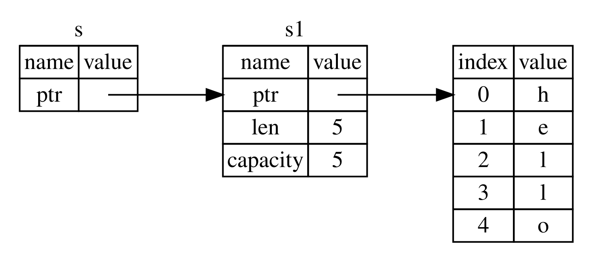
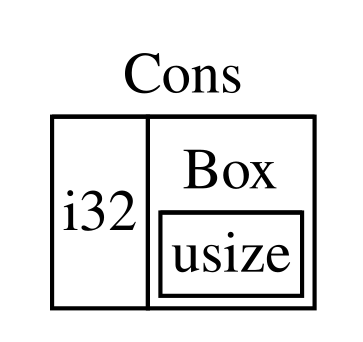
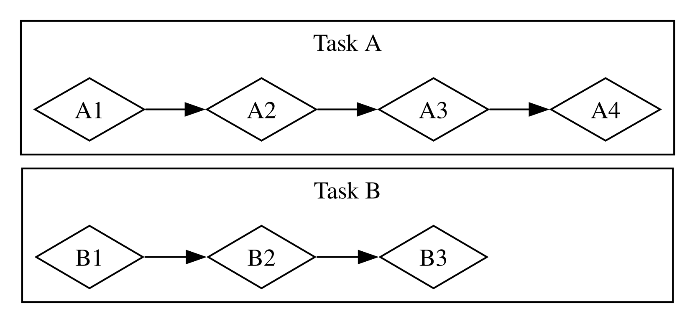
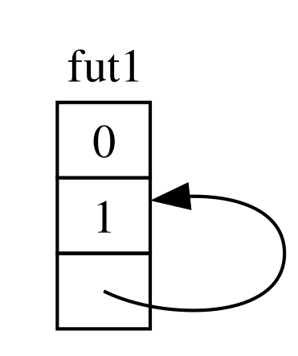
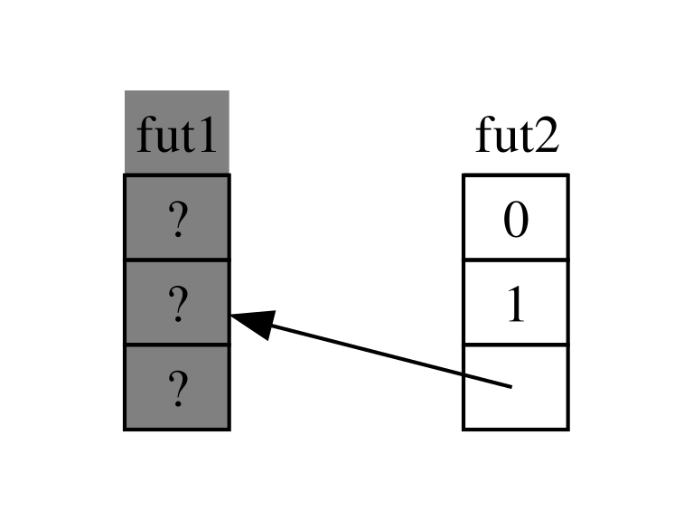

The Rust Programming Language
oleh Steve Klabnik, Carol Nichols, dan Chris Krycho, dengan kontribusi dari Komunitas Rust
Versi teks ini mengasumsikan Anda menggunakan Rust 1.99.1 (dirilis 2026-10-15)
atau yang lebih baru dengan edition = "2024" di berkas Cargo.toml semua proyek
untuk mengonfigurasinya menggunakan idiom Edisi Rust 2024. Lihat bagian
“Instalasi” Bab 1 untuk petunjuk menginstal atau
memperbarui Rust, dan lihat Lampiran E untuk
informasi tentang edisi.
Format HTML tersedia secara daring di
https://doc.rust-lang.org/stable/book/
dan secara luring dengan instalasi Rust yang dibuat dengan rustup; jalankan
rustup doc --book untuk membukanya.
Beberapa [terjemahan] komunitas juga tersedia.
Teks ini tersedia dalam format buku cetak dan ebook dari No Starch Press.
🚨 Ingin pengalaman belajar yang lebih interaktif? Cobalah versi berbeda dari Buku Rust, yang menampilkan: kuis, sorotan, visualisasi, dan lainnya: https://rust-book.cs.brown.edu
Kata Pengantar
Bahasa pemrograman Rust telah menempuh perjalanan panjang dalam beberapa tahun singkat, dari penciptaannya dan inkubasinya oleh komunitas kecil para penggemar yang baru berkembang, hingga menjadi salah satu bahasa pemrograman paling disukai dan paling dicari di dunia. Menoleh ke belakang, sudah pasti bahwa kekuatan dan janji Rust akan menarik perhatian dan mendapatkan tempat di pemrograman sistem. Akan tetapi, yang tidak pasti adalah pertumbuhan global minat dan inovasi yang meresap ke komunitas sumber terbuka dan memicu adopsi luas di berbagai industri.
Pada titik ini, mudah untuk menunjukkan fitur-fitur menakjubkan yang ditawarkan Rust untuk menjelaskan ledakan minat dan adopsi ini. Siapa yang tidak mengingin keamanan memori, dan performa cepat, dan compiler yang ramah, dan alat yang hebat, di antara banyak fitur menakjubkan lainnya? Bahasa Rust yang Anda lihat hari ini menggabungkan bertahun-tahun penelitian dalam pemrograman sistem dengan kebijaksanaan praktis dari komunitas yang hidup dan penuh semangat. Bahasa ini dirancang dengan tujuan dan dibangun dengan penuh perhatian, menawarkan pengembang alat yang memudahkan penulisan kode yang aman, cepat, dan andal.
Tetapi apa yang membuat Rust benar-benar istimewa adalah akarnya dalam memberdayakan Anda, pengguna, untuk mencapai tujuan Anda. Ini adalah bahasa yang ingin Anda sukses, dan prinsip pemberdayaan berjalan melalui inti komunitas yang membangun, memelihara, dan mendukung bahasa ini. Sejak edisi sebelumnya dari teks definitif ini, Rust telah berkembang lebih lanjut menjadi bahasa yang benar-benar global dan dipercaya. Proyek Rust kini didukung secara kokoh oleh Rust Foundation, yang juga berinvestasi pada inisiatif kunci untuk memastikan Rust aman, stabil, dan berkelanjutan.
Edisi ini dari The Rust Programming Language adalah pembaruan komprehensif, mencerminkan evolusi bahasa selama bertahun-tahun dan menyediakan informasi baru yang berharga. Namun ini bukan sekadar panduan sintaks dan pustaka—ini adalah undangan untuk bergabung dengan komunitas yang menghargai kualitas, performa, dan desain yang matang. Baik Anda pengembang berpengalaman yang ingin menjelajahi Rust pertama kali maupun Rustacean berpengalaman yang ingin menyempurnakan keterampilan, edisi ini menawarkan sesuatu untuk semua orang.
Perjalanan Rust telah menjadi perjalanan kolaborasi, pembelajaran, dan iterasi. Pertumbuhan bahasa dan ekosistemnya adalah cerminan langsung dari komunitas yang hidup dan beragam di baliknya. Kontribusi ribuan pengembang, mulai dari perancang bahasa inti hingga kontributor kasual, adalah yang membuat Rust seperti alat yang unik dan powerful. Dengan mengambil buku ini, Anda tidak hanya belajar bahasa pemrograman baru—Anda bergabung dengan gerakan untuk membuat perangkat lunak yang lebih baik, lebih aman, dan lebih menyenangkan untuk dikerjakan.
Selamat datang di komunitas Rust!
— Bec Rumbul, Direktur Eksekutif Rust Foundation
Pengantar
Catatan: Edisi buku ini sama dengan The Rust Programming Language yang tersedia dalam format cetak dan ebook dari No Starch Press.
Selamat datang di The Rust Programming Language, sebuah buku pengantar tentang Rust. Bahasa pemrograman Rust membantu Anda menulis perangkat lunak yang lebih cepat dan lebih andal. Ergonomi tingkat tinggi dan kontrol tingkat rendah sering kali bertentangan dalam desain bahasa pemrograman; Rust menantang konflik tersebut. Melalui keseimbangan antara kapasitas teknis yang powerful dan pengalaman pengembang yang sangat baik, Rust memberi Anda opsi untuk mengontrol detail tingkat rendah (seperti penggunaan memori) tanpa semua repot yang biasanya terkait dengan kontrol semacam itu.
Untuk Siapa Rust
Rust ideal bagi banyak orang untuk berbagai alasan. Mari lihat beberapa kelompok paling penting.
Tim Pengembang
Rust terbukti menjadi alat produktif untuk berkolaborasi di antara tim besar pengembang dengan tingkat pengetahuan pemrograman sistem yang bervariasi. Kode tingkat rendah rentan terhadap berbagai bug halus, yang dalam kebanyakan bahasa lain hanya dapat tertangkap melalui pengujian ekstensif dan tinjauan kode teliti oleh pengembang berpengalaman. Di Rust, compiler memainkan peran penjaga gerbang dengan menolak mengompilasi kode yang mengandung bug-bug sulit tertangkap ini, termasuk bug concurrency. Dengan bekerja bersama compiler, tim dapat menghabiskan waktunya untuk fokus pada logika program daripada mengejar bug.
Rust juga membawa alat pengembang kontemporer ke dunia pemrograman sistem:
- Cargo, manajer dependensi dan alat build yang disertakan, membuat penambahan, kompilasi, dan pengelolaan dependensi menjadi tidak merepotkan dan konsisten di seluruh ekosistem Rust.
- Alat pemformatan
rustfmtmemastikan gaya penulisan kode yang konsisten di seluruh pengembang. - Rust Language Server menggerakkan integrasi integrated development environment (IDE) untuk penyelesaian kode dan pesan kesalahan sebaris (inline).
Dengan menggunakan alat-alat ini dan alat lainnya di ekosistem Rust, pengembang dapat produktif saat menulis kode tingkat sistem.
Pelajar
Rust untuk pelajar dan mereka yang tertarik belajar tentang konsep sistem. Menggunakan Rust, banyak orang telah belajar tentang topik seperti pengembangan sistem operasi. Komunitas sangat ramah dan senang menjawab pertanyaan pelajar. Melalui upaya seperti buku ini, tim Rust ingin membuat konsep sistem lebih mudah diakses oleh lebih banyak orang, terutama mereka yang baru memulai pemrograman.
Perusahaan
Ratusan perusahaan, besar dan kecil, menggunakan Rust di produksi untuk berbagai tugas, termasuk alat baris perintah, layanan web, alat DevOps, perangkat terteman (embedded), analisis dan transcoding audio dan video, kriptokurensi, bioinformatika, mesin pencari, aplikasi Internet of Things, pembelajaran mesin, dan bahkan bagian-bagian utama dari peramban web Firefox.
Pengembang Sumber Terbuka
Rust untuk orang-orang yang ingin membangun bahasa pemrograman Rust, komunitas, alat pengembang, dan pustaka. Kami sangat senang jika Anda berkontribusi pada bahasa Rust.
Orang yang Menghargai Kecepatan dan Stabilitas
Rust untuk orang-orang yang menginginkan kecepatan dan stabilitas dalam sebuah bahasa. Dengan kecepatan, kami berarti baik seberapa cepat kode Rust dapat dijalankan maupun kecepatan di mana Rust memungkinkan Anda menulis program. Pemeriksaan compiler Rust memastikan stabilitas melalui penambahan fitur dan refactoring. Hal ini berbeda dengan kode warisan (legacy) yang rapuh di bahasa-bahasa tanpa pemeriksaan ini, yang sering membuat pengembang takut memodifikasinya. Dengan berusaha untuk abstraksi biaya nol—fitur tingkat tinggi yang kompilasi ke kode tingkat rendah secepat kode yang ditulis secara manual—Rust berusaha membuat kode aman juga menjadi kode cepat.
Bahasa Rust berharap dapat mendukung banyak pengguna lain juga; yang disebutkan di sini hanyalah beberapa pemangku kepentingan terbesar. Secara keseluruhan, ambisi terbesar Rust adalah menghilangkan trade-off yang telah diterima peprogram selama beberapa dekade dengan menyediakan keamanan dan produktivitas, kecepatan dan ergonomi. Cobalah Rust, dan lihat apakah pilihan-pilihan Rust cocok untuk Anda.
Untuk Siapa Buku Ini
Buku ini mengasumsikan Anda telah menulis kode dalam bahasa pemrograman lain, tetapi tidak membuat asumsi tentang bahasa mana pun. Kami telah berusaha membuat materi ini dapat diakses secara luas oleh mereka dari berbagai latar belakang pemrograman. Kami tidak menghabiskan banyak waktu membicarakan apa itu pemrograman adalah atau cara memikirkannya. Jika Anda benar-benar baru dalam pemrograman, Anda akan dilayani lebih baik dengan membaca buku yang secara khusus menyediakan pengantar pemrograman.
Cara Menggunakan Buku Ini
Secara umum, buku ini mengasumsikan Anda membacanya secara berurutan dari depan ke belakang. Bab-bab kemudian membangun konsep di bab-bab sebelumnya, dan bab-bab sebelumnya mungkin tidak mempelajari detail topik tertentu tetapi akan meninjau topik tersebut di bab yang lebih lanjut.
Anda akan menemukan dua jenis bab dalam buku ini: bab konsep dan bab proyek. Dalam bab konsep, Anda akan mempelajari aspek tertentu dari Rust. Dalam bab proyek, kami akan membangun program kecil bersama-sama, menerapkan apa yang Anda pelajari sejauh ini. Bab 2, Bab 12, dan Bab 21 adalah bab proyek; sisanya adalah bab konsep.
Bab 1 menjelaskan cara menginstal Rust, cara menulis program “Halo, dunia!”, dan cara menggunakan Cargo, manajer paket dan alat build Rust. Bab 2 adalah pengantar praktis untuk menulis program di Rust, meminta Anda membangun permainan tebak angka. Di sini, kami membahas konsep pada tingkat tinggi, dan bab-bab kemudian akan memberikan detail tambahan. Jika Anda ingin langsung praktik, Bab 2 adalah tempatnya. Jika Anda adalah pempelajar yang teliti dan lebih suka mempelajari setiap detail sebelum lanjut ke yang berikutnya, Anda mungkin ingin melewati Bab 2 dan langsung ke Bab 3, yang membahas fitur-fitur Rust yang mirip dengan bahasa pemrograman lain; kemudian, Anda dapat kembali ke Bab 2 ketika Anda ingin mengerjakan proyek menerapkan detail yang telah Anda pelajari.
Di Bab 4, Anda akan belajar tentang sistem kepemilikan Rust. Bab 5
membahas struct dan metode. Bab 6 mencakup enum, ekspresi match,
dan konstruksi alur kontrol if let dan let...else. Anda akan menggunakan
struct dan enum untuk membuat tipe kustom.
Di Bab 7, Anda akan belajar tentang sistem modul Rust dan tentang aturan privasi untuk mengatur kode dan antarmuka pemrograman aplikasi (API) publiknya. Bab 8 membahas beberapa struktur data koleksi umum yang disediakan pustaka standar: vektor, string, dan hash map. Bab 9 menjelajahi filsafat dan teknik penanganan kesalahan Rust.
Bab 10 menggali generik, trait, dan lifetime, yang memberi Anda kekuatan
untuk mendefinisikan kode yang berlaku untuk banyak tipe. Bab 11 seluruhnya
tentang pengujian, yang meskipun dengan jaminan keamanan Rust tetap diperlukan
untuk memastikan logika program Anda benar. Di Bab 12, kami akan membangun
implementasi kami sendiri dari subset fungsionalitas dari alat baris perintah
grep yang mencari teks di dalam berkas. Untuk ini, kami akan menggunakan banyak
konsep yang kami bahas di bab-bab sebelumnya.
Bab 13 mengeksplorasi closure dan iterator: fitur Rust yang berasal dari bahasa pemrograman fungsional. Di Bab 14, kami akan menelusuri Cargo secara lebih mendalam dan membahas praktik terbaik untuk berbagi pustaka Anda dengan orang lain. Bab 15 membahas smart pointer yang disediakan pustaka standar dan trait yang mengaktifkan fungsionalitasnya.
Di Bab 16, kami akan menelusuri model-model pemrograman concurrent berbeda dan membicarakan bagaimana Rust membantu Anda memprogram dalam beberapa thread tanpa ketakutan. Di Bab 17, kami membangun di atas itu dengan mengeksplorasi sintaks async dan await Rust, bersama dengan task, future, dan stream, serta model concurrency ringan yang mereka aktifkan.
Bab 18 melihat bagaimana idiom Rust dibandingkan dengan prinsip pemrograman berorientasi objek yang mungkin Anda kenal. Bab 19 adalah referensi tentang pola dan pencocokan pola, yang merupakan cara powerful mengekspresikan ide di seluruh program Rust. Bab 20 berisi beragam topik lanjutan yang menarik, termasuk unsafe Rust, makro, dan lebih lanjut tentang lifetime, trait, tipe, fungsi, dan closure.
Di Bab 21, kami akan menyelesaikan proyek di mana kami akan mengimplementasikan server web multithread tingkat rendah!
Akhirnya, beberapa lampiran berisi informasi berguna tentang bahasa dalam format yang lebih seperti referensi. Lampiran A mencakup kata kunci Rust, Lampiran B mencakup operator dan simbol Rust, Lampiran C mencakup trait yang dapat diturunkan yang disediakan pustaka standar, Lampiran D mencakup beberapa alat pengembangan berguna, dan Lampiran E menjelaskan edisi Rust. Di Lampiran F, Anda dapat menemukan terjemahan buku, dan di Lampiran G kami akan membahas cara Rust dibuat dan apa itu nightly Rust.
Tidak ada cara salah untuk membaca buku ini: Jika Anda ingin melompat ke depan, silakan! Anda mungkin harus kembali ke bab-bab sebelumnya jika mengalami kebingungan. Tapi lakukan apa yang berhasil untuk Anda.
Bagian penting dari proses belajar Rust adalah belajar cara membaca pesan kesalahan yang ditampilkan compiler: Pesan-pesan ini akan mengarahkan Anda menuju kode yang berfungsi. Sebagai akibatnya, kami akan menyediakan banyak contoh yang tidak kompilasi beserta pesan kesalahan yang akan ditampilkan compiler dalam setiap situasi. Ketahui bahwa jika Anda memasukkan dan menjalankan contoh acak, mungkin tidak akan kompilasi! Pastikan Anda membaca teks di sekitarnya untuk melihat apakah contoh yang Anda coba jalankan memang dimaksudkan untuk error. Dalam kebanyakan situasi, kami akan mengarahkan Anda ke versi yang benar dari kode yang tidak kompilasi. Ferris juga akan membantu Anda membedakan kode yang tidak dimaksudkan untuk bekerja:
| Ferris | Arti |
|---|---|
 | Kode ini tidak kompilasi! |
 | Kode ini panic! |
 | Kode ini tidak menghasilkan perilaku yang diinginkan. |
Dalam kebanyakan situasi, kami akan mengarahkan Anda ke versi yang benar dari kode manapun yang tidak kompilasi.
Kode Sumber
Berkas sumber dari mana buku ini dibangun dapat ditemukan di GitHub.
Memulai
Mari memulai perjalanan Rust Anda! Banyak yang harus dipelajari, tetapi setiap perjalanan dimulai dari suatu tempat. Di bab ini, kami akan membahas:
- Menginstal Rust di Linux, macOS, dan Windows
- Menulis program yang mencetak
Halo, dunia! - Menggunakan
cargo, manajer paket dan sistem build Rust
Instalasi
Instalasi
Langkah pertama adalah menginstal Rust. Kami akan mengunduh Rust melalui rustup,
sebuah alat baris perintah untuk mengelola versi Rust dan alat terkait. Anda
membutuhkan koneksi internet untuk mengunduhnya.
Catatan: Jika Anda lebih memilih untuk tidak menggunakan
rustupkarena alasan tertentu, silakan lihat halaman Metode Instalasi Rust Lainnya untuk opsi lainnya.
Langkah-langkah berikut menginstal versi stabil terbaru dari compiler Rust. Jaminan stabilitas Rust memastikan bahwa semua contoh dalam buku yang kompilasi akan terus dapat kompilasi dengan versi Rust yang lebih baru. Keluaran mungkin sedikit berbeda antar versi karena Rust sering memperbaiki pesan kesalahan dan peringatan. Dengan kata lain, versi stabil Rust yang lebih baru yang Anda instal menggunakan langkah-langkah ini seharusnya berfungsi seperti yang diharapkan dengan isi buku ini.
Notasi Baris Perintah
Di bab ini dan sepanjang buku, kami akan menunjukkan beberapa perintah yang
digunakan di terminal. Baris yang Anda masukkan di terminal semuanya diawali
dengan $. Anda tidak perlu mengetik karakter $; itu adalah prompt baris
perintah yang ditunjukkan untuk mengindikasikan awal setiap perintah. Baris
yang tidak diawali dengan $ biasanya menampilkan keluaran dari perintah
sebelumnya. Selain itu, contoh khusus PowerShell akan menggunakan > bukan
$.
Menginstal rustup di Linux atau macOS
Jika Anda menggunakan Linux atau macOS, buka terminal dan masukkan perintah berikut:
$ curl --proto '=https' --tlsv1.2 https://sh.rustup.rs -sSf | sh
Perintah tersebut mengunduh skrip dan memulai instalasi alat rustup, yang
menginstal versi stabil terbaru Rust. Anda mungkin diminta kata sandi. Jika
instalasi berhasil, baris berikut akan muncul:
Rust is installed now. Great!
Anda juga akan membutuhkan linker, yaitu program yang digunakan Rust untuk menggabungkan keluaran kompilasinya menjadi satu berkas. Kemungkinan besar Anda sudah memilikinya. Jika Anda mendapat kesalahan linker, Anda seharusnya menginstal kompilator C, yang biasanya menyertakan linker. Kompilator C juga berguna karena beberapa paket Rust umum bergantung pada kode C dan akan membutuhkan kompilator C.
Di macOS, Anda bisa mendapatkan kompilator C dengan menjalankan:
$ xcode-select --install
Pengguna Linux sebaiknya menginstal GCC atau Clang, sesuai dengan dokumentasi
distribusi mereka. Misalnya, jika Anda menggunakan Ubuntu, Anda bisa menginstal
paket build-essential.
Menginstal rustup di Windows
Di Windows, buka https://www.rust-lang.org/tools/install dan ikuti petunjuk untuk menginstal Rust. Pada titik tertentu dalam instalasi, Anda akan diminta untuk menginstal Visual Studio. Ini menyediakan linker dan pustaka native yang dibutuhkan untuk mengompilasi program. Jika Anda membutuhkan bantuan lebih untuk langkah ini, lihat https://rust-lang.github.io/rustup/installation/windows-msvc.html.
Sisa buku ini menggunakan perintah yang berfungsi di cmd.exe dan PowerShell keduanya. Jika ada perbedaan khusus, kami akan menjelaskan yang mana digunakan.
Pemecahan Masalah
Untuk memeriksa apakah Anda telah menginstal Rust dengan benar, buka shell dan masukkan baris ini:
$ rustc --version
Anda seharusnya melihat nomor versi, hash komit, dan tanggal komit untuk versi stabil terbaru yang telah dirilis, dalam format berikut:
rustc x.y.z (abcabcabc yyyy-mm-dd)
Jika Anda melihat informasi ini, Anda telah berhasil menginstal Rust! Jika Anda
tidak melihat informasi ini, periksa apakah Rust ada di variabel sistem
%PATH% Anda sebagai berikut.
Di Windows CMD, gunakan:
> echo %PATH%
Di PowerShell, gunakan:
> echo $env:Path
Di Linux dan macOS, gunakan:
$ echo $PATH
Jika semuanya sudah benar dan Rust masih tidak berfungsi, ada sejumlah tempat di mana Anda bisa mendapatkan bantuan. Temukan cara menghubungi Rustacean lain (sebutan lucu yang kami gunakan untuk diri kami sendiri) di halaman komunitas.
Memperbarui dan Menghapus Instalasi
Setelah Rust diinstal melalui rustup, memperbarui ke versi yang baru dirilis
mudah. Dari shell Anda, jalankan skrip pembaruan berikut:
$ rustup update
Untuk menghapus instalasi Rust dan rustup, jalankan skrip penghapusan
berikut dari shell Anda:
$ rustup self uninstall
Membaca Dokumentasi Lokal
Instalasi Rust juga menyertakan salinan lokal dari dokumentasi sehingga Anda
dapat membacanya secara luring. Jalankan rustup doc untuk membuka dokumentasi
lokal di peramban Anda.
Setiap kali tipe atau fungsi disediakan oleh pustaka standar dan Anda tidak yakina apa fungsinya atau cara menggunakannya, gunakan dokumentasi application programming interface (API) untuk mengetahuinya!
Menggunakan Editor Teks dan IDE
Buku ini tidak membuat asumsi tentang alat apa yang Anda gunakan untuk menulis kode Rust. Hampir editor teks apa pun akan menyelesaikan pekerjaan! Namun, banyak editor teks dan integrated development environments (IDE) memiliki dukungan builtin untuk Rust. Anda selalu dapat menemukan daftar editor dan IDE yang cukup terkini di halaman alat di situs web Rust.
Bekerja Secara Luring dengan Buku Ini
Dalam beberapa contoh, kami akan menggunakan paket Rust di luar pustaka standar.
Untuk mengerjakan contoh-contoh tersebut, Anda akan memerlukan koneksi internet
atau sudah mengunduh dependensi tersebut sebelumnya. Untuk mengunduh dependensi
sebelumnya, Anda dapat menjalankan perintah-perintah berikut. (Kami akan
menjelaskan apa itu cargo dan apa yang dilakukan masing-masing perintah ini
secara detail nanti.)
$ cargo new get-dependencies
$ cd get-dependencies
$ cargo add rand@0.10.1 trpl@0.2.0
Ini akan meng-cache unduhan untuk paket-paket tersebut sehingga Anda tidak
perlu mengunduhnya nanti. Setelah Anda menjalankan perintah ini, Anda tidak
perlu menyimpan folder get-dependencies. Jika Anda telah menjalankan perintah
ini, Anda dapat menggunakan flag --offline dengan semua perintah cargo di
sisa buku untuk menggunakan versi yang di-cache alih-alih mencoba menggunakan
jaringan.
Halo, Dunia!
Halo, Dunia!
Sekarang setelah Anda menginstal Rust, saatnya menulis program Rust pertama Anda.
Biasa saat belajar bahasa baru untuk menulis program kecil yang mencetak teks
Halo, dunia! ke layar, jadi kami akan melakukan hal yang sama di sini!
Catatan: Buku ini mengasumsikan ketertarikan dasar dengan baris perintah. Rust tidak membuat tuntutan khusus tentang pengeditan atau alat atau di mana kode Anda berada, jadi jika Anda lebih suka menggunakan IDE daripada baris perintah, silakan gunakan IDE favorit Anda. Banyak IDE sekarang memiliki tingkat dukungan Rust tertentu; lihat dokumentasi IDE untuk detailnya. Tim Rust telah fokus pada mengaktifkan dukungan IDE yang hebat melalui
rust-analyzer. Lihat Lampiran D untuk detail lebih lanjut.
Penyiapan Direktori Proyek
Anda akan mulai dengan membuat direktori untuk menyimpan kode Rust Anda. Tidak
penting bagi Rust di mana kode Anda berada, tetapi untuk latihan dan proyek
dalam buku ini, kami menyarankan membuat direktori _projects_ di direktori
home Anda dan menyimpan semua proyek Anda di sana.
Buka terminal dan masukkan perintah-perintah berikut untuk membuat direktori
_projects_ dan direktori untuk proyek “Halo, dunia!” di dalam direktori
_projects_.
Untuk Linux, macOS, dan PowerShell di Windows, masukkan ini:
$ mkdir ~/projects
$ cd ~/projects
$ mkdir hello_world
$ cd hello_world
Untuk Windows CMD, masukkan ini:
> mkdir "%USERPROFILE%\projects"
> cd /d "%USERPROFILE%\projects"
> mkdir hello_world
> cd hello_world
Dasar Program Rust
Selanjutnya, buat berkas sumber baru dan namai _main.rs_. Berkas Rust selalu
berakhir dengan ekstensi _.rs_. Jika Anda menggunakan lebih dari satu kata di
nama berkas, konvensinya adalah menggunakan garis bawah untuk memisahkannya.
Misalnya, gunakan _hello_world.rs_ bukan _helloworld.rs_.
Sekarang buka berkas _main.rs_ yang baru Anda buat dan masukkan kode di
Listing 1-1.
fn main() {
println!("Halo, dunia!");
}Halo, dunia!Simpan berkas dan kembali ke jendela terminal Anda di direktori
_~/projects/hello_world_. Di Linux atau macOS, masukkan perintah-perintah
berikut untuk mengompilasi dan menjalankan berkas:
$ rustc main.rs
$ ./main
Halo, dunia!
Di Windows, masukkan perintah .\main sebagai pengganti ./main:
> rustc main.rs
> .\main
Halo, dunia!
Terlepas dari sistem operasi Anda, string Halo, dunia! seharusnya dicetak ke
terminal. Jika Anda tidak melihat keluaran ini, rujuk kembali ke bagian
“Pemecahan Masalah” di bagian Instalasi untuk
cara mendapatkan bantuan.
Jika Halo, dunia! tercetak, selamat! Anda secara resmi telah menulis program
Rust. Itu membuat Anda seorang programmer Rust—selamat datang!
Anatomi Program Rust
Mari tinjau program “Halo, dunia!” ini secara detail. Berikut potongan pertama dari puzzle ini:
fn main() {
}Baris-baris ini mendefinisikan fungsi bernama main. Fungsi main istimewa:
Selalu menjadi kode pertama yang dijalankan di setiap program Rust yang
dapat dieksekusi. Di sini, baris pertama mendeklarasikan fungsi bernama main
yang tidak memiliki parameter dan tidak mengembalikan apa pun. Jika ada
parameter, parameter-parameter itu akan berada di dalam tanda kurung (()).
Badan fungsi dibungkus dalam {}. Rust mewajibkan tanda kurung kurawal di
sekitar semua badan fungsi. Gaya yang baik adalah menempatkan tanda kurung
kurawal pembuka di baris yang sama dengan deklarasi fungsi, menambahkan satu
spasi di antaranya.
Catatan: Jika Anda ingin mempertahankan gaya standar di seluruh proyek Rust, Anda dapat menggunakan alat pemformat otomatis bernama
rustfmtuntuk memformat kode Anda dengan gaya tertentu (lebih lanjut tentangrustfmtdi Lampiran D). Tim Rust telah menyertakan alat ini dengan distribusi Rust standar, sepertirustc, sehingga seharusnya sudah terinstal di komputer Anda!
Badan fungsi main menampung kode berikut:
#![allow(unused)]
fn main() {
println!("Halo, dunia!");
}Baris ini melakukan semua pekerjaan di program kecil ini: Mencetak teks ke layar. Ada tiga detail penting yang perlu diperhatikan di sini.
Pertama, println! memanggil makro Rust. Jika memanggil fungsi sebagai
penggantinya, akan ditulis sebagai println (tanpa !). Makro Rust adalah
cara untuk menulis kode yang menghasilkan kode untuk memperluas sintaks Rust,
dan kami akan membahasnya lebih detail di Bab 20.
Untuk saat ini, Anda hanya perlu tahu bahwa menggunakan ! berarti Anda
memanggil makro bukan fungsi normal dan makro tidak selalu mengikuti aturan
yang sama seperti fungsi.
Kedua, Anda melihat string "Halo, dunia!". Kami meneruskan string ini sebagai
argumen ke println!, dan string dicetak ke layar.
Ketiga, kami mengakhiri baris dengan titik koma (;), yang menunjukkan bahwa
ekspresi ini berakhir, dan yang berikutnya siap dimulai. Kebanyakan baris kode
Rust diakhiri dengan titik koma.
Kompilasi dan Eksekusi
Anda baru saja menjalankan program yang baru dibuat, mari periksa setiap langkah dalam prosesnya.
Sebelum menjalankan program Rust, Anda harus mengompilasinya menggunakan compiler
Rust dengan memasukkan perintah rustc dan meneruskannya nama berkas sumber
Anda, seperti ini:
$ rustc main.rs
Jika Anda memiliki latar belakang C atau C++, Anda akan memperhatikan bahwa
ini mirip dengan gcc atau clang. Setelah kompilasi berhasil, Rust
menghasilkan biner yang dapat dieksekusi.
Di Linux, macOS, dan PowerShell di Windows, Anda bisa melihat file yang dapat
dieksekusi dengan memasukkan perintah ls di shell Anda:
$ ls
main main.rs
Di Linux dan macOS, Anda akan melihat dua berkas. Dengan PowerShell di Windows, Anda akan melihat tiga berkas yang sama seperti yang Anda lihat menggunakan CMD. Dengan CMD di Windows, Anda akan memasukkan hal berikut:
> dir /B %= opsi /B mengatakan hanya menampilkan nama berkas =%
main.exe
main.pdb
main.rs
Ini menampilkan berkas kode sumber dengan ekstensi _.rs_, berkas yang dapat
dieksekusi (main.exe di Windows, tetapi main di semua platform lain), dan,
saat menggunakan Windows, berkas yang berisi informasi debugging dengan ekstensi
_.pdb_. Dari sini, Anda menjalankan berkas main atau main.exe, seperti
ini:
$ ./main # atau .\main di Windows
Jika main.rs Anda adalah program “Halo, dunia!”, baris ini mencetak Halo, dunia! ke terminal Anda.
Jika Anda lebih familiar dengan bahasa dinamis, seperti Ruby, Python, atau
JavaScript, Anda mungkin tidak terbiasa mengompilasi dan menjalankan program
sebagai langkah terpisah. Rust adalah bahasa ahead-of-time compiled,
artinya Anda bisa mengompilasi program dan memberikan file yang dapat dieksekusi
ke orang lain, dan mereka bisa menjalankannya bahkan tanpa Rust terinstal. Jika
Anda memberi seseorang berkas _.rb_, _.py_, atau _.js_, mereka perlu
memiliki implementasi Ruby, Python, atau JavaScript terinstal (masing-masing).
Tetapi di bahasa-bahasa tersebut, Anda hanya butuh satu perintah untuk
mengompilasi dan menjalankan program Anda. Semuanya adalah trade-off dalam
desain bahasa.
Hanya mengompilasi dengan rustc sudah cukup untuk program sederhana, tetapi
seiring proyek Anda berkembang, Anda akan ingin mengelola semua opsi dan
memudahkan berbagi kode Anda. Selanjutnya, kami akan memperkenalkan Anda pada
alat Cargo, yang akan membantu Anda menulis program Rust dunia nyata.
Halo, Cargo!
Halo, Cargo!
Cargo adalah sistem build dan manajer paket Rust. Kebanyakan Rustacean menggunakan alat ini untuk mengelola proyek Rust mereka karena Cargo menangani banyak tugas untuk Anda, seperti membangun kode Anda, mengunduh pustaka yang menjadi dependensi kode Anda, dan membangun pustaka-pustaka tersebut. (Kami menyebut pustaka yang dibutuhkan kode Anda sebagai dependencies.)
Program Rust paling sederhana, seperti yang telah kita tulis sejauh ini, tidak memiliki dependensi apa pun. Jika kita membangun proyek “Halo, dunia!” dengan Cargo, ia akan hanya menggunakan bagian Cargo yang menangani pembangunan kode Anda. Saat Anda menulis program Rust yang lebih kompleks, Anda akan menambahkan dependensi, dan jika Anda memulai proyek menggunakan Cargo, menambahkan dependensi akan jauh lebih mudah.
Karena sebagian besar proyek Rust menggunakan Cargo, sisa buku ini mengasumsikan bahwa Anda juga menggunakan Cargo. Cargo terinstal bersama Rust jika Anda menggunakan penginstal resmi yang dibahas di bagian “Instalasi”. Jika Anda menginstal Rust melalui cara lain, periksa apakah Cargo terinstal dengan memasukkan hal berikut di terminal Anda:
$ cargo --version
Jika Anda melihat nomor versi, Anda memilikinya! Jika Anda melihat kesalahan,
seperti command not found, lihat dokumentasi untuk metode instalasi Anda untuk
menentukan cara menginstal Cargo secara terpisah.
Membuat Proyek dengan Cargo
Mari buat proyek baru menggunakan Cargo dan lihat bagaimana ia berbeda dari
proyek “Halo, dunia!” asli kita. Kembali ke direktori _projects_ Anda
(atau di mana pun Anda memutuskan menyimpan kode). Kemudian, pada sistem
operasi apa pun, jalankan hal berikut:
$ cargo new hello_cargo
$ cd hello_cargo
Perintah pertama membuat direktori dan proyek baru bernama _hello_cargo_.
Kami menamai proyek kami _hello_cargo_, dan Cargo membuat berkas-berkasnya di
direktori dengan nama yang sama.
Masuk ke direktori _hello_cargo_ dan daftarkan berkasnya. Anda akan melihat
bahwa Cargo telah menghasilkan dua berkas dan satu direktori untuk kami: berkas
_Cargo.toml_ dan direktori _src_ dengan berkas _main.rs_ di dalamnya.
Cargo juga telah menginisialisasi repositori Git baru beserta berkas
_.gitignore_. Berkas Git tidak akan dibuat jika Anda menjalankan cargo new
di dalam repositori Git yang sudah ada; Anda dapat mengubah perilaku ini dengan
menggunakan cargo new --vcs=git.
Catatan: Git adalah sistem kontrol versi umum. Anda bisa mengubah
cargo newuntuk menggunakan sistem kontrol versi berbeda atau tanpa sistem kontrol versi dengan menggunakan flag--vcs. Jalankancargo new --helpuntuk melihat opsi yang tersedia.
Buka _Cargo.toml_ di editor teks pilihan Anda. Ia seharusnya terlihat mirip
dengan kode di Listing 1-2.
[package]
name = "hello_cargo"
version = "0.1.0"
edition = "2024"
[dependencies]
cargo newBerkas ini menggunakan format TOML (Tom’s Obvious, Minimal Language), yang merupakan format konfigurasi Cargo.
Baris pertama, [package], adalah judul bagian yang menunjukkan bahwa
pernyataan-pernyataan berikutnya mengonfigurasi sebuah paket. Seiring kami
menambahkan lebih banyak informasi ke berkas ini, kami akan menambahkan bagian
lainnya.
Tiga baris berikutnya menetapkan informasi konfigurasi yang dibutuhkan Cargo
untuk mengompilasi program Anda: nama, versi, dan edisi Rust yang akan
digunakan. Kami akan membahas kunci edition di Lampiran E.
Baris terakhir, [dependencies], adalah awal bagian untuk Anda mendaftarkan
dependensi proyek Anda. Di Rust, paket kode disebut sebagai crates. Kami
tidak akan memerlukan crate lain untuk proyek ini, tetapi kami akan
menggunakannya di proyek pertama di Bab 2, jadi kami akan menggunakan bagian
dependencies tersebut saat itu.
Sekarang buka _src/main.rs_ dan lihat:
Nama Berkas: src/main.rs
fn main() {
println!("Halo, dunia!");
}Cargo telah menghasilkan program “Halo, dunia!” untuk Anda, sama seperti yang
kami tulis di Listing 1-1! Jauh ini, perbedaan antara proyek kami dan proyek
yang dihasilkan Cargo adalah Cargo menempatkan kode di direktori _src_, dan
kami memiliki berkas konfigurasi _Cargo.toml_ di direktori tingkat atas.
Cargo mengharapkan berkas sumber Anda berada di dalam direktori _src_.
Direktori proyek tingkat atas hanya untuk berkas README, informasi lisensi,
berkas konfigurasi, dan hal-hal lain yang tidak terkait dengan kode Anda.
Menggunakan Cargo membantu Anda mengorganisasi proyek. Ada tempat untuk
masing-masing, dan semuanya ada di tempatnya.
Jika Anda memulai proyek yang tidak menggunakan Cargo, seperti yang kami lakukan
dengan proyek “Halo, dunia!”, Anda bisa mengubahnya menjadi proyek yang
menggunakan Cargo. Pindahkan kode proyek ke direktori _src_ dan buat berkas
_Cargo.toml_ yang sesuai. Salah satu cara mudah untuk mendapatkan berkas
_Cargo.toml_ tersebut adalah menjalankan cargo init, yang akan
membuatkannya untuk Anda secara otomatis.
Membangun dan Menjalankan Proyek Cargo
Sekarang mari lihat apa yang berbeda saat kami membangun dan menjalankan program
“Halo, dunia!” dengan Cargo! Dari direktori _hello_cargo_ Anda, bangun
proyek Anda dengan memasukkan perintah berikut:
$ cargo build
Compiling hello_cargo v0.1.0 (file:///projects/hello_cargo)
Finished dev [unoptimized + debuginfo] target(s) in 2.85 secs
Perintah ini membuat file yang dapat dieksekusi di _target/debug/hello_cargo_
(atau _target\debug\hello_cargo.exe_ di Windows) bukannya di direktori saat
ini. Karena build default adalah debug build, Cargo meletakkan biner di
direktori bernama _debug_. Anda bisa menjalankan file yang dapat dieksekusi
dengan perintah ini:
$ ./target/debug/hello_cargo # atau .\target\debug\hello_cargo.exe di Windows
Halo, dunia!
Jika semuanya berjalan dengan baik, Halo, dunia! seharusnya tercetak ke
terminal. Menjalankan cargo build untuk pertama kalinya juga menyebabkan Cargo
membuat berkas baru di tingkat atas: _Cargo.lock_. Berkas ini melacak versi
pastinya dependensi di proyek Anda. Proyek ini tidak memiliki dependensi, jadi
berkasnya agak kosong. Anda tidak akan pernah perlu mengubah berkas ini secara
manual; Cargo mengelola isinya untuk Anda.
Kami baru saja membangun proyek dengan cargo build dan menjalankannya dengan
./target/debug/hello_cargo, tetapi kami juga bisa menggunakan cargo run untuk
mengompilasi kode dan kemudian menjalankan file yang dapat dieksekusi yang
negarai dalam satu perintah:
$ cargo run
Finished dev [unoptimized + debuginfo] target(s) in 0.0 secs
Running `target/debug/hello_cargo`
Halo, dunia!
Menggunakan cargo run lebih nyaman daripada harus ingat menjalankan cargo build dan kemudian menggunakan seluruh jalur ke biner, sehingga kebanyakan
pengembang menggunakan cargo run.
Perhatikan bahwa kali ini kami tidak melihat keluaran yang menunjukkan Cargo
sedang mengompilasi hello_cargo. Cargo menyadari bahwa berkas-berkas tidak
berubah, jadi ia tidak membangun ulang tetapi hanya menjalankan biner. Jika
Anda telah memodifikasi kode sumber, Cargo akan membangun ulang proyek sebelum
menjalankannya, dan Anda akan melihat keluaran ini:
$ cargo run
Compiling hello_cargo v0.1.0 (file:///projects/hello_cargo)
Finished dev [unoptimized + debuginfo] target(s) in 0.33 secs
Running `target/debug/hello_cargo`
Halo, dunia!
Cargo juga menyediakan perintah bernama cargo check. Perintah ini dengan cepat
memeriksa kode Anda untuk memastikan ia kompilasi tetapi tidak menghasilkan
file yang dapat dieksekusi:
$ cargo check
Checking hello_cargo v0.1.0 (file:///projects/hello_cargo)
Finished dev [unoptimized + debuginfo] target(s) in 0.32 secs
Mengapa Anda tidak menginginkan file yang dapat dieksekusi? Sering kali,
cargo check jauh lebih cepat dari cargo build karena ia melewati langkah
menghasilkan file yang dapat dieksekusi. Jika Anda terus memeriksa pekerjaan
Anda saat menulis kode, menggunakan cargo check akan mempercepat proses
memberitahu Anda apakah proyek Anda masih kompilasi! Sebagai akibatnya, banyak
Rustacean menjalankan cargo check secara berkala saat menulis program mereka
untuk memastikan ia kompilasi. Kemudian, mereka menjalankan cargo build saat
mereka siap menggunakan file yang dapat dieksekusi.
Mari rangkum apa yang telah kami pelajari sejauh ini tentang Cargo:
- Kita bisa membuat proyek menggunakan
cargo new. - Kita bisa membangun proyek menggunakan
cargo build. - Kita bisa membangun dan menjalankan proyek dalam satu langkah menggunakan
cargo run. - Kita bisa membangun proyek tanpa menghasilkan biner untuk memeriksa kesalahan
menggunakan
cargo check. - Alih-alih menyimpan hasil build di direktori yang sama dengan kode kita,
Cargo menyimpannya di direktori
_target/debug_.
Keuntungan tambahan menggunakan Cargo adalah perintahnya sama tidak peduli sistem operasi apa yang Anda gunakan. Jadi, pada titik ini, kami tidak akan lagi menyediakan petunjuk khusus untuk Linux dan macOS versus Windows.
Membangun untuk Rilis
Saat proyek Anda akhirnya siap untuk rilis, Anda bisa menggunakan cargo build --release untuk mengompilasinya dengan optimisasi. Perintah ini akan membuat
file yang dapat dieksekusi di _target/release_ bukannya _target/debug_.
Optimisasi membuat kode Rust Anda berjalan lebih cepat, tetapi mengaktifkannya
memperlama waktu yang dibutuhkan untuk mengompilasi program Anda. Inilah alasan
ada dua profil berbeda: satu untuk pengembangan, saat Anda ingin membangun
ulang dengan cepat dan sering, dan yang lain untuk membangun program final yang
akan Anda berikan ke pengguna yang tidak akan dibangun ulang berulang kali dan
yang akan berjalan secepat mungkin. Jika Anda melakukan benchmark waktu jalannya
kode, pastikan untuk menjalankan cargo build --release dan melakukan benchmark
dengan file yang dapat dieksekusi di _target/release_.
Memanfaatkan Konvensi Cargo
Dengan proyek sederhana, Cargo tidak memberikan banyak nilai dibandingkan hanya
menggunakan rustc, tetapi ia akan membuktikan nilainya seiring program Anda
menjadi lebih rumit. Setelah program berkembang menjadi banyak berkas atau
membutuhkan dependensi, jauh lebih mudah membiarkan Cargo mengoordinasikan
build.
Meskipun proyek hello_cargo sederhana, ia kini menggunakan banyak alat nyata
yang akan Anda gunakan di sisa karir Rust Anda. Faktanya, untuk bekerja pada
proyek yang sudah ada, Anda bisa menggunakan perintah-perintah berikut untuk
memeriksa kode menggunakan Git, berpindah ke direktori proyek tersebut, dan
membangun:
$ git clone example.org/someproject
$ cd someproject
$ cargo build
Untuk informasi lebih lanjut tentang Cargo, lihat dokumentasinya.
Ringkasan
Anda sudah memulai dengan baik perjalanan Rust Anda! Di bab ini, Anda belajar bagaimana:
- Menginstal versi stabil terbaru Rust menggunakan
rustup. - Memperbarui ke versi Rust yang lebih baru.
- Membuka dokumentasi yang terinstal secara lokal.
- Menulis dan menjalankan program “Halo, dunia!” menggunakan
rustcsecara langsung. - Membuat dan menjalankan proyek baru menggunakan konvensi Cargo.
Ini adalah waktu yang tepat untuk membangun program yang lebih substansial untuk terbiasa membaca dan menulis kode Rust. Jadi, di Bab 2, kami akan membangun program permainan tebak angka. Jika Anda lebih suka mulai dengan mempelajari cara kerja konsep pemrograman umum di Rust, lihat Bab 3 lalu kembali ke Bab 2.
Memprogram Permainan Tebak Angka
Mari terjun ke Rust dengan mengerjakan proyek langsung bersama-sama! Bab ini
memperkenalkan Anda pada beberapa konsep Rust umum dengan menunjukkan cara
menggunakannya dalam program nyata. Anda akan belajar tentang let, match,
metode, fungsi terkait (associated functions), crate eksternal, dan banyak lagi!
Di bab-bab berikutnya, kami akan mengeksplorasi ide-ide ini lebih detail. Di bab
ini, Anda hanya akan mempraktikkan dasar-dasarnya.
Kami akan mengimplementasikan masalah pemrograman pemula klasik: permainan tebak angka. Begini cara kerjanya: Program akan menghasilkan bilangan bulat acak antara 1 dan 100. Kemudian program akan meminta pemain memasukkan tebakan. Setelah tebakan dimasukkan, program akan menunjukkan apakah tebakan terlalu rendah atau terlalu tinggi. Jika tebakan benar, permainan akan mencetak pesan selamat dan keluar.
Menyiapkan Proyek Baru
Untuk menyiapkan proyek baru, buka direktori _projects_ yang Anda buat di
Bab 1 dan buat proyek baru menggunakan Cargo, seperti ini:
$ cargo new guessing_game
$ cd guessing_game
Perintah pertama, cargo new, mengambil nama proyek (guessing_game) sebagai
argumen pertama. Perintah kedua beralih ke direktori proyek baru.
Lihat berkas _Cargo.toml_ yang dihasilkan:
Nama Berkas: Cargo.toml
[package]
name = "guessing_game"
version = "0.1.0"
edition = "2024"
[dependencies]
Seperti yang Anda lihat di Bab 1, cargo new menghasilkan program “Halo,
dunia!” untuk Anda. Periksa berkas _src/main.rs_:
Nama Berkas: src/main.rs
fn main() {
println!("Hello, world!");
}Sekarang mari kompilasi program “Halo, dunia!” ini dan jalankan dalam langkah
yang sama menggunakan perintah cargo run:
$ cargo run
Compiling guessing_game v0.1.0 (file:///projects/guessing_game)
Finished `dev` profile [unoptimized + debuginfo] target(s) in 0.08s
Running `target/debug/guessing_game`
Hello, world!
Perintah run berguna saat Anda perlu melakukan iterasi cepat pada proyek,
seperti yang akan kami lakukan dalam game ini, dengan menguji setiap iterasi
sebelum melanjutkan ke yang berikutnya.
Buka kembali berkas _src/main.rs_. Anda akan menulis semua kode di berkas ini.
Memproses Tebakan
Bagian pertama program permainan tebak angka akan meminta masukan pengguna,
memproses masukan itu, dan memeriksa apakah masukan berada dalam bentuk yang
diharapkan. Untuk memulai, kami akan mengizinkan pemain memasukkan tebakan.
Masukkan kode di Listing 2-1 ke _src/main.rs_.
use std::io;
fn main() {
println!("Guess the number!");
println!("Please input your guess.");
let mut guess = String::new();
io::stdin()
.read_line(&mut guess)
.expect("Failed to read line");
println!("You guessed: {guess}");
}Kode ini mengandung banyak informasi, jadi mari tinjau baris per baris. Untuk
mendapatkan masukan pengguna dan kemudian mencetak hasilnya sebagai keluaran,
kami perlu memasukkan pustaka input/output io ke dalam ruang lingkup (scope).
Pustaka io berasal dari pustaka standar, yang dikenal sebagai std:
use std::io;
fn main() {
println!("Guess the number!");
println!("Please input your guess.");
let mut guess = String::new();
io::stdin()
.read_line(&mut guess)
.expect("Failed to read line");
println!("You guessed: {guess}");
}Secara default, Rust memiliki sekumpulan item yang didefinisikan di pustaka standar yang dibawa ke ruang lingkup setiap program. Kumpulan ini disebut prelude, dan Anda bisa melihat semuanya di dokumentasi pustaka standar.
Jika tipe yang ingin Anda gunakan tidak ada di prelude, Anda harus memasukkan
tipe itu ke ruang lingkup secara eksplisit dengan pernyataan use. Menggunakan
pustaka std::io menyediakan sejumlah fitur berguna, termasuk kemampuan
menerima masukan pengguna.
Seperti yang Anda lihat di Bab 1, fungsi main adalah titik masuk ke program:
use std::io;
fn main() {
println!("Guess the number!");
println!("Please input your guess.");
let mut guess = String::new();
io::stdin()
.read_line(&mut guess)
.expect("Failed to read line");
println!("You guessed: {guess}");
}Sintaks fn mendeklarasikan fungsi baru; tanda kurung, (), menunjukkan tidak
ada parameter; dan tanda kurung kurawal, {, memulai badan fungsi.
Seperti yang Anda pelajari di Bab 1, println! adalah makro yang mencetak string
ke layar:
use std::io;
fn main() {
println!("Guess the number!");
println!("Please input your guess.");
let mut guess = String::new();
io::stdin()
.read_line(&mut guess)
.expect("Failed to read line");
println!("You guessed: {guess}");
}Kode ini mencetak prompt yang menyatakan permainan apa dan meminta masukan dari pengguna.
Menyimpan Nilai dengan Variabel
Selanjutnya, kami akan membuat sebuah variabel untuk menyimpan masukan pengguna, seperti ini:
use std::io;
fn main() {
println!("Guess the number!");
println!("Please input your guess.");
let mut guess = String::new();
io::stdin()
.read_line(&mut guess)
.expect("Failed to read line");
println!("You guessed: {guess}");
}Sekarang program menjadi menarik! Banyak hal yang terjadi dalam baris kecil ini.
Kami menggunakan pernyataan let untuk membuat variabel. Berikut contoh lain:
let apples = 5;Baris ini membuat variabel baru bernama apples dan mengikatnya ke nilai 5.
Di Rust, variabel secara default bersifat tidak dapat diubah (immutable),
artinya setelah kita memberi variabel sebuah nilai, nilai itu tidak akan berubah.
Kami akan membahas konsep ini secara detail di bagian
“Variabel dan Ketidakberubahan”
di Bab 3. Untuk membuat variabel dapat diubah (mutable), kita tambahkan mut
sebelum nama variabel:
let apples = 5; // tidak dapat diubah
let mut bananas = 5; // dapat diubahCatatan: Sintaks
//memulai komentar yang berlanjut hingga akhir baris. Rust mengabaikan segala sesuatu di dalam komentar. Kami akan membahas komentar lebih detail di Bab 3.
Kembali ke program permainan tebak angka, Anda kini tahu bahwa let mut guess
akan memperkenalkan variabel yang dapat diubah bernama guess. Tanda sama dengan
(=) memberitahu Rust kita ingin mengikat sesuatu ke variabel sekarang. Di sebelah
kanan tanda sama dengan adalah nilai yang guess ikat, yaitu hasil pemanggilan
String::new, sebuah fungsi yang mengembalikan instance baru dari String.
String adalah tipe string yang disediakan pustaka
standar yang merupakan teks yang dapat berkembang, dikodekan UTF-8.
Sintaks :: di baris ::new menunjukkan bahwa new adalah fungsi terkait
(associated function) dari tipe String. Fungsi terkait adalah fungsi yang
diimplementasikan pada sebuah tipe, dalam hal ini String. Fungsi new ini
membuat string baru, kosong. Anda akan menemukan fungsi new di banyak tipe
karena ini nama umum untuk fungsi yang membuat nilai baru dari suatu jenis.
Secara lengkap, baris let mut guess = String::new(); telah membuat variabel
yang dapat diubah yang saat ini terikat pada instance baru, kosong, dari
String. Phew!
Menerima Masukan Pengguna
Ingat bahwa kami menyertakan fungsionalitas input/output dari pustaka standar
dengan use std::io; di baris pertama program. Sekarang kami akan memanggil
fungsi stdin dari modul io, yang akan memungkinkan kami menangani masukan
pengguna:
use std::io;
fn main() {
println!("Guess the number!");
println!("Please input your guess.");
let mut guess = String::new();
io::stdin()
.read_line(&mut guess)
.expect("Failed to read line");
println!("You guessed: {guess}");
}Jika kami tidak mengimpor modul io dengan use std::io; di awal program, kami
masih bisa menggunakan fungsinya dengan menulis pemanggilan fungsi ini sebagai
std::io::stdin. Fungsi stdin mengembalikan instance dari
std::io::Stdin, yang merupakan tipe yang
mewakili handle ke input standar untuk terminal Anda.
Selanjutnya, baris .read_line(&mut guess) memanggil metode
read_line pada handle input standar untuk
mendapatkan masukan dari pengguna. Kami juga meneruskan &mut guess sebagai
argumen ke read_line untuk memberitahunya string apa untuk menyimpan masukan
pengguna. Tugas penuh read_line adalah mengambil apa pun yang diketik
pengguna ke input standar dan menambahkannya ke dalam string (tanpa menimpa
isinya), sehingga kami oleh karena itu meneruskan string tersebut sebagai
argumen. Argumen string perlu dapat diubah agar metode dapat mengubah isi
string.
& menunjukkan bahwa argumen ini adalah referensi, yang memberi Anda cara
untuk membiarkan beberapa bagian kode Anda mengakses satu potongan data tanpa
perlu menyalin data itu ke memori beberapa kali. Referensi adalah fitur kompleks,
dan salah satu keunggulan utama Rust adalah betapa aman dan mudahnya menggunakan
referensi. Anda tidak perlu mengetahui banyak detail tersebut untuk menyelesaikan
program ini. Untuk saat ini, yang perlu Anda ketahui hanyalah bahwa, seperti
variabel, referensi secara default tidak dapat diubah (immutable). Oleh karena
itu, Anda perlu menulis &mut guess bukan &guess untuk membuatnya dapat
diubah. (Bab 4 akan menjelaskan referensi lebih menyeluruh.)
Menangani Potensi Kegagalan dengan Result
Kami masih bekerja pada baris kode ini. Kami sekarang membahas baris teks ketiga, tetapi perhatikan bahwa ini masih bagian dari satu baris kode logis tunggal. Bagian selanjutnya adalah metode ini:
use std::io;
fn main() {
println!("Guess the number!");
println!("Please input your guess.");
let mut guess = String::new();
io::stdin()
.read_line(&mut guess)
.expect("Failed to read line");
println!("You guessed: {guess}");
}Kami bisa menulis kode ini sebagai:
io::stdin().read_line(&mut guess).expect("Failed to read line");Namun, satu baris panjang sulit dibaca, jadi lebih baik membaginya. Sering kali
bijaksana untuk memperkenalkan baris baru dan whitespace lain untuk membantu
memecah baris panjang saat Anda memanggil metode dengan sintaks .method_name().
Sekarang mari bahas apa yang dilakukan baris ini.
Seperti yang disebutkan sebelumnya, read_line menaruh apa pun yang dimasukkan
pengguna ke string yang kami teruskan kepadanya, tetapi ia juga mengembalikan
nilai Result. Result adalah enumeration, sering disebut enum, yaitu tipe yang bisa berada di salah satu dari
beberapa kemungkinan keadaan. Kami menyebut setiap kemungkinan keadaan sebagai
varian.
Bab 6 akan membahas enum lebih detail. Tujuan tipe
Result ini adalah untuk mengodekan informasi penanganan kesalahan.
Varian Result adalah Ok dan Err. Varian Ok menunjukkan operasi
berhasil, dan berisi nilai yang berhasil dihasilkan. Varian Err berarti
operasi gagal, dan berisi informasi tentang bagaimana atau mengapa operasi
gagal.
Nilai tipe Result, seperti nilai tipe apa pun, memiliki metode yang
didefinisikan padanya. Instance Result memiliki metode expect
yang bisa Anda panggil. Jika instance Result ini bernilai Err, expect
akan menyebabkan program berhenti (crash) dan menampilkan pesan yang Anda
teruskan sebagai argumen ke expect. Jika metode read_line mengembalikan
Err, kemungkinan besar itu hasil kesalahan yang berasal dari sistem operasi
yang mendasari. Jika instance Result ini bernilai Ok, expect akan mengambil
nilai kembali yang dipegang Ok dan mengembalikan hanya nilai itu kepada Anda
supaya Anda bisa menggunakannya. Dalam hal ini, nilai tersebut adalah jumlah
byte dalam masukan pengguna.
Jika Anda tidak memanggil expect, program akan kompilasi, tetapi Anda akan
mendapat peringatan:
$ cargo build
Compiling guessing_game v0.1.0 (file:///projects/guessing_game)
warning: unused `Result` that must be used
--> src/main.rs:10:5
|
10 | io::stdin().read_line(&mut guess);
| ^^^^^^^^^^^^^^^^^^^^^^^^^^^^^^^^^
|
= note: this `Result` may be an `Err` variant, which should be handled
= note: `#[warn(unused_must_use)]` (part of `#[warn(unused)]`) on by default
help: use `let _ = ...` to ignore the resulting value
|
10 | let _ = io::stdin().read_line(&mut guess);
| +++++++
warning: `guessing_game` (bin "guessing_game") generated 1 warning
Finished `dev` profile [unoptimized + debuginfo] target(s) in 0.59s
Rust memperingatkan bahwa Anda belum menggunakan nilai Result yang dikembalikan
dari read_line, menandakan bahwa program belum menangani kemungkinan kesalahan.
Cara yang benar untuk menekan peringatan adalah benar-benar menulis kode
penanganan kesalahan, tetapi dalam kasus kami kami hanya ingin program ini
berhenti saat masalah terjadi, jadi kami bisa menggunakan expect. Anda akan
belajar tentang pemulihan dari kesalahan di Bab
9.
Mencetak Nilai dengan Placeholder println!
Selain tanda kurung kurawal penutup, hanya ada satu baris lagi untuk dibahas dalam kode sejauh ini:
use std::io;
fn main() {
println!("Guess the number!");
println!("Please input your guess.");
let mut guess = String::new();
io::stdin()
.read_line(&mut guess)
.expect("Failed to read line");
println!("You guessed: {guess}");
}Baris ini mencetak string yang kini berisi masukan pengguna. Set {} tanda
kurung kurawal adalah placeholder: Anggap {} sebagai cengkerang kecil kepiting
yang memegang nilai di tempatnya. Saat mencetak nilai variabel, nama variabel
bisa masuk ke dalam tanda kurung kurawal. Saat mencetak hasil evaluasi ekspresi,
tempatkan tanda kurung kurawal kosong di string format, lalu ikuti string format
dengan daftar ekspresi yang dipisahkan koma untuk dicetak di setiap placeholder
tanda kurung kurawal kosong dalam urutan yang sama. Mencetak variabel dan hasil
ekspresi dalam satu pemanggilan println! akan terlihat seperti ini:
#![allow(unused)]
fn main() {
let x = 5;
let y = 10;
println!("x = {x} and y + 2 = {}", y + 2);
}Kode ini akan mencetak x = 5 and y + 2 = 12.
Menguji Bagian Pertama
Mari uji bagian pertama permainan tebak angka. Jalankan dengan cargo run:
$ cargo run
Compiling guessing_game v0.1.0 (file:///projects/guessing_game)
Finished `dev` profile [unoptimized + debuginfo] target(s) in 6.44s
Running `target/debug/guessing_game`
Tebak angka!
Silakan masukkan tebakan Anda.
6
Anda menebak: 6
Pada titik ini, bagian pertama permainan sudah selesai: Kami mendapatkan masukan dari keyboard dan kemudian mencetaknya.
Menghasilkan Angka Rahasia
Selanjutnya, kami perlu menghasilkan angka rahasia yang akan coba ditebak
pengguna. Angka rahasia harus berbeda setiap kali agar permainan menyenangkan
untuk dimainkan lebih dari sekali. Kami akan menggunakan angka acak antara 1 dan
100 agar permainan tidak terlalu sulit. Rust belum menyertakan fungsionalitas
angka acak di pustaka standarnya. Namun, tim Rust menyediakan crate
rand dengan fungsionalitas tersebut.
Meningkatkan Fungsionalitas dengan Crate
Ingat bahwa crate adalah kumpulan berkas kode sumber Rust. Proyek yang kami
bangun adalah crate biner, yaitu file yang dapat dieksekusi. Crate rand adalah
crate pustaka (library crate), yang berisi kode yang dimaksudkan untuk digunakan
di program lain dan tidak bisa dieksekusi sendiri.
Koordinasi Cargo terhadap crate eksternal adalah di mana Cargo benar-benar
bersinar. Sebelum kami bisa menulis kode yang menggunakan rand, kami perlu
mengubah berkas _Cargo.toml_ untuk menyertakan crate rand sebagai dependensi.
Buka berkas itu sekarang dan tambahkan baris berikut di bagian bawah, di bawah
header bagian [dependencies] yang Cargo buat untuk Anda. Pastikan untuk
menentukan rand persis seperti yang kami tulis di sini, dengan nomor versi
ini, atau contoh kode dalam tutorial ini mungkin tidak berfungsi:
Nama Berkas: Cargo.toml
[dependencies]
rand = "0.10.1"
Di berkas _Cargo.toml_, segala sesuatu yang mengikuti header adalah bagian
dari bagian itu yang berlanjut hingga bagian lain dimulai. Di [dependencies],
Anda memberitahu Cargo crate eksternal apa yang menjadi dependensi proyek Anda
dan versi crate mana yang Anda butuhkan. Dalam kasus ini, kami menentukan crate
rand dengan penentu versi semantik 0.10.1. Cargo memahami Semantic
Versioning (kadang disebut SemVer), yaitu standar
untuk penulisan nomor versi. Penentu 0.10.1 sebenarnya adalah singkatan untuk
^0.10.1, yang berarti versi apa pun yang setidaknya 0.10.1 tetapi di bawah
0.11.0.
Cargo menganggap versi-versi ini memiliki API publik yang kompatibel dengan versi 0.10.1, dan spesifikasi ini memastikan Anda akan mendapatkan rilis patch terbaru yang tetap akan kompilasi dengan kode di bab ini. Versi 0.11.0 atau lebih besar tidak dijamin memiliki API yang sama dengan yang digunakan contoh berikutnya.
Sekarang, tanpa mengubah kode apa pun, mari bangun proyek, seperti yang ditampilkan di Listing 2-2.
$ cargo build
Updating crates.io index
Locking 8 packages to latest Rust 1.96.0 compatible versions
Downloaded rand_core v0.10.1
Downloaded chacha20 v0.10.1
Downloaded rand v0.10.1
Downloaded 3 crates (162.9KiB) in 0.59s
Compiling libc v0.2.186
Compiling rand_core v0.10.1
Compiling getrandom v0.4.3
Compiling cfg-if v1.0.4
Compiling chacha20 v0.10.1
Compiling rand v0.10.1
Compiling guessing_game v0.1.0 (file:///projects/guessing_game)
Finished `dev` profile [unoptimized + debuginfo] target(s) in 2.03s
cargo build setelah menambahkan crate rand sebagai dependensiAnda mungkin melihat nomor versi yang berbeda (tapi semuanya akan kompatibel dengan kode, berkat SemVer!) dan baris yang berbeda (tergantung sistem operasi), dan baris-barisnya mungkin dalam urutan berbeda.
Ketika kita menyertakan dependensi eksternal, Cargo mengambil versi terbaru dari segala sesuatu yang dibutuhkan dependensi itu dari registry, yaitu salinan data dari Crates.io. Crates.io adalah tempat orang-orang di ekosistem Rust memposting proyek Rust sumber terbuka mereka untuk digunakan orang lain.
Setelah memperbarui registry, Cargo memeriksa bagian [dependencies] dan
mengunduh crate yang tercantum yang belum diunduh. Dalam kasus ini, meskipun
kami hanya mencantumkan rand sebagai dependensi, Cargo juga mengambil crate
lain yang dibutuhkan rand untuk berfungsi. Setelah mengunduh crate-crate
tersebut, Rust mengompilasinya dan kemudian mengompilasi proyek dengan
dependensi yang tersedia.
Jika Anda segera menjalankan cargo build lagi tanpa membuat perubahan apa pun,
Anda tidak akan mendapatkan keluaran apa pun selain baris Finished. Cargo tahu
dia sudah mengunduh dan mengompilasi dependensi, dan Anda belum mengubah apa pun
tentang mereka di berkas _Cargo.toml_ Anda. Cargo juga tahu bahwa Anda belum
mengubah apa pun tentang kode Anda, jadi ia tidak mengompilasi ulang itu juga.
Tanpa ada yang harus dilakukan, ia hanya keluar.
Jika Anda membuka berkas _src/main.rs_, membuat perubahan sekecil apa pun, dan
lalu menyimpannya dan membangun lagi, Anda akan hanya melihat dua baris keluaran:
$ cargo build
Compiling guessing_game v0.1.0 (file:///projects/guessing_game)
Finished `dev` profile [unoptimized + debuginfo] target(s) in 0.13s
Baris-baris ini menunjukkan bahwa Cargo hanya memperbarui build dengan perubahan
kecil Anda pada berkas _src/main.rs_. Dependensi Anda tidak berubah, jadi
Cargo tahu dia bisa menggunakan kembali apa yang sudah diunduh dan dikompilasi
untuk mereka.
Memastikan Build yang Dapat Direproduksi
Cargo memiliki mekanisme yang memastikan Anda bisa membangun artefak yang sama
setiap kali Anda atau siapa pun membangun kode Anda: Cargo akan hanya menggunakan
versi dependensi yang Anda tentukan sampai Anda menunjukkan sebaliknya. Misalnya,
katakanlah minggu depan versi 0.10.2 dari crate rand keluar, dan versi itu
mengandung perbaikan bug penting, tapi juga mengandung regresi yang akan merusak
kode Anda. Untuk menangani ini, Rust membuat berkas _Cargo.lock_ saat pertama
kali Anda menjalankan cargo build, sehingga kami sekarang memilikinya di
direktori _guessing_game_.
Saat Anda membangun proyek untuk pertama kalinya, Cargo mengetahui semua versi
dependensi yang memenuhi kriteria dan kemudian menuliskannya ke berkas
_Cargo.lock_. Saat Anda membangun proyek Anda di masa depan, Cargo akan
melihat berkas _Cargo.lock_ ada dan akan menggunakan versi yang ditentukan di
sana alih-alih melakukan semua pekerjaan mengetahui versi lagi. Ini memungkinkan
Anda memiliki build yang dapat direproduksi secara otomatis. Dengan kata lain,
proyek Anda akan tetap di 0.10.1 sampai Anda secara eksplisit meningkatkan
versinya, berkat berkas _Cargo.lock_. Karena berkas _Cargo.lock_ penting
untuk build yang dapat direproduksi, ia sering dicek ke kontrol sumber bersama
sisa kode di proyek Anda.
Memperbarui Crate untuk Mendapat Versi Baru
Saat Anda memang ingin memperbarui crate, Cargo menyediakan perintah update,
yang akan mengabaikan berkas _Cargo.lock_ dan mengetahui semua versi terbaru
yang memenuhi spesifikasi Anda di _Cargo.toml_. Cargo kemudian akan menuliskan
versi-versi tersebut ke _Cargo.lock_. Jika tidak, secara default, Cargo hanya
akan mencari versi yang lebih besar dari 0.10.1 dan kurang dari 0.11.0. Jika
crate rand telah merilis dua versi baru 0.10.2 dan 0.999.0, Anda akan
melihat hal berikut jika menjalankan cargo update:
$ cargo update
Updating crates.io index
Locking 1 package to latest Rust 1.96.0 compatible version
Updating rand v0.10.1 -> v0.10.2 (available: v0.999.0)
Cargo mengabaikan rilis 0.999.0. Pada titik ini, Anda juga akan memperhatikan
perubahan di berkas _Cargo.lock_ Anda mencatat bahwa versi crate rand yang
Anda gunakan kini adalah 0.10.2. Untuk menggunakan rand versi 0.999.0 atau
versi apa pun dalam seri 0.999.x, Anda harus memperbarui berkas
_Cargo.toml_ agar terlihat seperti ini (jangan benar-benar membuat perubahan
ini karena contoh-contoh berikut mengasumsikan Anda menggunakan rand 0.10):
[dependencies]
rand = "0.999.0"
Kali berikutnya Anda menjalankan cargo build, Cargo akan memperbarui registry
crate yang tersedia dan mengevaluasi ulang kebutuhan rand Anda sesuai versi
baru yang Anda tentukan.
Ada banyak lagi yang bisa dibahas tentang Cargo dan ekosistemnya, yang akan kami bahas di Bab 14, tapi untuk sekarang, itu saja yang perlu Anda ketahui. Cargo memudahkan penggunaan ulang pustaka, sehingga Rustacean mampu menulis proyek yang lebih kecil yang disusun dari sejumlah paket.
Menghasilkan Angka Acak
Mari mulai menggunakan rand untuk menghasilkan angka untuk ditebak. Langkah
berikutnya adalah memperbarui _src/main.rs_, seperti yang ditampilkan di
Listing 2-3.
use std::io;
use rand::prelude::*;
fn main() {
println!("Guess the number!");
let secret_number = rand::rng().random_range(1..=100);
println!("The secret number is: {secret_number}");
println!("Please input your guess.");
let mut guess = String::new();
io::stdin()
.read_line(&mut guess)
.expect("Failed to read line");
println!("You guessed: {guess}");
}Pertama, kami menambahkan baris use rand::prelude::*;. Modul prelude
berisi bagian-bagian paling umum dari crate rand, dan use membuat item-item
itu tersedia di ruang lingkup program kita.
Selanjutnya, kami menambahkan dua baris di tengah. Di baris pertama, kami
memanggil fungsi rand::rng yang memberi kami generator angka acak tertentu
yang akan kami gunakan: satu yang lokal ke thread eksekusi saat ini dan di-seed
oleh sistem operasi. Kemudian, kami memanggil metode random_range pada
generator angka acak. Metode ini didefinisikan oleh trait RngExt yang
merupakan bagian dari modul rand::prelude yang kami bawa ke ruang lingkup
dengan pernyataan use rand::prelude::*;. Metode random_range mengambil
ekspresi range sebagai argumen dan menghasilkan angka acak dalam range tersebut.
Jenis ekspresi range yang kami gunakan di sini berbentuk start..=end dan
inklusif pada batas bawah dan atas, jadi kami perlu menentukan 1..=100 untuk
meminta angka antara 1 dan 100.
Catatan: Anda tidak akan tahu saja apa yang harus dibawa ke ruang lingkup dan metode serta fungsi mana yang harus dipanggil dari crate, sehingga setiap crate memiliki dokumentasi dengan petunjuk untuk menggunakannya. Fitur menarik lain dari Cargo adalah menjalankan perintah
cargo doc --openakan membangun dokumentasi yang disediakan oleh semua dependensi Anda secara lokal dan membukanya di peramban Anda. Jika Anda tertarik dengan fungsionalitas lain di craterand, misalnya, jalankancargo doc --opendan klikranddi bilah sisi kiri.
Baris baru kedua mencetak angka rahasia. Ini berguna saat kami mengembangkan program untuk bisa mengujinya, tapi kami akan menghapusnya dari versi final. Bukan game yang menarik kalau program mencetak jawabannya begitu dimulai!
Coba jalankan program beberapa kali:
$ cargo run
Compiling guessing_game v0.1.0 (file:///projects/guessing_game)
Finished `dev` profile [unoptimized + debuginfo] target(s) in 0.02s
Running `target/debug/guessing_game`
Tebak angka!
Angka rahasianya adalah: 7
Silakan masukkan tebakan Anda.
4
Anda menebak: 4
$ cargo run
Finished `dev` profile [unoptimized + debuginfo] target(s) in 0.02s
Running `target/debug/guessing_game`
Tebak angka!
Angka rahasianya adalah: 83
Silakan masukkan tebakan Anda.
5
Anda menebak: 5
Anda seharusnya mendapatkan angka acak yang berbeda, dan semuanya seharusnya
adalah angka antara 1 dan 100. Jika Anda mendapat peringatan, aman untuk
diabaikan. Jika Anda mendapat kesalahan, silakan periksa bahwa Anda memiliki
rand = "0.10.1" di Cargo.toml Anda karena versi rand masa depan mungkin
memiliki API yang berbeda, tapi versi apa pun di seri 0.10 seharusnya
bekerja dengan kode di bab ini.
Membandingkan Tebakan dengan Angka Rahasia
Sekarang kami memiliki masukan pengguna dan angka acak, kami bisa membandingkan mereka. Langkah itu ditampilkan di Listing 2-4. Perhatikan bahwa kode ini belum akan kompilasi, sebagaimana akan kami jelaskan.
use std::cmp::Ordering;
use std::io;
use rand::prelude::*;
fn main() {
// --snip--
println!("Guess the number!");
let secret_number = rand::rng().random_range(1..=100);
println!("The secret number is: {secret_number}");
println!("Please input your guess.");
let mut guess = String::new();
io::stdin()
.read_line(&mut guess)
.expect("Failed to read line");
println!("You guessed: {guess}");
match guess.cmp(&secret_number) {
Ordering::Less => println!("Too small!"),
Ordering::Greater => println!("Too big!"),
Ordering::Equal => println!("You win!"),
}
}Pertama, kami menambahkan pernyataan use lain, membawa tipe bernama
std::cmp::Ordering ke ruang lingkup dari pustaka standar. Tipe Ordering
adalah enum lain dan memiliki varian Less, Greater, dan Equal. Ini adalah
tiga hasil yang mungkin saat Anda membandingkan dua nilai.
Kemudian, kami menambahkan lima baris baru di bagian bawah yang menggunakan tipe
Ordering. Metode cmp membandingkan dua nilai dan bisa dipanggil pada apa pun
yang bisa dibandingkan. Ia mengambil referensi ke apa pun yang ingin Anda
bandingkan: Di sini, ia membandingkan guess dengan secret_number. Kemudian,
ia mengembalikan varian dari enum Ordering yang kami bawa ke ruang lingkup
dengan pernyataan use. Kami menggunakan ekspresi
match untuk memutuskan apa yang harus dilakukan
berikutnya berdasarkan varian Ordering mana yang dikembalikan dari pemanggilan
cmp dengan nilai-nilai di guess dan secret_number.
Ekspresi match terdiri dari arms (lengan). Sebuah arm terdiri dari pola
untuk dicocokkan, dan kode yang harus dijalankan jika nilai yang diberikan ke
match cocok dengan pola arm tersebut. Rust mengambil nilai yang diberikan ke
match dan melihat melalui pola setiap arm secara berurutan. Pola dan konstruk
match adalah fitur Rust yang powerful: Mereka memungkinkan Anda mengekspresikan
berbagai situasi yang mungkin dihadapi kode Anda, dan memastikan Anda
menangani semuanya. Fitur-fitur ini akan dibahas detail di Bab 6 dan Bab 19,
masing-masing.
Mari jelajahi contoh dengan ekspresi match yang kami gunakan di sini. Katakanlah
pengguna telah menebak 50 dan angka rahasia yang dihasilkan secara acak kali ini
adalah 38.
Saat kode membandingkan 50 dengan 38, metode cmp akan mengembalikan
Ordering::Greater karena 50 lebih besar dari 38. Ekspresi match mendapat
nilai Ordering::Greater dan mulai memeriksa pola setiap arm. Ia melihat pola
arm pertama, Ordering::Less, dan melihat bahwa nilai Ordering::Greater tidak
cocok dengan Ordering::Less, jadi ia mengabaikan kode di arm tersebut dan
berpindah ke arm berikutnya. Pola arm berikutnya adalah Ordering::Greater,
yang memang cocok dengan Ordering::Greater! Kode terkait di arm itu akan
diekseskusi dan mencetak Terlalu besar! ke layar. Ekspresi match berakhir
setelah pencocokan pertama yang berhasil, jadi ia tidak akan melihat arm terakhir
dalam skenario ini.
Namun, kode di Listing 2-4 belum akan kompilasi. Mari coba:
$ cargo build
Compiling libc v0.2.186
Compiling getrandom v0.4.3
Compiling rand_core v0.10.1
Compiling cfg-if v1.0.0
Compiling chacha20 v0.10.1
Compiling rand v0.10.1
Compiling guessing_game v0.1.0 (file:///projects/guessing_game)
error[E0308]: mismatched types
--> src/main.rs:23:21
|
23 | match guess.cmp(&secret_number) {
| --- ^^^^^^^^^^^^^^ expected `&String`, found `&{integer}`
| |
| arguments to this method are incorrect
|
= note: expected reference `&String`
found reference `&{integer}`
note: method defined here
--> /rustc/58cf8f9c35b355199727627d07ae34a4e2846d67/library/core/src/cmp.rs:1012:7
For more information about this error, try `rustc --explain E0308`.
error: could not compile `guessing_game` (bin "guessing_game") due to 1 previous error
Inti kesalahan menyatakan ada mismatched types (ketidakcocokan tipe). Rust
memiliki sistem tipe statis yang kuat. Namun, ia juga memiliki inferensi tipe.
Saat kami menulis let mut guess = String::new(), Rust bisa menyimpulkan bahwa
guess seharusnya String dan tidak memaksa kami menulis tipenya. secret_number,
di sisi lain, adalah tipe angka. Beberapa tipe angka Rust bisa memiliki nilai
antara 1 dan 100: i32, angka 32-bit; u32, angka 32-bit tanpa tanda; i64,
angka 64-bit; serta lainnya. Kecuali ditentukan lain, Rust default ke i32,
yang merupakan tipe secret_number kecuali Anda menambahkan informasi tipe
di tempat lain yang menyebabkan Rust menyimpulkan tipe numerik yang berbeda.
Alasan kesalahannya adalah Rust tidak bisa membandingkan string dan tipe angka.
Pada akhirnya, kami ingin mengubah String yang dibaca program sebagai masukan
menjadi tipe angka sehingga kami bisa membandingkannya secara numerik dengan
angka rahasia. Kami melakukannya dengan menambahkan baris ini ke badan fungsi
main:
Nama Berkas: src/main.rs
use std::cmp::Ordering;
use std::io;
use rand::prelude::*;
fn main() {
println!("Guess the number!");
let secret_number = rand::rng().random_range(1..=100);
println!("The secret number is: {secret_number}");
println!("Please input your guess.");
// --snip--
let mut guess = String::new();
io::stdin()
.read_line(&mut guess)
.expect("Failed to read line");
let guess: u32 = guess.trim().parse().expect("Please type a number!");
println!("You guessed: {guess}");
match guess.cmp(&secret_number) {
Ordering::Less => println!("Too small!"),
Ordering::Greater => println!("Too big!"),
Ordering::Equal => println!("You win!"),
}
}Barisnya adalah:
let guess: u32 = guess.trim().parse().expect("Please type a number!");Kami membuat variabel bernama guess. Tunggu, bukankah program sudah punya
variabel bernama guess? Memang, tapi Rust dengan membantu memungkinkan kami
menybarkan (shadow) nilai sebelumnya guess dengan yang baru. Shadowing
memungkinkan kami menggunakan kembali nama variabel guess alih-alih memaksa
kami membuat dua variabel unik, seperti guess_str dan guess, misalnya.
Kami akan membahas ini lebih detail di Bab 3,
tapi untuk sekarang, ketahui bahwa fitur ini sering digunakan saat Anda ingin
mengubah nilai dari satu tipe ke tipe lain.
Kami mengikat variabel baru ini ke ekspresi guess.trim().parse(). guess di
ekspresi merujuk ke variabel guess asli yang berisi masukan sebagai string.
Metode trim pada instance String akan menghapus whitespace di awal dan
akhir, yang harus kami lakukan sebelum bisa mengubah string ke u32, yang hanya
bisa berisi data numerik. Pengguna harus menekan enter untuk
memenuhi read_line dan memasukkan tebakan mereka, yang menambahkan karakter
newline ke string. Misalnya, jika pengguna mengetik 5 dan menekan
enter, guess terlihat seperti ini: 5\n. \n mewakili “newline.”
(Di Windows, menekan enter menghasilkan carriage return dan newline,
\r\n.) Metode trim menghilangkan \n atau \r\n, menghasilkan hanya 5.
Metode parse pada string mengubah string ke tipe
lain. Di sini, kami menggunakannya untuk mengubah dari string ke angka. Kami
perlu memberitahu Rust tipe angka pasti yang kami inginkan dengan menggunakan
let guess: u32. Titik dua (:) setelah guess memberitahu Rust kami akan
mengannotasi tipe variabel. Rust memiliki beberapa tipe angka built-in; u32
yang terlihat di sini adalah integer 32-bit tanpa tanda. Ini pilihan default
yang baik untuk angka positif kecil. Anda akan belajar tipe angka lain di
Bab 3.
Selain itu, anotasi u32 dalam program contoh ini dan perbandingan dengan
secret_number berarti Rust akan menyimpulkan bahwa secret_number juga
seharusnya u32. Jadi, sekarang perbandingan akan antara dua nilai dengan tipe
yang sama!
Metode parse hanya akan bekerja pada karakter yang secara logis bisa diubah
menjadi angka dan jadi bisa dengan mudah menyebabkan kesalahan. Jika, misalnya,
string berisi A👍%, tidak akan ada cara untuk mengubah itu ke angka. Karena
bisa gagal, metode parse mengembalikan tipe Result, seperti yang dilakukan
metode read_line (dibahas sebelumnya di “Menangani Potensi Kegagalan dengan
Result”). Kami akan
beperlakukan Result ini sama dengan menggunakan metode expect lagi. Jika
parse mengembalikan varian Err Result karena tidak bisa membuat angka dari
string, pemanggilan expect akan menghentikan game dan mencetak pesan yang kami
berikan. Jika parse berhasil mengubah string ke angka, ia akan mengembalikan
varian Ok dari Result, dan expect akan mengembalikan angka yang kami
inginkan dari nilai Ok.
Mari jalankan program sekarang:
$ cargo run
Compiling guessing_game v0.1.0 (file:///projects/guessing_game)
Finished `dev` profile [unoptimized + debuginfo] target(s) in 0.26s
Running `target/debug/guessing_game`
Tebak angka!
Angka rahasianya adalah: 58
Silakan masukkan tebakan Anda.
76
Anda menebak: 76
Terlalu besar!
Bagus! Meskipun spasi ditambahkan sebelum tebakan, program tetap paham bahwa pengguna menebak 76. Jalankan program beberapa kali untuk memverifikasi perilaku berbeda dengan berbagai jenis masukan: Tebak angka dengan benar, tebak angka terlalu tinggi, dan tebak angka terlalu rendah.
Kami sudah memiliki sebagian besar game yang berfungsi, tapi pengguna hanya bisa membuat satu tebakan. Mari ubah itu dengan menambahkan loop!
Mengizinkan Beberapa Tebakan dengan Perulangan
Kata kunci loop menciptakan loop tak terbatas. Kami akan menambahkan loop
untuk memberi pengguna lebih banyak kesempatan menebak angkanya:
Nama Berkas: src/main.rs
use std::cmp::Ordering;
use std::io;
use rand::prelude::*;
fn main() {
println!("Guess the number!");
let secret_number = rand::rng().random_range(1..=100);
// --snip--
println!("The secret number is: {secret_number}");
loop {
println!("Please input your guess.");
// --snip--
let mut guess = String::new();
io::stdin()
.read_line(&mut guess)
.expect("Failed to read line");
let guess: u32 = guess.trim().parse().expect("Please type a number!");
println!("You guessed: {guess}");
match guess.cmp(&secret_number) {
Ordering::Less => println!("Too small!"),
Ordering::Greater => println!("Too big!"),
Ordering::Equal => println!("You win!"),
}
}
}Seperti yang Anda lihat, kami memindahkan semuanya dari prompt masukan tebakan ke dalam loop. Pastikan untuk menambahkan indent empat spasi ke setiap baris di dalam loop dan jalankan program lagi. Program sekarang akan meminta tebakan lain selamanya, yang sebenarnya memperkenalkan masalah baru. Sepertinya pengguna tidak bisa keluar!
Pengguna selalu bisa menghentikan program dengan pintasan keyboard
ctrl-C. Tapi ada cara lain untuk melarikan diri dari
monster yang tak kenal puas ini, seperti yang disebutkan dalam diskusi parse di
“Membandingkan Tebakan dengan Angka Rahasia”: Jika pengguna memasukkan jawaban non-angka, program akan berhenti
(crash). Kami bisa memanfaatkan itu untuk mengizinkan pengguna keluar, seperti
ditunjukkan di sini:
$ cargo run
Compiling guessing_game v0.1.0 (file:///projects/guessing_game)
Finished `dev` profile [unoptimized + debuginfo] target(s) in 0.23s
Running `target/debug/guessing_game`
Tebak angka!
Angka rahasianya adalah: 59
Silakan masukkan tebakan Anda.
45
Anda menebak: 45
Terlalu kecil!
Silakan masukkan tebakan Anda.
60
Anda menebak: 60
Terlalu besar!
Silakan masukkan tebakan Anda.
59
Anda menebak: 59
Anda menang!
Silakan masukkan tebakan Anda.
quit
thread 'main' (6694925) panicked at src/main.rs:28:47:
Please type a number!: ParseIntError { kind: InvalidDigit }
note: run with `RUST_BACKTRACE=1` environment variable to display a backtrace
Mengetik quit akan keluar dari game, tapi seperti yang Anda perhatikan, memasukkan
input non-angka lain juga akan keluar. Ini kurang optimal, untuk bilang yang
ringan; kami ingin game juga berhenti saat angka yang benar ditebak.
Keluar Setelah Tebakan Benar
Mari program game untuk keluar saat pengguna menang dengan menambahkan pernyataan
break:
Nama Berkas: src/main.rs
use std::cmp::Ordering;
use std::io;
use rand::prelude::*;
fn main() {
println!("Guess the number!");
let secret_number = rand::rng().random_range(1..=100);
println!("The secret number is: {secret_number}");
loop {
println!("Please input your guess.");
let mut guess = String::new();
io::stdin()
.read_line(&mut guess)
.expect("Failed to read line");
let guess: u32 = guess.trim().parse().expect("Please type a number!");
println!("You guessed: {guess}");
// --snip--
match guess.cmp(&secret_number) {
Ordering::Less => println!("Too small!"),
Ordering::Greater => println!("Too big!"),
Ordering::Equal => {
println!("You win!");
break;
}
}
}
}Menambahkan baris break setelah Anda menang! membuat program keluar dari
loop saat pengguna menebak angka rahasia dengan benar. Keluar dari loop juga
berarti keluar dari program, karena loop adalah bagian terakhir dari main.
Menangani Masukan Tidak Valid
Untuk lebih menyempurnakan perilaku game, alih-alih membuat program berhenti
(crash) saat pengguna memasukkan non-angka, mari buat game mengabaikan non-angka
sehingga pengguna bisa terus menebak. Kami bisa melakukannya dengan mengubah
baris di mana guess diubah dari String ke u32, seperti yang ditampilkan di
Listing 2-5.
use std::cmp::Ordering;
use std::io;
use rand::prelude::*;
fn main() {
println!("Guess the number!");
let secret_number = rand::rng().random_range(1..=100);
println!("The secret number is: {secret_number}");
loop {
println!("Please input your guess.");
let mut guess = String::new();
// --snip--
io::stdin()
.read_line(&mut guess)
.expect("Failed to read line");
let guess: u32 = match guess.trim().parse() {
Ok(num) => num,
Err(_) => continue,
};
println!("You guessed: {guess}");
// --snip--
match guess.cmp(&secret_number) {
Ordering::Less => println!("Too small!"),
Ordering::Greater => println!("Too big!"),
Ordering::Equal => {
println!("You win!");
break;
}
}
}
}Kami beralih dari pemanggilan expect ke ekspresi match untuk beralih dari
menghentikan program pada kesalahan ke menangani kesalahan. Ingat bahwa parse
mengembalikan tipe Result dan Result adalah enum yang memiliki varian Ok
dan Err. Kami menggunakan ekspresi match di sini, seperti yang kami lakukan
dengan hasil Ordering dari metode cmp.
Jika parse mampu mengubah string ke angka dengan sukses, ia akan mengembalikan
nilai Ok yang berisi angka hasilnya. Nilai Ok itu akan cocok dengan pola
arm pertama, dan ekspresi match akan hanya mengembalikan nilai num yang
dihasilkan parse dan ditempatkan di dalam nilai Ok. Angka itu akan berakhir
tepat di tempat yang kami inginkan di variabel guess baru yang kami buat.
Jika parse tidak mampu mengubah string ke angka, ia akan mengembalikan nilai
Err yang berisi lebih banyak informasi tentang kesalahan. Nilai Err tidak
cocok dengan pola Ok(num) di arm pertama match, tapi cocok dengan pola
Err(_) di arm kedua. Garis bawah, _, adalah nilai catch-all; dalam contoh
ini, kami berkata kami ingin mencocokkan semua nilai Err, tidak peduli
informasi apa yang mereka simpan di dalamnya. Jadi, program akan mengeksekusi
kode arm kedua, continue, yang memberitahu program untuk pergi ke iterasi
berikutnya dari loop dan meminta tebakan lain. Jadi, secara efektif, program
mengabaikan semua kesalahan yang mungkin dihadapi parse!
Sekarang semuanya di program seharusnya berfungsi seperti yang diharapkan. Mari coba:
$ cargo run
Compiling guessing_game v0.1.0 (file:///projects/guessing_game)
Finished `dev` profile [unoptimized + debuginfo] target(s) in 0.13s
Running `target/debug/guessing_game`
Tebak angka!
Angka rahasianya adalah: 61
Silakan masukkan tebakan Anda.
10
Anda menebak: 10
Terlalu kecil!
Silakan masukkan tebakan Anda.
99
Anda menebak: 99
Terlalu besar!
Silakan masukkan tebakan Anda.
foo
Silakan masukkan tebakan Anda.
61
Anda menebak: 61
Anda menang!
Luar biasa! Dengan satu penyesuaian kecil terakhir, kami akan menyelesaikan
permainan tebak angka. Ingat bahwa program masih mencetak angka rahasia. Itu
berfungsi bagus untuk pengujian, tapi merusak game. Mari hapus println! yang
mengeluarkan angka rahasia. Listing 2-6 menunjukkan kode final.
use std::cmp::Ordering;
use std::io;
use rand::prelude::*;
fn main() {
println!("Guess the number!");
let secret_number = rand::rng().random_range(1..=100);
loop {
println!("Please input your guess.");
let mut guess = String::new();
io::stdin()
.read_line(&mut guess)
.expect("Failed to read line");
let guess: u32 = match guess.trim().parse() {
Ok(num) => num,
Err(_) => continue,
};
println!("You guessed: {guess}");
match guess.cmp(&secret_number) {
Ordering::Less => println!("Too small!"),
Ordering::Greater => println!("Too big!"),
Ordering::Equal => {
println!("You win!");
break;
}
}
}
}Pada titik ini, Anda telah berhasil membangun permainan tebak angka. Selamat!
Ringkasan
Proyek ini adalah cara langsung untuk memperkenalkan Anda pada banyak konsep
Rust baru: let, match, fungsi, penggunaan crate eksternal, dan lain-lain.
Di beberapa bab ke depan, Anda akan belajar konsep-konsep ini lebih detail. Bab 3
membahas konsep yang dimiliki kebanyakan bahasa pemrograman, seperti variabel,
tipe data, dan fungsi, dan menunjukkan cara menggunakannya di Rust. Bab 4
mengeksplorasi kepemilikan (ownership), fitur yang membuat Rust berbeda dari
bahasa lain. Bab 5 membahas struct dan sintaks metode, dan Bab 6 menjelaskan
cara kerja enum.
Konsep Pemrograman Umum
Bab ini mencakup konsep yang muncul di hampir setiap bahasa pemrograman dan bagaimana cara kerjanya di Rust. Banyak bahasa pemrograman memiliki banyak persamaan di intinya. Tidak ada konsep yang disajikan di bab ini yang unik bagi Rust, tetapi kami akan membahasnya dalam konteks Rust dan menjelaskan konvensi seputar penggunaannya.
Secara khusus, Anda akan belajar tentang variabel, tipe dasar, fungsi, komentar, dan alur kontrol. Fondasi-fondasi ini akan ada di setiap program Rust, dan mempelejarinya sejak awal akan memberi Anda inti yang kuat untuk memulai.
Kata Kunci
Bahasa Rust memiliki seperangkat kata kunci yang dicadangkan untuk penggunaan oleh bahasa saja, sama seperti di bahasa lain. Ingat bahwa Anda tidak bisa menggunakan kata-kata ini sebagai nama variabel atau fungsi. Sebagian besar kata kunci memiliki arti khusus, dan Anda akan menggunakannya untuk melakukan berbagai tugas di program Rust Anda; beberapa tidak memiliki fungsionalitas saat ini yang terkait dengannya tetapi dicadangkan untuk fungsionalitas yang mungkin ditambahkan ke Rust di masa depan. Anda dapat menemukan daftar kata kunci di Lampiran A.
Variabel dan Ketidakberubahan
Variabel dan Ketidakberubahan
Seperti yang disebutkan di bagian “Menyimpan Nilai dengan Variabel”, secara default, variabel bersifat tidak dapat diubah (immutable). Ini adalah salah satu dari banyak dorongan yang diberikan Rust agar Anda menulis kode dengan cara yang memanut keuntungan dari keamanan dan concurrency mudah yang ditawarkan Rust. Namun, Anda tetap memiliki opsi untuk membuat variabel Anda dapat diubah (mutable). Mari jelajahi bagaimana dan mengapa Rust mendorong Anda untuk mengutamakan ketidakberubahan dan mengapa terkadang Anda mungkin ingin memilih keluar.
Saat variabel bersifat tidak dapat diubah, begitu sebuah nilai terikat ke sebuah
nama, Anda tidak bisa mengubah nilai itu. Untuk menggambarkan ini, buat proyek
baru bernama _variables_ di direktori _projects_ Anda dengan menggunakan
cargo new variables.
Kemudian, di direktori _variables_ baru Anda, buka _src/main.rs_ dan ganti
kodenya dengan kode berikut, yang belum akan kompilasi:
Nama Berkas: src/main.rs
fn main() {
let x = 5;
println!("The value of x is: {x}");
x = 6;
println!("The value of x is: {x}");
}Simpan dan jalankan program menggunakan cargo run. Anda seharusnya menerima
pesan kesalahan mengenai kesalahan ketidakberubahan, seperti yang ditampilkan di
keluaran ini:
$ cargo run
Compiling variables v0.1.0 (file:///projects/variables)
error[E0384]: cannot assign twice to immutable variable `x`
--> src/main.rs:4:5
|
2 | let x = 5;
| - first assignment to `x`
3 | println!("The value of x is: {x}");
4 | x = 6;
| ^^^^^ cannot assign twice to immutable variable
|
help: consider making this binding mutable
|
2 | let mut x = 5;
| +++
For more information about this error, try `rustc --explain E0384`.
error: could not compile `variables` (bin "variables") due to 1 previous error
Contoh ini menunjukkan bagaimana compiler membantu Anda menemukan kesalahan di program Anda. Kesalahan compiler bisa menjengkelkan, tapi sebenarnya hanya berarti program Anda belum dengan aman melakukan apa yang Anda inginkan; mereka bukan berarti Anda bukan programmer yang baik! Rustacean berpengalaman tetap mendapat kesalahan compiler.
Anda menerima pesan kesalahan cannot assign twice to immutable variable `x`
karena Anda mencoba menetapkan nilai kedua ke variabel x yang tidak dapat
diubah.
Penting bahwa kami mendapatkan kesalahan waktu kompilasi saat mencoba mengubah nilai yang ditetapkan sebagai tidak dapat diubah, karena situasi ini bisa mengarah ke bug. Jika satu bagian kode kami beroperasi dengan asumsi bahwa nilai tidak akan pernah berubah dan bagian lain dari kode kami mengubah nilai itu, mungkin bagian pertama kode tidak akan melakukan apa yang dirancang untuk dilakukannya. Penyebab jenis bug ini bisa sulit dilacak setelah kejadian, terutama ketika potongan kode kedua mengubah nilai hanya kadang-kadang. Compiler Rust menjamin bahwa saat Anda menyatakan nilai tidak akan berubah, nilai itu benar-benar tidak akan berubah, jadi Anda tidak perlu melacaknya sendiri. Kode Anda dengan demikian lebih mudah untuk dirasionalisasikan.
Tetapi ketidakberubahan (mutability) bisa sangat berguna dan bisa membuat kode
lebih nyaman untuk ditulis. Meskipun variabel secara default tidak dapat
diubah, Anda bisa membuatnya dapat diubah dengan menambahkan mut di depan
nama variabel seperti yang Anda lakukan di Bab
2. Menambahkan mut juga
menyampaikan niat kepada pembaca kode masa depan dengan menunjukkan bahwa bagian
lain kode akan mengubah nilai variabel ini.
Misalnya, mari ubah _src/main.rs_ menjadi berikut:
Nama Berkas: src/main.rs
fn main() {
let mut x = 5;
println!("The value of x is: {x}");
x = 6;
println!("The value of x is: {x}");
}Saat kami menjalankan program sekarang, kami mendapatkan ini:
$ cargo run
Compiling variables v0.1.0 (file:///projects/variables)
Finished `dev` profile [unoptimized + debuginfo] target(s) in 0.30s
Running `target/debug/variables`
The value of x is: 5
The value of x is: 6
Kami diizinkan mengubah nilai yang terikat ke x dari 5 ke 6 saat mut
digunakan. Pada akhirnya, memutuskan apakah menggunakan ketidakberubahan atau
tidak terserah Anda dan bergantung pada apa yang menurut Anda paling jelas dalam
situasi tertentu.
Mendeklarasikan Konstanta
Seperti variabel yang tidak dapat diubah, konstanta adalah nilai yang terikat ke nama dan tidak diizinkan berubah, tetapi ada beberapa perbedaan antara konstanta dan variabel.
Pertama, Anda tidak diizinkan menggunakan mut dengan konstanta. Konstanta
bukan hanya tidak dapat diubah secara default—mereka selalu tidak dapat
diubah. Anda mendeklarasikan konstanta menggunakan kata kunci const alih-alih
kata kunci let, dan tipe nilainya harus dianotasi. Kami akan membahas tipe
dan anotasi tipe di bagian selanjutnya, “Tipe Data”, jadi jangan khawatir tentang detailnya sekarang. Cukup ketahui bahwa Anda
harus selalu menganotasi tipe.
Konstanta bisa dideklarasikan di ruang lingkup apa pun, termasuk ruang lingkup global, yang membuatnya berguna untuk nilai yang banyak bagian kode perlu ketahui.
Perbedaan terakhir adalah konstanta hanya bisa diatur ke ekspresi konstanta, bukan hasil nilai yang hanya bisa dihitung pada saat runtime.
Berikut contoh deklarasi konstanta:
#![allow(unused)]
fn main() {
const THREE_HOURS_IN_SECONDS: u32 = 60 * 60 * 3;
}Nama konstantanya adalah THREE_HOURS_IN_SECONDS, dan nilainya diatur ke hasil
perkalian 60 (jumlah detik dalam satu menit) dengan 60 (jumlah menit dalam satu
jam) dengan 3 (jumlah jam yang ingin kami hitung dalam program ini). Konvensi
penamaan Rust untuk konstanta adalah menggunakan huruf besar semua dengan garis
bawah antar kata. Compiler mampu mengevaluasi sekumpulan operasi terbatas pada
waktu kompilasi, yang memungkinkan kami memilih untuk menulis nilai ini dengan
cara yang lebih mudah dipahami dan diverifikasi, alih-alih menetapkan konstanta
ini ke nilai 10.800. Lihat bagian evaluasi konstanta di Rust
Reference untuk informasi lebih lanjut tentang operasi apa yang
bisa digunakan saat mendeklarasikan konstanta.
Konstanta valid selama seluruh waktu program berjalan, dalam ruang lingkup di mana mereka dideklarasikan. Properti ini membuat konstanta berguna untuk nilai di domain aplikasi Anda yang mungkin perlu diketahui banyak bagian program, seperti jumlah poin maksimum yang diperbolehkan dicapai pemain game apa pun, atau kecepatan cahaya.
Menamai nilai hardcoded yang digunakan di seluruh program Anda sebagai konstanta berguna dalam menyampaikan arti nilai itu kepada pemelihara kode masa depan. Ini juga membantu agar hanya ada satu tempat di kode Anda yang perlu diubah jika nilai hardcoded perlu diperbarui di masa depan.
Shadowing
Seperti yang Anda lihat di tutorial permainan tebak angka di Bab
2, Anda bisa
mendeklarasikan variabel baru dengan nama yang sama seperti variabel sebelumnya.
Rustacean mengatakan bahwa variabel pertama di-shadow (dibayangi) oleh yang
kedua, yang berarti variabel kedua itulah yang akan dilihat compiler saat Anda
menggunakan nama variabel tersebut. Secara efektif, variabel kedua membayangi
yang pertama, mengambil setiap penggunaan nama variabel untuk dirinya sendiri
sampai variabel itu sendiri dibayangi atau ruang lingkup berakhir. Kita bisa
membayangi variabel dengan menggunakan nama variabel yang sama dan mengulangi
penggunaan kata kunci let sebagai berikut:
Nama Berkas: src/main.rs
fn main() {
let x = 5;
let x = x + 1;
{
let x = x * 2;
println!("The value of x in the inner scope is: {x}");
}
println!("The value of x is: {x}");
}Program ini pertama kali mengikat x ke nilai 5. Kemudian, ia membuat variabel
baru x dengan mengulangi let x =, mengambil nilai asli dan menambahkan 1
sehingga nilai x menjadi 6. Kemudian, di dalam ruang lingkup dalam yang
dibuat dengan tanda kurung kurawal, pernyataan let ketiga juga membayangi x
dan membuat variabel baru, mengalikan nilai sebelumnya dengan 2 untuk memberi
x nilai 12. Saat ruang lingkup itu berakhir, shadowing dalam berakhir dan
x kembali menjadi 6. Saat kami menjalankan program ini, ia akan mengeluarkan
keluaran berikut:
$ cargo run
Compiling variables v0.1.0 (file:///projects/variables)
Finished `dev` profile [unoptimized + debuginfo] target(s) in 0.31s
Running `target/debug/variables`
The value of x in the inner scope is: 12
The value of x is: 6
Shadowing berbeda dari menandai variabel sebagai mut karena kami akan
mendapat kesalahan waktu kompilasi jika tidak sengaja mencoba menetapkan ulang ke
variabel ini tanpa menggunakan kata kunci let. Dengan menggunakan let, kami
bisa melakukan beberapa transformasi pada nilai tapi variabelnya tetap tidak
dapat diubah setelah transformasi tersebut selesai.
Perbedaan lain antara mut dan shadowing adalah karena kami secara efektif
membuat variabel baru saat menggunakan kata kunci let lagi, kami bisa mengubah
tipe nilainya tapi menggunakan kembali nama yang sama. Misalnya, katakanlah
program kami meminta pengguna menunjukkan berapa banyak spasi yang mereka inginkan
di antara beberapa teks dengan memasukkan karakter spasi, dan kemudian kami ingin
menyimpan masukan itu sebagai angka:
fn main() {
let spaces = " ";
let spaces = spaces.len();
}Variabel spaces pertama bertipe string, dan variabel spaces kedua bertipe
angka. Shadowing dengan demikian menghemat kami dari harus memikirkan nama yang
berbeda, seperti spaces_str dan spaces_num; sebagai gantinya, kami bisa
menggunakan kembali nama spaces yang lebih sederhana. Akan tetapi, jika kami
coba menggunakan mut untuk ini, seperti yang ditunjukkan di sini, kami akan
mendapat kesalahan waktu kompilasi:
fn main() {
let mut spaces = " ";
spaces = spaces.len();
}Kesalahan mengatakan kami tidak diizinkan memutasi tipe variabel:
$ cargo run
Compiling variables v0.1.0 (file:///projects/variables)
error[E0308]: mismatched types
--> src/main.rs:3:14
|
2 | let mut spaces = " ";
| ----- expected due to this value
3 | spaces = spaces.len();
| ^^^^^^^^^^^^ expected `&str`, found `usize`
For more information about this error, try `rustc --explain E0308`.
error: could not compile `variables` (bin "variables") due to 1 previous error
Sekarang setelah kami mengeksplorasi cara kerja variabel, mari lihat tipe data lebih lanjut yang bisa mereka miliki.
Tipe Data
Tipe Data
Setiap nilai di Rust memiliki tipe data tertentu, yang memberitahu Rust jenis data apa yang ditentukan sehingga Rust tahu cara bekerja dengan data itu. Kami akan melihat dua subset tipe data: skalar dan majemuk.
Ingat bahwa Rust adalah bahasa statically typed (bertipe statis), yang berarti
ia harus mengetahui tipe semua variabel pada waktu kompilasi. Compiler biasanya
bisa menyimpulkan tipe apa yang ingin kita gunakan berdasarkan nilai dan cara kita
menggunakannya. Dalam kasus di mana banyak tipe memungkinkan, seperti saat kami
mengubah String ke tipe numerik menggunakan parse di bagian “Membandingkan
Tebakan dengan Angka Rahasia” di Bab 2, kami harus menambahkan anotasi tipe, seperti ini:
#![allow(unused)]
fn main() {
let guess: u32 = "42".parse().expect("Not a number!");
}Jika kami tidak menambahkan anotasi tipe : u32 seperti yang ditunjukkan di kode
sebelumnya, Rust akan menampilkan kesalahan berikut, yang berarti compiler
membutuhkan lebih banyak informasi dari kami untuk mengetahui tipe apa yang kami
inginkan:
$ cargo build
Compiling no_type_annotations v0.1.0 (file:///projects/no_type_annotations)
error[E0284]: type annotations needed
--> src/main.rs:2:9
|
2 | let guess = "42".parse().expect("Not a number!");
| ^^^^^ ----- type must be known at this point
|
= note: cannot satisfy `<_ as FromStr>::Err == _`
= note: the type must also implement `FromStr`
note: required by a bound in `core::str::<impl str>::parse`
--> /rustc/58cf8f9c35b355199727627d07ae34a4e2846d67/library/core/src/str/mod.rs:2782:4
help: consider giving `guess` an explicit type
|
2 | let guess: /* Type */ = "42".parse().expect("Not a number!");
| ++++++++++++
For more information about this error, try `rustc --explain E0284`.
error: could not compile `no_type_annotations` (bin "no_type_annotations") due to 1 previous error
Anda akan melihat anotasi tipe yang berbeda untuk tipe data lain.
Tipe Skalar
Tipe skalar merepresentasikan nilai tunggal. Rust memiliki empat tipe skalar utama: integer, floating-point (bilangan pecahan), Boolean, dan karakter. Anda mungkin mengenal ini dari bahasa pemrograman lain. Mari langsung ke cara kerjanya di Rust.
Tipe Integer
Sebuah integer adalah angka tanpa komponen pecahan. Kami menggunakan satu tipe
integer di Bab 2, tipe u32. Deklarasi tipe ini menunjukkan bahwa nilai yang
terkait dengannya seharusnya adalah integer tanpa tanda (tipe integer bertanda
dimulai dengan i bukan u) yang memakan 32 bit ruang. Tabel 3-1 menunjukkan
tipe integer built-in di Rust. Kita bisa menggunakan varian apa pun dari ini
untuk mendeklarasikan tipe nilai integer.
Tabel 3-1: Tipe Integer di Rust
| Panjang | Bertanda | Tanpa Tanda |
|---|---|---|
| 8-bit | i8 | u8 |
| 16-bit | i16 | u16 |
| 32-bit | i32 | u32 |
| 64-bit | i64 | u64 |
| 128-bit | i128 | u128 |
| Bergantung arsitektur | isize | usize |
Setiap varian bisa bertanda atau tanpa tanda dan memiliki ukuran eksplisit. Bertanda (signed) dan tanpa tanda (unsigned) mengacu pada apakah mungkin bagi angka untuk negatif—dengan kata lain, apakah angka perlu memiliki tanda bersamanya (bertanda) atau apakah ia hanya akan pernah positif dan oleh karena itu bisa direpresentasikan tanpa tanda (tanpa tanda). Ini seperti menulis angka di kertas: Ketika tanda penting, angka ditampilkan dengan tanda plus atau minus; namun, jika aman mengasumsikan angka positif, ditampilkan tanpa tanda. Angka bertanda disimpan menggunakan representasi two’s complement.
Setiap varian bertanda bisa menyimpan angka dari −(2n − 1) sampai
2n − 1 − 1 inklusif, di mana n adalah jumlah bit yang digunakan
varian tersebut. Jadi, i8 bisa menyimpan angka dari −(27) sampai
27 − 1, yang sama dengan −128 sampai 127. Varian tanpa tanda bisa
menyimpan angka dari 0 sampai 2n − 1, jadi u8 bisa menyimpan angka
dari 0 sampai 28 − 1, yang sama dengan 0 sampai 255.
Selain itu, tipe isize dan usize bergantung pada arsitektur komputer tempat
program Anda berjalan: 64 bit jika Anda di arsitektur 64-bit dan 32 bit jika Anda
di arsitektur 32-bit.
Anda bisa menulis literal integer dalam bentuk apa pun yang ditampilkan di Tabel
3-2. Perhatikan bahwa literal angka yang bisa menjadi beberapa tipe numerik
mengizinkan sufiks tipe, seperti 57u8, untuk menunjuk tipe. Literal angka juga
bisa menggunakan _ sebagai pemisah visual untuk memudahkan pembacaan angka,
seperti 1_000, yang akan memiliki nilai yang sama seperti jika Anda menentukan
1000.
Tabel 3-2: Literal Integer di Rust
| Literal angka | Contoh |
|---|---|
| Desimal | 98_222 |
| Heksadesimal | 0xff |
| Oktal | 0o77 |
| Biner | 0b1111_0000 |
Byte (u8 saja) | b'A' |
Jadi bagaimana Anda tahu tipe integer mana yang harus digunakan? Jika Anda tidak
yakin, default Rust umumnya tempat yang baik untuk memulai: Tipe integer
default ke i32. Situasi utama di mana Anda akan menggunakan isize atau
usize adalah saat mengindeks beberapa jenis koleksi.
Overflow Integer
Katakanlah Anda memiliki variabel bertipe u8 yang bisa menampung nilai antara
0 dan 255. Jika Anda mencoba mengubah variabel ke nilai di luar rentang
tersebut, seperti 256, integer overflow akan terjadi, yang bisa menghasilkan
salah satu dari dua perilaku. Saat Anda mengompilasi dalam mode debug, Rust
menyertakan pemeriksaan overflow integer yang menyebabkan program Anda panic di
runtime jika perilaku ini terjadi. Rust menggunakan istilah panicking ketika
program keluar dengan kesalahan; kami akan membahas panic lebih mendalam di
bagian “Kesalahan Tak Terpulihkan dengan panic!”<!–
ignore –> di Bab 9.
Saat Anda mengompilasi dalam mode release dengan flag
--release, Rust tidak menyertakan pemeriksaan overflow integer yang menyebabkan panic. Sebagai gantinya, jika overflow terjadi, Rust melakukan two’s complement wrapping. Singkatnya, nilai yang lebih besar dari nilai maksimum yang bisa ditampung tipe “melintasi” (wrap around) ke minimum nilai yang bisa ditampung tipe tersebut. Dalam kasusu8, nilai 256 menjadi 0, nilai 257 menjadi 1, dan seterusnya. Program tidak akan panic, tapi variabel akan memiliki nilai yang mungkin bukan apa yang Anda harapkan. Mengandalkan perilaku wrapping overflow integer dianggap sebagai kesalahan.Untuk secara eksplisit menangani kemungkinan overflow, Anda bisa menggunakan keluarga metode ini yang disediakan oleh pustaka standar untuk tipe numerik primitif:
- Wrap di semua mode kompilasi dengan metode
wrapping_*, sepertiwrapping_add.- Mengembalikan nilai
Nonejika ada overflow dengan metodechecked_*.- Mengembalikan nilai dan Boolean yang menunjukkan apakah ada overflow dengan metode
overflowing_*.- Saturasi di nilai minimum atau maksimum nilai dengan metode
saturating_*.
Tipe Floating-Point
Rust juga memiliki dua tipe primitif untuk bilangan floating-point, yaitu
angka dengan titik desimal. Tipe floating-point Rust adalah f32 dan f64,
yang berukuran 32 bit dan 64 bit, masing-masing. Tipe default adalah f64
karena pada CPU modern, kecepatannya kira-kira sama dengan f32 tapi mampu
presisi lebih tinggi. Semua tipe floating-point bertanda.
Berikut contoh yang menunjukkan bilangan floating-point dalam aksi:
Nama Berkas: src/main.rs
fn main() {
let x = 2.0; // f64
let y: f32 = 3.0; // f32
}Bilangan floating-point direpresentasikan sesuai standar IEEE-754.
Operasi Numerik
Rust mendukung operasi matematika dasar yang Anda harapkan untuk semua tipe
angka: penjumlahan, pengurangan, perkalian, pembagian, dan sisa bagi (remainder).
Pembagian integer memotong (truncates) menuju nol ke integer terdekat. Kode
berikut menunjukkan bagaimana Anda akan menggunakan setiap operasi numerik dalam
pernyataan let:
Nama Berkas: src/main.rs
fn main() {
// addition
let sum = 5 + 10;
// subtraction
let difference = 95.5 - 4.3;
// multiplication
let product = 4 * 30;
// division
let quotient = 56.7 / 32.2;
let truncated = -5 / 3; // Results in -1
// remainder
let remainder = 43 % 5;
}Setiap ekspresi dalam pernyataan ini menggunakan operator matematika dan mengevaluasi ke nilai tunggal, yang kemudian terikat ke variabel. Lampiran B berisi daftar semua operator yang disediakan Rust.
Tipe Boolean
Seperti di kebanyakan bahasa pemrograman lain, tipe Boolean di Rust memiliki dua
nilai mungkin: true dan false. Boolean berukuran satu byte. Tipe Boolean di
Rust ditentukan menggunakan bool. Misalnya:
Nama Berkas: src/main.rs
fn main() {
let t = true;
let f: bool = false; // with explicit type annotation
}Cara utama menggunakan nilai Boolean adalah melalui kondisional, seperti
ekspresi if. Kami akan membahas cara kerja ekspresi if di Rust di bagian
“Alur Kontrol”.
Tipe Karakter
Tipe char Rust adalah tipe alfabetik paling primitif bahasa ini. Berikut
beberapa contoh mendeklarasikan nilai char:
Nama Berkas: src/main.rs
fn main() {
let c = 'z';
let z: char = 'ℤ'; // with explicit type annotation
let heart_eyed_cat = '😻';
}Perhatikan bahwa kami menentukan literal char dengan tanda kutip tunggal,
berlawanan dengan literal string, yang menggunakan tanda kutip ganda. Tipe char
Rust berukuran 4 byte dan mewakili nilai skalar Unicode, yang berarti ia bisa
mewakili jauh lebih banyak dari hanya ASCII. Huruf beraksen; karakter Cina,
Jepang, dan Korea; emoji; dan spasi nol-lebar semuanya adalah nilai char yang
valid di Rust. Nilai skalar Unicode berkisar dari U+0000 ke U+D7FF dan
U+E000 ke U+10FFFF inklusif. Akan tetapi, “karakter” bukan benar-benar
konsep di Unicode, jadi intuisi manusia Anda tentang apa itu “karakter” mungkin
tidak cocok dengan char di Rust. Kami akan membahas topik ini detail di
“Menyimpan Teks UTF-8 dengan String” di Bab 8.
Tipe Majemuk
Tipe majemuk (compound types) bisa mengelompokkan beberapa nilai ke dalam satu tipe. Rust memiliki dua tipe majemuk primitif: tuple dan array.
Tipe Tuple
Sebuah tuple adalah cara umum mengelompokkan sejumlah nilai dengan berbagai tipe ke dalam satu tipe majemuk. Tuple memiliki panjang tetap: Setelah dideklarasikan, mereka tidak bisa berkembang atau menyusut dalam ukuran.
Kami membuat tuple dengan menulis daftar nilai yang dipisahkan koma di dalam tanda kurung. Setiap posisi di tuple memiliki tipe, dan tipe nilai-nilai berbeda di tuple tidak harus sama. Kami menambahkan anotasi tipe opsional di contoh ini:
Nama Berkas: src/main.rs
fn main() {
let tup: (i32, f64, u8) = (500, 6.4, 1);
}Variabel tup terikat ke seluruh tuple karena tuple dianggap satu elemen
majemuk tunggal. Untuk mendapatkan nilai-nilai individual dari tuple, kita bisa
menggunakan pencocokan pola untuk mendestrukturisasi nilai tuple, seperti ini:
Nama Berkas: src/main.rs
fn main() {
let tup = (500, 6.4, 1);
let (x, y, z) = tup;
println!("The value of y is: {y}");
}Program ini pertama kali membuat tuple dan mengikatnya ke variabel tup. Lalu
ia menggunakan pola dengan let untuk mengambil tup dan mengubahnya menjadi
tiga variabel terpisah, x, y, dan z. Ini disebut destructuring karena
ia memecah satu tuple menjadi tiga bagian. Akhirnya, program mencetak nilai
y, yaitu 6.4.
Kita juga bisa mengakses elemen tuple langsung dengan menggunakan titik (.)
diikuti oleh indeks nilai yang ingin kita akses. Misalnya:
Nama Berkas: src/main.rs
fn main() {
let x: (i32, f64, u8) = (500, 6.4, 1);
let five_hundred = x.0;
let six_point_four = x.1;
let one = x.2;
}Program ini membuat tuple x dan kemudian mengakses setiap elemen tuple
menggunakan indeks masing-masing. Seperti kebanyakan bahasa pemrograman, indeks
pertama di tuple adalah 0.
Tuple tanpa nilai apa pun memiliki nama khusus, unit. Nilai ini dan tipe
yang sesuai keduanya ditulis () dan mewakili nilai kosong atau tipe pengembalian
kosong. Ekspresi secara implisit mengembalikan nilai unit jika mereka tidak
mengembalikan nilai lain.
Tipe Array
Cara lain untuk memiliki koleksi beberapa nilai adalah dengan array. Berbeda dengan tuple, setiap elemen array harus memiliki tipe yang sama. Berbeda dengan array di beberapa bahasa lain, array di Rust memiliki panjang tetap.
Kami menulis nilai-nilai dalam array sebagai daftar yang dipisahkan koma di dalam tanda kurung siku:
Nama Berkas: src/main.rs
fn main() {
let a = [1, 2, 3, 4, 5];
}Array berguna saat Anda ingin data Anda dialokasikan di stack, sama seperti tipe lain yang telah kami lihat sejauh ini, bukannya di heap (kami akan membahas stack dan heap lebih lanjut di Bab 4) atau saat Anda ingin memastikan bahwa Anda selalu memiliki jumlah elemen yang tetap. Array tidak sefleksibel tipe vector, meskipun. Vector adalah tipe koleksi serupa yang disediakan pustaka standar yang diizinkan berkembang atau menyusut dalam ukuran karena isinya hidup di heap. Jika Anda ragu apakah menggunakan array atau vector, kemungkinan besar Anda seharusnya menggunakan vector. Bab 8 membahas vector lebih detail.
Namun, array lebih berguna saat Anda tahu jumlah elemen tidak akan perlu berubah. Misalnya, jika Anda menggunakan nama-nama bulan dalam program, Anda mungkin akan menggunakan array bukannya vector karena Anda tahu itu akan selalu berisi 12 elemen:
#![allow(unused)]
fn main() {
let months = ["Januari", "Februari", "Maret", "April", "Mei", "Juni", "Juli",
"Agustus", "September", "Oktober", "November", "Desember"];
}Anda menulis tipe array menggunakan tanda kurung siku dengan tipe setiap elemen, titik koma, dan kemudian jumlah elemen dalam array, seperti ini:
#![allow(unused)]
fn main() {
let a: [i32; 5] = [1, 2, 3, 4, 5];
}Di sini, i32 adalah tipe setiap elemen. Setelah titik koma, angka 5
menunjukkan array berisi lima elemen.
Anda juga bisa menginisialisasi array untuk berisi nilai yang sama untuk setiap elemen dengan menentukan nilai awal, diikuti titik koma, dan kemudian panjang array dalam tanda kurung siku, seperti yang ditunjukkan di sini:
#![allow(unused)]
fn main() {
let a = [3; 5];
}Array bernama a akan berisi 5 elemen yang semuanya diatur ke nilai 3
awalnya. Ini sama dengan menulis let a = [3, 3, 3, 3, 3]; tapi dengan cara
yang lebih ringkas.
Akses Elemen Array
Array adalah sepotong memori tunggal dengan ukuran tetap yang diketahui yang bisa dialokasikan di stack. Anda bisa mengakses elemen array menggunakan indeksing, seperti ini:
Nama Berkas: src/main.rs
fn main() {
let a = [1, 2, 3, 4, 5];
let first = a[0];
let second = a[1];
}Dalam contoh ini, variabel bernama first akan mendapatkan nilai 1 karena itu
adalah nilai pada indeks [0] di array. Variabel bernama second akan
mendapatkan nilai 2 dari indeks [1] di array.
Akses Elemen Array Tidak Valid
Mari lihat apa yang terjadi jika Anda mencoba mengakses elemen array yang melewati akhir array. Katakanlah Anda menjalankan kode ini, mirip dengan permainan tebak angka di Bab 2, untuk mendapatkan indeks array dari pengguna:
Nama Berkas: src/main.rs
use std::io;
fn main() {
let a = [1, 2, 3, 4, 5];
println!("Please enter an array index.");
let mut index = String::new();
io::stdin()
.read_line(&mut index)
.expect("Failed to read line");
let index: usize = index
.trim()
.parse()
.expect("Index entered was not a number");
let element = a[index];
println!("The value of the element at index {index} is: {element}");
}Kode ini kompilasi dengan sukses. Jika Anda menjalankan kode ini menggunakan
cargo run dan memasukkan 0, 1, 2, 3, atau 4, program akan mencetak
nilai yang sesuai pada indeks itu di array. Jika Anda malah memasukkan angka
melewati akhir array, seperti 10, Anda akan melihat keluaran seperti ini:
thread 'main' panicked at src/main.rs:19:19:
index out of bounds: the len is 5 but the index is 10
note: run with `RUST_BACKTRACE=1` environment variable to display a backtrace
Program menghasilkan kesalahan runtime pada saat menggunakan nilai tidak valid
dalam operasi indeksing. Program keluar dengan pesan kesalahan dan tidak
mengeksekusi pernyataan println! final. Saat Anda mencoba mengakses elemen
menggunakan indeksing, Rust akan memeriksa apakah indeks yang Anda tentukan kurang
dari panjang array. Jika indeks lebih besar dari atau sama dengan panjang, Rust
akan panic. Pemeriksaan ini harus terjadi pada runtime, terutama dalam kasus ini,
karena compiler tidak mungkin tahu nilai apa yang akan dimasukkan pengguna saat
mereka menjalankan kode nanti.
Ini adalah contoh prinsip keamanan memori Rust dalam aksi. Di banyak bahasa tingkat rendah, jenis pemeriksaan ini tidak dilakukan, dan saat Anda memberikan indeks yang salah, memori tidak valid bisa diakses. Rust melindungi Anda dari jenis kesalahan ini dengan segera keluar alih-alih mengizinkan akses memori dan melanjutkan. Bab 9 membahas lebih lanjut penanganan kesalahan Rust dan bagaimana Anda bisa menulis kode yang aman, mudah dibaca, yang tidak panic dan tidak mengizinkan akses memori tidak valid.
Fungsi
Fungsi
Fungsi sangat umum di kode Rust. Anda sudah melihat salah satu fungsi paling
penting di bahasa ini: fungsi main, yang merupakan titik masuk banyak program.
Anda juga sudah melihat kata kunci fn, yang memungkinkan Anda mendeklarasikan
fungsi baru.
Kode Rust menggunakan snake case sebagai gaya konvensional untuk nama fungsi dan variabel, di mana semua huruf kecil dan garis bawah memisahkan kata-kata. Berikut program yang berisi contoh definisi fungsi:
Nama Berkas: src/main.rs
fn main() {
println!("Hello, world!");
another_function();
}
fn another_function() {
println!("Another function.");
}Kami mendefinisikan fungsi di Rust dengan mengetik fn diikuti oleh nama fungsi
dan sekumpulan tanda kurung. Tanda kurung kurawal memberitahu compiler di mana
badan fungsi dimulai dan berakhir.
Kami bisa memanggil fungsi apa pun yang telah kami definisikan dengan mengetik
namanya diikuti oleh sekumpulan tanda kurung. Karena another_function
didefinisikan dalam program, ia bisa dipanggil dari dalam fungsi main. Perhatikan
bahwa kami mendefinisikan another_function setelah fungsi main di kode
sumber; kami juga bisa mendefinisikannya sebelumnya. Rust tidak peduli di mana
Anda mendefinisikan fungsi-fungsi Anda, hanya bahwa mereka didefinisikan di
suatu tempat dalam ruang lingkup yang bisa dilihat oleh pemanggil.
Mari mulai proyek biner baru bernama _functions_ untuk mengeksplorasi fungsi
lebih jauh. Tempatkan contoh another_function di _src/main.rs_ dan jalankan.
Anda seharusnya melihat keluaran berikut:
$ cargo run
Compiling functions v0.1.0 (file:///projects/functions)
Finished `dev` profile [unoptimized + debuginfo] target(s) in 0.28s
Running `target/debug/functions`
Hello, world!
Another function.
Baris-baris dieksekusi dalam urutan di mana mereka muncul di fungsi main.
Pertama pesan “Halo, dunia!” dicetak, lalu another_function dipanggil dan
pesannya dicetak.
Parameter
Kita bisa mendefinisikan fungsi untuk memiliki parameter, yang adalah variabel khusus yang menjadi bagian dari tanda tangan (signature) fungsi. Ketika fungsi memiliki parameter, Anda bisa memberikannya nilai konkret untuk parameter tersebut. Secara teknis, nilai konkret disebut argumen, tapi dalam percakapan kasual, orang cenderung menggunakan kata parameter dan argumen secara bergantian untuk variabel dalam definisi fungsi atau nilai konkret yang dilewatkan saat memanggil fungsi.
Dalam versi another_function ini kami menambahkan parameter:
Nama Berkas: src/main.rs
fn main() {
another_function(5);
}
fn another_function(x: i32) {
println!("The value of x is: {x}");
}Coba jalankan program ini; Anda seharusnya mendapatkan keluaran berikut:
$ cargo run
Compiling functions v0.1.0 (file:///projects/functions)
Finished `dev` profile [unoptimized + debuginfo] target(s) in 1.21s
Running `target/debug/functions`
The value of x is: 5
Deklarasi another_function memiliki satu parameter bernama x. Tipe x
ditentukan sebagai i32. Saat kami meneruskan 5 ke another_function, makro
println! menempatkan 5 di tempat pasangan tanda kurung kurawal yang
berisi x berada di string format.
Di tanda tangan fungsi, Anda harus mendeklarasikan tipe setiap parameter. Ini adalah keputusan desain yang disengaja di Rust: Mewajibkan anotasi tipe di definisi fungsi berarti compiler hampir tidak pernah memerlukan Anda untuk menggunakannya di tempat lain di kode untuk mengetahui tipe apa yang Anda maksud. Compiler juga mampu memberikan pesan kesalahan yang lebih membantu jika ia mengetahui tipe apa yang diharapkan fungsi.
Saat mendefinisikan beberapa parameter, pisahkan deklarasi parameter dengan koma, seperti ini:
Nama Berkas: src/main.rs
fn main() {
print_labeled_measurement(5, 'h');
}
fn print_labeled_measurement(value: i32, unit_label: char) {
println!("The measurement is: {value}{unit_label}");
}Contoh ini membuat fungsi bernama print_labeled_measurement dengan dua
parameter. Parameter pertama bernama value dan bertipe i32. Yang kedua
bernama unit_label dan bertipe char. Fungsi kemudian mencetak teks yang
berisi baik value maupun unit_label.
Mari coba jalankan kode ini. Ganti program yang saat ini di berkas _src/main.rs_
proyek _functions_ Anda dengan contoh sebelumnya dan jalankan menggunakan cargo run:
$ cargo run
Compiling functions v0.1.0 (file:///projects/functions)
Finished `dev` profile [unoptimized + debuginfo] target(s) in 0.31s
Running `target/debug/functions`
The measurement is: 5h
Karena kami memanggil fungsi dengan 5 sebagai nilai untuk value dan 'h'
sebagai nilai untuk unit_label, keluaran program berisi nilai-nilai tersebut.
Pernyataan dan Ekspresi
Badan fungsi terdiri dari serangkaian pernyataan yang secara opsional diakhiri dengan ekspresi. Sejauh ini, fungsi yang kami bahas belum menyertakan ekspresi penutup, tapi Anda sudah melihat ekspresi sebagai bagian dari pernyataan. Karena Rust adalah bahasa berbasis ekspresi, ini adalah perbedaan penting untuk dipahami. Bahasa lain tidak memiliki perbedaan yang sama, jadi mari lihat apa itu pernyataan dan ekspresi dan bagaimana perbedaan mereka memengaruhi badan fungsi.
- Pernyataan (Statements) adalah instruksi yang melakukan beberapa aksi dan tidak mengembalikan nilai.
- Ekspresi (Expressions) mengevaluasi ke nilai hasil.
Mari lihat beberapa contoh.
Kami sebenarnya sudah menggunakan pernyataan dan ekspresi. Membuat variabel dan
menetapkan nilai ke dalamnya dengan kata kunci let adalah pernyataan. Di
Listing 3-1, let y = 6; adalah pernyataan.
fn main() {
let y = 6;
}main yang berisi satu pernyataanDefinisi fungsi juga merupakan pernyataan; seluruh contoh sebelumnya adalah pernyataan itu sendiri. (Seperti yang akan kami lihat sebentar lagi, memanggil fungsi bukanlah pernyataan, meskipun begitu.)
Pernyataan tidak mengembalikan nilai. Oleh karena itu, Anda tidak bisa
menetapkan pernyataan let ke variabel lain, seperti yang dicoba kode berikut;
Anda akan mendapat kesalahan:
Nama Berkas: src/main.rs
fn main() {
let x = (let y = 6);
}Saat Anda menjalankan program ini, kesalahan yang Anda dapatkan terlihat seperti ini:
$ cargo run
Compiling functions v0.1.0 (file:///projects/functions)
error: expected expression, found `let` statement
--> src/main.rs:2:14
|
2 | let x = (let y = 6);
| ^^^
|
= note: only supported directly in conditions of `if` and `while` expressions
warning: unnecessary parentheses around assigned value
--> src/main.rs:2:13
|
2 | let x = (let y = 6);
| ^ ^
|
= note: `#[warn(unused_parens)]` (part of `#[warn(unused)]`) on by default
help: remove these parentheses
|
2 - let x = (let y = 6);
2 + let x = let y = 6;
|
warning: `functions` (bin "functions") generated 1 warning
error: could not compile `functions` (bin "functions") due to 1 previous error; 1 warning emitted
Pernyataan let y = 6 tidak mengembalikan nilai, jadi tidak ada apa pun untuk
x ikat. Ini berbeda dari yang terjadi di bahasa lain, seperti C dan Ruby,
di mana penugasan mengembalikan nilai penugasan. Di bahasa-bahasa tersebut, Anda
bisa menulis x = y = 6 dan baik x maupun y akan memiliki nilai 6; itu
bukan kasusnya di Rust.
Ekspresi mengevaluasi ke nilai dan membentuk sebagian besar kode lain yang
Anda akan tulis di Rust. Pertimbangkan operasi matematika, seperti 5 + 6, yang
adalah ekspresi yang mengevaluasi ke nilai 11. Ekspresi bisa menjadi bagian
dari pernyataan: Di Listing 3-1, 6 dalam pernyataan let y = 6; adalah
ekspresi yang mengevaluasi ke nilai 6. Memanggil fungsi adalah ekspresi.
Memanggil makro adalah ekspresi. Blok ruang lingkup baru yang dibuat dengan
tanda kurung kurawal adalah ekspresi, misalnya:
Nama Berkas: src/main.rs
fn main() {
let y = {
let x = 3;
x + 1
};
println!("The value of y is: {y}");
}Ekspresi ini:
{
let x = 3;
x + 1
}adalah blok yang, dalam kasus ini, mengevaluasi ke 4. Nilai itu terikat ke y
sebagai bagian dari pernyataan let. Perhatikan baris x + 1 tanpa titik koma
di akhir, yang tidak seperti kebanyakan baris yang Anda lihat sejauh ini.
Ekspresi tidak menyertakan titik koma penutup. Jika Anda menambahkan titik koma
di akhir ekspresi, Anda mengubahnya menjadi pernyataan, dan ia kemudian tidak
akan mengembalikan nilai. Ingat ini saat Anda mengeksplorasi nilai kembali
fungsi dan ekspresi selanjutnya.
Fungsi dengan Nilai Kembali
Fungsi bisa mengembalikan nilai ke kode yang memanggilnya. Kami tidak memberi
nama pada nilai kembali, tapi kami harus mendeklarasikan tipenya setelah panah
(->). Di Rust, nilai kembali fungsi sinonim dengan nilai ekspresi final di
blok badan fungsi. Anda bisa kembali lebih awal dari fungsi dengan menggunakan
kata kunci return dan menentukan nilai, tapi kebanyakan fungsi mengembalikan
ekspresi terakhir secara implisit. Berikut contoh fungsi yang mengembalikan
nilai:
Nama Berkas: src/main.rs
fn five() -> i32 {
5
}
fn main() {
let x = five();
println!("The value of x is: {x}");
}Tidak ada pemanggilan fungsi, makro, atau bahkan pernyataan let di fungsi
five—hanya angka 5 itu sendiri. Itu adalah fungsi yang sempurna valid di
Rust. Perhatikan bahwa tipe pengembalian fungsi juga ditentukan, sebagai -> i32.
Coba jalankan kode ini; keluaran seharusnya terlihat seperti ini:
$ cargo run
Compiling functions v0.1.0 (file:///projects/functions)
Finished `dev` profile [unoptimized + debuginfo] target(s) in 0.30s
Running `target/debug/functions`
The value of x is: 5
Angka 5 di five adalah nilai kembali fungsi, itulah mengapa tipe pengembalian
adalah i32. Mari periksa ini lebih detail. Ada dua hal penting: Pertama, baris
let x = five(); menunjukkan bahwa kami menggunakan nilai kembali fungsi untuk
menginisialisasi variabel. Karena fungsi five mengembalikan 5, baris itu
sama dengan yang berikut:
#![allow(unused)]
fn main() {
let x = 5;
}Kedua, fungsi five tidak memiliki parameter dan mendefinisikan tipe nilai
kembali, tapi badan fungsi adalah 5 yang sendirian tanpa titik koma karena itu
adalah ekspresi yang nilainya ingin kami kembalikan.
Mari lihat contoh lain:
Nama Berkas: src/main.rs
fn main() {
let x = plus_one(5);
println!("The value of x is: {x}");
}
fn plus_one(x: i32) -> i32 {
x + 1
}Menjalankan kode ini akan mencetak The value of x is: 6. Tapi apa yang terjadi
jika kami menempatkan titik koma di akhir baris yang berisi x + 1, mengubahnya
dari ekspresi menjadi pernyataan?
Nama Berkas: src/main.rs
fn main() {
let x = plus_one(5);
println!("The value of x is: {x}");
}
fn plus_one(x: i32) -> i32 {
x + 1;
}Mengompilasi kode ini akan menghasilkan kesalahan, sebagai berikut:
$ cargo run
Compiling functions v0.1.0 (file:///projects/functions)
error[E0308]: mismatched types
--> src/main.rs:7:24
|
7 | fn plus_one(x: i32) -> i32 {
| -------- ^^^ expected `i32`, found `()`
| |
| implicitly returns `()` as its body has no tail or `return` expression
8 | x + 1;
| - help: remove this semicolon to return this value
For more information about this error, try `rustc --explain E0308`.
error: could not compile `functions` (bin "functions") due to 1 previous error
Pesan kesalahan utama, mismatched types, mengungkapkan masalah inti kode ini.
Definisi fungsi plus_one mengatakan bahwa ia akan mengembalikan i32, tapi
pernyataan tidak mengevaluasi ke nilai, yang diekspresikan oleh (), tipe unit.
Oleh karena itu, tidak ada yang dikembalikan, yang bertentangan dengan definisi
fungsi dan menghasilkan kesalahan. Di keluaran ini, Rust memberikan pesan untuk
mungkin membantu memperbaiki masalah ini: Ia menyarankan menghapus titik koma,
yang akan memperbaiki kesalahan.
Komentar
Komentar
Semua programmer berusaha membuat kodenya mudah dipahami, tapi terkadang penjelasan tambahan diperlukan. Dalam kasus ini, programmer meninggalkan komentar di kode sumber mereka yang akan diabaikan compiler tapi yang mungkin berguna bagi orang yang membaca kode sumber.
Berikut komentar sederhana:
#![allow(unused)]
fn main() {
// halo, dunia
}Di Rust, gaya komentar idiomatik memulai komentar dengan dua garis miring, dan
komentar berlanjut hingga akhir baris. Untuk komentar yang melampaui satu baris,
Anda perlu menyertakan // di setiap baris, seperti ini:
#![allow(unused)]
fn main() {
// Jadi kita melakukan sesuatu yang rumit di sini, cukup lama sehingga kita butuh
// beberapa baris komentar untuk melakukannya! Phew! Semoga komentar ini akan
// menjelaskan apa yang sedang terjadi.
}Komentar juga bisa ditempatkan di akhir baris yang berisi kode:
Nama Berkas: src/main.rs
fn main() {
let lucky_number = 7; // I'm feeling lucky today
}Tapi Anda akan lebih sering melihatnya digunakan dalam format ini, dengan komentar di baris terpisah di atas kode yang dianotasinya:
Nama Berkas: src/main.rs
fn main() {
// I'm feeling lucky today
let lucky_number = 7;
}Rust juga memiliki jenis komentar lain, komentar dokumentasi, yang akan kami bahas di bagian “Menerbitkan Crate ke Crates.io” di Bab 14.
Alur Kontrol
Alur Kontrol
Kemampuan untuk menjalankan beberapa kode tergantung pada apakah sebuah kondisi
true dan kemampuan untuk menjalankan beberapa kode berulang kali selama kondisi
true adalah blok bangunan dasar di kebanyakan bahasa pemrograman. Konstruksi
paling umum yang memungkinkan Anda mengontrol alur eksekusi kode Rust adalah
ekspresi if dan loop.
Ekspresi if
Ekspresi if memungkinkan Anda bercabang kode Anda tergantung pada kondisi. Anda
memberikan kondisi dan kemudian menyatakan, “Jika kondisi ini terpenuhi, jalankan
blok kode ini. Jika kondisi tidak terpenuhi, jangan jalankan blok kode ini.”
Buat proyek baru bernama _branches_ di direktori _projects_ Anda untuk
mengeksplorasi ekspresi if. Di berkas _src/main.rs_, masukkan hal berikut:
Nama Berkas: src/main.rs
fn main() {
let number = 3;
if number < 5 {
println!("condition was true");
} else {
println!("condition was false");
}
}Semua ekspresi if diawali dengan kata kunci if, diikuti oleh sebuah kondisi.
Dalam kasus ini, kondisi memeriksa apakah variabel number memiliki nilai kurang
dari 5. Kami menempatkan blok kode yang akan dieksekusi jika kondisi true
segera setelah kondisi di dalam tanda kurung kurawal. Blok kode yang terkait
dengan kondisi di ekspresi if kadang disebut arms (lengan), sama seperti
lengan di ekspresi match yang kami bahas di bagian “Membandingkan Tebakan
dengan Angka Rahasia”
di Bab 2.
Secara opsional, kami juga bisa menyertakan ekspresi else, yang kami pilih untuk
melakukannya di sini, untuk memberikan program blok kode alternatif yang
diekseskusi jika kondisi mengevaluasi ke false. Jika Anda tidak menyediakan
ekspresi else dan kondisinya false, program akan hanya melewati blok if
dan melanjutkan ke potongan kode berikutnya.
Coba jalankan kode ini; Anda seharusnya melihat keluaran berikut:
$ cargo run
Compiling branches v0.1.0 (file:///projects/branches)
Finished `dev` profile [unoptimized + debuginfo] target(s) in 0.31s
Running `target/debug/branches`
condition was true
Mari coba mengubah nilai number ke nilai yang membuat kondisi false untuk
melihat apa yang terjadi:
fn main() {
let number = 7;
if number < 5 {
println!("condition was true");
} else {
println!("condition was false");
}
}Jalankan program lagi, dan lihat keluaran:
$ cargo run
Compiling branches v0.1.0 (file:///projects/branches)
Finished `dev` profile [unoptimized + debuginfo] target(s) in 0.31s
Running `target/debug/branches`
condition was false
Pernyataannya juga layak dicatat bahwa kondisi dalam kode ini harus berupa
bool. Jika kondisinya bukan bool, kami akan mendapat kesalahan. Misalnya,
coba jalankan kode berikut:
Nama Berkas: src/main.rs
fn main() {
let number = 3;
if number {
println!("number was three");
}
}Kondisi if kali ini mengevaluasi ke nilai 3, dan Rust melempar kesalahan:
$ cargo run
Compiling branches v0.1.0 (file:///projects/branches)
error[E0308]: mismatched types
--> src/main.rs:4:8
|
4 | if number {
| ^^^^^^ expected `bool`, found integer
For more information about this error, try `rustc --explain E0308`.
error: could not compile `branches` (bin "branches") due to 1 previous error
Kesalahan menunjukkan bahwa Rust mengharapkan bool tapi mendapat integer. Berbeda
dengan bahasa seperti Ruby dan JavaScript, Rust tidak akan secara otomatis mencoba
mengubah tipe non-Boolean ke Boolean. Anda harus eksplisit dan selalu menyediakan
if dengan Boolean sebagai kondisinya. Jika kami ingin blok kode if dijalankan
hanya saat angka tidak sama dengan 0, misalnya, kami bisa mengubah ekspresi
if menjadi berikut:
Nama Berkas: src/main.rs
fn main() {
let number = 3;
if number != 0 {
println!("number was something other than zero");
}
}Menjalankan kode ini akan mencetak number was something other than zero.
Menangani Beberapa Kondisi dengan else if
Anda bisa menggunakan beberapa kondisi dengan menggabungkan if dan else dalam
ekspresi else if. Misalnya:
Nama Berkas: src/main.rs
fn main() {
let number = 6;
if number % 4 == 0 {
println!("number is divisible by 4");
} else if number % 3 == 0 {
println!("number is divisible by 3");
} else if number % 2 == 0 {
println!("number is divisible by 2");
} else {
println!("number is not divisible by 4, 3, or 2");
}
}Program ini memiliki empat jalur mungkin yang bisa diambil. Setelah menjalankannya, Anda seharusnya melihat keluaran berikut:
$ cargo run
Compiling branches v0.1.0 (file:///projects/branches)
Finished `dev` profile [unoptimized + debuginfo] target(s) in 0.31s
Running `target/debug/branches`
number is divisible by 3
Saat program ini dieksekusi, ia memeriksa setiap ekspresi if secara berurutan
dan mengeksekusi badan pertama yang kondisinya mengevaluasi ke true. Perhatikan
bahwa meskipun 6 habis dibagi 2, kami tidak melihat keluaran number is divisible by 2, dan kami juga tidak melihat teks number is not divisible by 4, 3, or 2
dari blok else. Itu karena Rust hanya mengeksekusi blok untuk kondisi true
pertama, dan begitu ia menemukan satu, ia bahkan tidak memeriksa sisanya.
Menggunakan terlalu banyak ekspresi else if bisa mengacaukan kode Anda, jadi
jika Anda memiliki lebih dari satu, Anda mungkin ingin merefaktorkan kode Anda.
Bab 6 mendeskripsikan konstruksi bercabang Rust yang powerful bernama match
untuk kasus-kasus ini.
Menggunakan if di Pernyataan let
Karena if adalah ekspresi, kita bisa menggunakannya di sisi kanan pernyataan
let untuk menetapkan hasil ke variabel, seperti di Listing 3-2.
fn main() {
let condition = true;
let number = if condition { 5 } else { 6 };
println!("The value of number is: {number}");
}if ke variabelVariabel number akan terikat ke nilai berdasarkan hasil ekspresi if. Jalankan
kode ini untuk melihat apa yang terjadi:
$ cargo run
Compiling branches v0.1.0 (file:///projects/branches)
Finished `dev` profile [unoptimized + debuginfo] target(s) in 0.30s
Running `target/debug/branches`
The value of number is: 5
Ingat bahwa blok kode mengevaluasi ke ekspresi terakhir di dalamnya, dan angka
sendiri juga adalah ekspresi. Dalam kasus ini, nilai seluruh ekspresi if
bergantung pada blok kode mana yang dieksekusi. Ini berarti nilai-nilai yang
berpotensi menjadi hasil dari setiap arm if harus bertipe sama; di Listing 3-2,
hasil baik arm if maupun arm else adalah integer i32. Jika tipe tidak
cocok, seperti di contoh berikut, kami akan mendapat kesalahan:
Nama Berkas: src/main.rs
fn main() {
let condition = true;
let number = if condition { 5 } else { "six" };
println!("The value of number is: {number}");
}Saat kami mencoba mengompilasi kode ini, kami akan mendapat kesalahan. Arm if
dan else memiliki tipe nilai yang tidak kompatibel, dan Rust menunjukkan tepat
di mana menemukan masalah di program:
$ cargo run
Compiling branches v0.1.0 (file:///projects/branches)
error[E0308]: `if` and `else` have incompatible types
--> src/main.rs:4:44
|
4 | let number = if condition { 5 } else { "six" };
| - ^^^^^ expected integer, found `&str`
| |
| expected because of this
For more information about this error, try `rustc --explain E0308`.
error: could not compile `branches` (bin "branches") due to 1 previous error
Ekspresi di blok if mengevaluasi ke integer, dan ekspresi di blok else
mengevaluasi ke string. Ini tidak akan bekerja, karena variabel harus memiliki
tipe tunggal, dan Rust perlu mengetahui secara pasti pada waktu kompilasi tipe
apa variabel number. Mengetahui tipe number membiarkan compiler memverifikasi
tipe valid di mana pun kami menggunakan number. Rust tidak akan bisa
melakukannya jika tipe number hanya ditentukan pada runtime; compiler akan
lebih kompleks dan akan membuat jaminan lebih sedikit tentang kode jika harus
melacak beberapa tipe hipotetis untuk variabel apa pun.
Perulangan dengan Loop
Sering kali berguna untuk mengeksekusi blok kode lebih dari sekali. Untuk tugas
ini, Rust menyediakan beberapa loops, yang akan menjalankan kode di dalam
badan loop hingga akhir dan kemudian segera kembali ke awal. Untuk bereksperimen
dengan loop, mari buat proyek baru bernama _loops_.
Rust memiliki tiga jenis loop: loop, while, dan for. Mari coba masing-masing.
Mengulang Kode dengan loop
Kata kunci loop memberitahu Rust untuk mengeksekusi blok kode berulang kali
entah selamanya atau sampai Anda secara eksplisit memberitahunya untuk berhenti.
Sebagai contoh, ubah berkas _src/main.rs_ di direktori _loops_ Anda agar
terlihat seperti ini:
Nama Berkas: src/main.rs
fn main() {
loop {
println!("again!");
}
}Saat kami menjalankan program ini, kami akan melihat again! dicetak berulang
terus-menerus hingga kami menghentikan program secara manual. Kebanyakan terminal
mendukung pintasan keyboard ctrl-C untuk menginterupsi
program yang terjebak dalam loop terus-menerus. Cobalah:
$ cargo run
Compiling loops v0.1.0 (file:///projects/loops)
Finished `dev` profile [unoptimized + debuginfo] target(s) in 0.08s
Running `target/debug/loops`
again!
again!
again!
again!
^Cagain!
Simbol ^C mewakili tempat Anda menekan ctrl-C.
Anda mungkin atau tidak melihat kata again! dicetak setelah ^C, tergantung
di mana kode berada di loop saat menerima sinyal interupsi.
Untungnya, Rust juga menyediakan cara untuk keluar dari loop menggunakan kode.
Anda bisa menempatkan kata kunci break di dalam loop untuk memberitahu program
kapan harus berhenti mengeksekusi loop. Ingat bahwa kami melakukannya di permainan
tebak angka di bagian “Keluar Setelah Tebakan Benar” di Bab 2 untuk keluar dari program saat pengguna memenangkan game
dengan menebak angka yang benar.
Kami juga menggunakan continue di permainan tebak angka, yang dalam loop
memberitahu program untuk melewati sisa kode di iterasi loop ini dan pergi ke
iterasi berikutnya.
Mengembalikan Nilai dari Loop
Salah satu kegunaan loop adalah mencoba ulang operasi yang Anda tahu mungkin
gagal, seperti memeriksa apakah sebuah thread telah menyelesaikan pekerjaannya.
Anda mungkin juga perlu meneruskan hasil operasi itu keluar dari loop ke sisa
kode Anda. Untuk melakukannya, Anda bisa menambahkan nilai yang ingin Anda
kembalikan setelah ekspresi break yang Anda gunakan untuk menghentikan loop;
nilai itu akan dikembalikan keluar dari loop sehingga Anda bisa menggunakannya,
seperti yang ditunjukkan di sini:
fn main() {
let mut counter = 0;
let result = loop {
counter += 1;
if counter == 10 {
break counter * 2;
}
};
println!("The result is {result}");
}Sebelum loop, kami mendeklarasikan variabel bernama counter dan menginisialisasi
ke 0. Kemudian, kami mendeklarasikan variabel bernama result untuk menampung
nilai yang dikembalikan dari loop. Pada setiap iterasi loop, kami menambahkan 1
ke variabel counter, dan kemudian memeriksa apakah counter sama dengan 10.
Saat itu, kami menggunakan kata kunci break dengan nilai counter * 2. Setelah
loop, kami menggunakan titik koma untuk mengakhiri pernyataan yang menetapkan
nilai ke result. Akhirnya, kami mencetak nilai di result, yang dalam kasus
ini adalah 20.
Anda juga bisa return dari dalam loop. Sementara break hanya keluar dari
loop saat ini, return selalu keluar dari fungsi saat ini.
Mendisambiguasi dengan Label Loop
Jika Anda memiliki loop di dalam loop, break dan continue berlaku untuk loop
terdalam (innermost) pada titik itu. Anda bisa secara opsional menentukan label
loop pada loop yang kemudian bisa Anda gunakan dengan break atau continue
untuk menentukan bahwa kata kunci itu berlaku untuk loop berlabel alih-alih loop
terdalam. Label loop harus diawali dengan kutip tunggal. Berikut contoh dengan
dua loop bersarang:
fn main() {
let mut count = 0;
'counting_up: loop {
println!("count = {count}");
let mut remaining = 10;
loop {
println!("remaining = {remaining}");
if remaining == 9 {
break;
}
if count == 2 {
break 'counting_up;
}
remaining -= 1;
}
count += 1;
}
println!("End count = {count}");
}Loop luar memiliki label 'counting_up, dan ia akan menghitung naik dari 0 ke 2.
Loop dalam tanpa label menghitung turun dari 10 ke 9. break pertama yang tidak
menentukan label akan keluar dari loop dalam saja. Pernyataan break 'counting_up; akan keluar dari loop luar. Kode ini mencetak:
$ cargo run
Compiling loops v0.1.0 (file:///projects/loops)
Finished `dev` profile [unoptimized + debuginfo] target(s) in 0.58s
Running `target/debug/loops`
count = 0
remaining = 10
remaining = 9
count = 1
remaining = 10
remaining = 9
count = 2
remaining = 10
End count = 2
Menyederhanakan Loop Bersyarat dengan while
Sebuah program sering perlu mengevaluasi kondisi di dalam loop. Selama kondisi
true, loop berjalan. Saat kondisi berhenti menjadi true, program memanggil
break, menghentikan loop. Mungkin untuk mengimplementasikan perilaku seperti
ini menggunakan kombinasi loop, if, else, dan break; Anda bisa mencoba
itu sekarang di program, jika Anda mau. Akan tetapi, pola ini begitu umum
sehingga Rust memiliki konstruksi bahasa built-in untuknya, yang disebut loop
while. Di Listing 3-3, kami menggunakan while untuk mengulang program tiga
kali, menghitung mundur setiap kali, dan kemudian, setelah loop, mencetak pesan
dan keluar.
fn main() {
let mut number = 3;
while number != 0 {
println!("{number}!");
number -= 1;
}
println!("LIFTOFF!!!");
}while untuk menjalankan kode selama kondisi mengevaluasi ke trueKonstruksi ini menghilangkan banyak nesting yang diperlukan jika Anda menggunakan
loop, if, else, dan break, dan ini lebih jelas. Selama kondisi
mengevaluasi ke true, kode berjalan; sebaliknya, ia keluar dari loop.
Melakukan Loop Melalui Koleksi dengan for
Anda bisa memilih menggunakan konstruksi while untuk melakukan loop melalui
elemen-elemen sebuah koleksi, seperti array. Misalnya, loop di Listing 3-4
mencetak setiap elemen di array a.
fn main() {
let a = [10, 20, 30, 40, 50];
let mut index = 0;
while index < 5 {
println!("the value is: {}", a[index]);
index += 1;
}
}whileDi sini, kode menghitung naik melalui elemen-elemen di array. Ia dimulai pada
indeks 0 dan kemudian melakukan loop hingga mencapai indeks final di array
(yaitu, saat index < 5 tidak lagi true). Menjalankan kode ini akan mencetak
setiap elemen di array:
$ cargo run
Compiling loops v0.1.0 (file:///projects/loops)
Finished `dev` profile [unoptimized + debuginfo] target(s) in 0.32s
Running `target/debug/loops`
the value is: 10
the value is: 20
the value is: 30
the value is: 40
the value is: 50
Kelima nilai array muncul di terminal, seperti yang diharapkan. Meski index
akan mencapai nilai 5 pada beberapa titik, loop berhenti mengeksekusi sebelum
mencoba mengambil nilai keenam dari array.
Namun, pendekatan ini rentan kesalahan; kami bisa menyebabkan program panic jika
nilai indeks atau kondisi pengujian tidak benar. Misalnya, jika Anda mengubah
definisi array a untuk memiliki empat elemen tapi lupa memperbarui kondisi ke
while index < 4, kode akan panic. Ini juga lambat, karena compiler menambahkan
kode runtime untuk melakukan pemeriksaan kondisional apakah indeks berada di
dalam batas array pada setiap iterasi melalui loop.
Sebagai alternatif yang lebih ringkas, Anda bisa menggunakan loop for dan
mengeksekusi beberapa kode untuk setiap item di koleksi. Loop for terlihat
seperti kode di Listing 3-5.
fn main() {
let a = [10, 20, 30, 40, 50];
for element in a {
println!("the value is: {element}");
}
}forSaat kami menjalankan kode ini, kami akan melihat keluaran yang sama seperti di
Listing 3-4. Lebih penting lagi, kami kini telah meningkatkan keamanan kode dan
menghilangkan peluang bug yang mungkin muncul dari melewati akhir array atau
tidak cukup jauh dan melewatkan beberapa item. Kode mesin yang dihasilkan dari
loop for bisa lebih efisien juga karena indeks tidak perlu dibandingkan dengan
panjang array pada setiap iterasi.
Menggunakan loop for, Anda tidak perlu ingat mengubah kode lain jika Anda
mengubah jumlah nilai di array, seperti yang Anda lakukan dengan metode yang
digunakan di Listing 3-4.
Keamanan dan keringkasan loop for membuatnya konstruksi loop paling umum
digunakan di Rust. Bahkan dalam situasi di mana Anda ingin menjalankan beberapa
kode sejumlah kali tertentu, seperti contoh hitung mundur yang menggunakan loop
while di Listing 3-3, kebanyakan Rustacean akan menggunakan loop for. Caranya
adalah dengan menggunakan Range, yang disediakan oleh pustaka standar, yang
menghasilkan semua angka berurutan mulai dari satu angka dan berakhir sebelum
angka lain.
Berikut seperti apa hitung mundur akan terlihat menggunakan loop for dan metode
lain yang belum kami bahas, rev, untuk membalik range:
Nama Berkas: src/main.rs
fn main() {
for number in (1..4).rev() {
println!("{number}!");
}
println!("LIFTOFF!!!");
}Kode ini agak lebih bagus, bukan?
Ringkasan
Anda berhasil! Ini adalah bab yang cukup besar: Anda belajar tentang variabel,
tipe data skalar dan majemuk, fungsi, komentar, ekspresi if, dan loop! Untuk
berlatih dengan konsep yang dibahas di bab ini, coba bangun program untuk
melakukan hal-hal berikut:
- Mengubah suhu antara Fahrenheit dan Celsius.
- Menghasilkan bilangan Fibonacci ke-n.
- Mencetak lirik lagu natal “The Twelve Days of Christmas,” memanfaatkan pengulangan dalam lagu.
Saat Anda siap lanjut, kami akan membahas konsep di Rust yang tidak biasa ada di bahasa pemrograman lain: kepemilikan (ownership).
Memahami Kepemilikan
Kepemilikan (ownership) adalah fitur paling unik Rust dan memiliki implikasi mendalam untuk sisa bahasa. Ia memungkinkan Rust membuat jaminan keamanan memori tanpa memerlukan garbage collector, jadi penting untuk memahami cara kerja kepemilikan. Di bab ini, kami akan membahas kepemilikan serta beberapa fitur terkait: peminjaman (borrowing), slice, dan cara Rust menata data di memori.
Apa Itu Kepemilikan?
Apa Itu Kepemilikan?
Kepemilikan (Ownership) adalah seperaturan yang mengatur bagaimana program Rust mengelola memori. Semua program harus mengelola cara mereka menggunakan memori komputer saat berjalan. Beberapa bahasa memiliki garbage collection yang secara teratur mencari memori yang tidak lagi digunakan saat program berjalan; di bahasa lain, programmer harus secara eksplisit mengalokasikan dan membebaskan memori. Rust menggunakan pendekatan ketiga: Memori dikelola melalui sistem kepemilikan dengan seperaturan yang diperiksa oleh compiler. Jika ada aturan yang dilanggar, program tidak akan kompilasi. Tidak ada fitur kepemilikan yang akan memperlambat program Anda saat berjalan.
Karena kepemilikan adalah konsep baru bagi banyak programmer, butuh waktu untuk terbiasa. Kabar baiknya adalah semakin berpengalaman Anda dengan Rust dan aturan sistem kepemilikan, semakin mudah Anda akan menemukannya untuk secara alami mengembangkan kode yang aman dan efisien. Tetap semangat!
Saat Anda memahami kepemilikan, Anda akan memiliki fondasi yang solid untuk memahami fitur-fitur yang membuat Rust unik. Di bab ini, Anda akan belajar kepemilikan dengan mengerjakan beberapa contoh yang berfokus pada struktur data sangat umum: string.
Stack dan Heap
Banyak bahasa pemrograman tidak mewajibkan Anda memikirkan stack dan heap terlalu sering. Tetapi di bahasa pemrograman sistem seperti Rust, apakah nilai berada di stack atau heap memengaruhi bagaimana bahasa berperilaku dan mengapa Anda harus membuat keputusan tertentu. Bagian-bagian kepemilikan akan dijelaskan berhubungan dengan stack dan heap nanti di bab ini, jadi ini penjelasan singkat sebagai persiapan.
Baik stack maupun heap adalah bagian memori yang tersedia untuk kode Anda untuk digunakan pada runtime, tapi mereka terstruktur dengan cara berbeda. Stack menyimpan nilai dalam urutan ia mendapatkannya dan menghapus nilai dalam urutan terbalik. Ini disebut last in, first out (LIFO). Bayangkan tumpukan piring: Saat Anda menambah piring, Anda meletakkannya di atas tumpukan, dan saat Anda butuh piring, Anda mengambil satu dari atas. Menambah atau menghapus piring dari tengah atau bawah tidak akan bekerja dengan baik! Menambah data disebut pushing onto the stack, dan menghapus data disebut popping off the stack. Semua data yang disimpan di stack harus memiliki ukuran yang diketahui dan tetap. Data dengan ukuran tidak diketahui pada waktu kompilasi atau ukuran yang mungkin berubah harus disimpan di heap sebagai gantinya.
Heap kurang terorganisir: Saat Anda meletakkan data di heap, Anda meminta jumlah ruang tertentu. Alokator memori menemukan tempat kosong di heap yang cukup besar, menandainya sebagai digunakan, dan mengembalikan pointer, yaitu alamat lokasi itu. Proses ini disebut allocating on the heap dan kadang disingkat hanya allocating (memasukkan nilai ke stack tidak dianggap allocating). Karena pointer ke heap memiliki ukuran yang diketahui dan tetap, Anda bisa menyimpan pointer di stack, tapi saat Anda ingin data aktual, Anda harus mengikuti pointer. Bayangkan duduk di restoran. Saat masuk, Anda menyatakan jumlah orang di grup Anda, dan host menemukan meja kosong yang muat semua dan mengantarkan Anda ke sana. Jika seseorang di grup Anda datang terlambat, ia bisa bertanya di mana Anda duduk untuk menemukan Anda.
Memasukkan ke stack lebih cepat dari mengalokasikan di heap karena alokator tidak pernah harus mencari tempat untuk menyimpan data baru; lokasi itu selalu di puncak stack. Secara relatif, mengalokasikan ruang di heap memerlukan lebih banyak kerja karena alokator harus pertama kali menemukan ruang cukup besar untuk menampung data dan kemudian melakukan bookkeeping untuk persiapan alokasi berikutnya.
Mengakses data di heap umumnya lebih lambat dari mengakses data di stack karena Anda harus mengikuti pointer untuk sampai ke sana. Processor kontemporer lebih cepat jika mereka lompat lebih sedikit di memori. Melanjutkan analogi, pertimbangkan pelayan di restoran yang mengambil pesanan dari banyak meja. Paling efisien adalah mengambil semua pesanan di satu meja sebelum pindah ke meja berikutnya. Mengambil pesanan dari meja A, lalu dari meja B, lalu dari A lagi, dan lalu dari B lagi akan menjadi proses yang jauh lebih lambat. Dengan alasan yang sama, processor biasanya bisa melakukan pekerjaannya lebih baik jika ia bekerja pada data yang dekat dengan data lain (seperti di stack) bukan jauh (seperti bisa jadi di heap).
Saat kode Anda memanggil fungsi, nilai-nilai yang diteruskan ke fungsi (termasuk, berpotensi, pointer ke data di heap) dan variabel lokal fungsi didorong ke stack. Saat fungsi berakhir, nilai-nilai itu dikeluarkan dari stack.
Melacak bagian kode apa yang menggunakan data apa di heap, meminimalkan jumlah data duplikat di heap, dan membersihkan data yang tidak digunakan di heap sehingga Anda tidak kehabisan ruang adalah semua masalah yang diatasi oleh kepemilikan. Begitu Anda memahami kepemilikan, Anda tidak perlu memikirkan stack dan heap terlalu sering. Tapi mengetahui bahwa tujuan utama kepemilikan adalah mengelola data heap bisa membantu menjelaskan mengapa cara kerjanya seperti itu.
Aturan Kepemilikan
Pertama, mari lihat aturan kepemilikan. Simak aturan ini saat kami mengerjakan contoh yang mengilustrasikannya:
- Setiap nilai di Rust memiliki owner (pemilik).
- Hanya bisa ada satu pemilik pada satu waktu.
- Saat pemilik keluar dari ruang lingkup (scope), nilai akan di-drop (dibebaskan).
Ruang Lingkup Variabel
Sekarang setelah kita lewat sintaks Rust dasar, kami tidak akan menyertakan
semua kode fn main() { di contoh, jadi jika Anda mengikuti, pastikan untuk
menempatkan contoh-contoh berikut di dalam fungsi main secara manual. Hasilnya,
contoh kami akan sedikit lebih ringkas, memungkinkan kami fokus pada detail
aktual daripada kode boilerplate.
Sebagai contoh pertama kepemilikan, kami akan melihat ruang lingkup beberapa variabel. Sebuah ruang lingkup adalah rentang di dalam program untuk item mana valid. Ambil variabel berikut:
#![allow(unused)]
fn main() {
let s = "hello";
}Variabel s merujuk ke string literal, di mana nilai string di-hardcode ke
teks program kita. Variabel valid dari titik dideklarasikannya hingga akhir
ruang lingkup saat ini. Listing 4-1 menunjukkan program dengan komentar yang
menganotasi di mana variabel s akan valid.
fn main() {
{ // s is not valid here, since it's not yet declared
let s = "hello"; // s is valid from this point forward
// do stuff with s
} // this scope is now over, and s is no longer valid
}Dengan kata lain, ada dua titik waktu penting di sini:
- Saat
smasuk ke ruang lingkup, ia valid. - Ia tetap valid hingga keluar dari ruang lingkup.
Pada titik ini, hubungan antara ruang lingkup dan kapan variabel valid mirip
dengan yang di bahasa pemrograman lain. Sekarang kami akan membangun di atas
pemahaman ini dengan memperkenalkan tipe String.
Tipe String
Untuk mengilustrasikan aturan kepemilikan, kami butuh tipe data yang lebih
kompleks dari yang kami bahas di bagian “Tipe Data”
Bab 3. Tipe yang dibahas sebelumnya memiliki ukuran yang diketahui, bisa
disimpan di stack dan di-pop dari stack saat ruang lingkupnya berakhir, dan
bisa dengan cepat dan sepele disalin untuk membuat instance baru, independen,
jika bagian lain kode perlu menggunakan nilai yang sama di ruang lingkup
berbeda. Tapi kami ingin melihat data yang disimpan di heap dan mengeksplorasi
bagaimana Rust tahu kapan membersihkan data itu, dan tipe String adalah
contoh yang bagus.
Kami akan berkonsentrasi pada bagian String yang berkaitan dengan
kepemilikan. Aspek-aspek ini juga berlaku untuk tipe data kompleks lain, apakah
disediakan oleh pustaka standar atau dibuat oleh Anda. Kami akan membahas
aspek non-kepemilikan String di Bab 8.
Kami sudah melihat string literal, di mana nilai string di-hardcode ke program
kami. String literal praktis, tapi tidak cocok untuk setiap situasi di mana
kami ingin menggunakan teks. Alasannya adalah mereka tidak dapat diubah
(immutable). Alasan lain adalah tidak setiap nilai string bisa diketahui saat
kami menulis kode: Misalnya, bagaimana jika kami ingin mengambil masukan
pengguna dan menyimpannya? Untuk situasi inilah Rust memiliki tipe String.
Tipe ini mengelola data yang dialokasikan di heap dan sebagai bentuknya mampu
menyimpan jumlah teks yang tidak diketahui oleh kami pada waktu kompilasi. Anda
bisa membuat String dari string literal menggunakan fungsi from, seperti
ini:
#![allow(unused)]
fn main() {
let s = String::from("hello");
}Operator titik dua ganda :: memungkinkan kami membuat namespace fungsi from
khusus ini di bawah tipe String alih-alih menggunakan semacam nama seperti
string_from. Kami akan membahas sintaks ini lebih lanjut di bagian
“Metode” Bab 5, dan saat kami membahas namespacing
dengan modul di “Jalur untuk Merujuk Item di Pohon Modul” di Bab 7.
Jenis string ini bisa dimutasi:
fn main() {
let mut s = String::from("hello");
s.push_str(", world!"); // push_str() appends a literal to a String
println!("{s}"); // this will print `hello, world!`
}Jadi, apa perbedaannya di sini? Mengapa String bisa dimutasi tapi literal
tidak? Perbedaannya ada pada cara kedua tipe ini berurusan dengan memori.
Memori dan Alokasi
Dalam kasus string literal, kami mengetahui isinya pada waktu kompilasi, jadi teks di-hardcode langsung ke executable final. Inilah mengapa string literal cepat dan efisien. Tapi properti ini hanya berasal dari ketidakberubahan (immutability) string literal. Sayangnya, kami tidak bisa menaruh blob memori ke binary untuk setiap potongan teks yang ukurannya tidak diketahui pada waktu kompilasi dan yang ukurannya mungkin berubah saat menjalankan program.
Dengan tipe String, untuk mendukung potongan teks yang bisa dimutasi dan
berkembang, kami perlu mengalokasikan jumlah memori di heap, yang tidak
diketahui pada waktu kompilasi, untuk menampung isinya. Artinya:
- Memori harus diminta dari alokator memori pada runtime.
- Kami butuh cara mengembalikan memori ini ke alokator saat kami selesai dengan
Stringkami.
Bagian pertama dilakukan oleh kita: Saat kami memanggil String::from,
implementasinya meminta memori yang dibutuhkan. Ini praktisnya universal di
bahasa pemrograman.
Namun, bagian kedua berbeda. Di bahasa dengan garbage collector (GC), GC
melacak dan membersihkan memori yang tidak digunakan lagi, dan kami tidak
perlu memikirkannya. Di kebanyakan bahasa tanpa GC, itu tanggung jawab kami
untuk mengidentifikasi kapan memori tidak lagi digunakan dan memanggil kode
untuk secara eksplisit membebaskannya, sama seperti kami melakukannya untuk
memintanya. Melakukan ini dengan benar historis merupakan masalah pemrograman
yang sulit. Jika kami lupa, kami akan membuang-buang memori. Jika kami
melakukannya terlalu awal, kami akan memiliki variabel tidak valid. Jika kami
melakukannya dua kali, itu juga bug. Kami perlu memasangkan persis satu
allocate dengan persis satu free.
Rust mengambil jalan berbeda: Memori secara otomatis dikembalikan begitu
variabel yang memilikinya keluar dari ruang lingkup. Berikut versi contoh
ruang lingkup kami dari Listing 4-1 menggunakan String alih-alih string
literal:
fn main() {
{
let s = String::from("hello"); // s is valid from this point forward
// do stuff with s
} // this scope is now over, and s is no
// longer valid
}Ada titik alami di mana kami bisa mengembalikan memori yang String butuhkan
ke alokator: saat s keluar dari ruang lingkup. Saat variabel keluar dari
ruang lingkup, Rust memanggil fungsi khusus untuk kita. Fungsi ini disebut
drop, dan di sinilah penulis String bisa menaruh
kode untuk mengembalikan memori. Rust memanggil drop secara otomatis di
tanda kurung kurawal penutup.
Catatan: Di C++, pola dealokasi sumber daya di akhir masa pakai item terkadang disebut Resource Acquisition Is Initialization (RAII). Fungsi
dropdi Rust akan familiar bagi Anda jika Anda pernah menggunakan pola RAII.
Pola ini memiliki dampak mendalam pada cara kode Rust ditulis. Ia mungkin terlihat sederhana sekarang, tapi perilaku kode bisa tak terduga dalam situasi lebih kompleks saat kami ingin beberapa variabel menggunakan data yang kami alokasikan di heap. Mari jelajahi beberapa situasi tersebut sekarang.
Variabel dan Data Berinteraksi dengan Move
Beberapa variabel bisa berinteraksi dengan data yang sama dengan cara berbeda di Rust. Listing 4-2 menunjukkan contoh menggunakan integer.
fn main() {
let x = 5;
let y = x;
}x ke yKami mungkin bisa menebak apa yang dilakukan ini: “Ikat nilai 5 ke x; lalu,
buat salinan nilai di x dan ikat ke y.” Kami kini memiliki dua variabel,
x dan y, dan keduanya sama dengan 5. Ini memang yang terjadi, karena
integer adalah nilai sederhana dengan ukuran yang diketahui dan tetap, dan kedua
nilai 5 ini didorong ke stack.
Sekarang mari lihat versi String:
fn main() {
let s1 = String::from("hello");
let s2 = s1;
}Ini terlihat sangat mirip, jadi kami mungkin mengasumsikan cara kerjanya akan
sama: Artinya, baris kedua akan membuat salinan nilai di s1 dan mengikatnya
ke s2. Tapi ini tidak sepenuhnya yang terjadi.
Lihat Gambar 4-1 untuk melihat apa yang terjadi pada String di bawah
tabirnya. Sebuah String terdiri dari tiga bagian, ditampilkan di kiri: pointer
ke memori yang menampung isi string, panjang, dan kapasitas. Kelompok data ini
disimpan di stack. Di kanan adalah memori di heap yang menampung isinya.

Gambar 4-1: Representasi di memori String yang menampung
nilai "hello" terikat ke s1
Panjang adalah berapa banyak memori, dalam byte, yang digunakan isi String
saat ini. Kapasitas adalah total jumlah memori, dalam byte, yang String
terima dari alokator. Perbedaan antara panjang dan kapasitas penting, tapi
tidak dalam konteks ini, jadi untuk saat ini, tidak apa-apa mengabaikan
kapasitas.
Saat kami menetapkan s1 ke s2, data String disalin, artinya kami menyalin
pointer, panjang, dan kapasitas yang ada di stack. Kami tidak menyalin data
di heap yang dirujuk pointer. Dengan kata lain, representasi data di memori
terlihat seperti Gambar 4-2.

Gambar 4-2: Representasi di memori variabel s2 yang
memiliki salinan pointer, panjang, dan kapasitas s1
Representasi tidak terlihat seperti Gambar 4-3, yang akan menjadi tampilan
memori jika Rust malah menyalin data heap juga. Jika Rust melakukannya,
operasi s2 = s1 bisa sangat mahal dari segi performa runtime jika data di
heap besar.

Gambar 4-3: Kemungkinan lain untuk apa yang s2 = s1
mungkin lakukan jika Rust menyalin data heap juga
Sebelumnya, kami bilang bahwa saat variabel keluar dari ruang lingkup, Rust
secara otomatis memanggil fungsi drop dan membersihkan memori heap untuk
variabel itu. Tapi Gambar 4-2 menunjukkan kedua pointer data menunjuk ke
lokasi yang sama. Ini masalah: Saat s2 dan s1 keluar dari ruang lingkup,
mereka akan keduanya mencoba membebaskan memori yang sama. Ini dikenal sebagai
kesalahan double free dan adalah salah satu bug keamanan memori yang kami
sebutkan sebelumnya. Membebaskan memori dua kali bisa menyebabkan korupsi
memori, yang berpotensi mengarah ke kerentanan keamanan.
Untuk memastikan keamanan memori, setelah baris let s2 = s1;, Rust menganggap
s1 sebagai tidak lagi valid. Oleh karena itu, Rust tidak perlu membebaskan
apa pun saat s1 keluar dari ruang lingkup. Periksa apa yang terjadi saat
Anda mencoba menggunakan s1 setelah s2 dibuat; tidak akan berhasil:
fn main() {
let s1 = String::from("hello");
let s2 = s1;
println!("{s1}, world!");
}Anda akan mendapat kesalahan seperti ini karena Rust mencegah Anda menggunakan referensi yang tidak valid:
$ cargo run
Compiling ownership v0.1.0 (file:///projects/ownership)
error[E0382]: borrow of moved value: `s1`
--> src/main.rs:5:16
|
2 | let s1 = String::from("hello");
| -- move occurs because `s1` has type `String`, which does not implement the `Copy` trait
3 | let s2 = s1;
| -- value moved here
4 |
5 | println!("{s1}, world!");
| ^^ value borrowed here after move
|
help: consider cloning the value if the performance cost is acceptable
|
3 | let s2 = s1.clone();
| ++++++++
For more information about this error, try `rustc --explain E0382`.
error: could not compile `ownership` (bin "ownership") due to 1 previous error
Jika Anda pernah mendengar istilah shallow copy dan deep copy saat
bekerja dengan bahasa lain, konsep menyalin pointer, panjang, dan kapasitas
tanpa menyalin data mungkin terdengar seperti membuat shallow copy. Tapi
karena Rust juga meng-invalidasi variabel pertama, alih-alih disebut shallow
copy, ini dikenal sebagai move. Dalam contoh ini, kami akan bilang bahwa s1
di-move ke s2. Jadi, apa yang sebenarnya terjadi ditunjukkan di Gambar 4-4.

Gambar 4-4: Representasi di memori setelah s1 telah
di-invalidasi
Itu memecahkan masalah kami! Dengan hanya s2 valid, saat ia keluar dari
ruang lingkup ia sendirian akan membebaskan memori, dan kami selesai.
Selain itu, ada pilihan desain yang tersirat oleh ini: Rust tidak akan pernah secara otomatis membuat salinan “deep” data Anda. Oleh karena itu, penyalinan otomatis apa pun bisa diasumsikan murah dari segi performa runtime.
Ruang Lingkup dan Penetapan
Kebalikan ini benar untuk hubungan antara pencakupan (scoping), kepemilikan, dan
memori yang dibebaskan via fungsi drop juga. Saat Anda menetapkan nilai
yang benar-benar baru ke variabel yang sudah ada, Rust akan memanggil drop
dan membebaskan memori nilai asli segera. Pertimbangkan kode ini, misalnya:
fn main() {
let mut s = String::from("hello");
s = String::from("ahoy");
println!("{s}, world!");
}Kami awalnya mendeklarasikan variabel s dan mengikatnya ke String dengan
nilai "hello". Lalu, kami segera membuat String baru dengan nilai "ahoy"
dan menentukannya ke s. Pada titik ini, tidak ada yang merujuk ke nilai
asli di heap sama sekali. Gambar 4-5 mengilustrasikan data stack dan heap
sekarang:

Gambar 4-5: Representasi di memori setelah nilai awal telah diganti sepenuhnya
String asli dengan demikian segera keluar dari ruang lingkup. Rust akan
menjalankan fungsi drop padanya dan memorinya akan dibebaskan segera. Saat
kami mencetak nilai di akhir, itu akan menjadi "ahoy, world!".
Variabel dan Data Berinteraksi dengan Clone
Jika kami memang ingin menyalin data heap String secara deep, bukan hanya
data stack, kami bisa menggunakan metode umum bernama clone. Kami akan
membahas sintaks metode di Bab 5, tapi karena metode adalah fitur umum di
banyak bahasa pemrograman, Anda mungkin sudah pernah melihatnya.
Berikut contoh metode clone dalam aksi:
fn main() {
let s1 = String::from("hello");
let s2 = s1.clone();
println!("s1 = {s1}, s2 = {s2}");
}Ini berfungsi dengan baik dan secara eksplisit menghasilkan perilaku yang ditunjukkan di Gambar 4-3, di mana data heap benar-benar disalin.
Saat Anda melihat pemanggilan clone, Anda tahu bahwa kode arbitrer sedang
dieksekusi dan kode itu mungkin mahal. Ini indikator visual bahwa sesuatu yang
berbeda sedang terjadi.
Data Hanya-Stack: Copy
Ada kerutan lain yang belum kami bicarakan. Kode ini menggunakan integer—bagian dari yang ditunjukkan di Listing 4-2—berfungsi dan valid:
fn main() {
let x = 5;
let y = x;
println!("x = {x}, y = {y}");
}Tapi kode ini tampak bertentangan dengan apa yang baru kami pelajari: Kami tidak
memiliki pemanggilan clone, tapi x tetap valid dan tidak di-move ke y.
Alasannya adalah tipe seperti integer yang memiliki ukuran yang diketahui pada
waktu kompilasi disimpan sepenuhnya di stack, jadi salinan nilai aktual cepat
dibuat. Artinya tidak ada alasan kami ingin mencegah x valid setelah kami
membuat variabel y. Dengan kata lain, tidak ada perbedaan antara deep dan
shallow copying di sini, jadi memanggil clone tidak akan melakukan apa pun
yang berbeda dari penyalinan shallow biasa, dan kami bisa meninggalkannya.
Rust memiliki anotasi khusus yang disebut trait Copy yang bisa kami tempatkan
pada tipe yang disimpan di stack, seperti integer (kami akan membahas trait
lebih lanjut di Bab 10). Jika tipe mengimplementasikan
trait Copy, variabel yang menggunakannya tidak di-move, melainkan disalin
secara sepele, membuat mereka tetap valid setelah penugasan ke variabel lain.
Rust tidak akan biarkan kami menganotasi tipe dengan Copy jika tipe, atau
bagian manapun darinya, telah mengimplementasikan trait Drop. Jika tipe
butuh sesuatu khusus terjadi saat nilai keluar dari ruang lingkup dan kami
menambahkan anotasi Copy ke tipe itu, kami akan mendapat kesalahan waktu
kompilasi. Untuk belajar cara menambahkan anotasi Copy ke tipe Anda untuk
mengimplementasikan trait, lihat “Trait yang Dapat
Diturunkan” di Lampiran C.
Jadi, tipe apa yang mengimplementasikan trait Copy? Anda bisa memeriksa
dokumentasi untuk tipe yang diberikan untuk yakin, tapi sebagai aturan umum,
kelompok nilai skalar sederhana apa pun bisa mengimplementasikan Copy, dan
tidak ada yang memerlukan alokasi atau merupakan bentuk sumber daya apa pun
bisa mengimplementasikan Copy. Berikut beberapa tipe yang mengimplementasikan
Copy:
- Semua tipe integer, seperti
u32. - Tipe Boolean,
bool, dengan nilaitruedanfalse. - Semua tipe floating-point, seperti
f64. - Tipe karakter,
char. - Tuple, jika mereka hanya berisi tipe yang juga mengimplementasikan
Copy. Misalnya,(i32, i32)mengimplementasikanCopy, tapi(i32, String)tidak.
Kepemilikan dan Fungsi
Mekanika meneruskan nilai ke fungsi mirip dengan saat menetapkan nilai ke variabel. Meneruskan variabel ke fungsi akan move atau copy, seperti yang dilakukan penugasan. Listing 4-3 memiliki contoh dengan beberapa anotasi menunjukkan di mana variabel masuk dan keluar dari ruang lingkup.
fn main() {
let s = String::from("hello"); // s comes into scope
takes_ownership(s); // s's value moves into the function...
// ... and so is no longer valid here
let x = 5; // x comes into scope
makes_copy(x); // Because i32 implements the Copy trait,
// x does NOT move into the function,
// so it's okay to use x afterward.
} // Here, x goes out of scope, then s. However, because s's value was moved,
// nothing special happens.
fn takes_ownership(some_string: String) { // some_string comes into scope
println!("{some_string}");
} // Here, some_string goes out of scope and `drop` is called. The backing
// memory is freed.
fn makes_copy(some_integer: i32) { // some_integer comes into scope
println!("{some_integer}");
} // Here, some_integer goes out of scope. Nothing special happens.Jika kami mencoba menggunakan s setelah pemanggilan takes_ownership, Rust
akan melempar kesalahan waktu kompilasi. Pemeriksaan statis ini melindungi
kami dari kesalahan. Coba tambahkan kode ke main yang menggunakan s dan
x untuk melihat di mana Anda bisa menggunakannya dan di mana aturan
kepemilikan mencegah Anda melakukannya.
Nilai Kembali dan Ruang Lingkup
Mengembalikan nilai juga bisa mentransfer kepemilikan. Listing 4-4 menunjukkan contoh fungsi yang mengembalikan beberapa nilai, dengan anotasi serupa seperti di Listing 4-3.
fn main() {
let s1 = gives_ownership(); // gives_ownership moves its return
// value into s1
let s2 = String::from("hello"); // s2 comes into scope
let s3 = takes_and_gives_back(s2); // s2 is moved into
// takes_and_gives_back, which also
// moves its return value into s3
} // Here, s3 goes out of scope and is dropped. s2 was moved, so nothing
// happens. s1 goes out of scope and is dropped.
fn gives_ownership() -> String { // gives_ownership will move its
// return value into the function
// that calls it
let some_string = String::from("yours"); // some_string comes into scope
some_string // some_string is returned and
// moves out to the calling
// function
}
// This function takes a String and returns a String.
fn takes_and_gives_back(a_string: String) -> String {
// a_string comes into
// scope
a_string // a_string is returned and moves out to the calling function
}Kepemilikan variabel mengikuti pola yang sama setiap kali: Menetapkan nilai ke
variabel lain memindahkannya. Saat variabel yang menyertakan data di heap keluar
dari ruang lingkup, nilai akan dibersihkan oleh drop kecuali kepemilikan
data telah dipindahkan ke variabel lain.
Meskipun ini berfungsi, mengambil kepemilikan lalu mengembalikan kepemilikan dengan setiap fungsi agak merepotkan. Bagaimana jika kami ingin membiarkan fungsi menggunakan nilai tapi tidak mengambil kepemilikan? Cukup menjengkelkan bahwa apa pun yang kami teruskan juga perlu dikembalikan jika kami ingin menggunakannya lagi, ditambah data apa pun yang dihasilkan dari badan fungsi yang mungkin kami ingin kembalikan juga.
Rust memungkinkan kami mengembalikan beberapa nilai menggunakan tuple, seperti yang ditunjukkan di Listing 4-5.
fn main() {
let s1 = String::from("hello");
let (s2, len) = calculate_length(s1);
println!("The length of '{s2}' is {len}.");
}
fn calculate_length(s: String) -> (String, usize) {
let length = s.len(); // len() returns the length of a String
(s, length)
}Tapi ini terlalu banyak seremonial dan banyak kerja untuk konsep yang seharusnya umum. Untungnya bagi kami, Rust memiliki fitur untuk menggunakan nilai tanpa mentransfer kepemilikan: referensi.
Referensi dan Peminjaman
Referensi dan Peminjaman
Masalah dengan kode tuple di Listing 4-5 adalah kami harus mengembalikan
String ke fungsi pemanggil agar kami masih bisa menggunakan String setelah
pemanggilan ke calculate_length, karena String di-move ke
calculate_length. Sebagai gantinya, kami bisa menyediakan referensi ke nilai
String. Referensi seperti pointer dalam arti ia adalah alamat yang bisa kami
ikuti untuk mengakses data yang disimpan di alamat itu; data itu dimiliki oleh
variabel lain. Berbeda dengan pointer, referensi dijamin menunjuk ke nilai
valid dari tipe tertentu untuk masa hidup referensi itu.
Berikut cara mendefinisikan dan menggunakan fungsi calculate_length yang
memiliki referensi ke sebuah objek sebagai parameter alih-alih mengambil
kepemilikan nilai:
fn main() {
let s1 = String::from("hello");
let len = calculate_length(&s1);
println!("The length of '{s1}' is {len}.");
}
fn calculate_length(s: &String) -> usize {
s.len()
}Pertama, perhatikan bahwa semua kode tuple di deklarasi variabel dan nilai
kembali fungsi hilang. Kedua, perhatikan bahwa kami meneruskan &s1 ke
calculate_length dan, di definisinya, kami mengambil &String bukan
String. Ampersand-ampersand ini mewakili referensi, dan mereka memungkinkan
Anda merujuk ke beberapa nilai tanpa mengambil kepemilikannya. Gambar 4-6
menggambarkan konsep ini.

Gambar 4-6: Diagram &String s yang menunjuk ke
String s1
Catatan: Kebalikan dari referensi dengan menggunakan
&adalah dereferencing, yang dilakukan dengan operator dereference,*. Kami akan melihat beberapa penggunaan operator dereference di Bab 8 dan membahas detail dereferencing di Bab 15.
Mari lihat lebih dekat pemanggilan fungsi di sini:
fn main() {
let s1 = String::from("hello");
let len = calculate_length(&s1);
println!("The length of '{s1}' is {len}.");
}
fn calculate_length(s: &String) -> usize {
s.len()
}Sintaks &s1 memungkinkan kami membuat referensi yang merujuk ke nilai s1
tapi tidak memilikinya. Karena referensi tidak memilikinya, nilai yang ditunjuk
tidak akan di-drop saat referensi berhenti digunakan.
Demikian pula, tanda tangan fungsi menggunakan & untuk menunjukkan bahwa tipe
parameter s adalah referensi. Mari tambahkan beberapa anotasi penjelasan:
fn main() {
let s1 = String::from("hello");
let len = calculate_length(&s1);
println!("The length of '{s1}' is {len}.");
}
fn calculate_length(s: &String) -> usize { // s is a reference to a String
s.len()
} // Here, s goes out of scope. But because s does not have ownership of what
// it refers to, the String is not dropped.Ruang lingkup di mana variabel s valid sama dengan ruang lingkup parameter
fungsi apa pun, tapi nilai yang ditunjuk referensi tidak di-drop saat s
berhenti digunakan, karena s tidak memiliki kepemilikan. Saat fungsi memiliki
referensi sebagai parameter alih-alih nilai aktual, kami tidak akan perlu
mengembalikan nilai untuk mengembalikan kepemilikan, karena kami tidak pernah
memiliki kepemilikannya.
Kami menyebut tindakan membuat referensi peminjaman (borrowing). Seperti di kehidupan nyata, jika seseorang memiliki sesuatu, Anda bisa meminjamnya darinya. Saat Anda selesai, Anda harus mengembalikannya. Anda tidak memilikinya.
Jadi, apa yang terjadi jika kami mencoba memodifikasi sesuatu yang kami pinjam? Coba kode di Listing 4-6. Spoiler alert: Tidak berfungsi!
fn main() {
let s = String::from("hello");
change(&s);
}
fn change(some_string: &String) {
some_string.push_str(", world");
}Ini kesalahannya:
$ cargo run
Compiling ownership v0.1.0 (file:///projects/ownership)
error[E0596]: cannot borrow `*some_string` as mutable, as it is behind a `&` reference
--> src/main.rs:8:5
|
8 | some_string.push_str(", world");
| ^^^^^^^^^^^ `some_string` is a `&` reference, so it cannot be borrowed as mutable
|
help: consider changing this to be a mutable reference
|
7 | fn change(some_string: &mut String) {
| +++
For more information about this error, try `rustc --explain E0596`.
error: could not compile `ownership` (bin "ownership") due to 1 previous error
Sama seperti variabel secara default tidak dapat diubah (immutable), begitu juga referensi. Kami tidak diizinkan memodifikasi sesuatu yang kami miliki referensinya.
Referensi Mutable (Dapat Diubah)
Kami bisa memperbaiki kode dari Listing 4-6 untuk memungkinkan kami memodifikasi nilai yang dipinjam hanya dengan beberapa perubahan kecil yang menggunakan, sebagai gantinya, referensi mutable:
fn main() {
let mut s = String::from("hello");
change(&mut s);
}
fn change(some_string: &mut String) {
some_string.push_str(", world");
}Pertama, kami mengubah s menjadi mut. Lalu, kami membuat referensi mutable
dengan &mut s di mana kami memanggil fungsi change dan memperbarui tanda
tangan fungsi untuk menerima referensi mutable dengan some_string: &mut String.
Ini membuat sangat jelas bahwa fungsi change akan memutasi nilai yang dipinjam.
Referensi mutable memiliki satu pembatasan besar: Jika Anda memiliki referensi
mutable ke sebuah nilai, Anda tidak bisa memiliki referensi lain ke nilai itu.
Kode ini yang mencoba membuat dua referensi mutable ke s akan gagal:
fn main() {
let mut s = String::from("hello");
let r1 = &mut s;
let r2 = &mut s;
println!("{r1}, {r2}");
}Ini kesalahannya:
$ cargo run
Compiling ownership v0.1.0 (file:///projects/ownership)
error[E0499]: cannot borrow `s` as mutable more than once at a time
--> src/main.rs:5:14
|
4 | let r1 = &mut s;
| ------ first mutable borrow occurs here
5 | let r2 = &mut s;
| ^^^^^^ second mutable borrow occurs here
6 |
7 | println!("{r1}, {r2}");
| -- first borrow later used here
For more information about this error, try `rustc --explain E0499`.
error: could not compile `ownership` (bin "ownership") due to 1 previous error
Kesalahan ini mengatakan bahwa kode ini tidak valid karena kami tidak bisa
meminjam s sebagai mutable lebih dari sekali pada satu waktu. Peminjaman
mutable pertama ada di r1 dan harus bertahan hingga digunakan di println!,
tapi antara pembuatan referensi mutable itu dan penggunaannya, kami mencoba
membuat referensi mutable lain di r2 yang meminjam data yang sama dengan r1.
Pembatasan yang mencegah beberapa referensi mutable ke data yang sama pada waktu yang sama memungkinkan mutasi tapi dengan cara yang sangat terkendali. Ini adalah hal yang diperjuangkan Rustacean baru karena kebanyakan bahasa membiarkan Anda memutasi kapan pun Anda mau. Keuntungan memiliki pembatasan ini adalah Rust bisa mencegah data race pada waktu kompilasi. Data race mirip dengan race condition dan terjadi ketika tiga perilaku ini terjadi:
- Dua atau lebih pointer mengakses data yang sama pada waktu yang sama.
- Setidaknya satu pointer digunakan untuk menulis ke data.
- Tidak ada mekanisme yang digunakan untuk menyinkronkan akses ke data.
Data race menyebabkan perilaku tidak terdefinisi dan bisa sulit didiagnosis dan diperbaiki saat Anda mencoba melacaknya pada runtime; Rust mencegah masalah ini dengan menolak mengompilasi kode dengan data race!
Seperti biasa, kami bisa menggunakan tanda kurung kurawal untuk membuat ruang lingkup baru, memungkinkan beberapa referensi mutable, hanya tidak simultaneous (serentak):
fn main() {
let mut s = String::from("hello");
{
let r1 = &mut s;
} // r1 goes out of scope here, so we can make a new reference with no problems.
let r2 = &mut s;
}Rust menerapkan aturan serupa untuk menggabungkan referensi mutable dan immutable. Kode ini menghasilkan kesalahan:
fn main() {
let mut s = String::from("hello");
let r1 = &s; // no problem
let r2 = &s; // no problem
let r3 = &mut s; // BIG PROBLEM
println!("{r1}, {r2}, and {r3}");
}Ini kesalahannya:
$ cargo run
Compiling ownership v0.1.0 (file:///projects/ownership)
error[E0502]: cannot borrow `s` as mutable because it is also borrowed as immutable
--> src/main.rs:6:14
|
4 | let r1 = &s; // no problem
| -- immutable borrow occurs here
5 | let r2 = &s; // no problem
6 | let r3 = &mut s; // BIG PROBLEM
| ^^^^^^ mutable borrow occurs here
7 |
8 | println!("{r1}, {r2}, and {r3}");
| -- immutable borrow later used here
For more information about this error, try `rustc --explain E0502`.
error: could not compile `ownership` (bin "ownership") due to 1 previous error
Phew! Kami juga tidak bisa memiliki referensi mutable selagi kami memiliki referensi immutable ke nilai yang sama.
Pengguna referensi immutable tidak mengharapkan nilai tiba-tiba berubah di bawah mereka! Akan tetapi, beberapa referensi immutable diizinkan karena tidak ada yang hanya membaca data yang memiliki kemampuan mempengaruhi pembacaan data orang lain.
Perhatikan bahwa ruang lingkup referensi dimulai dari tempat diperkenalkannya
dan berlanjut hingga terakhir kali referensi itu digunakan. Misalnya, kode ini
akan kompilasi karena penggunaan terakhir referensi immutable ada di println!,
sebelum referensi mutable diperkenalkan:
fn main() {
let mut s = String::from("hello");
let r1 = &s; // no problem
let r2 = &s; // no problem
println!("{r1} and {r2}");
// Variables r1 and r2 will not be used after this point.
let r3 = &mut s; // no problem
println!("{r3}");
}Ruang lingkup referensi immutable r1 dan r2 berakhir setelah println!
di mana mereka terakhir digunakan, yang adalah sebelum referensi mutable r3
dibuat. Ruang lingkup ini tidak tumpang tindih, jadi kode ini diizinkan:
Compiler bisa memberitahu bahwa referensi tidak lagi digunakan pada titik sebelum
akhir ruang lingkup.
Meskipun kesalahan peminjaman mungkin menjengkelkan kadang-kadang, ingat bahwa itu adalah compiler Rust menunjuk potensi bug lebih awal (pada waktu kompilasi bukan pada runtime) dan menunjukkan tepat di mana masalahnya. Lalu, Anda tidak perlu melacak mengapa data Anda bukan apa yang Anda pikirkan.
Referensi Dangling (Gantung)
Di bahasa dengan pointer, mudah sekali secara keliru membuat dangling pointer—pointer yang merujuk ke lokasi di memori yang mungkin sudah diberikan ke orang lain—dengan membebaskan beberapa memori sambil mempertahankan pointer ke memori itu. Di Rust, sebaliknya, compiler menjamin bahwa referensi tidak pernah akan menjadi referensi dangling: Jika Anda memiliki referensi ke beberapa data, compiler akan memastikan data itu tidak akan keluar dari ruang lingkup sebelum referensi ke data itu.
Mari coba buat referensi dangling untuk melihat bagaimana Rust mencegahnya dengan kesalahan waktu kompilasi:
fn main() {
let reference_to_nothing = dangle();
}
fn dangle() -> &String {
let s = String::from("hello");
&s
}Ini kesalahannya:
$ cargo run
Compiling ownership v0.1.0 (file:///projects/ownership)
error[E0106]: missing lifetime specifier
--> src/main.rs:5:16
|
5 | fn dangle() -> &String {
| ^ expected named lifetime parameter
|
= help: this function's return type contains a borrowed value, but there is no value for it to be borrowed from
help: consider using the `'static` lifetime, but this is uncommon unless you're returning a borrowed value from a `const` or a `static`
|
5 | fn dangle() -> &'static String {
| +++++++
help: instead, you are more likely to want to return an owned value
|
5 - fn dangle() -> &String {
5 + fn dangle() -> String {
|
For more information about this error, try `rustc --explain E0106`.
error: could not compile `ownership` (bin "ownership") due to 1 previous error
Pesan kesalahan ini merujuk ke fitur yang belum kami bahas: lifetime. Kami akan membahas lifetime detail di Bab 10. Tapi, jika Anda mengabaikan bagian tentang lifetime, pesan ini mengandung kunci mengapa kode ini bermasalah:
this function's return type contains a borrowed value, but there is no value
for it to be borrowed from
Mari lihat lebih dekat tepat apa yang terjadi pada setiap tahap kode
dangle kami:
fn main() {
let reference_to_nothing = dangle();
}
fn dangle() -> &String { // dangle returns a reference to a String
let s = String::from("hello"); // s is a new String
&s // we return a reference to the String, s
} // Here, s goes out of scope and is dropped, so its memory goes away.
// Danger!Karena s dibuat di dalam dangle, saat kode dangle selesai, s akan
dealokasi. Tapi kami mencoba mengembalikan referensi ke itu. Artinya referensi
ini akan menunjuk ke String yang tidak valid. Itu tidak bagus! Rust tidak
akan biarkan kami melakukannya.
Solusinya di sini adalah mengembalikan String langsung:
fn main() {
let string = no_dangle();
}
fn no_dangle() -> String {
let s = String::from("hello");
s
}Ini berfungsi tanpa masalah. Kepemilikan dipindahkan keluar, dan tidak ada yang dealokasi.
Aturan Referensi
Mari rangkum apa yang kami bahas tentang referensi:
- Pada setiap waktu tertentu, Anda bisa memiliki baik satu referensi mutable atau sejumlah referensi immutable.
- Referensi harus selalu valid.
Selanjutnya, kami akan melihat jenis referensi yang berbeda: slice.
Tipe Slice
Tipe Slice
Slice memungkinkan Anda merujuk ke urutan berurutan elemen dalam sebuah koleksi. Slice adalah jenis referensi, jadi ia tidak memiliki kepemilikan.
Berikut masalah pemrograman kecil: Tulis fungsi yang mengambil string kata-kata yang dipisahkan spasi dan mengembalikan kata pertama yang ditemukan di string itu. Jika fungsi tidak menemukan spasi di string, seluruh string harus satu kata, jadi seluruh string harus dikembalikan.
Catatan: Untuk tujuan memperkenalkan slice, kami mengasumsikan hanya ASCII di bagian ini; pembahasan yang lebih menyeluruh tentang penanganan UTF-8 ada di bagian “Menyimpan Teks UTF-8 dengan String” Bab 8.
Mari kerjakan bagaimana kami akan menulis tanda tangan fungsi ini tanpa menggunakan slice, untuk memahami masalah yang akan diselesaikan slice:
fn first_word(s: &String) -> ?Fungsi first_word memiliki parameter bertipe &String. Kami tidak butuh
kepemilikan, jadi ini baik-baik saja. (Dalam Rust idiomatik, fungsi tidak
mengambil kepemilikan argumen mereka kecuali mereka perlu, dan alasannya akan
jelas seiring kami melanjutkan.) Tapi apa yang harus kami kembalikan? Kami tidak
benar-benar punya cara untuk berbicara tentang bagian dari string. Namun, kami
bisa mengembalikan indeks akhir kata, yang ditunjukkan oleh spasi. Mari coba
itu, seperti yang ditunjukkan di Listing 4-7.
fn first_word(s: &String) -> usize {
let bytes = s.as_bytes();
for (i, &item) in bytes.iter().enumerate() {
if item == b' ' {
return i;
}
}
s.len()
}
fn main() {}first_word yang mengembalikan nilai indeks byte ke parameter StringKarena kami perlu melalui String elemen per elemen dan memeriksa apakah
nilai adalah spasi, kami akan mengubah String kami ke array byte menggunakan
metode as_bytes.
fn first_word(s: &String) -> usize {
let bytes = s.as_bytes();
for (i, &item) in bytes.iter().enumerate() {
if item == b' ' {
return i;
}
}
s.len()
}
fn main() {}Selanjutnya, kami membuat iterator atas array byte menggunakan metode iter:
fn first_word(s: &String) -> usize {
let bytes = s.as_bytes();
for (i, &item) in bytes.iter().enumerate() {
if item == b' ' {
return i;
}
}
s.len()
}
fn main() {}Kami akan membahas iterator lebih detail di Bab 13.
Untuk sekarang, ketahui bahwa iter adalah metode yang mengembalikan setiap
elemen dalam koleksi dan enumerate membungkus hasil iter dan mengembalikan
setiap elemen sebagai bagian dari tuple. Elemen pertama tuple yang dikembalikan
dari enumerate adalah indeks, dan elemen kedua adalah referensi ke elemen.
Ini agak lebih nyaman dari menghitung indeks sendiri.
Karena metode enumerate mengembalikan tuple, kami bisa menggunakan pola untuk
mendestrukturisasi tuple itu. Kami akan membahas pola lebih lanjut di Bab
6. Di loop for, kami menentukan pola yang memiliki i
untuk indeks di tuple dan &item untuk byte tunggal di tuple. Karena kami
mendapat referensi ke elemen dari .iter().enumerate(), kami menggunakan &
di pola.
Di dalam loop for, kami mencari byte yang mewakili spasi dengan menggunakan
sintaks byte literal. Jika kami menemukan spasi, kami mengembalikan posisi.
Sebaliknya, kami mengembalikan panjang string dengan menggunakan s.len().
fn first_word(s: &String) -> usize {
let bytes = s.as_bytes();
for (i, &item) in bytes.iter().enumerate() {
if item == b' ' {
return i;
}
}
s.len()
}
fn main() {}Kami sekarang punya cara untuk mengetahui indeks akhir kata pertama di string,
tapi ada masalah. Kami mengembalikan usize sendiri, tapi itu hanya angka
yang bermakna dalam konteks &String. Dengan kata lain, karena itu nilai
terpisah dari String, tidak ada jaminan bahwa ia akan tetap valid di masa
depan. Pertimbangkan program di Listing 4-8 yang menggunakan fungsi first_word
dari Listing 4-7.
fn first_word(s: &String) -> usize {
let bytes = s.as_bytes();
for (i, &item) in bytes.iter().enumerate() {
if item == b' ' {
return i;
}
}
s.len()
}
fn main() {
let mut s = String::from("hello world");
let word = first_word(&s); // word will get the value 5
s.clear(); // this empties the String, making it equal to ""
// word still has the value 5 here, but s no longer has any content that we
// could meaningfully use with the value 5, so word is now totally invalid!
}first_word lalu mengubah isi StringProgram ini kompilasi tanpa kesalahan dan akan demikian juga jika kami
menggunakan word setelah memanggil s.clear(). Karena word tidak terhubung
ke keadaan s sama sekali, word tetap berisi nilai 5. Kami bisa menggunakan
nilai 5 itu dengan variabel s untuk mencoba mengekstrak kata pertama keluar,
tapi ini akan menjadi bug karena isi s telah berubah sejak kami menyimpan 5
di word.
Harus khawatir tentang indeks di word yang keluar dari sinkron dengan data di
s itu merepotkan dan rentan kesalahan! Mengelola indeks ini bahkan lebih
rapuh jika kami menulis fungsi second_word. Tanda tangannya harus terlihat
seperti ini:
fn second_word(s: &String) -> (usize, usize) {Sekarang kami melacak indeks awal dan akhir, dan kami punya lebih banyak nilai yang dihitung dari data dalam keadaan tertentu tapi tidak terikat ke keadaan itu sama sekali. Kami memiliki tiga variabel tidak terkait yang melayang yang perlu dijaga sinkron.
Untungnya, Rust punya solusi untuk masalah ini: string slice.
String Slice
Sebuah string slice adalah referensi ke urutan berurutan elemen dari
String, dan terlihat seperti ini:
fn main() {
let s = String::from("hello world");
let hello = &s[0..5];
let world = &s[6..11];
}Alih-alih referensi ke seluruh String, hello adalah referensi ke bagian
dari String, yang ditentukan di bit [0..5] tambahan. Kami membuat slice
menggunakan range di dalam tanda kurung siku dengan menentukan
[starting_index..ending_index], di mana starting_index adalah posisi
pertama di slice dan ending_index adalah satu lebih dari posisi terakhir
di slice. Secara internal, struktur data slice menyimpan posisi awal dan
panjang slice, yang sesuai dengan ending_index dikurangi
starting_index. Jadi, dalam kasus let world = &s[6..11];, world akan
menjadi slice yang berisi pointer ke byte indeks 6 dari s dengan nilai panjang
5.
Gambar 4-7 menunjukkan ini dalam diagram.
<img alt=“Tiga tabel: tabel yang mewakili data stack s, yang menunjuk ke byte indeks 0 di tabel data string “hello world” di heap. Tabel ketiga mewakili data stack slice world, yang memiliki nilai panjang 5 dan menunjuk byte 6 dari tabel data heap.“ src=“img/trpl04-07.svg” class=“center” style=“width: 50%;” />
Gambar 4-7: String slice yang merujuk ke bagian
String
Dengan sintaks range .. Rust, jika Anda ingin mulai di indeks 0, Anda bisa
menghapus nilai sebelum dua titik. Dengan kata lain, ini sama:
#![allow(unused)]
fn main() {
let s = String::from("hello");
let slice = &s[0..2];
let slice = &s[..2];
}Dengan token yang sama, jika slice Anda menyertakan byte terakhir dari
String, Anda bisa menghapus angka di belakang. Artinya ini sama:
#![allow(unused)]
fn main() {
let s = String::from("hello");
let len = s.len();
let slice = &s[3..len];
let slice = &s[3..];
}Anda juga bisa menghapus kedua nilai untuk mengambil slice dari seluruh string. Jadi, ini sama:
#![allow(unused)]
fn main() {
let s = String::from("hello");
let len = s.len();
let slice = &s[0..len];
let slice = &s[..];
}Catatan: Indeks range string slice harus terjadi di batas karakter UTF-8 yang valid. Jika Anda mencoba membuat string slice di tengah karakter multibyte, program Anda akan keluar dengan kesalahan.
Dengan semua informasi ini, mari tulis ulang first_word untuk mengembalikan
slice. Tipe yang menandakan “string slice” ditulis sebagai &str:
fn first_word(s: &String) -> &str {
let bytes = s.as_bytes();
for (i, &item) in bytes.iter().enumerate() {
if item == b' ' {
return &s[0..i];
}
}
&s[..]
}
fn main() {}Kami mendapat indeks untuk akhir kata dengan cara yang sama seperti di Listing 4-7, dengan mencari kemunculan pertama spasi. Saat kami menemukan spasi, kami mengembalikan string slice menggunakan awal string dan indeks spasi sebagai indeks awal dan akhir.
Sekarang saat kami memanggil first_word, kami mendapat kembali satu nilai
yang terikat ke data di bawahnya. Nilai itu terdiri dari referensi ke titik
awal slice dan jumlah elemen di slice.
Mengembalikan slice juga akan berfungsi untuk fungsi second_word:
fn second_word(s: &String) -> &str {Kami kini memiliki API yang langsung yang jauh lebih sulit untuk diacaukan
karena compiler akan memastikan bahwa referensi ke String tetap valid.
Ingat bug di program di Listing 4-8, saat kami mendapat indeks ke akhir kata
pertama tapi lalu menghapus string sehingga indeks kami tidak valid? Kode itu
secara logis tidak benar tapi tidak menunjukkan kesalahan langsung. Masalah
akan muncul nanti jika kami terus mencoba menggunakan indeks kata pertama dengan
string yang dikosongkan. Slice membuat bug ini tidak mungkin dan meminta kami
jauh lebih awal bahwa kami punya masalah dengan kode kami. Menggunakan versi
slice dari first_word akan melempar kesalahan waktu kompilasi:
fn first_word(s: &String) -> &str {
let bytes = s.as_bytes();
for (i, &item) in bytes.iter().enumerate() {
if item == b' ' {
return &s[0..i];
}
}
&s[..]
}
fn main() {
let mut s = String::from("hello world");
let word = first_word(&s);
s.clear(); // error!
println!("the first word is: {word}");
}Ini kesalahan compiler:
$ cargo run
Compiling ownership v0.1.0 (file:///projects/ownership)
error[E0502]: cannot borrow `s` as mutable because it is also borrowed as immutable
--> src/main.rs:18:5
|
16 | let word = first_word(&s);
| -- immutable borrow occurs here
17 |
18 | s.clear(); // error!
| ^^^^^^^^^ mutable borrow occurs here
19 |
20 | println!("the first word is: {word}");
| ---- immutable borrow later used here
For more information about this error, try `rustc --explain E0502`.
error: could not compile `ownership` (bin "ownership") due to 1 previous error
Ingat dari aturan peminjaman bahwa jika kami memiliki referensi immutable ke
sesuatu, kami tidak bisa juga mengambil referensi mutable. Karena clear
perlu memotong String, ia perlu mendapatkan referensi mutable. println!
setelah pemanggilan ke clear menggunakan referensi di word, jadi referensi
immutable harus masih aktif pada titik itu. Rust melarang referensi mutable di
clear dan referensi immutable di word ada pada waktu yang sama, dan
kompilasi gagal. Tidak hanya Rust membuat API kami lebih mudah digunakan, tapi
ia juga telah menghilangkan seluruh kelas kesalahan pada waktu kompilasi!
String Literal sebagai Slice
Ingat bahwa kami bicara tentang string literal disimpan di dalam binary. Sekarang kami tahu tentang slice, kami bisa dengan benar memahami string literal:
#![allow(unused)]
fn main() {
let s = "Hello, world!";
}Tipe s di sini adalah &str: Ia adalah slice yang menunjuk ke titik spesifik
tersebut dari binary. Inilah juga mengapa string literal tidak dapat diubah
(immutable); &str adalah referensi immutable.
String Slice sebagai Parameter
Mengetahui bahwa Anda bisa mengambil slice dari literal dan nilai String
mengarahkan kami ke satu peningkatan lagi pada first_word, dan itu adalah
tanda tangannya:
fn first_word(s: &String) -> &str {Rustacean yang lebih berpengalaman akan menulis tanda tangan yang ditampilkan di
Listing 4-9 sebagai gantinya karena ia memungkinkan kami menggunakan fungsi yang
sama pada nilai &String dan &str keduanya.
fn first_word(s: &str) -> &str {
let bytes = s.as_bytes();
for (i, &item) in bytes.iter().enumerate() {
if item == b' ' {
return &s[0..i];
}
}
&s[..]
}
fn main() {
let my_string = String::from("hello world");
// `first_word` works on slices of `String`s, whether partial or whole.
let word = first_word(&my_string[0..6]);
let word = first_word(&my_string[..]);
// `first_word` also works on references to `String`s, which are equivalent
// to whole slices of `String`s.
let word = first_word(&my_string);
let my_string_literal = "hello world";
// `first_word` works on slices of string literals, whether partial or
// whole.
let word = first_word(&my_string_literal[0..6]);
let word = first_word(&my_string_literal[..]);
// Because string literals *are* string slices already,
// this works too, without the slice syntax!
let word = first_word(my_string_literal);
}first_word dengan menggunakan string slice untuk tipe parameter sJika kami memiliki string slice, kami bisa meneruskannya langsung. Jika kami
memiliki String, kami bisa meneruskan slice dari String atau referensi ke
String. Fleksibilitas ini memanfaatkan deref coercions, fitur yang akan kami
bahas di bagian “Menggunakan Deref Coercions di Fungsi dan
Metode” Bab 15.
Mendefinisikan fungsi untuk mengambil string slice alih-alih referensi ke
String membuat API kami lebih umum dan berguna tanpa kehilangan fungsionalitas
apa pun:
fn first_word(s: &str) -> &str {
let bytes = s.as_bytes();
for (i, &item) in bytes.iter().enumerate() {
if item == b' ' {
return &s[0..i];
}
}
&s[..]
}
fn main() {
let my_string = String::from("hello world");
// `first_word` works on slices of `String`s, whether partial or whole.
let word = first_word(&my_string[0..6]);
let word = first_word(&my_string[..]);
// `first_word` also works on references to `String`s, which are equivalent
// to whole slices of `String`s.
let word = first_word(&my_string);
let my_string_literal = "hello world";
// `first_word` works on slices of string literals, whether partial or
// whole.
let word = first_word(&my_string_literal[0..6]);
let word = first_word(&my_string_literal[..]);
// Because string literals *are* string slices already,
// this works too, without the slice syntax!
let word = first_word(my_string_literal);
}Slice Lainnya
String slice, seperti yang mungkin Anda bayangkan, spesifik untuk string. Tapi ada tipe slice yang lebih umum juga. Pertimbangkan array ini:
#![allow(unused)]
fn main() {
let a = [1, 2, 3, 4, 5];
}Sama seperti kami mungkin ingin merujuk ke bagian string, kami mungkin ingin merujuk ke bagian array. Kami akan melakukannya seperti ini:
#![allow(unused)]
fn main() {
let a = [1, 2, 3, 4, 5];
let slice = &a[1..3];
assert_eq!(slice, &[2, 3]);
}Slice ini bertipe &[i32]. Ia bekerja cara yang sama seperti string slice,
dengan menyimpan referensi ke elemen pertama dan panjang. Anda akan menggunakan
jenis slice ini untuk semua macam koleksi lain. Kami akan membahas koleksi-koleksi
ini detail saat kami membahas vector di Bab 8.
Ringkasan
Konsep kepemilikan, peminjaman, dan slice memastikan keamanan memori di program Rust pada waktu kompilasi. Bahasa Rust memberi Anda kontrol atas penggunaan memori Anda dengan cara yang sama seperti bahasa pemrograman sistem lain. Tapi dengan pemilik data yang secara otomatis membersihkan data itu saat pemilik keluar dari ruang lingkup berarti Anda tidak perlu menulis dan men-debug kode tambahan untuk mendapatkan kontrol ini.
Kepemilikan memengaruhi banyak bagian lain cara kerja Rust, jadi kami akan
membahas konsep-konsep ini lebih lanjut sepanjang sisa buku. Mari lanjut ke
Bab 5 dan lihat pengelompokan potongan data bersama-sama dalam struct.
Menggunakan Struct untuk Menstrukturkan Data Terkait
Sebuah struct, atau struktur, adalah tipe data kustom yang memungkinkan Anda mengemas dan menamai beberapa nilai terkait yang membentuk grup yang bermakna. Jika Anda familiar dengan bahasa berorientasi objek, struct seperti atribut data objek. Di bab ini, kami akan membandingkan dan membedakan tuple dengan struct untuk membangun apa yang sudah Anda ketahui dan mendemonstrasikan kapan struct adalah cara yang lebih baik untuk mengelompokkan data.
Kami akan mendemonstrasikan cara mendefinisikan dan membuat instance struct. Kami akan membahas cara mendefinisikan fungsi terkait (associated functions), terutama jenis fungsi terkait yang disebut methods, untuk menentukan perilaku yang terkait dengan tipe struct. Struct dan enum (dibahas di Bab 6) adalah batu bangunan untuk menciptakan tipe baru di domain program Anda untuk memaksimalkan keuntungan dari pemeriksaan tipe waktu kompilasi Rust.
Mendefinisikan dan Membuat Instance Struct
Mendefinisikan dan Membuat Instance Struct
Struct mirip dengan tuple, yang dibahas di bagian “Tipe Tuple”, dalam hal keduanya menampung beberapa nilai terkait. Seperti tuple, potongan-potongan struct bisa memiliki tipe berbeda. Berbeda dengan tuple, di struct Anda akan menamai setiap potongan data sehingga jelas apa arti nilai-nilai tersebut. Menambahkan nama-nama ini berarti struct lebih fleksibel dari tuple: Anda tidak harus mengandalkan urutan data untuk menentukan atau mengakses nilai instance.
Untuk mendefinisikan struct, kita memasukkan kata kunci struct dan menamai
seluruh struct. Nama struct seharusnya menggambarkan signifikansi potongan data
yang digabungkan bersama. Lalu, di dalam tanda kurung kurawal, kita mendefinisikan
nama dan tipe potongan data, yang kita sebut fields (bidang). Misalnya,
Listing 5-1 menunjukkan struct yang menyimpan informasi tentang akun pengguna.
struct User {
active: bool,
username: String,
email: String,
sign_in_count: u64,
}
fn main() {}UserUntuk menggunakan struct setelah kita mendefinisikannya, kita membuat instance
dari struct tersebut dengan menentukan nilai konkret untuk setiap bidang. Kita
membuat instance dengan menyatakan nama struct dan kemudian menambahkan tanda
kurung kurawal yang berisi pasangan key: value, di mana key adalah nama
bidang dan value adalah data yang ingin kita simpan di bidang tersebut. Kita
tidak harus menentukan bidang dalam urutan yang sama dengan yang kita deklarasikan
di struct. Dengan kata lain, definisi struct seperti template umum untuk tipe,
dan instance mengisi template itu dengan data tertentu untuk membuat nilai
tipe tersebut. Misalnya, kita bisa mendeklarasikan pengguna tertentu seperti
yang ditunjukkan di Listing 5-2.
struct User {
active: bool,
username: String,
email: String,
sign_in_count: u64,
}
fn main() {
let user1 = User {
active: true,
username: String::from("someusername123"),
email: String::from("someone@example.com"),
sign_in_count: 1,
};
}UserUntuk mendapatkan nilai tertentu dari struct, kita menggunakan notasi titik.
Misalnya, untuk mengakses alamat email pengguna ini, kita gunakan
user1.email. Jika instance mutable, kita bisa mengubah nilai dengan menggunakan
notasi titik dan menetapkan ke bidang tertentu. Listing 5-3 menunjukkan cara
mengubah nilai di bidang email dari instance User yang mutable.
struct User {
active: bool,
username: String,
email: String,
sign_in_count: u64,
}
fn main() {
let mut user1 = User {
active: true,
username: String::from("someusername123"),
email: String::from("someone@example.com"),
sign_in_count: 1,
};
user1.email = String::from("anotheremail@example.com");
}email instance UserPerhatikan bahwa seluruh instance harus mutable; Rust tidak mengizinkan kita menandai hanya bidang tertentu sebagai mutable. Seperti ekspresi apa pun, kita bisa membangun instance baru struct sebagai ekspresi terakhir di badan fungsi untuk secara implisit mengembalikan instance baru tersebut.
Listing 5-4 menunjukkan fungsi build_user yang mengembalikan instance User
dengan email dan username yang diberikan. Bidang active mendapatkan nilai
true, dan sign_in_count mendapat nilai 1.
struct User {
active: bool,
username: String,
email: String,
sign_in_count: u64,
}
fn build_user(email: String, username: String) -> User {
User {
active: true,
username: username,
email: email,
sign_in_count: 1,
}
}
fn main() {
let user1 = build_user(
String::from("someone@example.com"),
String::from("someusername123"),
);
}build_user yang mengambil email dan username dan mengembalikan instance UserWajar untuk menamai parameter fungsi dengan nama yang sama dengan bidang struct,
tapi harus mengulang nama bidang email dan username dan variabelnya agak
merepotkan. Jika struct memiliki lebih banyak bidang, mengulang setiap nama
akan semakin menjengkelkan. Untungnya, ada sintaks singkat yang nyaman!
Menggunakan Sintaks Singkat Inisialisasi Bidang
Karena nama parameter dan nama bidang struct persis sama di Listing 5-4, kita
bisa menggunakan sintaks field init shorthand untuk menulis ulang build_user
supaya berperilaku persis sama tapi tidak memiliki pengulangan username dan
email, seperti yang ditunjukkan di Listing 5-5.
struct User {
active: bool,
username: String,
email: String,
sign_in_count: u64,
}
fn build_user(email: String, username: String) -> User {
User {
active: true,
username,
email,
sign_in_count: 1,
}
}
fn main() {
let user1 = build_user(
String::from("someone@example.com"),
String::from("someusername123"),
);
}build_user yang menggunakan field init shorthand karena parameter username dan email memiliki nama yang sama dengan bidang structDi sini, kita membuat instance baru struct User, yang memiliki bidang bernama
email. Kita ingin menetapkan nilai bidang email ke nilai di parameter
email fungsi build_user. Karena bidang email dan parameter email
memiliki nama yang sama, kita hanya perlu menulis email bukan email: email.
Membuat Instance dengan Sintaks Update Struct
Sering kali berguna untuk membuat instance baru struct yang menyertakan sebagian besar nilai dari instance lain tipe yang sama, tapi mengubah beberapa di antaranya. Anda bisa melakukannya menggunakan sintaks update struct.
Pertama, di Listing 5-6 kami menunjukkan cara membuat instance User baru di
user2 dengan cara biasa, tanpa sintaks update. Kami menetapkan nilai baru
untuk email tapi selain itu menggunakan nilai yang sama dari user1 yang
kami buat di Listing 5-2.
struct User {
active: bool,
username: String,
email: String,
sign_in_count: u64,
}
fn main() {
// --snip--
let user1 = User {
email: String::from("someone@example.com"),
username: String::from("someusername123"),
active: true,
sign_in_count: 1,
};
let user2 = User {
active: user1.active,
username: user1.username,
email: String::from("another@example.com"),
sign_in_count: user1.sign_in_count,
};
}User baru menggunakan semua nilai kecuali satu dari user1Menggunakan sintaks update struct, kita bisa mencapai efek yang sama dengan
kode lebih sedikit, seperti yang ditunjukkan di Listing 5-7. Sintaks ..
menentukan bahwa bidang-bidang tersisa yang tidak secara eksplisit ditetapkan
seharusnya memiliki nilai yang sama dengan bidang di instance yang diberikan.
struct User {
active: bool,
username: String,
email: String,
sign_in_count: u64,
}
fn main() {
// --snip--
let user1 = User {
email: String::from("someone@example.com"),
username: String::from("someusername123"),
active: true,
sign_in_count: 1,
};
let user2 = User {
email: String::from("another@example.com"),
..user1
};
}email baru untuk instance User tapi menggunakan sisa nilai dari user1Kode di Listing 5-7 juga membuat instance di user2 yang memiliki nilai
berbeda untuk email tapi memiliki nilai yang sama untuk bidang username,
active, dan sign_in_count dari user1. ..user1 harus datang terakhir
untuk menentukan bahwa bidang-bidang tersisa harus mendapat nilai dari bidang
yang sesuai di user1, tapi kita bisa memilih untuk menentukan nilai untuk
sebanyak bidang yang kita inginkan dalam urutan apa pun, terlepas dari urutan
bidang di definisi struct.
Perhatikan bahwa sintaks update struct menggunakan = seperti penugasan; ini
karena ia memindahkan data, seperti yang kita lihat di bagian “Variabel dan
Data Berinteraksi dengan Move”. Dalam contoh ini, kita
tidak bisa lagi menggunakan user1 setelah membuat user2 karena String di
bidang username dari user1 di-move ke user2. Jika kita memberikan
user2 nilai String baru untuk email dan username keduanya, dan dengan
demikian hanya menggunakan nilai active dan sign_in_count dari user1,
maka user1 akan tetap valid setelah membuat user2. Baik active maupun
sign_in_count adalah tipe yang mengimplementasikan trait Copy, sehingga
perilaku yang kami bahas di bagian “Data Hanya-Stack: Copy” akan berlaku. Kita juga masih bisa menggunakan user1.email dalam contoh
ini, karena nilainya tidak di-move keluar dari user1.
Membuat Tipe Berbeda dengan Tuple Struct
Rust juga mendukung struct yang terlihat mirip tuple, yang disebut tuple structs. Tuple struct memiliki arti tambahan yang diberikan nama struct tapi tidak memiliki nama yang terkait dengan bidang mereka; sebagai gantinya, mereka hanya memiliki tipe bidang. Tuple struct berguna saat Anda ingin memberi nama pada seluruh tuple dan membuat tuple menjadi tipe berbeda dari tuple lain, dan saat menamai setiap bidang seperti struct biasa akan terlalu verbose atau redundan.
Untuk mendefinisikan tuple struct, mulailah dengan kata kunci struct dan nama
struct diikuti oleh tipe-tipe dalam tuple. Misalnya, di sini kami mendefinisikan
dan menggunakan dua tuple struct bernama Color dan Point:
struct Color(i32, i32, i32);
struct Point(i32, i32, i32);
fn main() {
let black = Color(0, 0, 0);
let origin = Point(0, 0, 0);
}Perhatikan bahwa nilai black dan origin adalah tipe berbeda karena mereka
adalah instance dari tuple struct yang berbeda. Setiap struct yang Anda
definisikan adalah tipe itu sendiri, meskipun bidang di dalam struct mungkin
memiliki tipe yang sama. Misalnya, fungsi yang mengambil parameter bertipe
Color tidak bisa mengambil Point sebagai argumen, meskipun kedua tipe
terbuat dari tiga nilai i32. Selain itu, instance tuple struct mirip tuple
karena Anda bisa mendestrukturisasi mereka ke potongan individual, dan Anda
bisa menggunakan . diikuti indeks untuk mengakses nilai individual. Berbeda
dengan tuple, tuple struct mengharuskan Anda menamai tipe struct saat Anda
mendestrukturisasi mereka. Misalnya, kita akan menulis let Point(x, y, z) = origin; untuk mendestrukturisasi nilai di origin point ke variabel bernama
x, y, dan z.
Mendefinisikan Unit-Like Structs
Anda juga bisa mendefinisikan struct yang tidak memiliki bidang apa pun! Ini
disebut unit-like structs karena mereka berperilaku mirip dengan (), tipe
unit yang kami sebutkan di bagian “Tipe Tuple”.
Unit-like struct bisa berguna saat Anda perlu mengimplementasikan trait pada
suatu tapi tapi tidak punya data yang ingin disimpan di tipe itu sendiri. Kami
akan membahas trait di Bab 10. Berikut contoh mendeklarasikan dan membuat
instance unit struct bernama AlwaysEqual:
struct AlwaysEqual;
fn main() {
let subject = AlwaysEqual;
}Untuk mendefinisikan AlwaysEqual, kami menggunakan kata kunci struct, nama
yang diinginkan, dan kemudian titik koma. Tidak perlu tanda kurung kurawal atau
tanda kurung! Lalu, kita bisa mendapatkan instance AlwaysEqual di variabel
subject dengan cara yang serupa: menggunakan nama yang kami definisikan,
tanpa tanda kurung kurawal atau tanda kurung. Bayangkan nanti kami akan
mengimplementasikan perilaku untuk tipe ini sehingga setiap instance
AlwaysEqual selalu sama dengan setiap instance tipe lain manapun, mungkin
untuk memiliki hasil yang diketahui untuk tujuan pengujian. Kami tidak butuh
data apa pun untuk mengimplementasikan perilaku itu! Anda akan melihat di Bab
10 cara mendefinisikan trait dan mengimplementasikannya pada tipe apa pun,
termasuk unit-like structs.
Kepemilikan Data Struct
Di definisi struct User di Listing 5-1, kami menggunakan tipe String yang
dimiliki (owned) bukannya tipe string slice &str. Ini adalah pilihan
disengaja karena kami ingin setiap instance struct ini memiliki semua datanya
dan agar data itu valid selama seluruh struct valid.
Struct juga memungkinkan untuk menyimpan referensi ke data yang dimiliki oleh hal lain, tapi untuk melakukannya memerlukan penggunaan lifetimes, fitur Rust yang akan kami bahas di Bab 10. Lifetime memastikan bahwa data yang direferensikan struct valid selama struct itu. Katakanlah Anda mencoba menyimpan referensi di struct tanpa menentukan lifetime, seperti berikut di src/main.rs; ini tidak akan bekerja:
struct User {
active: bool,
username: &str,
email: &str,
sign_in_count: u64,
}
fn main() {
let user1 = User {
active: true,
username: "someusername123",
email: "someone@example.com",
sign_in_count: 1,
};
}Compiler akan mengeluh bahwa ia butuh penentu lifetime:
$ cargo run
Compiling structs v0.1.0 (file:///projects/structs)
error[E0106]: missing lifetime specifier
--> src/main.rs:3:15
|
3 | username: &str,
| ^ expected named lifetime parameter
|
help: consider introducing a named lifetime parameter
|
1 ~ struct User<'a> {
2 | active: bool,
3 ~ username: &'a str,
|
error[E0106]: missing lifetime specifier
--> src/main.rs:4:12
|
4 | email: &str,
| ^ expected named lifetime parameter
|
help: consider introducing a named lifetime parameter
|
1 ~ struct User<'a> {
2 | active: bool,
3 | username: &str,
4 ~ email: &'a str,
|
For more information about this error, try `rustc --explain E0106`.
error: could not compile `structs` (bin "structs") due to 2 previous errors
Di Bab 10, kami akan membahas cara memperbaiki kesalahan ini sehingga Anda
bisa menyimpan referensi di struct, tapi untuk sekarang, kami akan memperbaiki
kesalahan seperti ini menggunakan tipe owned seperti String alih-alih
referensi seperti &str.
Contoh Program Menggunakan Struct
Contoh Program Menggunakan Struct
Untuk memahami kapan kita mungkin ingin menggunakan struct, mari tulis program yang menghitung luas persegi panjang. Kami akan memulai dengan menggunakan variabel tunggal dan kemudian merefaktorkan program hingga kami menggunakan struct sebagai gantinya.
Mari buat proyek biner baru dengan Cargo bernama _rectangles_ yang akan
mengambil lebar dan tinggi persegi panjang yang ditentukan dalam piksel dan
menghitung luas persegi panjang. Listing 5-8 menunjukkan program pendek dengan
salah satu cara melakukan tepat itu di `src/main.rs proyek kami.
fn main() {
let width1 = 30;
let height1 = 50;
println!(
"The area of the rectangle is {} square pixels.",
area(width1, height1)
);
}
fn area(width: u32, height: u32) -> u32 {
width * height
}Sekarang, jalankan program ini menggunakan cargo run:
$ cargo run
Compiling rectangles v0.1.0 (file:///projects/rectangles)
Finished `dev` profile [unoptimized + debuginfo] target(s) in 0.42s
Running `target/debug/rectangles`
The area of the rectangle is 1500 square pixels.
Kode ini berhasil menghitung luas persegi panjang dengan memanggil fungsi area
dengan setiap dimensi, tapi kami bisa melakukan lebih untuk membuat kode ini
jelas dan mudah dibaca.
Masalah dengan kode ini terlihat di tanda tangan area:
fn main() {
let width1 = 30;
let height1 = 50;
println!(
"The area of the rectangle is {} square pixels.",
area(width1, height1)
);
}
fn area(width: u32, height: u32) -> u32 {
width * height
}Fungsi area seharusnya menghitung luas satu persegi panjang, tapi fungsi yang
kami tulis memiliki dua parameter, dan tidak jelas di mana pun di program kami
bahwa parameter-parameter itu terkait. Akan lebih mudah dibaca dan lebih
dapat dikelola untuk mengelompokkan lebar dan tinggi bersama. Kami sudah
membahas satu cara yang mungkin kami lakukan di bagian “Tipe Tuple” Bab 3: dengan menggunakan tuple.
Refactoring dengan Tuple
Listing 5-9 menunjukkan versi lain dari program kami yang menggunakan tuple.
fn main() {
let rect1 = (30, 50);
println!(
"The area of the rectangle is {} square pixels.",
area(rect1)
);
}
fn area(dimensions: (u32, u32)) -> u32 {
dimensions.0 * dimensions.1
}Dalam satu hal, program ini lebih baik. Tuple memungkinkan kami menambahkan sedikit struktur, dan kami sekarang meneruskan hanya satu argumen. Tapi dalam hal lain, versi ini kurang jelas: Tuple tidak menamai elemen-elemen mereka, jadi kami harus mengindeks ke bagian-bagian tuple, membuat perhitungan kami kurang jelas.
Mencampur lebar dan tinggi tidak masalah untuk perhitungan luas, tapi jika kami
ingin menggambar persegi panjang di layar, itu akan masalah! Kami harus
mengingat bahwa width adalah indeks tuple 0 dan height adalah indeks
tuple 1. Ini akan lebih sulit bagi orang lain untuk menebak dan diingat jika
mereka menggunakan kode kami. Karena kami belum menyampaikan arti data kami
di kode kami, sekarang lebih mudah memperkenalkan kesalahan.
Refactoring dengan Struct
Kami menggunakan struct untuk menambahkan arti dengan melabeli data. Kami bisa mentransformasi tuple yang kami gunakan menjadi struct dengan nama untuk keseluruhan serta nama untuk bagian-bagiannya, seperti yang ditunjukkan di Listing 5-10.
struct Rectangle {
width: u32,
height: u32,
}
fn main() {
let rect1 = Rectangle {
width: 30,
height: 50,
};
println!(
"The area of the rectangle is {} square pixels.",
area(&rect1)
);
}
fn area(rectangle: &Rectangle) -> u32 {
rectangle.width * rectangle.height
}RectangleDi sini, kami telah mendefinisikan struct dan menamainya Rectangle. Di dalam
tanda kurung kurawal, kami mendefinisikan bidang sebagai width dan height,
keduanya bertipe u32. Kemudian, di main, kami membuat instance tertentu
dari Rectangle yang memiliki lebar 30 dan tinggi 50.
Fungsi area kami sekarang didefinisikan dengan satu parameter, yang kami namai
rectangle, yang tipenya adalah borrow immutable dari instance struct
Rectangle. Seperti yang disebutkan di Bab 4, kami ingin meminjam struct
alih-alih mengambil kepemilikannya. Dengan cara ini, main mempertahankan
kepemilikannya dan bisa terus menggunakan rect1, itulah alasan kami
menggunakan & di tanda tangan fungsi dan di tempat kami memanggil fungsi.
Fungsi area mengakses bidang width dan height dari instance Rectangle
(perhatikan bahwa mengakses bidang instance struct yang dipinjam tidak
memindahkan nilai bidang, itulah mengapa Anda sering melihat borrow struct).
Tanda tangan fungsi area kami sekarang mengatakan persis apa yang kami
maksud: Hitung luas Rectangle, menggunakan bidang width dan height-nya.
Ini menyampaikan bahwa lebar dan tinggi terkait satu sama lain, dan memberi
nama deskriptif pada nilai-nilai bukannya menggunakan nilai indeks tuple 0
dan 1. Ini kemenangan untuk kejelasan.
Menambahkan Fungsionalitas dengan Derived Traits
Akan berguna untuk bisa mencetak instance Rectangle saat kami men-debug
program kami dan melihat nilai untuk semua bidangnya. Listing 5-11 mencoba
menggunakan makro println! seperti yang kami
gunakan di bab-bab sebelumnya. Ini tidak akan berfungsi, bagaimanapun.
struct Rectangle {
width: u32,
height: u32,
}
fn main() {
let rect1 = Rectangle {
width: 30,
height: 50,
};
println!("rect1 is {rect1}");
}RectangleSaat kami mengompilasi kode ini, kami mendapat kesalahan dengan pesan inti ini:
error[E0277]: `Rectangle` doesn't implement `std::fmt::Display`
Makro println! bisa melakukan banyak jenis pemformatan, dan secara default,
tanda kurung kurawal memberitahu println! untuk menggunakan pemformatan yang
dikenal sebagai Display: keluaran yang dimaksudkan untuk konsumsi langsung
pengguna akhir. Tipe primitif yang telah kami lihat sejauh ini mengimplementasikan
Display secara default karena hanya ada satu cara Anda ingin menunjukkan 1
atau tipe primitif lain ke pengguna. Tapi dengan struct, cara println! seharusnya
memformat keluaran kurang jelas karena ada lebih banyak kemungkinan tampilan:
Apakah Anda ingin koma atau tidak? Apakah Anda ingin mencetak tanda kurung
kurawal? Apakah semua bidang harus ditampilkan? Karena ambiguitas ini, Rust
tidak mencoba menebak apa yang kami inginkan, dan struct tidak memiliki
implementasi Display yang disediakan untuk digunakan dengan println! dan
placeholder {}.
Jika kami terus membaca kesalahan, kami akan menemukan catatan bermanfaat ini:
help: the trait `std::fmt::Display` is not implemented for `Rectangle`
--> src/main.rs:1:1
Mari coba! Pemanggilan makro println! kini akan terlihat seperti println!("rect1 is {rect1:?}");. Menempatkan penentu :? di dalam tanda kurung kurawal
memberitahu println! kami ingin menggunakan format keluaran yang disebut
Debug. Trait Debug memungkinkan kami mencetak struct kami dengan cara yang
berguna bagi pengembang sehingga kami bisa melihat nilainya saat kami
men-debug kode kami.
Kompilasi kode dengan perubahan ini. Drat! Kami masih mendapat kesalahan:
error[E0277]: `Rectangle` doesn't implement `Debug`
Tapi sekali lagi, compiler memberi kami catatan bermanfaat:
| required by this formatting parameter
|
Rust memang menyertakan fungsionalitas untuk mencetak informasi debugging,
tapi kami harus secara eksplisit opt-in untuk membuat fungsionalitas itu
tersedia untuk struct kami. Untuk melakukannya, kami menambahkan atribut luar
#[derive(Debug)] tepat sebelum definisi struct, seperti yang ditunjukkan di
Listing 5-12.
#[derive(Debug)]
struct Rectangle {
width: u32,
height: u32,
}
fn main() {
let rect1 = Rectangle {
width: 30,
height: 50,
};
println!("rect1 is {rect1:?}");
}Debug dan mencetak instance Rectangle menggunakan format debugSekarang saat kami menjalankan program, kami tidak akan mendapat kesalahan, dan kami akan melihat keluaran berikut:
$ cargo run
Compiling rectangles v0.1.0 (file:///projects/rectangles)
Finished `dev` profile [unoptimized + debuginfo] target(s) in 0.48s
Running `target/debug/rectangles`
rect1 is Rectangle { width: 30, height: 50 }
Bagus! Ini bukan keluaran paling indah, tapi ia menunjukkan nilai semua bidang
untuk instance ini, yang pasti akan membantu saat debugging. Saat kami memiliki
struct yang lebih besar, berguna untuk memiliki keluaran yang agak lebih mudah
dibaca; dalam kasus-kasus tersebut, kami bisa menggunakan {:#?} sebagai gantinya
{:?} di string println!. Dalam contoh ini, menggunakan gaya {:#?} akan
menghasilkan keluaran berikut:
$ cargo run
Compiling rectangles v0.1.0 (file:///projects/rectangles)
Finished `dev` profile [unoptimized + debuginfo] target(s) in 0.48s
Running `target/debug/rectangles`
rect1 is Rectangle {
width: 30,
height: 50,
}
Cara lain untuk mencetak nilai menggunakan format Debug adalah menggunakan
makro dbg!, yang mengambil kepemilikan ekspresi (berbeda
dengan println!, yang mengambil referensi), mencetak nama berkas dan nomor
baris dari tempat pemanggilan makro dbg! terjadi di kode Anda bersama dengan
nilai hasil dari ekspresi itu, dan mengembalikan kepemilikan nilai tersebut.
Catatan: Memanggil makro
dbg!mencetak ke aliran konsol kesalahan standar (stderr), berlawanan denganprintln!, yang mencetak ke aliran konsol keluaran standar (stdout). Kami akan membahas lebih lanjut tentangstderrdanstdoutdi bagian “Mengarahkan Kesalahan ke Kesalahan Standar” di Bab 12.
Berikut contoh di mana kami tertarik pada nilai yang ditetapkan ke bidang
width, serta nilai seluruh struct di rect1:
#[derive(Debug)]
struct Rectangle {
width: u32,
height: u32,
}
fn main() {
let scale = 2;
let rect1 = Rectangle {
width: dbg!(30 * scale),
height: 50,
};
dbg!(&rect1);
}Kami bisa menaruh dbg! di sekitar ekspresi 30 * scale dan, karena dbg!
mengembalikan kepemilikan nilai ekspresi, bidang width akan mendapatkan
nilai yang sama seolah-olah kami tidak memiliki pemanggilan dbg! di sana.
Kami tidak ingin dbg! mengambil kepemilikan rect1, jadi kami menggunakan
referensi ke rect1 di pemanggilan berikutnya. Inilah seperti apa keluaran
contoh ini:
$ cargo run
Compiling rectangles v0.1.0 (file:///projects/rectangles)
Finished `dev` profile [unoptimized + debuginfo] target(s) in 0.61s
Running `target/debug/rectangles`
[src/main.rs:10:16] 30 * scale = 60
[src/main.rs:14:5] &rect1 = Rectangle {
width: 60,
height: 50,
}
Kami bisa melihat potongan keluaran pertama berasal dari src/main.rs baris 10
di mana kami men-debug ekspresi 30 * scale, dan nilai hasilnya adalah 60
(pemformatan Debug yang diimplementasikan untuk integer adalah mencetak hanya
nilainya). Pemanggilan dbg! pada baris 14 src/main.rs mengeluarkan nilai
&rect1, yang merupakan struct Rectangle. Keluaran ini menggunakan pemformatan
Debug yang bagus dari tipe Rectangle. Makro dbg! bisa sangat membantu saat
Anda mencoba mengetahui apa yang dilakukan kode Anda!
Selain trait Debug, Rust telah menyediakan sejumlah trait untuk kami gunakan
dengan atribut derive yang bisa menambahkan perilaku berguna ke tipe kustom
kami. Trait-trait itu dan perilaku mereka tercantum di Lampiran C. Kami akan membahas cara mengimplementasikan trait-trait ini dengan
perilaku kustom serta cara membuat trait Anda sendiri di Bab 10. Ada juga banyak
atribut selain derive; untuk informasi lebih lanjut, lihat bagian
“Attributes” dari Rust Reference.
Fungsi area kami sangat spesifik: Ia hanya menghitung luas persegi panjang.
Akan bermanfaat untuk mengikat perilaku ini lebih erat ke struct Rectangle
kami karena ia tidak akan berfungsi dengan tipe lain. Mari lihat bagaimana kami
bisa terus merefaktorkan kode ini dengan mengubah fungsi area menjadi metode
area yang didefinisikan pada tipe Rectangle kami.
Sintaks Metode
Metode
Metode mirip dengan fungsi: Kami mendeklarasikannya dengan kata kunci fn dan
nama, mereka bisa memiliki parameter dan nilai kembali, dan mereka berisi kode
yang dijalankan saat metode dipanggil dari tempat lain. Berbeda dengan fungsi,
metode didefinisikan dalam konteks struct (atau enum atau trait object, yang
kami bahas di Bab 6 dan Bab
18, masing-masing), dan parameter pertama mereka
selalu self, yang mewakili instance struct yang metode dipanggil padanya.
Sintaks Metode
Mari ubah fungsi area yang memiliki instance Rectangle sebagai parameter dan
sebaliknya buat metode area yang didefinisikan pada struct Rectangle, seperti
yang ditunjukkan di Listing 5-13.
#[derive(Debug)]
struct Rectangle {
width: u32,
height: u32,
}
impl Rectangle {
fn area(&self) -> u32 {
self.width * self.height
}
}
fn main() {
let rect1 = Rectangle {
width: 30,
height: 50,
};
println!(
"The area of the rectangle is {} square pixels.",
rect1.area()
);
}area pada struct RectangleUntuk mendefinisikan fungsi dalam konteks Rectangle, kami memulai blok impl
(implementasi) untuk Rectangle. Semua di dalam blok impl ini akan
terkait dengan tipe Rectangle. Kemudian, kami memindahkan fungsi area ke
dalam tanda kurung kurawal impl dan mengubah parameter pertama (dan dalam
kasus ini, satu-satunya) menjadi self di tanda tangan dan di mana pun di
dalam badan. Di main, di mana kami memanggil fungsi area dan meneruskan
rect1 sebagai argumen, kami bisa menggunakan sintaks metode untuk memanggil
metode area pada instance Rectangle kami. Sintaks metode pergi setelah
instance: Kami menambahkan titik diikuti nama metode, tanda kurung, dan argumen
apa pun.
Di tanda tangan untuk area, kami menggunakan &self alih-alih
rectangle: &Rectangle. &self sebenarnya adalah singkatan untuk self: &Self. Di dalam blok impl, tipe Self adalah alias untuk tipe yang blok
impl itu. Metode harus memiliki parameter bernama self bertipe Self untuk
parameter pertama mereka, jadi Rust membiarkan Anda mengabbreviasi ini hanya
dengan nama self di tempat parameter pertama. Perhatikan bahwa kami masih
perlu menggunakan & di depan singkatan self untuk menunjukkan bahwa metode
ini meminjam instance Self, seperti yang kami lakukan di
rectangle: &Rectangle. Metode bisa mengambil kepemilikan self, meminjam
self secara immutable, seperti yang kami lakukan di sini, atau meminjam
self secara mutable, sama seperti parameter lain.
Kami memilih &self di sini untuk alasan yang sama kami menggunakan
&Rectangle di versi fungsi: Kami tidak ingin mengambil kepemilikan, dan
kami hanya ingin membaca data di struct, bukan menulis ke dalamnya. Jika kami
ingin mengubah instance yang kami panggil metodenya sebagai bagian dari apa
yang dilakukan metode, kami akan menggunakan &mut self sebagai parameter
pertama. Memiliki metode yang mengambil kepemilikan instance dengan hanya
menggunakan self sebagai parameter pertama jarang; teknik ini biasanya
digunakan saat metode mentransformasi self menjadi sesuatu yang lain dan Anda
ingin mencegah pemanggil dari menggunakan instance asli setelah
transformasi.
Alasan utama menggunakan metode bukannya fungsi, selain menyediakan sintaks
metode dan tidak harus mengulang tipe self di tanda tangan setiap metode,
adalah untuk organisasi. Kami telah menaruh semua hal yang bisa kami lakukan
dengan instance sebuah tipe di satu blok impl alih-alih membuat pengguna
masa depan kode kami mencari kemampuan Rectangle di berbagai tempat di
pustaka yang kami sediakan.
Perhatikan bahwa kami bisa memilih untuk memberi nama metode yang sama dengan
salah satu bidang struct. Misalnya, kami bisa mendefinisikan metode pada
Rectangle yang juga bernama width:
#[derive(Debug)]
struct Rectangle {
width: u32,
height: u32,
}
impl Rectangle {
fn width(&self) -> bool {
self.width > 0
}
}
fn main() {
let rect1 = Rectangle {
width: 30,
height: 50,
};
if rect1.width() {
println!("The rectangle has a nonzero width; it is {}", rect1.width);
}
}Di sini, kami memilih untuk membuat metode width mengembalikan true jika
nilai di bidang width instance lebih besar dari 0 dan false jika
nilainya 0: Kami bisa menggunakan bidang dalam metode dengan nama yang sama
untuk tujuan apa pun. Di main, saat kami mengikuti rect1.width dengan
tanda kurung, Rust tahu kami bermaksud metode width. Saat kami tidak
menggunakan tanda kurung, Rust tahu kami bermaksud bidang width.
Sering, tapi tidak selalu, saat kami memberi nama metode yang sama dengan bidang kami ingin ia hanya mengembalikan nilai di bidang dan tidak melakukan apa pun lagi. Metode seperti ini disebut getters, dan Rust tidak mengimplementasikannya secara otomatis untuk bidang struct seperti beberapa bahasa lain. Getter berguna karena Anda bisa membuat bidang private tapi metode public dan dengan demikian mengaktifkan akses read-only ke bidang itu sebagai bagian dari API publik tipe. Kami akan membahas apa itu public dan private serta cara menunjuk bidang atau metode sebagai public atau private di Bab 7.
Di Mana Operator ->?
Di C dan C++, dua operator berbeda digunakan untuk memanggil metode: Anda
menggunakan . jika memanggil metode pada objek langsung dan -> jika Anda
memanggil metode pada pointer ke objek dan perlu dereferensikan pointer
terlebih dahulu. Dengan kata lain, jika object adalah pointer,
object->something() mirip dengan (*object).something().
Rust tidak memiliki ekuivalen untuk operator ->; sebagai gantinya, Rust
memiliki fitur yang disebut automatic referencing and dereferencing.
Memanggil metode adalah salah satu tempat sedikit di Rust dengan perilaku
ini.
Begini caranya: Saat Anda memanggil metode dengan object.something(), Rust
secara otomatis menambahkan &, &mut, atau * sehingga object cocok
dengan tanda tangan metode. Dengan kata lain, hal berikut adalah sama:
#![allow(unused)]
fn main() {
#[derive(Debug,Copy,Clone)]
struct Point {
x: f64,
y: f64,
}
impl Point {
fn distance(&self, other: &Point) -> f64 {
let x_squared = f64::powi(other.x - self.x, 2);
let y_squared = f64::powi(other.y - self.y, 2);
f64::sqrt(x_squared + y_squared)
}
}
let p1 = Point { x: 0.0, y: 0.0 };
let p2 = Point { x: 5.0, y: 6.5 };
p1.distance(&p2);
(&p1).distance(&p2);
}Yang pertama terlihat jauh lebih bersih. Perilaku referensi otomatis ini
berfungsi karena metode memiliki receiver yang jelas—tipe self. Diberikan
receiver dan nama metode, Rust bisa secara definitif mengetahui apakah
metode membaca (&self), memutasi (&mut self), atau mengonsumsi
(self). Fakta bahwa Rust membuat peminjaman implisit untuk receiver
metode adalah bagian besar dari membuat kepemilikan ergonomis dalam praktik.
Metode dengan Lebih Banyak Parameter
Mari latihan menggunakan metode dengan mengimplementasikan metode kedua pada
struct Rectangle. Kali ini kami ingin instance Rectangle mengambil instance
Rectangle lain dan mengembalikan true jika Rectangle kedua bisa muat
sepenuhnya di dalam self (Rectangle pertama); sebaliknya, harus mengembalikan
false. Yaitu, begitu kami mendefinisikan metode can_hold, kami ingin bisa
menulis program yang ditunjukkan di Listing 5-14.
fn main() {
let rect1 = Rectangle {
width: 30,
height: 50,
};
let rect2 = Rectangle {
width: 10,
height: 40,
};
let rect3 = Rectangle {
width: 60,
height: 45,
};
println!("Can rect1 hold rect2? {}", rect1.can_hold(&rect2));
println!("Can rect1 hold rect3? {}", rect1.can_hold(&rect3));
}can_hold yang belum ditulisKeluaran yang diharapkan akan terlihat seperti berikut karena kedua dimensi
rect2 lebih kecil dari dimensi rect1, tapi rect3 lebih lebar dari
rect1:
Can rect1 hold rect2? true
Can rect1 hold rect3? false
Kami tahu kami ingin mendefinisikan metode, jadi ia akan berada di dalam blok
impl Rectangle. Nama metodenya akan menjadi can_hold, dan ia akan mengambil
borrow immutable dari Rectangle lain sebagai parameter. Kami bisa mengetahui
tipe parameter apa dengan melihat kode yang memanggil metode:
rect1.can_hold(&rect2) meneruskan &rect2, yang merupakan borrow immutable
ke rect2, instance Rectangle. Ini masuk akal karena kami hanya perlu
membaca rect2 (bukan menulis, yang berarti kami butuh borrow mutable), dan
kami ingin main mempertahankan kepemilikan rect2 agar bisa menggunakannya
lagi setelah memanggil metode can_hold. Nilai kembali can_hold akan
Boolean, dan implementasinya akan memeriksa apakah lebar dan tinggi self
lebih besar dari lebar dan tinggi Rectangle lain, masing-masing. Mari tambah
metode can_hold baru ke blok impl dari Listing 5-13, ditunjukkan di
Listing 5-15.
#[derive(Debug)]
struct Rectangle {
width: u32,
height: u32,
}
impl Rectangle {
fn area(&self) -> u32 {
self.width * self.height
}
fn can_hold(&self, other: &Rectangle) -> bool {
self.width > other.width && self.height > other.height
}
}
fn main() {
let rect1 = Rectangle {
width: 30,
height: 50,
};
let rect2 = Rectangle {
width: 10,
height: 40,
};
let rect3 = Rectangle {
width: 60,
height: 45,
};
println!("Can rect1 hold rect2? {}", rect1.can_hold(&rect2));
println!("Can rect1 hold rect3? {}", rect1.can_hold(&rect3));
}can_hold pada Rectangle yang mengambil instance Rectangle lain sebagai parameterSaat kami menjalankan kode ini dengan fungsi main di Listing 5-14, kami akan
mendapatkan keluaran yang diinginkan. Metode bisa mengambil beberapa parameter
yang kami tambahkan ke tanda tangan setelah parameter self, dan parameter
tersebut bekerja layaknya parameter di fungsi.
Fungsi Terkait (Associated Functions)
Semua fungsi yang didefinisikan di dalam blok impl disebut fungsi terkait
(associated functions) karena mereka terkait dengan tipe yang dinamai setelah
impl. Kami bisa mendefinisikan fungsi terkait yang tidak memiliki self
sebagai parameter pertama (dan dengan demikian bukan metode) karena mereka
tidak butuh instance tipe untuk bekerja. Kami sudah menggunakan fungsi seperti
ini: fungsi String::from yang didefinisikan pada tipe String.
Fungsi terkait yang bukan metode sering digunakan untuk konstruktor yang akan
mengembalikan instance baru struct. Sering disebut new, tapi new bukan
nama khusus dan tidak built-in ke bahasa. Misalnya, kami bisa memilih untuk
menyediakan fungsi terkait bernama square yang akan memiliki satu parameter
dimensi dan menggunakan itu sebagai lebar dan tinggi keduanya, sehingga
memudahkan membuat Rectangle persegi alih-alih harus menentukan nilai yang
sama dua kali:
Nama Berkas: src/main.rs
#[derive(Debug)]
struct Rectangle {
width: u32,
height: u32,
}
impl Rectangle {
fn square(size: u32) -> Self {
Self {
width: size,
height: size,
}
}
}
fn main() {
let sq = Rectangle::square(3);
}Kata kunci Self di tipe kembali dan di badan fungsi adalah alias untuk tipe
yang muncul setelah kata kunci impl, yang dalam kasus ini adalah
Rectangle.
Untuk memanggil fungsi terkait ini, kami menggunakan sintaks :: dengan nama
struct; let sq = Rectangle::square(3); adalah contoh. Fungsi ini
dinamespace oleh struct: Sintaks :: digunakan untuk baik fungsi terkait dan
namespace yang dibuat oleh modul. Kami akan membahas modul di Bab
7.
Beberapa Blok impl
Setiap struct diizinkan memiliki beberapa blok impl. Misalnya, Listing
5-15 ekuivalen dengan kode yang ditunjukkan di Listing 5-16, yang memiliki
setiap metode di blok impl-nya sendiri.
#[derive(Debug)]
struct Rectangle {
width: u32,
height: u32,
}
impl Rectangle {
fn area(&self) -> u32 {
self.width * self.height
}
}
impl Rectangle {
fn can_hold(&self, other: &Rectangle) -> bool {
self.width > other.width && self.height > other.height
}
}
fn main() {
let rect1 = Rectangle {
width: 30,
height: 50,
};
let rect2 = Rectangle {
width: 10,
height: 40,
};
let rect3 = Rectangle {
width: 60,
height: 45,
};
println!("Can rect1 hold rect2? {}", rect1.can_hold(&rect2));
println!("Can rect1 hold rect3? {}", rect1.can_hold(&rect3));
}implTidak ada alasan untuk memisahkan metode-metode ini ke beberapa blok impl di
sini, tapi ini sintaks valid. Kami akan melihat kasus di mana beberapa blok
impl berguna di Bab 10, di mana kami membahas tipe generik dan trait.
Ringkasan
Struct memungkinkan Anda membuat tipe kustom yang bermakna untuk domain Anda.
Dengan menggunakan struct, Anda bisa menyimpan potongan data terkait tetap
terhubung satu sama lain dan menamai setiap potongan untuk membuat kode Anda
jelas. Di blok impl, Anda bisa mendefinisikan fungsi yang terkait dengan
tipe Anda, dan metode adalah jenis fungsi terkait yang memungkinkan Anda
menentukan perilaku yang dimiliki instance struct Anda.
Tapi struct bukan satu-satunya cara Anda bisa membuat tipe kustom: Mari beralih ke fitur enum Rust untuk menambahkan alat lain ke kotak alat Anda.
Enum dan Pencocokan Pola
Di bab ini, kami akan melihat enumerasi, yang juga disebut enum. Enum
memungkinkan Anda mendefinisikan tipe dengan menghitung varian-varian mungkinnya.
Pertama kami akan mendefinisikan dan menggunakan enum untuk menunjukkan bagaimana
enum bisa mengodekan arti bersama data. Selanjutnya, kami akan mengeksplorasi
enum yang sangat berguna, bernama Option, yang mengekspresikan bahwa sebuah
nilai bisa berupa sesuatu atau tidak ada apa pun. Lalu, kami akan melihat
bagaimana pencocokan pola di ekspresi match memudahkan menjalankan kode
berbeda untuk nilai berbeda dari enum. Akhirnya, kami akan membahas bagaimana
konstruksi if let adalah idiom nyaman dan ringkas lain yang tersedia untuk
menangani enum di kode Anda.
Mendefinisikan Enum
Mendefinisikan Enum
Di mana struct memberi Anda cara mengelompokkan bidang dan data terkait, seperti
Rectangle dengan width dan height-nya, enum memberi Anda cara menyatakan
bahwa sebuah nilai adalah salah satu dari sekumpulan nilai mungkin. Misalnya,
kami mungkin ingin mengatakan bahwa Rectangle adalah salah satu dari sekumpulan
bentuk mungkin yang juga menyertakan Circle dan Triangle. Untuk melakukannya,
Rust memungkinkan kami mengodekan kemungkinan-kemungkinan ini sebagai enum.
Mari lihat situasi yang mungkin kami ingin ekspresikan dalam kode dan lihat mengapa enum berguna dan lebih tepat dari struct dalam kasus ini. Katakanlah kami perlu bekerja dengan alamat IP. Saat ini, dua standar utama digunakan untuk alamat IP: versi empat dan versi enam. Karena ini adalah satu-satunya kemungkinan untuk alamat IP yang akan dihadapi program kami, kami bisa enumerate (mendaftarkan) semua varian mungkin, itulah asal kata enumeration.
Alamat IP manapun bisa berupa versi empat atau versi enam, tapi tidak keduanya pada waktu yang sama. Properti alamat IP ini membuat struktur data enum tepat karena nilai enum hanya bisa menjadi salah satu variannya. Baik alamat versi empat maupun versi enam pada dasarnya tetap alamat IP, jadi mereka seharusnya diperlakukan sebagai tipe yang sama saat kode menangani situasi yang berlaku untuk jenis alamat IP manapun.
Kami bisa mengekspresikan konsep ini dalam kode dengan mendefinisikan enumerasi
IpAddrKind dan mencantumkan jenis mungkin alamat IP, V4 dan V6. Ini
adalah varian enum:
enum IpAddrKind {
V4,
V6,
}
fn main() {
let four = IpAddrKind::V4;
let six = IpAddrKind::V6;
route(IpAddrKind::V4);
route(IpAddrKind::V6);
}
fn route(ip_kind: IpAddrKind) {}IpAddrKind kini adalah tipe data kustom yang bisa kami gunakan di tempat lain
di kode kami.
Nilai Enum
Kami bisa membuat instance dari masing-masing dua varian IpAddrKind seperti
ini:
enum IpAddrKind {
V4,
V6,
}
fn main() {
let four = IpAddrKind::V4;
let six = IpAddrKind::V6;
route(IpAddrKind::V4);
route(IpAddrKind::V6);
}
fn route(ip_kind: IpAddrKind) {}Perhatikan bahwa varian enum di-namespace di bawah identifier-nya, dan kami
menggunakan titik dua ganda untuk memisahkan keduanya. Ini berguna karena
sekarang kedua nilai IpAddrKind::V4 dan IpAddrKind::V6 bertipe yang sama:
IpAddrKind. Kami kemudian bisa, misalnya, mendefinisikan fungsi yang menerima
IpAddrKind apa pun:
enum IpAddrKind {
V4,
V6,
}
fn main() {
let four = IpAddrKind::V4;
let six = IpAddrKind::V6;
route(IpAddrKind::V4);
route(IpAddrKind::V6);
}
fn route(ip_kind: IpAddrKind) {}Dan kami bisa memanggil fungsi ini dengan salah satu varian:
enum IpAddrKind {
V4,
V6,
}
fn main() {
let four = IpAddrKind::V4;
let six = IpAddrKind::V6;
route(IpAddrKind::V4);
route(IpAddrKind::V6);
}
fn route(ip_kind: IpAddrKind) {}Menggunakan enum bahkan memiliki keuntungan lebih. Berpikir lebih lanjut tentang tipe alamat IP kami, saat ini kami tidak punya cara menyimpan data alamat IP aktual; kami hanya tahu jenis apa itu. Mengikuti bahwa Anda baru belajar tentang struct di Bab 5, Anda mungkin tergoda untuk menangani masalah ini dengan struct seperti yang ditunjukkan di Listing 6-1.
fn main() {
enum IpAddrKind {
V4,
V6,
}
struct IpAddr {
kind: IpAddrKind,
address: String,
}
let home = IpAddr {
kind: IpAddrKind::V4,
address: String::from("127.0.0.1"),
};
let loopback = IpAddr {
kind: IpAddrKind::V6,
address: String::from("::1"),
};
}IpAddrKind alamat IP menggunakan structDi sini, kami telah mendefinisikan struct IpAddr yang memiliki dua bidang:
bidang kind yang bertipe IpAddrKind (enum yang kami definisikan sebelumnya)
dan bidang address bertipe String. Kami memiliki dua instance struct ini.
Yang pertama adalah home, dan ia memiliki nilai IpAddrKind::V4 sebagai
kind-nya dengan data alamat terkait 127.0.0.1. Instance kedua adalah
loopback. Ia memiliki varian lain dari IpAddrKind sebagai nilai kind-nya,
V6, dan memiliki alamat ::1 yang terkait dengannya. Kami telah menggunakan
struct untuk membungkus nilai kind dan address bersama-sama, jadi sekarang
varian terkait dengan nilai itu.
Namun, mewakili konsep yang sama hanya dengan enum lebih ringkas: Alih-alih
enum di dalam struct, kami bisa menaruh data langsung ke dalam setiap varian
enum. Definisi baru ini dari enum IpAddr mengatakan bahwa baik varian V4
maupun V6 akan memiliki nilai String yang terkait:
fn main() {
enum IpAddr {
V4(String),
V6(String),
}
let home = IpAddr::V4(String::from("127.0.0.1"));
let loopback = IpAddr::V6(String::from("::1"));
}Kami melampirkan data ke setiap varian enum secara langsung, sehingga tidak
perlu struct tambahan. Di sini, juga lebih mudah melihat detail lain cara kerja
enum: Nama setiap varian enum yang kami definisikan juga menjadi fungsi yang
membangun instance enum. Artinya, IpAddr::V4() adalah pemanggilan fungsi yang
menerima argumen String dan mengembalikan instance tipe IpAddr. Kami
secara otomatis mendapatkan fungsi konstruktor ini didefinisikan sebagai hasil
dari mendefinisikan enum.
Ada keuntungan lain menggunakan enum bukannya struct: Setiap varian bisa
memiliki tipe dan jumlah data terkait yang berbeda. Alamat IP versi empat
selalu akan memiliki empat komponen numerik yang akan memiliki nilai antara 0
dan 255. Jika kami ingin menyimpan alamat V4 sebagai empat nilai u8 tapi
tetap mengekspresikan alamat V6 sebagai satu nilai String, kami tidak bisa
melakukannya dengan struct. Enum menangani kasus ini dengan mudah:
fn main() {
enum IpAddr {
V4(u8, u8, u8, u8),
V6(String),
}
let home = IpAddr::V4(127, 0, 0, 1);
let loopback = IpAddr::V6(String::from("::1"));
}Kami telah menunjukkan beberapa cara berbeda mendefinisikan struktur data untuk
menyimpan alamat IP versi empat dan versi enam. Akan tetapi, seperti yang
terjadi, keinginan menyimpan alamat IP dan mengodekan jenisnya sangat umum
sehingga pustaka standar memiliki definisi yang bisa kami gunakan! Mari lihat bagaimana pustaka standar mendefinisikan IpAddr. Ia
memiliki enum dan varian persis yang kami definisikan dan gunakan, tapi ia
menanam data alamat di dalam varian dalam bentuk dua struct berbeda, yang
didefinisikan berbeda untuk setiap varian:
#![allow(unused)]
fn main() {
struct Ipv4Addr {
// --snip--
}
struct Ipv6Addr {
// --snip--
}
enum IpAddr {
V4(Ipv4Addr),
V6(Ipv6Addr),
}
}Kode ini menggambarkan bahwa Anda bisa menaruh jenis data apa pun di dalam varian enum: string, tipe numerik, atau struct, misalnya. Anda bahkan bisa menyertakan enum lain! Juga, tipe pustaka standar sering tidak jauh lebih kompleks dari yang mungkin Anda buat.
Perhatikan bahwa meskipun pustaka standar berisi definisi untuk IpAddr, kami
masih bisa membuat dan menggunakan definisi sendiri kami tanpa konflik karena
kami belum membawa definisi pustaka standar ke ruang lingkup kami. Kami akan
membahas lebih lanjut tentang membawa tipe ke ruang lingkup di Bab 7.
Mari lihat contoh enum lain di Listing 6-2: Enum ini memiliki berbagai tipe yang tertanam di variannya.
enum Message {
Quit,
Move { x: i32, y: i32 },
Write(String),
ChangeColor(i32, i32, i32),
}
fn main() {}Message yang varian-variannya masing-masing menyimpan jumlah dan tipe nilai yang berbedaEnum ini memiliki empat varian dengan tipe berbeda:
Quit: Tidak memiliki data yang terkait sama sekaliMove: Memiliki bidang bernama, seperti structWrite: Menyertakan satuStringChangeColor: Menyertakan tiga nilaii32
Mendefinisikan enum dengan varian seperti di Listing 6-2 mirip dengan
mendefinisikan berbagai jenis definisi struct, kecuali enum tidak menggunakan
kata kunci struct dan semua varian dikelompokkan bersama di bawah tipe
Message. Struct-struct berikut bisa menampung data yang sama yang dipegang
varian enum sebelumnya:
struct QuitMessage; // unit struct
struct MoveMessage {
x: i32,
y: i32,
}
struct WriteMessage(String); // tuple struct
struct ChangeColorMessage(i32, i32, i32); // tuple struct
fn main() {}Tapi jika kami menggunakan struct yang berbeda, masing-masing memiliki tipe
sendirinya, kami tidak akan bisa dengan mudah mendefinisikan fungsi untuk
menerima salah satu jenis pesan ini seperti yang bisa kami lakukan dengan enum
Message yang didefinisikan di Listing 6-2, yang merupakan tipe tunggal.
Ada satu kesamaan lagi antara enum dan struct: Sama seperti kami bisa
mendefinisikan metode pada struct menggunakan impl, kami juga bisa
mendefinisikan metode pada enum. Berikut metode bernama call yang bisa kami
definisikan pada enum Message kami:
fn main() {
enum Message {
Quit,
Move { x: i32, y: i32 },
Write(String),
ChangeColor(i32, i32, i32),
}
impl Message {
fn call(&self) {
// method body would be defined here
}
}
let m = Message::Write(String::from("hello"));
m.call();
}Badan metode akan menggunakan self untuk mendapatkan nilai yang kami panggil
metodenya. Dalam contoh ini, kami telah membuat variabel m yang bernilai
Message::Write(String::from("hello")), dan itulah yang akan menjadi self
di badan metode call saat m.call() dijalankan.
Mari lihat enum lain di pustaka standar yang sangat umum dan berguna: Option.
Enum Option
Bagian ini mengeksplorasi studi kasus Option, yang adalah enum lain yang
didefinisikan oleh pustaka standar. Tipe Option mengodekan skenario sangat
umum di mana sebuah nilai bisa berupa sesuatu, atau bisa tidak ada apa pun.
Misalnya, jika Anda meminta item pertama dalam daftar yang tidak kosong, Anda akan mendapat nilai. Jika Anda meminta item pertama dalam daftar kosong, Anda akan mendapat tidak ada apa pun. Mengekspresikan konsep ini dalam hal sistem tipe berarti compiler bisa memeriksa apakah Anda telah menangani semua kasus yang seharusnya Anda tangani; fungsionalitas ini bisa mencegah bug yang sangat umum di bahasa pemrograman lain.
Desain bahasa pemrograman sering dipikirkan dalam hal fitur apa yang disertakan, tapi fitur yang dikecualikan juga penting. Rust tidak memiliki fitur null yang banyak dimiliki bahasa lain. Null adalah nilai yang berarti tidak ada nilai di sana. Di bahasa dengan null, variabel selalu bisa berada dalam salah satu dari dua keadaan: null atau not-null.
Dalam presentasinya 2009 “Null References: The Billion Dollar Mistake,” Tony Hoare, penemu null, mengatakan ini:
Saya menyebutnya kesalahan miliar dolar saya. Saat itu, saya merancang sistem tipe komprehensif pertama untuk referensi di bahasa berorientasi objek. Tujuan saya adalah memastikan bahwa semua penggunaan referensi seharusnya benar-benar aman, dengan pemeriksaan yang dilakukan secara otomatis oleh compiler. Tapi saya tidak tahan godaan untuk memasukkan referensi null, hanya karena begitu mudah diimplementasikan. Ini telah mengarah pada kesalahan, kerentanan, dan crash sistem yang tak terhitung jumlahnya, yang mungkin telah menyebabkan kerugian dan kerusakan miliar dolar dalam empat puluh tahun terakhir.
Masalah dengan nilai null adalah jika Anda mencoba menggunakan nilai null sebagai nilai not-null, Anda akan mendapat kesalahan semacamnya. Karena properti null atau not-null ini meresap, sangat mudah membuat jenis kesalahan ini.
Akan tetapi, konsep yang null coba ekspresikan tetap berguna: Null adalah nilai yang saat ini tidak valid atau tidak ada untuk beberapa alasan.
Masalahnya bukan benar-benar pada konsep tapi pada implementasi khususnya.
Sebagai akibatnya, Rust tidak memiliki null, tapi memiliki enum yang bisa
mengodekan konsep nilai hadir atau tidak hadir. Enum ini adalah Option<T>,
dan didefinisikan oleh pustaka standar sebagai berikut:
#![allow(unused)]
fn main() {
enum Option<T> {
None,
Some(T),
}
}Enum Option<T> begitu berguna sehingga bahkan disertakan di prelude; Anda
tidak perlu membawa ke ruang lingkup secara eksplisit. Varian-variannya juga
disertakan di prelude: Anda bisa menggunakan Some dan None langsung tanpa
awalan Option::. Enum Option<T> tetap hanya enum biasa, dan Some(T) dan
None tetap varian bertipe Option<T>.
Sintaks <T> adalah fitur Rust yang belum kami bahas. Itu adalah parameter tipe
generik, dan kami akan membahas generik lebih detail di Bab 10. Untuk sekarang,
yang perlu Anda ketahui hanyalah <T> berarti varian Some dari enum Option
bisa menampung satu potongan data dari tipe apa pun, dan setiap tipe konkret
yang digunakan menggantikan T membuat tipe Option<T> secara keseluruhan
menjadi tipe yang berbeda. Berikut beberapa contoh menggunakan nilai Option
untuk menampung tipe angka dan karakter:
fn main() {
let some_number = Some(5);
let some_char = Some('e');
let absent_number: Option<i32> = None;
}Tipe some_number adalah Option<i32>. Tipe some_char adalah
Option<char>, yang tipe berbeda. Rust bisa menyimpulkan tipe ini karena
kami telah menentukan nilai di dalam varian Some. Untuk absent_number, Rust
mewajibkan kami menganotasi tipe Option secara keseluruhan: Compiler tidak
bisa menyimpulkan tipe yang akan dipegang varian Some yang sesuai hanya dengan
melihat nilai None. Di sini, kami memberitahu Rust bahwa kami bermaksud
absent_number bertipe Option<i32>.
Saat kami memiliki nilai Some, kami tahu bahwa nilai hadir, dan nilainya
dipegang di dalam Some. Saat kami memiliki nilai None, dalam arti tertentu
artinya hal yang sama dengan null: Kami tidak punya nilai yang valid. Jadi,
mengapa memiliki Option<T> lebih baik dari memiliki null?
Singkatnya, karena Option<T> dan T (di mana T bisa tipe apa pun) adalah
tipe yang berbeda, compiler tidak akan biarkan kami menggunakan nilai
Option<T> seolah-olah itu pasti nilai yang valid. Misalnya, kode ini tidak
akan kompilasi, karena mencoba menambahkan i8 ke Option<i8>:
fn main() {
let x: i8 = 5;
let y: Option<i8> = Some(5);
let sum = x + y;
}Jika kami menjalankan kode ini, kami mendapat pesan kesalahan seperti ini:
$ cargo run
Compiling enums v0.1.0 (file:///projects/enums)
error[E0277]: cannot add `Option<i8>` to `i8`
--> src/main.rs:5:17
|
5 | let sum = x + y;
| ^ no implementation for `i8 + Option<i8>`
|
= help: the trait `Add<Option<i8>>` is not implemented for `i8`
help: the following other types implement trait `Add<Rhs>`
--> /rustc/58cf8f9c35b355199727627d07ae34a4e2846d67/library/core/src/ops/arith.rs:98:8
|
= note: `i8` implements `Add`
::: /rustc/58cf8f9c35b355199727627d07ae34a4e2846d67/library/core/src/ops/arith.rs:113:0
|
= note: in this macro invocation
--> /rustc/58cf8f9c35b355199727627d07ae34a4e2846d67/library/core/src/internal_macros.rs:22:8
|
= note: `&i8` implements `Add<i8>`
::: /rustc/58cf8f9c35b355199727627d07ae34a4e2846d67/library/core/src/internal_macros.rs:33:8
|
= note: `i8` implements `Add<&i8>`
::: /rustc/58cf8f9c35b355199727627d07ae34a4e2846d67/library/core/src/internal_macros.rs:44:8
|
= note: `&i8` implements `Add`
= note: this error originates in the macro `add_impl` (in Nightly builds, run with -Z macro-backtrace for more info)
For more information about this error, try `rustc --explain E0277`.
error: could not compile `enums` (bin "enums") due to 1 previous error
Intense! Secara efektif, pesan kesalahan ini berarti Rust tidak mengerti cara
menambahkan i8 dan Option<i8>, karena mereka tipe berbeda. Saat kami
memiliki nilai tipe seperti i8 di Rust, compiler akan memastikan kami
selalu memiliki nilai yang valid. Kami bisa melanjutkan dengan percaya diri
tanpa perlu memeriksa null sebelum menggunakan nilai itu. Hanya saat kami
memiliki Option<i8> (atau tipe nilai apa pun yang kami kerjakan) kami harus
khawatir tentang mungkin tidak memiliki nilai, dan compiler akan memastikan
kami menangani kasus itu sebelum menggunakan nilai.
Dengan kata lain, Anda harus mengubah Option<T> ke T sebelum Anda bisa
melakukan operasi T dengannya. Umumnya, ini membantu menangkap salah satu
masalah paling umum dengan null: mengasumsikan sesuatu bukan null ketika
sebenarnya null.
Menghilangkan risiko salah mengasumsikan nilai not-null membantu Anda lebih
percaya diri dalam kode Anda. Untuk memiliki nilai yang mungkin null, Anda
harus secara eksplisit opt-in dengan membuat tipe nilai itu Option<T>. Lalu,
saat Anda menggunakan nilai itu, Anda diwajibkan secara eksplisit menangani
kasus saat nilai itu null. Di mana pun nilai memiliki tipe yang bukan
Option<T>, Anda bisa dengan aman mengasumsikan nilai itu bukan null. Ini
adalah keputusan desain yang disengaja untuk Rust untuk membatasi pervasifnya
null dan meningkatkan keamanan kode Rust.
Jadi bagaimana Anda mendapatkan nilai T keluar dari varian Some saat Anda
memiliki nilai bertipe Option<T> agar Anda bisa menggunakan nilai itu? Enum
Option<T> memiliki sejumlah besar metode yang berguna dalam berbagai situasi;
Anda bisa memeriksanya di dokumentasinya. Menjadi akrab
dengan metode di Option<T> akan sangat berguna dalam perjalanan Anda dengan
Rust.
Secara umum, untuk menggunakan nilai Option<T>, Anda ingin memiliki kode yang
akan menangani setiap varian. Anda ingin beberapa kode yang hanya akan berjalan
saat Anda memiliki nilai Some(T), dan kode ini diizinkan menggunakan T di
dalamnya. Anda ingin beberapa kode lain yang hanya berjalan jika Anda memiliki
nilai None, dan kode itu tidak punya nilai T yang tersedia. Ekspresi
match adalah konstruksi alur kontrol yang melakukan tepat ini saat digunakan
dengan enum: Ia akan menjalankan kode berbeda tergantung pada varian enum mana
yang dimilikinya, dan kode itu bisa menggunakan data di dalam nilai yang
cocok.
Konstruksi Alur Kontrol match
Konstruksi Alur Kontrol match
Rust memiliki konstruksi alur kontrol yang sangat powerful bernama match yang
memungkinkan Anda membandingkan nilai terhadap serangkaian pola dan kemudian
menjalankan kode berdasarkan pola mana yang cocok. Pola bisa terdiri dari nilai
literal, nama variabel, wildcard, dan banyak hal lain; Bab
19 membahas semua jenis pola yang berbeda
dan apa yang mereka lakukan. Kekuatan match berasal dari ekspresivitas pola
dan fakta bahwa compiler memastikan bahwa semua kasus mungkin ditangani.
Bayangkan ekspresi match seperti mesin penyortir koin: Koin meluncur ke bawah
trek dengan lubang berukuran berbagai di sepanjangnya, dan setiap koin jatuh
melalui lubang pertama yang ia temui yang cocok dengannya. Dengan cara yang
sama, nilai melewati setiap pola di match, dan pada pola pertama yang nilainya
“cocok,” nilai itu jatuh ke dalam blok kode terkait untuk digunakan selama
eksekusi.
Bicara soal koin, mari gunakan mereka sebagai contoh menggunakan match! Kami
bisa menulis fungsi yang mengambil koin AS tidak diketahui dan, dengan cara
mirip mesin penghitung, menentukan koin apa itu dan mengembalikan nilainya dalam
sen, seperti yang ditunjukkan di Listing 6-3.
enum Coin {
Penny,
Nickel,
Dime,
Quarter,
}
fn value_in_cents(coin: Coin) -> u8 {
match coin {
Coin::Penny => 1,
Coin::Nickel => 5,
Coin::Dime => 10,
Coin::Quarter => 25,
}
}
fn main() {}match yang memiliki varian enum sebagai polanyaMari uraikan match di fungsi value_in_cents. Pertama, kami mencantumkan
kata kunci match diikuti oleh ekspresi, yang dalam kasus ini adalah nilai
coin. Ini terlihat sangat mirip dengan ekspresi kondisional yang digunakan
dengan if, tapi ada perbedaan besar: Dengan if, kondisi harus mengevaluasi
ke nilai Boolean, tapi di sini bisa tipe apa pun. Tipe coin dalam contoh ini
adalah enum Coin yang kami definisikan di baris pertama.
Selanjutnya adalah arm (lengan) match. Sebuah arm memiliki dua bagian: pola
dan beberapa kode. Arm pertama di sini memiliki pola yang adalah nilai
Coin::Penny dan kemudian operator => yang memisahkan pola dan kode yang
akan dijalankan. Kode dalam kasus ini hanyalah nilai 1. Setiap arm dipisahkan
dari yang berikutnya dengan koma.
Saat ekspresi match dieksekusi, ia membandingkan nilai hasil dengan pola
setiap arm, secara berurutan. Jika pola cocok dengan nilai, kode yang terkait
dengan pola itu dieksekusi. Jika pola itu tidak cocok dengan nilai, eksekusi
berlanjut ke arm berikutnya, mirip seperti mesin penyortir koin. Kami bisa
memiliki arm sebanyak yang dibutuhkan: Di Listing 6-3, match kami memiliki
empat arm.
Kode yang terkait dengan setiap arm adalah ekspresi, dan nilai hasil ekspresi
di arm yang cocok adalah nilai yang dikembalikan untuk seluruh ekspresi
match.
Kami biasanya tidak menggunakan tanda kurung kurawal jika kode arm match pendek,
seperti di Listing 6-3 di mana setiap arm hanya mengembalikan nilai. Jika Anda
ingin menjalankan beberapa baris kode di arm match, Anda harus menggunakan
tanda kurung kurawal, dan koma setelah arm itu menjadi opsional. Misalnya,
kode berikut mencetak “Lucky penny!” setiap kali metode dipanggil dengan
Coin::Penny, tapi tetap mengembalikan nilai terakhir blok, 1:
enum Coin {
Penny,
Nickel,
Dime,
Quarter,
}
fn value_in_cents(coin: Coin) -> u8 {
match coin {
Coin::Penny => {
println!("Lucky penny!");
1
}
Coin::Nickel => 5,
Coin::Dime => 10,
Coin::Quarter => 25,
}
}
fn main() {}Pola yang Mengikat ke Nilai
Fitur berguna lain dari arm match adalah mereka bisa mengikat ke bagian-bagian nilai yang cocok dengan pola. Inilah cara kita mengekstrak nilai keluar dari varian enum.
Sebagai contoh, mari ubah salah satu varian enum kami untuk menampung data di
dalamnya. Dari 1999 hingga 2008, Mencetak AS mencetak quarter dengan desain
berbeda untuk masing-masing 50 negara bagian di satu sisi. Koin lain tidak
mendapat desain negara bagian, jadi hanya quarter yang memiliki nilai tambahan
ini. Kami bisa menambahkan informasi ini ke enum kami dengan mengubah varian
Quarter untuk menyertakan nilai UsState yang disimpan di dalamnya, yang
kami lakukan di Listing 6-4.
#[derive(Debug)] // so we can inspect the state in a minute
enum UsState {
Alabama,
Alaska,
// --snip--
}
enum Coin {
Penny,
Nickel,
Dime,
Quarter(UsState),
}
fn main() {}Coin di mana varian Quarter juga menampung nilai UsStateBayangkan seorang teman mencoba mengumpulkan semua 50 quarter negara bagian. Saat kami mengurutkan uang kembalian kami berdasarkan jenis koin, kami juga akan menyebut nama negara bagian yang terkait dengan setiap quarter sehingga jika itu yang belum dimiliki teman kami, mereka bisa menambahkannya ke koleksi mereka.
Di ekspresi match untuk kode ini, kami menambahkan variabel bernama state ke
pola yang mencocokkan nilai varian Coin::Quarter. Saat Coin::Quarter
cocok, variabel state akan terikat ke nilai negara bagian quarter itu.
Kemudian, kami bisa menggunakan state di kode untuk arm tersebut, seperti
begini:
#[derive(Debug)]
enum UsState {
Alabama,
Alaska,
// --snip--
}
enum Coin {
Penny,
Nickel,
Dime,
Quarter(UsState),
}
fn value_in_cents(coin: Coin) -> u8 {
match coin {
Coin::Penny => 1,
Coin::Nickel => 5,
Coin::Dime => 10,
Coin::Quarter(state) => {
println!("State quarter from {state:?}!");
25
}
}
}
fn main() {
value_in_cents(Coin::Quarter(UsState::Alaska));
}Jika kami memanggil value_in_cents(Coin::Quarter(UsState::Alaska)), coin
akan menjadi Coin::Quarter(UsState::Alaska). Saat kami membandingkan nilai
itu dengan setiap arm match, tidak ada yang cocok hingga kami mencapai
Coin::Quarter(state). Pada titik itu, pengikatan untuk state akan menjadi
nilai UsState::Alaska. Kami kemudian bisa menggunakan pengikatan itu di
ekspresi println!, dengan demikian mendapatkan nilai state di dalamnya dari
varian enum Coin untuk Quarter.
Pola match Option<T>
Di bagian sebelumnya, kami ingin mendapatkan nilai T di dalamnya dari kasus
Some saat menggunakan Option<T>; kami juga bisa menangani Option<T>
menggunakan match, seperti yang kami lakukan dengan enum Coin! Alih-alih
membandingkan koin, kami akan membandingkan varian Option<T>, tapi cara
ekspresi match bekerja tetap sama.
Katakanlah kami ingin menulis fungsi yang mengambil Option<i32> dan, jika ada
nilai di dalamnya, menambahkan 1 ke nilai itu. Jika tidak ada nilai di dalamnya,
fungsi harus mengembalikan nilai None dan tidak mencoba melakukan operasi
apa pun.
Fungsi ini sangat mudah ditulis, berkat match, dan akan terlihat seperti
Listing 6-5.
fn main() {
fn plus_one(x: Option<i32>) -> Option<i32> {
match x {
None => None,
Some(i) => Some(i + 1),
}
}
let five = Some(5);
let six = plus_one(five);
let none = plus_one(None);
}match pada Option<i32>Mari periksa eksekusi pertama plus_one lebih detail. Saat kami memanggil
plus_one(five), variabel x di badan plus_one akan memiliki nilai
Some(5). Kami kemudian membandingkan itu dengan setiap arm match:
fn main() {
fn plus_one(x: Option<i32>) -> Option<i32> {
match x {
None => None,
Some(i) => Some(i + 1),
}
}
let five = Some(5);
let six = plus_one(five);
let none = plus_one(None);
}Nilai Some(5) tidak cocok dengan pola None, jadi kami lanjut ke arm
berikutnya:
fn main() {
fn plus_one(x: Option<i32>) -> Option<i32> {
match x {
None => None,
Some(i) => Some(i + 1),
}
}
let five = Some(5);
let six = plus_one(five);
let none = plus_one(None);
}Apakah Some(5) cocok Some(i)? Cocok! Kami memiliki varian yang sama. i
terikat ke nilai yang terkandung di Some, jadi i mengambil nilai 5. Kode
di arm match kemudian dieksekusi, jadi kami menambahkan 1 ke nilai i dan
membuat nilai Some baru dengan total 6 di dalamnya.
Sekarang mari pertimbangkan pemanggilan kedua plus_one di Listing 6-5, di mana
x adalah None. Kami masuk ke match dan bandingkan ke arm pertama:
fn main() {
fn plus_one(x: Option<i32>) -> Option<i32> {
match x {
None => None,
Some(i) => Some(i + 1),
}
}
let five = Some(5);
let six = plus_one(five);
let none = plus_one(None);
}Itu cocok! Tidak ada nilai untuk ditambahkan, jadi program berhenti dan
mengembalikan nilai None di sisi kanan =>. Karena arm pertama cocok, arm
lain tidak dibandingkan.
Menggabungkan match dan enum berguna dalam banyak situasi. Anda akan melihat
pola ini banyak di kode Rust: match terhadap enum, ikat variabel ke data di
dalam, dan kemudian eksekusi kode berdasarkan itu. Agak tricky di awal, tapi
begitu Anda terbiasa, Anda akan berharap punya ini di semua bahasa. Ini
konstanta menjadi favorit pengguna.
Match Harus Exhaustive (Menyingkirkan Semua Kemungkinan)
Ada aspek lain match yang perlu kami bahas: Pola arm harus menutupi semua
kemungkinan. Pertimbangkan versi fungsi plus_one kami ini, yang memiliki bug
dan tidak akan kompilasi:
fn main() {
fn plus_one(x: Option<i32>) -> Option<i32> {
match x {
Some(i) => Some(i + 1),
}
}
let five = Some(5);
let six = plus_one(five);
let none = plus_one(None);
}Kami tidak menangani kasus None, jadi kode ini akan menyebabkan bug. Untungnya,
ini bug yang Rust tahu cara menangkapnya. Jika kami mencoba mengompilasi kode
ini, kami akan mendapat kesalahan ini:
$ cargo run
Compiling enums v0.1.0 (file:///projects/enums)
error[E0004]: non-exhaustive patterns: `None` not covered
--> src/main.rs:3:15
|
3 | match x {
| ^ pattern `None` not covered
|
note: `Option<i32>` defined here
--> /rustc/58cf8f9c35b355199727627d07ae34a4e2846d67/library/core/src/option.rs:598:0
::: /rustc/58cf8f9c35b355199727627d07ae34a4e2846d67/library/core/src/option.rs:602:4
|
= note: not covered
= note: the matched value is of type `Option<i32>`
help: ensure that all possible cases are being handled by adding a match arm with a wildcard pattern or an explicit pattern as shown
|
4 ~ Some(i) => Some(i + 1),
5 ~ None => todo!(),
|
For more information about this error, try `rustc --explain E0004`.
error: could not compile `enums` (bin "enums") due to 1 previous error
Rust tahu bahwa kami tidak menutupi setiap kasus mungkin dan bahkan tahu pola
mana yang kami lupakan! Match di Rust exhaustive (menyingkirkan semua
kemungkinan): Kami harus menyingkirkan setiap kemungkinan terakhir agar kode
valid. Khususnya dalam kasus Option<T>, saat Rust mencegah kami melupakan
penanganan eksplisit kasus None, ia melindungi kami dari mengasumsikan
bahwa kami memiliki nilai saat kami mungkin null, dengan demikian membuat
kesalahan miliar dolar yang dibahas sebelumnya menjadi mustahil.
Pola Catch-All dan Placeholder _
Menggunakan enum, kami juga bisa mengambil aksi khusus untuk beberapa nilai
khusus, tapi untuk semua nilai lain mengambil satu aksi default. Bayangkan
kami mengimplementasikan game di mana, jika Anda melempar 3 pada lemparan dadu,
pemain Anda tidak bergerak tapi malah mendapatkan topi baru yang fancy. Jika
Anda melempar 7, pemain Anda kehilangan topi fancy. Untuk semua nilai lain,
pemain Anda bergerak sejumlah ruang pada papan game. Berikut match yang
mengimplementasikan logika itu, dengan hasil lemparan dadu di-hardcode bukannya
nilai acak, dan semua logika lain diwakili oleh fungsi tanpa badan karena
benar-benar mengimplementasikannya di luar cakupan untuk contoh ini:
fn main() {
let dice_roll = 9;
match dice_roll {
3 => add_fancy_hat(),
7 => remove_fancy_hat(),
other => move_player(other),
}
fn add_fancy_hat() {}
fn remove_fancy_hat() {}
fn move_player(num_spaces: u8) {}
}Untuk dua arm pertama, pola adalah nilai literal 3 dan 7. Untuk arm
terakhir yang menutupi setiap nilai mungkin lain, pola adalah variabel yang
kami pilih namakan other. Kode yang berjalan untuk arm other menggunakan
variabel dengan meneruskannya ke fungsi move_player.
Kode ini kompilasi, meskipun kami belum mencantumkan semua nilai mungkin yang
bisa dimiliki u8, karena pola terakhir akan cocok dengan semua nilai yang
tidak secara khusus dicantumkan. Pola catch-all ini memenuhi persyaratan
bahwa match harus exhaustive. Perhatikan bahwa kami harus menaruh arm
catch-all terakhir karena pola dievaluasi berurutan. Jika kami menaruh arm
catch-all lebih awal, arm lain tidak akan pernah berjalan, jadi Rust akan
memperingatkan kami jika kami menambahkan arm setelah catch-all!
Rust juga memiliki pola yang bisa kami gunakan saat kami ingin catch-all tapi
tidak ingin menggunakan nilai di pola catch-all: _ adalah pola khusus yang
cocok dengan nilai apa pun dan tidak mengikat ke nilai itu. Ini memberitahu
Rust bahwa kami tidak akan menggunakan nilai itu, jadi Rust tidak akan
memperingatkan tentang variabel yang tidak digunakan.
Mari ubah aturan game: Sekarang, jika Anda melempar selain 3 atau 7, Anda harus
melempar lagi. Kami tidak lagi butuh nilai catch-all, jadi kami bisa mengubah
kode kami untuk menggunakan _ sebagai gantinya variabel bernama other:
fn main() {
let dice_roll = 9;
match dice_roll {
3 => add_fancy_hat(),
7 => remove_fancy_hat(),
_ => reroll(),
}
fn add_fancy_hat() {}
fn remove_fancy_hat() {}
fn reroll() {}
}Contoh ini juga memenuhi persyaratan exhaustiveness karena kami secara eksplisit mengabaikan semua nilai lain di arm terakhir; kami tidak melupakan apa pun.
Akhirnya, kami akan mengubah aturan game sekali lagi sehingga tidak ada apa pun
yang terjadi pada giliran Anda jika Anda melempar selain 3 atau 7. Kami bisa
mengekspresikan itu dengan menggunakan nilai unit (tipe tuple kosong yang kami
sebutkan di bagian “Tipe Tuple”) sebagai kode yang
pergi dengan arm _:
fn main() {
let dice_roll = 9;
match dice_roll {
3 => add_fancy_hat(),
7 => remove_fancy_hat(),
_ => (),
}
fn add_fancy_hat() {}
fn remove_fancy_hat() {}
}Di sini, kami secara eksplisit memberitahu Rust bahwa kami tidak akan menggunakan nilai lain yang tidak cocok dengan pola di arm sebelumnya, dan kami tidak ingin menjalankan kode apa pun dalam kasus ini.
Ada lebih banyak tentang pola dan pencocokan yang akan kami bahas di Bab
19. Untuk sekarang, kami akan lanjut ke
sintaks if let, yang bisa berguna dalam situasi di mana ekspresi match
agak bertele-tele.
Alur Kontrol Ringkas dengan if let dan let...else
Alur Kontrol Ringkas dengan if let dan let...else
Sintaks if let memungkinkan Anda menggabungkan if dan let menjadi cara
yang kurang verbose untuk menangani nilai yang cocok dengan satu pola sambil
mengabaikan yang lain. Pertimbangkan program di Listing 6-6 yang mencocokkan
nilai Option<u8> di variabel config_max tapi hanya ingin mengeksekusi kode
jika nilai adalah varian Some.
fn main() {
let config_max = Some(3u8);
match config_max {
Some(max) => println!("The maximum is configured to be {max}"),
_ => (),
}
}match yang hanya peduli mengeksekusi kode saat nilai SomeJika nilainya Some, kami mencetak nilai di varian Some dengan mengikat
nilai ke variabel max di pola. Kami tidak ingin melakukan apa pun dengan
nilai None. Untuk memenuhi ekspresi match, kami harus menambahkan _ => () setelah memproses hanya satu varian, yang merupakan kode boilerplate
yang menjengkelkan untuk ditambahkan.
Sebagai gantinya, kami bisa menulis ini dengan cara lebih pendek menggunakan
if let. Kode berikut berperilaku sama dengan match di Listing 6-6:
fn main() {
let config_max = Some(3u8);
if let Some(max) = config_max {
println!("The maximum is configured to be {max}");
}
}Sintaks if let mengambil pola dan ekspresi yang dipisahkan oleh tanda sama
dengan. Ia bekerja cara yang sama seperti match, di mana ekspresi diberikan
ke match dan pola adalah arm pertamanya. Dalam kasus ini, polanya adalah
Some(max), dan max terikat ke nilai di dalam Some. Kami kemudian bisa
menggunakan max di badan blok if let dengan cara yang sama kami
menggunakan max di arm match yang sesuai. Kode di blok if let hanya
berjalan jika nilai cocok dengan pola.
Menggunakan if let berarti mengetik lebih sedikit, indentasi lebih sedikit,
dan kode boilerplate lebih sedikit. Akan tetapi, Anda kehilangan pemeriksaan
exhaustive yang diterapkan match yang memastikan Anda tidak melupakan
penanganan kasus apa pun. Memilih antara match dan if let tergantung pada
apa yang Anda lakukan di situasi khusus Anda dan apakah mendapatkan
keringkasan adalah trade-off yang tepat untuk kehilangan pemeriksaan
exhaustive.
Dengan kata lain, Anda bisa memikirkan if let sebagai gula sintaks untuk
match yang menjalankan kode saat nilai cocok dengan satu pola dan kemudian
mengabaikan semua nilai lain.
Kami bisa menyertakan else dengan if let. Blok kode yang pergi dengan
else sama dengan blok kode yang akan pergi dengan kasus _ di ekspresi
match yang ekuivalen dengan if let dan else. Ingat definisi enum
Coin di Listing 6-4, di mana varian Quarter juga menampung nilai
UsState. Jika kami ingin menghitung semua koin non-quarter yang kami lihat
sambil juga mengumumkan negara bagian quarter, kami bisa melakukannya dengan
ekspresi match, seperti ini:
#[derive(Debug)]
enum UsState {
Alabama,
Alaska,
// --snip--
}
enum Coin {
Penny,
Nickel,
Dime,
Quarter(UsState),
}
fn main() {
let coin = Coin::Penny;
let mut count = 0;
match coin {
Coin::Quarter(state) => println!("State quarter from {state:?}!"),
_ => count += 1,
}
}Atau kami bisa menggunakan ekspresi if let dan else, seperti ini:
#[derive(Debug)]
enum UsState {
Alabama,
Alaska,
// --snip--
}
enum Coin {
Penny,
Nickel,
Dime,
Quarter(UsState),
}
fn main() {
let coin = Coin::Penny;
let mut count = 0;
if let Coin::Quarter(state) = coin {
println!("State quarter from {state:?}!");
} else {
count += 1;
}
}Tetap di “Happy Path” dengan let...else
Pola umum adalah melakukan beberapa komputasi saat nilai hadir dan
mengembalikan nilai default sebaliknya. Melanjutkan contoh koin dengan nilai
UsState kami, jika kami ingin mengatakan sesuatu yang lucu tergantung
seberapa tua negara bagian pada quarter, kami mungkin memperkenalkan metode
pada UsState untuk memeriksa usia negara bagian, seperti ini:
#[derive(Debug)] // so we can inspect the state in a minute
enum UsState {
Alabama,
Alaska,
// --snip--
}
impl UsState {
fn existed_in(&self, year: u16) -> bool {
match self {
UsState::Alabama => year >= 1819,
UsState::Alaska => year >= 1959,
// -- snip --
}
}
}
enum Coin {
Penny,
Nickel,
Dime,
Quarter(UsState),
}
fn describe_state_quarter(coin: Coin) -> Option<String> {
if let Coin::Quarter(state) = coin {
if state.existed_in(1900) {
Some(format!("{state:?} is pretty old, for America!"))
} else {
Some(format!("{state:?} is relatively new."))
}
} else {
None
}
}
fn main() {
if let Some(desc) = describe_state_quarter(Coin::Quarter(UsState::Alaska)) {
println!("{desc}");
}
}Lalu, kami mungkin menggunakan if let untuk mencocokkan jenis koin,
memperkenalkan variabel state di dalam badan kondisi, seperti di Listing 6-7.
#[derive(Debug)] // so we can inspect the state in a minute
enum UsState {
Alabama,
Alaska,
// --snip--
}
impl UsState {
fn existed_in(&self, year: u16) -> bool {
match self {
UsState::Alabama => year >= 1819,
UsState::Alaska => year >= 1959,
// -- snip --
}
}
}
enum Coin {
Penny,
Nickel,
Dime,
Quarter(UsState),
}
fn describe_state_quarter(coin: Coin) -> Option<String> {
if let Coin::Quarter(state) = coin {
if state.existed_in(1900) {
Some(format!("{state:?} is pretty old, for America!"))
} else {
Some(format!("{state:?} is relatively new."))
}
} else {
None
}
}
fn main() {
if let Some(desc) = describe_state_quarter(Coin::Quarter(UsState::Alaska)) {
println!("{desc}");
}
}if letIni menyelesaikan pekerjaan, tapi ia mendorong pekerjaan ke badan pernyataan
if let, dan jika pekerjaan yang dilakukan lebih rumit, mungkin sulit
mengikuti persis bagaimana cabang tingkat atas berkaitan. Kami juga bisa
memiliki keuntungan dari fakta bahwa ekspresi menghasilkan nilai baik untuk
menghasilkan state dari if let atau untuk kembali lebih awal, seperti di
Listing 6-8. (Anda bisa melakukan hal serupa dengan match juga.)
#[derive(Debug)] // so we can inspect the state in a minute
enum UsState {
Alabama,
Alaska,
// --snip--
}
impl UsState {
fn existed_in(&self, year: u16) -> bool {
match self {
UsState::Alabama => year >= 1819,
UsState::Alaska => year >= 1959,
// -- snip --
}
}
}
enum Coin {
Penny,
Nickel,
Dime,
Quarter(UsState),
}
fn describe_state_quarter(coin: Coin) -> Option<String> {
let state = if let Coin::Quarter(state) = coin {
state
} else {
return None;
};
if state.existed_in(1900) {
Some(format!("{state:?} is pretty old, for America!"))
} else {
Some(format!("{state:?} is relatively new."))
}
}
fn main() {
if let Some(desc) = describe_state_quarter(Coin::Quarter(UsState::Alaska)) {
println!("{desc}");
}
}if let untuk menghasilkan nilai atau kembali lebih awalIni agak menjengkelkan untuk diikuti dengan caranya sendiri! Satu cabang dari
if let menghasilkan nilai, dan yang lain kembali dari fungsi sepenuhnya.
Untuk membuat pola umum ini lebih enak diekspresikan, Rust memiliki
let...else. Sintaks let...else mengambil pola di sisi kiri dan ekspresi
di sisi kanan, sangat mirip dengan if let, tapi tidak memiliki cabang if,
hanya cabang else. Jika pola cocok, ia akan mengikat nilai dari pola di
ruang lingkup luar. Jika pola tidak cocok, program akan mengalir ke arm
else, yang harus kembali dari fungsi.
Di Listing 6-9, Anda bisa melihat seperti apa Listing 6-8 terlihat saat
menggunakan let...else menggantikan if let.
#[derive(Debug)] // so we can inspect the state in a minute
enum UsState {
Alabama,
Alaska,
// --snip--
}
impl UsState {
fn existed_in(&self, year: u16) -> bool {
match self {
UsState::Alabama => year >= 1819,
UsState::Alaska => year >= 1959,
// -- snip --
}
}
}
enum Coin {
Penny,
Nickel,
Dime,
Quarter(UsState),
}
fn describe_state_quarter(coin: Coin) -> Option<String> {
let Coin::Quarter(state) = coin else {
return None;
};
if state.existed_in(1900) {
Some(format!("{state:?} is pretty old, for America!"))
} else {
Some(format!("{state:?} is relatively new."))
}
}
fn main() {
if let Some(desc) = describe_state_quarter(Coin::Quarter(UsState::Alaska)) {
println!("{desc}");
}
}let...else untuk memperjelas alur melalui fungsiPerhatikan bahwa cara ini tetap di “happy path” di badan utama fungsi, tanpa
memiliki alur kontrol yang signifikan berbeda untuk dua cabang seperti yang
dilakukan if let.
Jika Anda memiliki situasi di mana logika program Anda terlalu verbose untuk
diekpresikan menggunakan match, ingat bahwa if let dan let...else ada
di kotak alat Rust Anda juga.
Ringkasan
Kami kini telah membahas cara menggunakan enum untuk membuat tipe kustom yang
bisa menjadi satu dari sekumpulan nilai yang dihitung. Kami telah menunjukkan
bagaimana tipe Option<T> pustaka standar membantu Anda menggunakan sistem
tipe untuk mencegah kesalahan. Saat nilai enum memiliki data di dalamnya, Anda
bisa menggunakan match atau if let untuk mengekstrak dan menggunakan nilai
tersebut, tergantung pada berapa banyak kasus yang perlu Anda tangani.
Program Rust Anda kini bisa mengekspresikan konsep di domain Anda menggunakan struct dan enum. Membuat tipe kustom untuk digunakan di API Anda memastikan keamanan tipe: Compiler akan memastikan fungsi Anda hanya mendapat nilai tipe yang diharapkan setiap fungsi.
Untuk menyediakan API yang terorganisir dengan baik kepada pengguna Anda yang mudah digunakan dan hanya mengekspos persis apa yang pengguna Anda butuhkan, mari sekarang beralih ke modul Rust.
Paket, Crate, dan Modul
Seiring Anda menulis program besar, mengorganisir kode Anda akan semakin penting. Dengan mengelompokkan fungsionalitas terkait dan memisahkan kode dengan fitur yang berbeda, Anda akan memperjelas di mana menemukan kode yang mengimplementasikan fitur tertentu dan di mana pergi untuk mengubah cara kerja fitur.
Program yang kami tulis sejauh ini berada di satu modul dalam satu berkas. Saat proyek berkembang, Anda seharusnya mengorganisir kode dengan membaginya ke beberapa modul dan kemudian beberapa berkas. Sebuah paket bisa berisi beberapa crate biner dan opsional satu crate pustaka. Seiring paket berkembang, Anda bisa mengekstrak bagian-bagian ke crate terpisah yang menjadi dependensi eksternal. Bab ini mencakup semua teknik ini. Untuk proyek sangat besar yang mengandung sekumpulan paket saling terkait yang berkembang bersama, Cargo menyediakan workspaces, yang akan kami bahas di “Cargo Workspaces” di Bab 14.
Kami juga akan membahas enkapsulasi detail implementasi, yang memungkinkan Anda menggunakan kembali kode pada tingkat yang lebih tinggi: Begitu Anda telah mengimplementasikan sebuah operasi, kode lain bisa memanggil kode Anda melalui antarmuka publiknya tanpa harus tahu cara implementasinya bekerja. Cara Anda menulis kode menentukan bagian mana yang publik untuk kode lain gunakan dan bagian mana yang detail implementasi private yang Anda simpan hak untuk mengubahnya. Ini adalah cara lain untuk membatasi jumlah detail yang harus Anda simpan di kepala.
Konsep terkait adalah ruang lingkup (scope): Konteks bertingkat di mana kode ditulis memiliki seperangkat nama yang didefinisikan sebagai “dalam ruang lingkup.” Saat membaca, menulis, dan mengompilasi kode, programmer dan compiler perlu tahu apakah nama tertentu di tempat tertentu merujuk ke variabel, fungsi, struct, enum, modul, konstanta, atau item lain dan apa arti item itu. Anda bisa membuat ruang lingkup dan mengubah nama mana yang masuk atau keluar dari ruang lingkup. Anda tidak bisa memiliki dua item dengan nama yang sama di ruang lingkup yang sama; alat tersedia untuk menyelesaikan konflik nama.
Rust memiliki sejumlah fitur yang memungkinkan Anda mengelola organisasi kode Anda, termasuk detail mana yang terekspos, detail mana yang private, dan nama apa yang ada di setiap ruang lingkup di program Anda. Fitur-fitur ini, kadang dikumpulkan disebut sistem modul, mencakup:
- Paket (Packages): Fitur Cargo yang memungkinkan Anda membangun, menguji, dan berbagi crate
- Crate: Pohon modul yang menghasilkan pustaka atau executable
- Modul dan use: Memungkinkan Anda mengontrol organisasi, ruang lingkup, dan privasi jalur
- Jalur (Paths): Cara menamai item, seperti struct, fungsi, atau modul
Di bab ini, kami akan membahas semua fitur ini, membahas bagaimana mereka berinteraksi, dan menjelaskan cara menggunakannya untuk mengelola ruang lingkup. Di akhir, Anda seharusnya memiliki pemahaman yang solid tentang sistem modul dan mampu bekerja dengan ruang lingkup seperti seorang pro!
Paket dan Crate
Paket dan Crate
Bagian pertama sistem modul yang akan kami bahas adalah paket dan crate.
Sebuah crate adalah jumlah kode terkecil yang dipertimbangkan compiler Rust
pada satu waktu. Bahkan jika Anda menjalankan rustc bukannya cargo dan
meneruskan satu berkas kode sumber (seperti yang kami lakukan jauh di
“Dasar Program Rust” di Bab 1), compiler menganggap
berkas itu sebagai crate. Crate bisa berisi modul, dan modul-modul itu bisa
didefinisikan di berkas lain yang dikompilasi dengan crate, seperti yang akan
kami lihat di bagian-bagian mendatang.
Crate bisa berbentuk salah satu dari dua bentuk: crate biner atau crate pustaka.
Crate biner (binary crates) adalah program yang bisa Anda kompilasi ke
file executable yang bisa dijalankan, seperti program baris perintah atau
server. Masing-masing harus memiliki fungsi bernama main yang mendefinisikan
apa yang terjadi saat executable dijalankan. Semua crate yang telah kami buat
sejauh ini adalah crate biner.
Crate pustaka (library crates) tidak memiliki fungsi main, dan mereka tidak
kompilasi ke executable. Sebagai gantinya, mereka mendefinisikan fungsionalitas
yang dimaksudkan untuk dibagikan dengan banyak proyek. Misalnya, crate rand
yang kami gunakan di Bab 2 menyediakan fungsionalitas
yang menghasilkan angka acak. Kebanyakan waktu saat Rustacean berkata
“crate,” mereka bermaksud crate pustaka, dan mereka menggunakan “crate” secara
bergantian dengan konsep pemrograman umum “library.”
Crate root adalah berkas sumber yang menjadi titik awal compiler Rust dan membentuk modul root crate Anda (kami akan menjelaskan modul secara mendalam di “Mengontrol Ruang Lingkup dan Privasi dengan Modul”).
Sebuah paket (package) adalah bundel satu atau lebih crate yang menyediakan sekumpulan fungsionalitas. Sebuah paket berisi berkas Cargo.toml yang menggambarkan cara membangun crate-crate tersebut. Cargo sebenarnya adalah paket yang berisi crate biner untuk alat baris perintah yang Anda gunakan untuk membangun kode Anda. Paket Cargo juga berisi crate pustaka yang crate biner bergantung padanya. Proyek lain bisa bergantung pada crate pustaka Cargo untuk menggunakan logika yang sama yang digunakan alat baris perintah Cargo.
Sebuah paket bisa berisi sebanyak crate biner yang Anda mau, tapi paling hanya satu crate pustaka. Sebuah paket harus berisi setidaknya satu crate, apakah itu library atau binary crate.
Mari jelajahi apa yang terjadi saat kita membuat paket. Pertama, kami memasukkan
perintah cargo new my-project:
$ cargo new my-project
Created binary (application) `my-project` package
$ ls my-project
Cargo.toml
src
$ ls my-project/src
main.rs
Setelah kami menjalankan cargo new my-project, kami menggunakan ls untuk
melihat apa yang Cargo buat. Di direktori _my-project_, ada berkas
_Cargo.toml_, memberi kami paket. Ada juga direktori _src_ yang berisi
_main.rs_. Buka _Cargo.toml_ di editor teks Anda dan perhatikan bahwa
tidak ada sebutan _src/main.rs_. Cargo mengikuti konvensi bahwa
_src/main.rs_ adalah crate root dari crate biner dengan nama yang sama dengan
paket. Demikian pula, Cargo tahu bahwa jika direktori paket berisi
_src/lib.rs_, paket berisi crate pustaka dengan nama yang sama dengan paket,
dan _src/lib.rs_ adalah crate root-nya. Cargo meneruskan berkas crate root
ke rustc untuk membangun library atau binary.
Di sini, kami memiliki paket yang hanya berisi _src/main.rs_, artinya hanya
berisi crate biner bernama my-project. Jika paket berisi _src/main.rs_ dan
_src/lib.rs_, ia memiliki dua crate: biner dan pustaka, keduanya dengan nama
yang sama dengan paket. Paket bisa memiliki beberapa crate biner dengan
menempatkan berkas di direktori _src/bin_: Setiap berkas akan menjadi crate
biner terpisah.
Mengontrol Ruang Lingkup dan Privasi dengan Modul
Mengontrol Ruang Lingkup dan Privasi dengan Modul
Di bagian ini, kami akan membicarakan modul dan bagian lain dari sistem modul,
yaitu jalur (paths), yang memungkinkan Anda menamai item; kata kunci use
yang membawa jalur ke dalam ruang lingkup; dan kata kunci pub untuk membuat
item publik. Kami juga akan membahas kata kunci as, paket eksternal, dan
operator glob.
Modul Cheat Sheet
Sebelum kami ke detail modul dan jalur, di sini kami menyediakan referensi
cepat tentang cara kerja modul, jalur, kata kunci use, dan kata kunci pub
di compiler, dan cara kebanyakan pengembang mengorganisir kode mereka. Kami
akan melalui contoh masing-masing aturan ini sepanjang bab ini, tapi ini
tempat yang bagus untuk dirujuk sebagai pengingat cara kerja modul.
- Mulai dari crate root: Saat mengompilasi crate, compiler pertama kali
melihat di berkas crate root (biasanya
_src/lib.rs_untuk crate pustaka dan_src/main.rs_untuk crate biner) untuk kode yang akan dikompilasi. - Mendeklarasikan modul: Di berkas crate root, Anda bisa mendeklarasikan
modul baru; katakanlah Anda mendeklarasikan modul “garden” dengan
mod garden;. Compiler akan mencari kode modul di tempat-tempat ini:- Inline, di dalam tanda kurung kurawal yang menggantikan titik koma setelah
mod garden - Di berkas
_src/garden.rs_ - Di berkas
_src/garden/mod.rs_
- Inline, di dalam tanda kurung kurawal yang menggantikan titik koma setelah
- Mendeklarasikan submodul: Di berkas selain crate root, Anda bisa
mendeklarasikan submodul. Misalnya, Anda mungkin mendeklarasikan
mod vegetables;di_src/garden.rs_. Compiler akan mencari kode submodul di dalam direktori yang bernama untuk modul induk di tempat-tempat ini:- Inline, langsung setelah
mod vegetables, di dalam tanda kurung kurawal sebagai pengganti titik koma - Di berkas
_src/garden/vegetables.rs_ - Di berkas
_src/garden/vegetables/mod.rs_
- Inline, langsung setelah
- Jalur ke kode di modul: Begitu modul menjadi bagian dari crate Anda, Anda
bisa merujuk kode di modul itu dari mana pun di crate yang sama, selama
aturan privasi mengizinkan, menggunakan jalur ke kode. Misalnya, tipe
Asparagusdi modul vegetables garden akan ditemukan dicrate::garden::vegetables::Asparagus. - Private vs. public: Kode di dalam modul secara default private dari
modul induknya. Untuk membuat modul public, deklarasikan dengan
pub modbukanmod. Untuk membuat item di dalam modul public juga public, gunakanpubsebelum deklarasinya. - Kata kunci
use: Di dalam ruang lingkup, kata kunciusemembuat pintasan ke item untuk mengurangi pengulangan jalur panjang. Di ruang lingkup mana pun yang bisa merujuk kecrate::garden::vegetables::Asparagus, Anda bisa membuat pintasan denganuse crate::garden::vegetables::Asparagus;, dan sejak saat itu Anda hanya perlu menulisAsparagusuntuk menggunakan tipe itu di ruang lingkup.
Di sini, kami membuat crate biner bernama backyard yang menggambarkan aturan
ini. Direktori crate, juga bernama _backyard_, berisi berkas dan direktori
ini:
backyard
├── Cargo.lock
├── Cargo.toml
└── src
├── garden
│ └── vegetables.rs
├── garden.rs
└── main.rs
Berkas crate root dalam kasus ini adalah _src/main.rs_, dan berisi:
use crate::garden::vegetables::Asparagus;
pub mod garden;
fn main() {
let plant = Asparagus {};
println!("I'm growing {plant:?}!");
}Baris pub mod garden; memberitahu compiler untuk menyertakan kode yang ia
temukan di _src/garden.rs_, yang isinya:
pub mod vegetables;Di sini, pub mod vegetables; berarti kode di _src/garden/vegetables.rs_
juga disertakan. Kode itu adalah:
#[derive(Debug)]
pub struct Asparagus {}Sekarang mari masuk ke detail aturan ini dan mendemonstrasikannya dalam aksi!
Mengelompokkan Kode Terkait di Modul
Modul memungkinkan kami mengorganisir kode di dalam crate untuk keterbacaan dan penggunaan ulang yang mudah. Modul juga memungkinkan kami mengontrol privasi item karena kode di dalam modul secara default private. Item private adalah detail implementasi internal yang tidak tersedia untuk penggunaan luar. Kami bisa memilih untuk membuat modul dan item di dalamnya public, yang mengekspos mereka untuk memungkinkan kode eksternal menggunakan dan bergantung padanya.
Sebagai contoh, mari tulis crate pustaka yang menyediakan fungsionalitas restoran. Kami akan mendefinisikan tanda tangan fungsi tapi meninggalkan badan kosong untuk berkonsentrasi pada organisasi kode alih-alih implementasi restoran.
Di industri restoran, beberapa bagian restoran disebut front of house dan yang lain back of house. Front of house adalah tempat pelanggan berada; ini mencakup tempat host menduduki pelanggan, server mengambil pesanan dan pembayaran, dan bartender membuat minuman. Back of house adalah tempat koki dan juru masak bekerja di dapur, tukang cuci piring membersihkan, dan manajer melakukan pekerjaan administratif.
Untuk menstruktur crate kami dengan cara ini, kami bisa mengorganisir fungsinya
ke dalam modul bersarang. Buat pustaka baru bernama restaurant dengan
menjalankan cargo new restaurant --lib. Lalu, masukkan kode di Listing 7-1
ke _src/lib.rs_ untuk mendefinisikan beberapa modul dan tanda tangan fungsi;
kode ini adalah bagian front of house.
mod front_of_house {
mod hosting {
fn add_to_waitlist() {}
fn seat_at_table() {}
}
mod serving {
fn take_order() {}
fn serve_order() {}
fn take_payment() {}
}
}front_of_house yang berisi modul lain yang kemudian berisi fungsiKami mendefinisikan modul dengan kata kunci mod diikuti oleh nama modul
(dalam kasus ini, front_of_house). Badan modul lalu pergi ke dalam tanda
kurung kurawal. Di dalam modul, kami bisa menempatkan modul lain, seperti
dalam kasus ini dengan modul hosting dan serving. Modul juga bisa
menampung definisi untuk item lain, seperti struct, enum, konstanta, trait,
dan seperti di Listing 7-1, fungsi.
Dengan menggunakan modul, kami bisa mengelompokkan definisi terkait bersama dan menamai mengapa mereka terkait. Programmer yang menggunakan kode ini bisa menavigasi kode berdasarkan grup-grup alih-alih harus membaca melalui semua definisi, membuat lebih mudah menemukan definisi yang relevan bagi mereka. Programmer yang menambahkan fungsionalitas baru ke kode ini akan tahu di mana menempatkan kode untuk menjaga program tetap terorganisir.
Sebelumnya, kami menyebutkan bahwa _src/main.rs_ dan _src/lib.rs_
disebut crate roots. Alasan namanya adalah karena isi salah satu dari
kedua berkas ini membentuk modul bernama crate di root struktur modul
crate, yang dikenal sebagai pohon modul (module tree).
Listing 7-2 menunjukkan pohon modul untuk struktur di Listing 7-1.
crate
└── front_of_house
├── hosting
│ ├── add_to_waitlist
│ └── seat_at_table
└── serving
├── take_order
├── serve_order
└── take_payment
Pohon ini menunjukkan bagaimana beberapa modul bersarang di dalam modul lain;
misalnya, hosting bersarang di dalam front_of_house. Pohon juga
menunjukkan bahwa beberapa modul adalah siblings (saudara), artinya mereka
didefinisikan di modul yang sama; hosting dan serving adalah saudara
yang didefinisikan di dalam front_of_house. Jika modul A dikandung di dalam
modul B, kami bilang modul A adalah child (anak) dari modul B dan modul B
adalah parent (induk) dari modul A. Perhatikan bahwa seluruh pohon modul
berakar di bawah modul implisit bernama crate.
Pohon modul mungkin mengingatkan Anda pada pohon direktori sistem berkas di komputer Anda; ini perbandingan yang sangat tepat! Sama seperti direktori di sistem berkas, Anda menggunakan modul untuk mengorganisir kode Anda. Dan sama seperti berkas di direktori, kami butuh cara untuk menemukan modul kami.
Jalur untuk Merujuk Item dalam Pohon Modul
Jalur untuk Merujuk Item di Pohon Modul
Untuk menunjukkan ke Rust di mana menemukan item di pohon modul, kami menggunakan jalur dengan cara yang sama kami menggunakan jalur saat menavigasi sistem berkas. Untuk memanggil fungsi, kami perlu tahu jalurnya.
Jalur bisa mengambil dua bentuk:
- Jalur absolut (absolute path) adalah jalur penuh yang dimulai dari crate
root; untuk kode dari crate eksternal, jalur absolut diawali dengan nama
crate, dan untuk kode dari crate saat ini, diawali dengan literal
crate. - Jalur relatif (relative path) dimulai dari modul saat ini dan menggunakan
self,super, atau identifier di modul saat ini.
Baik jalur absolut maupun relatif diikuti oleh satu atau lebih identifier
yang dipisahkan titik dua ganda (::).
Kembali ke Listing 7-1, katakanlah kami ingin memanggil fungsi
add_to_waitlist. Ini sama dengan bertanya: Apa jalur fungsi
add_to_waitlist? Listing 7-3 berisi Listing 7-1 dengan beberapa modul dan
fungsi dihapus.
Kami akan menunjukkan dua cara memanggil fungsi add_to_waitlist dari fungsi
baru, eat_at_restaurant, yang didefinisikan di crate root. Jalur-jalur ini
benar, tapi ada masalah lain yang tersisa yang akan mencegah contoh ini
dari kompilasi apa adanya. Kami akan menjelaskan mengapa sebentar lagi.
Fungsi eat_at_restaurant adalah bagian dari API publik crate pustaka kami,
jadi kami menandainya dengan kata kunci pub. Di bagian “Mengekspos Jalur
dengan Kata Kunci pub”, kami akan membahas lebih detail
tentang pub.
mod front_of_house {
mod hosting {
fn add_to_waitlist() {}
}
}
pub fn eat_at_restaurant() {
// Absolute path
crate::front_of_house::hosting::add_to_waitlist();
// Relative path
front_of_house::hosting::add_to_waitlist();
}add_to_waitlist menggunakan jalur absolut dan relatifKali pertama kami memanggil fungsi add_to_waitlist di eat_at_restaurant,
kami menggunakan jalur absolut. Fungsi add_to_waitlist didefinisikan di
crate yang sama dengan eat_at_restaurant, yang berarti kami bisa menggunakan
kata kunci crate untuk memulai jalur absolut. Kami lalu menyertakan masing-masing
modul berurutan hingga kami sampai ke add_to_waitlist. Anda bisa membayangkan
sistem berkas dengan struktur yang sama: Kami akan menentukan jalur
/front_of_house/hosting/add_to_waitlist untuk menjalankan program
add_to_waitlist; menggunakan nama crate untuk memulai dari crate root
sama seperti menggunakan / untuk memulai dari root sistem berkas di shell
Anda.
Kali kedua kami memanggil add_to_waitlist di eat_at_restaurant, kami
menggunakan jalur relatif. Jalur dimulai dengan front_of_house, nama modul
yang didefinisikan di level yang sama di pohon modul dengan
eat_at_restaurant. Di sini ekuivalen sistem berkasnya akan menggunakan jalur
front_of_house/hosting/add_to_waitlist. Memulai dengan nama modul berarti
jalur tersebut relatif.
Memilih apakah menggunakan jalur relatif atau absolut adalah keputusan yang
Anda buat berdasarkan proyek Anda, dan bergantung pada apakah Anda lebih
cenderung memindahkan kode definisi item secara terpisah atau bersama dengan
kode yang menggunakan item. Misalnya, jika kami memindahkan modul
front_of_house dan fungsi eat_at_restaurant ke modul bernama
customer_experience, kami perlu memperbarui jalur absolut ke
add_to_waitlist, tapi jalur relatif akan tetap valid. Akan tetapi, jika
kami memindahkan fungsi eat_at_restaurant secara terpisah ke modul bernama
dining, jalur absolut ke pemanggilan add_to_waitlist akan tetap sama,
tapi jalur relatif perlu diperbarui. Preferensi kami secara umum adalah
menentukan jalur absolut karena lebih mungkin kami ingin memindahkan definisi
kode dan pemanggilan item secara independen satu sama lain.
Mari coba kompilasi Listing 7-3 dan temukan mengapa ia belum akan kompilasi! Kesalahan yang kami dapatkan ditampilkan di Listing 7-4.
$ cargo build
Compiling restaurant v0.1.0 (file:///projects/restaurant)
error[E0603]: module `hosting` is private
--> src/lib.rs:9:28
|
9 | crate::front_of_house::hosting::add_to_waitlist();
| ^^^^^^^ --------------- function `add_to_waitlist` is not publicly re-exported
| |
| private module
|
note: the module `hosting` is defined here
--> src/lib.rs:2:5
|
2 | mod hosting {
| ^^^^^^^^^^^
error[E0603]: module `hosting` is private
--> src/lib.rs:12:21
|
12 | front_of_house::hosting::add_to_waitlist();
| ^^^^^^^ --------------- function `add_to_waitlist` is not publicly re-exported
| |
| private module
|
note: the module `hosting` is defined here
--> src/lib.rs:2:5
|
2 | mod hosting {
| ^^^^^^^^^^^
For more information about this error, try `rustc --explain E0603`.
error: could not compile `restaurant` (lib) due to 2 previous errors
Pesan kesalahan mengatakan bahwa modul hosting bersifat private. Dengan kata
lain, kami memiliki jalur yang benar untuk modul hosting dan fungsi
add_to_waitlist, tapi Rust tidak akan biarkan kami menggunakannya karena
tidak memiliki akses ke bagian private. Di Rust, semua item (fungsi, metode,
struct, enum, modul, dan konstanta) secara default private ke modul induk.
Jika Anda ingin membuat item seperti fungsi atau struct private, Anda
menempatkannya di modul.
Item di modul induk tidak bisa menggunakan item private di dalam modul anak, tapi item di modul anak bisa menggunakan item di modul nenek moyang mereka. Ini karena modul anak membungkus dan menyembunyikan detail implementasi mereka, tapi modul anak bisa melihat konteks di mana mereka didefinisikan. Untuk melanjutkan metafora kami, pikirkan aturan privasi seperti back office restoran: Apa yang terjadi di sana private bagi pelanggan restoran, tapi manajer kantor bisa melihat dan melakukan segalanya di restoran yang mereka operasikan.
Rust memilih agar sistem modul berfungsi cara ini sehingga menyembunyikan
detail implementasi inner adalah default. Dengan begitu, Anda tahu bagian
mana dari kode inner yang bisa Anda ubah tanpa merusak kode outer. Akan
tetapi, Rust memberi Anda opsi untuk mengekspos bagian inner kode modul anak
ke modul nenek moyang outer dengan menggunakan kata kunci pub untuk
membuat item public.
Mengekspos Jalur dengan Kata Kunci pub
Mari kembali ke kesalahan di Listing 7-4 yang memberitahu kami bahwa modul
hosting private. Kami ingin fungsi eat_at_restaurant di modul induk
memiliki akses ke fungsi add_to_waitlist di modul anak, jadi kami menandai
modul hosting dengan kata kunci pub, seperti yang ditampilkan di
Listing 7-5.
mod front_of_house {
pub mod hosting {
fn add_to_waitlist() {}
}
}
// -- snip --
pub fn eat_at_restaurant() {
// Absolute path
crate::front_of_house::hosting::add_to_waitlist();
// Relative path
front_of_house::hosting::add_to_waitlist();
}hosting sebagai pub untuk menggunakannya dari eat_at_restaurantSayangnya, kode di Listing 7-5 tetap menghasilkan kesalahan compiler, seperti yang ditampilkan di Listing 7-6.
$ cargo build
Compiling restaurant v0.1.0 (file:///projects/restaurant)
error[E0603]: function `add_to_waitlist` is private
--> src/lib.rs:10:37
|
10 | crate::front_of_house::hosting::add_to_waitlist();
| ^^^^^^^^^^^^^^^ private function
|
note: the function `add_to_waitlist` is defined here
--> src/lib.rs:3:9
|
3 | fn add_to_waitlist() {}
| ^^^^^^^^^^^^^^^^^^^^
error[E0603]: function `add_to_waitlist` is private
--> src/lib.rs:13:30
|
13 | front_of_house::hosting::add_to_waitlist();
| ^^^^^^^^^^^^^^^ private function
|
note: the function `add_to_waitlist` is defined here
--> src/lib.rs:3:9
|
3 | fn add_to_waitlist() {}
| ^^^^^^^^^^^^^^^^^^^^
For more information about this error, try `rustc --explain E0603`.
error: could not compile `restaurant` (lib) due to 2 previous errors
Apa yang terjadi? Menambahkan kata kunci pub di depan mod hosting membuat
modul public. Dengan perubahan ini, jika kami bisa mengakses
front_of_house, kami bisa mengakses hosting. Tapi isi hosting tetap
private; membuat modul public tidak membuat isinya public. Kata kunci pub
pada modul hanya memungkinkan kode di modul nenek moyangnya merujuk ke
modul itu, bukan mengakses kode inner-nya. Karena modul adalah wadah, tidak
banyak yang bisa kami lakukan dengan hanya membuat modul public; kami perlu
pergi lebih jauh dan memilih untuk membuat satu atau lebih item di dalam
modul public juga.
Kesalahan di Listing 7-6 mengatakan bahwa fungsi add_to_waitlist private.
Aturan privasi berlaku untuk struct, enum, fungsi, dan metode serta modul.
Mari juga membuat fungsi add_to_waitlist public dengan menambahkan kata
kunci pub sebelum definisinya, seperti di Listing 7-7.
mod front_of_house {
pub mod hosting {
pub fn add_to_waitlist() {}
}
}
// -- snip --
pub fn eat_at_restaurant() {
// Absolute path
crate::front_of_house::hosting::add_to_waitlist();
// Relative path
front_of_house::hosting::add_to_waitlist();
}pub ke mod hosting dan fn add_to_waitlist memungkinkan kami memanggil fungsi dari eat_at_restaurant.Sekarang kode akan kompilasi! Untuk melihat mengapa menambahkan kata kunci
pub memungkinkan kami menggunakan jalur ini di eat_at_restaurant dengan
hormat pada aturan privasi, mari lihat jalur absolut dan relatif.
Di jalur absolut, kami mulai dengan crate, root dari pohon modul crate
kami. Modul front_of_house didefinisikan di crate root. Selagi
front_of_house tidak public, karena fungsi eat_at_restaurant
didefinisikan di modul yang sama dengan front_of_house (yaitu,
eat_at_restaurant dan front_of_house adalah saudara), kami bisa
merujuk front_of_house dari eat_at_restaurant. Selanjutnya adalah modul
hosting yang ditandai pub. Kami bisa mengakses modul induk hosting,
jadi kami bisa mengakses hosting. Akhirnya, fungsi add_to_waitlist
ditandai pub, dan kami bisa mengakses modul induknya, jadi pemanggilan
fungsi ini berhasil!
Di jalur relatif, logikanya sama dengan jalur absolut kecuali langkah
pertama: Alih-alih memulai dari crate root, jalur dimulai dari
front_of_house. Modul front_of_house didefinisikan di dalam modul yang
sama dengan eat_at_restaurant, jadi jalur relatif yang dimulai dari modul
di mana eat_at_restaurant didefinisikan berhasil. Lalu, karena hosting
dan add_to_waitlist ditandai pub, sisa jalur berhasil, dan pemanggilan
fungsi ini valid!
Jika Anda berencana membagikan crate pustaka Anda sehingga proyek lain bisa menggunakan kode Anda, API publik Anda adalah kontrak Anda dengan pengguna crate Anda yang menentukan bagaimana mereka bisa berinteraksi dengan kode Anda. Ada banyak pertimbangan seputar pengelolaan perubahan API publik Anda untuk memudahkan orang bergantung pada crate Anda. Pertimbangan-pertimbangan ini di luar cakupan buku ini; jika Anda tertarik pada topik ini, lihat Rust API Guidelines.
Praktik Terbaik untuk Paket dengan Binary dan Library
Kami menyebutkan bahwa paket bisa berisi baik crate root binary
_src/main.rs_ maupun crate root library _src/lib.rs_, dan kedua crate
akan memiliki nama paket secara default. Biasanya, paket dengan pola ini
yang berisi baik library maupun binary crate akan memiliki kode yang cukup
di crate binary untuk memulai executable yang memanggil kode yang
didefinisikan di crate library. Ini memungkinkan proyek lain
mendapatkan manfaat dari fungsionalitas paling banyak yang disediakan
paket karena kode crate library bisa dibagikan.
Pohon modul seharusnya didefinisikan di _src/lib.rs_. Lalu, item public
apa pun bisa digunakan di crate binary dengan memulai jalur dengan nama
paket. Crate binary menjadi pengguna crate library sama seperti crate
eksternal yang sepenuhnya terpisah akan menggunakan crate library: Ia
hanya bisa menggunakan API publik. Ini membantu Anda mendesain API yang
baik; bukan hanya Anda penulisnya, tapi Anda juga klien!
Di Bab 12, kami akan mendemonstrasikan praktik organisasi ini dengan program baris perintah yang akan berisi baik crate binary maupun crate library.
Memulai Jalur Relatif dengan super
Kami bisa membangun jalur relatif yang dimulai di modul induk, bukannya
modul saat ini atau crate root, dengan menggunakan super di awal jalur.
Ini seperti memulai jalur sistem berkas dengan sintaks .. yang berarti
pergi ke direktori induk. Menggunakan super memungkinkan kami merujuk item
yang kami tahu ada di modul induk, yang bisa memudahkan pengaturan ulang
pohon modul saat modul terkait erat dengan induk tapi induk mungkin
dipindah ke tempat lain di pohon modul suatu saat.
Pertimbangkan kode di Listing 7-8 yang memodelkan situasi di mana koki
memperbaiki pesanan yang salah dan secara pribadi membawanya ke pelanggan.
Fungsi fix_incorrect_order yang didefinisikan di modul back_of_house
memanggil fungsi deliver_order yang didefinisikan di modul induk dengan
menentukan jalur ke deliver_order, dimulai dengan super.
fn deliver_order() {}
mod back_of_house {
fn fix_incorrect_order() {
cook_order();
super::deliver_order();
}
fn cook_order() {}
}superFungsi fix_incorrect_order berada di modul back_of_house, jadi kami
bisa menggunakan super untuk pergi ke modul induk back_of_house, yang
dalam kasus ini adalah crate, root. Dari sana, kami mencari
deliver_order dan menemukannya. Sukses! Kami pikir modul
back_of_house dan fungsi deliver_order mungkin akan tetap dalam
hubungan yang sama satu sama lain dan dipindahkan bersama jika kami
memutuskan untuk mengorganisir ulang pohon modul crate. Oleh karena itu,
kami menggunakan super sehingga kami akan memiliki tempat lebih sedikit
untuk memperbarui kode di masa depan jika kode ini dipindah ke modul
berbeda.
Membuat Struct dan Enum Public
Kami juga bisa menggunakan pub untuk menunjuk struct dan enum sebagai
public, tapi ada beberapa detail tambahan pada penggunaan pub dengan
struct dan enum. Jika kami menggunakan pub sebelum definisi struct, kami
membuat struct public, tapi bidang struct akan tetap private. Kami bisa
membuat setiap bidang public atau tidak berdasarkan kasus per kasus. Di
Listing 7-9, kami telah mendefinisikan struct back_of_house::Breakfast
public dengan bidang toast public tapi bidang seasonal_fruit private.
Ini memodelkan kasus di restoran di mana pelanggan bisa memilih tipe roti
yang datang dengan makanan, tapi koki memutuskan buah mana yang menemani
makanan berdasarkan yang musiman dan stok. Buah yang tersedia berubah
cepat, jadi pelanggan tidak bisa memilih buah atau bahkan melihat buah apa
yang akan mereka dapatkan.
mod back_of_house {
pub struct Breakfast {
pub toast: String,
seasonal_fruit: String,
}
impl Breakfast {
pub fn summer(toast: &str) -> Breakfast {
Breakfast {
toast: String::from(toast),
seasonal_fruit: String::from("peaches"),
}
}
}
}
pub fn eat_at_restaurant() {
// Order a breakfast in the summer with Rye toast.
let mut meal = back_of_house::Breakfast::summer("Rye");
// Change our mind about what bread we'd like.
meal.toast = String::from("Wheat");
println!("I'd like {} toast please", meal.toast);
// The next line won't compile if we uncomment it; we're not allowed
// to see or modify the seasonal fruit that comes with the meal.
// meal.seasonal_fruit = String::from("blueberries");
}Karena bidang toast di struct back_of_house::Breakfast public, di
eat_at_restaurant kami bisa menulis dan membaca ke bidang toast menggunakan
notasi titik. Perhatikan bahwa kami tidak bisa menggunakan bidang
seasonal_fruit di eat_at_restaurant, karena seasonal_fruit private.
Coba uncomment baris yang memodifikasi nilai bidang seasonal_fruit untuk
melihat kesalahan apa yang Anda dapatkan!
Juga, perhatikan bahwa karena back_of_house::Breakfast memiliki bidang
private, struct perlu menyediakan fungsi terkait public yang membangun
instance Breakfast (kami menamainya summer di sini). Jika Breakfast
tidak memiliki fungsi seperti itu, kami tidak bisa membuat instance
Breakfast di eat_at_restaurant, karena kami tidak bisa menetapkan
nilai bidang private seasonal_fruit di eat_at_restaurant.
Sebaliknya, jika kami membuat enum public, semua variannya jadi public.
Kami hanya butuh pub sebelum kata kunci enum, seperti yang ditampilkan
di Listing 7-10.
mod back_of_house {
pub enum Appetizer {
Soup,
Salad,
}
}
pub fn eat_at_restaurant() {
let order1 = back_of_house::Appetizer::Soup;
let order2 = back_of_house::Appetizer::Salad;
}Karena kami membuat enum Appetizer public, kami bisa menggunakan varian
Soup dan Salad di eat_at_restaurant.
Enum tidak terlalu berguna kecuali variannya public; akan menjengkelkan
harus menganotasi semua varian enum dengan pub di setiap kasus, jadi
default untuk varian enum adalah public. Struct sering berguna tanpa
bidang mereka public, jadi bidang struct mengikuti aturan umum semuanya
private secara default kecuali dianotasi dengan pub.
Ada satu situasi lagi yang melibatkan pub yang belum kami bahas, dan itu
adalah fitur sistem modul terakhir kami: kata kunci use. Kami akan
membahas use sendiri dulu, dan kemudian kami akan menunjukkan cara
menggabungkan pub dan use.
Membawa Jalur ke dalam Ruang Lingkup dengan Kata Kunci use
Membawa Jalur ke dalam Ruang Lingkup dengan Kata Kunci use
Harus menulis jalur untuk memanggil fungsi bisa terasa merepotkan dan
repetitif. Di Listing 7-7, baik kami memilih jalur absolut atau relatif ke
fungsi add_to_waitlist, setiap kali kami ingin memanggil
add_to_waitlist kami harus menentukan front_of_house dan hosting
juga. Untungnya, ada cara untuk menyederhanakan proses ini: Kami bisa
membuat pintasan ke jalur dengan kata kunci use sekali dan kemudian
menggunakan nama yang lebih pendek di mana pun di ruang lingkup tersebut.
Di Listing 7-11, kami membawa modul crate::front_of_house::hosting ke
ruang lingkup fungsi eat_at_restaurant sehingga kami hanya perlu
menentukan hosting::add_to_waitlist untuk memanggil fungsi
add_to_waitlist di eat_at_restaurant.
mod front_of_house {
pub mod hosting {
pub fn add_to_waitlist() {}
}
}
use crate::front_of_house::hosting;
pub fn eat_at_restaurant() {
hosting::add_to_waitlist();
}useMenambahkan use dan jalur di ruang lingkup mirip dengan membuat symbolic
link di sistem berkas. Dengan menambahkan use crate::front_of_house::hosting
di crate root, hosting kini nama yang valid di ruang lingkup itu, seolah-olah
modul hosting telah didefinisikan di crate root. Jalur yang dibawa ke
ruang lingkup dengan use juga memeriksa privasi, seperti jalur lain.
Perhatikan bahwa use hanya membuat pintasan untuk ruang lingkup tertentu di
mana use terjadi. Listing 7-12 memindahkan fungsi eat_at_restaurant ke
modul anak baru bernama customer, yang kemudian ruang lingkup yang berbeda
dari pernyataan use, sehingga badan fungsi tidak akan kompilasi.
mod front_of_house {
pub mod hosting {
pub fn add_to_waitlist() {}
}
}
use crate::front_of_house::hosting;
mod customer {
pub fn eat_at_restaurant() {
hosting::add_to_waitlist();
}
}use hanya berlaku di ruang lingkup di mana ia berada.Kesalahan compiler menunjukkan bahwa pintasan tidak lagi berlaku di dalam
modul customer:
$ cargo build
Compiling restaurant v0.1.0 (file:///projects/restaurant)
error[E0433]: cannot find module or crate `hosting` in this scope
--> src/lib.rs:11:9
|
11 | hosting::add_to_waitlist();
| ^^^^^^^ use of unresolved module or unlinked crate `hosting`
|
= help: if you wanted to use a crate named `hosting`, use `cargo add hosting` to add it to your `Cargo.toml`
help: consider importing this module through its public re-export
|
10 + use crate::hosting;
|
warning: unused import: `crate::front_of_house::hosting`
--> src/lib.rs:7:5
|
7 | use crate::front_of_house::hosting;
| ^^^^^^^^^^^^^^^^^^^^^^^^^^^^^^
|
= note: `#[warn(unused_imports)]` (part of `#[warn(unused)]`) on by default
For more information about this error, try `rustc --explain E0433`.
warning: `restaurant` (lib) generated 1 warning
error: could not compile `restaurant` (lib) due to 1 previous error; 1 warning emitted
Perhatikan ada juga peringatan bahwa use tidak lagi digunakan di ruang
lingkupnya! Untuk memperbaiki masalah ini, pindahkan use ke dalam modul
customer juga, atau rujuk pintasan di modul induk dengan
super::hosting di dalam modul anak customer.
Membuat Jalur use Idiomatik
Di Listing 7-11, Anda mungkin bertanya-tanya mengapa kami menentukan use crate::front_of_house::hosting dan kemudian memanggil
hosting::add_to_waitlist di eat_at_restaurant, bukannya menentukan jalur
use hingga ke fungsi add_to_waitlist untuk mencapai hasil yang sama,
seperti di Listing 7-13.
mod front_of_house {
pub mod hosting {
pub fn add_to_waitlist() {}
}
}
use crate::front_of_house::hosting::add_to_waitlist;
pub fn eat_at_restaurant() {
add_to_waitlist();
}add_to_waitlist ke dalam ruang lingkup dengan use, yang tidak idiomatikMeskipun Listing 7-11 dan Listing 7-13 keduanya menyelesaikan tugas yang sama,
Listing 7-11 adalah cara idiomatik untuk membawa fungsi ke dalam ruang
lingkup dengan use. Membawa modul induk fungsi ke dalam ruang lingkup dengan
use berarti kami harus menentukan modul induk saat memanggil fungsi.
Menentukan modul induk saat memanggil fungsi membuat jelas bahwa fungsi itu
tidak didefinisikan secara lokal sambil tetap meminimalkan pengulangan jalur
penuh. Kode di Listing 7-13 tidak jelas di mana add_to_waitlist
didefinisikan.
Di sisi lain, saat membawa struct, enum, dan item lain dengan use,
idiomatiknya adalah menentukan jalur penuh. Listing 7-14 menunjukkan cara
idiomatik untuk membawa struct HashMap pustaka standar ke dalam ruang
lingkup crate biner.
use std::collections::HashMap;
fn main() {
let mut map = HashMap::new();
map.insert(1, 2);
}HashMap ke dalam ruang lingkup dengan cara idiomatikTidak ada alasan kuat di balik idiom ini: Itu hanyalah konvensi yang telah muncul, dan orang-orang telah terbiasa membaca dan menulis kode Rust dengan cara ini.
Pengecualian untuk idiom ini adalah jika kami membawa dua item dengan nama
yang sama ke dalam ruang lingkup dengan pernyataan use, karena Rust tidak
mengizinkan itu. Listing 7-15 menunjukkan cara membawa dua tipe Result ke
dalam ruang lingkup yang memiliki nama yang sama tapi modul induk berbeda,
dan cara merujuk mereka.
use std::fmt;
use std::io;
fn function1() -> fmt::Result {
// --snip--
Ok(())
}
fn function2() -> io::Result<()> {
// --snip--
Ok(())
}Seperti yang Anda lihat, menggunakan modul induk membedakan dua tipe
Result. Jika sebaliknya kami menentukan use std::fmt::Result dan
use std::io::Result, kami akan memiliki dua tipe Result di ruang lingkup
yang sama, dan Rust tidak akan tahu yang mana yang kami maksud saat kami
menggunakan Result.
Memberikan Nama Baru dengan Kata Kunci as
Ada solusi lain untuk masalah membawa dua tipe dengan nama yang sama ke
dalam ruang lingkup yang sama dengan use: Setelah jalur, kami bisa
menentukan as dan nama lokal baru, atau alias, untuk tipe. Listing 7-16
menunjukkan cara lain menulis kode di Listing 7-15 dengan mengganti nama
salah satu dari dua tipe Result menggunakan as.
use std::fmt::Result;
use std::io::Result as IoResult;
fn function1() -> Result {
// --snip--
Ok(())
}
fn function2() -> IoResult<()> {
// --snip--
Ok(())
}asDi pernyataan use kedua, kami memilih nama baru IoResult untuk tipe
std::io::Result, yang tidak akan konflik dengan Result dari std::fmt
yang juga kami bawa ke ruang lingkup. Listing 7-15 dan Listing 7-16
dianggap idiomatik, jadi pilihannya terserah Anda!
Re-ekspor Nama dengan pub use
Saat kami membawa nama ke dalam ruang lingkup dengan kata kunci use, nama
itu private ke ruang lingkup di mana kami mengimpornya. Untuk mengaktifkan
kode di luar ruang lingkup itu merujuk ke nama itu seolah-olah telah
didefinisikan di ruang lingkup itu, kami bisa menggabungkan pub dan use.
Teknik ini disebut re-exporting (re-ekspor) karena kami membawa item ke
dalam ruang lingkup tapi juga membuat item itu tersedia untuk orang lain
untuk dibawa ke ruang lingkup mereka.
Listing 7-17 menunjukkan kode di Listing 7-11 dengan use di modul root
diubah ke pub use.
mod front_of_house {
pub mod hosting {
pub fn add_to_waitlist() {}
}
}
pub use crate::front_of_house::hosting;
pub fn eat_at_restaurant() {
hosting::add_to_waitlist();
}pub useSebelum perubahan ini, kode eksternal harus memanggil fungsi
add_to_waitlist dengan menggunakan jalur
restaurant::front_of_house::hosting::add_to_waitlist(), yang juga akan
memerlukan modul front_of_house ditandai sebagai pub. Sekarang bahwa
pub use ini telah re-ekspor modul hosting dari modul root, kode eksternal
bisa menggunakan jalur restaurant::hosting::add_to_waitlist() sebagai
gantinya.
Re-ekspor berguna saat struktur internal kode Anda berbeda dari cara
programmer yang memanggil kode Anda memikirkan domain. Misalnya, dalam
metafora restoran ini, orang yang menjalankan restoran memikirkan “front of
house” dan “back of house.” Tapi pelanggan yang berkunjung ke restoran
mungkin tidak akan memikirkan bagian restoran dalam istilah tersebut. Dengan
pub use, kami bisa menulis kode kami dengan satu struktur tapi mengekspos
struktur yang berbeda. Melakukannya membuat library kami terorganisir dengan
baik untuk programmer yang bekerja di library dan programmer yang memanggil
library. Kami akan melihat contoh lain pub use dan bagaimana ia mempengaruhi
dokumentasi crate Anda di “Mengekspor API Publik yang Nyaman” di Bab 14.
Menggunakan Paket Eksternal
Di Bab 2, kami memprogram proyek permainan tebak angka yang menggunakan paket
eksternal bernama rand untuk mendapatkan angka acak. Untuk menggunakan
rand di proyek kami, kami menambahkan baris ini ke _Cargo.toml_:
rand = "0.10.1"
Menambahkan rand sebagai dependensi di _Cargo.toml_ memberitahu Cargo
untuk mengunduh paket rand dan dependensi apa pun dari
crates.io dan membuat rand tersedia untuk proyek
kami.
Lalu, untuk membawa definisi rand ke dalam ruang lingkup paket kami, kami
menambahkan baris use yang diawali dengan nama crate, rand, dan
mencantumkan item yang kami ingin bawa ke ruang lingkup. Ingat bahwa di
“Menghasilkan Angka Acak” di Bab 2, kami membawa
item di modul rand::prelude ke ruang lingkup dan memanggil fungsi
rand::rng:
use std::io;
use rand::prelude::*;
fn main() {
println!("Guess the number!");
let secret_number = rand::rng().random_range(1..=100);
println!("The secret number is: {secret_number}");
println!("Please input your guess.");
let mut guess = String::new();
io::stdin()
.read_line(&mut guess)
.expect("Failed to read line");
println!("You guessed: {guess}");
}Anggota komunitas Rust telah membuat banyak paket tersedia di
crates.io, dan menarik salah satunya ke paket Anda
melibatkan langkah-langkah yang sama: mencantumkan mereka di berkas
_Cargo.toml_ paket Anda dan menggunakan use untuk membawa item dari
crate mereka ke ruang lingkup.
Perhatikan bahwa pustaka standar std juga crate yang eksternal bagi paket
kami. Karena pustaka standar dikirim bersama bahasa Rust, kami tidak perlu
mengubah _Cargo.toml_ untuk menyertakan std. Tapi kami perlu merujuk
kepada itu dengan use untuk membawa item dari sana ke ruang lingkup paket
kami. Misalnya, dengan HashMap kami akan menggunakan baris ini:
#![allow(unused)]
fn main() {
use std::collections::HashMap;
}Ini adalah jalur absolut yang diawali dengan std, nama crate pustaka
standar.
Menggunakan Nested Path untuk Membersihkan Daftar use
Jika kami menggunakan beberapa item yang didefinisikan di crate atau modul
yang sama, mencantumkan setiap item di baris sendiri bisa memakan banyak
ruang vertikal di berkas kami. Misalnya, dua pernyataan use ini yang kami
memiliki di permainan tebak angka di Listing 2-4 membawa item dari std ke
ruang lingkup:
// --snip--
use std::cmp::Ordering;
use std::io;
// --snip--
use rand::prelude::*;
fn main() {
println!("Guess the number!");
let secret_number = rand::rng().random_range(1..=100);
println!("The secret number is: {secret_number}");
println!("Please input your guess.");
let mut guess = String::new();
io::stdin()
.read_line(&mut guess)
.expect("Failed to read line");
println!("You guessed: {guess}");
match guess.cmp(&secret_number) {
Ordering::Less => println!("Too small!"),
Ordering::Greater => println!("Too big!"),
Ordering::Equal => println!("You win!"),
}
}Sebagai gantinya, kami bisa menggunakan nested path untuk membawa item yang sama ke ruang lingkup dalam satu baris. Kami melakukannya dengan menentukan bagian umum dari jalur, diikuti titik dua ganda, dan kemudian tanda kurung kurawal di sekitar daftar bagian jalur yang berbeda, seperti yang ditampilkan di Listing 7-18.
use rand::prelude::*;
// --snip--
use std::{cmp::Ordering, io};
// --snip--
fn main() {
println!("Guess the number!");
let secret_number = rand::rng().random_range(1..=100);
println!("The secret number is: {secret_number}");
println!("Please input your guess.");
let mut guess = String::new();
io::stdin()
.read_line(&mut guess)
.expect("Failed to read line");
let guess: u32 = guess.trim().parse().expect("Please type a number!");
println!("You guessed: {guess}");
match guess.cmp(&secret_number) {
Ordering::Less => println!("Too small!"),
Ordering::Greater => println!("Too big!"),
Ordering::Equal => println!("You win!"),
}
}Di program yang lebih besar, membawa banyak item ke ruang lingkup dari crate
atau modul yang sama menggunakan nested path bisa mengurangi jumlah
pernyataan use terpisah yang dibutuhkan secara signifikan!
Kami bisa menggunakan nested path di level mana pun di jalur, yang berguna
saat menggabungkan dua pernyataan use yang berbagi subpath. Misalnya,
Listing 7-19 menunjukkan dua pernyataan use: satu yang membawa std::io ke
ruang lingkup dan satu yang membawa std::io::Write ke ruang lingkup.
use std::io;
use std::io::Write;use di mana satu adalah subpath dari yang lainBagian umum dari kedua jalur ini adalah std::io, dan itu adalah jalur
pertama yang lengkap. Untuk menggabungkan kedua jalur ini menjadi satu
pernyataan use, kami bisa menggunakan self di nested path, seperti yang
ditampilkan di Listing 7-20.
use std::io::{self, Write};useBaris ini membawa std::io dan std::io::Write ke ruang lingkup.
Mengimpor Item dengan Operator Glob
Jika kami ingin membawa semua item public yang didefinisikan di jalur ke
dalam ruang lingkup, kami bisa menentukan jalur itu diikuti operator glob
*:
#![allow(unused)]
fn main() {
use std::collections::*;
}Pernyataan use ini membawa semua item public yang didefinisikan di
std::collections ke dalam ruang lingkup saat ini. Hati-hati saat
menggunakan operator glob! Glob bisa membuat lebih sulit menebak nama apa
yang ada di ruang lingkup dan di mana nama yang digunakan di program Anda
didefinisikan. Selain itu, jika dependensi mengubah definisinya, apa yang
Anda impor juga berubah, yang mungkin mengarah ke kesalahan compiler saat
Anda mengupgrade dependensi jika dependensi menambahkan definisi dengan nama
yang sama dengan definisi Anda di ruang lingkup yang sama, misalnya.
Operator glob sering digunakan saat pengujian untuk membawa semuanya di bawah
pengujian ke modul tests; kami akan membahasnya di “Cara Menulis
Pengujian” di Bab 11. Operator glob juga
kadang digunakan sebagai bagian dari pola prelude: Lihat dokumentasi pustaka
standar untuk
informasi lebih lanjut tentang pola tersebut.
Memisahkan Modul ke Berkas Berbeda
Memisahkan Modul ke Berkas Berbeda
Sejauh ini, semua contoh di bab ini mendefinisikan beberapa modul di satu berkas. Saat modul menjadi besar, Anda mungkin ingin memindahkan definisinya ke berkas terpisah untuk membuat kode lebih mudah dinavigasi.
Misalnya, mari mulai dari kode di Listing 7-17 yang memiliki beberapa modul
restoran. Kami akan mengekstrak modul ke berkas alih-alih memiliki semua
modul didefinisikan di berkas crate root. Dalam kasus ini, berkas crate root
adalah _src/lib.rs_, tapi prosedur ini juga berlaku untuk crate biner yang
berkas crate root-nya _src/main.rs_.
Pertama, kami akan mengekstrak modul front_of_house ke berkasnya sendiri.
Hapus kode di dalam tanda kurung kurawal untuk modul front_of_house,
meninggalkan hanya deklarasi mod front_of_house;, sehingga _src/lib.rs_
berisi kode yang ditampilkan di Listing 7-21. Perhatikan bahwa ini tidak akan
kompilasi hingga kami membuat berkas _src/front_of_house.rs_ di Listing 7-22.
mod front_of_house;
pub use crate::front_of_house::hosting;
pub fn eat_at_restaurant() {
hosting::add_to_waitlist();
}front_of_house yang badannya akan di src/front_of_house.rsSelanjutnya, letakkan kode yang ada di tanda kurung kurawal ke berkas baru
bernama _src/front_of_house.rs_, seperti yang ditampilkan di Listing 7-22.
Compiler tahu harus melihat di berkas ini karena ia menemui deklarasi modul
di crate root dengan nama front_of_house.
pub mod hosting {
pub fn add_to_waitlist() {}
}front_of_house di src/front_of_house.rsPerhatikan bahwa Anda hanya perlu memuat berkas menggunakan deklarasi mod
satu kali di pohon modul Anda. Begitu compiler tahu berkas itu bagian dari
proyek (dan tahu di mana di pohon modul kode berada karena di mana Anda
menaruh pernyataan mod), berkas lain di proyek Anda seharusnya merujuk ke
kode berkas yang dimuat menggunakan jalur ke tempat ia dideklarasikan, seperti
yang dibahas di bagian “Jalur untuk Merujuk Item di Pohon
Modul”. Dengan kata lain, mod bukan operasi
“include” yang mungkin Anda lihat di bahasa pemrograman lain.
Selanjutnya, kami akan mengekstrak modul hosting ke berkasnya sendiri.
Prosesnya agak berbeda karena hosting adalah modul anak dari
front_of_house, bukan dari modul root. Kami akan menempatkan berkas untuk
hosting di direktori baru yang akan dinamai untuk nenek moyangnya di pohon
modul, dalam kasus ini _src/front_of_house_.
Untuk mulai memindahkan hosting, kami mengubah _src/front_of_house.rs_
agar hanya berisi deklarasi modul hosting:
pub mod hosting;Kemudian, kami membuat direktori _src/front_of_house_ dan berkas
_hosting.rs_ untuk berisi definisi yang dibuat di modul hosting:
pub fn add_to_waitlist() {}Jika sebaliknya kami menaruh _hosting.rs_ di direktori _src_, compiler
akan mengharapkan kode _hosting.rs_ berada di modul hosting yang
dideklarasikan di crate root dan tidak dideklarasikan sebagai anak dari modul
front_of_house. Aturan compiler untuk berkas mana yang diperiksa untuk kode
modul mana berarti direktori dan berkas lebih dekat mencocokkan pohon modul.
Alternate File Paths
Sejauh ini kami telah membahas jalur berkas paling idiomatik yang digunakan
compiler Rust, tapi Rust juga mendukung gaya jalur berkas lama. Untuk modul
bernama front_of_house yang dideklarasikan di crate root, compiler akan
mencari kode modul di:
_src/front_of_house.rs_(yang kami bahas)_src/front_of_house/mod.rs_(gaya lama, jalur yang masih didukung)
Untuk modul bernama hosting yang adalah submodul front_of_house,
compiler akan mencari kode modul di:
_src/front_of_house/hosting.rs_(yang kami bahas)_src/front_of_house/hosting/mod.rs_(gaya lama, jalur yang masih didukung)
Jika Anda menggunakan kedua gaya untuk modul yang sama, Anda akan mendapat kesalahan compiler. Menggunakan campuran kedua gaya untuk modul berbeda di proyek yang sama diizinkan tapi mungkin membingungkan bagi orang yang menavigasi proyek Anda.
Kelemahan utama gaya yang menggunakan berkas bernama _mod.rs_ adalah
proyek Anda bisa berakhir dengan banyak berkas bernama _mod.rs_, yang bisa
membingungkan saat Anda membukanya di editor Anda pada saat yang sama.
Kami telah memindahkan kode setiap modul ke berkas terpisah, dan pohon modul
tetap sama. Pemanggilan fungsi di eat_at_restaurant akan berfungsi tanpa
modifikasi apa pun, meskipun definisi tinggal di berkas berbeda. Teknik ini
memungkinkan Anda memindahkan modul ke berkas baru saat ukurannya membesar.
Perhatikan bahwa pernyataan pub use crate::front_of_house::hosting di
_src/lib.rs_ juga tidak berubah, dan use tidak memiliki dampak apa pun
pada berkas apa yang dikompilasi sebagai bagian dari crate. Kata kunci mod
mendeklarasikan modul, dan Rust mencari berkas dengan nama yang sama dengan
modul untuk kode yang masuk ke modul itu.
Ringkasan
Rust memungkinkan Anda memecah paket menjadi beberapa crate dan crate menjadi
modul sehingga Anda bisa merujuk item yang didefinisikan di satu modul dari
modul lain. Anda bisa melakukannya dengan menentukan jalur absolut atau
relatif. Jalur-jalur ini bisa dibawa ke ruang lingkup dengan pernyataan
use sehingga Anda bisa menggunakan jalur yang lebih pendek untuk beberapa
penggunaan item di ruang lingkup itu. Kode modul secara default private, tapi
Anda bisa membuat definisi public dengan menambahkan kata kunci pub.
Di bab selanjutnya, kami akan melihat beberapa struktur data koleksi di pustaka standar yang bisa Anda gunakan di kode Anda yang terorganisir dengan rapi.
Koleksi Umum
Pustaka standar Rust menyertakan sejumlah struktur data yang sangat berguna yang disebut koleksi (collections). Kebanyakan tipe data lain merepresentasikan satu nilai spesifik, tapi koleksi bisa berisi banyak nilai. Berbeda dengan tipe array dan tuple built-in, data yang ditunjuk oleh koleksi-koleksi ini disimpan di heap, yang berarti jumlah data tidak perlu diketahui pada waktu kompilasi dan bisa berkembang atau menyusut saat program berjalan. Setiap jenis koleksi memiliki kemampuan dan biaya yang berbeda, dan memilih yang tepat untuk situasi Anda saat ini adalah keterampilan yang akan Anda kembangkan seiring waktu. Di bab ini, kami akan membahas tiga koleksi yang sangat sering digunakan di program Rust:
- Sebuah vektor memungkinkan Anda menyimpan jumlah nilai yang variabel berdampingan.
- Sebuah string adalah koleksi karakter. Kami telah menyebutkan tipe
Stringsebelumnya, tapi di bab ini, kami akan membahasnya secara mendalam. - Sebuah hash map memungkinkan Anda mengaitkan nilai dengan kunci spesifik. Ini adalah implementasi tertentu dari struktur data umum yang disebut map.
Untuk mempelajari jenis koleksi lain yang disediakan pustaka standar, lihat dokumentasinya.
Kami akan membahas cara membuat dan memperbarui vektor, string, dan hash map, serta apa yang membuat masing-masing istimewa.
Menyimpan Daftar Nilai dengan Vektor
Menyimpan Daftar Nilai dengan Vektor
Jenis koleksi pertama yang akan kami lihat adalah Vec<T>, juga dikenal sebagai
vektor. Vektor memungkinkan Anda menyimpan lebih dari satu nilai dalam satu
struktur data yang menaruh semua nilai berdampingan di memori. Vektor hanya
bisa menyimpan nilai dari tipe yang sama. Mereka berguna saat Anda memiliki
daftar item, seperti baris teks dalam berkas atau harga item di keranjang
belanja.
Membuat Vektor Baru
Untuk membuat vektor baru, kosong, kami memanggil fungsi Vec::new, seperti
yang ditunjukkan di Listing 8-1.
fn main() {
let v: Vec<i32> = Vec::new();
}i32Perhatikan bahwa kami menambahkan anotasi tipe di sini. Karena kami tidak
menyisipkan nilai apa pun ke vektor ini, Rust tidak tahu jenis elemen apa yang
kami maksudkan untuk disimpan. Ini poin penting. Vektor diimplementasikan
menggunakan generik; kami akan membahas cara menggunakan generik dengan tipe
Anda sendiri di Bab 10. Untuk sekarang, ketahui bahwa tipe Vec<T> yang
disediakan pustaka standar bisa menampung tipe apa pun. Saat kami membuat
vektor untuk menampung tipe spesifik, kami bisa menentukan tipe di dalam tanda
kurung sudut. Di Listing 8-1, kami telah memberitahu Rust bahwa Vec<T> di
v akan menampung elemen bertipe i32.
Lebih sering, Anda akan membuat Vec<T> dengan nilai awal, dan Rust akan
menyimpulkan tipe nilai yang ingin Anda simpan, jadi Anda jarang perlu
anotasi tipe ini. Rust dengan nyaman menyediakan makro vec!, yang akan
membuat vektor baru yang menampung nilai yang Anda berikan. Listing 8-2
membuat Vec<i32> baru yang menampung nilai 1, 2, dan 3. Tipe integer
adalah i32 karena itu tipe integer default, seperti yang kami bahas di
bagian “Tipe Data” Bab 3.
fn main() {
let v = vec![1, 2, 3];
}Karena kami telah memberikan nilai awal i32, Rust bisa menyimpulkan bahwa
tipe v adalah Vec<i32>, dan anotasi tipe tidak diperlukan. Selanjutnya,
kami akan melihat cara memodifikasi vektor.
Memperbarui Vektor
Untuk membuat vektor dan kemudian menambahkan elemen ke dalamnya, kami bisa
menggunakan metode push, seperti yang ditampilkan di Listing 8-3.
fn main() {
let mut v = Vec::new();
v.push(5);
v.push(6);
v.push(7);
v.push(8);
}push untuk menambahkan nilai ke vektorSeperti variabel apa pun, jika kami ingin bisa mengubah nilainya, kami
perlu membuatnya mutable menggunakan kata kunci mut, seperti yang dibahas
di Bab 3. Angka yang kami letakkan di dalam semuanya bertipe i32, dan Rust
menyimpulkan ini dari datanya, jadi kami tidak perlu anotasi Vec<i32>.
Membaca Elemen Vektor
Ada dua cara merujuk nilai yang disimpan di vektor: via indeksing atau dengan
menggunakan metode get. Dalam contoh-contoh berikut, kami telah menganotasi
tipe nilai yang dikembalikan dari fungsi-fungsi ini untuk kejelasan tambahan.
Listing 8-4 menunjukkan kedua metode mengakses nilai di vektor, dengan sintaks
indeksing dan metode get.
fn main() {
let v = vec![1, 2, 3, 4, 5];
let third: &i32 = &v[2];
println!("The third element is {third}");
let third: Option<&i32> = v.get(2);
match third {
Some(third) => println!("The third element is {third}"),
None => println!("There is no third element."),
}
}get untuk mengakses item di vektorPerhatikan beberapa detail di sini. Kami menggunakan nilai indeks 2 untuk
mendapatkan elemen ketiga karena vektor diindeks oleh angka, dimulai dari nol.
Menggunakan & dan [] memberi kami referensi ke elemen pada nilai indeks.
Saat kami menggunakan metode get dengan indeks diteruskan sebagai argumen,
kami mendapatkan Option<&T> yang bisa kami gunakan dengan match.
Rust menyediakan dua cara ini untuk merujuk elemen sehingga Anda bisa memilih bagaimana program berperilaku saat Anda mencoba menggunakan nilai indeks di luar jangkauan elemen yang ada. Sebagai contoh, mari lihat apa yang terjadi saat kami memiliki vektor lima elemen dan kemudian kami mencoba mengakses elemen pada indeks 100 dengan setiap teknik, seperti yang ditampilkan di Listing 8-5.
fn main() {
let v = vec![1, 2, 3, 4, 5];
let does_not_exist = &v[100];
let does_not_exist = v.get(100);
}Saat kami menjalankan kode ini, metode [] pertama akan menyebabkan program
panic karena merujuk elemen yang tidak ada. Metode ini paling cocok digunakan
saat Anda ingin program Anda crash jika ada upaya mengakses elemen melewati
akhir vektor.
Saat metode get dilewatkan indeks yang di luar vektor, ia mengembalikan
None tanpa panic. Anda akan menggunakan metode ini jika mengakses elemen
di luar jangkauan vektor mungkin terjadi sesekali di bawah kondisi normal.
Kode Anda kemudian akan memiliki logika untuk menangani baik Some(&element)
atau None, seperti yang dibahas di Bab 6. Misalnya, indeks bisa berasal dari
orang memasukkan angka. Jika mereka tidak sengaja memasukkan angka terlalu
besar dan program mendapatkan nilai None, Anda bisa memberitahu pengguna
berapa banyak item di vektor saat ini dan memberi mereka kesempatan lain untuk
memasukkan nilai yang valid. Itu akan lebih ramah pengguna daripada crash
program karena typo!
Saat program memiliki referensi yang valid, borrow checker memberlakukan aturan kepemilikan dan peminjaman (dibahas di Bab 4) untuk memastikan bahwa referensi ini dan referensi lain ke isi vektor tetap valid. Ingat aturan yang menyatakan Anda tidak bisa memiliki referensi mutable dan immutable di ruang lingkup yang sama. Aturan ini berlaku di Listing 8-6, di mana kami memegang referensi immutable ke elemen pertama di vektor dan mencoba menambahkan elemen ke akhir. Program ini tidak akan berfungsi jika kami juga mencoba merujuk elemen itu nanti di fungsi.
fn main() {
let mut v = vec![1, 2, 3, 4, 5];
let first = &v[0];
v.push(6);
println!("The first element is: {first}");
}Mengompilasi kode ini akan menghasilkan kesalahan ini:
$ cargo run
Compiling collections v0.1.0 (file:///projects/collections)
error[E0502]: cannot borrow `v` as mutable because it is also borrowed as immutable
--> src/main.rs:6:5
|
4 | let first = &v[0];
| - immutable borrow occurs here
5 |
6 | v.push(6);
| ^^^^^^^^^ mutable borrow occurs here
7 |
8 | println!("The first element is: {first}");
| ----- immutable borrow later used here
For more information about this error, try `rustc --explain E0502`.
error: could not compile `collections` (bin "collections") due to 1 previous error
Kode di Listing 8-6 mungkin terlihat seharusnya berfungsi: Mengapa referensi ke elemen pertama peduli tentang perubahan di akhir vektor? Kesalahan ini karena cara kerja vektor: Karena vektor menaruh nilai berdampingan di memori, menambahkan elemen baru ke akhir vektor mungkin memerlukan alokasi memori baru dan menyalin elemen lama ke ruang baru, jika tidak ada cukup ruang untuk menaruh semua elemen berdampingan di tempat vektor saat ini disimpan. Dalam kasus itu, referensi ke elemen pertama akan menunjuk ke memori yang didealokasi. Aturan peminjaman mencegah program berakhir dalam situasi itu.
Catatan: Untuk lebih detail implementasi tipe
Vec<T>, lihat “The Rustonomicon”.
Iterasi atas Nilai di Vektor
Untuk mengakses setiap elemen di vektor secara berurutan, kami akan melakukan
iterasi melalui semua elemen alih-alih menggunakan indeks untuk mengakses satu
per satu. Listing 8-7 menunjukkan cara menggunakan loop for untuk mendapatkan
referensi immutable ke setiap elemen di vektor nilai i32 dan mencetaknya.
fn main() {
let v = vec![100, 32, 57];
for i in &v {
println!("{i}");
}
}forKami juga bisa melakukan iterasi atas referensi mutable ke setiap elemen di
vektor mutable untuk membuat perubahan ke semua elemen. Loop for di Listing
8-8 akan menambahkan 50 ke setiap elemen.
fn main() {
let mut v = vec![100, 32, 57];
for i in &mut v {
*i += 50;
}
}Untuk mengubah nilai yang dirujuk referensi mutable, kami harus menggunakan
operator dereference * untuk mendapatkan nilai di i sebelum kami bisa
menggunakan operator +=. Kami akan membahas lebih lanjut operator
dereference di bagian “Mengikuti Referensi ke Nilai”
Bab 15.
Iterasi atas vektor, apakah immutable atau mutable, aman karena aturan borrow
checker. Jika kami mencoba menyisipkan atau menghapus item di badan loop for
di Listing 8-7 dan Listing 8-8, kami akan mendapat kesalahan compiler yang
mirip dengan yang kami dapatkan dengan kode di Listing 8-6. Referensi ke
vektor yang dipegang loop for mencegah modifikasi simultan seluruh vektor.
Menggunakan Enum untuk Menyimpan Beberapa Tipe
Vektor hanya bisa menyimpan nilai yang bertipe sama. Ini bisa merepotkan; pasti ada kasus penggunaan untuk perlu menyimpan daftar item tipe berbeda. Untungnya, varian enum didefinisikan di bawah tipe enum yang sama, jadi saat kami butuh satu tipe untuk merepresentasikan elemen tipe berbeda, kami bisa mendefinisikan dan menggunakan enum!
Misalnya, katakanlah kami ingin mendapatkan nilai dari baris di spreadsheet di mana beberapa kolom di baris berisi integer, beberapa bilangan floating-point, dan beberapa string. Kami bisa mendefinisikan enum yang varian-variannya akan menampung tipe nilai berbeda, dan semua varian enum akan dianggap tipe yang sama: tipe enum itu. Lalu, kami bisa membuat vektor untuk menampung enum itu dan dengan demikian, pada akhirnya, menampung tipe berbeda. Kami telah mendemonstrasikan ini di Listing 8-9.
fn main() {
enum SpreadsheetCell {
Int(i32),
Float(f64),
Text(String),
}
let row = vec![
SpreadsheetCell::Int(3),
SpreadsheetCell::Text(String::from("blue")),
SpreadsheetCell::Float(10.12),
];
}Rust perlu tahu tipe apa yang akan ada di vektor pada waktu kompilasi sehingga
ia tahu persis berapa banyak memori di heap yang dibutuhkan untuk menyimpan
setiap elemen. Kami juga harus eksplisit tentang tipe apa yang diizinkan di
vektor ini. Jika Rust mengizinkan vektor menampung tipe apa pun, akan ada
peluang satu atau lebih tipe akan menyebabkan kesalahan dengan operasi yang
dilakukan pada elemen vektor. Menggunakan enum ditambah ekspresi match
berarti Rust akan memastikan pada waktu kompilasi bahwa setiap kasus mungkin
ditangani, seperti yang dibahas di Bab 6.
Jika Anda tidak tahu himpunan tipe ekshostif yang akan didapat program pada runtime untuk disimpan di vektor, teknik enum tidak akan berhasil. Sebagai gantinya, Anda bisa menggunakan trait object, yang akan kami bahas di Bab 18.
Sekarang setelah kami membahas beberapa cara paling umum menggunakan vektor,
pastikan untuk meninjau dokumentasi API untuk semua
metode berguna yang didefinisikan pada Vec<T> oleh pustaka standar.
Misalnya, selain push, metode pop menghapus dan mengembalikan elemen
terakhir.
Drop Vektor Men-drop Elemennya
Seperti struct lain, vektor dibebaskan saat keluar dari ruang lingkup,
seperti yang dianotasi di Listing 8-10.
fn main() {
{
let v = vec![1, 2, 3, 4];
// do stuff with v
} // <- v goes out of scope and is freed here
}Saat vektor di-drop, semua isinya juga di-drop, artinya integer yang ditampungnya akan dibersihkan. Borrow checker memastikan bahwa referensi apa pun ke isi vektor hanya digunakan selagi vektor itu sendiri valid.
Mari lanjut ke tipe koleksi selanjutnya: String!
Menyimpan Teks UTF-8 dengan String
Menyimpan Teks UTF-8 dengan String
Kami membahas string di Bab 4, tapi kami akan melihatnya lebih mendalam sekarang. Rustacean baru biasanya terjebak pada string karena kombinasi tiga alasan: kecenderungan Rust mengekspos kemungkinan kesalahan, string menjadi struktur data yang lebih rumit dari yang banyak programmer kira, dan UTF-8. Faktor-faktor ini bergabung dengan cara yang bisa tampak sulit saat Anda datang dari bahasa pemrograman lain.
Kami membahas string dalam konteks koleksi karena string diimplementasikan
sebagai koleksi byte, ditambah beberapa metode untuk menyediakan fungsionalitas
berguna saat byte-byte itu ditafsirkan sebagai teks. Di bagian ini, kami akan
membahas operasi pada String yang dimiliki setiap tipe koleksi, seperti
membuat, memperbarui, dan membaca. Kami juga akan membahas cara-cara String
berbeda dari koleksi lain, yaitu, bagaimana indeksing ke String rumit oleh
perbedaan antara cara orang dan komputer mentafsirkan data String.
Mendefinisikan String
Kami pertama akan mendefinisikan apa yang kami maksud dengan istilah string.
Rust hanya memiliki satu tipe string di bahasa inti (core language), yaitu
string slice str yang biasanya terlihat dalam bentuk borrowed-nya, &str. Di
Bab 4, kami membahas string slice, yang merupakan referensi ke beberapa data
string yang dikodekan UTF-8 yang disimpan di tempat lain. String literal,
misalnya, disimpan di binary program dan oleh karena itu adalah string slice.
Tipe String, yang disediakan oleh pustaka standar Rust bukannya dikodekan
ke bahasa inti, adalah tipe string yang bisa berkembang (growable), mutable,
dimiliki (owned), dan dikodekan UTF-8. Saat Rustacean merujuk ke “strings” di
Rust, mereka mungkin merujuk ke tipe String atau string slice &str, bukan
hanya salah satu dari tipe-tipe itu. Meskipun bagian ini sebagian besar tentang
String, kedua tipe digunakan berat di pustaka standar Rust, dan baik
String maupun string slice dikodekan UTF-8.
Membuat String Baru
Banyak operasi yang sama yang tersedia dengan Vec<T> juga tersedia dengan
String karena String sebenarnya diimplementasikan sebagai wrapper di
sekitar vektor byte dengan beberapa jaminan, pembatasan, dan kemampuan tambahan.
Contoh fungsi yang bekerja cara yang sama dengan Vec<T> dan String adalah
fungsi new untuk membuat instance, yang ditampilkan di Listing 8-11.
fn main() {
let mut s = String::new();
}String baru, kosongBaris ini membuat string baru, kosong, bernama s, ke dalam mana kami kemudian
bisa memuat data. Sering, kami akan memiliki beberapa data awal yang dengannya
kami ingin memulai string. Untuk itu, kami menggunakan metode to_string,
yang tersedia pada tipe apa pun yang mengimplementasikan trait Display,
seperti yang dilakukan string literal. Listing 8-12 menunjukkan dua contoh.
fn main() {
let data = "initial contents";
let s = data.to_string();
// The method also works on a literal directly:
let s = "initial contents".to_string();
}to_string untuk membuat String dari string literalKode ini membuat string yang berisi initial contents.
Kami juga bisa menggunakan fungsi String::from untuk membuat String dari
string literal. Kode di Listing 8-13 ekuivalen dengan kode di Listing 8-12
yang menggunakan to_string.
fn main() {
let s = String::from("initial contents");
}String::from untuk membuat String dari string literalKarena string digunakan untuk begitu banyak hal, kami bisa menggunakan banyak
API generik berbeda untuk string, memberikan kami banyak opsi. Beberapa
dari mereka bisa tampak redundan, tapi semuanya punya tempatnya! Dalam kasus
ini, String::from dan to_string melakukan hal yang sama, jadi mana yang
Anda pilih adalah masalah gaya dan keterbacaan.
Ingat bahwa string dikodekan UTF-8, jadi kami bisa menyertakan data yang dikodekan dengan benar apa pun di dalamnya, seperti yang ditampilkan di Listing 8-14.
fn main() {
let hello = String::from("السلام عليكم");
let hello = String::from("Dobrý den");
let hello = String::from("Hello");
let hello = String::from("שלום");
let hello = String::from("नमस्ते");
let hello = String::from("こんにちは");
let hello = String::from("안녕하세요");
let hello = String::from("你好");
let hello = String::from("Olá");
let hello = String::from("Здравствуйте");
let hello = String::from("Hola");
}Semua ini adalah nilai String yang valid.
Memperbarui String
Sebuah String bisa berkembang ukurannya dan isinya bisa berubah, sama seperti
isi Vec<T>, jika Anda mendorong (push) lebih banyak data ke dalamnya. Di
samping itu, Anda bisa dengan nyaman menggunakan operator + atau makro
format! untuk menggabungkan nilai String.
Menambahkan dengan push_str atau push
Kami bisa mengembangkan String dengan menggunakan metode push_str untuk
menambahkan string slice, seperti yang ditampilkan di Listing 8-15.
fn main() {
let mut s = String::from("foo");
s.push_str("bar");
}String menggunakan metode push_strSetelah kedua baris ini, s akan berisi foobar. Metode push_str mengambil
string slice karena kami tidak tentu ingin mengambil kepemilikan parameter.
Misalnya, di kode di Listing 8-16, kami ingin bisa menggunakan s2 setelah
menambahkan isinya ke s1.
fn main() {
let mut s1 = String::from("foo");
let s2 = "bar";
s1.push_str(s2);
println!("s2 is {s2}");
}StringJika metode push_str mengambil kepemilikan s2, kami tidak akan bisa
mencetak nilainya di baris terakhir. Akan tetapi, kode ini berfungsi seperti
yang kami harapkan!
Metode push mengambil satu karakter sebagai parameter dan menambahkannya ke
String. Listing 8-17 menambahkan huruf l ke String menggunakan metode
push.
fn main() {
let mut s = String::from("lo");
s.push('l');
}String menggunakan pushHasilnya, s akan berisi lol.
Menggabungkan dengan + atau format!
Sering, Anda akan ingin menggabungkan dua string yang sudah ada. Satu cara
melakukannya adalah menggunakan operator +, seperti yang ditampilkan di
Listing 8-18.
fn main() {
let s1 = String::from("Hello, ");
let s2 = String::from("world!");
let s3 = s1 + &s2; // note s1 has been moved here and can no longer be used
}+ untuk menggabungkan dua nilai String menjadi nilai String baruString s3 akan berisi Hello, world!. Alasan s1 tidak lagi valid setelah
penjumlahan, dan alasan kami menggunakan referensi ke s2, berkaitan dengan
tanda tangan metode yang dipanggil saat kami menggunakan operator +. Operator
+ menggunakan metode add, yang tanda tangannya terlihat seperti ini:
fn add(self, s: &str) -> String {Di pustaka standar, Anda akan melihat add didefinisikan menggunakan generik
dan associated types. Di sini, kami telah mengganti dengan tipe konkret, yang
adalah apa yang terjadi saat kami memanggil metode ini dengan nilai String.
Kami akan membahas generik di Bab 10. Tanda tangan ini memberi kami petunjuk
yang kami butuh untuk memahami bagian tricky dari operator +.
Pertama, s2 memiliki &, artinya kami menambahkan referensi string kedua ke
string pertama. Ini karena parameter s di fungsi add: Kami hanya bisa
menambahkan string slice ke String; kami tidak bisa menambahkan dua nilai
String bersama. Tunggu—tipe &s2 adalah &String, bukan &str, seperti
yang dispesifikasikan di parameter kedua ke add. Jadi, mengapa Listing 8-18
kompilasi?
Alasannya kami bisa menggunakan &s2 di pemanggilan add adalah compiler
bisa meng-koersi (coerce) argumen &String menjadi &str. Saat kami
memanggil metode add, Rust menggunakan deref coercion, yang di sini mengubah
&s2 menjadi &s2[..]. Kami akan membahas deref coercion lebih mendalam di
Bab 15. Karena add tidak mengambil kepemilikan parameter s, s2 akan
tetap String yang valid setelah operasi ini.
Kedua, kami bisa melihat di tanda tangan bahwa add mengambil kepemilikan
self karena self tidak memiliki &. Ini berarti s1 di Listing 8-18
akan di-move ke pemanggilan add dan tidak akan lagi valid setelah itu. Jadi,
meskipun let s3 = s1 + &s2; terlihat seperti akan menyalin kedua string dan
membuat yang baru, pernyataan ini sebenarnya mengambil kepemilikan s1,
menambahkan salinan isi s2, dan kemudian mengembalikan kepemilikan hasilnya.
Dengan kata lain, terlihat seperti membuat banyak salinan, tapi tidak;
implementasinya lebih efisien dari menyalin.
Jika kami perlu menggabungkan beberapa string, perilaku operator +
menjadi merepotkan:
fn main() {
let s1 = String::from("tic");
let s2 = String::from("tac");
let s3 = String::from("toe");
let s = s1 + "-" + &s2 + "-" + &s3;
}Pada titik ini, s akan menjadi tic-tac-toe. Dengan semua karakter + dan
", sulit melihat apa yang sedang terjadi. Untuk menggabungkan string dengan
cara yang lebih kompleks, kami bisa sebagai gantinya menggunakan makro
format!:
fn main() {
let s1 = String::from("tic");
let s2 = String::from("tac");
let s3 = String::from("toe");
let s = format!("{s1}-{s2}-{s3}");
}Kode ini juga menetapkan s ke tic-tac-toe. Makro format! bekerja seperti
println!, tapi alih-alih mencetak output ke layar, ia mengembalikan
String dengan isinya. Versi kode menggunakan format! jauh lebih mudah
dibaca, dan kode yang dihasilkan makro format! menggunakan referensi sehingga
pemanggilan ini tidak mengambil kepemilikan parameter mana pun.
Indeksing ke dalam String
Di banyak bahasa pemrograman lain, mengakses karakter individual di string
dengan merujuk mereka melalui indeks adalah operasi yang valid dan umum.
Namun, jika Anda mencoba mengakses bagian String menggunakan sintaks
indeksing di Rust, Anda akan mendapat kesalahan. Pertimbangkan kode tidak
valid di Listing 8-19.
fn main() {
let s1 = String::from("hi");
let h = s1[0];
}StringKode ini akan menghasilkan kesalahan berikut:
$ cargo run
Compiling collections v0.1.0 (file:///projects/collections)
error[E0277]: the type `str` cannot be indexed by `{integer}`
--> src/main.rs:3:16
|
3 | let h = s1[0];
| ^ string indices are ranges of `usize`
|
= help: the trait `SliceIndex<str>` is not implemented for `{integer}`
= note: you can use `.chars().nth()` or `.bytes().nth()`
for more information, see chapter 8 in The Book: <https://doc.rust-lang.org/book/ch08-02-strings.html#indexing-into-strings>
help: `usize` implements trait `SliceIndex<T>`
--> /rustc/58cf8f9c35b355199727627d07ae34a4e2846d67/library/core/src/slice/index.rs:179:0
|
= note: `SliceIndex<[T]>`
--> /rustc/58cf8f9c35b355199727627d07ae34a4e2846d67/library/core/src/bstr/traits.rs:197:0
|
= note: `SliceIndex<ByteStr>`
= note: required for `String` to implement `Index<{integer}>`
For more information about this error, try `rustc --explain E0277`.
error: could not compile `collections` (bin "collections") due to 1 previous error
Kesalahan menceritakan kisahnya: String Rust tidak mendukung indeksing. Tapi mengapa tidak? Untuk menjawab pertanyaan itu, kami perlu membahas bagaimana Rust menyimpan string di memori.
Representasi Internal
Sebuah String adalah wrapper di atas Vec<u8>. Mari lihat beberapa string
contoh kami yang dikodekan UTF-8 dengan benar dari Listing 8-14. Pertama,
ini:
fn main() {
let hello = String::from("السلام عليكم");
let hello = String::from("Dobrý den");
let hello = String::from("Hello");
let hello = String::from("שלום");
let hello = String::from("नमस्ते");
let hello = String::from("こんにちは");
let hello = String::from("안녕하세요");
let hello = String::from("你好");
let hello = String::from("Olá");
let hello = String::from("Здравствуйте");
let hello = String::from("Hola");
}Dalam kasus ini, len akan menjadi 4, yang berarti vektor yang menyimpan
string "Hola" panjangnya 4 byte. Masing-masing huruf ini butuh 1 byte saat
dikodekan dalam UTF-8. Baris berikutnya, bagaimanapun, mungkin mengejutkan
Anda (perhatikan bahwa string ini dimulai dengan huruf besar Cyrillic Ze,
bukan angka 3):
fn main() {
let hello = String::from("السلام عليكم");
let hello = String::from("Dobrý den");
let hello = String::from("Hello");
let hello = String::from("שלום");
let hello = String::from("नमस्ते");
let hello = String::from("こんにちは");
let hello = String::from("안녕하세요");
let hello = String::from("你好");
let hello = String::from("Olá");
let hello = String::from("Здравствуйте");
let hello = String::from("Hola");
}Jika Anda ditanya berapa panjang stringnya, Anda mungkin bilang 12. Faktanya, jawaban Rust adalah 24: Itu jumlah byte yang dibutuhkan untuk mengodekan “Здравствуйте” dalam UTF-8, karena setiap nilai skalar Unicode di string itu butuh 2 byte penyimpanan. Oleh karena itu, indeks ke byte string tidak selalu berkorelasi ke nilai skalar Unicode yang valid. Untuk mendemonstrasikan, pertimbangkan kode Rust tidak valid ini:
let hello = "Здравствуйте";
let answer = &hello[0];Anda sudah tahu bahwa answer tidak akan menjadi З, huruf pertama. Saat
dikodekan dalam UTF-8, byte pertama З adalah 208 dan yang kedua 151,
jadi sepertinya answer seharusnya 208, tapi 208 bukan karakter yang
valid sendiri. Mengembalikan 208 mungkin bukan apa yang diinginkan pengguna
jika mereka meminta huruf pertama string ini; bagaimanapun, itu satu-satunya
data yang Rust miliki di indeks byte 0. Pengguna umumnya tidak ingin nilai
byte dikembalikan, bahkan jika string hanya berisi huruf Latin: Jika
&"hi"[0] adalah kode valid yang mengembalikan nilai byte, ia akan
mengembalikan 104, bukan h.
Jawabannya, maka, adalah untuk menghindari mengembalikan nilai yang tidak diharapkan dan menyebabkan bug yang mungkin tidak segera ditemukan, Rust tidak mengompilasi kode ini sama sekali dan mencegah kesalahpahaman lebih awal dalam proses pengembangan.
Byte, Nilai Skalar, dan Grapheme Cluster
Poin lain tentang UTF-8 adalah sebenarnya ada tiga cara relevan untuk melihat string dari perspektif Rust: sebagai byte, nilai skalar, dan grapheme cluster (hal terdekat dengan apa yang kita sebut huruf).
Jika kami melihat kata Hindi “नमस्ते” yang ditulis dalam script Devanagari, ia
disimpan sebagai vektor nilai u8 yang terlihat seperti ini:
[224, 164, 168, 224, 164, 174, 224, 164, 184, 224, 165, 141, 224, 164, 164,
224, 165, 135]
Itu 18 byte dan inilah cara komputer akhirnya menyimpan data ini. Jika kami
melihat mereka sebagai nilai skalar Unicode, yang merupakan tipe char Rust,
byte-byte itu terlihat seperti ini:
['न', 'म', 'स', '्', 'त', 'े']
Ada enam nilai char di sini, tapi yang keempat dan keenam bukan huruf:
Mereka adalah diacritics yang tidak masuk akal sendiri. Akhirnya, jika kami
melihat mereka sebagai grapheme cluster, kami akan mendapatkan apa yang
seorang akan sebut empat huruf yang membentuk kata Hindi itu:
["न", "म", "स्", "ते"]
Rust menyediakan cara berbeda mentafsirkan data string mentah yang disimpan komputer sehingga setiap program bisa memilih tafsiran yang ia butuh, tidak peduli bahasa manusia apa data itu.
Alasan terakhir Rust tidak mengizinkan kami mengindeks ke String untuk
mendapatkan karakter adalah operasi indeksing diharapkan selalu mengambil
waktu konstan (O(1)). Tapi tidak mungkin menjamin performa itu dengan
String, karena Rust harus berjalan melalui isi dari awal ke indeks untuk
menentukan berapa banyak karakter valid yang ada.
Memotong String
Indeksing ke string sering ide buruk karena tidak jelas tipe pengembalian operasi indeksing string seharusnya: nilai byte, karakter, grapheme cluster, atau string slice. Jika Anda benar-benar perlu menggunakan indeks untuk membuat string slice, maka, Rust meminta Anda lebih spesifik.
Alih-alih indeksing menggunakan [] dengan satu angka, Anda bisa menggunakan
[] dengan range untuk membuat string slice yang berisi byte tertentu:
#![allow(unused)]
fn main() {
let hello = "Здравствуйте";
let s = &hello[0..4];
}Di sini, s akan menjadi &str yang berisi 4 byte pertama string.
Sebelumnya, kami menyebutkan bahwa masing-masing karakter ini 2 byte, yang
berarti s akan menjadi Зд.
Jika kami mencoba memotong hanya bagian byte karakter dengan semacam
&hello[0..1], Rust akan panic pada runtime dengan cara yang sama seperti
jika indeks tidak valid diakses di vektor:
$ cargo run
Compiling collections v0.1.0 (file:///projects/collections)
Finished `dev` profile [unoptimized + debuginfo] target(s) in 0.43s
Running `target/debug/collections`
thread 'main' (6017738) panicked at src/main.rs:4:19:
end byte index 1 is not a char boundary; it is inside 'З' (bytes 0..2 of string)
note: run with `RUST_BACKTRACE=1` environment variable to display a backtrace
Anda harus berhati-hati saat membuat string slice dengan range, karena melakukannya bisa crash program Anda.
Iterasi Atas String
Cara terbaik untuk beroperasi pada potongan string adalah dengan eksplisit
tentang apakah Anda ingin karakter atau byte. Untuk nilai skalar Unicode
individual, gunakan metode chars. Memanggil chars pada “Зд” memisahkan
dan mengembalikan dua nilai bertipe char, dan Anda bisa melakukan iterasi
atas hasilnya untuk mengakses setiap elemen:
#![allow(unused)]
fn main() {
for c in "Зд".chars() {
println!("{c}");
}
}Kode ini akan mencetak berikut:
З
д
Sebagai alternatif, metode bytes mengembalikan setiap byte mentah, yang
mungkin cocok untuk domain Anda:
#![allow(unused)]
fn main() {
for b in "Зд".bytes() {
println!("{b}");
}
}Kode ini akan mencetak 4 byte yang membentuk string ini:
208
151
208
180
Tapi pastikan untuk ingat bahwa nilai skalar Unicode yang valid mungkin terdiri dari lebih dari 1 byte.
Mendapatkan grapheme cluster dari string, seperti dengan script Devanagari, kompleks, jadi fungsionalitas ini tidak disediakan oleh pustaka standar. Crate tersedia di crates.io jika ini fungsionalitas yang Anda butuhkan.
Menangani Kompleksitas String
Untuk merangkum, string rumit. Bahasa pemrograman berbeda membuat pilihan
berbeda tentang cara mempresentasikan kompleksitas ini ke programmer. Rust
memilih untuk membuat penanganan String data yang benar menjadi perilaku
default untuk semua program Rust, yang berarti programmer harus memikirkan
lebih banyak penanganan data UTF-8 di muka. Trade-off ini mengekspos lebih
banyak kompleksitas string dari yang terlihat di bahasa pemrograman lain,
tapi mencegah Anda dari harus menangani kesalahan yang melibatkan karakter
non-ASCII nanti di siklus hidup pengembangan Anda.
Kabar baiknya adalah pustaka standar menawarkan banyak fungsionalitas yang
dibangun di atas tipe String dan &str untuk membantu menangani situasi
kompleks ini dengan benar. Pastikan untuk mengecek dokumentasi untuk metode
berguna seperti contains untuk mencari di string dan replace untuk
mensubstitusi bagian string dengan string lain.
Mari beralih ke sesuatu yang agak kurang kompleks: hash map!
Menyimpan Kunci dengan Nilai Terkait di Hash Map
Menyimpan Kunci dengan Nilai Terkait di Hash Map
Yang terakhir dari koleksi umum kami adalah hash map. Tipe HashMap<K, V>
menyimpan pemetaan kunci bertipe K ke nilai bertipe V menggunakan
fungsi hashing, yang menentukan bagaimana ia menempatkan kunci dan nilai
ini ke memori. Banyak bahasa pemrograman mendukung struktur data semacam
ini, tapi mereka sering menggunakan nama berbeda, seperti hash, map,
object, hash table, dictionary, atau associative array, hanya
sebut beberapa.
Hash map berguna saat Anda ingin mencari data bukan dengan menggunakan indeks, seperti yang bisa Anda lakukan dengan vektor, tapi dengan menggunakan kunci yang bisa bertipe apa pun. Misalnya, dalam game, Anda bisa melacak skor setiap tim di hash map di mana setiap kunci adalah nama tim dan nilainya adalah skor setiap tim. Diberi nama tim, Anda bisa mengambil skornya.
Kami akan meninjau API dasar hash map di bagian ini, tapi banyak hal bagus
lainnya tersembunyi di fungsi-fungsi yang didefinisikan pada HashMap<K, V>
oleh pustaka standar. Seperti biasa, lihat dokumentasi pustaka standar untuk
informasi lebih lanjut.
Membuat Hash Map Baru
Satu cara membuat hash map kosong adalah menggunakan new dan menambahkan
elemen dengan insert. Di Listing 8-20, kami melacak skor dua tim yang
namanya Blue dan Yellow. Tim Blue memulai dengan 10 poin, dan tim
Yellow memulai dengan 50.
fn main() {
use std::collections::HashMap;
let mut scores = HashMap::new();
scores.insert(String::from("Blue"), 10);
scores.insert(String::from("Yellow"), 50);
}Perhatikan bahwa kami perlu use HashMap dari bagian collections pustaka
standar. Dari tiga koleksi umum kami, ini yang paling jarang digunakan, jadi
ia tidak disertakan dalam fitur yang dibawa ke ruang lingkup secara otomatis
di prelude. Hash map juga memiliki dukungan kurang dari pustaka standar;
misalnya, tidak ada macro built-in untuk membangunnya.
Sama seperti vektor, hash map menyimpan datanya di heap. HashMap ini
memiliki kunci bertipe String dan nilai bertipe i32. Seperti vektor,
hash map homogen: Semua kunci harus memiliki tipe yang sama, dan semua nilai
harus memiliki tipe yang sama.
Mengakses Nilai di Hash Map
Kami bisa mendapatkan nilai dari hash map dengan menyediakan kuncinya ke
metode get, seperti yang ditampilkan di Listing 8-21.
fn main() {
use std::collections::HashMap;
let mut scores = HashMap::new();
scores.insert(String::from("Blue"), 10);
scores.insert(String::from("Yellow"), 50);
let team_name = String::from("Blue");
let score = scores.get(&team_name).copied().unwrap_or(0);
}Di sini, score akan memiliki nilai yang terkait dengan tim Blue, dan hasilnya
adalah 10. Metode get mengembalikan Option<&V>; jika tidak ada nilai
untuk kunci itu di hash map, get akan mengembalikan None. Program ini
menangani Option dengan memanggil copied untuk mendapatkan Option<i32>
bukan Option<&i32>, lalu unwrap_or untuk menetapkan score ke nol jika
scores tidak memiliki entry untuk kunci tersebut.
Kami bisa melakukan iterasi atas setiap pasangan kunci-nilai di hash map dengan
cara mirip seperti yang kami lakukan dengan vektor, menggunakan loop for:
fn main() {
use std::collections::HashMap;
let mut scores = HashMap::new();
scores.insert(String::from("Blue"), 10);
scores.insert(String::from("Yellow"), 50);
for (key, value) in &scores {
println!("{key}: {value}");
}
}Kode ini akan mencetak setiap pasangan dalam urutan sembarang:
Yellow: 50
Blue: 10
Mengelola Kepemilikan di Hash Map
Untuk tipe yang mengimplementasikan trait Copy, seperti i32, nilai
disalin ke hash map. Untuk nilai owned seperti String, nilai akan di-move
dan hash map akan menjadi pemilik nilai-nilai itu, seperti yang didemonstrasikan
di Listing 8-22.
fn main() {
use std::collections::HashMap;
let field_name = String::from("Favorite color");
let field_value = String::from("Blue");
let mut map = HashMap::new();
map.insert(field_name, field_value);
// field_name and field_value are invalid at this point, try using them and
// see what compiler error you get!
}Kami tidak bisa menggunakan variabel field_name dan field_value setelah
mereka di-move ke hash map dengan pemanggilan insert.
Jika kami menyisipkan referensi ke nilai ke hash map, nilai tidak akan di-move ke hash map. Nilai yang ditunjuk referensi harus valid setidaknya selama hash map valid. Kami akan membahas lebih lanjut masalah ini di “Memvalidasi Referensi dengan Lifetime” di Bab 10.
Memperbarui Hash Map
Meskipun jumlah pasangan kunci dan nilai bisa berkembang, setiap kunci unik
hanya bisa memiliki satu nilai yang terkait dengannya pada satu waktu (tapi
bukan sebaliknya: Misalnya, baik tim Blue maupun tim Yellow bisa memiliki
nilai 10 yang disimpan di hash map scores).
Saat Anda ingin mengubah data di hash map, Anda harus memutuskan cara menangani kasus saat kunci sudah memiliki nilai yang ditetapkan. Anda bisa mengganti nilai lama dengan nilai baru, sepenuhnya mengabaikan nilai lama. Anda bisa mempertahankan nilai lama dan mengabaikan nilai baru, hanya menambahkan nilai baru jika kunci tidak sudah memiliki nilai. Atau Anda bisa menggabungkan nilai lama dan nilai baru. Mari lihat cara melakukan masing-masing!
Menimpa Nilai
Jika kami menyisipkan kunci dan nilai ke hash map dan kemudian menyisipkan
kunci yang sama dengan nilai berbeda, nilai yang terkait dengan kunci itu
akan digantikan. Meskipun kode di Listing 8-23 memanggil insert dua kali,
hash map akan hanya berisi satu pasangan kunci-nilai karena kami menyisipkan
nilai untuk kunci tim Blue kedua kalinya.
fn main() {
use std::collections::HashMap;
let mut scores = HashMap::new();
scores.insert(String::from("Blue"), 10);
scores.insert(String::from("Blue"), 25);
println!("{scores:?}");
}Kode ini akan mencetak {"Blue": 25}. Nilai asli 10 telah ditimpa.
Menambahkan Kunci dan Nilai Hanya Jika Kunci Tidak Memiliki Nilai
Biasa untuk memeriksa apakah kunci tertentu sudah ada di hash map dengan nilai dan kemudian mengambil tindakan berikut: Jika kunci ada di hash map, nilai yang ada harus tetap apa adanya; jika kunci tidak ada, sisipkan kunci dan nilai untuknya.
Hash map memiliki API khusus untuk ini yang disebut entry yang mengambil
kunci yang ingin Anda periksa sebagai parameter. Nilai kembalian metode
entry adalah enum yang disebut Entry yang merepresentasikan nilai yang
mungkin ada atau mungkin tidak. Katakanlah kami ingin memeriksa apakah kunci
untuk tim Yellow memiliki nilai yang terkait dengannya. Jika tidak, kami
ingin menyisipkan nilai 50, dan sama untuk tim Blue. Menggunakan API
entry, kodenya terlihat seperti Listing 8-24.
fn main() {
use std::collections::HashMap;
let mut scores = HashMap::new();
scores.insert(String::from("Blue"), 10);
scores.entry(String::from("Yellow")).or_insert(50);
scores.entry(String::from("Blue")).or_insert(50);
println!("{scores:?}");
}entry untuk hanya menyisipkan jika kunci belum memiliki nilaiMetode or_insert pada Entry didefinisikan untuk mengembalikan referensi
mutable ke nilai untuk Entry kunci yang sesuai jika kunci itu ada, dan jika
tidak, ia menyisipkan parameter sebagai nilai baru untuk kunci ini dan
mengembalikan referensi mutable ke nilai baru. Teknik ini jauh lebih bersih
dari menulis logika sendiri dan, di samping itu, bermain lebih baik dengan
borrow checker.
Menjalankan kode di Listing 8-24 akan mencetak {"Yellow": 50, "Blue": 10}.
Pemanggilan pertama ke entry akan menyisipkan kunci untuk tim Yellow dengan
nilai 50 karena tim Yellow tidak memiliki nilai sebelumnya. Pemanggilan
kedua ke entry tidak akan mengubah hash map, karena tim Blue sudah memiliki
nilai 10.
Memperbarui Nilai Berdasarkan Nilai Lama
Kasus penggunaan umum lain untuk hash map adalah mencari nilai kunci dan
kemudian memperbaruinya berdasarkan nilai lama. Misalnya, Listing 8-25
menunjukkan kode yang menghitung berapa kali setiap kata muncul di beberapa
teks. Kami menggunakan hash map dengan kata-kata sebagai kunci dan
meningkatkan nilai untuk melacak berapa kali kami telah melihat kata itu.
Jika itu pertama kalinya kami melihat kata, kami akan pertama menyisipkan
nilai 0.
fn main() {
use std::collections::HashMap;
let text = "hello world wonderful world";
let mut map = HashMap::new();
for word in text.split_whitespace() {
let count = map.entry(word).or_insert(0);
*count += 1;
}
println!("{map:?}");
}Kode ini akan mencetak {"world": 2, "hello": 1, "wonderful": 1}. Anda
mungkin melihat pasangan kunci-nilai yang sama dicetak dalam urutan berbeda:
Ingat dari “Mengakses Nilai di Hash Map” bahwa
iterasi atas hash map terjadi dalam urutan sembarang.
Metode split_whitespace mengembalikan iterator atas subslice, dipisahkan
oleh whitespace, dari nilai di text. Metode or_insert mengembalikan
referensi mutable (&mut V) ke nilai untuk kunci yang dispesifikasikan. Di
sini, kami menyimpan referensi mutable itu di variabel count, jadi untuk
menetapkan ke nilai itu, kami harus pertama mendeferensi count menggunakan
asterisk (*). Referensi mutable keluar dari ruang lingkup di akhir loop
for, jadi semua perubahan ini aman dan diizinkan oleh aturan peminjaman.
Fungsi Hashing
Secara default, HashMap menggunakan fungsi hashing yang disebut SipHash
yang bisa memberikan ketahanan terhadap serangan denial-of-service (DoS)
yang melibatkan hash table1. Ini bukan algoritma
hashing tercepat yang tersedia, tapi trade-off untuk keamanan lebih baik yang
datang dengan penurunan performa itu layak. Jika Anda memprofil kode Anda dan
menemukan fungsi hash default terlalu lambat untuk keperluan Anda, Anda bisa
beralih ke fungsi lain dengan menentukan hasher yang berbeda. Hasher adalah
tipe yang mengimplementasikan trait BuildHasher. Kami akan membahas trait
dan cara mengimplementasikannya di Bab 10. Anda
tidak perlu mengimplementasikan hasher sendiri dari nol;
crates.io memiliki library yang dibagikan
pengguna Rust lain yang menyediakan hasher yang mengimplementasikan banyak
algoritma hashing umum.
Ringkasan
Vektor, string, dan hash map akan menyediakan sejumlah besar fungsionalitas yang diperlukan dalam program saat Anda perlu menyimpan, mengakses, dan memodifikasi data. Berikut beberapa latihan yang seharusnya kini Anda siap untuk pecahkan:
- Diberikan daftar integer, gunakan vektor dan kembalikan median (saat diurutkan, nilai di posisi tengah) dan modus (nilai yang muncul paling sering; hash map akan membantu di sini) dari daftar.
- Konversi string ke Pig Latin. Konsonan pertama dari setiap kata dipindahkan ke akhir kata dan ay ditambahkan, jadi first menjadi irst-fay. Kata yang dimulai dengan vokal memiliki hay ditambahkan ke akhir sebagai gantinya (apple menjadi apple-hay). Ingat detail tentang encoding UTF-8!
- Menggunakan hash map dan vektor, buat antarmuka teks untuk memungkinkan pengguna menambahkan nama karyawan ke departemen di sebuah perusahaan; misalnya, “Tambah Sally ke Engineering” atau “Tambah Amir ke Sales.” Lalu, biarkan pengguna mengambil daftar semua orang di departemen atau semua orang di perusahaan berdasarkan departemen, diurutkan secara alfabetis.
Dokumentasi API pustaka standar mendeskripsikan metode yang dimiliki vektor, string, dan hash map yang akan membantu untuk latihan-latihan ini!
Kami memasuki program yang lebih kompleks di mana operasi bisa gagal, jadi ini waktu yang tepat untuk membahas penanganan kesalahan. Kami akan melakukannya selanjutnya!
Penanganan Kesalahan
Kesalahan adalah kenyataan hidup dalam perangkat lunak, jadi Rust memiliki sejumlah fitur untuk menangani situasi di mana sesuatu salah. Dalam banyak kasus, Rust mewajibkan Anda mengakui kemungkinan kesalahan dan melakukan beberapa tindakan sebelum kode Anda akan kompilasi. Persyaratan ini membuat program Anda lebih robust dengan memastikan bahwa Anda akan menemukan kesalahan dan menanganinya dengan benar sebelum men-deploy kode Anda ke produksi!
Rust mengelompokkan kesalahan menjadi dua kategori utama: kesalahan yang dapat dipulihkan (recoverable) dan tidak dapat dipulihkan (unrecoverable). Untuk kesalahan yang dapat dipulihkan, seperti kesalahan berkas tidak ditemukan, kami kemungkinan besar hanya ingin melaporkan masalah ke pengguna dan mencoba ulang operasi. Kesalahan yang tidak dapat dipulihkan selalu gejala bug, seperti mencoba mengakses lokasi melewati akhir array, dan jadi kami ingin segera menghentikan program.
Kebanyakan bahasa tidak membedakan dua jenis kesalahan ini dan menanganinya
dengan cara yang sama, menggunakan mekanisme seperti exceptions. Rust tidak
memiliki exceptions. Sebagai gantinya, ia memiliki tipe Result<T, E> untuk
kesalahan yang dapat dipulihkan dan makro panic! yang menghentikan eksekusi
ketika program menghadapi kesalahan yang tidak dapat dipulihkan. Bab ini
membahas pemanggilan panic! dulu dan kemudian berbicara tentang
mengembalikan nilai Result<T, E>. Selain itu, kami akan mengeksplorasi
pertimbangan saat memutuskan apakah akan mencoba memulihkan dari kesalahan
atau menghentikan eksekusi.
Kesalahan Tak Terpulihkan dengan panic!
$ RUST_BACKTRACE=1 cargo run
thread 'main' panicked at src/main.rs:4:6:
index out of bounds: the len is 3 but the index is 99
stack backtrace:
0: rust_begin_unwind
at /rustc/4d91de4e48198da2e33413efdcd9cd2cc0c46688/library/std/src/panicking.rs:692:5
1: core::panicking::panic_fmt
at /rustc/4d91de4e48198da2e33413efdcd9cd2cc0c46688/library/core/src/panicking.rs:75:14
2: core::panicking::panic_bounds_check
at /rustc/4d91de4e48198da2e33413efdcd9cd2cc0c46688/library/core/src/panicking.rs:273:5
3: <usize as core::slice::index::SliceIndex<[T]>>::index
at file:///home/.rustup/toolchains/1.85/lib/rustlib/src/rust/library/core/src/slice/index.rs:274:10
4: core::slice::index::<impl core::ops::index::Index<I> for [T]>::index
at file:///home/.rustup/toolchains/1.85/lib/rustlib/src/rust/library/core/src/slice/index.rs:16:9
5: <alloc::vec::Vec<T,A> as core::ops::index::Index<I>>::index
at file:///home/.rustup/toolchains/1.85/lib/rustlib/src/rust/library/alloc/src/vec/mod.rs:3361:9
6: panic::main
at ./src/main.rs:4:6
7: core::ops::function::FnOnce::call_once
at file:///home/.rustup/toolchains/1.85/lib/rustlib/src/rust/library/core/src/ops/function.rs:250:5
note: Some details are omitted, run with `RUST_BACKTRACE=full` untuk backtrace lengkap.
panic! ditampilkan saat variabel lingkungan RUST_BACKTRACE diaturItu banyak output! Output persis yang Anda lihat mungkin berbeda tergantung
sistem operasi dan versi Rust Anda. Untuk mendapatkan backtrace dengan
informasi ini, simbol debug harus diaktifkan. Simbol debug diaktifkan
secara default saat menggunakan cargo build atau cargo run tanpa flag
--release, seperti yang kami lakukan di sini.
Di output di Listing 9-2, baris 6 dari backtrace menunjuk ke baris di proyek
kami yang menyebabkan masalah: baris 4 _src/main.rs_. Jika kami tidak
ingin program kami panic, kami harus memulai investigasi di lokasi yang
ditunjuk oleh baris pertama yang menyebutkan berkas yang kami tulis. Di
Listing 9-1, di mana kami dengan sengaja menulis kode yang akan panic,
cara memperbaiki panic adalah tidak meminta elemen di luar jangkauan indeks
vektor. Saat kode Anda panic di masa depan, Anda perlu mengetahui aksi apa
yang dilakukan kode dengan nilai apa untuk menyebabkan panic dan apa yang
seharusnya dilakukan kode sebagai gantinya.
Kami akan kembali ke panic! dan kapan seharusnya dan tidak seharusnya
menggunakan panic! untuk menangani kondisi kesalahan di bagian “Ke
panic! atau Tidak Ke panic!”
nanti di bab ini. Selanjutnya, kami akan melihat cara memulihkan dari
kesalahan menggunakan Result.
Kesalahan Terpulihkan dengan Result
thread 'main' panicked at src/main.rs:4:49:
called `Result::unwrap()` on an `Err` value: Os { code: 2, kind: NotFound, message: "No such file or directory" }
Demikian pula, metode expect memungkinkan kami juga memilih pesan kesalahan
panic!. Menggunakan expect sebagai gantinya unwrap dan memberikan pesan
kesalahan yang baik bisa menyampaikan intent Anda dan memudahkan melacak
sumber panic. Sintaks expect terlihat seperti ini:
use std::fs::File;
fn main() {
let greeting_file = File::open("hello.txt")
.expect("hello.txt should be included in this project");
}Kami menggunakan expect dengan cara yang sama seperti unwrap: untuk
mengembalikan handle berkas atau memanggil makro panic!. Pesan kesalahan
yang digunakan expect dalam pemanggilannya ke panic! akan menjadi
parameter yang kami teruskan ke expect, bukannya pesan panic! default
yang digunakan unwrap. Inilah seperti apa kelihatannya:
thread 'main' panicked at src/main.rs:5:10:
hello.txt should be included in this project: Os { code: 2, kind: NotFound, message: "No such file or directory" }
Dalam kode kualitas produksi, kebanyakan Rustacean memilih expect daripada
unwrap dan memberikan lebih banyak konteks tentang mengapa operasi diharapkan
selalu berhasil. Dengan begitu, jika asumsi Anda pernah terbukti salah, Anda
memiliki lebih banyak informasi untuk digunakan dalam debugging.
Mempropagasi Kesalahan
Saat implementasi fungsi memanggil sesuatu yang mungkin gagal, alih-alih menangani kesalahan di dalam fungsi itu sendiri, Anda bisa mengembalikan kesalahan ke kode pemanggil sehingga kode itu bisa memutuskan apa yang harus dilakukan. Ini dikenal sebagai mempropagasi (propagating) kesalahan dan memberi lebih banyak kontrol ke kode pemanggil, di mana mungkin ada lebih banyak informasi atau logika yang mendikte bagaimana kesalahan harus ditangani dibandingkan apa yang Anda miliki di konteks kode Anda.
Misalnya, Listing 9-6 menunjukkan fungsi yang membaca username dari berkas. Jika berkas tidak ada atau tidak bisa dibaca, fungsi ini akan mengembalikan kesalahan tersebut ke kode yang memanggil fungsi.
#![allow(unused)]
fn main() {
use std::fs::File;
use std::io::{self, Read};
fn read_username_from_file() -> Result<String, io::Error> {
let username_file_result = File::open("hello.txt");
let mut username_file = match username_file_result {
Ok(file) => file,
Err(e) => return Err(e),
};
let mut username = String::new();
match username_file.read_to_string(&mut username) {
Ok(_) => Ok(username),
Err(e) => Err(e),
}
}
}matchFungsi ini bisa ditulis dengan cara yang jauh lebih singkat, tapi kami akan
memulai dengan melakukan banyak hal secara manual untuk mengeksplorasi
penanganan kesalahan; di akhir, kami akan menunjukkan cara yang lebih singkat.
Mari lihat tipe kembalian fungsi dulu: Result<String, io::Error>. Ini
berarti fungsi mengembalikan nilai bertipe Result<T, E>, di mana parameter
generik T telah diisi dengan tipe konkret String dan tipe generik E
telah diisi dengan tipe konkret io::Error.
Jika fungsi ini berhasil tanpa masalah, kode yang memanggil fungsi ini akan
menerima nilai Ok yang menampung String—username yang dibaca fungsi ini
dari berkas. Jika fungsi ini menemui masalah, kode pemanggil akan menerima
nilai Err yang menampung instance io::Error yang berisi lebih banyak
informasi tentang apa masalahnya. Kami memilih io::Error sebagai tipe
kembalian fungsi ini karena itu kebetulan tipe nilai kesalahan yang
dikembalikan dari kedua operasi yang kami panggil di badan fungsi ini yang
mungkin gagal: fungsi File::open dan metode read_to_string.
Badan fungsi dimulai dengan memanggil fungsi File::open. Lalu, kami
menangani nilai Result dengan match mirip dengan match di Listing 9-4.
Jika File::open berhasil, handle berkas di variabel pola file menjadi
nilai di variabel mutable username_file dan fungsi berlanjut. Di kasus
Err, alih-alih memanggil panic!, kami menggunakan kata kunci return
untuk kembali lebih awal keluar dari fungsi sepenuhnya dan meneruskan nilai
kesalahan dari File::open, kini di variabel pola e, kembali ke kode
pemanggil sebagai nilai kesalahan fungsi ini.
Jadi, jika kami memiliki handle berkas di username_file, fungsi kemudian
membuat String baru di variabel username dan memanggil metode
read_to_string pada handle berkas di username_file untuk membaca isi
berkas ke username. Metode read_to_string juga mengembalikan Result
karena itu mungkin gagal, meskipun File::open berhasil. Jadi, kami butuh
match lain untuk menangani Result itu: Jika read_to_string berhasil,
maka fungsi kami berhasil, dan kami mengembalikan username dari berkas yang
kini di username dibungkus dalam Ok. Jika read_to_string gagal, kami
mengembalikan nilai kesalahan dengan cara yang sama seperti yang kami
lakukan untuk mengembalikan nilai kesalahan di match yang menangani nilai
kembalian File::open. Akan tetapi, kami tidak perlu secara eksplisit
bilang return, karena ini ekspresi terakhir di fungsi.
Kode yang memanggil kode ini kemudian akan menangani mendapatkan baik nilai
Ok yang berisi username atau nilai Err yang berisi io::Error. Terserah
kode pemanggil untuk memutuskan apa yang akan dilakukan dengan nilai-nilai
itu. Jika kode pemanggil mendapat nilai Err, ia bisa memanggil panic! dan
menghancurkan program, menggunakan username default, atau mencari username
dari tempat lain selain berkas, misalnya. Kami tidak punya cukup informasi
tentang apa yang sebenarnya kode pemanggil coba lakukan, jadi kami
mempropagasi semua informasi sukses atau kesalahan ke atas untuk ditangani
secara tepat.
Pola mempropagasi kesalahan ini sangat umum di Rust sehingga Rust menyediakan
operator tanda tanya ? untuk memudahkan ini.
Operator ? Pintasan
Listing 9-7 menunjukkan implementasi read_username_from_file yang memiliki
fungsionalitas yang sama seperti di Listing 9-6, tapi implementasi ini
menggunakan operator ?.
#![allow(unused)]
fn main() {
use std::fs::File;
use std::io::{self, Read};
fn read_username_from_file() -> Result<String, io::Error> {
let mut username_file = File::open("hello.txt")?;
let mut username = String::new();
username_file.read_to_string(&mut username)?;
Ok(username)
}
}?? yang diletakkan setelah nilai Result didefinisikan untuk bekerja dengan
hampir cara yang sama seperti ekspresi match yang kami definisikan untuk
menangani nilai Result di Listing 9-6. Jika nilai Result adalah Ok,
nilai di dalam Ok akan dikembalikan dari ekspresi ini, dan program akan
berlanjut. Jika nilai adalah Err, Err akan dikembalikan dari seluruh
fungsi seolah-olah kami menggunakan kata kunci return sehingga nilai
kesalahan dipropagasi ke kode pemanggil.
Ada perbedaan antara apa yang dilakukan ekspresi match dari Listing 9-6 dan
apa yang dilakukan operator ?: Nilai kesalahan yang memiliki operator ?
dipanggil padanya melewati fungsi from, yang didefinisikan di trait From
di pustaka standar, yang digunakan untuk mengubah nilai dari satu tipe ke
tipe lain. Saat operator ? memanggil fungsi from, tipe kesalahan yang
diterima diubah menjadi tipe kesalahan yang didefinisikan di tipe kembalian
fungsi saat ini. Ini berguna saat fungsi mengembalikan satu tipe kesalahan
untuk merepresentasikan semua cara fungsi mungkin gagal, bahkan jika bagian
mungkin gagal untuk banyak alasan berbeda.
Misalnya, kami bisa mengubah fungsi read_username_from_file di Listing
9-7 untuk mengembalikan tipe kesalahan kustom bernama OurError yang kami
definisikan. Jika kami juga mendefinisikan impl From<io::Error> for OurError
untuk membangun instance OurError dari io::Error, maka pemanggilan
operator ? di badan read_username_from_file akan memanggil from dan
mengubah tipe kesalahan tanpa perlu menambahkan kode lebih lanjut ke fungsi.
Di konteks Listing 9-7, ? di akhir pemanggilan File::open akan
mengembalikan nilai di dalam Ok ke variabel username_file. Jika kesalahan
terjadi, operator ? akan kembali lebih awal keluar dari seluruh fungsi dan
memberikan Err nilai apa pun ke kode pemanggil. Hal yang sama berlaku untuk
? di akhir pemanggilan read_to_string.
Operator ? menghilangkan banyak boilerplate dan membuat implementasi fungsi
ini lebih sederhana. Kami bahkan bisa mempersingkat kode ini lebih jauh dengan
merantai (chaining) pemanggilan metode segera setelah ?, seperti yang
ditampilkan di Listing 9-8.
#![allow(unused)]
fn main() {
use std::fs::File;
use std::io::{self, Read};
fn read_username_from_file() -> Result<String, io::Error> {
let mut username = String::new();
File::open("hello.txt")?.read_to_string(&mut username)?;
Ok(username)
}
}?Kami telah memindahkan pembuatan String baru di username ke awal fungsi;
bagian itu tidak berubah. Alih-alih membuat variabel username_file, kami
merantai pemanggilan ke read_to_string langsung ke hasil
File::open("hello.txt")?. Kami tetap memiliki ? di akhir pemanggilan
read_to_string, dan kami tetap mengembalikan nilai Ok yang berisi
username saat baik File::open maupun read_to_string berhasil bukannya
mengembalikan kesalahan. Fungsionalitasnya lagi sama seperti di Listing 9-6
dan Listing 9-7; ini hanya cara yang berbeda, lebih ergonomis untuk
menuliskannya.
Listing 9-9 menunjukkan cara membuat ini bahkan lebih singkat menggunakan
fs::read_to_string.
#![allow(unused)]
fn main() {
use std::fs;
use std::io;
fn read_username_from_file() -> Result<String, io::Error> {
fs::read_to_string("hello.txt")
}
}fs::read_to_string alih-alih membuka lalu membaca berkasMembaca berkas ke string adalah operasi yang cukup umum, jadi pustaka standar
menyediakan fungsi fs::read_to_string yang nyaman yang membuka berkas,
membuat String baru, membaca isi berkas, menaruh isi ke String itu, dan
mengembalikannya. Tentu saja, menggunakan fs::read_to_string tidak memberi
kami kesempatan untuk menjelaskan semua penanganan kesalahan, jadi kami
melakukannya dengan cara yang lebih panjang dulu.
Di Mana Menggunakan Operator ?
Operator ? hanya bisa digunakan di fungsi yang tipe kembaliannya kompatibel
dengan nilai yang ? digunakan padanya. Ini karena operator ? didefinisikan
untuk melakukan return lebih awal (early return) nilai keluar dari fungsi,
dengan cara yang sama seperti ekspresi match yang kami definisikan di
Listing 9-6. Di Listing 9-6, match menggunakan nilai Result, dan arm
return lebih awal mengembalikan nilai Err(e). Tipe kembalian fungsi harus
Result agar kompatibel dengan return ini.
Di Listing 9-10, mari lihat kesalahan yang akan kami dapatkan jika kami
menggunakan operator ? di fungsi main dengan tipe kembalian yang tidak
kompatibel dengan tipe nilai yang kami gunakan ? padanya.
use std::fs::File;
fn main() {
let greeting_file = File::open("hello.txt")?;
}? di fungsi main yang mengembalikan () tidak akan kompilasi.Kode ini membuka berkas, yang mungkin gagal. Operator ? mengikuti nilai
Result yang dikembalikan oleh File::open, tapi fungsi main ini memiliki
tipe kembalian (), bukan Result. Saat kami mengompilasi kode ini, kami
mendapat pesan kesalahan berikut:
$ cargo run
Compiling error-handling v0.1.0 (file:///projects/error-handling)
error[E0277]: the `?` operator can only be used in a function that returns `Result` or `Option` (or another type that implements `FromResidual`)
--> src/main.rs:4:48
|
3 | fn main() {
| --------- this function should return `Result` or `Option` to accept `?`
4 | let greeting_file = File::open("hello.txt")?;
| ^ cannot use the `?` operator in a function that returns `()`
|
help: consider adding return type
|
3 ~ fn main() -> Result<(), Box<dyn std::error::Error>> {
4 | let greeting_file = File::open("hello.txt")?;
5 + Ok(())
|
For more information about this error, try `rustc --explain E0277`.
error: could not compile `error-handling` (bin "error-handling") due to 1 previous error
Kesalahan ini menunjuk bahwa kami hanya diizinkan menggunakan operator ? di
fungsi yang mengembalikan Result, Option, atau tipe lain yang
mengimplementasikan FromResidual.
Untuk memperbaiki kesalahan, Anda punya dua pilihan. Pilihan satu adalah
mengubah tipe kembalian fungsi Anda agar kompatibel dengan nilai yang Anda
gunakan operator ? padanya selama Anda tidak punya pembatasan yang
mencegah itu. Pilihan lain adalah menggunakan match atau salah satu metode
Result<T, E> untuk menangani Result<T, E> dengan cara yang tepat.
Pesan kesalahan juga menyebutkan bahwa ? bisa digunakan dengan nilai
Option<T> juga. Seperti dengan menggunakan ? pada Result, Anda hanya
bisa menggunakan ? pada Option di fungsi yang mengembalikan Option.
Perilaku operator ? saat dipanggil pada Option<T> mirip dengan perilakunya
saat dipanggil pada Result<T, E>: Jika nilainya None, None akan
dikembalikan lebih awal dari fungsi pada titik itu. Jika nilainya Some,
nilai di dalam Some adalah nilai hasil dari ekspresi, dan fungsi
berlanjut. Listing 9-11 memiliki contoh fungsi yang menemukan karakter
terakhir dari baris pertama di teks yang diberikan.
fn last_char_of_first_line(text: &str) -> Option<char> {
text.lines().next()?.chars().last()
}
fn main() {
assert_eq!(
last_char_of_first_line("Hello, world\nHow are you today?"),
Some('d')
);
assert_eq!(last_char_of_first_line(""), None);
assert_eq!(last_char_of_first_line("\nhi"), None);
}? pada nilai Option<T>Fungsi ini mengembalikan Option<char> karena mungkin ada karakter di sana,
tapi juga mungkin tidak ada. Kode ini mengambil argumen string slice text
dan memanggil metode lines padanya, yang mengembalikan iterator atas baris
di string. Karena fungsi ini ingin memeriksa baris pertama, ia memanggil
next pada iterator untuk mendapatkan nilai pertama dari iterator. Jika
text string kosong, pemanggilan next ini akan mengembalikan None,
dalam kasus itu kami menggunakan ? untuk berhenti dan mengembalikan None
dari last_char_of_first_line. Jika text bukan string kosong, next akan
mengembalikan nilai Some yang berisi string slice dari baris pertama di
text.
? mengekstrak string slice, dan kami bisa memanggil chars pada string
slice itu untuk mendapatkan iterator karakternya. Kami tertarik pada
karakter terakhir di baris pertama ini, jadi kami memanggil last untuk
mengembalikan item terakhir di iterator. Ini adalah Option karena mungkin
baris pertama adalah string kosong; misalnya, jika text dimulai dengan
baris kosong tapi memiliki karakter di baris lain, seperti "\nhi". Akan
tetapi, jika ada karakter terakhir di baris pertama, ia akan dikembalikan
dalam varian Some. Operator ? di tengah memberi kami cara ringkas
mengekspresikan logika ini, memungkinkan kami mengimplementasikan fungsi
dalam satu baris. Jika kami tidak bisa menggunakan operator ? pada
Option, kami harus mengimplementasikan logika ini menggunakan lebih banyak
pemanggilan metode atau ekspresi match.
Perhatikan bahwa Anda bisa menggunakan operator ? pada Result di fungsi
yang mengembalikan Result, dan Anda bisa menggunakan operator ? pada
Option di fungsi yang mengembalikan Option, tapi Anda tidak bisa
mencampur dan mencocokkan. Operator ? tidak akan secara otomatis mengubah
Result ke Option atau sebaliknya; dalam kasus-kasus itu, Anda bisa
menggunakan metode seperti metode ok pada Result atau metode ok_or pada
Option untuk melakukan konversi secara eksplisit.
Sejauh ini, semua fungsi main yang kami gunakan mengembalikan (). Fungsi
main khusus karena itu titik masuk dan keluar program executable, dan ada
pembatasan pada tipe kembaliannya untuk program berperilaku seperti yang
diharapkan.
Untungnya, main juga bisa mengembalikan Result<(), E>. Listing 9-12
memiliki kode dari Listing 9-10, tapi kami telah mengubah tipe kembalian
main menjadi Result<(), Box<dyn Error>> dan menambahkan nilai kembali
Ok(()) ke akhir. Kode ini sekarang akan kompilasi.
use std::error::Error;
use std::fs::File;
fn main() -> Result<(), Box<dyn Error>> {
let greeting_file = File::open("hello.txt")?;
Ok(())
}main untuk mengembalikan Result<(), E> memungkinkan penggunaan operator ? pada nilai Result.Tipe Box<dyn Error> adalah trait object, yang akan kami bahas di “Menggunakan
Trait Object untuk Abstraksi Perilaku Bersama”
di Bab 18. Untuk sekarang, Anda bisa membaca Box<dyn Error> sebagai “jenis
kesalahan apa pun.” Menggunakan ? pada nilai Result di fungsi main
dengan tipe kesalahan Box<dyn Error> diizinkan karena memungkinkan Err
nilai apa pun dikembalikan lebih awal. Meski badan fungsi main ini hanya
akan mengembalikan kesalahan bertipe std::io::Error, dengan menentukan
Box<dyn Error>, tanda tangan ini akan terus benar bahkan jika lebih banyak
kode yang mengembalikan kesalahan lain ditambahkan ke badan main.
Saat fungsi main mengembalikan Result<(), E>, executable akan keluar
dengan nilai 0 jika main mengembalikan Ok(()) dan akan keluar dengan
nilai non-nol jika main mengembalikan nilai Err. Executable yang ditulis
di C mengembalikan integer saat keluar: Program yang keluar sukses
mengembalikan integer 0, dan program yang error mengembalikan integer selain
0. Rust juga mengembalikan integer dari executable untuk kompatibel dengan
konvensi ini.
Fungsi main boleh mengembalikan tipe apa pun yang mengimplementasikan
trait std::process::Termination, yang
berisi fungsi report yang mengembalikan ExitCode. Konsultasikan
dokumentasi pustaka standar untuk informasi lebih lanjut tentang
mengimplementasikan trait Termination untuk tipe Anda sendiri.
Sekarang setelah kami membahas detail memanggil panic! atau mengembalikan
Result, mari kembali ke topik bagaimana memutuskan yang mana yang tepat
digunakan di kasus mana.
Ke panic! atau Tidak Ke panic!
Ke panic! atau Tidak Ke panic!
Jadi, bagaimana Anda memutuskan kapan harus memanggil panic! dan kapan harus
mengembalikan Result? Saat kode panic, tidak ada cara untuk memulihkan.
Anda bisa memanggil panic! untuk situasi kesalahan apa pun, apakah ada cara
mungkin untuk memulihkan atau tidak, tapi maka Anda membuat keputusan bahwa
suatu situasi tidak dapat dipulihkan atas nama kode pemanggil. Saat Anda
memilih mengembalikan nilai Result, Anda memberi kode pemanggil opsi. Kode
pemanggil bisa memilih untuk mencoba memulihkan dengan cara yang tepat untuk
situasinya, atau ia bisa memutuskan bahwa nilai Err dalam kasus ini tidak
dapat dipulihkan, sehingga ia bisa memanggil panic! dan mengubah kesalahan
Anda yang dapat dipulihkan menjadi yang tidak dapat dipulihkan. Oleh karena
itu, mengembalikan Result adalah pilihan default yang baik saat Anda
mendefinisikan fungsi yang mungkin gagal.
Dalam situasi seperti contoh, kode prototipe, dan pengujian, lebih tepat untuk
menulis kode yang panic alih-alih mengembalikan Result. Mari jelajahi
mengapa, lalu bahas situasi di mana compiler tidak bisa mengatakan bahwa
kegagalan mustahil, tapi Anda sebagai manusia bisa. Bab ini akan berakhir
dengan beberapa panduan umum tentang cara memutuskan apakah panic di kode
library.
Contoh, Kode Prototipe, dan Pengujian
Saat Anda menulis contoh untuk menggambarkan konsep tertentu, menyertakan
kode penanganan kesalahan yang robust bisa membuat contoh kurang jelas. Di
contoh, dipahami bahwa pemanggilan metode seperti unwrap yang bisa panic
dimaksudkan sebagai placeholder untuk cara Anda ingin aplikasi Anda
menangani kesalahan, yang bisa berbeda tergantung pada apa yang dilakukan
sisa kode Anda.
Demikian pula, metode unwrap dan expect sangat berguna saat Anda
membuat prototipe dan Anda belum siap memutuskan cara menangani kesalahan.
Mereka meninggalkan penanda yang jelas di kode Anda untuk saat Anda siap
membuat program Anda lebih robust.
Jika pemanggilan metode gagal dalam pengujian, Anda akan ingin seluruh
pengujian gagal, meskipun metode itu bukan fungsionalitas yang diuji. Karena
panic! adalah cara pengujian ditandai sebagai kegagalan, memanggil unwrap
atau expect persis apa yang seharusnya terjadi.
Saat Anda Memiliki Informasi Lebih Banyak dari Compiler
Akan juga tepat untuk memanggil expect saat Anda memiliki logika lain yang
memastikan bahwa Result akan memiliki nilai Ok, tapi logika itu bukan
sesuatu yang dipahami compiler. Anda tetap akan memiliki nilai Result yang
perlu Anda tangani: Operasi apa pun yang Anda panggil tetap memiliki
kemungkinan gagal secara umum, meskipun secara logis mustahil di situasi
khusus Anda. Jika Anda bisa memastikan dengan memeriksa kode secara manual
bahwa Anda tidak akan pernah memiliki varian Err, sangat boleh memanggil
expect dan mendokumentasikan alasan Anda berpikir Anda tidak akan pernah
memiliki varian Err di teks argumen. Berikut contoh:
fn main() {
use std::net::IpAddr;
let home: IpAddr = "127.0.0.1"
.parse()
.expect("Hardcoded IP address should be valid");
}Kami membuat instance IpAddr dengan parsing string hardcoded. Kami bisa
melihat bahwa 127.0.0.1 adalah alamat IP yang valid, jadi boleh menggunakan
expect di sini. Akan tetapi, memiliki string hardcoded yang valid tidak
mengubah tipe kembalian metode parse: Kami tetap mendapatkan nilai
Result, dan compiler akan tetap memaksa kami menangani Result seolah-olah
varian Err adalah kemungkinan karena compiler tidak cukup pintar untuk
melihat bahwa string ini selalu alamat IP yang valid. Jika string alamat IP
datang dari pengguna bukannya di-hardcode ke program dan oleh karena itu
memiliki kemungkinan kegagalan, kami pasti ingin menangani Result dengan
cara yang lebih robust sebagai gantinya. Menyebutkan asumsi bahwa alamat IP
ini hardcoded akan mendorong kami mengubah expect ke kode penanganan
kesalahan yang lebih baik jika, di masa depan, kami perlu mendapatkan alamat
IP dari sumber lain sebagai gantinya.
Panduan untuk Penanganan Kesalahan
Disarankan agar kode Anda panic saat memungkinkan kode Anda berakhir dalam keadaan buruk. Dalam konteks ini, keadaan buruk (bad state) adalah saat beberapa asumsi, jaminan, kontrak, atau invariant telah dilanggar, seperti saat nilai tidak valid, nilai yang kontradiktif, atau nilai yang hilang diteruskan ke kode Anda—ditambah satu atau lebih dari berikut:
- Keadaan buruk adalah sesuatu yang tidak terduga, berlawanan dengan sesuatu yang kemungkinan terjadi sesekali, seperti pengguna memasukkan data dalam format yang salah.
- Kode Anda setelah titik ini perlu mengandalkan tidak berada dalam keadaan buruk ini, bukannya memeriksa masalah di setiap langkah.
- Tidak ada cara yang baik untuk mengodekan informasi ini di tipe yang Anda gunakan. Kami akan mengerjakan contoh apa yang kami maksud di “Mengodekan State dan Perilaku sebagai Tipe” di Bab 18.
Jika seseorang memanggil kode Anda dan meneruskan nilai yang tidak masuk
akal, terbaik untuk mengembalikan kesalahan jika Anda bisa sehingga pengguna
library bisa memutuskan apa yang mereka inginkan dalam kasus itu. Akan
tetapi, dalam kasus di mana melanjutkan bisa tidak aman atau berbahaya,
pilihan terbaik mungkin memanggil panic! dan memperingatkan orang yang
menggunakan library Anda tentang bug di kode mereka sehingga mereka bisa
memperbaikinya selama pengembangan. Demikian pula, panic! sering tepat
jika Anda memanggil kode eksternal yang di luar kendali Anda dan
mengembalikan keadaan tidak valid yang tidak ada cara Anda memperbaikinya.
Akan tetapi, saat kegagalan diharapkan, lebih tepat mengembalikan Result
daripada membuat pemanggilan panic!. Contohnya termasuk parser diberi data
yang malformed atau permintaan HTTP mengembalikan status yang menunjukkan
Anda telah mencapai rate limit. Dalam kasus ini, mengembalikan Result
menunjukkan bahwa kegagalan adalah kemungkinan yang diharapkan yang harus
diputuskan cara menangani oleh kode pemanggil.
Saat kode Anda melakukan operasi yang bisa menempatkan pengguna dalam risiko
jika dipanggil menggunakan nilai tidak valid, kode Anda harus memverifikasi
nilai-nilai valid terlebih dahulu dan panic jika nilai tidak valid. Ini
utamanya untuk alasan keamanan: Mencoba beroperasi pada data tidak valid bisa
mengekspos kode Anda ke kerentanan. Inilah alasan utama pustaka standar akan
memanggil panic! jika Anda mencoba akses memori out-of-bounds: Mencoba
mengakses memori yang tidak milik struktur data saat ini adalah masalah
keamanan umum. Fungsi sering memiliki kontrak: Perilaku mereka hanya
dijamin jika input memenuhi persyaratan tertentu. Panic saat kontrak
dilanggar masuk akal karena pelanggaran kontrak selalu menunjukkan bug di
sisi pemanggil, dan itu bukan jenis kesalahan yang Anda inginkan kode
pemanggil harus menangani secara eksplisit. Faktanya, tidak ada cara yang
masuk akal bagi kode pemanggil untuk memulihkan; programmer pemanggil
perlu memperbaiki kode. Kontrak untuk fungsi, terutama saat pelanggaran
akan menyebabkan panic, harus dijelaskan di dokumentasi API untuk fungsi
tersebut.
Akan tetapi, memiliki banyak pemeriksaan kesalahan di semua fungsi Anda
akan verbose dan menjengkelkan. Untungnya, Anda bisa menggunakan sistem tipe
Rust (dan dengan demikian pemeriksaan tipe yang dilakukan compiler) untuk
melakukan banyak pemeriksaan untuk Anda. Jika fungsi Anda memiliki tipe
tertentu sebagai parameter, Anda bisa melanjutkan dengan logika kode Anda
dengan tahu bahwa compiler sudah memastikan Anda memiliki nilai yang valid.
Misalnya, jika Anda memiliki tipe bukannya Option, program Anda mengharapkan
memiliki sesuatu bukannya tidak ada. Kode Anda kemudian tidak perlu
menangani dua kasus untuk varian Some dan None: Ia hanya akan memiliki
satu kasus untuk pasti memiliki nilai. Kode yang mencoba meneruskan tidak
apa pun ke fungsi Anda bahkan tidak akan kompilasi, jadi fungsi Anda tidak
perlu memeriksa kasus itu pada runtime. Contoh lain adalah menggunakan tipe
integer tanpa tanda seperti u32, yang memastikan parameter tidak pernah
negatif.
Tipe Kustom untuk Validasi
Mari ambil ide menggunakan sistem tipe Rust untuk memastikan bahwa kami memiliki nilai yang valid satu langkah lebih jauh dan lihat pembuatan tipe kustom untuk validasi. Ingat permainan tebak angka di Bab 2 di mana kode kami meminta pengguna menebak angka antara 1 dan 100. Kami tidak pernah memvalidasi bahwa tebakan pengguna berada antara angka-angka tersebut sebelum memeriksanya terhadap angka rahasia kami; kami hanya memvalidasi bahwa tebakan positif. Dalam kasus ini, konsekuensinya tidak terlalu teruk: Output kami “Terlalu tinggi” atau “Terlalu rendah” tetap akan benar. Tapi itu akan menjadi peningkatan yang berguna untuk memandu pengguna menuju tebakan yang valid dan memiliki perilaku berbeda saat pengguna menebak angka di luar rentang versus saat pengguna mengetik, misalnya, huruf.
Satu cara untuk melakukannya adalah parsing tebakan sebagai i32 bukannya
hanya u32 untuk mengizinkan angka negatif potensial, dan kemudian menambahkan
pemeriksaan untuk angka berada di rentang, seperti begini:
use std::cmp::Ordering;
use std::io;
use rand::prelude::*;
fn main() {
println!("Guess the number!");
let secret_number = rand::rng().random_range(1..=100);
loop {
// --snip--
println!("Please input your guess.");
let mut guess = String::new();
io::stdin()
.read_line(&mut guess)
.expect("Failed to read line");
let guess: i32 = match guess.trim().parse() {
Ok(num) => num,
Err(_) => continue,
};
if guess < 1 || guess > 100 {
println!("The secret number will be between 1 and 100.");
continue;
}
match guess.cmp(&secret_number) {
// --snip--
Ordering::Less => println!("Too small!"),
Ordering::Greater => println!("Too big!"),
Ordering::Equal => {
println!("You win!");
break;
}
}
}
}Ekspresi if memeriksa apakah nilai kami di luar rentang, memberitahu
pengguna tentang masalah, dan memanggil continue untuk memulai iterasi
berikutnya dari loop dan meminta tebakan lain. Setelah ekspresi if, kami
bisa melanjutkan dengan perbandingan antara guess dan angka rahasia dengan
tahu bahwa guess berada antara 1 dan 100.
Akan tetapi, ini bukan solusi ideal: Jika benar-benar kritis bahwa program hanya beroperasi pada nilai antara 1 dan 100, dan ia memiliki banyak fungsi dengan persyaratan ini, memiliki pemeriksaan seperti ini di setiap fungsi akan merepotkan (dan mungkin berdampak pada performa).
Sebagai gantinya, kami bisa membuat tipe baru di modul khusus dan menaruh
validasi di fungsi untuk membuat instance tipe alih-alih mengulangi validasi
di mana-mana. Dengan begitu, aman bagi fungsi untuk menggunakan tipe baru di
tanda tangan mereka dan dengan percaya diri menggunakan nilai yang mereka
terima. Listing 9-13 menunjukkan satu cara mendefinisikan tipe Guess yang
hanya akan membuat instance Guess jika fungsi new menerima nilai antara
1 dan 100.
#![allow(unused)]
fn main() {
pub struct Guess {
value: i32,
}
impl Guess {
pub fn new(value: i32) -> Guess {
if value < 1 || value > 100 {
panic!("Guess value must be between 1 and 100, got {value}.");
}
Guess { value }
}
pub fn value(&self) -> i32 {
self.value
}
}
}Guess yang hanya akan lanjut dengan nilai antara 1 dan 100Perhatikan bahwa kode di src/guessing_game.rs ini bergantung pada
penambahan deklarasi modul mod guessing_game; di src/lib.rs yang tidak
kami tunjukkan di sini. Di berkas modul baru ini, kami mendefinisikan struct
bernama Guess yang memiliki bidang bernama value yang menampung i32.
Inilah tempat angka akan disimpan.
Kemudian, kami mengimplementasikan fungsi terkait (associated function)
bernama new pada Guess yang membuat instance nilai Guess. Fungsi new
didefinisikan memiliki satu parameter bernama value bertipe i32 dan
mengembalikan Guess. Kode di badan fungsi new menguji value untuk
memastikan ia antara 1 dan 100. Jika value tidak lulus uji ini, kami
membuat pemanggilan panic!, yang akan memperingatkan programmer yang
menulis kode pemanggil bahwa mereka memiliki bug yang perlu mereka perbaiki,
karena membuat Guess dengan value di luar rentang ini akan melanggar
kontrak yang Guess::new mengandalkannya. Kondisi di mana Guess::new
mungkin panic seharusnya dibahas di dokumentasi API yang menghadap publik;
kami akan membahas konvensi dokumentasi yang menunjukkan kemungkinan
panic! di dokumentasi API yang Anda buat di Bab 14. Jika value lulus
uji, kami membuat Guess baru dengan bidang value-nya diatur ke parameter
value dan mengembalikan Guess.
Selanjutnya, kami mengimplementasikan metode bernama value yang meminjam
self, tidak memiliki parameter lain, dan mengembalikan i32. Jenis metode
ini kadang disebut getter karena tujuannya adalah mendapatkan beberapa
data dari bidangnya dan mengembalikannya. Metode publik ini diperlukan
karena bidang value dari struct Guess bersifat private. Penting bahwa
bidang value bersifat private sehingga kode yang menggunakan struct
Guess tidak diizinkan menetapkan value secara langsung: Kode di luar
modul guessing_game harus menggunakan fungsi Guess::new untuk membuat
instance Guess, dengan demikian memastikan tidak ada cara bagi Guess
untuk memiliki value yang belum diperiksa oleh kondisi di fungsi
Guess::new.
Fungsi yang memiliki parameter atau mengembalikan hanya angka antara 1 dan
100 bisa kemudian mendeklarasikan di tanda tangannya bahwa ia mengambil atau
mengembalikan Guess bukannya i32 dan tidak perlu melakukan pemeriksaan
tambahan di badannya.
Ringkasan
Fitur penanganan kesalahan Rust dirancang untuk membantu Anda menulis kode
yang lebih robust. Makro panic! menandakan bahwa program Anda dalam keadaan
yang tidak bisa ditangani dan membiarkan Anda memberitahu proses untuk
berhenti alih-alih mencoba melanjutkan dengan nilai tidak valid atau salah.
Enum Result menggunakan sistem tipe Rust untuk menunjukkan bahwa operasi
mungkin gagal dengan cara yang kode Anda bisa pulihkan. Anda bisa
menggunakan Result untuk memberitahu kode yang memanggil kode Anda bahwa
ia perlu menangani potensi sukses atau kegagaan juga. Menggunakan panic!
dan Result di situasi yang tepat akan membuat kode Anda lebih andal di
hadapan masalah yang tak terhindarkan.
Sekarang setelah Anda melihat cara berguna yang pustaka standar menggunakan
generik dengan enum Option dan Result, kami akan membahas cara kerja
generik dan cara Anda menggunakannya di kode Anda.
Tipe Generik, Trait, dan Lifetime
Setiap bahasa pemrograman memiliki alat untuk secara efektif menangani duplikasi konsep. Di Rust, salah satu alat tersebut adalah generik: pengganti abstrak untuk tipe konkret atau properti lain. Kami bisa mengekspresikan perilaku generik atau bagaimana mereka berhubungan dengan generik lain tanpa mengetahui apa yang akan ada di tempat mereka saat mengompilasi dan menjalankan kode.
Fungsi bisa mengambil parameter dari beberapa tipe generik, bukannya tipe
konkret seperti i32 atau String, dengan cara yang sama mereka mengambil
parameter dengan nilai tidak diketahui untuk menjalankan kode yang sama pada
banyak nilai konkret. Faktanya, kami sudah menggunakan generik di Bab 6 dengan
Option<T>, di Bab 8 dengan Vec<T> dan HashMap<K, V>, dan di Bab 9 dengan
Result<T, E>. Di bab ini, Anda akan mengeksplorasi cara mendefinisikan tipe,
fungsi, dan metode Anda sendiri dengan generik!
Pertama, kami akan meninjau cara mengekstrak fungsi untuk mengurangi duplikasi kode. Kami kemudian akan menggunakan teknik yang sama untuk membuat fungsi generik dari dua fungsi yang hanya berbeda di tipe parameternya. Kami juga akan menjelaskan cara menggunakan tipe generik di definisi struct dan enum.
Kemudian, Anda akan belajar cara menggunakan trait untuk mendefinisikan perilaku secara generik. Anda bisa menggabungkan trait dengan tipe generik untuk membatasi tipe generik hanya menerima tipe-tipe yang memiliki perilaku tertentu, bukannya sembarang tipe.
Akhirnya, kami akan membahas lifetime: variasi generik yang memberi compiler informasi tentang bagaimana referensi berhubungan satu sama lain. Lifetime memungkinkan kami memberi compiler cukup informasi tentang nilai yang dipinjam sehingga ia bisa memastikan referensi akan valid dalam situasi lebih banyak dari yang bisa ia lakukan tanpa bantuan kami.
Menghapus Duplikasi dengan Mengekstrak Fungsi
Generik memungkinkan kami mengganti tipe spesifik dengan placeholder yang mewakili beberapa tipe untuk menghapus duplikasi kode. Sebelum menyelam ke sintaks generik, mari pertama lihat cara menghapus duplikasi dengan cara yang tidak melibatkan tipe generik dengan mengekstrak fungsi yang mengganti nilai spesifik dengan placeholder yang mewakili beberapa nilai. Kemudian, kami akan menerapkan teknik yang sama untuk mengekstrak fungsi generik! Dengan melihat cara mengenali kode duplikat yang bisa diekstrak ke fungsi, Anda akan mulai mengenali kode duplikat yang bisa menggunakan generik.
Kami akan memulai dengan program pendek di Listing 10-1 yang menemukan angka terbesar dalam daftar.
fn main() {
let number_list = vec![34, 50, 25, 100, 65];
let mut largest = &number_list[0];
for number in &number_list {
if number > largest {
largest = number;
}
}
println!("The largest number is {largest}");
assert_eq!(*largest, 100);
}Kami menyimpan daftar integer di variabel number_list dan menempatkan
referensi ke angka pertama di daftar di variabel bernama largest. Kami lalu
melakukan iterasi melalui semua angka di daftar, dan jika angka saat ini lebih
besar dari angka yang disimpan di largest, kami mengganti referensi di
variabel itu. Akan tetapi, jika angka saat ini kurang dari atau sama dengan
angka terbesar yang terlihat sejauh ini, variabel tidak berubah, dan kode
berpindah ke angka berikutnya di daftar. Setelah mempertimbangkan semua angka
di daftar, largest seharusnya merujuk ke angka terbesar, yang dalam kasus
ini adalah 100.
Kami kini ditugaskan menemukan angka terbesar di dua daftar angka yang berbeda. Untuk melakukannya, kami bisa memilih untuk menduplikasi kode di Listing 10-1 dan menggunakan logika yang sama di dua tempat berbeda di program, seperti yang ditampilkan di Listing 10-2.
fn main() {
let number_list = vec![34, 50, 25, 100, 65];
let mut largest = &number_list[0];
for number in &number_list {
if number > largest {
largest = number;
}
}
println!("The largest number is {largest}");
let number_list = vec![102, 34, 6000, 89, 54, 2, 43, 8];
let mut largest = &number_list[0];
for number in &number_list {
if number > largest {
largest = number;
}
}
println!("The largest number is {largest}");
}Meskipun kode ini berfungsi, menduplikasi kode merepotkan dan rentan kesalahan. Kami juga harus ingat untuk memperbarui kode di beberapa tempat saat kami ingin mengubahnya.
Untuk menghilangkan duplikasi ini, kami akan menciptakan abstraksi dengan mendefinisikan fungsi yang beroperasi pada daftar integer apa pun yang diteruskan sebagai parameter. Solusi ini membuat kode kami lebih jelas dan memungkinkan kami mengekspresikan konsep menemukan angka terbesar dalam daftar secara abstrak.
Di Listing 10-3, kami mengekstrak kode yang menemukan angka terbesar ke fungsi
bernama largest. Lalu, kami memanggil fungsi untuk menemukan angka terbesar
di dua daftar dari Listing 10-2. Kami juga bisa menggunakan fungsi pada
daftar nilai i32 lain yang mungkin kami miliki di masa depan.
fn largest(list: &[i32]) -> &i32 {
let mut largest = &list[0];
for item in list {
if item > largest {
largest = item;
}
}
largest
}
fn main() {
let number_list = vec![34, 50, 25, 100, 65];
let result = largest(&number_list);
println!("The largest number is {result}");
assert_eq!(*result, 100);
let number_list = vec![102, 34, 6000, 89, 54, 2, 43, 8];
let result = largest(&number_list);
println!("The largest number is {result}");
assert_eq!(*result, 6000);
}Fungsi largest memiliki parameter bernama list, yang mewakili slice konkret
apa pun dari nilai i32 yang mungkin kami teruskan ke fungsi. Hasilnya, saat
kami memanggil fungsi, kode berjalan pada nilai-nilai spesifik yang kami
teruskan.
Secara ringkas, ini langkah-langkah yang kami ambil untuk mengubah kode dari Listing 10-2 ke Listing 10-3:
- Identifikasi kode duplikat.
- Ekstrak kode duplikat ke badan fungsi, dan tentukan input dan nilai kembalian kode itu di tanda tangan fungsi.
- Perbarui kedua instance kode duplikat untuk memanggil fungsi sebagai gantinya.
Selanjutnya, kami akan menggunakan langkah-langkah yang sama dengan generik
untuk mengurangi duplikasi kode. Dengan cara yang sama di mana badan fungsi
bisa beroperasi pada list abstrak alih-alih nilai spesifik, generik
memungkinkan kode beroperasi pada tipe abstrak.
Misalnya, katakanlah kami memiliki dua fungsi: satu yang menemukan item
terbesar di slice nilai i32 dan satu yang menemukan item terbesar di slice
nilai char. Bagaimana kami akan menghilangkan duplikasi itu? Mari temukan!
Tipe Data Generik
Tipe Data Generik
Kami menggunakan generik untuk membuat definisi untuk item seperti tanda tangan fungsi atau struct, yang kemudian bisa kami gunakan dengan banyak tipe data konkret yang berbeda. Mari pertama lihat cara mendefinisikan fungsi, struct, enum, dan metode menggunakan generik. Lalu, kami akan membahas bagaimana generik memengaruhi performa kode.
Dalam Definisi Fungsi
Saat mendefinisikan fungsi yang menggunakan generik, kami meletakkan generik di tanda tangan fungsi di tempat biasanya kami menentukan tipe data parameter dan nilai kembalian. Melakukannya membuat kode kami lebih fleksibel dan memberikan fungsionalitas lebih banyak kepada pemanggil fungsi kami sambil mencegah duplikasi kode.
Melanjutkan dengan fungsi largest kami, Listing 10-4 menunjukkan dua fungsi
yang keduanya menemukan nilai terbesar di slice. Kami kemudian akan
menggabungkan ini menjadi satu fungsi yang menggunakan generik.
fn largest_i32(list: &[i32]) -> &i32 {
let mut largest = &list[0];
for item in list {
if item > largest {
largest = item;
}
}
largest
}
fn largest_char(list: &[char]) -> &char {
let mut largest = &list[0];
for item in list {
if item > largest {
largest = item;
}
}
largest
}
fn main() {
let number_list = vec![34, 50, 25, 100, 65];
let result = largest_i32(&number_list);
println!("The largest number is {result}");
assert_eq!(*result, 100);
let char_list = vec!['y', 'm', 'a', 'q'];
let result = largest_char(&char_list);
println!("The largest char is {result}");
assert_eq!(*result, 'y');
}Fungsi largest_i32 adalah yang kami ekstrak di Listing 10-3 yang menemukan
i32 terbesar di slice. Fungsi largest_char menemukan char terbesar di
slice. Badan fungsi memiliki kode yang sama, jadi mari hapus duplikasi dengan
memperkenalkan parameter tipe generik di satu fungsi.
Untuk memparameterisasi tipe di fungsi tunggal baru, kami perlu menamai
parameter tipe, sama seperti yang kami lakukan untuk parameter nilai ke fungsi.
Anda bisa menggunakan identifier apa pun sebagai nama parameter tipe. Tapi
kami akan menggunakan T karena, berdasarkan konvensi, nama parameter tipe di
Rust pendek, sering hanya satu huruf, dan konvensi penamaan tipe Rust adalah
UpperCamelCase. Singkatan dari type, T adalah pilihan default kebanyakan
programmer Rust.
Saat kami menggunakan parameter di badan fungsi, kami harus mendeklarasikan
nama parameter di tanda tangan sehingga compiler tahu apa arti nama itu.
Demikian pula, saat kami menggunakan nama parameter tipe di tanda tangan
fungsi, kami harus mendeklarasikan nama parameter tipe sebelum menggunakannya.
Untuk mendefinisikan fungsi generik largest, kami meletakkan deklarasi nama
tipe di dalam tanda kurung sudut, <>, di antara nama fungsi dan daftar
parameter, seperti ini:
fn largest<T>(list: &[T]) -> &T {Kami membaca definisi ini sebagai “Fungsi largest bersifat generik atas
suatu tipe T.” Fungsi ini memiliki satu parameter bernama list, yang adalah
slice nilai bertipe T. Fungsi largest akan mengembalikan referensi ke nilai
bertipe T yang sama.
Listing 10-5 menunjukkan definisi fungsi largest yang digabungkan menggunakan
tipe data generik di tanda tangannya. Listing juga menunjukkan cara memanggil
fungsi dengan slice nilai i32 atau char. Perhatikan bahwa kode ini belum
akan kompilasi.
fn largest<T>(list: &[T]) -> &T {
let mut largest = &list[0];
for item in list {
if item > largest {
largest = item;
}
}
largest
}
fn main() {
let number_list = vec![34, 50, 25, 100, 65];
let result = largest(&number_list);
println!("The largest number is {result}");
let char_list = vec!['y', 'm', 'a', 'q'];
let result = largest(&char_list);
println!("The largest char is {result}");
}largest menggunakan parameter tipe generik; ini belum kompilasiJika kami mengompilasi kode ini sekarang, kami akan mendapat kesalahan ini:
$ cargo run
Compiling chapter10 v0.1.0 (file:///projects/chapter10)
error[E0369]: binary operation `>` cannot be applied to type `&T`
--> src/main.rs:5:17
|
5 | if item > largest {
| ---- ^ ------- &T
| |
| &T
|
help: consider restricting type parameter `T` with trait `PartialOrd`
|
1 | fn largest<T: std::cmp::PartialOrd>(list: &[T]) -> &T {
| ++++++++++++++++++++++
For more information about this error, try `rustc --explain E0369`.
error: could not compile `chapter10` (bin "chapter10") due to 1 previous error
Teks bantuan menyebutkan std::cmp::PartialOrd, yang adalah trait, dan kami
akan membahas trait di bagian selanjutnya. Untuk sekarang, ketahui bahwa
kesalahan ini menyatakan bahwa badan largest tidak akan berfungsi untuk semua
tipe mungkin yang T bisa jadi. Karena kami ingin membandingkan nilai bertipe
T di badan, kami hanya bisa menggunakan tipe yang nilainya bisa diurutkan.
Untuk mengaktifkan perbandingan, pustaka standar memiliki trait
std::cmp::PartialOrd yang bisa Anda implementasikan pada tipe (lihat Lampiran
C untuk lebih lanjut tentang trait ini). Untuk memperbaiki Listing 10-5, kami
bisa mengikuti saran teks bantuan dan membatasi tipe yang valid untuk T hanya
ke tipe-tipe yang mengimplementasikan PartialOrd. Listing akan lalu
kompilasi, karena pustaka standar mengimplementasikan PartialOrd pada baik
i32 maupun char.
Dalam Definisi Struct
Kami juga bisa mendefinisikan struct untuk menggunakan parameter tipe generik
di satu atau lebih bidang menggunakan sintaks <>. Listing 10-6 mendefinisikan
struct Point<T> untuk menampung nilai koordinat x dan y dari tipe apa
pun.
struct Point<T> {
x: T,
y: T,
}
fn main() {
let integer = Point { x: 5, y: 10 };
let float = Point { x: 1.0, y: 4.0 };
}Point<T> yang menampung nilai x dan y bertipe TSintaks untuk menggunakan generik di definisi struct mirip dengan yang digunakan di definisi fungsi. Pertama, kami mendeklarasikan nama parameter tipe di dalam tanda kurung sudut tepat setelah nama struct. Lalu, kami menggunakan tipe generik di definisi struct di tempat kami sebaliknya akan menentukan tipe data konkret.
Perhatikan bahwa karena kami hanya menggunakan satu tipe generik untuk
mendefinisikan Point<T>, definisi ini mengatakan bahwa struct Point<T>
generik atas suatu tipe T, dan bidang x dan y keduanya tipe yang sama,
apapun tipe itu. Jika kami membuat instance Point<T> yang memiliki nilai
tipe berbeda, seperti di Listing 10-7, kode kami tidak akan kompilasi.
struct Point<T> {
x: T,
y: T,
}
fn main() {
let wont_work = Point { x: 5, y: 4.0 };
}x dan y harus bertipe sama karena keduanya memiliki tipe data generik T yang sama.Dalam contoh ini, saat kami menetapkan nilai integer 5 ke x, kami
memberitahu compiler bahwa tipe generik T akan menjadi integer untuk instance
Point<T> ini. Lalu, saat kami menentukan 4.0 untuk y, yang kami
definisikan memiliki tipe yang sama dengan x, kami akan mendapat kesalahan
ketidakcocokan tipe seperti ini:
$ cargo run
Compiling chapter10 v0.1.0 (file:///projects/chapter10)
error[E0308]: mismatched types
--> src/main.rs:7:38
|
7 | let wont_work = Point { x: 5, y: 4.0 };
| ^^^ expected integer, found floating-point number
For more information about this error, try `rustc --explain E0308`.
error: could not compile `chapter10` (bin "chapter10") due to 1 previous error
Untuk mendefinisikan struct Point di mana x dan y keduanya generik tapi
bisa memiliki tipe berbeda, kami bisa menggunakan beberapa parameter tipe
generik. Misalnya, di Listing 10-8, kami mengubah definisi Point menjadi
generik atas tipe T dan U di mana x bertipe T dan y bertipe U.
struct Point<T, U> {
x: T,
y: U,
}
fn main() {
let both_integer = Point { x: 5, y: 10 };
let both_float = Point { x: 1.0, y: 4.0 };
let integer_and_float = Point { x: 5, y: 4.0 };
}Point<T, U> generik atas dua tipe sehingga x dan y bisa menjadi nilai tipe berbedaSekarang semua instance Point yang ditampilkan diizinkan! Anda bisa
menggunakan sebanyak parameter tipe generik di definisi yang Anda mau, tapi
menggunakan lebih dari beberapa membuat kode Anda sulit dibaca. Jika Anda
menemukan Anda butuh banyak tipe generik di kode Anda, bisa jadi kode Anda
perlu restrukturisasi ke potongan yang lebih kecil.
Dalam Definisi Enum
Seperti yang kami lakukan dengan struct, kami bisa mendefinisikan enum untuk
menampung tipe data generik di varian mereka. Mari lihat lagi enum Option<T>
yang disediakan pustaka standar, yang kami gunakan di Bab 6:
#![allow(unused)]
fn main() {
enum Option<T> {
Some(T),
None,
}
}Definisi ini seharusnya sekarang lebih masuk akal bagi Anda. Seperti yang
Anda lihat, enum Option<T> generik atas tipe T dan memiliki dua varian:
Some, yang menampung satu nilai bertipe T, dan varian None yang tidak
menampung nilai apa pun. Dengan menggunakan enum Option<T>, kami bisa
mengekspresikan konsep abstrak nilai opsional, dan karena Option<T>
generik, kami bisa menggunakan abstraksi ini tidak peduli tipe apa nilai
opsionalnya.
Enum bisa menggunakan beberapa tipe generik juga. Definisi enum Result yang
kami gunakan di Bab 9 adalah salah satu contoh:
#![allow(unused)]
fn main() {
enum Result<T, E> {
Ok(T),
Err(E),
}
}Enum Result generik atas dua tipe, T dan E, dan memiliki dua varian:
Ok, yang menampung nilai bertipe T, dan Err, yang menampung nilai
bertipe E. Definisi ini membuat nyaman penggunaan enum Result di mana pun
kami memiliki operasi yang mungkin sukses (mengembalikan nilai bertipe T)
atau gagal (mengembalikan kesalahan bertipe E). Faktanya, ini yang kami
gunakan untuk membuka berkas di Listing 9-3, di mana T diisi dengan tipe
std::fs::File saat berkas dibuka dengan sukses dan E diisi dengan tipe
std::io::Error saat ada masalah membuka berkas.
Saat Anda mengenali situasi di kode Anda dengan definisi struct atau enum beberapa yang hanya berbeda di tipe nilai yang mereka tampung, Anda bisa menghindari duplikasi dengan menggunakan tipe generik sebagai gantinya.
Dalam Definisi Metode
Kami bisa mengimplementasikan metode pada struct dan enum (seperti yang kami
lakukan di Bab 5) dan menggunakan tipe generik di definisi mereka juga.
Listing 10-9 menunjukkan struct Point<T> yang kami definisikan di Listing
10-6 dengan metode bernama x yang diimplementasikan padanya.
struct Point<T> {
x: T,
y: T,
}
impl<T> Point<T> {
fn x(&self) -> &T {
&self.x
}
}
fn main() {
let p = Point { x: 5, y: 10 };
println!("p.x = {}", p.x());
}x pada struct Point<T> yang akan mengembalikan referensi ke bidang x bertipe TDi sini, kami telah mendefinisikan metode bernama x pada Point<T> yang
mengembalikan referensi ke data di bidang x.
Perhatikan bahwa kami harus mendeklarasikan T tepat setelah impl sehingga
kami bisa menggunakan T untuk menentukan bahwa kami mengimplementasikan
metode pada tipe Point<T>. Dengan mendeklarasikan T sebagai tipe generik
setelah impl, Rust bisa mengidentifikasi bahwa tipe di tanda kurung sudut
di Point adalah tipe generik bukannya tipe konkret. Kami bisa memilih nama
berbeda untuk parameter generik ini dari parameter generik yang dideklarasikan
di definisi struct, tapi menggunakan nama yang sama adalah konvensi. Jika
Anda menulis metode di dalam impl yang mendeklarasikan tipe generik, metode
itu akan didefinisikan pada instance tipe apa pun, tidak peduli tipe konkret
apa yang akhirnya menggantikan tipe generik.
Kami juga bisa menentukan batasan pada tipe generik saat mendefinisikan metode
pada tipe. Kami bisa, misalnya, mengimplementasikan metode hanya pada instance
Point<f32> bukannya pada instance Point<T> dengan tipe generik apa pun.
Di Listing 10-10, kami menggunakan tipe konkret f32, artinya kami tidak
mendeklarasikan tipe apa pun setelah impl.
struct Point<T> {
x: T,
y: T,
}
impl<T> Point<T> {
fn x(&self) -> &T {
&self.x
}
}
impl Point<f32> {
fn distance_from_origin(&self) -> f32 {
(self.x.powi(2) + self.y.powi(2)).sqrt()
}
}
fn main() {
let p = Point { x: 5, y: 10 };
println!("p.x = {}", p.x());
}impl yang hanya berlaku untuk struct dengan tipe konkret tertentu untuk parameter tipe generik TKode ini berarti tipe Point<f32> akan memiliki metode
distance_from_origin; instance lain dari Point<T> di mana T bukan tipe
f32 tidak akan memiliki metode ini didefinisikan. Metode ini mengukur
sejauh mana titik kami dari titik di koordinat (0.0, 0.0) dan menggunakan
operasi matematika yang hanya tersedia untuk tipe floating-point.
Parameter tipe generik di definisi struct tidak selalu sama dengan yang
Anda gunakan di tanda tangan metode struct yang sama. Listing 10-11 menggunakan
tipe generik X1 dan Y1 untuk struct Point dan X2 dan Y2 untuk
tanda tangan metode mixup untuk membuat contoh lebih jelas. Metode ini
membuat instance Point baru dengan nilai x dari Point self (bertipe
X1) dan nilai y dari Point yang diteruskan (bertipe Y2).
struct Point<X1, Y1> {
x: X1,
y: Y1,
}
impl<X1, Y1> Point<X1, Y1> {
fn mixup<X2, Y2>(self, other: Point<X2, Y2>) -> Point<X1, Y2> {
Point {
x: self.x,
y: other.y,
}
}
}
fn main() {
let p1 = Point { x: 5, y: 10.4 };
let p2 = Point { x: "Hello", y: 'c' };
let p3 = p1.mixup(p2);
println!("p3.x = {}, p3.y = {}", p3.x, p3.y);
}Di main, kami telah mendefinisikan Point yang memiliki i32 untuk x
(dengan nilai 5) dan f64 untuk y (dengan nilai 10.4). Variabel p2
adalah struct Point yang memiliki string slice untuk x (dengan nilai
"Hello") dan char untuk y (dengan nilai c). Memanggil mixup pada
p1 dengan argumen p2 memberi kami p3, yang akan memiliki i32 untuk
x karena x berasal dari p1. Variabel p3 akan memiliki char untuk
y karena y berasal dari p2. Pemanggilan makro println! akan mencetak
p3.x = 5, p3.y = c.
Tujuan contoh ini adalah mendemonstrasikan situasi di mana beberapa parameter
generik dideklarasikan dengan impl dan beberapa dideklarasikan dengan
definisi metode. Di sini, parameter generik X1 dan Y1 dideklarasikan setelah
impl karena mereka pergi dengan definisi struct. Parameter generik X2 dan
Y2 dideklarasikan setelah fn mixup karena mereka hanya relevan untuk
metode.
Performa Kode Menggunakan Generik
Anda mungkin bertanya-tanya apakah ada biaya runtime saat menggunakan parameter tipe generik. Kabar baiknya adalah menggunakan tipe generik tidak akan membuat program Anda berjalan lebih lambat dari menggunakan tipe konkret.
Rust mencapai ini dengan melakukan monomorfisasi (monomorphization) kode yang menggunakan generik pada waktu kompilasi. Monomorfisasi adalah proses mengubah kode generik menjadi kode spesifik dengan mengisi tipe konkret yang digunakan saat dikompilasi. Dalam proses ini, compiler melakukan kebalikan dari langkah-langkah yang kami gunakan untuk membuat fungsi generik di Listing 10-5: Compiler melihat semua tempat di mana kode generik dipanggil dan menghasilkan kode untuk tipe konkret yang kode generik dipanggil dengannya.
Mari lihat cara kerja ini dengan menggunakan enum generik Option<T> pustaka
standar:
#![allow(unused)]
fn main() {
let integer = Some(5);
let float = Some(5.0);
}Saat Rust mengompilasi kode ini, ia melakukan monomorfisasi. Selama proses
itu, compiler membaca nilai yang telah digunakan di instance Option<T> dan
mengidentifikasi dua jenis Option<T>: Satu adalah i32 dan yang lain
f64. Sebagai bentuknya, ia memperluas definisi generik Option<T> menjadi
dua definisi yang dikhususkan untuk i32 dan f64, dengan demikian
menggantikan definisi generik dengan yang spesifik.
Versi yang dimonomorfisasi dari kode terlihat mirip dengan berikut (compiler menggunakan nama berbeda dari yang kami gunakan di sini untuk ilustrasi):
enum Option_i32 {
Some(i32),
None,
}
enum Option_f64 {
Some(f64),
None,
}
fn main() {
let integer = Option_i32::Some(5);
let float = Option_f64::Some(5.0);
}Generik Option<T> digantikan dengan definisi spesifik yang dibuat oleh
compiler. Karena Rust mengompilasi kode generik menjadi kode yang menentukan
tipe di setiap instance, kami tidak membayar biaya runtime untuk menggunakan
generik. Saat kode berjalan, ia melakukan persis seperti jika kami telah
menduplikasi setiap definisi secara manual. Proses monomorfisasi membuat
generik Rust sangat efisien pada runtime.
Mendefinisikan Perilaku Bersama dengan Trait
Mendefinisikan Perilaku Bersama dengan Trait
Sebuah trait mendefinisikan fungsionalitas yang dimiliki tipe tertentu dan bisa dibagikan dengan tipe lain. Kami bisa menggunakan trait untuk mendefinisikan perilaku bersama secara abstrak. Kami bisa menggunakan trait bounds (batasan trait) untuk menentukan bahwa tipe generik bisa menjadi tipe apa pun yang memiliki perilaku tertentu.
Catatan: Trait mirip dengan fitur yang sering disebut interfaces di bahasa lain, meskipun dengan beberapa perbedaan.
Mendefinisikan Trait
Perilaku tipe terdiri dari metode yang bisa kami panggil pada tipe itu. Tipe yang berbeda berbagi perilaku yang sama jika kami bisa memanggil metode yang sama pada semua tipe tersebut. Definisi trait adalah cara mengelompokkan tanda tangan metode bersama-sama untuk mendefinisikan sekumpulan perilaku yang diperlukan untuk mencapai beberapa tujuan.
Misalnya, katakanlah kami memiliki beberapa struct yang menampung berbagai
jenis dan jumlah teks: struct NewsArticle yang menampung cerita berita yang
diarsipkan di lokasi tertentu dan SocialPost yang bisa memiliki, paling
banyak, 280 karakter bersama metadata yang menunjukkan apakah itu pos baru,
repost, atau balasan ke pos lain.
Kami ingin membuat crate library pengumpul media bernama aggregator yang
bisa menampilkan ringkasan data yang mungkin disimpan di instance
NewsArticle atau SocialPost. Untuk melakukannya, kami butuh ringkasan
dari setiap tipe, dan kami akan meminta ringkasan itu dengan memanggil
metode summarize pada instance. Listing 10-12 menunjukkan definisi trait
Summary publik yang mengekspresikan perilaku ini.
pub trait Summary {
fn summarize(&self) -> String;
}Summary yang terdiri dari perilaku yang disediakan metode summarizeDi sini, kami mendeklarasikan trait menggunakan kata kunci trait dan lalu
nama trait-nya, yang dalam kasus ini adalah Summary. Kami juga
mendeklarasikan trait sebagai pub sehingga crate yang bergantung pada crate
ini juga bisa menggunakan trait ini, seperti yang akan kami lihat di beberapa
contoh. Di dalam tanda kurung kurawal, kami mendeklarasikan tanda tangan
metode yang menggambarkan perilaku tipe yang mengimplementasikan trait ini,
yang dalam kasus ini adalah fn summarize(&self) -> String.
Setelah tanda tangan metode, alih-alih menyediakan implementasi di dalam
tanda kurung kurawal, kami menggunakan titik koma. Setiap tipe yang
mengimplementasikan trait ini harus menyediakan perilaku kustom sendiri untuk
badan metode. Compiler akan memberlakukan bahwa tipe apa pun yang memiliki
trait Summary akan memiliki metode summarize didefinisikan dengan tanda
tangan ini persis.
Trait bisa memiliki beberapa metode di badannya: Tanda tangan metode dicatatkan satu per baris, dan setiap baris diakhiri titik koma.
Mengimplementasikan Trait pada Tipe
Sekarang setelah kami mendefinisikan tanda tangan yang diinginkan metode
trait Summary, kami bisa mengimplementasikannya pada tipe di pengumpul
media kami. Listing 10-13 menunjukkan implementasi trait Summary pada
struct NewsArticle yang menggunakan judul, penulis, dan lokasi untuk
membuat nilai kembali summarize. Untuk struct SocialPost, kami
mendefinisikan summarize sebagai username diikuti seluruh teks pos,
dengan asumsi konten pos sudah dibatasi 280 karakter.
pub trait Summary {
fn summarize(&self) -> String;
}
pub struct NewsArticle {
pub headline: String,
pub location: String,
pub author: String,
pub content: String,
}
impl Summary for NewsArticle {
fn summarize(&self) -> String {
format!("{}, by {} ({})", self.headline, self.author, self.location)
}
}
pub struct SocialPost {
pub username: String,
pub content: String,
pub reply: bool,
pub repost: bool,
}
impl Summary for SocialPost {
fn summarize(&self) -> String {
format!("{}: {}", self.username, self.content)
}
}Summary pada tipe NewsArticle dan SocialPostMengimplementasikan trait pada tipe mirip dengan mengimplementasikan metode
biasa. Perbedaannya adalah setelah impl, kami letakkan nama trait yang
ingin kami implementasikan, lalu gunakan kata kunci for, dan kemudian
tentukan nama tipe yang ingin kami implementasikan trait untuknya. Di dalam
blok impl, kami letakkan tanda tangan metode yang telah didefinisikan
definisi trait. Alih-alih menambahkan titik koma setelah setiap tanda tangan,
kami menggunakan tanda kurung kurawal dan mengisi badan metode dengan
perilaku spesifik yang kami inginkan metode trait memiliki untuk tipe
tertentu.
Sekarang library telah mengimplementasikan trait Summary pada NewsArticle
dan SocialPost, pengguna crate bisa memanggil metode trait pada instance
NewsArticle dan SocialPost dengan cara yang sama kami memanggil metode
biasa. Satu-satunya perbedaan adalah pengguna harus membawa trait ke dalam
ruang lingkup serta tipe-tipenya. Berikut contoh bagaimana crate biner bisa
menggunakan crate library aggregator kami:
use aggregator::{SocialPost, Summary};
fn main() {
let post = SocialPost {
username: String::from("horse_ebooks"),
content: String::from(
"of course, as you probably already know, people",
),
reply: false,
repost: false,
};
println!("1 new post: {}", post.summarize());
}Kode ini mencetak 1 new post: horse_ebooks: of course, as you probably already know, people.
Crate lain yang bergantung pada crate aggregator juga bisa membawa trait
Summary ke ruang lingkup untuk mengimplementasikan Summary pada tipe
mereka sendiri. Satu pembatasan yang perlu dicatat adalah kami hanya bisa
mengimplementasikan trait pada tipe jika trait atau tipe, atau keduanya,
lokal ke crate kami. Misalnya, kami bisa mengimplementasikan trait pustaka
standar seperti Display pada tipe kustom seperti SocialPost sebagai
bagian dari fungsionalitas crate aggregator kami karena tipe SocialPost
lokal ke crate aggregator kami. Kami juga bisa mengimplementasikan
Summary pada Vec<T> di crate aggregator kami karena trait Summary
lokal ke crate aggregator kami.
Tapi kami tidak bisa mengimplementasikan trait eksternal pada tipe eksternal.
Misalnya, kami tidak bisa mengimplementasikan trait Display pada Vec<T>
di dalam crate aggregator kami, karena Display dan Vec<T> keduanya
didefinisikan di pustaka standar dan bukan lokal ke crate aggregator kami.
Pembatasan ini bagian dari properti yang disebut coherence, dan lebih
spesifik lagi orphan rule, dinamai demikian karena tipe induk tidak hadir.
Aturan ini memastikan kode orang lain tidak bisa merusak kode Anda dan
sebaliknya. Tanpa aturan ini, dua crate bisa mengimplementasikan trait yang
sama untuk tipe yang sama, dan Rust tidak akan tahu implementasi mana yang
harus digunakan.
Menggunakan Implementasi Default
Terkadang berguna untuk memiliki perilaku default untuk beberapa atau semua metode di trait alih-alih mewajibkan implementasi untuk semua metode pada setiap tipe. Lalu, saat kami mengimplementasikan trait pada tipe tertentu, kami bisa mempertahankan atau menimpa (override) perilaku default setiap metode.
Di Listing 10-14, kami menentukan string default untuk metode summarize
trait Summary alih-alih hanya mendefinisikan tanda tangan metode, seperti
yang kami lakukan di Listing 10-12.
pub trait Summary {
fn summarize(&self) -> String {
String::from("(Read more...)")
}
}
pub struct NewsArticle {
pub headline: String,
pub location: String,
pub author: String,
pub content: String,
}
impl Summary for NewsArticle {}
pub struct SocialPost {
pub username: String,
pub content: String,
pub reply: bool,
pub repost: bool,
}
impl Summary for SocialPost {
fn summarize(&self) -> String {
format!("{}: {}", self.username, self.content)
}
}Summary dengan implementasi default metode summarizeUntuk menggunakan implementasi default untuk merangkum instance NewsArticle,
kami menentukan blok impl kosong dengan impl Summary for NewsArticle {}.
Meskipun kami tidak lagi mendefinisikan metode summarize pada NewsArticle
secara langsung, kami telah menyediakan implementasi default dan
menentukan bahwa NewsArticle mengimplementasikan trait Summary. Hasilnya,
kami tetap bisa memanggil metode summarize pada instance NewsArticle,
seperti ini:
use aggregator::{self, NewsArticle, Summary};
fn main() {
let article = NewsArticle {
headline: String::from("Penguins win the Stanley Cup Championship!"),
location: String::from("Pittsburgh, PA, USA"),
author: String::from("Iceburgh"),
content: String::from(
"The Pittsburgh Penguins once again are the best \
hockey team in the NHL.",
),
};
println!("New article available! {}", article.summarize());
}Kode ini mencetak New article available! (Read more...).
Membuat implementasi default tidak mewajibkan kami mengubah apapun tentang
implementasi Summary pada SocialPost di Listing 10-13. Alasannya adalah
sintaks untuk menimpa implementasi default sama dengan sintaks untuk
mengimplementasikan metode trait yang tidak memiliki implementasi default.
Implementasi default bisa memanggil metode lain di trait yang sama, bahkan
jika metode lain itu tidak punya implementasi default. Dengan cara ini, trait
bisa menyediakan banyak fungsionalitas berguna dan hanya mewajibkan
implementor menentukan bagian kecil darinya. Misalnya, kami bisa mendefinisikan
trait Summary agar memiliki metode summarize_author yang implementasinya
diwajibkan, dan lalu mendefinisikan metode summarize yang memiliki
implementasi default yang memanggil metode summarize_author:
pub trait Summary {
fn summarize_author(&self) -> String;
fn summarize(&self) -> String {
format!("(Read more from {}...)", self.summarize_author())
}
}
pub struct SocialPost {
pub username: String,
pub content: String,
pub reply: bool,
pub repost: bool,
}
impl Summary for SocialPost {
fn summarize_author(&self) -> String {
format!("@{}", self.username)
}
}Untuk menggunakan versi Summary ini, kami hanya perlu mendefinisikan
summarize_author saat kami mengimplementasikan trait pada tipe:
pub trait Summary {
fn summarize_author(&self) -> String;
fn summarize(&self) -> String {
format!("(Read more from {}...)", self.summarize_author())
}
}
pub struct SocialPost {
pub username: String,
pub content: String,
pub reply: bool,
pub repost: bool,
}
impl Summary for SocialPost {
fn summarize_author(&self) -> String {
format!("@{}", self.username)
}
}Setelah kami mendefinisikan summarize_author, kami bisa memanggil
summarize pada instance struct SocialPost, dan implementasi default
summarize akan memanggil definisi summarize_author yang kami berikan.
Karena kami telah mengimplementasikan summarize_author, trait Summary
telah memberi kami perilaku metode summarize tanpa mewajibkan kami menulis
kode lebih banyak. Inilah seperti apa kelihatannya:
use aggregator::{self, SocialPost, Summary};
fn main() {
let post = SocialPost {
username: String::from("horse_ebooks"),
content: String::from(
"of course, as you probably already know, people",
),
reply: false,
repost: false,
};
println!("1 new post: {}", post.summarize());
}Kode ini mencetak 1 new post: (Read more from @horse_ebooks...).
Perhatikan bahwa tidak mungkin memanggil implementasi default dari implementasi menimpa (overriding) metode yang sama.
Menggunakan Trait sebagai Parameter
Sekarang setelah Anda tahu cara mendefinisikan dan mengimplementasikan trait,
kami bisa mengeksplorasi cara menggunakan trait untuk mendefinisikan fungsi
yang menerima banyak tipe berbeda. Kami akan menggunakan trait Summary yang
kami implementasikan pada tipe NewsArticle dan SocialPost di Listing
10-13 untuk mendefinisikan fungsi notify yang memanggil metode summarize
pada parameter item-nya, yang bertipe beberapa tipe yang mengimplementasikan
trait Summary. Untuk melakukannya, kami menggunakan sintaks impl Trait,
seperti ini:
pub trait Summary {
fn summarize(&self) -> String;
}
pub struct NewsArticle {
pub headline: String,
pub location: String,
pub author: String,
pub content: String,
}
impl Summary for NewsArticle {
fn summarize(&self) -> String {
format!("{}, by {} ({})", self.headline, self.author, self.location)
}
}
pub struct SocialPost {
pub username: String,
pub content: String,
pub reply: bool,
pub repost: bool,
}
impl Summary for SocialPost {
fn summarize(&self) -> String {
format!("{}: {}", self.username, self.content)
}
}
pub fn notify(item: &impl Summary) {
println!("Breaking news! {}", item.summarize());
}Alih-alih tipe konkret untuk parameter item, kami menentukan kata kunci
impl dan nama trait. Parameter ini menerima tipe apa pun yang mengimplementasikan
trait yang ditentukan. Di badan notify, kami bisa memanggil metode apa pun
pada item yang berasal dari trait Summary, seperti summarize. Kami
bisa memanggil notify dan meneruskan instance apa pun dari NewsArticle
atau SocialPost. Kode yang memanggil fungsi dengan tipe lain, seperti
String atau i32, tidak akan kompilasi, karena tipe-tipe itu tidak
mengimplementasikan Summary.
Sintaks Trait Bound
Sintaks impl Trait berfungsi untuk kasus yang sederhana tapi sebenarnya
adalah gula sintaks (syntax sugar) untuk bentuk lebih panjang yang dikenal
sebagai trait bound; terlihat seperti ini:
pub fn notify<T: Summary>(item: &T) {
println!("Breaking news! {}", item.summarize());
}Bentuk lebih panjang ini ekuivalen dengan contoh di bagian sebelumnya tapi lebih verbose. Kami menempatkan trait bound dengan deklarasi parameter tipe generik setelah titik dua dan di dalam tanda kurung sudut.
Sintaks impl Trait nyaman dan membuat kode lebih ringkas dalam kasus
sederhana, sementara sintaks trait bound yang lebih lengkap bisa mengekspresikan
kompleksitas lebih di kasus lain. Misalnya, kami bisa memiliki dua parameter
yang mengimplementasikan Summary. Melakukannya dengan sintaks impl Trait
terlihat seperti ini:
pub fn notify(item1: &impl Summary, item2: &impl Summary) {Menggunakan impl Trait tepat jika kami ingin fungsi ini mengizinkan
item1 dan item2 memiliki tipe yang berbeda (selama kedua tipe
mengimplementasikan Summary). Jika kami ingin memaksa kedua parameter
memiliki tipe yang sama, bagaimanapun, kami harus menggunakan trait bound,
seperti ini:
pub fn notify<T: Summary>(item1: &T, item2: &T) {Tipe generik T yang dispesifikasikan sebagai tipe parameter item1 dan
item2 membatasi fungsi sehingga tipe konkret nilai yang diteruskan sebagai
argumen untuk item1 dan item2 harus sama.
Banyak Trait Bound dengan Sintaks +
Kami juga bisa menentukan lebih dari satu trait bound. Katakanlah kami ingin
notify menggunakan pemformatan display serta summarize pada item:
Kami menentukan di definisi notify bahwa item harus mengimplementasikan
baik Display maupun Summary. Kami bisa melakukannya menggunakan sintaks
+:
pub fn notify(item: &(impl Summary + Display)) {Sintaks + juga valid dengan trait bound pada tipe generik:
pub fn notify<T: Summary + Display>(item: &T) {Dengan dua trait bound yang dispesifikasikan, badan notify bisa memanggil
summarize dan menggunakan {} untuk memformat item.
Trait Bound Lebih Jelas dengan Klausa where
Menggunakan terlalu banyak trait bound punya sisi negatifnya. Setiap
generik punya trait bound-nya sendiri, jadi fungsi dengan beberapa parameter
tipe generik bisa berisi banyak informasi trait bound di antara nama fungsi
dan daftar parameternya, membuat tanda tangan fungsi sulit dibaca. Untuk
alasan ini, Rust memiliki sintaks alternatif untuk menentukan trait bound di
dalam klausa where setelah tanda tangan fungsi. Jadi, alih-alih menulis
ini:
fn some_function<T: Display + Clone, U: Clone + Debug>(t: &T, u: &U) -> i32 {kami bisa menggunakan klausa where, seperti ini:
fn some_function<T, U>(t: &T, u: &U) -> i32
where
T: Display + Clone,
U: Clone + Debug,
{
unimplemented!()
}Tanda tangan fungsi ini kurang berantakan: Nama fungsi, daftar parameter, dan tipe kembalian berdekatan, mirip fungsi tanpa banyak trait bound.
Mengembalikan Tipe yang Mengimplementasikan Trait
Kami juga bisa menggunakan sintaks impl Trait di posisi kembalian untuk
mengembalikan nilai bertipe yang mengimplementasikan trait, seperti yang
ditampilkan di sini:
pub trait Summary {
fn summarize(&self) -> String;
}
pub struct NewsArticle {
pub headline: String,
pub location: String,
pub author: String,
pub content: String,
}
impl Summary for NewsArticle {
fn summarize(&self) -> String {
format!("{}, by {} ({})", self.headline, self.author, self.location)
}
}
pub struct SocialPost {
pub username: String,
pub content: String,
pub reply: bool,
pub repost: bool,
}
impl Summary for SocialPost {
fn summarize(&self) -> String {
format!("{}: {}", self.username, self.content)
}
}
fn returns_summarizable() -> impl Summary {
SocialPost {
username: String::from("horse_ebooks"),
content: String::from(
"of course, as you probably already know, people",
),
reply: false,
repost: false,
}
}Dengan menggunakan impl Summary untuk tipe kembalian, kami menentukan bahwa
fungsi returns_summarizable mengembalikan tipe yang mengimplementasikan
trait Summary tanpa menamai tipe konkret. Dalam kasus ini,
returns_summarizable mengembalikan SocialPost, tapi kode yang memanggil
fungsi ini tidak perlu tahu itu.
Kemampuan menentukan tipe kembalian hanya dengan trait yang diimplementasikan
terutama berguna dalam konteks closure dan iterator, yang kami bahas di Bab
13. Closure dan iterator menciptakan tipe yang hanya compiler yang tahu atau
tipe yang sangat panjang untuk ditulis. Sintaks impl Trait memungkinkan
Anda dengan ringkas menentukan bahwa fungsi mengembalikan tipe yang
mengimplementasikan trait Iterator tanpa perlu menuliskan tipe yang sangat
panjang.
Akan tetapi, Anda hanya bisa menggunakan impl Trait jika Anda
mengembalikan satu tipe. Misalnya, kode ini yang mengembalikan baik
NewsArticle maupun SocialPost dengan tipe kembalian dispesifikasikan
sebagai impl Summary tidak akan berfungsi:
pub trait Summary {
fn summarize(&self) -> String;
}
pub struct NewsArticle {
pub headline: String,
pub location: String,
pub author: String,
pub content: String,
}
impl Summary for NewsArticle {
fn summarize(&self) -> String {
format!("{}, by {} ({})", self.headline, self.author, self.location)
}
}
pub struct SocialPost {
pub username: String,
pub content: String,
pub reply: bool,
pub repost: bool,
}
impl Summary for SocialPost {
fn summarize(&self) -> String {
format!("{}: {}", self.username, self.content)
}
}
fn returns_summarizable(switch: bool) -> impl Summary {
if switch {
NewsArticle {
headline: String::from(
"Penguins win the Stanley Cup Championship!",
),
location: String::from("Pittsburgh, PA, USA"),
author: String::from("Iceburgh"),
content: String::from(
"The Pittsburgh Penguins once again are the best \
hockey team in the NHL.",
),
}
} else {
SocialPost {
username: String::from("horse_ebooks"),
content: String::from(
"of course, as you probably already know, people",
),
reply: false,
repost: false,
}
}
}Mengembalikan baik NewsArticle maupun SocialPost tidak diizinkan karena
pembatasan seputar cara sintaks impl Trait diimplementasikan di compiler.
Kami akan membahas cara menulis fungsi dengan perilaku ini di bagian “Menggunakan
Trait Object untuk Abstraksi Perilaku Bersama”
di Bab 18.
Menggunakan Trait Bound untuk Mengimplementasikan Metode Secara Kondisional
Dengan menggunakan trait bound dengan blok impl yang menggunakan parameter
tipe generik, kami bisa mengimplementasikan metode secara kondisional untuk
tipe yang mengimplementasikan trait yang ditentukan. Misalnya, tipe
Pair<T> di Listing 10-15 selalu mengimplementasikan fungsi new untuk
mengembalikan instance baru Pair<T> (ingat dari bagian “Sintaks
Metode” Bab 5 bahwa Self adalah alias tipe untuk
tipe blok impl, yang dalam kasus ini adalah Pair<T>). Tapi di blok
impl berikutnya, Pair<T> hanya mengimplementasikan metode cmp_display
jika tipe dalamnya T mengimplementasikan trait PartialOrd yang
mengaktifkan perbandingan dan trait Display yang mengaktifkan pencetakan.
use std::fmt::Display;
struct Pair<T> {
x: T,
y: T,
}
impl<T> Pair<T> {
fn new(x: T, y: T) -> Self {
Self { x, y }
}
}
impl<T: Display + PartialOrd> Pair<T> {
fn cmp_display(&self) {
if self.x >= self.y {
println!("The largest member is x = {}", self.x);
} else {
println!("The largest member is y = {}", self.y);
}
}
}Kami juga bisa secara kondisional mengimplementasikan trait untuk tipe apa
pun yang memenuhi trait bound lain. Implementasi trait pada tipe apa pun
yang memenuhi trait bound disebut blanket implementations dan digunakan
luas di pustaka standar Rust. Misalnya, pustaka standar mengimplementasikan
trait ToString pada tipe apa pun yang mengimplementasikan trait
Display. Blok impl di pustaka standar terlihat mirip kode ini:
impl<T: Display> ToString for T {
// --snip--
}Karena pustaka standar memiliki blanket implementation ini, kami bisa
memanggil metode to_string yang didefinisikan oleh trait ToString pada
tipe apa pun yang mengimplementasikan trait Display. Misalnya, kami bisa
mengubah integer menjadi nilai String yang sesuai seperti ini karena
integer mengimplementasikan Display:
#![allow(unused)]
fn main() {
let s = 3.to_string();
}Blanket implementation muncul di dokumentasi trait di bagian “Implementors”.
Trait dan trait bound memungkinkan kami menulis kode yang menggunakan parameter tipe generik untuk mengurangi duplikasi tapi juga menentukan ke compiler bahwa kami ingin tipe generik memiliki perilaku tertentu. Compiler kemudian bisa menggunakan informasi trait bound untuk memeriksa bahwa semua tipe konkret yang digunakan dengan kode kami menyediakan perilaku yang benar. Di bahasa yang dynamically typed, kami akan mendapat kesalahan pada runtime jika kami memanggil metode pada tipe yang tidak mendefinisikan metode itu. Tapi Rust memindahkan kesalahan ini ke waktu kompilasi sehingga kami dipaksa memperbaiki masalah sebelum kode kami bahkan bisa dijalankan. Selain itu, kami tidak perlu menulis kode yang memeriksa perilaku pada runtime, karena kami sudah memeriksa pada waktu kompilasi. Melakukannya meningkatkan performa tanpa harus menyerahkan fleksibilitas generik.
Memvalidasi Referensi dengan Lifetime
Memvalidasi Referensi dengan Lifetime
Lifetime adalah jenis generik lain yang sudah kami gunakan. Alih-alih memastikan tipe memiliki perilaku yang kami inginkan, lifetime memastikan bahwa referensi valid selama kami membutuhkannya.
Satu detail yang tidak kami bahas di bagian “Referensi dan Peminjaman” Bab 4 adalah bahwa setiap referensi di Rust memiliki lifetime, yang adalah ruang lingkup untuk mana referensi itu valid. Kebanyakan saat, lifetime bersifat implisit dan disimpulkan, sama seperti kebanyakan saat tipe disimpulkan. Kami hanya diwajibkan menganotasi tipe saat beberapa tipe mungkin. Dengan cara yang serupa, kami harus menganotasi lifetime saat lifetime referensi bisa berhubungan dengan beberapa cara berbeda. Rust mewajibkan kami menganotasi hubungan menggunakan parameter lifetime generik untuk memastikan bahwa referensi aktual yang digunakan pada runtime pasti akan valid.
Menganotasi lifetime bukan konsep yang dimiliki kebanyakan bahasa pemrograman lain, jadi ini akan terasa asing. Meskipun kami tidak akan membahas lifetime sepenuhnya di bab ini, kami akan membahas cara umum yang mungkin Anda temui sintaks lifetime sehingga Anda nyaman dengan konsep ini.
Referensi Dangling (Gantung)
Tujuan utama lifetime adalah mencegah referensi dangling, yang, jika diizinkan ada, akan menyebabkan program merujuk data selain data yang diharapkan dirujuk. Pertimbangkan program di Listing 10-16, yang memiliki ruang lingkup luar dan ruang lingkup dalam.
fn main() {
let r;
{
let x = 5;
r = &x;
}
println!("r: {r}");
}Catatan: Contoh di Listing 10-16, 10-17, dan 10-23 mendeklarasikan variabel tanpa memberi nilai awal, sehingga nama variabel ada di ruang lingkup luar. Pada pandangan pertama, ini mungkin tampak bertentangan dengan Rust tidak memiliki nilai null. Akan tetapi, jika kami mencoba menggunakan variabel sebelum memberinya nilai, kami akan mendapat kesalahan waktu kompilasi, yang menunjukkan bahwa memang Rust tidak mengizinkan nilai null.
Ruang lingkup luar mendeklarasikan variabel bernama r tanpa nilai awal,
dan ruang lingkup dalam mendeklarasikan variabel bernama x dengan nilai
awal 5. Di dalam ruang lingkup dalam, kami mencoba menetapkan nilai r
sebagai referensi ke x. Kemudian, ruang lingkup dalam berakhir, dan kami
mencoba mencetak nilai di r. Kode ini tidak akan kompilasi, karena nilai
yang dirujuk r telah keluar dari ruang lingkup sebelum kami mencoba
menggunakannya. Inilah pesan kesalahannya:
$ cargo run
Compiling chapter10 v0.1.0 (file:///projects/chapter10)
error[E0597]: `x` does not live long enough
--> src/main.rs:6:13
|
5 | let x = 5;
| - binding `x` declared here
6 | r = &x;
| ^^ borrowed value does not live long enough
7 | }
| - `x` dropped here while still borrowed
8 |
9 | println!("r: {r}");
| - borrow later used here
For more information about this error, try `rustc --explain E0597`.
error: could not compile `chapter10` (bin "chapter10") due to 1 previous error
Pesan kesalahan mengatakan bahwa variabel x “does not live long enough”
(tidak hidup cukup lama). Alasannya adalah x akan keluar dari ruang
lingkup saat ruang lingkup dalam berakhir di baris 7. Tapi r tetap valid
untuk ruang lingkup luar; karena ruang lingkupnya lebih besar, kami bilang
bahwa ia “lives longer” (hidup lebih lama). Jika Rust mengizinkan kode ini
bekerja, r akan merujuk memori yang didealokasi saat x keluar dari ruang
lingkup, dan apapun yang kami coba lakukan dengan r tidak akan berfungsi
dengan benar. Jadi, bagaimana Rust menentukan bahwa kode ini tidak valid?
Ia menggunakan borrow checker.
Borrow Checker
Compiler Rust memiliki borrow checker yang membandingkan ruang lingkup untuk menentukan apakah semua peminjaman valid. Listing 10-17 menunjukkan kode yang sama seperti Listing 10-16 tapi dengan anotasi yang menunjukkan lifetime variabel.
fn main() {
let r; // ---------+-- 'a
// |
{ // |
let x = 5; // -+-- 'b |
r = &x; // | |
} // -+ |
// |
println!("r: {r}"); // |
} // ---------+r dan x, bernama 'a dan 'b, masing-masingDi sini, kami menganotasi lifetime r dengan 'a dan lifetime x dengan
'b. Seperti yang Anda lihat, blok 'b dalam jauh lebih kecil dari blok
lifetime 'a luar. Pada waktu kompilasi, Rust membandingkan ukuran dua
lifetime dan melihat bahwa r memiliki lifetime 'a tapi merujuk memori
dengan lifetime 'b. Program ditolak karena 'b lebih pendek dari 'a:
Subjek referensi tidak hidup selagi referensinya.
Listing 10-18 memperbaiki kode sehingga tidak memiliki referensi dangling dan kompilasi tanpa kesalahan.
fn main() {
let x = 5; // ----------+-- 'b
// |
let r = &x; // --+-- 'a |
// | |
println!("r: {r}"); // | |
// --+ |
} // ----------+Di sini, x memiliki lifetime 'b, yang dalam kasus ini lebih besar dari
'a. Artinya r bisa merujuk x karena Rust tahu bahwa referensi di r
akan selalu valid selagi x valid.
Sekarang Anda tahu di mana lifetime referensi berada dan bagaimana Rust menganalisis lifetime untuk memastikan referensi selalu valid, mari mengeksplorasi lifetime generik di parameter dan nilai kembalian fungsi.
Lifetime Generik di Fungsi
Kami akan menulis fungsi yang mengembalikan string slice yang lebih panjang
dari dua string slice. Fungsi ini akan mengambil dua string slice dan
mengembalikan satu string slice. Setelah kami mengimplementasikan fungsi
longest, kode di Listing 10-19 seharusnya mencetak The longest string is abcd.
fn main() {
let string1 = String::from("abcd");
let string2 = "xyz";
let result = longest(string1.as_str(), string2);
println!("The longest string is {result}");
}main yang memanggil fungsi longest untuk menemukan yang lebih panjang dari dua string slicePerhatikan bahwa kami ingin fungsi mengambil string slice, yang adalah
referensi, bukannya string, karena kami tidak ingin fungsi longest
mengambil kepemilikan parameternya. Lihat “String Slice sebagai
Parameter” Bab 4 untuk
diskusi lebih lanjut tentang mengapa parameter yang kami gunakan di Listing
10-19 adalah yang kami inginkan.
Jika kami mencoba mengimplementasikan fungsi longest seperti yang
ditampilkan di Listing 10-20, ia tidak akan kompilasi.
fn main() {
let string1 = String::from("abcd");
let string2 = "xyz";
let result = longest(string1.as_str(), string2);
println!("The longest string is {result}");
}
fn longest(x: &str, y: &str) -> &str {
if x.len() > y.len() { x } else { y }
}longest yang mengembalikan yang lebih panjang dari dua string slice tapi belum kompilasiSebagai gantinya, kami mendapat kesalahan berikut yang membahas lifetime:
$ cargo run
Compiling chapter10 v0.1.0 (file:///projects/chapter10)
error[E0106]: missing lifetime specifier
--> src/main.rs:9:33
|
9 | fn longest(x: &str, y: &str) -> &str {
| ---- ---- ^ expected named lifetime parameter
|
= help: this function's return type contains a borrowed value, but the signature does not say whether it is borrowed from `x` or `y`
help: consider introducing a named lifetime parameter
|
9 | fn longest<'a>(x: &'a str, y: &'a str) -> &'a str {
| ++++ ++ ++ ++
For more information about this error, try `rustc --explain E0106`.
error: could not compile `chapter10` (bin "chapter10") due to 1 previous error
Teks bantuan mengungkapkan bahwa tipe kembalian butuh parameter lifetime
generik padanya karena Rust tidak bisa menentukan apakah referensi yang
dikembalikan merujuk ke x atau y. Sebenarnya, kami juga tidak tahu,
karena blok if di badan fungsi ini mengembalikan referensi ke x dan
blok else mengembalikan referensi ke y!
Saat kami mendefinisikan fungsi ini, kami tidak tahu nilai konkret yang akan
diteruskan ke fungsi ini, jadi kami tidak tahu apakah kasus if atau
else yang akan dieksekusi. Kami juga tidak tahu lifetime konkret referensi
yang akan diteruskan, jadi kami tidak bisa melihat ruang lingkup seperti
yang kami lakukan di Listing 10-17 dan 10-18 untuk menentukan apakah
referensi yang kami kembalikan akan selalu valid. Borrow checker juga tidak
bisa menentukannya, karena ia tidak tahu bagaimana lifetime x dan y
berhubungan dengan lifetime nilai kembalian. Untuk memperbaiki kesalahan
ini, kami akan menambahkan parameter lifetime generik yang mendefinisikan
hubungan antara referensi sehingga borrow checker bisa melakukan analisisnya.
Sintaks Anotasi Lifetime
Anotasi lifetime tidak mengubah seberapa lama referensi manapun hidup. Sebaliknya, mereka mendeskripsikan hubungan lifetime beberapa referensi kepada satu sama lain tanpa memengaruhi lifetime. Sama seperti fungsi bisa menerima tipe apa pun saat tanda tangan menentukan parameter tipe generik, fungsi bisa menerima referensi dengan lifetime apa pun dengan menentukan parameter lifetime generik.
Anotasi lifetime memiliki sintaks sedikit tidak biasa: Nama parameter
lifetime harus diawali apostrof (') dan biasanya semua huruf kecil dan
sangat pendek, seperti tipe generik. Kebanyakan orang menggunakan nama 'a
untuk anotasi lifetime pertama. Kami menempatkan anotasi parameter lifetime
setelah & dari referensi, menggunakan spasi untuk memisahkan anotasi dari
tipe referensi.
Berikut beberapa contoh—referensi ke i32 tanpa parameter lifetime, referensi
ke i32 yang memiliki parameter lifetime bernama 'a, dan referensi mutable
ke i32 yang juga memiliki lifetime 'a:
&i32 // sebuah referensi
&'a i32 // referensi dengan lifetime eksplisit
&'a mut i32 // referensi mutable dengan lifetime eksplisitSatu anotasi lifetime sendiri tidak punya banyak arti, karena anotasi
dimaksudkan memberitahu Rust bagaimana parameter lifetime generik beberapa
referensi berhubungan satu sama lain. Mari periksa bagaimana anotasi
lifetime berhubungan satu sama lain dalam konteks fungsi longest.
Di Tanda Tangan Fungsi
Untuk menggunakan anotasi lifetime di tanda tangan fungsi, kami perlu mendeklarasikan parameter lifetime generik di dalam tanda kurung sudut di antara nama fungsi dan daftar parameter, sama seperti yang kami lakukan dengan parameter tipe generik.
Kami ingin tanda tangan mengekspresikan batasan berikut: Referensi yang
dikembalikan akan valid selama kedua parameter valid. Ini adalah hubungan
antara lifetime parameter dan nilai kembalian. Kami akan menamai lifetime
'a dan lalu menambahkannya ke setiap referensi, seperti yang ditampilkan
di Listing 10-21.
fn main() {
let string1 = String::from("abcd");
let string2 = "xyz";
let result = longest(string1.as_str(), string2);
println!("The longest string is {result}");
}
fn longest<'a>(x: &'a str, y: &'a str) -> &'a str {
if x.len() > y.len() { x } else { y }
}longest yang menentukan bahwa semua referensi di tanda tangan harus memiliki lifetime 'a yang samaKode ini seharusnya kompilasi dan menghasilkan hasil yang kami inginkan saat
digunakan dengan fungsi main di Listing 10-19.
Tanda tangan fungsi kini memberitahu Rust bahwa untuk beberapa lifetime
'a, fungsi mengambil dua parameter, keduanya string slice yang hidup
setidaknya selama lifetime 'a. Tanda tangan fungsi juga memberitahu Rust
bahwa string slice yang dikembalikan dari fungsi akan hidup setidaknya
selama lifetime 'a. Dalam praktiknya, artinya lifetime referensi yang
dikembalikan fungsi longest sama dengan yang lebih kecil dari lifetime
nilai yang dirujuk oleh argumen fungsi. Hubungan-hubungan inilah yang kami
inginkan Rust gunakan saat menganalisis kode ini.
Ingat, saat kami menentukan parameter lifetime di tanda tangan fungsi ini,
kami tidak mengubah lifetime nilai apa pun yang diteruskan atau
dikembalikan. Sebaliknya, kami menentukan bahwa borrow checker harus
menolak nilai apa pun yang tidak mematuhi batasan-batasan ini. Perhatikan
bahwa fungsi longest tidak perlu tahu persis berapa lama x dan y akan
hidup, hanya bahwa beberapa ruang lingkup bisa digantikan untuk 'a yang
akan memenuhi tanda tangan ini.
Saat menganotasi lifetime di fungsi, anotasi pergi ke tanda tangan fungsi, bukan di badan fungsi. Anotasi lifetime menjadi bagian dari kontrak fungsi, sama seperti tipe di tanda tangan. Memiliki tanda tangan fungsi yang berisi kontrak lifetime berarti analisis yang dilakukan compiler Rust bisa lebih sederhana. Jika ada masalah dengan cara fungsi dianotasi atau dipanggil, kesalahan compiler bisa menunjuk ke bagian kode kami dan batasan dengan lebih presisi. Jika, sebaliknya, compiler Rust membuat lebih banyak inferensi tentang apa yang kami maksudkan hubungan lifetime harusnya, compiler mungkin hanya bisa menunjuk ke penggunaan kode kami banyak langkah jauh dari penyebab masalah.
Saat kami meneruskan referensi konkret ke longest, lifetime konkret yang
digantikan untuk 'a adalah bagian dari ruang lingkup x yang tumpang
tindih dengan ruang lingkup y. Dengan kata lain, lifetime generik 'a
akan mendapat lifetime konkret yang sama dengan yang lebih kecil dari
lifetime x dan y. Karena kami menganotasi referensi yang dikembalikan
dengan parameter lifetime yang sama 'a, referensi yang dikembalikan juga
akan valid untuk panjangnya yang lebih kecil dari lifetime x dan y.
Mari lihat bagaimana anotasi lifetime membatasi fungsi longest dengan
meneruskan referensi yang memiliki lifetime konkret berbeda. Listing 10-22
adalah contoh yang langsung.
fn main() {
let string1 = String::from("long string is long");
{
let string2 = String::from("xyz");
let result = longest(string1.as_str(), string2.as_str());
println!("The longest string is {result}");
}
}
fn longest<'a>(x: &'a str, y: &'a str) -> &'a str {
if x.len() > y.len() { x } else { y }
}longest dengan referensi ke nilai String yang memiliki lifetime konkret berbedaDalam contoh ini, string1 valid hingga akhir ruang lingkup luar,
string2 valid hingga akhir ruang lingkup dalam, dan result merujuk
sesuatu yang valid hingga akhir ruang lingkup dalam. Jalankan kode ini dan
Anda akan melihat borrow checker menyetujui; ia akan kompilasi dan mencetak
The longest string is long string is long.
Selanjutnya, mari coba contoh yang menunjukkan bahwa lifetime referensi di
result harus lifetime yang lebih kecil dari dua argumen. Kami akan
memindahkan deklarasi variabel result ke luar ruang lingkup dalam tapi
menetapkan penugasan nilai ke variabel result di dalam ruang lingkup
bersama string2. Lalu, kami akan memindahkan println! yang menggunakan
result ke luar ruang lingkup dalam, setelah ruang lingkup dalam berakhir.
Kode di Listing 10-23 tidak akan kompilasi.
fn main() {
let string1 = String::from("long string is long");
let result;
{
let string2 = String::from("xyz");
result = longest(string1.as_str(), string2.as_str());
}
println!("The longest string is {result}");
}
fn longest<'a>(x: &'a str, y: &'a str) -> &'a str {
if x.len() > y.len() { x } else { y }
}result setelah string2 keluar dari ruang lingkupSaat kami mencoba mengompilasi kode ini, kami mendapat kesalahan ini:
$ cargo run
Compiling chapter10 v0.1.0 (file:///projects/chapter10)
error[E0597]: `string2` does not live long enough
--> src/main.rs:6:44
|
5 | let string2 = String::from("xyz");
| ------- binding `string2` declared here
6 | result = longest(string1.as_str(), string2.as_str());
| ^^^^^^^ borrowed value does not live long enough
7 | }
| - `string2` dropped here while still borrowed
8 | println!("The longest string is {result}");
| ------ borrow later used here
For more information about this error, try `rustc --explain E0597`.
error: could not compile `chapter10` (bin "chapter10") due to 1 previous error
Kesalahan menunjukkan bahwa agar result valid untuk pernyataan println!,
string2 perlu valid hingga akhir ruang lingkup luar. Rust tahu ini karena
kami menganotasi lifetime parameter fungsi dan nilai kembalian menggunakan
parameter lifetime yang sama 'a.
Sebagai manusia, kami bisa melihat kode ini dan melihat bahwa string1
lebih panjang dari string2, dan dengan demikian, result akan berisi
referensi ke string1. Karena string1 belum keluar dari ruang lingkup,
referensi ke string1 akan tetap valid untuk pernyataan println!. Akan
tetapi, compiler tidak bisa melihat bahwa referensi valid dalam kasus ini.
Kami telah memberitahu Rust bahwa lifetime referensi yang dikembalikan
fungsi longest sama dengan yang lebih kecil dari lifetime referensi yang
diteruskan. Oleh karena itu, borrow checker melarang kode di Listing 10-23
sebagai mungkin memiliki referensi tidak valid.
Coba desain lebih banyak eksperimen yang memvariasikan nilai dan lifetime
referensi yang diteruskan ke fungsi longest dan bagaimana referensi yang
dikembalikan digunakan. Buat hipotesis apakah eksperimen Anda akan lulus
borrow checker sebelum Anda kompilasi; lalu, cek apakah Anda benar!
Hubungan
Cara Anda menentukan parameter lifetime bergantung pada apa yang dilakukan
fungsi Anda. Misalnya, jika kami mengubah implementasi fungsi longest
untuk selalu mengembalikan parameter pertama bukannya string slice terpanjang,
kami tidak perlu menentukan lifetime pada parameter y. Kode berikut akan
kompilasi:
fn main() {
let string1 = String::from("abcd");
let string2 = "efghijklmnopqrstuvwxyz";
let result = longest(string1.as_str(), string2);
println!("The longest string is {result}");
}
fn longest<'a>(x: &'a str, y: &str) -> &'a str {
x
}Kami telah menentukan parameter lifetime 'a untuk parameter x dan tipe
kembalian, tapi tidak untuk parameter y, karena lifetime y tidak
memiliki hubungan apa pun dengan lifetime x atau nilai kembalian.
Saat mengembalikan referensi dari fungsi, parameter lifetime untuk tipe
kembalian perlu cocok dengan parameter lifetime untuk salah satu parameter.
Jika referensi yang dikembalikan tidak merujuk ke salah satu parameter, ia
harus merujuk ke nilai yang dibuat di dalam fungsi ini. Akan tetapi, ini
akan menjadi referensi dangling karena nilai akan keluar dari ruang lingkup
di akhir fungsi. Pertimbangkan implementasi fungsi longest yang dicoba
ini yang tidak akan kompilasi:
fn main() {
let string1 = String::from("abcd");
let string2 = "xyz";
let result = longest(string1.as_str(), string2);
println!("The longest string is {result}");
}
fn longest<'a>(x: &str, y: &str) -> &'a str {
let result = String::from("really long string");
result.as_str()
}Di sini, meskipun kami telah menentukan parameter lifetime 'a untuk tipe
kembalian, implementasi ini akan gagal kompilasi karena lifetime nilai
kembalian tidak terkait dengan lifetime parameter sama sekali. Inilah
pesan kesalahan yang kami dapatkan:
$ cargo run
Compiling chapter10 v0.1.0 (file:///projects/chapter10)
error[E0515]: cannot return value referencing local variable `result`
--> src/main.rs:11:5
|
11 | result.as_str()
| ------^^^^^^^^^
| |
| returns a value referencing data owned by the current function
| `result` is borrowed here
For more information about this error, try `rustc --explain E0515`.
error: could not compile `chapter10` (bin "chapter10") due to 1 previous error
Masalahnya adalah result keluar dari ruang lingkup dan dibersihkan di
akhir fungsi longest. Kami juga mencoba mengembalikan referensi ke
result dari fungsi. Tidak ada cara kami bisa menentukan parameter
lifetime yang akan mengubah referensi dangling, dan Rust tidak akan
mengizinkan kami membuat referensi dangling. Dalam kasus ini, perbaikan
terbaik adalah mengembalikan tipe data owned bukannya referensi sehingga
fungsi pemanggil kemudian bertanggung jawab membersihkan nilai.
Pada akhirnya, sintaks lifetime tentang menghubungkan lifetime berbagai parameter dan nilai kembalian fungsi. Begitu mereka terhubung, Rust punya informasi cukup untuk mengizinkan operasi memory-safe dan melarang operasi yang akan menciptakan dangling pointer atau pelanggaran keamanan memori lainnya.
Di Definisi Struct
Sejauh ini, struct yang kami definisikan semuanya menampung tipe owned.
Kami bisa mendefinisikan struct untuk menampung referensi, tapi dalam kasus
itu, kami perlu menambahkan anotasi lifetime pada setiap referensi di
definisi struct. Listing 10-24 memiliki struct bernama ImportantExcerpt
yang menampung string slice.
struct ImportantExcerpt<'a> {
part: &'a str,
}
fn main() {
let novel = String::from("Call me Ishmael. Some years ago...");
let first_sentence = novel.split('.').next().unwrap();
let i = ImportantExcerpt {
part: first_sentence,
};
}Struct ini memiliki satu bidang part yang menampung string slice, yang
adalah referensi. Seperti tipe data generik, kami mendeklarasikan nama
parameter lifetime generik di dalam tanda kurung sudut setelah nama struct
supaya kami bisa menggunakan parameter lifetime di badan definisi struct.
Anotasi ini berarti instance ImportantExcerpt tidak bisa outlive (melebihi
umur) referensi yang ia tampung di bidang part-nya.
Fungsi main di sini membuat instance struct ImportantExcerpt yang
menampung referensi ke kalimat pertama String yang dimiliki variabel
novel. Data di novel ada sebelum instance ImportantExcerpt dibuat.
Di samping itu, novel tidak keluar dari ruang lingkup hingga setelah
ImportantExcerpt keluar dari ruang lingkup, jadi referensi di instance
ImportantExcerpt valid.
Lifetime Elision (Penghapusan Lifetime)
Anda telah belajar bahwa setiap referensi memiliki lifetime dan bahwa Anda perlu menentukan parameter lifetime untuk fungsi atau struct yang menggunakan referensi. Akan tetapi, kami punya fungsi di Listing 4-9, ditampilkan lagi di Listing 10-25, yang kompilasi tanpa anotasi lifetime.
fn first_word(s: &str) -> &str {
let bytes = s.as_bytes();
for (i, &item) in bytes.iter().enumerate() {
if item == b' ' {
return &s[0..i];
}
}
&s[..]
}
fn main() {
let my_string = String::from("hello world");
// first_word works on slices of `String`s
let word = first_word(&my_string[..]);
let my_string_literal = "hello world";
// first_word works on slices of string literals
let word = first_word(&my_string_literal[..]);
// Because string literals *are* string slices already,
// this works too, without the slice syntax!
let word = first_word(my_string_literal);
}Alasan fungsi ini kompilasi tanpa anotasi lifetime adalah historis: Di versi awal (pre-1.0) Rust, kode ini tidak akan kompilasi, karena setiap referensi butuh lifetime eksplisit. Saat itu, tanda tangan fungsi akan ditulis seperti ini:
fn first_word<'a>(s: &'a str) -> &'a str {Dopo menulis banyak kode Rust, tim Rust menemukan bahwa programmer Rust memasukkan anotasi lifetime yang sama berulang kali di situasi tertentu. Situasi-situasi ini bisa diprediksi dan mengikuti beberapa pola deterministik. Pengembang memprogram pola-pola ini ke kode compiler sehingga borrow checker bisa menyimpulkan lifetime di situasi-situasi ini dan tidak butuh anotasi eksplisit.
Potongan sejarah Rust ini relevan karena memungkinkan pola deterministik lebih banyak akan muncul dan ditambahkan ke compiler. Di masa depan, bahkan lebih sedikit anotasi lifetime mungkin diperlukan.
Pola-pola yang diprogramkan ke analisis referensi Rust disebut lifetime elision rules (aturan elision lifetime). Ini bukan aturan untuk programmer untuk diikuti; itu sekumpulan kasus khusus yang akan dipertimbangkan compiler, dan jika kode Anda cocok kasus-kasus ini, Anda tidak perlu menulis lifetime secara eksplisit.
Aturan elision tidak memberikan inferensi penuh. Jika masih ada ambiguitas tentang lifetime referensi apa yang dimiliki setelah Rust menerapkan aturan, compiler tidak akan menebak lifetime referensi tersisa seharusnya apa. Sebagai gantinya, compiler akan memberi Anda kesalahan yang bisa Anda selesaikan dengan menambahkan anotasi lifetime.
Lifetime pada parameter fungsi atau metode disebut input lifetimes, dan lifetime pada nilai kembalian disebut output lifetimes.
Compiler menggunakan tiga aturan untuk menentukan lifetime referensi saat
tidak ada anotasi eksplisit. Aturan pertama berlaku untuk input lifetime,
dan aturan kedua dan ketiga berlaku untuk output lifetime. Jika compiler
sampai akhir tiga aturan dan masih ada referensi yang lifetime-nya tidak
bisa ditentukan, compiler akan berhenti dengan kesalahan. Aturan-aturan ini
berlaku untuk definisi fn serta blok impl.
Aturan pertama adalah compiler menetapkan parameter lifetime ke setiap
parameter yang adalah referensi. Dengan kata lain, fungsi dengan satu
parameter mendapat satu parameter lifetime: fn foo<'a>(x: &'a i32); fungsi
dengan dua parameter mendapat dua parameter lifetime terpisah:
fn foo<'a, 'b>(x: &'a i32, y: &'b i32); dan seterusnya.
Aturan kedua adalah, jika ada tepat satu input lifetime parameter, lifetime
itu ditetapkan ke semua output lifetime parameter: fn foo<'a>(x: &'a i32) -> &'a i32.
Aturan ketiga adalah, jika ada beberapa input lifetime parameter, tapi
salah satunya adalah &self atau &mut self karena ini metode, lifetime
self ditetapkan ke semua output lifetime parameter. Aturan ketiga ini
membuat metode jauh lebih enak dibaca dan ditulis karena simbol lebih
sedikit yang diperlukan.
Mari tunjukkan kita compiler. Kami akan menerapkan aturan-aturan ini untuk
menemukan lifetime referensi di tanda tangan fungsi first_word di Listing
10-25. Tanda tangan dimulai tanpa lifetime apa pun yang terkait referensi:
fn first_word(s: &str) -> &str {Lalu, compiler menerapkan aturan pertama, yang menentukan bahwa setiap
parameter mendapat lifetime-nya sendiri. Kami akan menamainya 'a seperti
biasanya, jadi sekarang tanda tangan jadi ini:
fn first_word<'a>(s: &'a str) -> &str {Aturan kedua berlaku karena ada tepat satu input lifetime. Aturan kedua menentukan bahwa lifetime satu-satunya parameter input ditetapkan ke output lifetime, jadi tanda tangan kini jadi ini:
fn first_word<'a>(s: &'a str) -> &'a str {Sekarang semua referensi di tanda tangan fungsi ini punya lifetime, dan compiler bisa melanjutkan analisisnya tanpa perlu programmer menganotasi lifetime di tanda tangan fungsi ini.
Mari lihat contoh lain, kali ini menggunakan fungsi longest yang tidak
punya parameter lifetime saat kami mulai mengerjakannya di Listing 10-20:
fn longest(x: &str, y: &str) -> &str {Mari terapkan aturan pertama: Setiap parameter mendapat lifetime-nya sendiri. Kali ini kami punya dua parameter bukannya satu, jadi kami punya dua lifetime:
fn longest<'a, 'b>(x: &'a str, y: &'b str) -> &str {Anda bisa melihat aturan kedua tidak berlaku, karena ada lebih dari satu
input lifetime. Aturan ketiga juga tidak berlaku, karena longest fungsi
bukan metode, jadi tidak ada parameter yang self. Setelah mengerjakan
ketiga aturan, kami masih belum menemukan lifetime tipe kembalian. Inilah
mengapa kami mendapat kesalahan mencoba mengompilasi kode di Listing
10-20: Compiler mengerjakan aturan elision lifetime tapi tetap tidak bisa
menemukan semua lifetime referensi di tanda tangan.
Karena aturan ketiga hanya benar-benar berlaku di tanda tangan metode, kami akan melihat lifetime di konteks itu selanjutnya untuk melihat mengapa aturan ketiga berarti kami tidak perlu menganotasi lifetime di tanda tangan sering.
Di Definisi Metode
Saat kami mengimplementasikan metode pada struct dengan lifetime, kami menggunakan sintaks yang sama dengan parameter tipe generik, seperti yang ditampilkan di Listing 10-11. Di mana kami mendeklarasikan dan menggunakan parameter lifetime bergantung pada apakah mereka terkait dengan bidang struct atau parameter metode dan nilai kembalian.
Nama lifetime untuk bidang struct selalu perlu dideklarasikan setelah kata
kunci impl dan lalu digunakan setelah nama tipe karena lifetime itu
bagian dari tipe struct.
Di tanda tangan metode di dalam blok impl, referensi mungkin terikat ke
lifetime referensi di bidang struct, atau mungkin independen. Di samping
itu, aturan elision lifetime sering membuatnya sehingga anotasi lifetime
tidak perlu di tanda tangan metode. Mari lihat beberapa contoh menggunakan
struct bernama ImportantExcerpt yang kami definisikan di Listing 10-24.
Pertama, kami akan menggunakan metode bernama level yang parameternya
hanya referensi ke self dan nilai kembaliannya i32, yang bukan
referensi ke apa pun:
struct ImportantExcerpt<'a> {
part: &'a str,
}
impl<'a> ImportantExcerpt<'a> {
fn level(&self) -> i32 {
3
}
}
impl<'a> ImportantExcerpt<'a> {
fn announce_and_return_part(&self, announcement: &str) -> &str {
println!("Attention please: {announcement}");
self.part
}
}
fn main() {
let novel = String::from("Call me Ishmael. Some years ago...");
let first_sentence = novel.split('.').next().unwrap();
let i = ImportantExcerpt {
part: first_sentence,
};
}Deklarasi parameter lifetime setelah impl dan penggunaannya setelah nama
tipe diperlukan, tapi karena aturan elision pertama, kami tidak diwajibkan
menganotasi lifetime referensi ke self.
Berikut contoh di mana aturan elision lifetime ketiga berlaku:
struct ImportantExcerpt<'a> {
part: &'a str,
}
impl<'a> ImportantExcerpt<'a> {
fn level(&self) -> i32 {
3
}
}
impl<'a> ImportantExcerpt<'a> {
fn announce_and_return_part(&self, announcement: &str) -> &str {
println!("Attention please: {announcement}");
self.part
}
}
fn main() {
let novel = String::from("Call me Ishmael. Some years ago...");
let first_sentence = novel.split('.').next().unwrap();
let i = ImportantExcerpt {
part: first_sentence,
};
}Ada dua input lifetime, jadi Rust menerapkan aturan elision lifetime
pertama dan memberi baik &self maupun announcement lifetime mereka
sendiri. Lalu, karena salah satu parameter adalah &self, tipe kembalian
mendapat lifetime &self, dan semua lifetime telah dihitung.
Lifetime Static
Satu lifetime khusus yang perlu kami bahas adalah 'static, yang
menunjukkan bahwa referensi yang terdampak bisa hidup untuk seluruh durasi
program. Semua string literal memiliki lifetime 'static, yang bisa kami
anotasi sebagai berikut:
#![allow(unused)]
fn main() {
let s: &'static str = "I have a static lifetime.";
}Teks string ini disimpan langsung di binary program, yang selalu tersedia.
Oleh karena itu, lifetime semua string literal adalah 'static.
Anda mungkin melihat saran di pesan kesalahan untuk menggunakan lifetime
'static. Tapi sebelum menentukan 'static sebagai lifetime untuk
referensi, pikirkan apakah referensi yang Anda miliki benar-benar hidup
selama seluruh lifetime program Anda, dan apakah Anda menginginkannya.
Kebanyakan saat, pesan kesalahan yang menyarankan lifetime 'static
terjadi dari upaya membuat referensi dangling atau ketidakcocokan lifetime
yang tersedia. Dalam kasus seperti itu, solusinya adalah memperbaiki
masalah-masalah itu, bukan menentukan lifetime 'static.
Parameter Tipe Generik, Trait Bound, dan Lifetime
Mari singkat lihat sintaks penentuan parameter tipe generik, trait bound, dan lifetime semuanya di satu fungsi!
fn main() {
let string1 = String::from("abcd");
let string2 = "xyz";
let result = longest_with_an_announcement(
string1.as_str(),
string2,
"Today is someone's birthday!",
);
println!("The longest string is {result}");
}
use std::fmt::Display;
fn longest_with_an_announcement<'a, T>(
x: &'a str,
y: &'a str,
ann: T,
) -> &'a str
where
T: Display,
{
println!("Announcement! {ann}");
if x.len() > y.len() { x } else { y }
}Ini fungsi longest dari Listing 10-21 yang mengembalikan yang lebih
panjang dari dua string slice. Tapi sekarang ia memiliki parameter tambahan
bernama ann bertipe generik T, yang bisa diisi oleh tipe apa pun yang
mengimplementasikan trait Display seperti yang dispesifikasikan oleh
klausa where. Parameter tambahan ini akan dicetak menggunakan {}, itulah
mengapa trait bound Display diperlukan. Karena lifetime adalah jenis
generik, deklarasi parameter lifetime 'a dan parameter tipe generik T
pergi di daftar yang sama di dalam tanda kurung sudut setelah nama fungsi.
Ringkasan
Kami telah membahas banyak di bab ini! Sekarang setelah Anda tahu tentang parameter tipe generik, trait dan trait bound, dan parameter lifetime generik, Anda siap menulis kode tanpa pengulangan yang bekerja di banyak situasi berbeda. Parameter tipe generik memungkinkan Anda menerapkan kode ke tipe yang berbeda. Trait dan trait bound memastikan bahwa meskipun tipe generik, mereka akan memiliki perilaku yang dibutuhkan kode. Anda belajar cara menggunakan anotasi lifetime untuk memastikan bahwa kode fleksibel ini tidak akan memiliki referensi dangling apa pun. Dan semua analisis ini terjadi pada waktu kompilasi, yang tidak memengaruhi performa runtime!
Percaya atau tidak, masih banyak yang bisa dipelajari tentang topik yang kami bahas di bab ini: Bab 18 membahas trait object, yang adalah cara lain menggunakan trait. Ada juga skenario lebih kompleks melibatkan anotasi lifetime yang Anda hanya butuhkan di skenario sangat advanced; untuk itu, Anda harus membaca Rust Reference. Tapi selanjutnya, Anda akan belajar cara menulis pengujian di Rust sehingga Anda bisa memastikan kode Anda berfungsi seperti yang seharusnya.
Menulis Pengujian Otomatis
Dalam esainya 1972 “The Humble Programmer,” Edsger W. Dijkstra berkata bahwa “pengujian program bisa menjadi cara yang sangat efektif untuk menunjukkan kehadiran bug, tapi mustahil untuk menunjukkan ketidakhadirannya.” Itu tidak berarti kita tidak seharusnya mencoba menguji semaksimal mungkin!
Kebenaran (Correctness) dalam program kita adalah seberapa jauh kode kita melakukan apa yang kita maksudkan. Rust dirancang dengan tingkat kepedulian tinggi tentang kebenaran program, tapi kebenaran itu kompleks dan tidak mudah dibuktikan. Sistem tipe Rust memikul bagian besar dari beban ini, tapi sistem tipe tidak bisa menangkap segalanya. Sebagai akibatnya, Rust menyertakan dukungan untuk menulis pengujian perangkat lunak otomatis.
Katakanlah kita menulis fungsi add_two yang menambahkan 2 ke angka apa pun
yang diteruskannya. Tanda tangan fungsi ini menerima integer sebagai parameter
dan mengembalikan integer sebagai hasil. Saat kami mengimplementasikan dan
mengompilasi fungsi itu, Rust melakukan semua pemeriksaan tipe dan pemeriksaan
peminjaman yang telah Anda pelajari sejauh ini untuk memastikan, misalnya,
kami tidak meneruskan nilai String atau referensi tidak valid ke fungsi ini.
Tapi Rust tidak bisa memeriksa bahwa fungsi ini akan melakukan persis apa
yang kami maksudkan, yaitu mengembalikan parameter ditambah 2 bukannya,
katakanlah, parameter ditambah 10 atau parameter dikurangi 50! Di sinilah
pengujian berperan.
Kami bisa menulis pengujian yang menegaskan, misalnya, bahwa saat kami
meneruskan 3 ke fungsi add_two, nilai yang dikembalikan adalah 5. Kami
bisa menjalankan pengujian ini kapan pun kami membuat perubahan pada kode
kami untuk memastikan perilaku yang benar yang sudah ada tidak berubah.
Pengujian adalah keterampilan yang kompleks: Meskipun kami tidak bisa mencakup di satu bab setiap detail tentang cara menulis pengujian yang baik, di bab ini kami akan membahas mekanika fasilitas pengujian Rust. Kami akan membicarakan anotasi dan makro yang tersedia untuk Anda saat menulis pengujian, perilaku default dan opsi yang disediakan untuk menjalankan pengujian, dan cara mengorganisir pengujian menjadi unit test dan integration test.
Cara Menulis Pengujian
Cara Menulis Pengujian
Pengujian (Tests) adalah fungsi Rust yang memverifikasi bahwa kode non-pengujian berfungsi dengan cara yang diharapkan. Badan fungsi pengujian biasanya melakukan tiga tindakan ini:
- Menyiapkan data atau state yang dibutuhkan.
- Menjalankan kode yang ingin Anda uji.
- Menegaskan bahwa hasilnya adalah apa yang Anda harapkan.
Mari lihat fitur yang disediakan Rust khusus untuk menulis pengujian yang
melakukan tindakan-tindakan ini, yang mencakup atribut test, beberapa makro,
dan atribut should_panic.
Menyusun Fungsi Pengujian
Pada level paling sederhana, pengujian di Rust adalah fungsi yang dianotasi
dengan atribut test. Atribut adalah metadata tentang potongan kode Rust;
satu contoh adalah atribut derive yang kami gunakan dengan struct di Bab 5.
Untuk mengubah fungsi menjadi fungsi pengujian, tambahkan #[test] di baris
sebelum fn. Saat Anda menjalankan pengujian dengan perintah cargo test,
Rust membangun biner test runner yang menjalankan fungsi yang dianotasi dan
melaporkan apakah setiap fungsi pengujian lolos (passes) atau gagal (fails).
Setiap kali kami membuat proyek library baru dengan Cargo, modul pengujian dengan fungsi pengujian di dalamnya otomatis dibuat untuk kami. Modul ini memberi Anda template untuk menulis pengujian Anda sehingga Anda tidak perlu mencari struktur dan sintaks persis setiap kali memulai proyek baru. Anda bisa menambahkan fungsi pengujian tambahan sebanyak yang Anda inginkan dan modul pengujian sebanyak yang Anda inginkan!
Kami akan mengeksplorasi beberapa aspek cara kerja pengujian dengan bereksperimen dengan template pengujian sebelum kami benar-benar menguji kode apa pun. Lalu, kami akan menulis beberapa pengujian dunia nyata yang memanggil kode yang kami tulis dan menegaskan perilakunya benar.
Mari buat proyek library baru bernama adder yang akan menambahkan dua angka:
$ cargo new adder --lib
Created library `adder` project
$ cd adder
Isi berkas _src/lib.rs_ di library adder Anda seharusnya terlihat seperti
Listing 11-1.
pub fn add(left: u64, right: u64) -> u64 {
left + right
}
#[cfg(test)]
mod tests {
use super::*;
#[test]
fn it_works() {
let result = add(2, 2);
assert_eq!(result, 4);
}
}cargo newBerkas dimulai dengan contoh fungsi add sehingga kami memiliki sesuatu
untuk diuji.
Untuk sekarang, mari fokus hanya pada fungsi it_works. Perhatikan anotasi
#[test]: Atribut ini menunjukkan ini adalah fungsi pengujian, sehingga test
runner tahu untuk memperlakukan fungsi ini sebagai pengujian. Kami mungkin juga
memiliki fungsi non-pengujian di modul tests untuk membantu menyiapkan
skenario umum atau melakukan operasi umum, jadi kami selalu perlu menunjukkan
fungsi mana yang merupakan pengujian.
Badan fungsi contoh menggunakan makro assert_eq! untuk menegaskan bahwa
result, yang berisi hasil pemanggilan add dengan 2 dan 2, sama dengan 4.
Penegasan ini berfungsi sebagai contoh format untuk pengujian khas. Mari
jalankan untuk melihat bahwa pengujian ini lolos.
Perintah cargo test menjalankan semua pengujian di proyek kami, seperti yang
ditampilkan di Listing 11-2.
$ cargo test
Compiling adder v0.1.0 (file:///projects/adder)
Finished `test` profile [unoptimized + debuginfo] target(s) in 0.57s
Running unittests src/lib.rs (target/debug/deps/adder-01ad14159ff659ab)
running 1 test
test tests::it_works ... ok
test result: ok. 1 passed; 0 failed; 0 ignored; 0 measured; 0 filtered out; finished in 0.00s
Doc-tests adder
running 0 tests
test result: ok. 0 passed; 0 failed; 0 ignored; 0 measured; 0 filtered out; finished in 0.00s
Cargo mengompilasi dan menjalankan pengujian. Kami melihat baris running 1 test. Baris berikutnya menampilkan nama fungsi pengujian yang dihasilkan,
disebut tests::it_works, dan hasil menjalankan pengujian itu adalah ok.
Ringkasan keseluruhan test result: ok. berarti semua pengujian lolos, dan
bagian yang membaca 1 passed; 0 failed menotal jumlah pengujian yang lolos
atau gagal.
Memungkinkan untuk menandai pengujian sebagai diabaikan (ignored) sehingga
ia tidak dijalankan pada instance tertentu; kami akan membahasnya di bagian
“Mengabaikan Pengujian Kecuali Khusus Diminta”
nanti di bab ini. Karena kami belum melakukannya di sini, ringkasan
menunjukkan 0 ignored. Kami juga bisa meneruskan argumen ke perintah
cargo test untuk hanya menjalankan pengujian yang namanya cocok dengan
string; ini disebut filtering, dan kami akan membahasnya di bagian
“Menjalankan Subset Pengujian berdasarkan Nama”.
Di sini, kami tidak memfilter pengujian yang dijalankan, jadi akhir ringkasan
menunjukkan 0 filtered out.
Statistik 0 measured adalah untuk pengujian benchmark yang mengukur
performa. Pengujian benchmark, per penulisan ini, hanya tersedia di Rust
nightly. Lihat dokumentasi tentang pengujian benchmark untuk
belajar lebih lanjut.
Bagian selanjutnya dari output pengujian yang dimulai di Doc-tests adder
adalah untuk hasil pengujian dokumentasi. Kami belum memiliki pengujian
dokumentasi, tapi Rust bisa mengompilasi contoh kode apa pun yang muncul di
dokumentasi API kami. Fitur ini membantu menjaga dokumen dan kode Anda tetap
sinkron! Kami akan membahas cara menulis pengujian dokumentasi di bagian
“Komentar Dokumentasi sebagai Pengujian”
Bab 14. Untuk sekarang, kami akan mengabaikan output Doc-tests.
Mari mulai menyesuaikan pengujian untuk kebutuhan kami sendiri. Pertama, ubah
nama fungsi it_works ke nama yang berbeda, seperti exploration, seperti
begini:
Nama Berkas: src/lib.rs
pub fn add(left: u64, right: u64) -> u64 {
left + right
}
#[cfg(test)]
mod tests {
use super::*;
#[test]
fn exploration() {
let result = add(2, 2);
assert_eq!(result, 4);
}
}Lalu, jalankan cargo test lagi. Output sekarang menampilkan exploration
alih-alih it_works:
$ cargo test
Compiling adder v0.1.0 (file:///projects/adder)
Finished `test` profile [unoptimized + debuginfo] target(s) in 0.59s
Running unittests src/lib.rs (target/debug/deps/adder-92948b65e88960b4)
running 1 test
test tests::exploration ... ok
test result: ok. 1 passed; 0 failed; 0 ignored; 0 measured; 0 filtered out; finished in 0.00s
Doc-tests adder
running 0 tests
test result: ok. 0 passed; 0 failed; 0 ignored; 0 measured; 0 filtered out; finished in 0.00s
Sekarang kami akan menambahkan pengujian lain, tapi kali ini kami akan buat
pengujian yang gagal! Pengujian gagal saat sesuatu di fungsi pengujian
panic. Setiap pengujian dijalankan di thread baru, dan saat thread utama
melihat thread pengujian telah mati, pengujian ditandai sebagai gagal. Di
Bab 9, kami membahas cara termudah untuk panic adalah memanggil makro
panic!. Masukkan pengujian baru sebagai fungsi bernama another, sehingga
berkas _src/lib.rs_ Anda terlihat seperti Listing 11-3.
pub fn add(left: u64, right: u64) -> u64 {
left + right
}
#[cfg(test)]
mod tests {
use super::*;
#[test]
fn exploration() {
let result = add(2, 2);
assert_eq!(result, 4);
}
#[test]
fn another() {
panic!("Make this test fail");
}
}panic!Jalankan pengujian lagi menggunakan cargo test. Output seharusnya terlihat
seperti Listing 11-4, yang menunjukkan bahwa pengujian exploration kami
lolos dan another gagal.
$ cargo test
Compiling adder v0.1.0 (file:///projects/adder)
Finished `test` profile [unoptimized + debuginfo] target(s) in 0.72s
Running unittests src/lib.rs (target/debug/deps/adder-92948b65e88960b4)
running 2 tests
test tests::another ... FAILED
test tests::exploration ... ok
failures:
---- tests::another stdout ----
thread 'tests::another' (6019162) panicked at src/lib.rs:17:9:
Make this test fail
note: run with `RUST_BACKTRACE=1` environment variable to display a backtrace
failures:
tests::another
test result: FAILED. 1 passed; 1 failed; 0 ignored; 0 measured; 0 filtered out; finished in 0.00s
error: test failed, to rerun pass `--lib`
Alih-alih ok, baris test tests::another menampilkan FAILED. Dua
bagian baru muncul antara hasil individual dan ringkasan: Yang pertama
menampilkan alasan detail untuk setiap kegagalan pengujian. Dalam kasus ini,
kami mendapat detail bahwa tests::another gagal karena panic dengan pesan
Make this test fail pada baris 17 di berkas _src/lib.rs_. Bagian
berikutnya mencantumkan hanya nama semua pengujian yang gagal, yang berguna
saat ada banyak pengujian dan banyak output pengujian gagal yang detail.
Kami bisa menggunakan nama pengujian yang gagal untuk hanya menjalankan
pengujian itu guna men-debug lebih mudah; kami akan bicara lebih lanjut tentang
cara menjalankan pengujian di bagian “Mengontrol Cara Pengujian
Dijalankan”.
Baris ringkasan ditampilkan di akhir: Secara keseluruhan, hasil pengujian
kami adalah FAILED. Kami memiliki satu pengujian lolos dan satu pengujian
gagal.
Sekarang setelah Anda melihat seperti apa hasil pengujian di skenario
berbeda, mari lihat beberapa makro selain panic! yang berguna dalam
pengujian.
Memeriksa Hasil dengan assert!
Makro assert!, yang disediakan pustaka standar, berguna saat Anda ingin
memastikan bahwa beberapa kondisi dalam pengujian mengevaluasi ke true.
Kami memberikan makro assert! argumen yang mengevaluasi ke Boolean. Jika
nilainya true, tidak terjadi apa pun dan pengujian lolos. Jika nilainya
false, makro assert! memanggil panic! untuk menyebabkan pengujian
gagal. Menggunakan makro assert! membantu kami memeriksa bahwa kode kami
berfungsi dengan cara yang kami maksudkan.
Di Bab 5, Listing 5-15, kami menggunakan struct Rectangle dan metode
can_hold, yang diulang di sini di Listing 11-5. Mari letakkan kode ini di
berkas _src/lib.rs_, lalu tulis beberapa pengujian untuknya menggunakan
makro assert!.
#[derive(Debug)]
struct Rectangle {
width: u32,
height: u32,
}
impl Rectangle {
fn can_hold(&self, other: &Rectangle) -> bool {
self.width > other.width && self.height > other.height
}
}Rectangle dan metode can_hold-nya dari Bab 5Metode can_hold mengembalikan Boolean, yang berarti ini kasus penggunaan
sempurna untuk makro assert!. Di Listing 11-6, kami menulis pengujian yang
menguji metode can_hold dengan membuat instance Rectangle yang memiliki
lebar 8 dan tinggi 7 dan menegaskan bahwa ia bisa menampung instance
Rectangle lain yang memiliki lebar 5 dan tinggi 1.
#[derive(Debug)]
struct Rectangle {
width: u32,
height: u32,
}
impl Rectangle {
fn can_hold(&self, other: &Rectangle) -> bool {
self.width > other.width && self.height > other.height
}
}
#[cfg(test)]
mod tests {
use super::*;
#[test]
fn larger_can_hold_smaller() {
let larger = Rectangle {
width: 8,
height: 7,
};
let smaller = Rectangle {
width: 5,
height: 1,
};
assert!(larger.can_hold(&smaller));
}
}can_hold yang memeriksa apakah persegi panjang lebih besar benar-benar bisa menampung persegi panjang lebih kecilPerhatikan baris use super::*; di dalam modul tests. Modul tests adalah
modul reguler yang mengikuti aturan visibilitas biasa yang kami bahas di Bab
7 di bagian “Jalur untuk Merujuk Item di Pohon
Modul”.
Karena modul tests adalah modul dalam (inner), kami perlu membawa kode
yang diuji di modul luar ke dalam ruang lingkup modul dalam. Kami menggunakan
glob di sini, jadi apa pun yang kami definisikan di modul luar tersedia untuk
modul tests ini.
Kami menamai pengujian kami larger_can_hold_smaller, dan kami telah
membuat dua instance Rectangle yang kami butuhkan. Lalu, kami memanggil
makro assert! dan meneruskannya hasil pemanggilan
larger.can_hold(&smaller). Ekspresi ini seharusnya mengembalikan true,
jadi pengujian kami seharusnya lolos. Mari coba!
$ cargo test
Compiling rectangle v0.1.0 (file:///projects/rectangle)
Finished `test` profile [unoptimized + debuginfo] target(s) in 0.66s
Running unittests src/lib.rs (target/debug/deps/rectangle-6584c4561e48942e)
running 1 test
test tests::larger_can_hold_smaller ... ok
test result: ok. 1 passed; 0 failed; 0 ignored; 0 measured; 0 filtered out; finished in 0.00s
Doc-tests rectangle
running 0 tests
test result: ok. 0 passed; 0 failed; 0 ignored; 0 measured; 0 filtered out; finished in 0.00s
Lolos! Mari tambah pengujian lain, kali ini menegaskan bahwa persegi panjang kecil tidak bisa menampung persegi panjang lebih besar:
Nama Berkas: src/lib.rs
#[derive(Debug)]
struct Rectangle {
width: u32,
height: u32,
}
impl Rectangle {
fn can_hold(&self, other: &Rectangle) -> bool {
self.width > other.width && self.height > other.height
}
}
#[cfg(test)]
mod tests {
use super::*;
#[test]
fn larger_can_hold_smaller() {
// --snip--
let larger = Rectangle {
width: 8,
height: 7,
};
let smaller = Rectangle {
width: 5,
height: 1,
};
assert!(larger.can_hold(&smaller));
}
#[test]
fn smaller_cannot_hold_larger() {
let larger = Rectangle {
width: 8,
height: 7,
};
let smaller = Rectangle {
width: 5,
height: 1,
};
assert!(!smaller.can_hold(&larger));
}
}Karena hasil yang benar dari fungsi can_hold dalam kasus ini adalah
false, kami perlu membalikkan hasil itu sebelum meneruskannya ke makro
assert!. Hasilnya, pengujian kami akan lolos jika can_hold mengembalikan
false:
$ cargo test
Compiling rectangle v0.1.0 (file:///projects/rectangle)
Finished `test` profile [unoptimized + debuginfo] target(s) in 0.66s
Running unittests src/lib.rs (target/debug/deps/rectangle-6584c4561e48942e)
running 2 tests
test tests::larger_can_hold_smaller ... ok
test tests::smaller_cannot_hold_larger ... ok
test result: ok. 2 passed; 0 failed; 0 ignored; 0 measured; 0 filtered out; finished in 0.00s
Doc-tests rectangle
running 0 tests
test result: ok. 0 passed; 0 failed; 0 ignored; 0 measured; 0 filtered out; finished in 0.00s
Dua pengujian yang lolos! Sekarang mari lihat apa yang terjadi pada hasil
pengujian kami saat kami memperkenalkan bug di kode kami. Kami akan mengubah
implementasi metode can_hold dengan mengganti tanda greater-than (>)
dengan tanda less-than (<) saat membandingkan lebar:
#[derive(Debug)]
struct Rectangle {
width: u32,
height: u32,
}
// --snip--
impl Rectangle {
fn can_hold(&self, other: &Rectangle) -> bool {
self.width < other.width && self.height > other.height
}
}
#[cfg(test)]
mod tests {
use super::*;
#[test]
fn larger_can_hold_smaller() {
let larger = Rectangle {
width: 8,
height: 7,
};
let smaller = Rectangle {
width: 5,
height: 1,
};
assert!(larger.can_hold(&smaller));
}
#[test]
fn smaller_cannot_hold_larger() {
let larger = Rectangle {
width: 8,
height: 7,
};
let smaller = Rectangle {
width: 5,
height: 1,
};
assert!(!smaller.can_hold(&larger));
}
}Menjalankan pengujian sekarang menghasilkan hal berikut:
$ cargo test
Compiling rectangle v0.1.0 (file:///projects/rectangle)
Finished `test` profile [unoptimized + debuginfo] target(s) in 0.66s
Running unittests src/lib.rs (target/debug/deps/rectangle-6584c4561e48942e)
running 2 tests
test tests::larger_can_hold_smaller ... FAILED
test tests::smaller_cannot_hold_larger ... ok
failures:
---- tests::larger_can_hold_smaller stdout ----
thread 'tests::larger_can_hold_smaller' (6020788) panicked at src/lib.rs:28:9:
assertion failed: larger.can_hold(&smaller)
note: run with `RUST_BACKTRACE=1` environment variable to display a backtrace
failures:
tests::larger_can_hold_smaller
test result: FAILED. 1 passed; 1 failed; 0 ignored; 0 measured; 0 filtered out; finished in 0.00s
error: test failed, to rerun pass `--lib`
Pengujian kami menangkap bug! Karena larger.width adalah 8 dan
smaller.width adalah 5, perbandingan lebar di can_hold kini
mengembalikan false: 8 tidak kurang dari 5.
Menguji Kesetaraan dengan assert_eq! dan assert_ne!
Cara umum untuk memverifikasi fungsionalitas adalah menguji kesetaraan
antara hasil kode yang diuji dan nilai yang Anda harapkan kode kembalikan.
Anda bisa melakukannya dengan menggunakan makro assert! dan meneruskannya
ekspresi menggunakan operator ==. Akan tetapi, ini adalah pengujian yang
begitu umum sehingga pustaka standar menyediakan sepasang
makro—assert_eq! dan assert_ne!—untuk melakukan pengujian ini dengan
lebih nyaman. Makro-makro ini membandingkan dua argumen untuk kesetaraan atau
ketidaksamaan, masing-masing. Mereka juga akan mencetak kedua nilai jika
penegasan gagal, yang memudahkan melihat mengapa pengujian gagal;
sebaliknya, makro assert! hanya menunjukkan bahwa ia mendapat nilai
false untuk ekspresi ==, tanpa mencetak nilai-nilai yang mengarah ke
nilai false.
Di Listing 11-7, kami menulis fungsi bernama add_two yang menambahkan 2
ke parameternya, dan lalu kami menguji fungsi ini menggunakan makro
assert_eq!.
pub fn add_two(a: u64) -> u64 {
a + 2
}
#[cfg(test)]
mod tests {
use super::*;
#[test]
fn it_adds_two() {
let result = add_two(2);
assert_eq!(result, 4);
}
}add_two menggunakan makro assert_eq!Mari periksa bahwa ia lolos!
$ cargo test
Compiling adder v0.1.0 (file:///projects/adder)
Finished `test` profile [unoptimized + debuginfo] target(s) in 0.58s
Running unittests src/lib.rs (target/debug/deps/adder-92948b65e88960b4)
running 1 test
test tests::it_adds_two ... ok
test result: ok. 1 passed; 0 failed; 0 ignored; 0 measured; 0 filtered out; finished in 0.00s
Doc-tests adder
running 0 tests
test result: ok. 0 passed; 0 failed; 0 ignored; 0 measured; 0 filtered out; finished in 0.00s
Kami membuat variabel bernama result yang menampung hasil pemanggilan
add_two(2). Lalu, kami meneruskan result dan 4 sebagai argumen ke
makro assert_eq!. Baris output untuk pengujian ini adalah test tests::it_adds_two ... ok, dan teks ok menunjukkan pengujian kami lolos!
Mari perkenalkan bug ke kode kami untuk melihat seperti apa assert_eq! saat
gagal. Ubah implementasi fungsi add_two untuk menambahkan 3 sebagai
gantinya:
pub fn add_two(a: u64) -> u64 {
a + 3
}
#[cfg(test)]
mod tests {
use super::*;
#[test]
fn it_adds_two() {
let result = add_two(2);
assert_eq!(result, 4);
}
}Jalankan pengujian lagi:
$ cargo test
Compiling adder v0.1.0 (file:///projects/adder)
Finished `test` profile [unoptimized + debuginfo] target(s) in 0.61s
Running unittests src/lib.rs (target/debug/deps/adder-92948b65e88960b4)
running 1 test
test tests::it_adds_two ... FAILED
failures:
---- tests::it_adds_two stdout ----
thread 'tests::it_adds_two' (6020955) panicked at src/lib.rs:12:9:
assertion `left == right` failed
left: 5
right: 4
note: run with `RUST_BACKTRACE=1` environment variable to display a backtrace
failures:
tests::it_adds_two
test result: FAILED. 0 passed; 1 failed; 0 ignored; 0 measured; 0 filtered out; finished in 0.00s
error: test failed, to rerun pass `--lib`
Pengujian kami menangkap bug! Pengujian tests::it_adds_two gagal, dan
pesannya memberitahu kami bahwa penegasan yang gagal adalah left == right
dan apa nilai left dan right. Pesan ini membantu kami memulai debugging:
Argumen left, di mana kami punya hasil pemanggilan add_two(2), adalah 5,
tapi argumen right adalah 4. Anda bisa membayangkan ini akan sangat
membantu saat kami memiliki banyak pengujian yang berjalan.
Perhatikan bahwa di beberapa bahasa dan framework pengujian, parameter untuk
fungsi penegasan kesetaraan disebut expected dan actual, dan urutan
di mana kami menentukan argumen penting. Akan tetapi, di Rust, mereka
disebut left dan right, dan urutan di mana kami menentukan nilai yang
diharapkan dan nilai yang dihasilkan kode tidak penting. Kami bisa menulis
penegasan dalam pengujian ini sebagai assert_eq!(4, result), yang akan
menghasilkan pesan kegagalan yang sama yang menampilkan assertion `left == right` failed.
Makro assert_ne! akan lolos jika dua nilai yang kami berikan tidak sama
dan akan gagal jika mereka sama. Makro ini paling berguna untuk kasus saat
kami tidak yakin nilai akan apa, tapi kami tahu nilai pasti tidak
seharusnya apa. Misalnya, jika kami menguji fungsi yang dijamin mengubah
inputnya dengan beberapa cara, tapi cara input diubah bergantung pada hari
dalam minggu yang kami jalankan pengujian, hal terbaik untuk ditegaskan
mungkin adalah bahwa output fungsi tidak sama dengan input.
Di bawah permukaan, makro assert_eq! dan assert_ne! menggunakan operator
== dan !=, masing-masing. Saat penegasan gagal, makro-makro ini mencetak
argumen mereka menggunakan pemformatan debug, yang berarti nilai yang
dibandingkan harus mengimplementasikan trait PartialEq dan Debug. Semua
tipe primitif dan kebanyakan tipe pustaka standar mengimplementasikan trait
ini. Untuk struct dan enum yang Anda definisikan sendiri, Anda perlu
mengimplementasikan PartialEq untuk menegaskan kesetaraan tipe-tipe itu.
Anda juga perlu mengimplementasikan Debug untuk mencetak nilai saat
penegasan gagal. Karena kedua trait ini adalah derivable trait, seperti yang
disebutkan di Listing 5-12 Bab 5, ini biasanya semudah menambahkan anotasi
#[derive(PartialEq, Debug)] ke definisi struct atau enum Anda. Lihat
Lampiran C, “Trait yang Dapat
Diturunkan” untuk detail lebih lanjut
tentang trait ini dan trait derivable lain.
Menambahkan Pesan Kegagalan Kustom
Anda juga bisa menambahkan pesan kustom yang akan dicetak dengan pesan
kegagalan sebagai argumen opsional ke makro assert!, assert_eq!, dan
assert_ne!. Argumen apa pun yang ditentukan setelah argumen wajib
diteruskan ke makro format! (dibahas di “Menggabungkan dengan + atau
format!” Bab 8), jadi Anda bisa meneruskan
string format yang berisi placeholder {} dan nilai untuk placeholder
tersebut. Pesan kustom berguna untuk mendokumentasikan apa arti penegasan;
saat pengujian gagal, Anda akan memiliki ide yang lebih baik tentang apa
masalahnya dengan kode.
Misalnya, katakanlah kami memiliki fungsi yang menyapa orang dengan nama dan kami ingin menguji bahwa nama yang kami teruskan ke fungsi muncul di output:
Nama Berkas: src/lib.rs
pub fn greeting(name: &str) -> String {
format!("Hello {name}!")
}
#[cfg(test)]
mod tests {
use super::*;
#[test]
fn greeting_contains_name() {
let result = greeting("Carol");
assert!(result.contains("Carol"));
}
}Persyaratan untuk program ini belum disepakati, dan kami cukup yakin teks
Hello di awal sapaan akan berubah. Kami memutuskan kami tidak ingin
harus memperbarui pengujian saat persyaratan berubah, jadi alih-alih
memeriksa kesetaraan pasti ke nilai yang dikembalikan dari fungsi
greeting, kami hanya akan menegaskan bahwa output mengandung teks dari
parameter input.
Sekarang mari perkenalkan bug ke kode ini dengan mengubah greeting untuk
mengecualikan name untuk melihat seperti apa kegagalan pengujian default:
pub fn greeting(name: &str) -> String {
String::from("Hello!")
}
#[cfg(test)]
mod tests {
use super::*;
#[test]
fn greeting_contains_name() {
let result = greeting("Carol");
assert!(result.contains("Carol"));
}
}Menjalankan pengujian ini menghasilkan hal berikut:
$ cargo test
Compiling greeter v0.1.0 (file:///projects/greeter)
Finished `test` profile [unoptimized + debuginfo] target(s) in 0.91s
Running unittests src/lib.rs (target/debug/deps/greeter-170b942eb5bf5e3a)
running 1 test
test tests::greeting_contains_name ... FAILED
failures:
---- tests::greeting_contains_name stdout ----
thread 'tests::greeting_contains_name' (6021143) panicked at src/lib.rs:12:9:
assertion failed: result.contains("Carol")
note: run with `RUST_BACKTRACE=1` environment variable to display a backtrace
failures:
tests::greeting_contains_name
test result: FAILED. 0 passed; 1 failed; 0 ignored; 0 measured; 0 filtered out; finished in 0.00s
error: test failed, to rerun pass `--lib`
Hasil ini hanya menunjukkan bahwa penegasan gagal dan penegasan pada baris
mana. Pesan kegagalan yang lebih berguna akan mencetak nilai dari fungsi
greeting. Mari tambah pesan kegagalan kustom yang terdiri dari string
format dengan placeholder diisi dengan nilai aktual yang kami dapatkan dari
fungsi greeting:
pub fn greeting(name: &str) -> String {
String::from("Hello!")
}
#[cfg(test)]
mod tests {
use super::*;
#[test]
fn greeting_contains_name() {
let result = greeting("Carol");
assert!(
result.contains("Carol"),
"Greeting did not contain name, value was `{result}`"
);
}
}Sekarang saat kami menjalankan pengujian, kami akan mendapat pesan error yang lebih informatif:
$ cargo test
Compiling greeter v0.1.0 (file:///projects/greeter)
Finished `test` profile [unoptimized + debuginfo] target(s) in 0.93s
Running unittests src/lib.rs (target/debug/deps/greeter-170b942eb5bf5e3a)
running 1 test
test tests::greeting_contains_name ... FAILED
failures:
---- tests::greeting_contains_name stdout ----
thread 'tests::greeting_contains_name' (6021333) panicked at src/lib.rs:12:9:
Greeting did not contain name, value was `Hello!`
note: run with `RUST_BACKTRACE=1` environment variable to display a backtrace
failures:
tests::greeting_contains_name
test result: FAILED. 0 passed; 1 failed; 0 ignored; 0 measured; 0 filtered out; finished in 0.00s
error: test failed, to rerun pass `--lib`
Kami bisa melihat nilai yang kami benar-benar dapatkan di output pengujian, yang akan membantu kami debug apa yang terjadi alih-alih apa yang kami harapkan terjadi.
Memeriksa Panic dengan should_panic
Selain memeriksa nilai kembalian, penting untuk memeriksa bahwa kode kami
menangani kondisi kesalahan seperti yang kami harapkan. Misalnya, pertimbangkan
tipe Guess yang kami buat di Bab 9, Listing 9-13. Kode lain yang
menggunakan Guess bergantung pada jaminan bahwa instance Guess hanya
akan berisi nilai antara 1 dan 100. Kami bisa menulis pengujian yang
memastikan bahwa upaya membuat instance Guess dengan nilai di luar rentang
itu panic.
Kami melakukannya dengan menambahkan atribut should_panic ke fungsi
pengujian kami. Pengujian lolos jika kode di dalam fungsi panic; pengujian
gagal jika kode di dalam fungsi tidak panic.
Listing 11-8 menunjukkan pengujian yang memeriksa bahwa kondisi kesalahan
Guess::new terjadi saat kami mengharapkannya.
pub struct Guess {
value: i32,
}
impl Guess {
pub fn new(value: i32) -> Guess {
if value < 1 || value > 100 {
panic!("Guess value must be between 1 and 100, got {value}.");
}
Guess { value }
}
}
#[cfg(test)]
mod tests {
use super::*;
#[test]
#[should_panic]
fn greater_than_100() {
Guess::new(200);
}
}panic!Kami menempatkan atribut #[should_panic] setelah atribut #[test] dan
sebelum fungsi pengujian yang berlaku. Mari lihat hasil saat pengujian ini
lolos:
$ cargo test
Compiling guessing_game v0.1.0 (file:///projects/guessing_game)
Finished `test` profile [unoptimized + debuginfo] target(s) in 0.58s
Running unittests src/lib.rs (target/debug/deps/guessing_game-57d70c3acb738f4d)
running 1 test
test tests::greater_than_100 - should panic ... ok
test result: ok. 1 passed; 0 failed; 0 ignored; 0 measured; 0 filtered out; finished in 0.00s
Doc-tests guessing_game
running 0 tests
test result: ok. 0 passed; 0 failed; 0 ignored; 0 measured; 0 filtered out; finished in 0.00s
Bagus! Sekarang mari perkenalkan bug di kode kami dengan menghapus kondisi
bahwa fungsi new akan panic jika nilai lebih besar dari 100:
pub struct Guess {
value: i32,
}
// --snip--
impl Guess {
pub fn new(value: i32) -> Guess {
if value < 1 {
panic!("Guess value must be between 1 and 100, got {value}.");
}
Guess { value }
}
}
#[cfg(test)]
mod tests {
use super::*;
#[test]
#[should_panic]
fn greater_than_100() {
Guess::new(200);
}
}Saat kami menjalankan pengujian di Listing 11-8, ia akan gagal:
$ cargo test
Compiling guessing_game v0.1.0 (file:///projects/guessing_game)
Finished `test` profile [unoptimized + debuginfo] target(s) in 0.62s
Running unittests src/lib.rs (target/debug/deps/guessing_game-57d70c3acb738f4d)
running 1 test
test tests::greater_than_100 - should panic ... FAILED
failures:
---- tests::greater_than_100 stdout ----
note: test did not panic as expected at src/lib.rs:21:8
failures:
tests::greater_than_100
test result: FAILED. 0 passed; 1 failed; 0 ignored; 0 measured; 0 filtered out; finished in 0.00s
error: test failed, to rerun pass `--lib`
Kami tidak mendapat pesan yang sangat membantu dalam kasus ini, tapi saat
kami melihat fungsi pengujian, kami melihat ia dianotasi dengan
#[should_panic]. Kegagalan yang kami dapatkan berarti kode di fungsi
pengujian tidak menyebabkan panic.
Pengujian yang menggunakan should_panic bisa tidak presisi. Pengujian
should_panic akan lolos bahkan jika pengujian panic karena alasan yang
berbeda dari yang kami harapkan. Untuk membuat pengujian should_panic
lebih presisi, kami bisa menambahkan parameter expected opsional ke
atribut should_panic. Test harness akan memastikan bahwa pesan kegagalan
mengandung teks yang disediakan. Misalnya, pertimbangkan kode Guess yang
dimodifikasi di Listing 11-9 di mana fungsi new panic dengan pesan
berbeda tergantung apakah nilai terlalu kecil atau terlalu besar.
pub struct Guess {
value: i32,
}
// --snip--
impl Guess {
pub fn new(value: i32) -> Guess {
if value < 1 {
panic!(
"Guess value must be greater than or equal to 1, got {value}."
);
} else if value > 100 {
panic!(
"Guess value must be less than or equal to 100, got {value}."
);
}
Guess { value }
}
}
#[cfg(test)]
mod tests {
use super::*;
#[test]
#[should_panic(expected = "less than or equal to 100")]
fn greater_than_100() {
Guess::new(200);
}
}panic! dengan pesan panic yang mengandung substring tertentuPengujian ini akan lolos karena nilai yang kami masukkan ke parameter
expected atribut should_panic adalah substring dari pesan yang
Guess::new panic dengannya. Kami bisa menentukan seluruh pesan panic yang
kami harapkan, yang dalam kasus ini akan menjadi Guess value must be less than or equal to 100, got 200. Apa yang Anda pilih untuk ditentukan
tergantung pada seberapa banyak pesan panic yang unik atau dinamis dan seberapa
presisi pengujian yang Anda inginkan. Dalam kasus ini, substring dari pesan
panic cukup untuk memastikan bahwa kode di fungsi pengujian mengeksekusi kasus
else if value > 100.
Untuk melihat apa yang terjadi saat pengujian should_panic dengan pesan
expected gagal, mari sekali lagi perkenalkan bug ke kode kami dengan
menukar badan blok if value < 1 dan else if value > 100:
pub struct Guess {
value: i32,
}
impl Guess {
pub fn new(value: i32) -> Guess {
if value < 1 {
panic!(
"Guess value must be less than or equal to 100, got {value}."
);
} else if value > 100 {
panic!(
"Guess value must be greater than or equal to 1, got {value}."
);
}
Guess { value }
}
}
#[cfg(test)]
mod tests {
use super::*;
#[test]
#[should_panic(expected = "less than or equal to 100")]
fn greater_than_100() {
Guess::new(200);
}
}Kali ini saat kami menjalankan pengujian should_panic, ia akan gagal:
$ cargo test
Compiling guessing_game v0.1.0 (file:///projects/guessing_game)
Finished `test` profile [unoptimized + debuginfo] target(s) in 0.66s
Running unittests src/lib.rs (target/debug/deps/guessing_game-57d70c3acb738f4d)
running 1 test
test tests::greater_than_100 - should panic ... FAILED
failures:
---- tests::greater_than_100 stdout ----
thread 'tests::greater_than_100' (6021675) panicked at src/lib.rs:12:13:
Guess value must be greater than or equal to 1, got 200.
note: run with `RUST_BACKTRACE=1` environment variable to display a backtrace
note: panic did not contain expected string
panic message: "Guess value must be greater than or equal to 1, got 200."
expected substring: "less than or equal to 100"
failures:
tests::greater_than_100
test result: FAILED. 0 passed; 1 failed; 0 ignored; 0 measured; 0 filtered out; finished in 0.00s
error: test failed, to rerun pass `--lib`
Pesan kegagalan menunjukkan bahwa pengujian ini memang panic seperti yang
kami harapkan, tapi pesan panic tidak mengandung string yang diharapkan
less than or equal to 100. Pesan panic yang kami dapatkan dalam kasus ini
adalah Guess value must be greater than or equal to 1, got 200. Sekarang
kami bisa mulai mencari tahu di mana bug kami!
Menggunakan Result<T, E> dalam Pengujian
Semua pengujian kami sejauh ini panic saat gagal. Kami juga bisa menulis
pengujian yang menggunakan Result<T, E>! Inilah pengujian dari Listing
11-1, ditulis ulang untuk menggunakan Result<T, E> dan mengembalikan Err
alih-alih panic:
pub fn add(left: u64, right: u64) -> u64 {
left + right
}
#[cfg(test)]
mod tests {
use super::*;
#[test]
fn it_works() -> Result<(), String> {
let result = add(2, 2);
if result == 4 {
Ok(())
} else {
Err(String::from("two plus two does not equal four"))
}
}
}Fungsi it_works kini memiliki tipe kembalian Result<(), String>. Di
badan fungsi, alih-alih memanggil makro assert_eq!, kami mengembalikan
Ok(()) saat pengujian lolos dan Err dengan String di dalamnya saat
pengujian gagal.
Menulis pengujian sehingga mereka mengembalikan Result<T, E> memungkinkan
Anda menggunakan operator tanda tanya di badan pengujian, yang bisa menjadi
cara nyaman untuk menulis pengujian yang seharusnya gagal jika operasi
mana pun di dalamnya mengembalikan varian Err.
Anda tidak bisa menggunakan anotasi #[should_panic] pada pengujian yang
menggunakan Result<T, E>. Untuk menegaskan bahwa operasi mengembalikan
varian Err, jangan gunakan operator tanda tanya pada nilai Result<T, E>. Sebagai gantinya, gunakan assert!(value.is_err()).
Sekarang setelah Anda mengetahui beberapa cara menulis pengujian, mari lihat
apa yang terjadi saat kami menjalankan pengujian kami dan jelajahi opsi
berbeda yang bisa kami gunakan dengan cargo test.
Mengontrol Cara Pengujian Dijalankan
Mengontrol Cara Pengujian Dijalankan
Sama seperti cargo run mengompilasi kode Anda dan lalu menjalankan biner
hasilnya, cargo test mengompilasi kode Anda dalam mode pengujian dan
menjalankan biner pengujian hasilnya. Perilaku default biner yang dihasilkan
cargo test adalah menjalankan semua pengujian secara paralel menggunakan
thread, artinya mereka selesai lebih cepat dan Anda mendapat umpan balik
lebih cepat. Karena pengujian berjalan pada saat yang sama, Anda harus
memastikan pengujian Anda tidak bergantung satu sama lain atau pada state
(keadaan) bersama apa pun, termasuk lingkungan bersama, seperti direktori
kerja saat ini atau variabel lingkungan.
Misalnya, katakanlah setiap pengujian Anda menjalankan kode yang membuat
berkas di disk bernama _test-output.txt_ dan menulis beberapa data ke
berkas itu. Lalu, setiap pengujian membaca data di berkas itu dan menegaskan
bahwa berkas berisi nilai tertentu, yang berbeda di setiap pengujian.
Karena pengujian berjalan pada saat yang sama, satu pengujian mungkin
menimpa berkas di waktu antara saat pengujian lain menulis dan membaca
berkas. Pengujian kedua kemudian akan gagal, bukan karena kode salah tapi
karena pengujian saling mengganggu saat berjalan secara paralel. Satu solusi
adalah memastikan setiap pengujian menulis ke berkas berbeda; solusi lain
adalah menjalankan pengujian satu per satu.
Jika Anda tidak ingin menjalankan pengujian secara paralel atau jika Anda
ingin kontrol lebih halus atas jumlah thread yang digunakan, Anda bisa
mengirim flag --test-threads dan jumlah thread yang Anda inginkan ke
biner pengujian. Lihat contoh berikut:
$ cargo test -- --test-threads=1
Kami menetapkan jumlah thread pengujian ke 1, memberitahu program untuk
tidak menggunakan paralelisme apa pun. Menjalankan pengujian menggunakan satu
thread akan memakan waktu lebih lama dari menjalankannya secara paralel,
tapi pengujian tidak akan saling mengganggu jika mereka berbagi state.
Menampilkan Output Fungsi
Secara default, jika pengujian lolos, library pengujian Rust menangkap
apapun yang dicetak ke output standar. Misalnya, jika kami memanggil
println! dalam pengujian dan pengujian lolos, kami tidak akan melihat
output println! di terminal; kami hanya akan melihat baris yang
menunjukkan pengujian lolos. Jika pengujian gagal, kami akan melihat
apapun yang dicetak ke output standar bersama sisa pesan kegagalan.
Sebagai contoh, Listing 11-10 memiliki fungsi lucu yang mencetak nilai parameternya dan mengembalikan 10, serta pengujian yang lolos dan pengujian yang gagal.
fn prints_and_returns_10(a: i32) -> i32 {
println!("I got the value {a}");
10
}
#[cfg(test)]
mod tests {
use super::*;
#[test]
fn this_test_will_pass() {
let value = prints_and_returns_10(4);
assert_eq!(value, 10);
}
#[test]
fn this_test_will_fail() {
let value = prints_and_returns_10(8);
assert_eq!(value, 5);
}
}println!Saat kami menjalankan pengujian ini dengan cargo test, kami akan melihat
output berikut:
$ cargo test
Compiling silly-function v0.1.0 (file:///projects/silly-function)
Finished `test` profile [unoptimized + debuginfo] target(s) in 0.58s
Running unittests src/lib.rs (target/debug/deps/silly_function-160869f38cff9166)
running 2 tests
test tests::this_test_will_fail ... FAILED
test tests::this_test_will_pass ... ok
failures:
---- tests::this_test_will_fail stdout ----
I got the value 8
thread 'tests::this_test_will_fail' (6019863) panicked at src/lib.rs:19:9:
assertion `left == right` failed
left: 10
right: 5
note: run with `RUST_BACKTRACE=1` environment variable to display a backtrace
failures:
tests::this_test_will_fail
test result: FAILED. 1 passed; 1 failed; 0 ignored; 0 measured; 0 filtered out; finished in 0.00s
error: test failed, to rerun pass `--lib`
Perhatikan bahwa tidak ada di mana pun di output ini I got the value 4,
yang dicetak saat pengujian yang lolos berjalan. Output itu telah ditangkap.
Output dari pengujian yang gagal, I got the value 8, muncul di bagian
ringkasan pengujian, yang juga menunjukkan penyebab kegagalan pengujian.
Jika kami ingin melihat nilai yang dicetak untuk pengujian yang lolos juga,
kami bisa memberitahu Rust untuk juga menampilkan output pengujian yang
sukses dengan --show-output:
$ cargo test -- --show-output
Saat kami menjalankan pengujian di Listing 11-10 lagi dengan flag
--show-output, kami melihat output berikut:
$ cargo test -- --show-output
Compiling silly-function v0.1.0 (file:///projects/silly-function)
Finished `test` profile [unoptimized + debuginfo] target(s) in 0.60s
Running unittests src/lib.rs (target/debug/deps/silly_function-160869f38cff9166)
running 2 tests
test tests::this_test_will_fail ... FAILED
test tests::this_test_will_pass ... ok
successes:
---- tests::this_test_will_pass stdout ----
I got the value 4
successes:
tests::this_test_will_pass
failures:
---- tests::this_test_will_fail stdout ----
I got the value 8
thread 'tests::this_test_will_fail' (6022313) panicked at src/lib.rs:19:9:
assertion `left == right` failed
left: 10
right: 5
note: run with `RUST_BACKTRACE=1` environment variable to display a backtrace
failures:
tests::this_test_will_fail
test result: FAILED. 1 passed; 1 failed; 0 ignored; 0 measured; 0 filtered out; finished in 0.00s
error: test failed, to rerun pass `--lib`
Menjalankan Subset Pengujian berdasarkan Nama
Menjalankan suite pengujian penuh kadang memakan waktu lama. Jika Anda
bekerja pada kode di area tertentu, Anda mungkin ingin hanya menjalankan
pengujian yang berkaitan dengan kode itu. Anda bisa memilih pengujian mana
yang dijalankan dengan meneruskan nama pengujian yang Anda inginkan ke
cargo test sebagai argumen.
Untuk mendemonstrasikan cara menjalankan subset pengujian, kami akan
pertama membuat tiga pengujian untuk fungsi add_two kami, seperti yang
ditampilkan di Listing 11-11, dan memilih yang mana untuk dijalankan.
pub fn add_two(a: u64) -> u64 {
a + 2
}
#[cfg(test)]
mod tests {
use super::*;
#[test]
fn add_two_and_two() {
let result = add_two(2);
assert_eq!(result, 4);
}
#[test]
fn add_three_and_two() {
let result = add_two(3);
assert_eq!(result, 5);
}
#[test]
fn one_hundred() {
let result = add_two(100);
assert_eq!(result, 102);
}
}Jika kami menjalankan pengujian tanpa meneruskan argumen apa pun, seperti yang kami lihat sebelumnya, semua pengujian akan berjalan secara paralel:
$ cargo test
Compiling adder v0.1.0 (file:///projects/adder)
Finished `test` profile [unoptimized + debuginfo] target(s) in 0.62s
Running unittests src/lib.rs (target/debug/deps/adder-92948b65e88960b4)
running 3 tests
test tests::add_three_and_two ... ok
test tests::add_two_and_two ... ok
test tests::one_hundred ... ok
test result: ok. 3 passed; 0 failed; 0 ignored; 0 measured; 0 filtered out; finished in 0.00s
Doc-tests adder
running 0 tests
test result: ok. 0 passed; 0 failed; 0 ignored; 0 measured; 0 filtered out; finished in 0.00s
Menjalankan Pengujian Tunggal
Kami bisa meneruskan nama fungsi pengujian apa pun ke cargo test untuk hanya
menjalankan pengujian itu:
$ cargo test one_hundred
Compiling adder v0.1.0 (file:///projects/adder)
Finished `test` profile [unoptimized + debuginfo] target(s) in 0.69s
Running unittests src/lib.rs (target/debug/deps/adder-92948b65e88960b4)
running 1 test
test tests::one_hundred ... ok
test result: ok. 1 passed; 0 failed; 0 ignored; 0 measured; 2 filtered out; finished in 0.00s
Hanya pengujian dengan nama one_hundred yang berjalan; dua pengujian
lain tidak cocok dengan nama itu. Output pengujian memberitahu kami kami
punya lebih banyak pengujian yang tidak dijalankan dengan menampilkan
2 filtered out di akhir.
Kami tidak bisa menentukan nama beberapa pengujian dengan cara ini; hanya
nilai pertama yang diberikan ke cargo test yang akan digunakan. Tapi ada
cara untuk menjalankan beberapa pengujian.
Memfilter untuk Menjalankan Beberapa Pengujian
Kami bisa menentukan bagian dari nama pengujian, dan pengujian apa pun yang
namanya cocok dengan nilai itu akan dijalankan. Misalnya, karena dua dari
pengujian kami namanya mengandung add, kami bisa menjalankan keduanya
dengan menjalankan cargo test add:
$ cargo test add
Compiling adder v0.1.0 (file:///projects/adder)
Finished `test` profile [unoptimized + debuginfo] target(s) in 0.61s
Running unittests src/lib.rs (target/debug/deps/adder-92948b65e88960b4)
running 2 tests
test tests::add_three_and_two ... ok
test tests::add_two_and_two ... ok
test result: ok. 2 passed; 0 failed; 0 ignored; 0 measured; 1 filtered out; finished in 0.00s
Perintah ini menjalankan semua pengujian dengan add di namanya dan
memfilter keluar pengujian bernama one_hundred. Perhatikan juga bahwa
modul tempat pengujian muncul menjadi bagian dari nama pengujian, jadi kami
bisa menjalankan semua pengujian dalam modul dengan memfilter berdasarkan
nama modul.
Mengabaikan Pengujian Kecuali Khusus Diminta
Terkadang beberapa pengujian spesifik bisa sangat memakan waktu untuk
dieksekusi, jadi Anda mungkin ingin mengecualikannya selama kebanyakan
jalankan cargo test. Alih-alih mencantumkan sebagai argumen semua
pengujian yang Anda ingin jalankan, Anda bisa sebagai gantinya menganotasi
pengujian yang memakan waktu menggunakan atribut ignore untuk
mengecualikannya, seperti yang ditampilkan di sini:
Nama Berkas: src/lib.rs
pub fn add(left: u64, right: u64) -> u64 {
left + right
}
#[cfg(test)]
mod tests {
use super::*;
#[test]
fn it_works() {
let result = add(2, 2);
assert_eq!(result, 4);
}
#[test]
#[ignore]
fn expensive_test() {
// code that takes an hour to run
}
}Setelah #[test], kami menambahkan baris #[ignore] ke pengujian yang
ingin dikecualikan. Sekarang saat kami menjalankan pengujian, it_works
berjalan, tapi expensive_test tidak:
$ cargo test
Compiling adder v0.1.0 (file:///projects/adder)
Finished `test` profile [unoptimized + debuginfo] target(s) in 0.60s
Running unittests src/lib.rs (target/debug/deps/adder-92948b65e88960b4)
running 2 tests
test tests::expensive_test ... ignored
test tests::it_works ... ok
test result: ok. 1 passed; 0 failed; 1 ignored; 0 measured; 0 filtered out; finished in 0.00s
Doc-tests adder
running 0 tests
test result: ok. 0 passed; 0 failed; 0 ignored; 0 measured; 0 filtered out; finished in 0.00s
Fungsi expensive_test terdaftar sebagai ignored. Jika kami ingin
menjalankan hanya pengujian yang diabaikan, kami bisa menggunakan
cargo test -- --ignored:
$ cargo test -- --ignored
Compiling adder v0.1.0 (file:///projects/adder)
Finished `test` profile [unoptimized + debuginfo] target(s) in 0.61s
Running unittests src/lib.rs (target/debug/deps/adder-92948b65e88960b4)
running 1 test
test tests::expensive_test ... ok
test result: ok. 1 passed; 0 failed; 0 ignored; 0 measured; 1 filtered out; finished in 0.00s
Doc-tests adder
running 0 tests
test result: ok. 0 passed; 0 failed; 0 ignored; 0 measured; 0 filtered out; finished in 0.00s
Dengan mengontrol pengujian mana yang dijalankan, Anda bisa memastikan
hasil cargo test Anda dikembalikan dengan cepat. Saat Anda pada titik
di mana masuk akal untuk memeriksa hasil pengujian ignored dan Anda
punya waktu menunggu hasil, Anda bisa menjalankan cargo test -- --ignored
sebagai gantinya. Jika Anda ingin menjalankan semua pengujian apakah mereka
diabaikan atau tidak, Anda bisa menjalankan cargo test -- --include-ignored.
Organisasi Pengujian
Organisasi Pengujian
Seperti yang disebutkan di awal bab, pengujian adalah disiplin yang kompleks, dan orang berbeda menggunakan terminologi dan organisasi yang berbeda. Komunitas Rust memikirkan pengujian dalam hal dua kategori utama: unit test dan integration test. Unit test (pengujian unit) kecil dan lebih fokus, menguji satu modul secara terpisak pada satu waktu, dan bisa menguji antarmuka private. Integration test (pengujian integrasi) sepenuhnya eksternal terhadap library Anda dan menggunakan kode Anda dengan cara yang sama seperti kode eksternal lainnya, hanya menggunakan antarmuka publik dan mungkin menguji beberapa modul per pengujian.
Menulis kedua jenis pengujian penting untuk memastikan bahwa potongan-potongan library Anda melakukan apa yang Anda harapkan, baik secara terpisah maupun bersama-sama.
Unit Test
Tujuan unit test adalah menguji setiap unit kode secara terpisah dari sisa
kode untuk dengan cepat menentukan di mana kode berfungsi dan tidak
berfungsi seperti yang diharapkan. Anda akan menaruh unit test di direktori
_src_ di setiap berkas dengan kode yang mereka uji. Konvensinya adalah
membuat modul bernama tests di setiap berkas untuk berisi fungsi
pengujian dan menganotasi modul dengan cfg(test).
Modul tests dan #[cfg(test)]
Anotasi #[cfg(test)] pada modul tests memberitahu Rust untuk
mengompilasi dan menjalankan kode pengujian hanya saat Anda menjalankan
cargo test, bukan saat Anda menjalankan cargo build. Ini menghemat
waktu kompilasi saat Anda hanya ingin membangun library dan menghemat
ruang di artefak terkompilasi hasilnya karena pengujian tidak disertakan.
Anda akan melihat bahwa karena integration test berada di direktori yang
berbeda, mereka tidak perlu anotasi #[cfg(test)]. Akan tetapi, karena
unit test berada di berkas yang sama dengan kode, Anda akan menggunakan
#[cfg(test)] untuk menentukan bahwa mereka tidak boleh disertakan dalam
hasil kompilasi.
Ingat bahwa saat kami membuat proyek adder baru di bagian pertama bab
ini, Cargo menghasilkan kode ini untuk kami:
Nama Berkas: src/lib.rs
pub fn add(left: u64, right: u64) -> u64 {
left + right
}
#[cfg(test)]
mod tests {
use super::*;
#[test]
fn it_works() {
let result = add(2, 2);
assert_eq!(result, 4);
}
}Pada modul tests yang dihasilkan otomatis, atribut cfg adalah singkatan
dari configuration (konfigurasi) dan memberitahu Rust bahwa item
berikutnya hanya harus disertakan diberikan opsi konfigurasi tertentu.
Dalam kasus ini, opsi konfigurasinya adalah test, yang disediakan Rust
untuk mengompilasi dan menjalankan pengujian. Dengan menggunakan atribut
cfg, Cargo mengompilasi kode pengujian kami hanya jika kami secara aktif
menjalankan pengujian dengan cargo test. Ini mencakup fungsi pembantu
apa pun yang mungkin berada di dalam modul ini, selain fungsi yang
dianotasi dengan #[test].
Pengujian Fungsi Private
Ada perdebatan dalam komunitas pengujian tentang apakah fungsi private
seharusnya diuji langsung, dan bahasa lain membuatnya sulit atau mustahil
untuk menguji fungsi private. Terlepas dari ideologi pengujian mana yang
Andaanut, aturan privasi Rust memungkinkan Anda menguji fungsi private.
Pertimbangkan kode di Listing 11-12 dengan fungsi private
internal_adder.
pub fn add_two(a: u64) -> u64 {
internal_adder(a, 2)
}
fn internal_adder(left: u64, right: u64) -> u64 {
left + right
}
#[cfg(test)]
mod tests {
use super::*;
#[test]
fn internal() {
let result = internal_adder(2, 2);
assert_eq!(result, 4);
}
}Perhatikan bahwa fungsi internal_adder tidak ditandai sebagai pub.
Pengujian hanyalah kode Rust, dan modul tests hanyalah modul lain.
Seperti yang kami bahas di “Jalur untuk Merujuk Item di Pohon
Modul”, item di modul anak bisa menggunakan item di
modul nenek moyang mereka. Dalam pengujian ini, kami membawa semua item
yang milik parent dari modul tests ke dalam ruang lingkup dengan
use super::*, dan kemudian pengujian bisa memanggil internal_adder. Jika
Anda tidak berpikir fungsi private seharusnya diuji, tidak ada apa pun di
Rust yang akan memaksa Anda melakukannya.
Integration Test
Di Rust, integration test sepenuhnya eksternal terhadap library Anda.
Mereka menggunakan library Anda dengan cara yang sama seperti kode lain,
yang berarti mereka hanya bisa memanggil fungsi yang merupakan bagian dari
API publik library Anda. Tujuan mereka adalah menguji apakah banyak bagian
library Anda bekerja bersama dengan benar. Unit kode yang bekerja dengan
benar sendiri-sendiri bisa memiliki masalah saat diintegrasikan, jadi
cakupan pengujian kode terintegrasi juga penting. Untuk membuat integration
test, Anda pertama butuh direktori _tests_.
Direktori _tests_
Kami membuat direktori _tests_ di level atas direktori proyek, di samping
_src_. Cargo tahu untuk mencari berkas integration test di direktori ini.
Kami kemudian bisa membuat berkas pengujian sebanyak yang diinginkan, dan
Cargo akan mengompilasi masing-masing berkas sebagai crate individual.
Mari buat integration test. Dengan kode di Listing 11-12 masih di berkas
_src/lib.rs_, buat direktori _tests_, dan buat berkas baru bernama
_tests/integration_test.rs_. Struktur direktori Anda seharusnya seperti
ini:
adder
├── Cargo.lock
├── Cargo.toml
├── src
│ └── lib.rs
└── tests
└── integration_test.rs
Masukkan kode di Listing 11-13 ke berkas _tests/integration_test.rs_.
use adder::add_two;
#[test]
fn it_adds_two() {
let result = add_two(2);
assert_eq!(result, 4);
}adderSetiap berkas di direktori _tests_ adalah crate terpisah, jadi kami
perlu membawa library kami ke dalam ruang lingkup setiap crate pengujian.
Untuk alasan itu, kami menambahkan use adder::add_two; di bagian atas
kode, yang tidak kami butuhkan di unit test.
Kami tidak perlu menganotasi kode apa pun di
_tests/integration_test.rs_ dengan #[cfg(test)]. Cargo memperlakukan
direktori _tests_ khusus dan mengompilasi berkas di direktori ini hanya
saat kami menjalankan cargo test. Jalankan cargo test sekarang:
$ cargo test
Compiling adder v0.1.0 (file:///projects/adder)
Finished `test` profile [unoptimized + debuginfo] target(s) in 1.31s
Running unittests src/lib.rs (target/debug/deps/adder-1082c4b063a8fbe6)
running 1 test
test tests::internal ... ok
test result: ok. 1 passed; 0 failed; 0 ignored; 0 measured; 0 filtered out; finished in 0.00s
Running tests/integration_test.rs (target/debug/deps/integration_test-1082c4b063a8fbe6)
running 1 test
test it_adds_two ... ok
test result: ok. 1 passed; 0 failed; 0 ignored; 0 measured; 0 filtered out; finished in 0.00s
Doc-tests adder
running 0 tests
test result: ok. 0 passed; 0 failed; 0 ignored; 0 measured; 0 filtered out; finished in 0.00s
Tiga bagian output mencakup unit test, integration test, dan doc test. Perhatikan bahwa jika pengujian mana pun di bagian gagal, bagian berikutnya tidak akan dijalankan. Misalnya, jika unit test gagal, tidak akan ada output untuk integration dan doc test, karena pengujian itu hanya akan dijalankan jika semua unit test lolos.
Bagian pertama untuk unit test sama seperti yang kami lihat: satu baris
untuk setiap unit test (satu bernama internal yang kami tambah di
Listing 11-12) dan lalu baris ringkasan untuk unit test.
Bagian integration test dimulai dengan baris Running tests/integration_test.rs. Selanjutnya, ada baris untuk setiap fungsi
pengujian di integration test itu dan baris ringkasan untuk hasil
integration test tepat sebelum bagian Doc-tests adder dimulai.
Setiap berkas integration test memiliki bagiannya sendiri, jadi jika kami
menambah lebih banyak berkas di direktori _tests_, akan ada lebih banyak
bagian integration test.
Kami tetap bisa menjalankan fungsi integration test tertentu dengan
menentukan nama fungsi pengujian sebagai argumen ke cargo test. Untuk
menjalankan semua pengujian di berkas integration test tertentu, gunakan
argumen --test dari cargo test diikuti nama berkasnya:
$ cargo test --test integration_test
Compiling adder v0.1.0 (file:///projects/adder)
Finished `test` profile [unoptimized + debuginfo] target(s) in 0.64s
Running tests/integration_test.rs (target/debug/deps/integration_test-82e7799c1bc62298)
running 1 test
test it_adds_two ... ok
test result: ok. 1 passed; 0 failed; 0 ignored; 0 measured; 0 filtered out; finished in 0.00s
Perintah ini hanya menjalankan pengujian di berkas
_tests/integration_test.rs_.
Submodul dalam Integration Test
Seiring Anda menambah integration test lebih banyak, Anda mungkin ingin
membuat lebih banyak berkas di direktori _tests_ untuk membantu
mengorganisirnya; misalnya, Anda bisa mengelompokkan fungsi pengujian
berdasarkan fungsionalitas yang mereka uji. Seperti yang disebutkan
sebelumnya, setiap berkas di direktori _tests_ dikompilasi sebagai crate
terpisahnya sendiri, yang berguna untuk menciptakan ruang lingkup terpisah
untuk lebih dekat meniru cara pengguna akhir akan menggunakan crate Anda.
Akan tetapi, ini berarti berkas di direktori _tests_ tidak berbagi
perilaku yang sama seperti berkas di _src_, seperti yang Anda pelajari di
Bab 7 mengenai cara memisahkan kode ke modul dan berkas.
Perilaku berbeda berkas direktori _tests_ paling terlihat saat Anda
memiliki sekumpulan fungsi pembantu untuk digunakan di beberapa berkas
integration test, dan Anda mencoba mengikuti langkah-langkah di bagian
“Memisahkan Modul ke Berkas Berbeda” Bab 7 untuk mengekstraknya ke modul umum. Misalnya, jika kami
membuat _tests/common.rs_ dan menaruh fungsi bernama setup di dalamnya,
kami bisa menambahkan kode ke setup yang kami ingin panggil dari beberapa
fungsi pengujian di beberapa berkas pengujian:
Nama Berkas: tests/common.rs
pub fn setup() {
// setup code specific to your library's tests would go here
}Saat kami menjalankan pengujian lagi, kami akan melihat bagian baru di
output pengujian untuk berkas _common.rs_, meskipun berkas ini tidak
berisi fungsi pengujian manapun dan kami tidak memanggil fungsi setup
dari mana pun:
$ cargo test
Compiling adder v0.1.0 (file:///projects/adder)
Finished `test` profile [unoptimized + debuginfo] target(s) in 0.89s
Running unittests src/lib.rs (target/debug/deps/adder-92948b65e88960b4)
running 1 test
test tests::internal ... ok
test result: ok. 1 passed; 0 failed; 0 ignored; 0 measured; 0 filtered out; finished in 0.00s
Running tests/common.rs (target/debug/deps/common-92948b65e88960b4)
running 0 tests
test result: ok. 0 passed; 0 failed; 0 ignored; 0 measured; 0 filtered out; finished in 0.00s
Running tests/integration_test.rs (target/debug/deps/integration_test-92948b65e88960b4)
running 1 test
test it_adds_two ... ok
test result: ok. 1 passed; 0 failed; 0 ignored; 0 measured; 0 filtered out; finished in 0.00s
Doc-tests adder
running 0 tests
test result: ok. 0 passed; 0 failed; 0 ignored; 0 measured; 0 filtered out; finished in 0.00s
Memiliki common muncul di hasil pengujian dengan running 0 tests
ditampilkan untuknya bukan yang kami inginkan. Kami hanya ingin berbagi
beberapa kode dengan berkas integration test lainnya. Untuk menghindari
munculnya common di output pengujian, alih-alih membuat
_tests/common.rs_, kami akan buat _tests/common/mod.rs_. Direktori
proyek sekarang terlihat seperti ini:
├── Cargo.lock
├── Cargo.toml
├── src
│ └── lib.rs
└── tests
├── common
│ └── mod.rs
└── integration_test.rs
Ini adalah konvensi penamaan lama yang juga dipahami Rust yang kami
sebutkan di “Alternate File Paths” Bab 7.
Menamai berkas seperti ini memberitahu Rust untuk tidak memperlakukan
modul common sebagai berkas integration test. Saat kami memindahkan kode
fungsi setup ke _tests/common/mod.rs_ dan menghapus berkas
_tests/common.rs_, bagian di output pengujian tidak akan lagi muncul.
Berkas di subdirektori direktori _tests_ tidak dikompilasi sebagai crate
terpisah atau punya bagian di output pengujian.
Setelah kami membuat _tests/common/mod.rs_, kami bisa menggunakannya
dari berkas integration test manapun sebagai modul. Berikut contoh
memanggil fungsi setup dari pengujian it_adds_two di
_tests/integration_test.rs_:
Nama Berkas: tests/integration_test.rs
use adder::add_two;
mod common;
#[test]
fn it_adds_two() {
common::setup();
let result = add_two(2);
assert_eq!(result, 4);
}Perhatikan bahwa deklarasi mod common; sama dengan deklarasi modul yang
kami demonstrasikan di Listing 7-21. Lalu, di fungsi pengujian, kami bisa
memanggil fungsi common::setup().
Integration Test untuk Crate Biner
Jika proyek kami adalah crate biner yang hanya berisi berkas _src/main.rs_
dan tidak punya berkas _src/lib.rs_, kami tidak bisa membuat integration
test di direktori _tests_ dan membawa fungsi yang didefinisikan di berkas
_src/main.rs_ ke ruang lingkup dengan pernyataan use. Hanya crate
library yang mengekspos fungsi yang crate lain bisa gunakan; crate biner
dimaksudkan untuk dijalankan sendiri.
Ini salah satu alasan proyek Rust yang menyediakan biner memiliki berkas
_src/main.rs_ yang langsung memanggil logika yang berada di berkas
_src/lib.rs_. Menggunakan struktur tersebut, integration test bisa
menguji crate library dengan use untuk membuat fungsionalitas penting
tersedia. Jika fungsionalitas penting bekerja, sedikit kode di berkas
_src/main.rs_ akan bekerja juga, dan sedikit kode itu tidak perlu
diuji.
Ringkasan
Fitur pengujian Rust menyediakan cara untuk menentukan bagaimana kode seharusnya berfungsi untuk memastikan ia terus bekerja seperti yang Anda harapkan, bahkan saat Anda membuat perubahan. Unit test menguji bagian- bagian berbeda library secara terpisah dan bisa menguji detail implementasi private. Integration test memeriksa bahwa banyak bagian library bekerja bersama dengan benar, dan mereka menggunakan API publik library untuk menguji kode dengan cara yang sama seperti kode eksternal akan menggunakannya. Meskipun sistem tipe dan aturan kepemilikan Rust membantu mencegah beberapa jenis bug, pengujian tetap penting untuk mengurangi bug logika yang berkaitan dengan bagaimana kode Anda diharapkan berperilaku.
Mari gabungkan pengetahuan yang Anda pelajari di bab ini dan di bab-bab sebelumnya untuk mengerjakan proyek!
Proyek I/O: Membangun Program Baris Perintah
Bab ini adalah rangkuman dari banyak keterampilan yang telah Anda pelajari sejauh ini dan eksplorasi beberapa fitur pustaka standar lagi. Kami akan membangun alat baris perintah yang berinteraksi dengan input/output berkas dan baris perintah untuk praktik beberapa konsep Rust yang kini Anda kuasai.
Kecepatan, keamanan, output biner tunggal, dan dukungan cross-platform Rust
membuatnya bahasa ideal untuk membuat alat baris perintah, jadi untuk proyek
kami, kami akan membuat versi sendiri dari alat pencarian baris perintah
klasik grep (globally search a regular expression and print).
Dalam kasus penggunaan paling sederhana, grep mencari berkas yang
dispesifikasikan untuk string yang dispesifikasikan. Untuk melakukannya,
grep mengambil argumennya berupa jalur berkas dan string. Lalu, ia membaca
berkas, menemukan baris di berkas itu yang mengandung argumen string, dan
mencetak baris-baris itu.
Sepanjang jalan, kami akan menunjukkan cara membuat alat baris perintah kami
menggunakan fitur terminal yang banyak digunakan alat baris perintah lain.
Kami akan membaca nilai variabel lingkungan untuk memungkinkan pengguna
mengonfigurasi perilaku alat kami. Kami juga akan mencetak pesan kesalahan ke
aliran konsol kesalahan standar (stderr) alih-alih output standar
(stdout) sehingga, misalnya, pengguna bisa mengalihkan output sukses ke
berkas sambil tetap melihat pesan kesalahan di layar.
Satu anggota komunitas Rust, Andrew Gallant, telah menciptakan versi grep
yang fully-featured dan sangat cepat, bernama ripgrep. Sebagai perbandingan,
versi kami akan cukup sederhana, tapi bab ini akan memberi Anda pengetahuan
latar belakang yang Anda butuhkan untuk memahami proyek dunia nyata seperti
ripgrep.
Proyek grep kami akan menggabungkan sejumlah konsep yang telah Anda
pelajari sejauh ini:
- Mengorganisir kode (Bab 7)
- Menggunakan vektor dan string (Bab 8)
- Menangani kesalahan (Bab 9)
- Menggunakan trait dan lifetime di mana tepat (Bab 10)
- Menulis pengujian (Bab 11)
Kami juga akan secara singkat memperkenalkan closure, iterator, dan trait object, yang Bab 13 dan Bab 18 akan bahas detail.
Menerima Argumen Baris Perintah
Menerima Argumen Baris Perintah
Mari buat proyek baru dengan, seperti biasa, cargo new. Kami akan
menamai proyek kami minigrep untuk membedakannya dari alat grep yang
mungkin sudah ada di sistem Anda:
$ cargo new minigrep
Created binary (application) `minigrep` project
$ cd minigrep
Tugas pertama adalah membuat minigrep menerima dua argumen baris perintahnya:
jalur berkas dan string untuk dicari. Artinya, kami ingin bisa menjalankan
program kami dengan cargo run, dua tanda hubung untuk menunjukkan argumen
berikutnya adalah untuk program kami bukannya untuk cargo, string untuk
dicari, dan jalur ke berkas untuk dicari, seperti begini:
$ cargo run -- searchstring example-filename.txt
Saat ini, program yang dihasilkan cargo new tidak bisa memproses argumen
yang kami berikan. Beberapa library yang ada di crates.io
bisa membantu menulis program yang menerima argumen baris perintah, tapi
karena Anda baru belajar konsep ini, mari implementasikan kemampuan ini
sendiri.
Membaca Nilai Argumen
Untuk memungkinkan minigrep membaca nilai argumen baris perintah yang
kami teruskan kepadanya, kami akan butuh fungsi std::env::args yang
disediakan di pustaka standar Rust. Fungsi ini mengembalikan iterator dari
argumen baris perintah yang diteruskan ke minigrep. Kami akan membahas
iterator sepenuhnya di Bab 13. Untuk sekarang, Anda
hanya perlu tahu dua detail tentang iterator: Iterator menghasilkan serangkaian
nilai, dan kami bisa memanggil metode collect pada iterator untuk
mengubahnya menjadi koleksi, seperti vektor, yang berisi semua elemen yang
dihasilkan iterator.
Kode di Listing 12-1 memungkinkan program minigrep Anda membaca argumen
baris perintah apa pun yang diteruskan kepadanya dan kemudian mengumpulkan
nilai-nilai itu ke dalam vektor.
use std::env;
fn main() {
let args: Vec<String> = env::args().collect();
dbg!(args);
}Pertama, kami membawa modul std::env ke dalam ruang lingkup dengan
pernyataan use sehingga kami bisa menggunakan fungsinya args. Perhatikan
bahwa fungsi std::env::args bersarang di dua level modul. Seperti yang
kami bahas di Bab 7, dalam kasus di
mana fungsi yang diinginkan bersarang di lebih dari satu modul, kami memilih
untuk membawa modul induk ke dalam ruang lingkup alih-alih fungsinya.
Dengan begitu, kami bisa dengan mudah menggunakan fungsi lain dari
std::env. Ini juga kurang ambigu dibanding menambahkan
use std::env::args dan lalu memanggil fungsinya hanya dengan args,
karena args bisa dengan mudah disalahartikan sebagai fungsi yang
didefinisikan di modul saat ini.
Fungsi args dan Unicode Tidak Valid
Perhatikan bahwa std::env::args akan panic jika argumen manapun berisi
Unicode tidak valid. Jika program Anda perlu menerima argumen yang berisi
Unicode tidak valid, gunakan std::env::args_os sebagai gantinya. Fungsi
itu mengembalikan iterator yang menghasilkan nilai OsString alih-alih
nilai String. Kami memilih menggunakan std::env::args di sini untuk
kesederhanaan karena nilai OsString berbeda per platform dan lebih
kompleks untuk dikerjakan dari nilai String.
Di baris pertama main, kami memanggil env::args, dan kami segera
menggunakan collect untuk mengubah iterator menjadi vektor yang berisi
semua nilai yang dihasilkan iterator. Kami bisa menggunakan fungsi collect
untuk membuat banyak jenis koleksi, jadi kami secara eksplisit menganotasi
tipe args untuk menentukan bahwa kami ingin vektor string. Meskipun Anda
jarang perlu menganotasi tipe di Rust, collect adalah satu fungsi yang
sering Anda butuh anotasi karena Rust tidak bisa menyimpulkan jenis koleksi
yang Anda inginkan.
Akhirnya, kami mencetak vektor menggunakan makro debug. Mari coba jalankan kode pertama tanpa argumen dan lalu dengan dua argumen:
$ cargo run
Compiling minigrep v0.1.0 (file:///projects/minigrep)
Finished `dev` profile [unoptimized + debuginfo] target(s) in 0.61s
Running `target/debug/minigrep`
[src/main.rs:5:5] args = [
"target/debug/minigrep",
]
$ cargo run -- needle haystack
Compiling minigrep v0.1.0 (file:///projects/minigrep)
Finished `dev` profile [unoptimized + debuginfo] target(s) in 1.57s
Running `target/debug/minigrep needle haystack`
[src/main.rs:5:5] args = [
"target/debug/minigrep",
"needle",
"haystack",
]
Perhatikan bahwa nilai pertama di vektor adalah "target/debug/minigrep",
yang adalah nama biner kami. Ini cocok dengan perilaku daftar argumen di C,
memungkinkan program menggunakan nama yang mereka dipanggil dalam eksekusi
mereka. Sering nyaman memiliki akses ke nama program jika Anda ingin
mencetaknya di pesan atau mengubah perilaku program berdasarkan alias baris
perintah apa yang digunakan untuk memanggil program. Tapi untuk tujuan bab
ini, kami akan mengabaikannya dan hanya menyimpan dua argumen yang kami
butuhkan.
Menyimpan Nilai Argumen ke Variabel
Program saat ini bisa mengakses nilai yang dispesifikasikan sebagai argumen baris perintah. Sekarang kami perlu menyimpan nilai dua argumen ke variabel sehingga kami bisa menggunakan nilai-nilai itu di seluruh sisa program. Kami melakukannya di Listing 12-2.
use std::env;
fn main() {
let args: Vec<String> = env::args().collect();
let query = &args[1];
let file_path = &args[2];
println!("Searching for {query}");
println!("In file {file_path}");
}Seperti yang kami lihat saat kami mencetak vektor, nama program mengambil
nilai pertama di vektor pada args[0], jadi kami memulai argumen pada indeks
- Argumen pertama yang
minigrepterima adalah string yang kami cari, jadi kami menaruh referensi ke argumen pertama di variabelquery. Argumen kedua akan menjadi jalur berkas, jadi kami menaruh referensi ke argumen kedua di variabelfile_path.
Kami sementara mencetak nilai variabel ini untuk membuktikan bahwa kode
bekerja seperti yang kami maksudkan. Mari jalankan program ini lagi dengan
argumen test dan sample.txt:
$ cargo run -- test sample.txt
Compiling minigrep v0.1.0 (file:///projects/minigrep)
Finished `dev` profile [unoptimized + debuginfo] target(s) in 0.0s
Running `target/debug/minigrep test sample.txt`
Searching for test
In file sample.txt
Bagus, program berfungsi! Nilai argumen yang kami butuhkan sedang disimpan ke variabel yang tepat. Nanti kami akan menambahkan penanganan kesalahan untuk menangani situasi kesalahan potensial tertentu, seperti saat pengguna tidak memberikan argumen; untuk sekarang, kami akan mengabaikan situasi itu dan bekerja menambahkan kemampuan membaca berkas.
Membaca Berkas
Membaca Berkas
Sekarang kami akan menambahkan fungsionalitas untuk membaca berkas yang
dispesifikasikan di argumen file_path. Pertama, kami butuh berkas contoh
untuk mengujinya: Kami akan menggunakan berkas dengan sedikit teks di beberapa
baris dengan beberapa kata yang diulang. Listing 12-3 memiliki puisi Emily
Dickinson yang akan cocok! Buat berkas bernama _poem.txt_ di level root
proyek Anda, dan masukkan puisi “I’m Nobody! Who are you?”
I'm nobody! Who are you?
Are you nobody, too?
Then there's a pair of us - don't tell!
They'd banish us, you know.
How dreary to be somebody!
How public, like a frog
To tell your name the livelong day
To an admiring bog!
Dengan teks di tempatnya, edit _src/main.rs_ dan tambahkan kode untuk
membaca berkas, seperti yang ditampilkan di Listing 12-4.
use std::env;
use std::fs;
fn main() {
// --snip--
let args: Vec<String> = env::args().collect();
let query = &args[1];
let file_path = &args[2];
println!("Searching for {query}");
println!("In file {file_path}");
let contents = fs::read_to_string(file_path)
.expect("Should have been able to read the file");
println!("With text:\n{contents}");
}Pertama, kami membawa bagian relevan pustaka standar dengan pernyataan
use: Kami butuh std::fs untuk menangani berkas.
Di main, pernyataan baru fs::read_to_string mengambil file_path,
membuka berkas itu, dan mengembalikan nilai bertipe
std::io::Result<String> yang berisi isi berkas.
Setelah itu, kami lagi menambahkan pernyataan println! sementara yang
mencetak nilai contents setelah berkas dibaca sehingga kami bisa memeriksa
bahwa program berfungsi sejauh ini.
Mari jalankan kode ini dengan string apa pun sebagai argumen baris perintah
pertama (karena kami belum mengimplementasikan bagian pencarian) dan berkas
_poem.txt_ sebagai argumen kedua:
$ cargo run -- the poem.txt
Compiling minigrep v0.1.0 (file:///projects/minigrep)
Finished `dev` profile [unoptimized + debuginfo] target(s) in 0.0s
Running `target/debug/minigrep the poem.txt`
Searching for the
In file poem.txt
With text:
I'm nobody! Who are you?
Are you nobody, too?
Then there's a pair of us - don't tell!
They'd banish us, you know.
How dreary to be somebody!
How public, like a frog
To tell your name the livelong day
To an admiring bog!
Bagus! Kode membaca dan kemudian mencetak isi berkas. Tapi kode memiliki
beberapa cacat. Saat ini, fungsi main memiliki beberapa tanggung jawab:
Secara umum, fungsi lebih jelas dan lebih mudah dipelihara jika setiap
fungsi hanya bertanggung jawab untuk satu ide. Masalah lain adalah kami
belum menangani kesalahan sebaik mungkin. Program masih kecil, jadi cacat
ini bukan masalah besar, tapi seiring program berkembang, akan lebih sulit
memperbaikinya dengan bersih. Praktik yang baik adalah mulai refactoring
awal saat mengembangkan program karena jauh lebih mudah merefaktor jumlah
kode yang lebih kecil. Kami akan melakukannya selanjutnya.
Refactoring untuk Meningkatkan Modularitas dan Penanganan Kesalahan
Refactoring untuk Meningkatkan Modularitas dan Penanganan Kesalahan
Untuk meningkatkan program kami, kami akan memperbaiki empat masalah yang
berhubungan dengan struktur program dan cara penanganan kesalahan potensial.
Pertama, fungsi main kami sekarang melakukan dua tugas: Ia mem-parsing
argumen dan membaca berkas. Seiring program berkembang, jumlah tugas terpisah
yang ditangani fungsi main akan bertambah. Seiring fungsi mendapatkan
tanggung jawab, ia menjadi lebih sulit untuk dipahami, lebih sulit diuji,
dan lebih sulit diubah tanpa merusak salah satu bagiannya. Lebih baik
memisahkan fungsionalitas sehingga setiap fungsi bertanggung jawab untuk satu
tugas.
Masalah ini juga berkaitan dengan masalah kedua: Meskipun query dan
file_path adalah variabel konfigurasi program kami, variabel seperti
contents digunakan untuk menjalankan logika program. Semakin panjang
main, semakin banyak variabel yang perlu dibawa ke ruang lingkup; semakin
banyak variabel di ruang lingkup, semakin sulit melacak tujuan masing-masing.
Lebih baik mengelompokkan variabel konfigurasi ke satu struktur untuk
menjadikan tujuannya jelas.
Masalah ketiga adalah kami telah menggunakan expect untuk mencetak pesan
kesalahan saat membaca berkas gagal, tapi pesan kesalahan hanya mencetak
Should have been able to read the file. Membaca berkas bisa gagal dengan
banyak cara: Misalnya, berkas bisa hilang, atau kami mungkin tidak punya izin
membukanya. Saat ini, terlepas dari situasi, kami akan mencetak pesan
kesalahan yang sama untuk semuanya, yang tidak akan memberi pengguna informasi
apa pun!
Keempat, kami menggunakan expect untuk menangani kesalahan, dan jika
pengguna menjalankan program kami tanpa menentukan argumen yang cukup, mereka
akan mendapat kesalahan index out of bounds dari Rust yang tidak jelas
menjelaskan masalah. Akan lebih baik jika semua kode penanganan kesalahan ada
di satu tempat sehingga pemelihara masa depan hanya punya satu tempat untuk
konsultasi kode jika logika penanganan kesalahan perlu diubah. Memiliki
semua kode penanganan kesalahan di satu tempat juga akan memastikan bahwa
kami mencetak pesan yang bermakna bagi pengguna akhir kami.
Mari atasi keempat masalah ini dengan merefaktorkan proyek kami.
Memisahkan Tanggung Jawab di Proyek Biner
Masalah organisasi alokasi tanggung jawab untuk beberapa tugas ke fungsi
main umum di banyak proyek biner. Sebagai akibatnya, banyak programmer
Rust merasa berguna untuk memisahkan tanggung jawab terpisah program biner
saat fungsi main mulai besar. Proses ini memiliki langkah-langkah
berikut:
- Pisahkan program Anda ke berkas
_main.rs_dan_lib.rs_dan pindahkan logika program ke_lib.rs_. - Selama logika parsing baris perintah kecil, ia bisa tetap di fungsi
main. - Saat logika parsing baris perintah mulai rumit, ekstrak dari fungsi
mainke fungsi atau tipe lain.
Tanggung jawab yang tersisa di fungsi main setelah proses ini seharusnya
terbatas pada hal berikut:
- Memanggil logika parsing baris perintah dengan nilai argumen
- Menyiapkan konfigurasi lainnya
- Memanggil fungsi
rundi_lib.rs_ - Menangani kesalahan jika
runmengembalikan kesalahan
Pola ini tentang memisahkan tanggung jawab: _main.rs_ menangani menjalankan
program dan _lib.rs_ menangani semua logika tugas yang dihadapi. Karena
Anda tidak bisa menguji fungsi main secara langsung, struktur ini memungkinkan
Anda menguji semua logika program dengan memindahkannya keluar dari fungsi
main. Kode yang tersisa di fungsi main akan cukup kecil untuk
diverifikasi kebenarannya dengan membacanya. Mari perbaiki program kami
dengan mengikuti proses ini.
Mengekstrak Argument Parser
Kami akan mengekstrak fungsionalitas untuk mem-parsing argumen ke fungsi
yang akan main panggil. Listing 12-5 menunjukkan awal baru fungsi main
yang memanggil fungsi baru parse_config, yang akan kami definisikan di
_src/main.rs_.
use std::env;
use std::fs;
fn main() {
let args: Vec<String> = env::args().collect();
let (query, file_path) = parse_config(&args);
// --snip--
println!("Searching for {query}");
println!("In file {file_path}");
let contents = fs::read_to_string(file_path)
.expect("Should have been able to read the file");
println!("With text:\n{contents}");
}
fn parse_config(args: &[String]) -> (&str, &str) {
let query = &args[1];
let file_path = &args[2];
(query, file_path)
}parse_config dari mainKami masih mengumpulkan argumen baris perintah ke vektor, tapi alih-alih
menetapkan nilai argumen pada indeks 1 ke variabel query dan nilai
argumen pada indeks 2 ke variabel file_path di dalam fungsi main, kami
meneruskan seluruh vektor ke fungsi parse_config. Fungsi parse_config
kemudian memegang logika yang menentukan argumen mana yang pergi ke variabel
mana dan meneruskan nilai-nilai kembali ke main. Kami tetap membuat
variabel query dan file_path di main, tapi main tidak lagi memiliki
tanggung jawab menentukan bagaimana argumen baris perintah dan variabel
bersesuaian.
Pengerjaan ulang ini mungkin terlihat berlebihan untuk program kecil kami, tapi kami merefaktorkan dalam langkah-langkah kecil, inkremental. Setelah melakukan perubahan ini, jalankan program lagi untuk memverifikasi bahwa parsing argumen masih berfungsi. Baik untuk memeriksa kemajuan sering, untuk membantu mengidentifikasi penyebab masalah saat terjadi.
Mengelompokkan Nilai Konfigurasi
Kami bisa mengambil langkah kecil lain untuk meningkatkan fungsi
parse_config lebih jauh. Saat ini, kami mengembalikan tuple, tapi lalu
kami segera memecah tuple itu kembali ke bagian-bagian individual. Ini
tanda bahwa mungkin kami belum memiliki abstraksi yang tepat.
Indikator lain yang menunjukkan ada ruang untuk perbaikan adalah bagian
config dari parse_config, yang mengimplikasikan bahwa dua nilai yang
kami kembalikan terkait dan keduanya bagian dari satu nilai konfigurasi.
Kami saat ini tidak menyampaikan arti ini dalam struktur data selain
dengan mengelompokkan dua nilai ke tuple; kami akan sebagai gantinya
meletakkan dua nilai ke dalam satu struct dan memberi setiap bidang struct
nama yang bermakna. Melakukannya akan memudahkan pemelihara masa depan kode
ini memahami bagaimana nilai-nilai berbeda berhubungan satu sama lain dan
apa tujuannya.
Listing 12-6 menunjukkan perbaikan ke fungsi parse_config.
use std::env;
use std::fs;
fn main() {
let args: Vec<String> = env::args().collect();
let config = parse_config(&args);
println!("Searching for {}", config.query);
println!("In file {}", config.file_path);
let contents = fs::read_to_string(config.file_path)
.expect("Should have been able to read the file");
// --snip--
println!("With text:\n{contents}");
}
struct Config {
query: String,
file_path: String,
}
fn parse_config(args: &[String]) -> Config {
let query = args[1].clone();
let file_path = args[2].clone();
Config { query, file_path }
}parse_config untuk mengembalikan instance struct ConfigKami telah menambahkan struct bernama Config yang didefinisikan memiliki
bidang bernama query dan file_path. Tanda tangan parse_config kini
menunjukkan bahwa ia mengembalikan nilai Config. Di badan
parse_config, di mana kami dulu mengembalikan slice string yang
mereferensikan nilai String di args, kami kini mendefinisikan Config
untuk berisi nilai String yang owned. Variabel args di main adalah
pemilik nilai argumen dan hanya membiarkan fungsi parse_config
meminjamnya, yang berarti kami akan melanggar aturan peminjaman Rust jika
Config mencoba mengambil kepemilikan nilai di args.
Ada sejumlah cara kami bisa mengelola data String; rute termudah, meskipun
agak tidak efisien, adalah memanggil metode clone pada nilai-nilai.
Ini akan membuat salinan penuh data untuk instance Config memiliki, yang
memakan lebih banyak waktu dan memori dari menyimpan referensi ke data
string. Akan tetapi, meng-clone data juga membuat kode kami sangat
langsung karena kami tidak perlu mengelola lifetime referensi; dalam
keadaan ini, mengorbankan sedikit performa untuk mendapatkan kesederhanaan
adalah trade-off yang layak.
Trade-Off Menggunakan clone
Ada kecenderungan di antara banyak Rustacean untuk menghindari menggunakan
clone untuk memperbaiki masalah kepemilikan karena biaya runtime-nya. Di
Bab 13, Anda akan belajar cara menggunakan metode
lebih efisien dalam situasi tipe ini. Tapi untuk sekarang, tidak apa-apa
menyalin beberapa string untuk terus membuat kemajuan karena Anda hanya
akan membuat salinan ini sekali dan jalur berkas dan string query Anda
sangat kecil. Lebih baik memiliki program yang bekerja tapi agak tidak
efisien daripada mencoba mengoptimalkan kode secara berlebihan pada
lolos pertama. Seiring Anda menjadi lebih berpengalaman dengan Rust, akan
lebih mudah memulai dengan solusi paling efisien, tapi untuk sekarang,
sangat boleh memanggil clone.
Kami telah memperbarui main sehingga ia meletakkan instance Config yang
dikembalikan oleh parse_config ke variabel bernama config, dan kami
memperbarui kode yang sebelumnya menggunakan variabel query dan
file_path terpisah sehingga kini menggunakan bidang pada struct Config
aslinya.
Sekarang kode kami dengan lebih jelas menyampaikan bahwa query dan
file_path terkait dan bahwa tujuan mereka adalah mengonfigurasi cara
program akan bekerja. Kode apa pun yang menggunakan nilai-nilai ini tahu
untuk menemukannya di instance config di bidang yang dinamai untuk
tujuan mereka.
Membuat Constructor untuk Config
Sejauh ini, kami telah mengekstrak logika yang bertanggung jawab mem-parsing
argumen baris perintah dari main dan menempatkannya di fungsi
parse_config. Melakukannya membantu kami melihat bahwa nilai query dan
file_path terkait, dan hubungan itu seharusnya disampaikan di kode kami.
Kami lalu menambahkan struct Config untuk menamai tujuan terkait query
dan file_path dan agar bisa mengembalikan nama nilai sebagai nama bidang
struct dari fungsi parse_config.
Jadi, sekarang setelah tujuan fungsi parse_config adalah membuat instance
Config, kami bisa mengubah parse_config dari fungsi biasa ke fungsi
bernama new yang terkait dengan struct Config. Melakukan perubahan ini
akan membuat kode lebih idiomatik. Kami bisa membuat instance tipe di
pustaka standar, seperti String, dengan memanggil String::new. Demikian
pula, dengan mengubah parse_config menjadi fungsi new yang terkait
dengan Config, kami akan bisa membuat instance Config dengan memanggil
Config::new. Listing 12-7 menunjukkan perubahan yang perlu kami buat.
use std::env;
use std::fs;
fn main() {
let args: Vec<String> = env::args().collect();
let config = Config::new(&args);
println!("Searching for {}", config.query);
println!("In file {}", config.file_path);
let contents = fs::read_to_string(config.file_path)
.expect("Should have been able to read the file");
println!("With text:\n{contents}");
// --snip--
}
// --snip--
struct Config {
query: String,
file_path: String,
}
impl Config {
fn new(args: &[String]) -> Config {
let query = args[1].clone();
let file_path = args[2].clone();
Config { query, file_path }
}
}parse_config menjadi Config::newKami telah memperbarui main di mana kami memanggil parse_config untuk
memanggil Config::new sebagai gantinya. Kami mengubah nama parse_config
menjadi new dan memindahkannya ke dalam blok impl, yang mengasosiasikan
fungsi new dengan Config. Coba kompilasi kode ini lagi untuk memastikan
ia berfungsi.
Memperbaiki Penanganan Kesalahan
Sekarang kami akan bekerja memperbaiki penanganan kesalahan kami. Ingat
bahwa mencoba mengakses nilai di vektor args pada indeks 1 atau indeks 2
akan menyebabkan program panic jika vektor berisi kurang dari tiga item.
Coba jalankan program tanpa argumen apa pun; akan terlihat seperti ini:
$ cargo run
Compiling minigrep v0.1.0 (file:///projects/minigrep)
Finished `dev` profile [unoptimized + debuginfo] target(s) in 0.0s
Running `target/debug/minigrep`
thread 'main' (6023615) panicked at src/main.rs:27:21:
index out of bounds: the len is 1 but the index is 1
note: run with `RUST_BACKTRACE=1` environment variable to display a backtrace
Baris index out of bounds: the len is 1 but the index is 1 adalah pesan
kesalahan yang dimaksudkan untuk programmer. Ia tidak akan membantu
pengguna akhir kami memahami apa yang seharusnya mereka lakukan sebagai
gantinya. Mari perbaiki itu sekarang.
Meningkatkan Pesan Kesalahan
Di Listing 12-8, kami menambahkan pemeriksaan di fungsi new yang akan
memverifikasi bahwa slice cukup panjang sebelum mengakses indeks 1 dan
indeks 2. Jika slice tidak cukup panjang, program panic dan menampilkan
pesan kesalahan yang lebih baik.
use std::env;
use std::fs;
fn main() {
let args: Vec<String> = env::args().collect();
let config = Config::new(&args);
println!("Searching for {}", config.query);
println!("In file {}", config.file_path);
let contents = fs::read_to_string(config.file_path)
.expect("Should have been able to read the file");
println!("With text:\n{contents}");
}
struct Config {
query: String,
file_path: String,
}
impl Config {
// --snip--
fn new(args: &[String]) -> Config {
if args.len() < 3 {
panic!("not enough arguments");
}
// --snip--
let query = args[1].clone();
let file_path = args[2].clone();
Config { query, file_path }
}
}Kode ini mirip dengan fungsi Guess::new yang kami tulis di Listing
9-13, di mana kami memanggil panic! saat
argumen value di luar rentang nilai yang valid. Alih-alih memeriksa
rentang nilai di sini, kami memeriksa bahwa panjang args setidaknya 3
dan sisa fungsi bisa beroperasi dengan asumsi kondisi ini terpenuhi. Jika
args memiliki kurang dari tiga item, kondisi ini akan true, dan kami
memanggil makro panic! untuk segera menghentikan program.
Dengan tambahan beberapa baris kode ini di new, mari jalankan program
tanpa argumen lagi untuk melihat seperti apa kesalahan sekarang:
$ cargo run
Compiling minigrep v0.1.0 (file:///projects/minigrep)
Finished `dev` profile [unoptimized + debuginfo] target(s) in 0.0s
Running `target/debug/minigrep`
thread 'main' (6023776) panicked at src/main.rs:26:13:
not enough arguments
note: run with `RUST_BACKTRACE=1` environment variable to display a backtrace
Output ini lebih baik: Kami sekarang punya pesan kesalahan yang masuk akal.
Akan tetapi, kami juga punya informasi tambahan yang kami tidak ingin beri
ke pengguna. Mungkin teknik yang kami gunakan di Listing 9-13 bukan yang
terbaik untuk digunakan di sini: Pemanggilan panic! lebih tepat untuk
masalah pemrograman dari pada masalah penggunaan, seperti yang dibahas di
Bab 9. Sebagai gantinya, kami akan
menggunakan teknik lain yang Anda pelajari di Bab 9—mengembalikan
Result yang menunjukkan baik sukses maupun
kesalahan.
Mengembalikan Result Alih-alih Memanggil panic!
Kami bisa sebagai gantinya mengembalikan nilai Result yang akan berisi
instance Config di kasus sukses dan mendeskripsikan masalah di kasus
kesalahan. Kami juga akan mengubah nama fungsi dari new ke build karena
banyak programmer mengharapkan fungsi new tidak pernah gagal. Saat
Config::build berkomunikasi ke main, kami bisa menggunakan tipe
Result untuk menandakan ada masalah. Lalu, kami bisa mengubah main untuk
mengubah varian Err menjadi kesalahan yang lebih praktis untuk pengguna
kami tanpa teks sekitar tentang thread 'main' dan RUST_BACKTRACE yang
disebabkan pemanggilan panic!.
Listing 12-9 menunjukkan perubahan yang perlu kami buat ke nilai kembalian
fungsi yang kini kami panggil Config::build dan badan fungsi yang
diperlukan untuk mengembalikan Result. Perhatikan bahwa ini tidak akan
kompilasi hingga kami memperbarui main juga, yang kami akan lakukan di
listing selanjutnya.
use std::env;
use std::fs;
fn main() {
let args: Vec<String> = env::args().collect();
let config = Config::new(&args);
println!("Searching for {}", config.query);
println!("In file {}", config.file_path);
let contents = fs::read_to_string(config.file_path)
.expect("Should have been able to read the file");
println!("With text:\n{contents}");
}
struct Config {
query: String,
file_path: String,
}
impl Config {
fn build(args: &[String]) -> Result<Config, &'static str> {
if args.len() < 3 {
return Err("not enough arguments");
}
let query = args[1].clone();
let file_path = args[2].clone();
Ok(Config { query, file_path })
}
}Result dari Config::buildFungsi build kami mengembalikan Result dengan instance Config di
kasus sukses dan string literal di kasus kesalahan. Nilai kesalahan kami
selalu akan menjadi string literal yang memiliki lifetime 'static.
Kami telah membuat dua perubahan di badan fungsi: Alih-alih memanggil
panic! saat pengguna tidak memberikan cukup argumen, kami kini
mengembalikan nilai Err, dan kami telah membungkus nilai kembalian
Config dalam Ok. Perubahan ini membuat fungsi sesuai dengan tanda
tangan barunya.
Mengembalikan nilai Err dari Config::build memungkinkan fungsi main
untuk menangani nilai Result yang dikembalikan dari fungsi build dan
keluar dari proses lebih bersih di kasus kesalahan.
Memanggil Config::build dan Menangani Kesalahan
Untuk menangani kasus kesalahan dan mencetak pesan ramah pengguna, kami
perlu memperbarui main untuk menangani Result yang dikembalikan oleh
Config::build, seperti yang ditampilkan di Listing 12-10. Kami juga akan
mengambil tanggung jawab keluar dari alat baris perintah dengan kode
kesalahan non-nol dari panic! dan sebagai gantinya mengimplementasikannya
secara manual. Status keluar non-nol adalah konvensi untuk memberi sinyal
ke proses yang memanggil program kami bahwa program keluar dengan state
kesalahan.
use std::env;
use std::fs;
use std::process;
fn main() {
let args: Vec<String> = env::args().collect();
let config = Config::build(&args).unwrap_or_else(|err| {
println!("Problem parsing arguments: {err}");
process::exit(1);
});
// --snip--
println!("Searching for {}", config.query);
println!("In file {}", config.file_path);
let contents = fs::read_to_string(config.file_path)
.expect("Should have been able to read the file");
println!("With text:\n{contents}");
}
struct Config {
query: String,
file_path: String,
}
impl Config {
fn build(args: &[String]) -> Result<Config, &'static str> {
if args.len() < 3 {
return Err("not enough arguments");
}
let query = args[1].clone();
let file_path = args[2].clone();
Ok(Config { query, file_path })
}
}Config gagalDi listing ini, kami telah menggunakan metode yang belum kami bahas detail:
unwrap_or_else, yang didefinisikan pada Result<T, E> oleh pustaka
standar. Menggunakan unwrap_or_else memungkinkan kami mendefinisikan
penanganan kesalahan kustom, non-panic!. Jika Result adalah nilai Ok,
perilaku metode ini mirip unwrap: Ia mengembalikan nilai dalam yang
dibungkus Ok. Akan tetapi, jika nilainya adalah Err, metode ini
memanggil kode di closure, yang adalah fungsi anonim yang kami definisikan
dan teruskan sebagai argumen ke unwrap_or_else. Kami akan membahas
closure lebih detail di Bab 13. Untuk sekarang,
Anda hanya perlu tahu bahwa unwrap_or_else akan meneruskan nilai dalam
Err, yang dalam kasus ini adalah string statis "not enough arguments"
yang kami tambah di Listing 12-9, ke closure kami di argumen err yang
muncul di antara pipa vertikal. Kode di closure kemudian bisa menggunakan
nilai err saat dijalankan.
Kami telah menambahkan baris use baru untuk membawa process dari
pustaka standar ke ruang lingkup. Kode di closure yang akan dijalankan di
kasus kesalahan hanya dua baris: Kami mencetak nilai err dan lalu
memanggil process::exit. Fungsi process::exit akan menghentikan program
segera dan mengembalikan angka yang diteruskan sebagai kode status keluar.
Ini mirip dengan penanganan berbasis panic! yang kami gunakan di Listing
12-8, tapi kami tidak lagi mendapat semua output tambahan. Mari coba:
$ cargo run
Compiling minigrep v0.1.0 (file:///projects/minigrep)
Finished `dev` profile [unoptimized + debuginfo] target(s) in 0.48s
Running `target/debug/minigrep`
Problem parsing arguments: not enough arguments
Bagus! Output ini jauh lebih ramah untuk pengguna kami.
Mengekstrak Logika dari main
Sekarang setelah kami selesai merefaktorkan parsing konfigurasi, mari
beralih ke logika program. Seperti yang dinyatakan di “Memisahkan
Tanggung Jawab di Proyek Biner”, kami akan mengekstrak fungsi bernama run yang
akan menampung semua logika yang saat ini di fungsi main yang tidak
terlibat dengan menyiapkan konfigurasi atau menangani kesalahan. Saat
selesai, fungsi main akan ringkas dan mudah diverifikasi dengan inspeksi,
dan kami akan bisa menulis pengujian untuk semua logika lain.
Listing 12-11 menunjukkan peningkatan kecil, inkremental dengan
mengekstrak fungsi run.
use std::env;
use std::fs;
use std::process;
fn main() {
// --snip--
let args: Vec<String> = env::args().collect();
let config = Config::build(&args).unwrap_or_else(|err| {
println!("Problem parsing arguments: {err}");
process::exit(1);
});
println!("Searching for {}", config.query);
println!("In file {}", config.file_path);
run(config);
}
fn run(config: Config) {
let contents = fs::read_to_string(config.file_path)
.expect("Should have been able to read the file");
println!("With text:\n{contents}");
}
// --snip--
struct Config {
query: String,
file_path: String,
}
impl Config {
fn build(args: &[String]) -> Result<Config, &'static str> {
if args.len() < 3 {
return Err("not enough arguments");
}
let query = args[1].clone();
let file_path = args[2].clone();
Ok(Config { query, file_path })
}
}run yang berisi sisa logika programFungsi run kini berisi semua sisa logika dari main, dimulai dari
membaca berkas. Fungsi run menerima instance Config sebagai argumen.
Mengembalikan Kesalahan dari run
Dengan logika program yang tersisa dipisahkan ke fungsi run, kami bisa
meningkatkan penanganan kesalahan, seperti yang kami lakukan dengan
Config::build di Listing 12-9. Alih-alih mengizinkan program panic dengan
memanggil expect, fungsi run akan mengembalikan Result<T, E> saat
sesuatu yang salah. Ini akan memungkinkan kami lebih lanjut mengonsolidasikan
logika di sekitar penanganan kesalahan ke main dengan cara ramah
pengguna. Listing 12-12 menunjukkan perubahan yang perlu kami buat ke
tanda tangan dan badan run.
use std::env;
use std::fs;
use std::process;
use std::error::Error;
// --snip--
fn main() {
let args: Vec<String> = env::args().collect();
let config = Config::build(&args).unwrap_or_else(|err| {
println!("Problem parsing arguments: {err}");
process::exit(1);
});
println!("Searching for {}", config.query);
println!("In file {}", config.file_path);
run(config);
}
fn run(config: Config) -> Result<(), Box<dyn Error>> {
let contents = fs::read_to_string(config.file_path)?;
println!("With text:\n{contents}");
Ok(())
}
struct Config {
query: String,
file_path: String,
}
impl Config {
fn build(args: &[String]) -> Result<Config, &'static str> {
if args.len() < 3 {
return Err("not enough arguments");
}
let query = args[1].clone();
let file_path = args[2].clone();
Ok(Config { query, file_path })
}
}run untuk mengembalikan ResultKami telah membuat tiga perubahan signifikan di sini. Pertama, kami mengubah
tipe kembalian fungsi run menjadi Result<(), Box<dyn Error>>. Fungsi
ini sebelumnya mengembalikan tipe unit, (), dan kami mempertahankannya
sebagai nilai yang dikembalikan di kasus Ok.
Untuk tipe kesalahan, kami menggunakan trait object Box<dyn Error> (dan
kami membawa std::error::Error ke ruang lingkup dengan pernyataan use
di bagian atas). Kami akan membahas trait object di Bab 18. Untuk sekarang, cukup tahu bahwa Box<dyn Error> berarti fungsi akan
mengembalikan tipe yang mengimplementasikan trait Error, tapi kami tidak
perlu menentukan tipe khusus apa nilai kembalian akan menjadi. Ini memberi
kami fleksibilitas untuk mengembalikan nilai kesalahan yang mungkin bertipe
berbeda di kasus kesalahan berbeda. Kata kunci dyn adalah singkatan dari
dynamic.
Kedua, kami telah menghapus pemanggilan expect demi operator ?, seperti
yang kami bahas di Bab 9. Alih-alih
panic! pada kesalahan, ? akan mengembalikan nilai kesalahan dari
fungsi saat ini untuk pemanggil yang akan menanganinya.
Ketiga, fungsi run kini mengembalikan nilai Ok di kasus sukses.
Kami telah mendeklarasikan tipe sukses fungsi run sebagai () di tanda
tangan, yang berarti kami perlu membungkus tipe unit dalam nilai Ok. Sintaks
Ok(()) ini mungkin terlihat agak aneh pada awalnya. Tapi menggunakan ()
seperti ini adalah cara idiomatik untuk menandakan bahwa kami memanggil
run untuk side effect-nya saja; ia tidak mengembalikan nilai yang kami
butuhkan.
Saat Anda menjalankan kode ini, ia akan kompilasi tapi akan menampilkan peringatan:
$ cargo run -- the poem.txt
Compiling minigrep v0.1.0 (file:///projects/minigrep)
warning: unused `Result` that must be used
--> src/main.rs:19:5
|
19 | run(config);
| ^^^^^^^^^^^
|
= note: this `Result` may be an `Err` variant, which should be handled
= note: `#[warn(unused_must_use)]` (part of `#[warn(unused)]`) on by default
help: use `let _ = ...` to ignore the resulting value
|
19 | let _ = run(config);
| +++++++
warning: `minigrep` (bin "minigrep") generated 1 warning
Finished `dev` profile [unoptimized + debuginfo] target(s) in 0.71s
Running `target/debug/minigrep the poem.txt`
Searching for the
In file poem.txt
With text:
I'm nobody! Who are you?
Are you nobody, too?
Then there's a pair of us - don't tell!
They'd banish us, you know.
How dreary to be somebody!
How public, like a frog
To tell your name the livelong day
To an admiring bog!
Rust memberitahu kami bahwa kode kami mengabaikan nilai Result dan nilai
Result mungkin menunjukkan bahwa kesalahan terjadi. Tapi kami tidak
memeriksa apakah ada kesalahan atau tidak, dan compiler mengingatkan kami
bahwa kami mungkin bermaksud memiliki kode penanganan kesalahan di sini!
Mari perbaiki masalah itu sekarang.
Menangani Kesalahan yang Dikembalikan run di main
Kami akan memeriksa kesalahan dan menanganinya menggunakan teknik mirip
yang kami gunakan dengan Config::build di Listing 12-10, tapi dengan
perbedaan kecil:
Nama Berkas: src/main.rs
use std::env;
use std::error::Error;
use std::fs;
use std::process;
fn main() {
// --snip--
let args: Vec<String> = env::args().collect();
let config = Config::build(&args).unwrap_or_else(|err| {
println!("Problem parsing arguments: {err}");
process::exit(1);
});
println!("Searching for {}", config.query);
println!("In file {}", config.file_path);
if let Err(e) = run(config) {
println!("Application error: {e}");
process::exit(1);
}
}
fn run(config: Config) -> Result<(), Box<dyn Error>> {
let contents = fs::read_to_string(config.file_path)?;
println!("With text:\n{contents}");
Ok(())
}
struct Config {
query: String,
file_path: String,
}
impl Config {
fn build(args: &[String]) -> Result<Config, &'static str> {
if args.len() < 3 {
return Err("not enough arguments");
}
let query = args[1].clone();
let file_path = args[2].clone();
Ok(Config { query, file_path })
}
}Kami menggunakan if let bukannya unwrap_or_else untuk memeriksa apakah
run mengembalikan nilai Err dan memanggil process::exit(1) jika ya.
Fungsi run tidak mengembalikan nilai yang kami ingin unwrap dengan cara
yang sama seperti Config::build mengembalikan instance Config. Karena
run mengembalikan () di kasus sukses, kami hanya peduli mendeteksi
kesalahan, jadi kami tidak butuh unwrap_or_else untuk mengembalikan nilai
tanpa bungkus, yang hanya akan menjadi ().
Badan fungsi if let dan unwrap_or_else sama di kedua kasus: Kami
mencetak kesalahan dan keluar.
Memecah Kode ke Library Crate
Proyek minigrep kami terlihat bagus sejauh ini! Sekarang kami akan
memecah berkas _src/main.rs_ dan menaruh beberapa kode ke berkas
_src/lib.rs_. Dengan begitu, kami bisa menguji kode dan memiliki berkas
_src/main.rs_ dengan tanggung jawab lebih sedikit.
Mari definisikan kode yang bertanggung jawab untuk mencari teks di
_src/lib.rs_ bukannya di _src/main.rs_, yang akan memungkinkan kami
(atau siapa pun yang menggunakan library minigrep kami) memanggil fungsi
pencarian dari konteks lebih banyak dari biner minigrep kami.
Pertama, mari definisikan tanda tangan fungsi search di _src/lib.rs_
seperti yang ditampilkan di Listing 12-13, dengan badan yang memanggil makro
unimplemented!. Kami akan menjelaskan tanda tangan lebih detail saat
kami mengisi implementasinya.
pub fn search<'a>(query: &str, contents: &'a str) -> Vec<&'a str> {
unimplemented!();
}search di src/lib.rsKami telah menggunakan kata kunci pub pada definisi fungsi untuk
menunjuk search sebagai bagian dari API publik crate library kami. Kami
kini memiliki crate library yang bisa kami gunakan dari crate biner kami
dan yang bisa kami uji!
Sekarang kami perlu membawa kode yang didefinisikan di _src/lib.rs_ ke
dalam ruang lingkup crate biner di _src/main.rs_ dan memanggilnya, seperti
yang ditampilkan di Listing 12-14.
use std::env;
use std::error::Error;
use std::fs;
use std::process;
// --snip--
use minigrep::search;
fn main() {
// --snip--
let args: Vec<String> = env::args().collect();
let config = Config::build(&args).unwrap_or_else(|err| {
println!("Problem parsing arguments: {err}");
process::exit(1);
});
if let Err(e) = run(config) {
println!("Application error: {e}");
process::exit(1);
}
}
// --snip--
struct Config {
query: String,
file_path: String,
}
impl Config {
fn build(args: &[String]) -> Result<Config, &'static str> {
if args.len() < 3 {
return Err("not enough arguments");
}
let query = args[1].clone();
let file_path = args[2].clone();
Ok(Config { query, file_path })
}
}
fn run(config: Config) -> Result<(), Box<dyn Error>> {
let contents = fs::read_to_string(config.file_path)?;
for line in search(&config.query, &contents) {
println!("{line}");
}
Ok(())
}search crate library minigrep di src/main.rsKami menambahkan baris use minigrep::search untuk membawa fungsi search
dari crate library ke ruang lingkup crate biner. Lalu, di fungsi run,
alih-alih mencetak isi berkas, kami memanggil fungsi search dan
meneruskan nilai config.query dan contents sebagai argumen. Lalu, run
akan menggunakan loop for untuk mencetak setiap baris yang dikembalikan
dari search yang cocok dengan query. Ini juga waktu yang baik untuk
menghapus pemanggilan println! di fungsi main yang menampilkan query
dan jalur berkas sehingga program kami hanya mencetak hasil pencarian (jika
tidak ada kesalahan terjadi).
Perhatikan bahwa fungsi pencarian akan mengumpulkan semua hasil ke vektor yang ia kembalikan sebelum pencetakan terjadi. Implementasi ini bisa lambat menampilkan hasil saat mencari berkas besar, karena hasil tidak dicetak saat ditemukan; kami akan membahas cara mungkin memperbaiki ini menggunakan iterator di Bab 13.
Phew! Itu banyak pekerjaan, tapi kami telah menyiapkan kami untuk sukses
di masa depan. Sekarang jauh lebih mudah menangani kesalahan, dan kami
telah membuat kode lebih modular. Hampir semua pekerjaan kami akan
dilakukan di _src/lib.rs_ mulai sekarang.
Mari manfaatkan modularitas baru ini dengan melakukan sesuatu yang sulit dengan kode lama tapi mudah dengan kode baru: Kami akan menulis beberapa pengujian!
Menambahkan Fungsionalitas dengan Pengembangan Berbasis Pengujian
Menambahkan Fungsionalitas dengan Test-Driven Development
Sekarang setelah logika pencarian di _src/lib.rs_ terpisah dari fungsi
main, jauh lebih mudah menulis pengujian untuk fungsionalitas inti kode
kami. Kami bisa memanggil fungsi secara langsung dengan berbagai argumen dan
memeriksa nilai kembalian tanpa harus memanggil biner kami dari baris
perintah.
Di bagian ini, kami akan menambahkan logika pencarian ke program minigrep
menggunakan proses test-driven development (TDD) dengan langkah-langkah
berikut:
- Tulis pengujian yang gagal dan jalankan untuk memastikan ia gagal karena alasan yang Anda harapkan.
- Tulis atau ubah kode secukupnya agar pengujian baru lolos.
- Refactor kode yang baru saja Anda tambah atau ubah dan pastikan pengujian terus lolos.
- Ulangi dari langkah 1!
Meskipun ini hanya salah satu dari banyak cara menulis perangkat lunak, TDD bisa membantu mendorong desain kode. Menulis pengujian sebelum Anda menulis kode yang membuat pengujian lolos membantu menjaga cakupan pengujian tinggi sepanjang proses.
Kami akan test-drive implementasi fungsionalitas yang sebenarnya akan
melakukan pencarian untuk string query di isi berkas dan menghasilkan daftar
baris yang cocok dengan query. Kami akan menambahkan fungsionalitas ini di
fungsi bernama search.
Menulis Pengujian yang Gagal
Di _src/lib.rs_, kami akan menambahkan modul tests dengan fungsi
pengujian, seperti yang kami lakukan di Bab 11. Fungsi pengujian menentukan perilaku yang kami inginkan fungsi
search punya: Ia akan mengambil query dan teks untuk dicari, dan ia akan
mengembalikan hanya baris dari teks yang mengandung query. Listing 12-15
menunjukkan pengujian ini.
pub fn search<'a>(query: &str, contents: &'a str) -> Vec<&'a str> {
unimplemented!();
}
// --snip--
#[cfg(test)]
mod tests {
use super::*;
#[test]
fn one_result() {
let query = "duct";
let contents = "\
Rust:
safe, fast, productive.
Pick three.";
assert_eq!(vec!["safe, fast, productive."], search(query, contents));
}
}search untuk fungsionalitas yang kami inginkanPengujian ini mencari string "duct". Teks yang kami cari adalah tiga
baris, hanya satu di antaranya yang mengandung "duct" (perhatikan bahwa
backslash setelah kutip ganda pembuka memberitahu Rust untuk tidak meletakkan
karakter newline di awal isi string literal ini). Kami menegaskan bahwa
nilai yang dikembalikan dari fungsi search hanya berisi baris yang kami
harapkan.
Jika kami menjalankan pengujian ini, ia saat ini akan gagal karena makro
unimplemented! panic dengan pesan “not implemented”. Sesuai dengan prinsip
TDD, kami akan mengambil langkah kecil dengan menambahkan kode secukupnya
agar pengujian tidak panic saat memanggil fungsi dengan mendefinisikan fungsi
search untuk selalu mengembalikan vektor kosong, seperti yang ditampilkan
di Listing 12-16. Lalu, pengujian seharusnya kompilasi dan gagal karena
vektor kosong tidak cocok dengan vektor yang berisi baris "safe, fast, productive.".
pub fn search<'a>(query: &str, contents: &'a str) -> Vec<&'a str> {
vec![]
}
#[cfg(test)]
mod tests {
use super::*;
#[test]
fn one_result() {
let query = "duct";
let contents = "\
Rust:
safe, fast, productive.
Pick three.";
assert_eq!(vec!["safe, fast, productive."], search(query, contents));
}
}search agar memanggilnya tidak panicSekarang mari bahas mengapa kami perlu mendefinisikan lifetime eksplisit
'a di tanda tangan search dan menggunakan lifetime itu dengan argumen
contents dan nilai kembalian. Ingat di Bab 10 bahwa parameter lifetime menentukan lifetime argumen mana yang terhubung
ke lifetime nilai kembalian. Dalam kasus ini, kami menunjukkan bahwa vektor
yang dikembalikan seharusnya berisi string slice yang mereferensikan slice
dari argumen contents (bukan argumen query).
Dengan kata lain, kami memberitahu Rust bahwa data yang dikembalikan oleh
fungsi search akan hidup selama data yang diteruskan ke fungsi search
di argumen contents. Ini penting! Data yang direferensikan oleh slice
perlu valid agar referensinya valid; jika compiler mengasumsikan kami
membuat string slice dari query bukannya contents, ia akan melakukan
pemeriksaan keamanannya secara salah.
Jika kami lupa anotasi lifetime dan mencoba mengompilasi fungsi ini, kami akan mendapat kesalahan ini:
$ cargo build
Compiling minigrep v0.1.0 (file:///projects/minigrep)
error[E0106]: missing lifetime specifier
--> src/lib.rs:1:51
|
1 | pub fn search(query: &str, contents: &str) -> Vec<&str> {
| ---- ---- ^ expected named lifetime parameter
|
= help: this function's return type contains a borrowed value, but the signature does not say whether it is borrowed from `query` or `contents`
help: consider introducing a named lifetime parameter
|
1 | pub fn search<'a>(query: &'a str, contents: &'a str) -> Vec<&'a str> {
| ++++ ++ ++ ++
For more information about this error, try `rustc --explain E0106`.
error: could not compile `minigrep` (lib) due to 1 previous error
Rust tidak bisa tahu parameter mana dari keduanya yang kami butuhkan untuk
output, jadi kami perlu memberitahunya secara eksplisit. Perhatikan bahwa
teks bantuan menyarankan menentukan parameter lifetime yang sama untuk semua
parameter dan tipe output, yang salah! Karena contents adalah parameter
yang berisi semua teks kami dan kami ingin mengembalikan bagian teks itu
yang cocok, kami tahu contents adalah satu-satunya parameter yang
seharusnya terhubung ke nilai kembalian menggunakan sintaks lifetime.
Bahasa pemrograman lain tidak mewajibkan Anda menghubungkan argumen ke nilai kembalian di tanda tangan, tapi praktik ini akan semakin mudah seiring waktu. Anda mungkin ingin membandingkan contoh ini dengan contoh di bagian “Memvalidasi Referensi dengan Lifetime” di Bab 10.
Menulis Kode untuk Lolos Pengujian
Saat ini, pengujian kami gagal karena kami selalu mengembalikan vektor
kosong. Untuk memperbaiki itu dan mengimplementasikan search, program kami
perlu mengikuti langkah-langkah ini:
- Iterasi melalui setiap baris
contents. - Periksa apakah baris mengandung string query kami.
- Jika ya, tambahkan ke daftar nilai yang kami kembalikan.
- Jika tidak, tidak lakukan apa pun.
- Kembalikan daftar hasil yang cocok.
Mari kerjakan setiap langkah, mulai dari iterasi melalui baris.
Iterasi Melalui Baris dengan Metode lines
Rust memiliki metode berguna untuk menangani iterasi baris per baris string,
dengan nama yang nyaman lines, yang bekerja seperti yang ditampilkan di
Listing 12-17. Perhatikan ini belum akan kompilasi.
pub fn search<'a>(query: &str, contents: &'a str) -> Vec<&'a str> {
for line in contents.lines() {
// do something with line
}
}
#[cfg(test)]
mod tests {
use super::*;
#[test]
fn one_result() {
let query = "duct";
let contents = "\
Rust:
safe, fast, productive.
Pick three.";
assert_eq!(vec!["safe, fast, productive."], search(query, contents));
}
}contentsMetode lines mengembalikan iterator. Kami akan membahas iterator secara
mendalam di Bab 13. Tapi ingat bahwa Anda
telah melihat cara menggunakan iterator ini di Listing 3-5, di mana kami menggunakan loop for dengan iterator untuk
menjalankan kode pada setiap item di koleksi.
Mencari Query di Setiap Baris
Selanjutnya, kami akan memeriksa apakah baris saat ini mengandung string
query kami. Untungnya, string memiliki metode berguna bernama contains
yang melakukan ini untuk kami! Tambahkan pemanggilan metode contains di
fungsi search, seperti yang ditampilkan di Listing 12-18. Perhatikan ini
masih belum akan kompilasi.
pub fn search<'a>(query: &str, contents: &'a str) -> Vec<&'a str> {
for line in contents.lines() {
if line.contains(query) {
// do something with line
}
}
}
#[cfg(test)]
mod tests {
use super::*;
#[test]
fn one_result() {
let query = "duct";
let contents = "\
Rust:
safe, fast, productive.
Pick three.";
assert_eq!(vec!["safe, fast, productive."], search(query, contents));
}
}querySaat ini, kami membangun fungsionalitas. Untuk membuat kode kompilasi, kami perlu mengembalikan nilai dari badan seperti yang kami tunjukkan di tanda tangan fungsi.
Menyimpan Baris yang Cocok
Untuk menyelesaikan fungsi ini, kami butuh cara menyimpan baris yang cocok
yang kami ingin kembalikan. Untuk itu, kami bisa membuat vektor mutable
sebelum loop for dan memanggil metode push untuk menyimpan line di
vektor. Setelah loop for, kami mengembalikan vektor, seperti yang
ditampilkan di Listing 12-19.
pub fn search<'a>(query: &str, contents: &'a str) -> Vec<&'a str> {
let mut results = Vec::new();
for line in contents.lines() {
if line.contains(query) {
results.push(line);
}
}
results
}
#[cfg(test)]
mod tests {
use super::*;
#[test]
fn one_result() {
let query = "duct";
let contents = "\
Rust:
safe, fast, productive.
Pick three.";
assert_eq!(vec!["safe, fast, productive."], search(query, contents));
}
}Sekarang fungsi search seharusnya mengembalikan hanya baris yang mengandung
query, dan pengujian kami seharusnya lolos. Mari jalankan pengujian:
$ cargo test
Compiling minigrep v0.1.0 (file:///projects/minigrep)
Finished `test` profile [unoptimized + debuginfo] target(s) in 1.22s
Running unittests src/lib.rs (target/debug/deps/minigrep-9cd200e5fac0fc94)
running 1 test
test tests::one_result ... ok
test result: ok. 1 passed; 0 failed; 0 ignored; 0 measured; 0 filtered out; finished in 0.01s
Running unittests src/main.rs (target/debug/deps/minigrep-9cd200e5fac0fc94)
running 0 tests
test result: ok. 0 passed; 0 failed; 0 ignored; 0 measured; 0 filtered out; finished in 0.00s
Doc-tests minigrep
running 0 tests
test result: ok. 0 passed; 0 failed; 0 ignored; 0 measured; 0 filtered out; finished in 0.00s
Pengujian kami lolos, jadi kami tahu ia bekerja!
Pada titik ini, kami bisa mempertimbangkan peluang untuk refactoring implementasi fungsi pencarian sambil menjaga pengujian lolos untuk mempertahankan fungsionalitas yang sama. Kode di fungsi pencarian tidak terlalu buruk, tapi ia tidak memanfaatkan beberapa fitur berguna iterator. Kami akan kembali ke contoh ini di Bab 13, di mana kami akan mengeksplorasi iterator detail, dan melihat cara memperbaikinya.
Sekarang seluruh program seharusnya berfungsi! Mari coba, pertama dengan kata yang seharusnya mengembalikan persis satu baris dari puisi Emily Dickinson: frog.
$ cargo run -- frog poem.txt
Compiling minigrep v0.1.0 (file:///projects/minigrep)
Finished `dev` profile [unoptimized + debuginfo] target(s) in 0.38s
Running `target/debug/minigrep frog poem.txt`
How public, like a frog
Keren! Sekarang coba kata yang akan cocok dengan beberapa baris, seperti body:
$ cargo run -- body poem.txt
Compiling minigrep v0.1.0 (file:///projects/minigrep)
Finished `dev` profile [unoptimized + debuginfo] target(s) in 0.0s
Running `target/debug/minigrep body poem.txt`
I'm nobody! Who are you?
Are you nobody, too?
How dreary to be somebody!
Dan akhirnya, mari pastikan kami tidak mendapatkan baris apa pun saat mencari kata yang tidak ada di puisi, seperti monomorphization:
$ cargo run -- monomorphization poem.txt
Compiling minigrep v0.1.0 (file:///projects/minigrep)
Finished `dev` profile [unoptimized + debuginfo] target(s) in 0.0s
Running `target/debug/minigrep monomorphization poem.txt`
Luar biasa! Kami telah membangun versi mini kami sendiri dari alat klasik dan belajar banyak tentang cara struktur aplikasi. Kami juga belajar sedikit tentang input/output berkas, lifetime, pengujian, dan parsing baris perintah.
Untuk melengkapi proyek ini, kami akan singkat mendemonstrasikan cara bekerja dengan variabel lingkungan dan cara mencetak ke kesalahan standar, keduanya berguna saat Anda menulis program baris perintah.
Bekerja dengan Variabel Lingkungan
Bekerja dengan Variabel Lingkungan
Kami akan meningkatkan biner minigrep dengan menambahkan fitur tambahan:
opsi untuk pencarian case-insensitive (tanpa membedakan huruf besar/kecil)
yang bisa diaktifkan pengguna via variabel lingkungan. Kami bisa membuat
fitur ini sebagai opsi baris perintah dan mewajibkan pengguna memasukkannya
setiap kali mereka menginginkannya berlaku, tapi dengan membuatnya variabel
lingkungan, kami memungkinkan pengguna menetapkan variabel lingkungan sekali
dan semua pencarian mereka menjadi case-insensitive di sesi terminal itu.
Menulis Pengujian yang Gagal untuk Pencarian Case-Insensitive
Kami pertama menambahkan fungsi search_case_insensitive baru ke library
minigrep yang akan dipanggil saat variabel lingkungan memiliki nilai.
Kami akan terus mengikuti proses TDD, jadi langkah pertama lagi adalah
menulis pengujian yang gagal. Kami akan menambahkan pengujian baru untuk
fungsi search_case_insensitive baru dan menamai ulang pengujian lama
dari one_result ke case_sensitive untuk memperjelas perbedaan antara
dua pengujian, seperti yang ditampilkan di Listing 12-20.
pub fn search<'a>(query: &str, contents: &'a str) -> Vec<&'a str> {
let mut results = Vec::new();
for line in contents.lines() {
if line.contains(query) {
results.push(line);
}
}
results
}
#[cfg(test)]
mod tests {
use super::*;
#[test]
fn case_sensitive() {
let query = "duct";
let contents = "\
Rust:
safe, fast, productive.
Pick three.
Duct tape.";
assert_eq!(vec!["safe, fast, productive."], search(query, contents));
}
#[test]
fn case_insensitive() {
let query = "rUsT";
let contents = "\
Rust:
safe, fast, productive.
Pick three.
Trust me.";
assert_eq!(
vec!["Rust:", "Trust me."],
search_case_insensitive(query, contents)
);
}
}Perhatikan bahwa kami telah mengedit contents pengujian lama juga. Kami
menambahkan baris baru dengan teks "Duct tape." menggunakan D kapital
yang seharusnya tidak cocok dengan query "duct" saat kami mencari dengan
cara case-sensitive. Mengubah pengujian lama dengan cara ini membantu
memastikan bahwa kami tidak secara tidak sengaja memecah fungsionalitas
pencarian case-sensitive yang sudah kami implementasikan. Pengujian ini
seharusnya lolos sekarang dan seharusnya terus lolos saat kami bekerja pada
pencarian case-insensitive.
Pengujian baru untuk pencarian case-insensitive menggunakan "rUsT" sebagai
query-nya. Di fungsi search_case_insensitive yang akan kami tambah, query
"rUsT" seharusnya cocok dengan baris yang berisi "Rust:" dengan R
kapital dan cocok dengan baris "Trust me." meskipun keduanya memiliki
casing yang berbeda dari query. Ini pengujian gagal kami, dan ia akan gagal
kompilasi karena kami belum mendefinisikan fungsi search_case_insensitive.
Bebas tambahkan implementasi kerangka yang selalu mengembalikan vektor
kosong, mirip cara yang kami lakukan untuk fungsi search di Listing 12-16
untuk melihat pengujian kompilasi dan gagal.
Mengimplementasikan Fungsi search_case_insensitive
Fungsi search_case_insensitive, yang ditampilkan di Listing 12-21, akan
hampir sama dengan fungsi search. Satu-satunya perbedaan adalah kami akan
meng-lowercase query dan setiap line sehingga apa pun casing argumen
input, mereka akan menjadi casing yang sama saat kami memeriksa apakah
baris mengandung query.
pub fn search<'a>(query: &str, contents: &'a str) -> Vec<&'a str> {
let mut results = Vec::new();
for line in contents.lines() {
if line.contains(query) {
results.push(line);
}
}
results
}
pub fn search_case_insensitive<'a>(
query: &str,
contents: &'a str,
) -> Vec<&'a str> {
let query = query.to_lowercase();
let mut results = Vec::new();
for line in contents.lines() {
if line.to_lowercase().contains(&query) {
results.push(line);
}
}
results
}
#[cfg(test)]
mod tests {
use super::*;
#[test]
fn case_sensitive() {
let query = "duct";
let contents = "\
Rust:
safe, fast, productive.
Pick three.
Duct tape.";
assert_eq!(vec!["safe, fast, productive."], search(query, contents));
}
#[test]
fn case_insensitive() {
let query = "rUsT";
let contents = "\
Rust:
safe, fast, productive.
Pick three.
Trust me.";
assert_eq!(
vec!["Rust:", "Trust me."],
search_case_insensitive(query, contents)
);
}
}search_case_insensitive untuk meng-lowercase query dan baris sebelum membandingkan merekaPertama, kami meng-lowercase string query dan menyimpannya di variabel
baru dengan nama yang sama, menge-shadow (menyembunyikan) query asli.
Memanggil to_lowercase pada query diperlukan sehingga tidak peduli apakah
query pengguna adalah "rust", "RUST", "Rust", atau "rUsT", kami akan
memperlakukan query seolah-olah "rust" dan tidak sensitif terhadap casing.
Sementara to_lowercase akan menangani Unicode dasar, ini tidak akan 100
persen akurat. Jika kami menulis aplikasi nyata, kami akan ingin melakukan
pekerjaan lebih di sini, tapi bagian ini tentang variabel lingkungan, bukan
Unicode, jadi kami akan biarkan begitu di sini.
Perhatikan bahwa query kini adalah String bukannya string slice karena
memanggil to_lowercase menciptakan data baru bukunya mereferensikan data
yang ada. Katakanlah query adalah "rUsT", sebagai contoh: Slice string itu
tidak berisi u atau t lowercase untuk kami gunakan, jadi kami harus
alokasikan String baru yang berisi "rust". Saat kami meneruskan query
sebagai argumen ke metode contains sekarang, kami perlu menambahkan
ampersand karena tanda tangan contains didefinisikan mengambil string
slice.
Selanjutnya, kami menambahkan pemanggilan to_lowercase pada setiap line
untuk meng-lowercase semua karakter. Sekarang setelah kami mengubah line
dan query ke lowercase, kami akan menemukan kecocokan tidak peduli apa
casing query-nya.
Mari lihat apakah implementasi ini lolos pengujian:
$ cargo test
Compiling minigrep v0.1.0 (file:///projects/minigrep)
Finished `test` profile [unoptimized + debuginfo] target(s) in 1.33s
Running unittests src/lib.rs (target/debug/deps/minigrep-9cd200e5fac0fc94)
running 2 tests
test tests::case_insensitive ... ok
test tests::case_sensitive ... ok
test result: ok. 2 passed; 0 failed; 0 ignored; 0 measured; 0 filtered out; finished in 0.00s
Running unittests src/main.rs (target/debug/deps/minigrep-9cd200e5fac0fc94)
running 0 tests
test result: ok. 0 passed; 0 failed; 0 ignored; 0 measured; 0 filtered out; finished in 0.00s
Doc-tests minigrep
running 0 tests
test result: ok. 0 passed; 0 failed; 0 ignored; 0 measured; 0 filtered out; finished in 0.00s
Bagus! Mereka lolos. Sekarang mari panggil fungsi search_case_insensitive
baru dari fungsi run. Pertama, kami akan menambahkan opsi konfigurasi ke
struct Config untuk beralih antara pencarian case-sensitive dan
case-insensitive. Menambahkan bidang ini akan menyebabkan kesalahan
kompiler karena kami belum menginisialisasi bidang ini di mana pun:
Nama Berkas: src/main.rs
use std::env;
use std::error::Error;
use std::fs;
use std::process;
use minigrep::{search, search_case_insensitive};
// --snip--
fn main() {
let args: Vec<String> = env::args().collect();
let config = Config::build(&args).unwrap_or_else(|err| {
println!("Problem parsing arguments: {err}");
process::exit(1);
});
if let Err(e) = run(config) {
println!("Application error: {e}");
process::exit(1);
}
}
pub struct Config {
pub query: String,
pub file_path: String,
pub ignore_case: bool,
}
impl Config {
fn build(args: &[String]) -> Result<Config, &'static str> {
if args.len() < 3 {
return Err("not enough arguments");
}
let query = args[1].clone();
let file_path = args[2].clone();
Ok(Config { query, file_path })
}
}
fn run(config: Config) -> Result<(), Box<dyn Error>> {
let contents = fs::read_to_string(config.file_path)?;
let results = if config.ignore_case {
search_case_insensitive(&config.query, &contents)
} else {
search(&config.query, &contents)
};
for line in results {
println!("{line}");
}
Ok(())
}Kami menambahkan bidang ignore_case yang menampung Boolean. Selanjutnya,
kami butuh fungsi run memeriksa nilai bidang ignore_case dan
menggunakannya untuk memutuskan apakah memanggil fungsi search atau
search_case_insensitive, seperti yang ditampilkan di Listing 12-22. Ini
masih belum akan kompilasi.
use std::env;
use std::error::Error;
use std::fs;
use std::process;
use minigrep::{search, search_case_insensitive};
// --snip--
fn main() {
let args: Vec<String> = env::args().collect();
let config = Config::build(&args).unwrap_or_else(|err| {
println!("Problem parsing arguments: {err}");
process::exit(1);
});
if let Err(e) = run(config) {
println!("Application error: {e}");
process::exit(1);
}
}
pub struct Config {
pub query: String,
pub file_path: String,
pub ignore_case: bool,
}
impl Config {
fn build(args: &[String]) -> Result<Config, &'static str> {
if args.len() < 3 {
return Err("not enough arguments");
}
let query = args[1].clone();
let file_path = args[2].clone();
Ok(Config { query, file_path })
}
}
fn run(config: Config) -> Result<(), Box<dyn Error>> {
let contents = fs::read_to_string(config.file_path)?;
let results = if config.ignore_case {
search_case_insensitive(&config.query, &contents)
} else {
search(&config.query, &contents)
};
for line in results {
println!("{line}");
}
Ok(())
}search atau search_case_insensitive berdasarkan nilai di config.ignore_caseAkhirnya, kami perlu memeriksa variabel lingkungan. Fungsi untuk bekerja
dengan variabel lingkungan ada di modul env di pustaka standar, yang sudah
ada di ruang lingkup di atas _src/main.rs_. Kami akan menggunakan fungsi
var dari modul env untuk memeriksa apakah ada nilai yang telah ditetapkan
untuk variabel lingkungan bernama IGNORE_CASE, seperti yang ditampilkan di
Listing 12-23.
use std::env;
use std::error::Error;
use std::fs;
use std::process;
use minigrep::{search, search_case_insensitive};
fn main() {
let args: Vec<String> = env::args().collect();
let config = Config::build(&args).unwrap_or_else(|err| {
println!("Problem parsing arguments: {err}");
process::exit(1);
});
if let Err(e) = run(config) {
println!("Application error: {e}");
process::exit(1);
}
}
pub struct Config {
pub query: String,
pub file_path: String,
pub ignore_case: bool,
}
impl Config {
fn build(args: &[String]) -> Result<Config, &'static str> {
if args.len() < 3 {
return Err("not enough arguments");
}
let query = args[1].clone();
let file_path = args[2].clone();
let ignore_case = env::var("IGNORE_CASE").is_ok();
Ok(Config {
query,
file_path,
ignore_case,
})
}
}
fn run(config: Config) -> Result<(), Box<dyn Error>> {
let contents = fs::read_to_string(config.file_path)?;
let results = if config.ignore_case {
search_case_insensitive(&config.query, &contents)
} else {
search(&config.query, &contents)
};
for line in results {
println!("{line}");
}
Ok(())
}IGNORE_CASEDi sini, kami membuat variabel baru, ignore_case. Untuk menetapkan
nilainya, kami memanggil fungsi env::var dan meneruskannya nama variabel
lingkungan IGNORE_CASE. Fungsi env::var mengembalikan Result yang
akan menjadi varian Ok sukses yang berisi nilai variabel lingkungan jika
variabel lingkungan disetel ke nilai apa pun. Ia akan mengembalikan varian
Err jika variabel lingkungan tidak disetel.
Kami menggunakan metode is_ok pada Result untuk memeriksa apakah variabel
lingkungan disetel, yang berarti program harus melakukan pencarian
case-insensitive. Jika variabel lingkungan IGNORE_CASE tidak disetel ke
apa pun, is_ok akan mengembalikan false dan program akan melakukan
pencarian case-sensitive. Kami tidak peduli tentang nilai variabel
lingkungan, hanya apakah ia disetel atau tidak, jadi kami memeriksa
is_ok bukannya menggunakan unwrap, expect, atau metode lain yang
kami lihat pada Result.
Kami meneruskan nilai di variabel ignore_case ke instance Config sehingga
fungsi run bisa membaca nilai itu dan memutuskan apakah memanggil
search_case_insensitive atau search, seperti yang kami implementasikan
di Listing 12-22.
Mari coba! Pertama, kami akan menjalankan program kami tanpa variabel
lingkungan disetel dan dengan query to, yang seharusnya cocok dengan
baris mana pun yang berisi kata to semua lowercase:
$ cargo run -- to poem.txt
Compiling minigrep v0.1.0 (file:///projects/minigrep)
Finished `dev` profile [unoptimized + debuginfo] target(s) in 0.0s
Running `target/debug/minigrep to poem.txt`
Are you nobody, too?
How dreary to be somebody!
Terlihat itu masih berfungsi! Sekarang mari jalankan program dengan
IGNORE_CASE disetel ke 1 tapi dengan query yang sama to:
$ IGNORE_CASE=1 cargo run -- to poem.txt
Jika Anda menggunakan PowerShell, Anda akan perlu menetapkan variabel lingkungan dan menjalankan program sebagai perintah terpisah:
PS> $Env:IGNORE_CASE=1; cargo run -- to poem.txt
Ini akan membuat IGNORE_CASE bertahan untuk sisa sesi shell Anda.
Bisa di-unset dengan cmdlet Remove-Item:
PS> Remove-Item Env:IGNORE_CASE
Kami seharusnya mendapatkan baris yang berisi to yang mungkin memiliki huruf kapital:
Are you nobody, too?
How dreary to be somebody!
To tell your name the livelong day
To an admiring bog!
Luar biasa, kami juga mendapat baris yang berisi To! Program minigrep
kami sekarang bisa melakukan pencarian case-insensitive yang dikontrol oleh
variabel lingkungan. Sekarang Anda tahu cara mengelola opsi yang disetel
menggunakan baik argumen baris perintah atau variabel lingkungan.
Beberapa program mengizinkan argumen dan variabel lingkungan untuk konfigurasi yang sama. Dalam kasus tersebut, program memutuskan yang mana yang presedensi. Untuk latihan lain sendiri, coba kontrol sensitivitas casing melalui baik argumen baris perintah atau variabel lingkungan. Tentukan apakah argumen baris perintah atau variabel lingkungan yang harus mendapat presedensi jika program dijalankan dengan satu disetel ke case sensitive dan satu disetel ke ignore case.
Modul std::env berisi banyak fitur berguna lainnya untuk berurusan dengan
variabel lingkungan: Lihat dokumentasinya untuk melihat apa yang tersedia.
Mengarahkan Kesalahan ke Kesalahan Standar
Mengarahkan Kesalahan ke Kesalahan Standar
Saat ini, kami menulis semua output kami ke terminal menggunakan makro
println!. Di kebanyakan terminal, ada dua jenis output: output standar
(stdout) untuk informasi umum dan kesalahan standar (stderr) untuk
pesan kesalahan. Perbedaan ini memungkinkan pengguna memilih untuk
mengarahkan output sukses program ke berkas tapi tetap mencetak pesan
kesalahan ke layar.
Makro println! hanya mampu mencetak ke output standar, jadi kami harus
menggunakan sesuatu yang lain untuk mencetak ke kesalahan standar.
Memeriksa Di Mana Kesalahan Ditulis
Pertama, mari amati bagaimana konten yang dicetak minigrep saat ini
ditulis ke output standar, termasuk pesan kesalahan apa pun yang kami
inginkan ditulis ke kesalahan standar sebagai gantinya. Kami akan
melakukannya dengan mengarahkan aliran output standar ke berkas sambil
sengaja menyebabkan kesalahan. Kami tidak akan mengarahkan aliran
kesalahan standar, jadi konten apa pun yang dikirim ke kesalahan standar
akan terus ditampilkan di layar.
Program baris perintah diharapkan mengirim pesan kesalahan ke aliran kesalahan standar sehingga kami tetap bisa melihat pesan kesalahan di layar bahkan jika kami mengarahkan aliran output standar ke berkas. Program kami saat ini tidak perilaku dengan baik: Kami akan segera melihat bahwa ia menyimpan output pesan kesalahan ke berkas sebagai gantinya!
Untuk mendemonstrasikan perilaku ini, kami akan menjalankan program dengan
> dan jalur berkas, _output.txt_, yang kami inginkan untuk
mengarahkan aliran output standar. Kami tidak akan meneruskan argumen
apa pun, yang seharusnya menyebabkan kesalahan:
$ cargo run > output.txt
Sintaks > memberitahu shell untuk menulis isi output standar ke
_output.txt_ alih-alih layar. Kami tidak melihat pesan kesalahan yang
kami harapkan dicetak ke layar, jadi itu berarti pasti berakhir di
berkas. Inilah isi _output.txt_:
Problem parsing arguments: not enough arguments
Yup, pesan kesalahan kami dicetak ke output standar. Jauh lebih berguna untuk pesan kesalahan seperti ini dicetak ke kesalahan standar sehingga hanya data dari jalannya yang sukses yang berakhir di berkas. Kami akan mengubah itu.
Mencetak Kesalahan ke Kesalahan Standar
Kami akan menggunakan kode di Listing 12-24 untuk mengubah cara pesan
kesalahan dicetak. Karena refactoring yang kami lakukan sebelumnya di bab
ini, semua kode yang mencetak pesan kesalahan ada di satu fungsi, main.
Pustaka standar menyediakan makro eprintln! yang mencetak ke aliran
kesalahan standar, jadi mari ubah dua tempat kami memanggil println!
untuk mencetak kesalahan agar menggunakan eprintln! sebagai gantinya.
use std::env;
use std::error::Error;
use std::fs;
use std::process;
use minigrep::{search, search_case_insensitive};
fn main() {
let args: Vec<String> = env::args().collect();
let config = Config::build(&args).unwrap_or_else(|err| {
eprintln!("Problem parsing arguments: {err}");
process::exit(1);
});
if let Err(e) = run(config) {
eprintln!("Application error: {e}");
process::exit(1);
}
}
pub struct Config {
pub query: String,
pub file_path: String,
pub ignore_case: bool,
}
impl Config {
fn build(args: &[String]) -> Result<Config, &'static str> {
if args.len() < 3 {
return Err("not enough arguments");
}
let query = args[1].clone();
let file_path = args[2].clone();
let ignore_case = env::var("IGNORE_CASE").is_ok();
Ok(Config {
query,
file_path,
ignore_case,
})
}
}
fn run(config: Config) -> Result<(), Box<dyn Error>> {
let contents = fs::read_to_string(config.file_path)?;
let results = if config.ignore_case {
search_case_insensitive(&config.query, &contents)
} else {
search(&config.query, &contents)
};
for line in results {
println!("{line}");
}
Ok(())
}eprintln!Mari sekarang jalankan program lagi dengan cara yang sama, tanpa argumen
apa pun dan mengarahkan output standar dengan >:
$ cargo run > output.txt
Problem parsing arguments: not enough arguments
Sekarang kami melihat kesalahan di layar dan _output.txt_ tidak berisi
apa pun, yang adalah perilaku yang kami harapkan dari program baris
perintah.
Mari jalankan program lagi dengan argumen yang tidak menyebabkan kesalahan tapi tetap mengarahkan output standar ke berkas, seperti begini:
$ cargo run -- to poem.txt > output.txt
Kami tidak akan melihat output apa pun ke terminal, dan _output.txt_
akan berisi hasil kami:
Nama Berkas: output.txt
Are you nobody, too?
How dreary to be somebody!
Ini mendemonstrasikan bahwa kami kini menggunakan output standar untuk output sukses dan kesalahan standar untuk output kesalahan sebagaimana seharusnya.
Ringkasan
Bab ini merangkum beberapa konsep mayor yang Anda pelajari sejauh ini dan
membahas cara melakukan operasi I/O umum di Rust. Dengan menggunakan
argumen baris perintah, berkas, variabel lingkungan, dan makro eprintln!
untuk mencetak kesalahan, Anda kini siap menulis aplikasi baris perintah.
Digabungkan dengan konsep di bab-bab sebelumnya, kode Anda akan terorganisir
dengan baik, menyimpan data secara efektif di struktur data yang tepat,
menangani kesalahan dengan baik, dan diuji dengan baik.
Selanjutnya, kami akan mengeksplorasi beberapa fitur Rust yang dipengaruhi oleh bahasa fungsional: closure dan iterator.
Fitur Bahasa Fungsional: Iterator dan Closure
Desain Rust telah mengambil inspirasi dari banyak bahasa dan teknik yang ada, dan satu pengaruh signifikan adalah pemrograman fungsional. Pemrograman dengan gaya fungsional sering mencakup penggunaan fungsi sebagai nilai dengan meneruskannya sebagai argumen, mengembalikannya dari fungsi lain, menugaskannya ke variabel untuk eksekusi nanti, dan sebagainya.
Di bab ini, kami tidak akan mendebat isu apa itu pemrograman fungsional atau bukan tapi akan membahas beberapa fitur Rust yang mirip dengan fitur di banyak bahasa yang sering disebut fungsional.
Lebih spesifik, kami akan membahas:
- Closure, konstruksi seperti fungsi yang bisa Anda simpan di variabel
- Iterator, cara memproses serangkaian elemen
- Cara menggunakan closure dan iterator untuk memperbaiki proyek I/O di Bab 12
- Performa closure dan iterator (spoiler alert: Mereka lebih cepat dari yang mungkin Anda kira!)
Kami sudah membahas beberapa fitur Rust lain, seperti pencocokan pola dan enum, yang juga dipengaruhi gaya fungsional. Karena menguasai closure dan iterator adalah bagian penting dari menulis kode Rust yang cepat, idiomatik, kami akan mengakhiri bab ini untuk mereka.
Closure
Closure
Closure Rust adalah fungsi anonim yang bisa Anda simpan di variabel atau teruskan sebagai argumen ke fungsi lain. Anda bisa membuat closure di satu tempat dan kemudian memanggil closure di tempat lain untuk mengevaluasinya di konteks yang berbeda. Berbeda dengan fungsi, closure bisa menangkap nilai dari ruang lingkup di mana mereka didefinisikan. Kami akan mendemonstrasikan bagaimana fitur closure ini memungkinkan penggunaan kode ulang dan kustomisasi perilaku.
Menangkap Lingkungan
Kami akan pertama memeriksa bagaimana kami bisa menggunakan closure untuk menangkap nilai dari lingkungan di mana mereka didefinisikan untuk penggunaan nanti. Inilah skenarionya: Setiap saat, perusahaan kaos kami memberikan kaos eksklusif, edisi terbatas, kepada seseorang di mailing list kami sebagai promosi. Orang di mailing list bisa opsional menambahkan warna favorit mereka ke profil mereka. Jika orang yang dipilih untuk kaos gratis memiliki preferensi warna favorit, mereka mendapatkan kaos warna itu. Jika orang tersebut belum menentukan warna favorit, mereka mendapatkan warna apa pun yang saat ini paling banyak dimiliki perusahaan.
Ada banyak cara mengimplementasikan ini. Untuk contoh ini, kami akan
menggunakan enum bernama ShirtColor yang memiliki varian Red dan Blue
(membatasi jumlah warna yang tersedia untuk kesederhanaan). Kami
mewakili inventaris perusahaan dengan struct Inventory yang memiliki
bidang bernama shirts yang berisi Vec<ShirtColor> yang mewakili warna
kaos yang saat ini ada di stok. Metode giveaway yang didefinisikan pada
Inventory mendapatkan preferensi warna kaos opsional dari pemenang kaos
gratis, dan ia mengembalikan warna kaos yang akan didapat orang tersebut.
Penyiapan ini ditampilkan di Listing 13-1.
#[derive(Debug, PartialEq, Copy, Clone)]
enum ShirtColor {
Red,
Blue,
}
struct Inventory {
shirts: Vec<ShirtColor>,
}
impl Inventory {
fn giveaway(&self, user_preference: Option<ShirtColor>) -> ShirtColor {
user_preference.unwrap_or_else(|| self.most_stocked())
}
fn most_stocked(&self) -> ShirtColor {
let mut num_red = 0;
let mut num_blue = 0;
for color in &self.shirts {
match color {
ShirtColor::Red => num_red += 1,
ShirtColor::Blue => num_blue += 1,
}
}
if num_red > num_blue {
ShirtColor::Red
} else {
ShirtColor::Blue
}
}
}
fn main() {
let store = Inventory {
shirts: vec![ShirtColor::Blue, ShirtColor::Red, ShirtColor::Blue],
};
let user_pref1 = Some(ShirtColor::Red);
let giveaway1 = store.giveaway(user_pref1);
println!(
"The user with preference {:?} gets {:?}",
user_pref1, giveaway1
);
let user_pref2 = None;
let giveaway2 = store.giveaway(user_pref2);
println!(
"The user with preference {:?} gets {:?}",
user_pref2, giveaway2
);
}store yang didefinisikan di main memiliki dua kaos biru dan satu kaos
merah tersisa untuk didistribusikan untuk promosi edisi terbatas ini. Kami
memanggil metode giveaway untuk pengguna dengan preferensi kaos merah dan
pengguna tanpa preferensi apa pun.
Lagi, kode ini bisa diimplementasikan dengan banyak cara, dan di sini, untuk
fokus pada closure, kami bertahan pada konsep yang sudah Anda pelajari,
kecuali untuk badan metode giveaway yang menggunakan closure. Di metode
giveaway, kami mendapatkan preferensi pengguna sebagai parameter bertipe
Option<ShirtColor> dan memanggil metode unwrap_or_else pada
user_preference. Metode unwrap_or_else pada
Option<T> didefinisikan oleh pustaka
standar. Ia menerima satu argumen: closure tanpa argumen apa pun yang
mengembalikan nilai T (tipe yang sama yang disimpan di varian Some dari
Option<T>, dalam kasus ini ShirtColor). Jika Option<T> adalah varian
Some, unwrap_or_else mengembalikan nilai dari dalam Some. Jika
Option<T> adalah varian None, unwrap_or_else memanggil closure dan
mengembalikan nilai yang dikembalikan oleh closure.
Kami menentukan ekspresi closure || self.most_stocked() sebagai argumen
ke unwrap_or_else. Ini adalah closure yang tidak menerima parameter
sendiri (jika closure memiliki parameter, mereka akan muncul di antara dua
pipa vertikal). Badan closure memanggil self.most_stocked(). Kami
mendefinisikan closure di sini, dan implementasi unwrap_or_else akan
mengevaluasi closure nanti jika hasilnya dibutuhkan.
Menjalankan kode ini mencetak berikut:
$ cargo run
Compiling shirt-company v0.1.0 (file:///projects/shirt-company)
Finished `dev` profile [unoptimized + debuginfo] target(s) in 0.27s
Running `target/debug/shirt-company`
The user with preference Some(Red) gets Red
The user with preference None gets Blue
Satu aspek menarik di sini adalah bahwa kami telah meneruskan closure yang
memanggil self.most_stocked() pada instance Inventory saat ini. Pustaka
standar tidak perlu tahu apa pun tentang tipe Inventory atau ShirtColor
yang kami definisikan, atau logika yang kami inginkan dalam skenario ini.
Closure menangkap referensi immutable ke instance Inventory self dan
meneruskannya dengan kode yang kami tentukan ke metode unwrap_or_else.
Fungsi, di sisi lain, tidak mampu menangkap lingkungan mereka dengan cara
ini.
Menyimpulkan dan Menganotasi Tipe Closure
Ada lebih banyak perbedaan antara fungsi dan closure. Closure biasanya
tidak mewajibkan Anda menganotasi tipe parameter atau nilai kembalian
seperti fungsi fn. Anotasi tipe diperlukan pada fungsi karena tipe adalah
bagian dari antarmuka eksplisit yang terekspos ke pengguna Anda.
Mendefinisikan antarmuka ini secara kaku penting untuk memastikan bahwa
semua orang setuju tentang tipe nilai apa yang digunakan dan dikembalikan
fungsi. Closure, di sisi lain, tidak digunakan di antarmuka terekspos seperti
ini: Mereka disimpan di variabel, dan mereka digunakan tanpa menamakan
mereka dan mengekspos mereka ke pengguna library kami.
Closure biasanya pendek dan hanya relevan dalam konteks yang sempit bukannya di skenario arbitrer. Di dalam konteks terbatas ini, compiler bisa menyimpulkan tipe parameter dan tipe kembalian, mirip dengan bagaimana ia bisa menyimpulkan tipe sebagian besar variabel (ada kasus jarang di mana compiler butuh anotasi tipe closure juga).
Seperti variabel, kami bisa menambahkan anotasi tipe jika kami ingin meningkatkan eksplisititas dan kejelasan dengan biaya lebih verbose dari yang ketat diperlukan. Menganotasi tipe untuk closure akan terlihat seperti definisi yang ditampilkan di Listing 13-2. Dalam contoh ini, kami mendefinisikan closure dan menyimpannya di variabel bukunya mendefinisikan closure di tempat kami meneruskannya sebagai argumen, seperti yang kami lakukan di Listing 13-1.
use std::thread;
use std::time::Duration;
fn generate_workout(intensity: u32, random_number: u32) {
let expensive_closure = |num: u32| -> u32 {
println!("calculating slowly...");
thread::sleep(Duration::from_secs(2));
num
};
if intensity < 25 {
println!("Today, do {} pushups!", expensive_closure(intensity));
println!("Next, do {} situps!", expensive_closure(intensity));
} else {
if random_number == 3 {
println!("Take a break today! Remember to stay hydrated!");
} else {
println!(
"Today, run for {} minutes!",
expensive_closure(intensity)
);
}
}
}
fn main() {
let simulated_user_specified_value = 10;
let simulated_random_number = 7;
generate_workout(simulated_user_specified_value, simulated_random_number);
}Dengan anotasi tipe ditambahkan, sintaks closure terlihat lebih mirip sintaks fungsi. Di sini, kami mendefinisikan fungsi yang menambahkan 1 ke parameternya dan closure yang memiliki perilaku yang sama, untuk perbandingan. Kami telah menambahkan beberapa spasi untuk menyelaraskan bagian yang relevan. Ini menggambarkan bagaimana sintaks closure mirip sintaks fungsi kecuali untuk penggunaan pipa dan jumlah sintaks yang opsional:
fn add_one_v1 (x: u32) -> u32 { x + 1 }
let add_one_v2 = |x: u32| -> u32 { x + 1 };
let add_one_v3 = |x| { x + 1 };
let add_one_v4 = |x| x + 1 ;Baris pertama menunjukkan definisi fungsi dan baris kedua menunjukkan
definisi closure dengan anotasi penuh. Di baris ketiga, kami menghapus
anotasi tipe dari definisi closure. Di baris keempat, kami menghapus
tanda kurung kurawal, yang opsional karena badan closure hanya memiliki
satu ekspresi. Ini semua definisi valid yang akan menghasilkan perilaku
yang sama saat dipanggil. Baris add_one_v3 dan add_one_v4 mewajibkan
closure dievaluasi untuk bisa kompilasi karena tipe akan disimpulkan dari
penggunaan mereka. Ini mirip dengan let v = Vec::new(); yang butuh
anotasi tipe atau nilai tipe tertentu untuk disisipkan ke Vec agar Rust
bisa menyimpulkan tipe.
Untuk definisi closure, compiler akan menyimpulkan satu tipe konkret untuk
masing-masing parameter mereka dan untuk nilai kembalian mereka. Misalnya,
Listing 13-3 menunjukkan definisi closure pendek yang hanya mengembalikan
nilai yang ia terima sebagai parameter. Closure ini tidak terlalu berguna
kecuali untuk tujuan contoh ini. Perhatikan bahwa kami tidak menambahkan
anotasi tipe apa pun ke definisi. Karena tidak ada anotasi tipe, kami bisa
memanggil closure dengan tipe apa pun, yang kami lakukan di sini dengan
String pertama kali. Jika kami lalu mencoba memanggil
example_closure dengan integer, kami akan mendapat kesalahan.
fn main() {
let example_closure = |x| x;
let s = example_closure(String::from("hello"));
let n = example_closure(5);
}Compiler memberi kami kesalahan ini:
$ cargo run
Compiling closure-example v0.1.0 (file:///projects/closure-example)
error[E0308]: mismatched types
--> src/main.rs:5:29
|
5 | let n = example_closure(5);
| --------------- ^ expected `String`, found integer
| |
| arguments to this function are incorrect
|
note: expected because the closure was earlier called with an argument of type `String`
--> src/main.rs:4:29
|
4 | let s = example_closure(String::from("hello"));
| --------------- ^^^^^^^^^^^^^^^^^^^^^ expected because this argument is of type `String`
| |
| in this closure call
note: closure parameter defined here
--> src/main.rs:2:28
|
2 | let example_closure = |x| x;
| ^
help: try using a conversion method
|
5 | let n = example_closure(5.to_string());
| ++++++++++++
For more information about this error, try `rustc --explain E0308`.
error: could not compile `closure-example` (bin "closure-example") due to 1 previous error
Pertama kali kami memanggil example_closure dengan nilai String,
compiler menyimpulkan tipe x dan tipe kembalian closure menjadi String.
Tipe-tipe itu kemudian terkunci di closure di example_closure, dan kami
mendapat kesalahan tipe saat kami mencoba menggunakan tipe berbeda dengan
closure yang sama.
Menangkap Referensi atau Memindahkan Kepemilikan
Closure bisa menangkap nilai dari lingkungan mereka dengan tiga cara, yang secara langsung memetakan ke tiga cara fungsi bisa menerima parameter: meminjam secara immutable, meminjam secara mutable, dan mengambil kepemilikan. Closure akan memutuskan mana yang digunakan berdasarkan apa yang dilakukan badan fungsi dengan nilai yang ditangkap.
Di Listing 13-4, kami mendefinisikan closure yang menangkap referensi
immutable ke vektor bernama list karena ia hanya butuh referensi
immutable untuk mencetak nilainya.
fn main() {
let list = vec![1, 2, 3];
println!("Before defining closure: {list:?}");
let only_borrows = || println!("From closure: {list:?}");
println!("Before calling closure: {list:?}");
only_borrows();
println!("After calling closure: {list:?}");
}Contoh ini juga menggambarkan bahwa variabel bisa terikat ke definisi closure, dan kami bisa nanti memanggil closure dengan menggunakan nama variabel dan tanda kurung seolah-olah nama variabel adalah nama fungsi.
Karena kami bisa memiliki referensi immutable banyak ke list pada waktu
yang sama, list tetap dapat diakses dari kode sebelum definisi closure,
setelah definisi closure tapi sebelum closure dipanggil, dan setelah
closure dipanggil. Kode ini kompilasi, berjalan, dan mencetak:
$ cargo run
Compiling closure-example v0.1.0 (file:///projects/closure-example)
Finished `dev` profile [unoptimized + debuginfo] target(s) in 0.43s
Running `target/debug/closure-example`
Before defining closure: [1, 2, 3]
Before calling closure: [1, 2, 3]
From closure: [1, 2, 3]
After calling closure: [1, 2, 3]
Selanjutnya, di Listing 13-5, kami mengubah badan closure sehingga ia
menambahkan elemen ke vektor list. Closure kini menangkap referensi
mutable.
fn main() {
let mut list = vec![1, 2, 3];
println!("Before defining closure: {list:?}");
let mut borrows_mutably = || list.push(7);
borrows_mutably();
println!("After calling closure: {list:?}");
}Kode ini kompilasi, berjalan, dan mencetak:
$ cargo run
Compiling closure-example v0.1.0 (file:///projects/closure-example)
Finished `dev` profile [unoptimized + debuginfo] target(s) in 0.43s
Running `target/debug/closure-example`
Before defining closure: [1, 2, 3]
After calling closure: [1, 2, 3, 7]
Perhatikan bahwa tidak lagi ada println! di antara definisi dan pemanggilan
closure borrows_mutably: Saat borrows_mutably didefinisikan, ia
menangkap referensi mutable ke list. Kami tidak menggunakan closure lagi
setelah closure dipanggil, jadi peminjaman mutable berakhir. Di antara
definisi closure dan pemanggilan closure, peminjaman immutable untuk cetak
tidak diizinkan, karena tidak ada peminjaman lain yang diizinkan saat ada
peminjaman mutable. Coba tambahkan println! di sana untuk melihat pesan
kesalahan apa yang Anda dapatkan!
Jika Anda ingin memaksa closure mengambil kepemilikan nilai yang ia gunakan
di lingkungan bahkan badan closure tidak ketat butuh kepemilikan, Anda bisa
menggunakan kata kunci move sebelum daftar parameter.
Teknik ini paling berguna saat meneruskan closure ke thread baru untuk
memindahkan data sehingga dimiliki oleh thread baru. Kami akan membahas
thread dan mengapa Anda ingin menggunakannya detail di Bab 16 saat kami
bicara tentang concurrency, tapi untuk sekarang, mari jelajahi singkat
membuat thread baru menggunakan closure yang butuh kata kunci move.
Listing 13-6 menunjukkan Listing 13-4 yang dimodifikasi untuk mencetak
vektor di thread baru alih-alih di thread utama.
use std::thread;
fn main() {
let list = vec![1, 2, 3];
println!("Before defining closure: {list:?}");
thread::spawn(move || println!("From thread: {list:?}"))
.join()
.unwrap();
}move untuk memaksa closure untuk thread mengambil kepemilikan listKami membuat thread baru, memberikan closure untuk dijalankan thread sebagai
argumen. Badan closure mencetak daftar. Di Listing 13-4, closure hanya
menangkap list menggunakan referensi immutable karena itulah akses
terkecil ke list yang dibutuhkan untuk mencetaknya. Di contoh ini, meski
badan closure masih hanya butuh referensi immutable, kami perlu menentukan
bahwa list seharusnya di-move ke dalam closure dengan meletakkan kata
kunci move di awal definisi closure. Jika thread utama melakukan operasi
lebih banyak sebelum memanggil join pada thread baru, thread baru mungkin
selesai sebelum sisa thread utama selesai, atau thread utama mungkin
selesai dulu. Jika thread utama mempertahankan kepemilikan list tapi
berakhir sebelum thread baru dan me-drop list, referensi immutable di
thread akan tidak valid. Oleh karena itu, compiler mewajibkan list di-move
ke closure yang diberikan ke thread baru sehingga referensi akan valid.
Coba hapus kata kunci move atau gunakan list di thread utama setelah
closure didefinisikan untuk melihat kesalahan compiler apa yang Anda
dapatkan!
Memindahkan Nilai Tertangkap Keluar dari Closure
Sekali closure menangkap referensi atau menangkap kepemilikan nilai dari lingkungan di mana closure didefinisikan (dengan demikian memengaruhi apa, jika ada, yang di-move ke dalam closure), kode di badan closure menentukan apa yang terjadi pada referensi atau nilai saat closure dievaluasi nanti (dengan demikian memengaruhi apa, jika ada, yang di-move keluar dari closure).
Badan closure bisa melakukan hal berikut: Memindahkan nilai tertangkap keluar dari closure, memutasi nilai tertangkap, tidak memindahkan juga tidak memutasi nilai, atau tidak menangkap apa pun dari lingkungan untuk memulai.
Cara closure menangkap dan menangani nilai dari lingkungan memengaruhi
trait mana yang diimplementasikan closure, dan trait adalah bagaimana
fungsi dan struct bisa menentukan jenis closure apa yang bisa mereka
gunakan. Closure akan secara otomatis mengimplementasikan satu, dua, atau
ketiga trait Fn ini, secara aditif, bergantung pada bagaimana badan
closure menangani nilai:
FnOnceberlaku untuk closure yang bisa dipanggil sekali. Semua closure mengimplementasikan setidaknya trait ini karena semua closure bisa dipanggil. Closure yang memindahkan nilai tertangkap keluar dari badannya hanya akan mengimplementasikanFnOncedan tidak satupun traitFnlain karena ia hanya bisa dipanggil sekali.FnMutberlaku untuk closure yang tidak memindahkan nilai tertangkap keluar dari badan mereka tapi mungkin memutasi nilai tertangkap. Closure ini bisa dipanggil lebih dari sekali.Fnberlaku untuk closure yang tidak memindahkan nilai tertangkap keluar dari badan mereka dan tidak memutasi nilai tertangkap, serta closure yang tidak menangkap apa pun dari lingkungan mereka. Closure ini bisa dipanggil lebih dari sekali tanpa memutasi lingkungan mereka, yang penting dalam kasus seperti memanggil closure beberapa kali secara concurrent.
Mari lihat definisi metode unwrap_or_else pada Option<T> yang kami
gunakan di Listing 13-1:
impl<T> Option<T> {
pub fn unwrap_or_else<F>(self, f: F) -> T
where
F: FnOnce() -> T
{
match self {
Some(x) => x,
None => f(),
}
}
}Ingat bahwa T adalah tipe generik yang mewakili tipe nilai di varian
Some dari sebuah Option. Tipe T itu juga adalah tipe kembalian
fungsi unwrap_or_else: Kode yang memanggil unwrap_or_else pada
Option<String>, misalnya, akan mendapatkan String.
Selanjutnya, perhatikan bahwa fungsi unwrap_or_else memiliki parameter
tipe generik tambahan F. Tipe F adalah tipe parameter bernama f,
yang adalah closure yang kami berikan saat memanggil unwrap_or_else.
Trait bound yang dispesifikasikan pada tipe generik F adalah
FnOnce() -> T, yang berarti F harus bisa dipanggil sekali, tidak
menerima argumen, dan mengembalikan T. Menggunakan FnOnce di trait
bound mengekspresikan batasan bahwa unwrap_or_else tidak akan memanggil
f lebih dari sekali. Di badan unwrap_or_else, kami bisa melihat bahwa
jika Option adalah Some, f tidak akan dipanggil. Jika Option adalah
None, f akan dipanggil sekali. Karena semua closure mengimplementasikan
FnOnce, unwrap_or_else menerima ketiga jenis closure dan sefleksibel
mungkin.
Catatan: Jika apa yang kami ingin lakukan tidak butuh menangkap nilai dari lingkungan, kami bisa menggunakan nama fungsi bukannya closure di mana kami butuh sesuatu yang mengimplementasikan salah satu trait
Fn. Misalnya, pada nilaiOption<Vec<T>>, kami bisa memanggilunwrap_or_else(Vec::new)untuk mendapatkan vektor baru, kosong, jika nilaiNone. Compiler secara otomatis mengimplementasikan traitFnyang mana pun yang berlaku untuk definisi fungsi.
Sekarang mari lihat metode pustaka standar sort_by_key, yang didefinisikan
pada slice, untuk melihat bagaimana itu berbeda dari unwrap_or_else dan
mengapa sort_by_key menggunakan FnMut bukannya FnOnce untuk trait
bound. Closure mendapat satu argumen dalam bentuk referensi ke item saat
ini di slice yang dipertimbangkan, dan ia mengembalikan nilai bertipe K
yang bisa diurutkan. Fungsi ini berguna saat Anda ingin mengurutkan slice
berdasarkan atribut tertentu dari setiap item. Di Listing 13-7, kami punya
daftar instance Rectangle, dan kami menggunakan sort_by_key untuk
mengurutkan mereka berdasarkan atribut width dari rendah ke tinggi.
#[derive(Debug)]
struct Rectangle {
width: u32,
height: u32,
}
fn main() {
let mut list = [
Rectangle { width: 10, height: 1 },
Rectangle { width: 3, height: 5 },
Rectangle { width: 7, height: 12 },
];
list.sort_by_key(|r| r.width);
println!("{list:#?}");
}sort_by_key untuk mengurutkan persegi panjang berdasarkan lebarKode ini mencetak:
$ cargo run
Compiling rectangles v0.1.0 (file:///projects/rectangles)
Finished `dev` profile [unoptimized + debuginfo] target(s) in 0.41s
Running `target/debug/rectangles`
[
Rectangle {
width: 3,
height: 5,
},
Rectangle {
width: 7,
height: 12,
},
Rectangle {
width: 10,
height: 1,
},
]
Alasan sort_by_key didefinisikan mengambil closure FnMut adalah ia
memanggil closure beberapa kali: sekali untuk setiap item di slice. Closure
|r| r.width tidak menangkap, memutasi, atau memindahkan apa pun keluar
dari lingkungannya, jadi ia memenuhi persyaratan trait bound.
Sebaliknya, Listing 13-8 menunjukkan contoh closure yang hanya
mengimplementasikan trait FnOnce, karena ia memindahkan nilai keluar dari
lingkungan. Compiler tidak akan biarkan kami menggunakan closure ini dengan
sort_by_key.
#[derive(Debug)]
struct Rectangle {
width: u32,
height: u32,
}
fn main() {
let mut list = [
Rectangle { width: 10, height: 1 },
Rectangle { width: 3, height: 5 },
Rectangle { width: 7, height: 12 },
];
let mut sort_operations = vec![];
let value = String::from("closure called");
list.sort_by_key(|r| {
sort_operations.push(value);
r.width
});
println!("{list:#?}");
}FnOnce dengan sort_by_keyIni cara yang kontrived, rumit (yang tidak berhasil) untuk mencoba
menghitung berapa kali sort_by_key memanggil closure saat mengurutkan
list. Kode ini mencoba melakukannya dengan menghitung dengan mendorong
value—sebuah String dari lingkungan closure—ke vektor
sort_operations. Closure menangkap value dan lalu memindahkan value
keluar dari closure dengan mentransfer kepemilikan value ke vektor
sort_operations. Closure ini bisa dipanggil sekali; mencoba memanggilnya
kedua kali tidak akan bekerja, karena value tidak akan lagi ada di
lingkungan untuk didorong ke sort_operations lagi! Oleh karena itu,
closure ini hanya mengimplementasikan FnOnce. Saat kami mencoba
mengompilasi kode ini, kami mendapat kesalahan ini bahwa value tidak
bisa di-move keluar dari closure karena closure harus mengimplementasikan
FnMut:
$ cargo run
Compiling rectangles v0.1.0 (file:///projects/rectangles)
error[E0507]: cannot move out of `value`, a captured variable in an `FnMut` closure
--> src/main.rs:18:30
|
15 | let value = String::from("closure called");
| ----- ------------------------------ move occurs because `value` has type `String`, which does not implement the `Copy` trait
| |
| captured outer variable
16 |
17 | list.sort_by_key(|r| {
| --- captured by this `FnMut` closure
18 | sort_operations.push(value);
| ^^^^^ `value` is moved here
|
help: `Fn` and `FnMut` closures require captured values to be able to be consumed multiple times, but `FnOnce` closures may consume them only once
--> /rustc/58cf8f9c35b355199727627d07ae34a4e2846d67/library/alloc/src/slice.rs:249:11
help: consider cloning the value if the performance cost is acceptable
|
18 | sort_operations.push(value.clone());
| ++++++++
For more information about this error, try `rustc --explain E0507`.
error: could not compile `rectangles` (bin "rectangles") due to 1 previous error
Kesalahan menunjuk ke baris di badan closure yang memindahkan value keluar
dari lingkungan. Untuk memperbaiki ini, kami perlu mengubah badan closure
sehingga ia tidak memindahkan nilai keluar dari lingkungan. Menjaga counter
di lingkungan dan menaikkan nilainya di badan closure adalah cara yang
lebih langsung untuk menghitung berapa kali closure dipanggil. Closure di
Listing 13-9 bekerja dengan sort_by_key karena ia hanya menangkap
referensi mutable ke counter num_sort_operations dan oleh karena itu
bisa dipanggil lebih dari sekali.
#[derive(Debug)]
struct Rectangle {
width: u32,
height: u32,
}
fn main() {
let mut list = [
Rectangle { width: 10, height: 1 },
Rectangle { width: 3, height: 5 },
Rectangle { width: 7, height: 12 },
];
let mut num_sort_operations = 0;
list.sort_by_key(|r| {
num_sort_operations += 1;
r.width
});
println!("{list:#?}, sorted in {num_sort_operations} operations");
}FnMut dengan sort_by_key diizinkan.Trait Fn penting saat mendefinisikan atau menggunakan fungsi atau tipe
yang memanfaatkan closure. Di bagian selanjutnya, kami akan membahas
iterator. Banyak metode iterator mengambil argumen closure, jadi simak
detail closure ini saat kami melanjutkan!
Memproses Seri Item dengan Iterator
Memproses Seri Item dengan Iterator
Pola iterator memungkinkan Anda melakukan beberapa tugas pada urutan item secara berurutan. Iterator bertanggung jawab untuk logika iterasi atas setiap item dan menentukan kapan urutan telah selesai. Saat Anda menggunakan iterator, Anda tidak perlu mengimplementasikan logika itu sendiri.
Di Rust, iterator bersifat lazy (malas), artinya mereka tidak memiliki
efek sampai Anda memanggil metode yang mengonsumsi iterator untuk
menggunakannya. Misalnya, kode di Listing 13-10 membuat iterator atas item
di vektor v1 dengan memanggil metode iter yang didefinisikan pada
Vec<T>. Kode ini sendiri tidak melakukan apa pun yang berguna.
fn main() {
let v1 = vec![1, 2, 3];
let v1_iter = v1.iter();
}Iterator disimpan di variabel v1_iter. Begitu kami membuat iterator,
kami bisa menggunakannya dengan berbagai cara. Di Listing 3-5, kami
melakukan iterasi atas array menggunakan loop for untuk mengeksekusi
kode pada masing-masing itemnya. Di bawah tabir, ini secara implisit
membuat dan kemudian mengonsumsi iterator, tapi kami mengabaikan
detailnya hingga sekarang.
Di contoh di Listing 13-11, kami memisahkan pembuatan iterator dari
penggunaan iterator di loop for. Saat loop for dipanggil menggunakan
iterator di v1_iter, setiap elemen di iterator digunakan dalam satu
iterasi loop, yang mencetak setiap nilai.
fn main() {
let v1 = vec![1, 2, 3];
let v1_iter = v1.iter();
for val in v1_iter {
println!("Got: {val}");
}
}forDi bahasa yang tidak memiliki iterator yang disediakan pustaka standar mereka, Anda kemungkinan akan menulis fungsionalitas yang sama dengan memulai variabel pada indeks 0, menggunakan variabel itu untuk mengindeks ke vektor untuk mendapatkan nilai, dan menaikkan nilai variabel dalam loop hingga mencapai total jumlah item di vektor.
Iterator menangani semua logika itu untuk Anda, mengurangi kode repetitif yang Anda bisa saja kacaukan. Iterator memberi Anda fleksibilitas lebih untuk menggunakan logika yang sama dengan banyak jenis urutan yang berbeda, tidak hanya struktur data yang bisa Anda indeks, seperti vektor. Mari periksa bagaimana iterator melakukan itu.
Trait Iterator dan Metode next
Semua iterator mengimplementasikan trait bernama Iterator yang
didefinisikan di pustaka standar. Definisi trait terlihat seperti ini:
#![allow(unused)]
fn main() {
pub trait Iterator {
type Item;
fn next(&mut self) -> Option<Self::Item>;
// methods with default implementations elided
}
}Perhatikan bahwa definisi ini menggunakan sintaks baru: type Item dan
Self::Item, yang mendefinisikan associated type dengan trait ini. Kami
akan membahas associated type secara mendalam di Bab 20. Untuk sekarang,
semua yang perlu Anda ketahui adalah kode ini mengatakan mengimplementasikan
trait Iterator mewajibkan Anda juga mendefinisikan tipe Item, dan
tipe Item ini digunakan di tipe kembalian metode next. Dengan kata
lain, tipe Item akan menjadi tipe yang dikembalikan dari iterator.
Trait Iterator hanya mewajibkan implementor mendefinisikan satu metode:
metode next, yang mengembalikan satu item dari iterator pada satu waktu,
dibungkus di Some, dan, saat iterasi selesai, mengembalikan None.
Kami bisa memanggil metode next pada iterator secara langsung; Listing
13-12 mendemonstrasikan nilai apa yang dikembalikan dari pemanggilan
berulang next pada iterator yang dibuat dari vektor.
#[cfg(test)]
mod tests {
#[test]
fn iterator_demonstration() {
let v1 = vec![1, 2, 3];
let mut v1_iter = v1.iter();
assert_eq!(v1_iter.next(), Some(&1));
assert_eq!(v1_iter.next(), Some(&2));
assert_eq!(v1_iter.next(), Some(&3));
assert_eq!(v1_iter.next(), None);
}
}next pada iteratorPerhatikan bahwa kami perlu membuat v1_iter mutable: Memanggil metode
next pada iterator mengubah state internal yang iterator gunakan untuk
melacak di mana ia berada dalam urutan. Dengan kata lain, kode ini
mengonsumsi, atau memakai, iterator. Setiap pemanggilan next memakan
satu item dari iterator. Kami tidak perlu membuat v1_iter mutable saat
kami menggunakan loop for, karena loop mengambil kepemilikan v1_iter
dan membuatnya mutable di belakang layar.
Perhatikan juga bahwa nilai yang kami dapatkan dari pemanggilan next
adalah referensi immutable ke nilai di vektor. Metode iter menghasilkan
iterator atas referensi immutable. Jika kami ingin membuat iterator yang
mengambil kepemilikan v1 dan mengembalikan nilai owned, kami bisa
memanggil into_iter alih-alih iter. Demikian pula, jika kami ingin
melakukan iterasi atas referensi mutable, kami bisa memanggil iter_mut
alih-alih iter.
Metode yang Mengonsumsi Iterator
Trait Iterator memiliki sejumlah metode berbeda dengan implementasi
default yang disediakan pustaka standar; Anda bisa mengetahui tentang
metode-metode ini dengan melihat dokumentasi API pustaka standar untuk
trait Iterator. Beberapa dari metode ini memanggil metode next di
definisi mereka, itulah mengapa Anda diwajibkan mengimplementasikan
metode next saat mengimplementasikan trait Iterator.
Metode yang memanggil next disebut consuming adapters karena
memanggil mereka menggunakan iterator. Satu contoh adalah metode sum,
yang mengambil kepemilikan iterator dan melakukan iterasi melalui item
dengan memanggil next berulang kali, dengan demikian mengonsumsi
iterator. Saat ia melakukan iterasi, ia menambahkan setiap item ke total
berjalan dan mengembalikan total saat iterasi selesai. Listing 13-13
memiliki pengujian yang menggambarkan penggunaan metode sum.
#[cfg(test)]
mod tests {
#[test]
fn iterator_sum() {
let v1 = vec![1, 2, 3];
let v1_iter = v1.iter();
let total: i32 = v1_iter.sum();
assert_eq!(total, 6);
}
}sum untuk mendapatkan total semua item di iteratorKami tidak diizinkan menggunakan v1_iter setelah pemanggilan sum,
karena sum mengambil kepemilikan iterator yang kami panggil padanya.
Metode yang Menghasilkan Iterator Lain
Iterator adapters adalah metode yang didefinisikan pada trait
Iterator yang tidak mengonsumsi iterator. Sebagai gantinya, mereka
menghasilkan iterator berbeda dengan mengubah beberapa aspek dari
iterator asli.
Listing 13-14 menunjukkan contoh pemanggilan metode iterator adapter
map, yang mengambil closure untuk dipanggil pada setiap item saat
item-item itu diiterasi. Metode map mengembalikan iterator baru yang
menghasilkan item yang dimodifikasi. Closure di sini menciptakan iterator
baru di mana setiap item dari vektor akan ditambah 1.
fn main() {
let v1: Vec<i32> = vec![1, 2, 3];
v1.iter().map(|x| x + 1);
}map untuk membuat iterator baruAkan tetapi, kode ini menghasilkan peringatan:
$ cargo run
Compiling iterators v0.1.0 (file:///projects/iterators)
warning: unused `Map` that must be used
--> src/main.rs:4:5
|
4 | v1.iter().map(|x| x + 1);
| ^^^^^^^^^^^^^^^^^^^^^^^^
|
= note: iterators are lazy and do nothing unless consumed
= note: `#[warn(unused_must_use)]` (part of `#[warn(unused)]`) on by default
help: use `let _ = ...` to ignore the resulting value
|
4 | let _ = v1.iter().map(|x| x + 1);
| +++++++
warning: `iterators` (bin "iterators") generated 1 warning
Finished `dev` profile [unoptimized + debuginfo] target(s) in 0.47s
Running `target/debug/iterators`
Kode di Listing 13-14 tidak melakukan apa pun; closure yang kami tentukan tidak pernah dipanggil. Peringatan mengingatkan kami mengapa: Iterator adapter bersifat lazy, dan kami perlu mengonsumsi iterator di sini.
Untuk memperbaiki peringatan ini dan mengonsumsi iterator, kami akan
menggunakan metode collect, yang kami gunakan dengan env::args di
Listing 12-1. Metode ini mengonsumsi iterator dan mengumpulkan nilai
hasil ke tipe data koleksi.
Di Listing 13-15, kami mengumpulkan hasil iterasi atas iterator yang
dikembalikan dari pemanggilan map ke vektor. Vektor ini akan berakhir
berisi setiap item dari vektor asli, ditambah 1.
fn main() {
let v1: Vec<i32> = vec![1, 2, 3];
let v2: Vec<_> = v1.iter().map(|x| x + 1).collect();
assert_eq!(v2, vec![2, 3, 4]);
}map untuk membuat iterator baru, dan kemudian memanggil metode collect untuk mengonsumsi iterator baru dan membuat vektorKarena map mengambil closure, kami bisa menentukan operasi apa pun
yang kami inginkan untuk dilakukan pada setiap item. Ini contoh bagus
bagaimana closure memungkinkan Anda menyesuaikan perilaku sambil
menggunakan ulang perilaku iterasi yang disediakan trait Iterator.
Anda bisa merantai (chain) beberapa pemanggilan ke iterator adapter untuk melakukan aksi kompleks dengan cara yang mudah dibaca. Tapi karena semua iterator bersifat lazy, Anda harus memanggil salah satu metode consuming adapter untuk mendapatkan hasil dari pemanggilan iterator adapter.
Closure yang Menangkap Lingkungan Mereka
Banyak iterator adapter mengambil closure sebagai argumen, dan biasanya closure yang kami tentukan sebagai argumen ke iterator adapter akan menjadi closure yang menangkap lingkungan mereka.
Untuk contoh ini, kami akan menggunakan metode filter yang mengambil
closure. Closure mendapatkan item dari iterator dan mengembalikan
bool. Jika closure mengembalikan true, nilai akan disertakan di
iterator yang dihasilkan oleh filter. Jika closure mengembalikan
false, nilai tidak akan disertakan.
Di Listing 13-16, kami menggunakan filter dengan closure yang
menangkap variabel shoe_size dari lingkungannya untuk melakukan iterasi
atas koleksi instance struct Shoe. Ia akan mengembalikan hanya sepatu
yang berukuran yang ditentukan.
#[derive(PartialEq, Debug)]
struct Shoe {
size: u32,
style: String,
}
fn shoes_in_size(shoes: Vec<Shoe>, shoe_size: u32) -> Vec<Shoe> {
shoes.into_iter().filter(|s| s.size == shoe_size).collect()
}
#[cfg(test)]
mod tests {
use super::*;
#[test]
fn filters_by_size() {
let shoes = vec![
Shoe {
size: 10,
style: String::from("sneaker"),
},
Shoe {
size: 13,
style: String::from("sandal"),
},
Shoe {
size: 10,
style: String::from("boot"),
},
];
let in_my_size = shoes_in_size(shoes, 10);
assert_eq!(
in_my_size,
vec![
Shoe {
size: 10,
style: String::from("sneaker")
},
Shoe {
size: 10,
style: String::from("boot")
},
]
);
}
}filter dengan closure yang menangkap shoe_sizeFungsi shoes_in_size mengambil kepemilikan vektor sepatu dan ukuran
sepatu sebagai parameter. Ia mengembalikan vektor yang hanya berisi
sepatu dengan ukuran yang ditentukan.
Di badan shoes_in_size, kami memanggil into_iter untuk membuat
iterator yang mengambil kepemilikan vektor. Lalu, kami memanggil filter
untuk mengadaptasi iterator itu menjadi iterator baru yang hanya berisi
elemen yang closure mengembalikan true.
Closure menangkap parameter shoe_size dari lingkungan dan
membandingkan nilainya dengan ukuran setiap sepatu, menyimpan hanya
sepatu dengan ukuran yang ditentukan. Akhirnya, memanggil collect
mengumpulkan nilai yang dikembalikan oleh iterator yang diadaptasi ke
vektor yang dikembalikan oleh fungsi.
Pengujian menunjukkan bahwa saat kami memanggil shoes_in_size, kami
mendapat kembali hanya sepatu yang memiliki ukuran yang sama dengan nilai
yang kami tentukan.
Meningkatkan Proyek I/O Kami
Meningkatkan Proyek I/O Kami
Dengan pengetahuan baru ini tentang iterator, kami bisa meningkatkan proyek
I/O di Bab 12 dengan menggunakan iterator untuk membuat tempat-tempat di
kode lebih jelas dan lebih ringkas. Mari lihat bagaimana iterator bisa
meningkatkan implementasi fungsi Config::build dan fungsi search.
Menghapus clone Menggunakan Iterator
Di Listing 12-6, kami menambahkan kode yang mengambil slice nilai String
dan membuat instance struct Config dengan mengindeks ke slice dan
me-clone nilai-nilai, memungkinkan struct Config memiliki nilai-nilai
tersebut. Di Listing 13-17, kami telah mereproduksi implementasi fungsi
Config::build sebagaimana di Listing 12-23.
use std::env;
use std::error::Error;
use std::fs;
use std::process;
use minigrep::{search, search_case_insensitive};
fn main() {
let args: Vec<String> = env::args().collect();
let config = Config::build(&args).unwrap_or_else(|err| {
println!("Problem parsing arguments: {err}");
process::exit(1);
});
if let Err(e) = run(config) {
println!("Application error: {e}");
process::exit(1);
}
}
pub struct Config {
pub query: String,
pub file_path: String,
pub ignore_case: bool,
}
impl Config {
fn build(args: &[String]) -> Result<Config, &'static str> {
if args.len() < 3 {
return Err("not enough arguments");
}
let query = args[1].clone();
let file_path = args[2].clone();
let ignore_case = env::var("IGNORE_CASE").is_ok();
Ok(Config {
query,
file_path,
ignore_case,
})
}
}
fn run(config: Config) -> Result<(), Box<dyn Error>> {
let contents = fs::read_to_string(config.file_path)?;
let results = if config.ignore_case {
search_case_insensitive(&config.query, &contents)
} else {
search(&config.query, &contents)
};
for line in results {
println!("{line}");
}
Ok(())
}Config::build dari Listing 12-23Saat itu, kami bilang jangan khawatir tentang pemanggilan clone yang tidak
efisien karena kami akan menghapusnya di masa depan. Nah, waktunya sekarang!
Kami butuh clone di sini karena kami punya slice dengan elemen String di
parameter args, tapi fungsi build tidak memiliki args. Untuk
mengembalikan kepemilikan instance Config, kami harus me-clone nilai dari
bidang query dan file_path Config sehingga instance Config bisa
memiliki nilainya.
Dengan pengetahuan baru kami tentang iterator, kami bisa mengubah fungsi
build untuk mengambil kepemilikan iterator sebagai argumennya alih-alih
meminjam slice. Kami akan menggunakan fungsionalitas iterator sebagai
gantinya kode yang memeriksa panjang slice dan mengindeks ke lokasi
spesifik. Ini akan memperjelas apa yang dilakukan fungsi Config::build
karena iterator akan mengakses nilai-nilai.
Begitu Config::build mengambil kepemilikan iterator dan berhenti
menggunakan operasi indeks yang meminjam, kami bisa memindahkan nilai
String dari iterator ke Config alih-alih memanggil clone dan
membuat alokasi baru.
Menggunakan Iterator yang Dikembalikan Secara Langsung
Buka berkas _src/main.rs_ proyek I/O Anda, yang seharusnya terlihat seperti
ini:
Nama Berkas: src/main.rs
use std::env;
use std::error::Error;
use std::fs;
use std::process;
use minigrep::{search, search_case_insensitive};
fn main() {
let args: Vec<String> = env::args().collect();
let config = Config::build(&args).unwrap_or_else(|err| {
eprintln!("Problem parsing arguments: {err}");
process::exit(1);
});
// --snip--
if let Err(e) = run(config) {
eprintln!("Application error: {e}");
process::exit(1);
}
}
pub struct Config {
pub query: String,
pub file_path: String,
pub ignore_case: bool,
}
impl Config {
fn build(args: &[String]) -> Result<Config, &'static str> {
if args.len() < 3 {
return Err("not enough arguments");
}
let query = args[1].clone();
let file_path = args[2].clone();
let ignore_case = env::var("IGNORE_CASE").is_ok();
Ok(Config {
query,
file_path,
ignore_case,
})
}
}
fn run(config: Config) -> Result<(), Box<dyn Error>> {
let contents = fs::read_to_string(config.file_path)?;
let results = if config.ignore_case {
search_case_insensitive(&config.query, &contents)
} else {
search(&config.query, &contents)
};
for line in results {
println!("{line}");
}
Ok(())
}Kami akan pertama mengubah awal fungsi main yang kami miliki di Listing
12-24 menjadi kode di Listing 13-18, yang kali ini menggunakan iterator. Ini
belum akan kompilasi hingga kami memperbarui Config::build juga.
use std::env;
use std::error::Error;
use std::fs;
use std::process;
use minigrep::{search, search_case_insensitive};
fn main() {
let config = Config::build(env::args()).unwrap_or_else(|err| {
eprintln!("Problem parsing arguments: {err}");
process::exit(1);
});
// --snip--
if let Err(e) = run(config) {
eprintln!("Application error: {e}");
process::exit(1);
}
}
pub struct Config {
pub query: String,
pub file_path: String,
pub ignore_case: bool,
}
impl Config {
fn build(args: &[String]) -> Result<Config, &'static str> {
if args.len() < 3 {
return Err("not enough arguments");
}
let query = args[1].clone();
let file_path = args[2].clone();
let ignore_case = env::var("IGNORE_CASE").is_ok();
Ok(Config {
query,
file_path,
ignore_case,
})
}
}
fn run(config: Config) -> Result<(), Box<dyn Error>> {
let contents = fs::read_to_string(config.file_path)?;
let results = if config.ignore_case {
search_case_insensitive(&config.query, &contents)
} else {
search(&config.query, &contents)
};
for line in results {
println!("{line}");
}
Ok(())
}env::args ke Config::buildFungsi env::args mengembalikan iterator! Alih-alih mengumpulkan nilai
iterator ke vektor dan lalu meneruskan slice ke Config::build, kini kami
meneruskan kepemilikan iterator yang dikembalikan dari env::args ke
Config::build secara langsung.
Selanjutnya, kami perlu memperbarui definisi Config::build. Mari ubah
tanda tangan Config::build agar terlihat seperti Listing 13-19. Ini
masih belum akan kompilasi, karena kami perlu memperbarui badan fungsi.
use std::env;
use std::error::Error;
use std::fs;
use std::process;
use minigrep::{search, search_case_insensitive};
fn main() {
let config = Config::build(env::args()).unwrap_or_else(|err| {
eprintln!("Problem parsing arguments: {err}");
process::exit(1);
});
if let Err(e) = run(config) {
eprintln!("Application error: {e}");
process::exit(1);
}
}
pub struct Config {
pub query: String,
pub file_path: String,
pub ignore_case: bool,
}
impl Config {
fn build(
mut args: impl Iterator<Item = String>,
) -> Result<Config, &'static str> {
// --snip--
if args.len() < 3 {
return Err("not enough arguments");
}
let query = args[1].clone();
let file_path = args[2].clone();
let ignore_case = env::var("IGNORE_CASE").is_ok();
Ok(Config {
query,
file_path,
ignore_case,
})
}
}
fn run(config: Config) -> Result<(), Box<dyn Error>> {
let contents = fs::read_to_string(config.file_path)?;
let results = if config.ignore_case {
search_case_insensitive(&config.query, &contents)
} else {
search(&config.query, &contents)
};
for line in results {
println!("{line}");
}
Ok(())
}Config::build untuk mengharapkan iteratorDokumentasi pustaka standar untuk fungsi env::args menunjukkan bahwa tipe
iterator yang ia kembalikan adalah std::env::Args, dan tipe itu
mengimplementasikan trait Iterator dan mengembalikan nilai String.
Kami telah memperbarui tanda tangan fungsi Config::build sehingga
parameter args memiliki tipe generik dengan trait bound impl Iterator<Item = String> alih-alih &[String]. Penggunaan sintaks impl Trait ini yang kami bahas di bagian “Menggunakan Trait sebagai
Parameter” Bab 10 berarti args bisa menjadi
tipe apa pun yang mengimplementasikan trait Iterator dan mengembalikan
item String.
Karena kami mengambil kepemilikan args dan kami akan memutasi args dengan
melakukan iterasi atasnya, kami bisa menambahkan kata kunci mut ke
spesifikasi parameter args untuk membuatnya mutable.
Menggunakan Metode Trait Iterator
Selanjutnya, kami akan memperbaiki badan Config::build. Karena args
mengimplementasikan trait Iterator, kami tahu kami bisa memanggil metode
next padanya! Listing 13-20 memperbarui kode dari Listing 12-23 untuk
menggunakan metode next.
use std::env;
use std::error::Error;
use std::fs;
use std::process;
use minigrep::{search, search_case_insensitive};
fn main() {
let config = Config::build(env::args()).unwrap_or_else(|err| {
eprintln!("Problem parsing arguments: {err}");
process::exit(1);
});
if let Err(e) = run(config) {
eprintln!("Application error: {e}");
process::exit(1);
}
}
pub struct Config {
pub query: String,
pub file_path: String,
pub ignore_case: bool,
}
impl Config {
fn build(
mut args: impl Iterator<Item = String>,
) -> Result<Config, &'static str> {
args.next();
let query = match args.next() {
Some(arg) => arg,
None => return Err("Didn't get a query string"),
};
let file_path = match args.next() {
Some(arg) => arg,
None => return Err("Didn't get a file path"),
};
let ignore_case = env::var("IGNORE_CASE").is_ok();
Ok(Config {
query,
file_path,
ignore_case,
})
}
}
fn run(config: Config) -> Result<(), Box<dyn Error>> {
let contents = fs::read_to_string(config.file_path)?;
let results = if config.ignore_case {
search_case_insensitive(&config.query, &contents)
} else {
search(&config.query, &contents)
};
for line in results {
println!("{line}");
}
Ok(())
}Config::build untuk menggunakan metode iteratorIngat bahwa nilai pertama di nilai kembalian env::args adalah nama
program. Kami ingin mengabaikannya dan mendapatkan nilai berikutnya, jadi
pertama kami memanggil next dan tidak melakukan apa pun dengan nilai
kembaliannya. Lalu, kami memanggil next untuk mendapatkan nilai yang
kami inginkan untuk dimasukkan ke bidang query Config. Jika next
mengembalikan Some, kami menggunakan match untuk mengekstrak nilai.
Jika ia mengembalikan None, artinya argumen tidak cukup diberikan, dan
kami kembali lebih awal dengan nilai Err. Kami melakukan hal yang sama
untuk nilai file_path.
Memperjelas Kode dengan Iterator Adapter
Kami juga bisa memanfaatkan iterator di fungsi search di proyek I/O
kami, yang direproduksi di sini di Listing 13-21 sebagaimana di Listing
12-19.
pub fn search<'a>(query: &str, contents: &'a str) -> Vec<&'a str> {
let mut results = Vec::new();
for line in contents.lines() {
if line.contains(query) {
results.push(line);
}
}
results
}
#[cfg(test)]
mod tests {
use super::*;
#[test]
fn one_result() {
let query = "duct";
let contents = "\
Rust:
safe, fast, productive.
Pick three.";
assert_eq!(vec!["safe, fast, productive."], search(query, contents));
}
}search dari Listing 12-19Kami bisa menulis kode ini dengan cara yang lebih ringkas menggunakan
metode iterator adapter. Melakukannya juga memungkinkan kami menghindari
vektor perantara results yang mutable. Gaya pemrograman fungsional
lebih memilih meminimalkan jumlah state mutable untuk membuat kode lebih
jelas. Menghapus state mutable mungkin memungkinkan peningkatan masa depan
untuk membuat pencarian terjadi secara paralel karena kami tidak akan
perlu mengelola akses concurrent ke vektor results. Listing 13-22
menunjukkan perubahan ini.
pub fn search<'a>(query: &str, contents: &'a str) -> Vec<&'a str> {
contents
.lines()
.filter(|line| line.contains(query))
.collect()
}
pub fn search_case_insensitive<'a>(
query: &str,
contents: &'a str,
) -> Vec<&'a str> {
let query = query.to_lowercase();
let mut results = Vec::new();
for line in contents.lines() {
if line.to_lowercase().contains(&query) {
results.push(line);
}
}
results
}
#[cfg(test)]
mod tests {
use super::*;
#[test]
fn case_sensitive() {
let query = "duct";
let contents = "\
Rust:
safe, fast, productive.
Pick three.
Duct tape.";
assert_eq!(vec!["safe, fast, productive."], search(query, contents));
}
#[test]
fn case_insensitive() {
let query = "rUsT";
let contents = "\
Rust:
safe, fast, productive.
Pick three.
Trust me.";
assert_eq!(
vec!["Rust:", "Trust me."],
search_case_insensitive(query, contents)
);
}
}searchIngat bahwa tujuan fungsi search adalah mengembalikan semua baris di
contents yang mengandung query. Mirip dengan contoh filter di
Listing 13-16, kode ini menggunakan adapter filter untuk hanya
mempertahankan baris yang line.contains(query) mengembalikan true.
Kami kemudian mengumpulkan baris yang cocok ke vektor lain dengan
collect. Jauh lebih sederhana! Jangan ragu untuk membuat perubahan yang
sama untuk menggunakan metode iterator di fungsi search_case_insensitive
juga.
Untuk perbaikan lebih lanjut, kembalikan iterator dari fungsi search
dengan menghapus pemanggilan collect dan mengubah tipe kembalian ke
impl Iterator<Item = &'a str> sehingga fungsi menjadi iterator adapter.
Perhatikan bahwa Anda juga perlu memperbarui pengujian! Telusuri berkas
besar menggunakan alat minigrep Anda sebelum dan sesudah perubahan ini
untuk mengamati perbedaan perilaku. Sebelum perubahan ini, program tidak
akan mencetak hasil apa pun hingga ia telah mengumpulkan semua hasil,
tapi setelah perubahan, hasil akan dicetak saat setiap baris yang cocok
ditemukan karena loop for di fungsi run bisa memanfaatkan kemalasan
iterator.
Memilih Antara Loop dan Iterator
Pertanyaan logis selanjutnya adalah gaya mana yang harus Anda pilih di kode Anda sendiri dan mengapa: implementasi asli di Listing 13-21 atau versi menggunakan iterator di Listing 13-22 (dengan asumsi kami mengumpulkan semua hasil sebelum mengembalikannya bukannya mengembalikan iterator). Kebanyakan programmer Rust lebih suka menggunakan gaya iterator. Ini sedikit lebih sulit dipahami pada awalnya, tapi begitu Anda merasakan berbagai adapter iterator dan apa yang mereka lakukan, iterator bisa lebih mudah dipahami. Alih-alih bermain-main dengan berbagai bit looping dan membangun vektor baru, kode fokus pada tujuan tingkat tinggi dari loop. Ini mengabstraksi beberapa kode umum sehingga lebih mudah melihat konsep yang unik untuk kode ini, seperti kondisi filter yang harus dilalui setiap elemen di iterator.
Tapi apakah dua implementasi benar-benar ekuivalen? Asumsi intuitif mungkin adalah loop level rendah akan lebih cepat. Mari bicara tentang performa.
Performa dalam Loop vs. Iterator
Performa dalam Loop vs. Iterator
Untuk menentukan apakah menggunakan loop atau iterator, Anda perlu tahu
implementasi mana yang lebih cepat: versi fungsi search dengan loop for
eksplisit atau versi dengan iterator.
Kami menjalankan benchmark dengan memuat seluruh isi The Adventures of
Sherlock Holmes karya Sir Arthur Conan Doyle ke String dan mencari kata
the di isinya. Berikut hasil benchmark pada versi search menggunakan
loop for dan versi menggunakan iterator:
test bench_search_for ... bench: 19,620,300 ns/iter (+/- 915,700)
test bench_search_iter ... bench: 19,234,900 ns/iter (+/- 657,200)
Dua implementasi memiliki performa yang serupa! Kami tidak akan menjelaskan kode benchmark di sini karena tujuannya bukan membuktikan bahwa dua versi ekuivalen tapi untuk mendapatkan gambaran umum bagaimana dua implementasi ini membandingkan performa.
Untuk benchmark yang lebih komprehensif, Anda seharusnya memeriksa
menggunakan berbagai teks dengan berbagai ukuran sebagai contents, kata
yang berbeda dan kata dengan panjang berbeda sebagai query, dan semua
jenis variasi lain. Poinnya adalah ini: Iterator, meski abstraksi
tingkat tinggi, dikompilasi turun menjadi kode yang kira-kira sama dengan
jika Anda menulis kode level rendah sendiri. Iterator adalah salah satu
zero-cost abstractions Rust, yang berarti menggunakan abstraksi tidak
menimbulkan overhead runtime tambahan. Ini analog dengan cara Bjarne
Stroustrup, perancang dan implementator asli C++, mendefinisikan
zero-overhead di presentasi keynote ETAPS 2012-nya “Foundations of C++”:
Secara umum, implementasi C++ mematuhi prinsip zero-overhead: Apa yang tidak Anda gunakan, Anda tidak bayar untuknya. Dan lebih jauh: Apa yang Anda gunakan, Anda tidak bisa menulis kode tangan lebih baik.
Dalam banyak kasus, kode Rust yang menggunakan iterator dikompilasi ke assembly yang sama yang Anda tulis secara manual. Optimisasi seperti loop unrolling dan penghapusan pemeriksaan bounds pada akses array berlaku dan membuat kode hasil sangat efisien. Sekarang Anda tahu ini, Anda bisa menggunakan iterator dan closure tanpa takut! Mereka membuat kode terlihat seperti level tinggi tapi tidak menimbulkan penalti performa runtime untuk melakukannya.
Ringkasan
Closure dan iterator adalah fitur Rust yang terinspirasi oleh ide bahasa pemrograman fungsional. Mereka berkontribusi pada kemampuan Rust untuk mengekspresikan ide tingkat tinggi dengan jelas pada performa tingkat rendah. Implementasi closure dan iterator sedemikian rupa sehingga performa runtime tidak terpengaruh. Ini bagian dari tujuan Rust untuk berusaha menyediakan zero-cost abstractions.
Sekarang setelah kami meningkatkan ekspresivitas proyek I/O kami, mari lihat
beberapa fitur cargo lagi yang akan membantu kami berbagi proyek dengan
dunia.
Lebih Lanjut tentang Cargo dan Crates.io
Sejauh ini, kami hanya menggunakan fitur paling dasar Cargo untuk membangun, menjalankan, dan menguji kode kami, tapi ia bisa melakukan jauh lebih banyak. Di bab ini, kami akan membahas beberapa fitur lanjutannya untuk menunjukkan cara melakukan hal-hal berikut:
- Menyesuaikan build Anda melalui profil rilis.
- Menerbitkan library di crates.io.
- Mengorganisir proyek besar dengan workspace.
- Memasang biner dari crates.io.
- Memperluas Cargo menggunakan perintah kustom.
Cargo bisa melakukan lebih banyak dari fungsionalitas yang kami bahas di bab ini, jadi untuk penjelasan penuh tentang semua fiturnya, lihat dokumentasinya.
Menyesuaikan Build dengan Profil Rilis
Menyesuaikan Build dengan Profil Rilis
Di Rust, profil rilis (release profiles) adalah profil yang telah didefinisikan sebelumnya, yang bisa disesuaikan, dengan konfigurasi yang berbeda yang memungkinkan programmer untuk memiliki kontrol lebih atas berbagai opsi untuk mengompilasi kode. Setiap profil dikonfigurasi secara independen dari yang lain.
Cargo memiliki dua profil utama: profil dev yang digunakan Cargo saat
Anda menjalankan cargo build, dan profil release yang digunakan Cargo
saat Anda menjalankan cargo build --release. Profil dev didefinisikan
dengan default yang baik untuk pengembangan, dan profil release memiliki
default yang baik untuk build rilis.
Nama profil ini mungkin familiar dari output build Anda:
$ cargo build
Finished `dev` profile [unoptimized + debuginfo] target(s) in 0.00s
$ cargo build --release
Finished `release` profile [optimized] target(s) in 0.32s
dev dan release adalah profil-profil berbeda ini yang digunakan oleh
compiler.
Cargo memiliki pengaturan default untuk masing-masing profil yang berlaku
saat Anda tidak secara eksplisit menambahkan bagian [profile.*] di berkas
_Cargo.toml_ proyek. Dengan menambahkan bagian [profile.*] untuk profil
mana pun yang ingin Anda sesuaikan, Anda menimpa subset pengaturan default
mana pun. Misalnya, di sini adalah nilai default untuk pengaturan
opt-level untuk profil dev dan release:
Nama Berkas: Cargo.toml
[profile.dev]
opt-level = 0
[profile.release]
opt-level = 3
Pengaturan opt-level mengontrol jumlah optimisasi yang akan Rust terapkan
ke kode Anda, dengan rentang 0 sampai 3. Menerapkan lebih banyak optimisasi
memperpanjang waktu kompilasi, jadi jika Anda dalam pengembangan dan
mengompilasi kode Anda sering, Anda akan ingin optimisasi lebih sedikit agar
kompilasi lebih cepat meski kode hasilnya berjalan lebih lambat. Default
opt-level untuk dev oleh karena itu 0. Saat Anda siap merilis kode
Anda, paling baik menghabiskan lebih banyak waktu kompilasi. Anda hanya akan
kompilasi di mode rilis sekali, tapi Anda akan menjalankan program terkompilasi
banyak kali, jadi mode rilis menukar waktu kompilasi lebih lama untuk kode
yang berjalan lebih cepat. Itulah mengapa default opt-level untuk profil
release adalah 3.
Anda bisa menimpa pengaturan default dengan menambahkan nilai yang berbeda
untuknya di _Cargo.toml_. Misalnya, jika kami ingin menggunakan tingkat
optimisasi 1 di profil pengembangan, kami bisa menambahkan dua baris ini ke
berkas _Cargo.toml_ proyek kami:
Nama Berkas: Cargo.toml
[profile.dev]
opt-level = 1
Kode ini menimpa pengaturan default 0. Sekarang saat kami menjalankan
cargo build, Cargo akan menggunakan default untuk profil dev ditambah
kustomisasi kami ke opt-level. Karena kami menetapkan opt-level ke 1,
Cargo akan menerapkan lebih banyak optimisasi dari default, tapi tidak
sebanyak di build rilis.
Untuk daftar lengkap opsi konfigurasi dan default untuk setiap profil, lihat dokumentasi Cargo.
Menerbitkan Crate ke Crates.io
Menerbitkan Crate ke Crates.io
Kami telah menggunakan paket dari crates.io sebagai dependensi proyek kami, tapi Anda juga bisa berbagi kode Anda dengan orang lain dengan menerbitkan paket Anda sendiri. Registry crate di crates.io mendistribusikan kode sumber paket Anda, jadi ia terutama menghosting kode yang open source.
Rust dan Cargo memiliki fitur yang membuat paket yang diterbitkan Anda lebih mudah ditemukan dan digunakan orang. Kami akan membahas beberapa fitur ini selanjutnya dan lalu menjelaskan cara menerbitkan paket.
Membuat Komentar Dokumentasi yang Berguna
Mendokumentasikan paket Anda dengan akurat akan membantu pengguna lain
mengetahui bagaimana dan kapan menggunakan paket tersebut, jadi sepadan
menginvestasikan waktu untuk menulis dokumentasi. Di Bab 3, kami membahas
cara mengomentari kode Rust menggunakan dua garis miring, //. Rust juga
memiliki jenis komentar khusus untuk dokumentasi, yang nyaman disebut
komen dokumentasi (documentation comment), yang akan menghasilkan
dokumentasi HTML. HTML menampilkan isi komentar dokumentasi untuk item
API publik yang dimaksudkan untuk programmer yang tertahu mengetahui
bagaimana menggunakan crate Anda berbanding dengan bagaimana crate Anda
diimplementasikan.
Komentar dokumentasi menggunakan tiga garis miring, ///, alih-alih dua
dan mendukung notasi Markdown untuk memformat teks. Letakkan komentar
dokumentasi tepat sebelum item yang didokumentasikannya. Listing 14-1
menunjukkan komentar dokumentasi untuk fungsi add_one di crate bernama
my_crate.
/// Adds one to the number given.
///
/// # Examples
///
/// ```
/// let arg = 5;
/// let answer = my_crate::add_one(arg);
///
/// assert_eq!(6, answer);
/// ```
pub fn add_one(x: i32) -> i32 {
x + 1
}Di sini, kami memberikan deskripsi apa yang dilakukan fungsi add_one,
memulai bagian dengan judul Examples, dan lalu menyediakan kode yang
mendemonstrasikan cara menggunakan fungsi add_one. Kami bisa
menghasilkan dokumentasi HTML dari komentar dokumentasi ini dengan
menjalankan cargo doc. Perintah ini menjalankan alat rustdoc yang
didistribusikan dengan Rust dan menaruh dokumentasi HTML yang dihasilkan
di direktori _target/doc_.
Untuk kenyamanan, menjalankan cargo doc --open akan membangun HTML untuk
dokumentasi crate Anda saat ini (serta dokumentasi untuk semua dependensi
crate Anda) dan membuka hasilnya di peramban web. Navigasikan ke fungsi
add_one dan Anda akan melihat bagaimana teks di komentar dokumentasi
dirender, seperti yang ditampilkan di Gambar 14-1.

Gambar 14-1: Dokumentasi HTML untuk fungsi add_one
Bagian yang Sering Digunakan
Kami menggunakan heading Markdown # Examples di Listing 14-1 untuk
membuat bagian di HTML dengan judul “Examples.” Berikut beberapa bagian
lain yang penulis crate biasanya gunakan di dokumentasi mereka:
- Panics: Ini adalah skenario di mana fungsi yang didokumentasikan bisa panic. Pemanggil fungsi yang tidak ingin program mereka panic seharusnya memastikan mereka tidak memanggil fungsi dalam situasi ini.
- Errors: Jika fungsi mengembalikan
Result, mendeskripsikan jenis kesalahan yang mungkin terjadi dan kondisi apa yang mungkin menyebabkan kesalahan tersebut dikembalikan bisa membantu pemanggil sehingga mereka bisa menulis kode untuk menangani berbagai jenis kesalahan dengan cara yang berbeda. - Safety: Jika fungsi
unsafeuntuk dipanggil (kami membahas ketidaksafetyan di Bab 20), seharusnya ada bagian yang menjelaskan mengapa fungsi tidak aman dan mencakup invariant yang fungsi harapkan pemanggil untuk dijaga.
Kebanyakan komentar dokumentasi tidak butuh semua bagian ini, tapi ini checklist yang bagus untuk mengingatkan Anda aspek-aspek kode Anda yang pengguna akan tertahu mengetahuinya.
Komentar Dokumentasi sebagai Pengujian
Menambahkan blok kode contoh di komentar dokumentasi Anda bisa membantu
mendemonstrasikan cara menggunakan library Anda dan memiliki bonus
tambahan: Menjalankan cargo test akan menjalankan contoh kode di
komentar dokumentasi Anda sebagai pengujian! Tidak ada yang lebih baik
dari dokumentasi dengan contoh. Tapi tidak ada yang lebih buruk dari
contoh yang tidak berfungsi karena kode telah berubah sejak dokumentasi
ditulis. Jika kami menjalankan cargo test dengan dokumentasi untuk
fungsi add_one dari Listing 14-1, kami akan melihat bagian di hasil
pengujian yang terlihat seperti ini:
Doc-tests my_crate
running 1 test
test src/lib.rs - add_one (line 5) ... ok
test result: ok. 1 passed; 0 failed; 0 ignored; 0 measured; 0 filtered out; finished in 0.27s
Sekarang, jika kami mengubah baik fungsi atau contohnya sehingga
assert_eq! di contoh panic, dan menjalankan cargo test lagi, kami
akan melihat bahwa doc test menangkap bahwa contoh dan kode tidak
selaras (out of sync) satu sama lain!
Komentar Item yang Terkandung
Gaya komentar doc //! menambahkan dokumentasi ke item yang mengandung
komentar bukannya ke item yang mengikuti komentar. Kami biasanya
menggunakan komentar doc ini di dalam berkas root crate (src/lib.rs
berdasarkan konvensi) atau di dalam modul untuk mendokumentasikan crate
atau modul secara keseluruhan.
Misalnya, untuk menambahkan dokumentasi yang menggambarkan tujuan crate
my_crate yang berisi fungsi add_one, kami menambahkan komentar
dokumentasi yang diawali dengan //! ke awal berkas src/lib.rs,
seperti yang ditampilkan di Listing 14-2.
//! # My Crate
//!
//! `my_crate` is a collection of utilities to make performing certain
//! calculations more convenient.
/// Adds one to the number given.
// --snip--
///
/// # Examples
///
/// ```
/// let arg = 5;
/// let answer = my_crate::add_one(arg);
///
/// assert_eq!(6, answer);
/// ```
pub fn add_one(x: i32) -> i32 {
x + 1
}my_crate secara keseluruhanPerhatikan bahwa tidak ada kode apa pun setelah baris terakhir yang
diawali dengan //!. Karena kami memulai komentar dengan //! bukan
///, kami mendokumentasikan item yang mengandung komentar ini bukannya
item yang mengikuti komentar ini. Dalam kasus ini, item tersebut adalah
berkas src/lib.rs, yang adalah crate root. Komentar ini mendeskripsikan
seluruh crate.
Saat kami menjalankan cargo doc --open, komentar ini akan ditampilkan
di halaman depan dokumentasi untuk my_crate di atas daftar item publik
di crate, seperti yang ditampilkan di Gambar 14-2.

Gambar 14-2: Dokumentasi ter-render untuk my_crate,
termasuk komentar yang mendeskripsikan crate secara keseluruhan
Komentar dokumentasi di dalam item berguna untuk mendeskripsikan crate dan modul terutama. Gunakan mereka untuk menjelaskan tujuan keseluruhan container untuk membantu pengguna Anda memahami organisasi crate.
Gambar 14-2: Dokumentasi ter-render untuk my_crate,
termasuk komentar yang mendeskripsikan crate secara keseluruhan
Mengekspor API Publik yang Nyaman
Struktur API publik Anda adalah pertimbangan mayor saat menerbitkan crate. Orang yang menggunakan crate Anda kurang familiar dengan strukturnya dari Anda dan mungkin kesulitan menemukan potongan yang mereka ingin gunakan jika crate Anda memiliki hirarki modul yang besar.
Di Bab 7, kami membahas cara membuat item publik menggunakan kata kunci
pub, dan cara membawa item ke ruang lingkup dengan kata kunci use.
Akan tetapi, struktur yang masuk akal bagi Anda saat mengembangkan crate
mungkin tidak terlalu nyaman untuk pengguna Anda. Anda mungkin ingin
mengorganisir struct Anda dalam hirarki yang berisi banyak level, tapi
lalu orang yang ingin menggunakan tipe yang Anda definisikan jauh di dalam
hirarki mungkin kesulitan menemukan bahwa tipe itu ada. Mereka mungkin
juga kesal harus memasukkan use my_crate::some_module::another_module::UsefulType; alih-alih use my_crate::UsefulType;.
Kabar baiknya adalah jika struktur bukan nyaman untuk orang lain
menggunakan dari library lain, Anda tidak perlu mengatur ulang organisasi
internal Anda: Sebagai gantinya, Anda bisa re-ekspor item untuk membuat
struktur publik yang berbeda dari struktur privat Anda dengan menggunakan
pub use. Re-ekspor (re-exporting) mengambil item publik di satu
lokasi dan membuatnya publik di lokasi lain, seolah-olah didefinisikan di
lokasi lain.
Misalnya, katakanlah kami membuat library bernama art untuk
memodelkan konsep artistik. Di dalam library ini ada dua modul: modul
kinds yang berisi dua enum bernama PrimaryColor dan SecondaryColor
dan modul utils yang berisi fungsi bernama mix, seperti yang
ditampilkan di Listing 14-3.
//! # Art
//!
//! A library for modeling artistic concepts.
pub mod kinds {
/// The primary colors according to the RYB color model.
pub enum PrimaryColor {
Red,
Yellow,
Blue,
}
/// The secondary colors according to the RYB color model.
pub enum SecondaryColor {
Orange,
Green,
Purple,
}
}
pub mod utils {
use crate::kinds::*;
/// Combines two primary colors in equal amounts to create
/// a secondary color.
pub fn mix(c1: PrimaryColor, c2: PrimaryColor) -> SecondaryColor {
// --snip--
unimplemented!();
}
}art dengan item yang diorganisir ke modul kinds dan utilsGambar 14-3 menunjukkan seperti apa halaman depan dokumentasi untuk crate
ini yang dihasilkan oleh cargo doc akan terlihat.

Gambar 14-3: Halaman depan dokumentasi untuk art
yang mencantumkan modul kinds dan utils
Perhatikan bahwa tipe PrimaryColor dan SecondaryColor tidak
tercantum di halaman depan, begitu juga fungsi mix. Kami harus klik
kinds dan utils untuk melihatnya.
Crate lain yang bergantung pada library ini akan butuh pernyataan use
yang membawa item dari art ke ruang lingkup, menentukan struktur
modul yang saat ini didefinisikan. Listing 14-4 menunjukkan contoh crate
yang menggunakan item PrimaryColor dan mix dari crate art.
use art::kinds::PrimaryColor;
use art::utils::mix;
fn main() {
let red = PrimaryColor::Red;
let yellow = PrimaryColor::Yellow;
mix(red, yellow);
}art dengan struktur internalnya dieksporPenulis kode di Listing 14-4, yang menggunakan crate art, harus
menemukan bahwa PrimaryColor ada di modul kinds dan mix ada di
modul utils. Struktur modul crate art lebih relevan bagi pengembang
yang bekerja pada crate art daripada mereka yang menggunakannya.
Struktur internal tidak berisi informasi berguna bagi seseorang yang
mencoba memahami cara menggunakan crate art, tapi justru menimbulkan
kebingungan karena pengembang yang menggunakannya harus mencari tahu di
mana harus mencari, dan harus menentukan nama modul di pernyataan use.
Untuk menghapus organisasi internal dari API publik, kami bisa memodifikasi
kode crate art di Listing 14-3 untuk menambahkan pernyataan pub use
untuk re-ekspor item di level atas, seperti yang ditampilkan di
Listing 14-5.
//! # Art
//!
//! A library for modeling artistic concepts.
pub use self::kinds::PrimaryColor;
pub use self::kinds::SecondaryColor;
pub use self::utils::mix;
pub mod kinds {
// --snip--
/// The primary colors according to the RYB color model.
pub enum PrimaryColor {
Red,
Yellow,
Blue,
}
/// The secondary colors according to the RYB color model.
pub enum SecondaryColor {
Orange,
Green,
Purple,
}
}
pub mod utils {
// --snip--
use crate::kinds::*;
/// Combines two primary colors in equal amounts to create
/// a secondary color.
pub fn mix(c1: PrimaryColor, c2: PrimaryColor) -> SecondaryColor {
SecondaryColor::Orange
}
}pub use untuk re-ekspor itemDokumentasi API yang cargo doc hasilkan untuk crate ini kini akan
mencantumkan dan menautkan re-ekspor di halaman depan, seperti yang
ditampilkan di Gambar 14-4, membuat tipe PrimaryColor dan
SecondaryColor dan fungsi mix lebih mudah ditemukan.

Gambar 14-4: Halaman depan dokumentasi untuk art
yang mencantumkan re-ekspor
Pengguna crate art masih bisa melihat dan menggunakan struktur internal
dari Listing 14-3 seperti yang didemonstrasikan di Listing 14-4, atau
mereka bisa menggunakan struktur yang lebih nyaman di Listing 14-5,
seperti yang ditampilkan di Listing 14-6.
use art::PrimaryColor;
use art::mix;
fn main() {
// --snip--
let red = PrimaryColor::Red;
let yellow = PrimaryColor::Yellow;
mix(red, yellow);
}artDalam kasus di mana ada banyak modul bersarang, re-ekspor tipe di level
atas dengan pub use bisa membuat perbedaan signifikan dalam pengalaman
orang yang menggunakan crate. Penggunaan umum lain pub use adalah
re-ekspor definisi dependensi di crate saat ini untuk membuat definisi
crate itu menjadi bagian dari API publik crate Anda.
Membuat struktur API publik yang berguna lebih merupakan seni dari pada
sains, dan Anda bisa beriterasi untuk menemukan API yang paling
bekerja untuk pengguna Anda. Memilih pub use memberi Anda fleksibilitas
dalam cara Anda menstruktur crate internal Anda dan memisahkan struktur
internal itu dari apa yang Anda presentasikan ke pengguna Anda. Lihat
beberapa kode crate yang Anda instal untuk melihat apakah struktur
internal mereka berbeda dari API publik mereka.
Menyiapkan Akun Crates.io
Sebelum Anda bisa menerbitkan crate apa pun, Anda perlu membuat akun di
crates.io dan mendapatkan token API.
Untuk melakukannya, kunjungi halaman utama di
crates.io dan login via akun
GitHub. (Akun GitHub saat ini adalah persyaratan, tapi situs mungkin
mendukung cara lain membuat akun di masa depan.) Begitu Anda login,
kunjungi pengaturan akun Anda di
https://crates.io/me/ dan
ambil kunci API Anda. Lalu, jalankan perintah cargo login dan tempel
kunci API Anda saat diminta, seperti ini:
$ cargo login
abcdefghijklmnopqrstuvwxyz012345
Perintah ini akan memberitahu Cargo token API Anda dan menyimpannya secara lokal di ~/.cargo/credentials.toml. Perhatikan bahwa token ini rahasia: Jangan bagikan ke siapa pun. Jika Anda membagikannya ke siapa pun untuk alasan apa pun, Anda harus mencabutnya dan menghasilkan token baru di crates.io.
Menambahkan Metadata ke Crate Baru
Katakanlah Anda memiliki crate yang ingin diterbitkan. Sebelum
menerbitkan, Anda perlu menambahkan beberapa metadata di bagian
[package] dari berkas _Cargo.toml_ crate.
Crate Anda akan butuh nama unik. Selama Anda bekerja pada crate secara
lokal, Anda bisa menamai crate apa pun yang Anda mau. Akan tetapi, nama
crate di crates.io dialokasikan
berdasarkan first-come, first-served. Begitu nama crate diambil, tidak
ada yang lain bisa menerbitkan crate dengan nama itu. Sebelum mencoba
menerbitkan crate, cari nama yang ingin Anda gunakan. Jika nama sudah
digunakan, Anda perlu menemukan nama lain dan mengedit field name di
berkas _Cargo.toml_ di bawah bagian [package] untuk menggunakan nama
baru untuk penerbitan, seperti begini:
Nama Berkas: Cargo.toml
[package]
name = "guessing_game"
Bahkan jika Anda sudah memilih nama unik, saat Anda menjalankan
cargo publish untuk menerbitkan crate pada titik ini, Anda akan
mendapat peringatan dan lalu kesalahan:
$ cargo publish
Updating crates.io index
warning: manifest has no description, license, license-file, documentation, homepage or repository.
See https://doc.rust-lang.org/cargo/reference/manifest.html#package-metadata for more info.
--snip--
error: failed to publish to registry at https://crates.io
Caused by:
the remote server responded with an error (status 400 Bad Request): missing or empty metadata fields: description, license. Please see https://doc.rust-lang.org/cargo/reference/manifest.html for more information on configuring these fields
Ini menghasilkan kesalahan karena Anda kehilangan informasi penting:
Deskripsi dan lisensi diperlukan agar orang tahu apa yang dilakukan crate
Anda dan di bawah ketentuan apa mereka bisa menggunakannya. Di
_Cargo.toml_, tambahkan deskripsi yang hanya satu atau dua kalimat,
karena akan muncul dengan crate Anda di hasil pencarian. Untuk field
license, Anda perlu memberikan nilai pengidentifikasi lisensi. Linux
Foundation’s Software Package Data Exchange (SPDX) mencantumkan
pengidentifikasi yang bisa Anda gunakan untuk nilai ini. Misalnya, untuk
menentukan bahwa Anda melisensikan crate Anda menggunakan Lisensi MIT,
tambahkan pengidentifikasi MIT:
Nama Berkas: Cargo.toml
[package]
name = "guessing_game"
license = "MIT"
Jika Anda ingin menggunakan lisensi yang tidak muncul di SPDX, Anda perlu
menaruh teks lisensi itu di berkas, menyertakan berkas di proyek Anda,
dan lalu menggunakan license-file untuk menentukan nama berkas itu
alih-alih menggunakan kunci license.
Panduan tentang lisensi mana yang tepat untuk proyek Anda di luar cakupan
buku ini. Banyak orang di komunitas Rust melisensikan proyek mereka dengan
cara yang sama seperti Rust dengan menggunakan lisensi dual MIT OR Apache-2.0. Praktik ini mendemonstrasikan bahwa Anda juga bisa
menentukan beberapa pengidentifikasi lisensi yang dipisahkan oleh OR
untuk memiliki beberapa lisensi untuk proyek Anda.
Dengan nama unik, versi, deskripsi Anda, dan lisensi ditambahkan, berkas
_Cargo.toml_ untuk proyek yang siap diterbitkan mungkin terlihat seperti
ini:
Nama Berkas: Cargo.toml
[package]
name = "guessing_game"
version = "0.1.0"
edition = "2024"
description = "A fun game where you guess what number the computer has chosen."
license = "MIT OR Apache-2.0"
[dependencies]
Dokumentasi Cargo mendeskripsikan metadata lain yang bisa Anda tentukan untuk memastikan orang lain bisa menemukan dan menggunakan crate Anda dengan lebih mudah.
Menerbitkan ke Crates.io
Sekarang setelah Anda membuat akun, menyimpan token API, memilih nama untuk crate Anda, dan menentukan metadata yang diperlukan, Anda siap menerbitkan! Menerbitkan crate mengunggah versi tertentu ke crates.io untuk digunakan orang lain.
Hati-hati, karena penerbitan permanen. Versi tidak pernah bisa ditimpa, dan kode tidak bisa dihapus kecuali dalam keadaan tertentu. Satu tujuan utama Crates.io adalah bertindak sebagai arsip permanen kode sehingga build semua proyek yang bergantung pada crate dari crates.io akan terus bekerja. Mengizinkan penghapusan versi akan membuat memenuhi tujuan itu mustahil. Akan tetapi, tidak ada batas jumlah versi crate yang bisa Anda terbitkan.
Jalankan perintah cargo publish lagi. Seharusnya sukses sekarang:
$ cargo publish
Updating crates.io index
Packaging guessing_game v0.1.0 (file:///projects/guessing_game)
Packaged 6 files, 1.2KiB (895.0B compressed)
Verifying guessing_game v0.1.0 (file:///projects/guessing_game)
Compiling guessing_game v0.1.0
(file:///projects/guessing_game/target/package/guessing_game-0.1.0)
Finished `dev` profile [unoptimized + debuginfo] target(s) in 0.19s
Uploading guessing_game v0.1.0 (file:///projects/guessing_game)
Uploaded guessing_game v0.1.0 to registry `crates-io`
note: waiting for `guessing_game v0.1.0` to be available at registry
`crates-io`.
You may press ctrl-c to skip waiting; the crate should be available shortly.
Published guessing_game v0.1.0 at registry `crates-io`
Selamat! Anda kini telah berbagi kode Anda dengan komunitas Rust, dan siapa pun bisa dengan mudah menambahkan crate Anda sebagai dependensi proyek mereka.
Menerbitkan Versi Baru dari Crate yang Sudah Ada
Saat Anda telah membuat perubahan ke crate Anda dan siap merilis versi
baru, Anda mengubah nilai version yang dispesifikasikan di berkas
_Cargo.toml_ Anda dan menerbitkan ulang. Gunakan Semantic Versioning
rules untuk memutuskan nomor versi selanjutnya yang tepat,
berdasarkan jenis perubahan yang Anda buat. Lalu, jalankan cargo publish untuk mengunggah versi baru.
Men-deprecate Versi dari Crates.io
Meskipun Anda tidak bisa menghapus versi sebelumnya crate, Anda bisa mencegah proyek masa depan menambahkannya sebagai dependensi baru. Ini berguna saat versi crate rusak karena alasan tertentu. Dalam situasi seperti itu, Cargo mendukung yanking versi crate.
Menyangkut (yanking) versi mencegah proyek baru bergantung pada versi
itu sambil mengizinkan semua proyek yang sudah ada yang bergantung
padanya untuk terus berjalan. Intinya, yank berarti semua proyek dengan
_Cargo.lock_ tidak akan rusak, dan _Cargo.lock_ masa depan yang
dihasilkan tidak akan menggunakan versi yang di-yank.
Untuk yank versi crate, di direktori crate yang Anda terbitkan
sebelumnya, jalankan cargo yank dan tentukan versi mana yang ingin Anda
yank. Misalnya, jika kami telah menerbitkan crate bernama guessing_game
versi 1.0.1 dan kami ingin yank itu, maka kami akan menjalankan yang
berikut di direktori proyek guessing_game:
$ cargo yank --vers 1.0.1
Updating crates.io index
Yank guessing_game@1.0.1
Dengan menambahkan --undo ke perintah, Anda juga bisa meng-undo yank
dan mengizinkan proyek untuk mulai bergantung pada versi lagi:
$ cargo yank --vers 1.0.1 --undo
Updating crates.io index
Unyank guessing_game@1.0.1
Sebuah yank tidak menghapus kode apa pun. Ia tidak bisa, misalnya, menghapus rahasia yang tidak sengaja diunggah. Jika itu terjadi, Anda harus mereset rahasia itu segera.
Ruang Kerja Cargo
Cargo Workspace
Di Bab 12, kami membangun paket yang berisi crate biner dan crate library. Seiring proyek Anda berkembang, Anda mungkin menemukan bahwa crate library terus membesar dan Anda ingin memecah paket Anda lebih lanjut ke beberapa crate library. Cargo menawarkan fitur bernama workspace yang bisa membantu mengelola beberapa paket terkait yang dikembangkan bersama-sama.
Membuat Workspace
Sebuah workspace adalah sekumpulan paket yang berbagi _Cargo.lock_ yang
sama dan direktori output. Mari buat proyek menggunakan workspace—kami
akan menggunakan kode trivial sehingga kami bisa fokus pada struktur
workspace. Ada beberapa cara untuk menstruktur workspace, jadi kami hanya
akan menunjukkan satu cara umum. Kami akan memiliki workspace yang berisi
satu biner dan dua library. Biner, yang akan menyediakan fungsionalitas
utama, akan bergantung pada kedua library tersebut. Satu library akan
menyediakan fungsi add_one dan library lain fungsi add_two. Ketiga
crate ini akan menjadi bagian dari workspace yang sama. Kami akan mulai
dengan membuat direktori baru untuk workspace:
$ mkdir add
$ cd add
Selanjutnya, di direktori _add_, kami membuat berkas _Cargo.toml_ yang
akan mengonfigurasi seluruh workspace. Berkas ini tidak akan memiliki
bagian [package]. Sebagai gantinya, ia akan dimulai dengan bagian
[workspace] yang akan memungkinkan kami menambahkan anggota ke
workspace. Kami juga membuat titik untuk menggunakan versi terbaru dan
terhebat algoritma resolver Cargo di workspace kami dengan menetapkan
nilai resolver ke "3":
Nama Berkas: Cargo.toml
[workspace]
resolver = "3"
Selanjutnya, kami akan membuat crate biner adder dengan menjalankan
cargo new di dalam direktori _add_:
$ cargo new adder
Created binary (application) `adder` package
Adding `adder` as member of workspace at `file:///projects/add`
Menjalankan cargo new di dalam workspace juga secara otomatis menambahkan
paket yang baru dibuat ke kunci members di definisi [workspace] di
berkas _Cargo.toml_ workspace, seperti ini:
[workspace]
resolver = "3"
members = ["adder"]
Pada titik ini, kami bisa membangun workspace dengan menjalankan
cargo build. Berkas di direktori _add_ Anda seharusnya terlihat
seperti ini:
├── Cargo.lock
├── Cargo.toml
├── adder
│ ├── Cargo.toml
│ └── src
│ └── main.rs
└── target
Workspace memiliki satu direktori _target_ di level atas yang artefak
terkompilasi akan ditempatkan ke dalamnya; paket adder tidak punya
direktori _target_ sendiri. Bahkan jika kami menjalankan cargo build
dari dalam direktori _adder_, artefak terkompilasi akan tetap berakhir
di _add/target_ bukannya _add/adder/target_. Cargo menstruktur
direktori _target_ di workspace seperti ini karena crate di workspace
dimaksudkan untuk bergantung satu sama lain. Jika setiap crate punya
direktori _target_ sendiri, setiap crate harus merekompilasi setiap
crate lain di workspace untuk menaruh artefak di _target_ miliknya
sendiri. Dengan berbagi satu direktori _target_, crate bisa
menghindari rebuilding yang tidak perlu.
Membuat Paket Kedua di Workspace
Selanjutnya, mari buat paket anggota lain di workspace dan namai
add_one. Hasilkan crate library baru bernama add_one:
$ cargo new add_one --lib
Created library `add_one` package
Adding `add_one` as member of workspace at `file:///projects/add`
Berkas _Cargo.toml_ level atas kini akan menyertakan path _add_one_ di
daftar members:
Nama Berkas: Cargo.toml
[workspace]
resolver = "3"
members = ["adder", "add_one"]
Direktori _add_ Anda seharusnya sekarang memiliki direktori dan berkas
ini:
├── Cargo.lock
├── Cargo.toml
├── add_one
│ ├── Cargo.toml
│ └── src
│ └── lib.rs
├── adder
│ ├── Cargo.toml
│ └── src
│ └── main.rs
└── target
Di berkas _add_one/src/lib.rs_, mari tambahkan fungsi add_one:
Nama Berkas: add_one/src/lib.rs
pub fn add_one(x: i32) -> i32 {
x + 1
}Sekarang kami bisa membuat paket adder dengan biner kami bergantung pada
paket add_one yang punya library kami. Pertama, kami butuh menambahkan
dependensi path ke add_one ke _adder/Cargo.toml_.
Nama Berkas: adder/Cargo.toml
[dependencies]
add_one = { path = "../add_one" }
Cargo tidak mengasumsikan bahwa crate di workspace akan bergantung satu sama lain, jadi kami perlu eksplisit tentang hubungan dependensi.
Selanjutnya, mari gunakan fungsi add_one (dari crate add_one) di
crate adder. Buka berkas _adder/src/main.rs_ dan ubah fungsi main
untuk memanggil fungsi add_one, seperti di Listing 14-7.
fn main() {
let num = 10;
println!("Hello, world! {num} plus one is {}!", add_one::add_one(num));
}add_one dari crate adderMari bangun workspace dengan menjalankan cargo build di direktori
_add_ level atas!
$ cargo build
Compiling add_one v0.1.0 (file:///projects/add/add_one)
Compiling adder v0.1.0 (file:///projects/add/adder)
Finished `dev` profile [unoptimized + debuginfo] target(s) in 0.22s
Untuk menjalankan crate biner dari direktori _add_, kami bisa menentukan
paket mana di workspace yang ingin kami jalankan dengan menggunakan
argumen -p dan nama paket dengan cargo run:
$ cargo run -p adder
Finished `dev` profile [unoptimized + debuginfo] target(s) in 0.00s
Running `target/debug/adder`
Hello, world! 10 plus one is 11!
Ini menjalankan kode di _adder/src/main.rs_, yang bergantung pada crate
add_one.
Bergantung pada Paket Eksternal
Perhatikan bahwa workspace hanya memiliki satu berkas _Cargo.lock_ di
level atas, bukunya memiliki _Cargo.lock_ di setiap direktori crate.
Ini memastikan bahwa semua crate menggunakan versi yang sama dari semua
dependensi. Jika kami menambahkan paket rand ke berkas
_adder/Cargo.toml_ dan _add_one/Cargo.toml_, Cargo akan me-resolve
keduanya ke satu versi rand dan mencatatnya di satu _Cargo.lock_.
Membuat semua crate di workspace menggunakan dependensi yang sama
berarti crate akan selalu kompatibel satu sama lain. Mari tambahkan
crate rand ke bagian [dependencies] di berkas
_add_one/Cargo.toml_ sehingga kami bisa menggunakan crate rand di
crate add_one:
Nama Berkas: add_one/Cargo.toml
[dependencies]
rand = "0.10.1"
Kami kini bisa menambahkan use rand; ke berkas _add_one/src/lib.rs_,
dan membangun seluruh workspace dengan menjalankan cargo build di
direktori _add_ akan membawa dan mengompilasi crate rand. Kami akan
mendapat satu peringatan karena kami tidak merujuk rand yang kami
bawa ke ruang lingkup:
$ cargo build
Updating crates.io index
Downloaded rand v0.10.1
--snip--
Compiling rand v0.10.1
Compiling add_one v0.1.0 (file:///projects/add/add_one)
warning: unused import: `rand`
--> add_one/src/lib.rs:1:5
|
1 | use rand;
| ^^^^
|
= note: `#[warn(unused_imports)]` (part of `#[warn(unused)]`) on by default
warning: `add_one` (lib) generated 1 warning (run `cargo fix --lib -p add_one` to apply 1 suggestion)
Compiling adder v0.1.0 (file:///projects/add/adder)
Finished `dev` profile [unoptimized + debuginfo] target(s) in 0.95s
Berkas _Cargo.lock_ level atas kini berisi informasi tentang dependensi
add_one pada rand. Akan tetapi, meski rand digunakan di suatu tempat
di workspace, kami tidak bisa menggunakannya di crate lain di workspace
kecuali kami menambahkan rand ke _Cargo.toml_ mereka juga. Misalnya,
jika kami menambahkan use rand; ke berkas _adder/src/main.rs_ untuk
paket adder, kami akan mendapat kesalahan:
$ cargo build
--snip--
Compiling adder v0.1.0 (file:///projects/add/adder)
error[E0432]: unresolved import `rand`
--> adder/src/main.rs:2:5
|
2 | use rand;
| ^^^^ no external crate `rand`
Untuk memperbaiki ini, edit berkas _Cargo.toml_ untuk paket adder dan
tunjukkan bahwa rand adalah dependensi untuknya juga. Membangun paket
adder akan menambahkan rand ke daftar dependensi untuk adder di
_Cargo.lock_, tapi tidak ada salinan tambahan rand yang akan
diunduh. Cargo akan memastikan bahwa setiap crate di setiap paket di
workspace yang menggunakan paket rand akan menggunakan versi yang sama
selama mereka menspesifikasikan versi rand yang kompatibel, menghemat
ruang dan memastikan bahwa crate di workspace akan kompatibel satu sama
lain.
Jika crate di workspace menspesifikasikan versi tidak kompatibel dari dependensi yang sama, Cargo akan me-resolve masing-masing tapi tetap mencoba me-resolve sesedikit mungkin versi.
Menambahkan Pengujian ke Workspace
Untuk peningkatan lain, mari tambahkan pengujian fungsi
add_one::add_one di dalam crate add_one:
Nama Berkas: add_one/src/lib.rs
pub fn add_one(x: i32) -> i32 {
x + 1
}
#[cfg(test)]
mod tests {
use super::*;
#[test]
fn it_works() {
assert_eq!(3, add_one(2));
}
}Sekarang jalankan cargo test di direktori _add_ level atas. Menjalankan
cargo test di workspace yang terstruktur seperti ini akan menjalankan
pengujian untuk semua crate di workspace:
$ cargo test
Compiling add_one v0.1.0 (file:///projects/add/add_one)
Compiling adder v0.1.0 (file:///projects/add/adder)
Finished `test` profile [unoptimized + debuginfo] target(s) in 0.20s
Running unittests src/lib.rs (target/debug/deps/add_one-93c49ee75dc46543)
running 1 test
test tests::it_works ... ok
test result: ok. 1 passed; 0 failed; 0 ignored; 0 measured; 0 filtered out; finished in 0.00s
Running unittests src/main.rs (target/debug/deps/adder-3a47283c568d2b6a)
running 0 tests
test result: ok. 0 passed; 0 failed; 0 ignored; 0 measured; 0 filtered out; finished in 0.00s
Doc-tests add_one
running 0 tests
test result: ok. 0 passed; 0 failed; 0 ignored; 0 measured; 0 filtered out; finished in 0.00s
Bagian pertama output menunjukkan bahwa pengujian it_works di crate
add_one lolos. Bagian berikutnya menunjukkan bahwa nol pengujian
ditemukan di crate adder, dan lalu bagian terakhir menunjukkan bahwa
nol pengujian dokumentasi ditemukan di crate add_one.
Kami juga bisa menjalankan pengujian untuk satu crate tertentu di
workspace dari direktori level atas dengan menggunakan flag -p dan
menentukan nama crate yang ingin diuji:
$ cargo test -p add_one
Finished `test` profile [unoptimized + debuginfo] target(s) in 0.00s
Running unittests src/lib.rs (target/debug/deps/add_one-93c49ee75dc46543)
running 1 test
test tests::it_works ... ok
test result: ok. 1 passed; 0 failed; 0 ignored; 0 measured; 0 filtered out; finished in 0.00s
Doc-tests add_one
running 0 tests
test result: ok. 0 passed; 0 failed; 0 ignored; 0 measured; 0 filtered out; finished in 0.00s
Output ini menunjukkan cargo test hanya menjalankan pengujian untuk
crate add_one dan tidak menjalankan pengujian crate adder.
Jika Anda menerbitkan crate di workspace ke
crates.io, setiap crate di
workspace akan perlu diterbitkan secara terpisah. Seperti cargo test,
kami bisa menerbitkan crate tertentu di workspace kami dengan
menggunakan flag -p dan menentukan nama crate yang ingin diterbitkan.
Untuk latihan tambahan, tambahkan crate add_two ke workspace ini dengan
cara mirip seperti crate add_one!
Seiring proyek Anda berkembang, pertimbangkan menggunakan workspace: Ia memungkinkan Anda bekerja dengan komponen yang lebih kecil, lebih mudah dipahami, dari satu gumpalan kode besar. Lebih jauh, menjaga crate di workspace bisa membuat koordinasi antar crate lebih mudah jika mereka sering diubah pada saat yang bersamaan.
Memasang Biner dengan cargo install
Memasang Biner dengan cargo install
Perintah cargo install memungkinkan Anda memasang dan menggunakan crate
biner secara lokal. Ini tidak dimaksudkan untuk menggantikan paket sistem;
itu dimaksudkan sebagai cara nyaman bagi pengembang Rust untuk memasang
alat yang dibagikan orang lain di crates.io. Perhatikan bahwa Anda hanya bisa memasang paket yang memiliki
target biner. Target biner (binary target) adalah program yang bisa
dijalankan yang dibuat jika crate memiliki berkas src/main.rs atau
berkas lain yang dispesifikasikan sebagai biner, berlawanan dengan target
library yang tidak bisa dijalankan sendiri tapi cocok untuk disertakan
di dalam program lain. Biasanya, crate memiliki informasi di berkas
README tentang apakah crate adalah library, memiliki target biner, atau
keduanya.
Semua biner yang dipasang dengan cargo install disimpan di folder
_bin_ root instalasi. Jika Anda menginstal Rust menggunakan
rustup.rs dan tidak memiliki konfigurasi kustom, direktori ini akan
menjadi $HOME/.cargo/bin. Pastikan direktori ini ada di $PATH Anda
agar bisa menjalankan program yang Anda pasang dengan cargo install.
Misalnya, di Bab 12 kami menyebutkan bahwa ada implementasi Rust dari
alat grep yang disebut ripgrep untuk mencari berkas. Untuk memasang
ripgrep, kami bisa menjalankan yang berikut:
$ cargo install ripgrep
Updating crates.io index
Downloaded ripgrep v14.1.1
Downloaded 1 crate (213.6 KB) in 0.40s
Installing ripgrep v14.1.1
--snip--
Compiling grep v0.3.2
Finished `release` profile [optimized + debuginfo] target(s) in 6.73s
Installing ~/.cargo/bin/rg
Installed package `ripgrep v14.1.1` (executable `rg`)
Baris kedua dari bawah output menunjukkan lokasi dan nama biner yang
dipasang, yang dalam kasus ripgrep adalah rg. Selama direktori
instalasi ada di $PATH Anda, seperti yang disebutkan sebelumnya, Anda
bisa kemudian menjalankan rg --help dan mulai menggunakan alat pencarian
berkas yang lebih cepat dan lebih Rust!
Memperluas Cargo dengan Perintah Kustom
Memperluas Cargo dengan Perintah Kustom
Cargo dirancang sehingga Anda bisa memperluasnya dengan subcommand baru
tanpa harus memodifikasinya. Jika biner di $PATH Anda bernama
cargo-something, Anda bisa menjalankannya seolah-olah ia subcommand
Cargo dengan menjalankan cargo something. Perintah kustom seperti ini
juga tercantum saat Anda menjalankan cargo --list. Kemampuan untuk
menggunakan cargo install untuk memasang ekstensi dan lalu menjalankannya
sama seperti alat Cargo built-in adalah manfaat super nyaman dari desain
Cargo!
Ringkasan
Berbagi kode dengan Cargo dan crates.io adalah bagian dari apa yang membuat ekosistem Rust berguna untuk banyak tugas berbeda. Pustaka standar Rust kecil dan stabil, tapi crate mudah dibagikan, digunakan, dan ditingkatkan pada timeline yang berbeda dari bahasa tersebut. Jangan ragu untuk berbagi kode yang berguna bagi Anda di crates.io; besar kemungkinan kode itu juga akan berguna bagi orang lain!
Smart Pointer
Pointer adalah konsep umum untuk variabel yang berisi alamat di memori.
Alamat ini merujuk ke, atau “menunjuk ke,” beberapa data lain. Jenis
pointer paling umum di Rust adalah referensi, yang Anda pelajari di
Bab 4. Referensi ditunjukkan oleh simbol & dan meminjam nilai yang
mereka tunjuk. Mereka tidak memiliki kemampuan khusus selain merujuk
ke data, dan mereka tidak memiliki overhead.
Smart pointer (pointer cerdas), di sisi lain, adalah struktur data yang bertindak seperti pointer tapi juga memiliki metadata dan kemampuan tambahan. Konsep smart pointer tidak unik bagi Rust: Smart pointer berasal dari C++ dan ada di bahasa lain juga. Rust memiliki berbagai smart pointer yang didefinisikan di pustaka standar yang menyediakan fungsionalitas di luar yang disediakan referensi. Untuk mengeksplorasi konsep umum, kami akan melihat beberapa contoh smart pointer yang berbeda, termasuk tipe smart pointer reference counting (penghitungan referensi). Pointer ini memungkinkan Anda mengizinkan data memiliki beberapa pemilik dengan melacak jumlah pemilik dan, saat tidak ada pemilik yang tersisa, membersihkan data.
Di Rust, dengan konsep kepemilikan dan peminjaman, ada perbedaan tambahan antara referensi dan smart pointer: Sementara referensi hanya meminjam data, dalam banyak kasus smart pointer mempunyai (own) data yang mereka tunjuk.
Smart pointer biasanya diimplementasikan menggunakan struct. Berbeda
dengan struct biasa, smart pointer mengimplementasikan trait Deref
dan Drop. Trait Deref memungkinkan instance struct smart pointer
berperilaku seperti referensi sehingga Anda bisa menulis kode yang
bekerja dengan baik referensi maupun smart pointer. Trait Drop
memungkinkan Anda menyesuaikan kode yang dijalankan saat instance
smart pointer keluar dari ruang lingkup. Di bab ini, kami akan
membahas kedua trait ini dan mendemonstrasikan mengapa mereka
penting bagi smart pointer.
Mengingat pola smart pointer adalah pola desain umum yang sering digunakan di Rust, bab ini tidak akan mencakup setiap smart pointer yang ada. Banyak library memiliki smart pointer mereka sendiri, dan Anda bahkan bisa menulis sendiri. Kami akan membahas smart pointer paling umum di pustaka standar:
Box<T>, untuk mengalokasikan nilai di heapRc<T>, tipe penghitungan referensi yang memungkinkan kepemilikan bergandaRef<T>danRefMut<T>, diakses melaluiRefCell<T>, tipe yang menegakkan aturan peminjaman pada runtime bukannya waktu kompilasi
Di samping itu, kami akan membahas pola interior mutability (mutabilitas interior) di mana tipe immutable mengekspos API untuk memutasi nilai interior. Kami juga akan membahas siklus referensi: bagaimana mereka bisa menimbulkan kebocoran memori dan cara mencegahnya.
Mari selami!
Menggunakan Box<T> untuk Menunjuk Data di Heap
Menggunakan Box<T> untuk Menunjuk ke Data di Heap
Smart pointer paling sederhana adalah box, yang tipenya ditulis
Box<T>. Box memungkinkan Anda menyimpan data di heap alih-alih stack.
Yang tersisa di stack adalah pointer ke data heap. Lihat Bab 4 untuk
meninjau perbedaan antara stack dan heap.
Box tidak memiliki overhead performa, selain menyimpan datanya di heap bukan di stack. Tapi mereka juga tidak memiliki banyak kemampuan tambahan. Anda akan paling sering menggunakannya dalam situasi ini:
- Saat Anda memiliki tipe yang ukurannya tidak bisa diketahui pada waktu kompilasi, dan Anda ingin menggunakan nilai tipe itu dalam konteks yang mewajibkan ukuran pasti
- Saat Anda memiliki jumlah data besar, dan Anda ingin mentransfer kepemilikan tapi memastikan data tidak akan disalin saat Anda melakukannya
- Saat Anda ingin memiliki nilai, dan Anda hanya peduli bahwa itu tipe yang mengimplementasikan trait tertentu bukannya tipe spesifik
Kami akan mendemonstrasikan situasi pertama di “Mengaktifkan Tipe Rekursif dengan Box”. Di kasus kedua, mentransfer kepemilikan jumlah data besar bisa memakan waktu lama karena data disalin di sekitar stack. Untuk meningkatkan performa dalam situasi ini, kami bisa menyimpan jumlah data besar di heap dalam box. Lalu, hanya sejumlah kecil data pointer yang disalin di sekitar stack, sementara data yang dirujuknya tetap di satu tempat di heap. Kasus ketiga dikenal sebagai trait object, dan [“Menggunakan Trait Object untuk Abstraksi Perilaku Bersama”][trait-objects] di Bab 18 dikhususkan untuk topik itu. Jadi, apa yang Anda pelajari di sini akan Anda terapkan lagi di bagian itu!
Menyimpan Data di Heap
Sebelum kami membahas kasus penggunaan penyimpanan heap untuk Box<T>,
kami akan membahas sintaks dan cara berinteraksi dengan nilai yang
disimpan di dalam Box<T>.
Listing 15-1 menunjukkan cara menggunakan box untuk menyimpan nilai
i32 di heap.
fn main() {
let b = Box::new(5);
println!("b = {b}");
}i32 di heap menggunakan boxKami mendefinisikan variabel b untuk memiliki nilai Box yang
menunjuk ke nilai 5, yang dialokasikan di heap. Program ini akan
mencetak b = 5; dalam kasus ini, kami bisa mengakses data di dalam
box mirip dengan cara jika data ini di stack. Sama seperti nilai
owned lain, saat box keluar dari ruang lingkup, seperti b di akhir
main, ia akan didealokasi. Dealokasi terjadi baik untuk box
(disimpan di stack) maupun data yang ditunjuknya (disimpan di heap).
Menaruh nilai tunggal di heap tidak terlalu berguna, jadi Anda tidak
akan menggunakan box dengan cara ini terlalu sering. Memiliki nilai
seperti i32 tunggal di stack, di mana mereka disimpan secara default,
lebih tepat dalam mayoritas situasi. Mari lihat kasus di mana box
memungkinkan kami mendefinisikan tipe yang tidak akan diizinkan
kendefinisikan tanpa box.
Mengaktifkan Tipe Rekursif dengan Box
Nilai dari tipe rekursif (recursive type) bisa memiliki nilai lain tipe yang sama sebagai bagian dari dirinya sendiri. Tipe rekursif menimbulkan masalah karena Rust butuh tahu pada waktu kompilasi berapa banyak ruang yang dibutuhkan tipe. Akan tetapi, nesting nilai tipe rekursif bisa teoritis terus tanpa batas, jadi Rust tidak bisa tahu berapa ruang yang dibutuhkan nilai. Karena box memiliki ukuran yang diketahui, kami bisa mengaktifkan tipe rekursif dengan memasukkan box di definisi tipe rekursif.
Sebagai contoh tipe rekursif, mari jelajahi cons list. Ini adalah struktur data yang biasa ditemukan di bahasa pemrograman fungsional. Tipe cons list yang kami definisikan sederhana kecuali untuk rekursinya; oleh karena itu, konsep di contoh yang akan kami kerjakan akan berguna kapan pun Anda masuk ke situasi lebih kompleks yang melibatkan tipe rekursif.
Memahami Cons List
Sebuah cons list adalah struktur data yang berasal dari bahasa
pemrograman Lisp dan dialeknya, terbuat dari pasangan bersarang, dan
adalah versi Lisp dari linked list. Namanya berasal dari fungsi cons
(singkatan dari construct function) di Lisp yang membangun pasangan
baru dari dua argumennya. Dengan memanggil cons pada pasangan yang
terdiri dari nilai dan pasangan lain, kami bisa membangun cons list
terdiri dari pasangan rekursif.
Misalnya, di sini representasi pseudocode dari cons list yang berisi
daftar 1, 2, 3 dengan setiap pasangan di dalam tanda kurung:
(1, (2, (3, Nil)))
Setiap item di cons list berisi dua elemen: nilai item saat ini dan
item berikutnya. Item terakhir di daftar hanya berisi nilai yang
disebut Nil tanpa item berikutnya. Cons list dihasilkan dengan
memanggil fungsi cons secara rekursif. Nama kanonis untuk
menunjukkan kasus dasar rekursi adalah Nil. Perhatikan bahwa ini
bukan hal yang sama dengan konsep “null” atau “nil” yang dibahas di
Bab 6, yang merupakan nilai tidak valid atau tidak ada.
Cons list bukan struktur data yang umum digunakan di Rust. Kebanyakan
waktu saat Anda punya daftar item di Rust, Vec<T> adalah pilihan
lebih baik untuk digunakan. Tipe data rekursif yang lebih kompleks
adalah berguna dalam berbagai situasi, tapi dengan memulai dari
cons list di bab ini, kami bisa mengeksplorasi bagaimana box memungkinkan
kami mendefinisikan tipe data rekursif tanpa banyak gangguan.
Listing 15-2 berisi definisi enum untuk cons list. Perhatikan bahwa
kode ini belum akan kompilasi, karena tipe List tidak memiliki
ukuran yang diketahui, yang akan kami demonstrasikan.
enum List {
Cons(i32, List),
Nil,
}
fn main() {}i32Catatan: Kami mengimplementasikan cons list yang hanya menampung nilai
i32untuk tujuan contoh ini. Kami bisa mengimplementasikannya menggunakan generik, seperti yang dibahas di Bab 10, untuk mendefinisikan tipe cons list yang bisa menyimpan nilai tipe apa pun.
Menggunakan tipe List untuk menyimpan daftar 1, 2, 3 akan terlihat
seperti kode di Listing 15-3.
enum List {
Cons(i32, List),
Nil,
}
// --snip--
use crate::List::{Cons, Nil};
fn main() {
let list = Cons(1, Cons(2, Cons(3, Nil)));
}List untuk menyimpan daftar 1, 2, 3Cons pertama menampung 1 dan List lain. List ini adalah Cons
lain yang menampung 2 dan List lain. List ini adalah Cons lagi
yang menampung 3 dan List, yang akhirnya Nil, varian non-rekursif
yang menandakan akhir daftar.
Jika kami mencoba mengompilasi kode di Listing 15-3, kami mendapat kesalahan yang ditampilkan di Listing 15-4.
$ cargo run
Compiling cons-list v0.1.0 (file:///projects/cons-list)
error[E0072]: recursive type `List` has infinite size
--> src/main.rs:1:1
|
1 | enum List {
| ^^^^^^^^^
2 | Cons(i32, List),
| ---- recursive without indirection
|
help: insert some indirection (e.g., a `Box`, `Rc`, or `&`) to break the cycle
|
2 | Cons(i32, Box<List>),
| ++++ +
For more information about this error, try `rustc --explain E0072`.
error: could not compile `cons-list` (bin "cons-list") due to 1 previous error
Kesalahan menunjukkan tipe ini “has infinite size” (memiliki ukuran
tak terhingga). Alasannya adalah kami telah mendefinisikan List dengan
varian yang rekursif: Ia menampung nilai lain dari dirinya sendiri
secara langsung. Hasilnya, Rust tidak bisa mengetahui berapa ruang
yang dibutuhkan untuk menyimpan nilai List. Mari uraikan mengapa
kami mendapat kesalahan ini. Pertama, kami akan melihat bagaimana Rust
memutuskan berapa banyak ruang yang dibutuhkan untuk menyimpan nilai
tipe non-rekursif.
Menghitung Ukuran Tipe Non-Rekursif
Ingat enum Message yang kami definisikan di Listing 6-2 saat kami
membahas definisi enum di Bab 6:
enum Message {
Quit,
Move { x: i32, y: i32 },
Write(String),
ChangeColor(i32, i32, i32),
}
fn main() {}Untuk menentukan berapa ruang untuk dialokasikan untuk nilai
Message, Rust melewati setiap varian untuk melihat varian mana yang
butuh ruang paling banyak. Rust melihat bahwa Message::Quit tidak
butuh ruang, Message::Move butuh ruang cukup untuk menyimpan dua
nilai i32, dan seterusnya. Karena hanya satu varian yang akan
digunakan, ruang paling banyak yang dibutuhkan nilai Message adalah
ruang yang dibutuhkan untuk menyimpan varian terbesarnya.
Kontras ini dengan yang terjadi saat Rust mencoba menentukan berapa
ruang yang dibutuhkan tipe rekursif seperti enum List di Listing
15-2. Compiler memulai dengan melihat varian Cons, yang menampung
nilai bertipe i32 dan nilai bertipe List. Oleh karena itu, Cons
butuh jumlah ruang sama dengan ukuran i32 ditambah ukuran List.
Untuk mengetahui berapa memori yang dibutuhkan tipe List, compiler
melihat varian, dimulai dengan varian Cons. Varian Cons
menampung nilai bertipe i32 dan nilai bertipe List, dan proses ini
terus tanpa batas, seperti yang ditampilkan di Gambar 15-1.

Gambar 15-1: List tak terhingga yang terdiri dari
varian Cons tak terhingga
Mendapat Tipe Rekursif dengan Ukuran yang Diketahui
Karena Rust tidak bisa mengetahui berapa ruang untuk dialokasikan untuk tipe yang didefinisikan secara rekursif, compiler memberikan kesalahan dengan saran bermanfaat ini:
help: insert some indirection (e.g., a `Box`, `Rc`, or `&`) to break the cycle
|
2 | Cons(i32, Box<List>),
| ++++ +
Dalam saran ini, indirection (ketidaklanjutan) berarti alih-alih menyimpan nilai secara langsung, kami seharusnya mengubah struktur data untuk menyimpan nilai secara tidak langsung dengan menyimpan pointer ke nilai sebagai gantinya.
Karena Box<T> adalah pointer, Rust selalu tahu berapa ruang yang
dibutuhkan Box<T>: Ukuran pointer tidak berubah berdasarkan jumlah
data yang ditunjuknya. Artinya kami bisa menaruh Box<T> di dalam
varian Cons alih-alih nilai List lain secara langsung. Box<T>
akan menunjuk ke nilai List berikutnya yang akan berada di heap
bukan di dalam varian Cons. Secara konseptual, kami masih punya
daftar, dibuat dengan list yang menampung list lain, tapi
implementasi ini sekarang lebih mirip menaruh item berdampingan satu
sama lain bukunya di dalam satu sama lain.
Kami bisa mengubah definisi enum List di Listing 15-2 dan penggunaan
List di Listing 15-3 menjadi kode di Listing 15-5, yang akan
kompilasi.
enum List {
Cons(i32, Box<List>),
Nil,
}
use crate::List::{Cons, Nil};
fn main() {
let list = Cons(1, Box::new(Cons(2, Box::new(Cons(3, Box::new(Nil))))));
}List yang menggunakan Box<T> untuk memiliki ukuran yang diketahuiVarian Cons butuh ukuran i32 ditambah ruang untuk menyimpan data
pointer box. Varian Nil tidak menyimpan nilai, jadi ia butuh ruang
lebih sedikit di stack dari varian Cons. Kami kini tahu bahwa nilai
List apa pun akan memakan ukuran i32 ditambah ukuran data pointer
box. Dengan menggunakan box, kami telah memutus rantai rekursif
tak terhingga, sehingga compiler bisa menghitung ukuran yang dibutuhkan
untuk menyimpan nilai List. Gambar 15-2 menunjukkan seperti apa
varian Cons sekarang.

Gambar 15-2: List yang tidak ukurannya tak terhingga,
karena Cons menampung Box
Box hanya menyediakan indirection dan alokasi heap; mereka tidak memiliki kemampuan khusus lain, seperti yang akan kami lihat dengan tipe smart pointer lain. Mereka juga tidak memiliki overhead performa yang ditimbulkan kemampuan khusus ini, jadi mereka bisa berguna di kasus seperti cons list di mana indirection adalah satu-satunya fitur yang kami butuh. Kami akan melihat lebih banyak kasus penggunaan box di Bab 18.
Tipe Box<T> adalah smart pointer karena ia mengimplementasikan trait
Deref, yang memungkinkan nilai Box<T> diperlakukan seperti
referensi. Saat nilai Box<T> keluar dari ruang lingkup, data heap
yang ditunjuk box dibersihkan juga karena implementasi trait Drop.
Kedua trait ini akan lebih penting lagi bagi fungsionalitas yang
disediakan tipe smart pointer lain yang akan kami bahas di sisa bab
ini. Mari jelajahi kedua trait ini lebih detail.
Menganggap Smart Pointer Seperti Referensi Biasa
Memperlakukan Smart Pointer Seperti Referensi Biasa
Mengimplementasikan trait Deref memungkinkan Anda menyesuaikan perilaku
operator dereference * (jangan dibingungkan dengan operator
perkalian atau glob). Dengan mengimplementasikan Deref sedemikian rupa
sehingga smart pointer bisa diperlakukan seperti referensi biasa, Anda bisa
menulis kode yang beroperasi pada referensi dan menggunakan kode itu dengan
smart pointer juga.
Mari pertama lihat bagaimana operator dereference bekerja dengan referensi
biasa. Lalu, kami akan mencoba mendefinisikan tipe kustom yang berperilaku
seperti Box<T> dan lihat mengapa operator dereference tidak bekerja seperti
referensi pada tipe baru yang baru kami definisikan. Kami akan mengeksplorasi
bagaimana mengimplementasikan trait Deref memungkinkan smart pointer
bekerja dengan cara yang mirip referensi. Lalu, kami akan melihat fitur
deref coercion Rust dan bagaimana ia memungkinkan kami bekerja dengan
baik referensi maupun smart pointer.
Mengikuti Referensi ke Nilai
Referensi biasa adalah tipe pointer, dan satu cara memikirkan pointer
adalah sebagai panah ke nilai yang disimpan di tempat lain. Di Listing
15-6, kami membuat referensi ke nilai i32 dan kemudian menggunakan
operator dereference untuk mengikuti referensi ke nilainya.
fn main() {
let x = 5;
let y = &x;
assert_eq!(5, x);
assert_eq!(5, *y);
}i32Variabel x menampung nilai i32 yaitu 5. Kami menetapkan y sama
dengan referensi ke x. Kami bisa menegaskan bahwa x sama dengan 5.
Akan tetapi, jika kami ingin membuat penegasan tentang nilai di y, kami
harus menggunakan *y untuk mengikuti referensi ke nilai yang ditunjuknya
(oleh karena itu, dereference) sehingga compiler bisa membandingkan
nilai aktual. Begitu kami dereference y, kami memiliki akses ke nilai
integer 5 yang ditunjuk y yang kami bisa bandingkan dengan 5.
Jika kami mencoba menulis assert_eq!(5, y); sebagai gantinya, kami akan
mendapat kesalahan kompilasi ini:
$ cargo run
Compiling deref-example v0.1.0 (file:///projects/deref-example)
error[E0277]: can't compare `{integer}` with `&{integer}`
--> src/main.rs:6:5
|
6 | assert_eq!(5, y);
| ^^^^^^^^^^^^^^^^ no implementation for `{integer} == &{integer}`
|
= help: the trait `PartialEq<&{integer}>` is not implemented for `{integer}`
= help: the following other types implement trait `PartialEq<Rhs>`:
f128
f16
f32
f64
i128
i16
i32
i64
and 8 others
For more information about this error, try `rustc --explain E0277`.
error: could not compile `deref-example` (bin "deref-example") due to 1 previous error
Membandingkan angka dan referensi ke angka tidak diizinkan karena mereka tipe berbeda. Kami harus menggunakan operator dereference untuk mengikuti referensi ke nilai yang ditunjuknya.
Menggunakan Box<T> Seperti Referensi
Kami bisa menulis ulang kode di Listing 15-6 untuk menggunakan Box<T>
alih-alih referensi; operator dereference yang digunakan pada Box<T> di
Listing 15-7 berfungsi dengan cara yang sama seperti operator dereference
yang digunakan pada referensi di Listing 15-6.
fn main() {
let x = 5;
let y = Box::new(x);
assert_eq!(5, x);
assert_eq!(5, *y);
}Box<i32>Perbedaan utama antara Listing 15-7 dan Listing 15-6 adalah di sini kami
menetapkan y menjadi instance box yang menunjuk ke nilai salinan x
alih-alih referensi yang menunjuk ke nilai x. Di penegasan terakhir,
kami bisa menggunakan operator dereference untuk mengikuti pointer box
dengan cara yang sama yang kami lakukan saat y adalah referensi.
Selanjutnya, kami akan mengeksplorasi apa yang istimewa dari Box<T> yang
memungkinkan kami menggunakan operator dereference dengan mendefinisikan
tipe box sendiri kami.
Mendefinisikan Smart Pointer Sendiri
Mari bangun tipe wrapper yang mirip dengan tipe Box<T> yang disediakan
pustaka standar untuk mengalami bagaimana tipe smart pointer berperilaku
berbeda dari referensi secara default. Lalu, kami akan melihat cara
menambahkan kemampuan untuk menggunakan operator dereference.
Catatan: Ada satu perbedaan besar antara tipe
MyBox<T>yang akan kami bangun danBox<T>asli: Versi kami tidak akan menyimpan datanya di heap. Kami memfokuskan contoh ini padaDeref, jadi di mana data sebenarnya disimpan kurang penting dari perilaku seperti pointer.
Tipe Box<T> pada akhirnya didefinisikan sebagai struct tuple dengan satu
elemen, jadi Listing 15-8 mendefinisikan tipe MyBox<T> dengan cara yang
sama. Kami juga akan mendefinisikan fungsi new untuk cocok dengan fungsi
new yang didefinisikan pada Box<T>.
struct MyBox<T>(T);
impl<T> MyBox<T> {
fn new(x: T) -> MyBox<T> {
MyBox(x)
}
}
fn main() {}MyBox<T>Kami mendefinisikan struct bernama MyBox dan mendeklarasikan parameter
generik T karena kami ingin tipe kami menampung nilai tipe apa pun. Tipe
MyBox adalah struct tuple dengan satu elemen bertipe T. Fungsi
MyBox::new menerima satu parameter bertipe T dan mengembalikan instance
MyBox yang menampung nilai yang diteruskan.
Mari coba tambahkan fungsi main di Listing 15-7 ke Listing 15-8 dan
mengubahnya untuk menggunakan tipe MyBox<T> yang telah kami definisikan
alih-alih Box<T>. Kode di Listing 15-9 tidak akan kompilasi, karena Rust
tidak tahu cara mendereference MyBox.
struct MyBox<T>(T);
impl<T> MyBox<T> {
fn new(x: T) -> MyBox<T> {
MyBox(x)
}
}
fn main() {
let x = 5;
let y = MyBox::new(x);
assert_eq!(5, x);
assert_eq!(5, *y);
}MyBox<T> dengan cara yang sama seperti referensi dan Box<T>Inilah kesalahan kompilasi yang nehasil:
$ cargo run
Compiling deref-example v0.1.0 (file:///projects/deref-example)
error[E0614]: type `MyBox<{integer}>` cannot be dereferenced
--> src/main.rs:14:19
|
14 | assert_eq!(5, *y);
| ^^ can't be dereferenced
For more information about this error, try `rustc --explain E0614`.
error: could not compile `deref-example` (bin "deref-example") due to 1 previous error
Tipe MyBox<T> kami tidak bisa didereference karena kami belum
mengimplementasikan kemampuan itu pada tipe kami. Untuk mengaktifkan
dereferencing dengan operator *, kami mengimplementasikan trait Deref.
Mengimplementasikan Trait Deref
Seperti yang dibahas di “Mengimplementasikan Trait pada Tipe” di Bab 10, untuk mengimplementasikan trait kami
perlu menyediakan implementasi untuk metode yang diperlukan trait. Trait
Deref, yang disediakan pustaka standar, mewajibkan kami mengimplementasikan
satu metode bernama deref yang meminjam self dan mengembalikan
referensi ke data internal. Listing 15-10 berisi implementasi Deref untuk
ditambahkan ke definisi MyBox<T>.
use std::ops::Deref;
impl<T> Deref for MyBox<T> {
type Target = T;
fn deref(&self) -> &Self::Target {
&self.0
}
}
struct MyBox<T>(T);
impl<T> MyBox<T> {
fn new(x: T) -> MyBox<T> {
MyBox(x)
}
}
fn main() {
let x = 5;
let y = MyBox::new(x);
assert_eq!(5, x);
assert_eq!(5, *y);
}Deref pada MyBox<T>Sintaks type Target = T; mendefinisikan associated type untuk trait
Deref yang akan digunakan. Associated types adalah cara yang sedikit
berbeda untuk mendeklarasikan parameter generik, tapi Anda tidak perlu
khawatir tentang mereka untuk saat ini; kami akan membahasnya lebih detail
di Bab 20.
Kami mengisi badan metode deref dengan &self.0 sehingga deref
mengembalikan referensi ke nilai yang kami ingin akses dengan operator
*; ingat dari “Membuat Tipe Berbeda dengan Tuple Struct” Bab 5 bahwa .0 mengakses nilai pertama di struct
tuple. Fungsi main di Listing 15-9 yang memanggil * pada nilai
MyBox<T> kini kompilasi, dan penegasan lolos!
Tanpa trait Deref, compiler hanya bisa mendereference referensi &.
Metode deref memberi compiler kemampuan untuk mengambil nilai tipe apa
pun yang mengimplementasikan Deref dan memanggil metode deref untuk
mendapat referensi yang compiler tahu cara mendereference-nya.
Saat kami memasukkan *y di Listing 15-9, di belakang layar Rust
sebenarnya menjalankan kode ini:
*(y.deref())Rust menggantikan operator * dengan pemanggilan metode deref dan lalu
dereference biasa sehingga kami tidak perlu memikirkan apakah kami perlu
memanggil metode deref. Fitur Rust ini memungkinkan kami menulis kode
yang berfungsi identik apakah kami punya referensi biasa atau tipe yang
mengimplementasikan Deref.
Alasan metode deref mengembalikan referensi ke nilai, dan dereference
biasa di luar tanda kurung di *(y.deref()) masih diperlukan, berkaitan
dengan sistem kepemilikan. Jika metode deref mengembalikan nilai
secara langsung alih-alih referensi ke nilai, nilai akan di-move keluar
dari self. Kami tidak ingin mengambil kepemilikan nilai internal di
dalam MyBox<T> dalam kasus ini atau di kebanyakan kasus di mana kami
menggunakan operator dereference.
Perhatikan bahwa operator * digantikan dengan pemanggilan metode
deref dan lalu pemanggilan operator * hanya sekali, setiap kali
kami menggunakan * di kode kami. Karena substitusi operator * tidak
rekursif tak terhingga, kami berakhir dengan data bertipe i32, yang
cocok dengan 5 di assert_eq! di Listing 15-9.
Menggunakan Deref Coercion di Fungsi dan Metode
Deref coercion mengubah referensi ke tipe yang mengimplementasikan
trait Deref menjadi referensi ke tipe lain. Misalnya, deref coercion
bisa mengubah &String ke &str karena String mengimplementasikan
trait Deref sehingga ia mengembalikan &str. Deref coercion adalah
kenyamanan yang Rust lakukan pada argumen ke fungsi dan metode, dan ia
hanya bekerja pada tipe yang mengimplementasikan trait Deref. Ia
terjadi secara otomatis saat kami meneruskan referensi ke nilai tipe
tertentu sebagai argumen ke fungsi atau metode yang tidak cocok dengan
tipe parameter di definisi fungsi atau metode. Serangkaian pemanggilan
metode deref mengubah tipe yang kami berikan menjadi tipe yang
dibutuhkan parameter.
Deref coercion ditambahkan ke Rust sehingga programmer yang menulis
pemanggilan fungsi dan metode tidak perlu menambahkan begitu banyak
referensi dan dereference eksplisit dengan & dan *. Fitur deref
coercion juga memungkinkan kami menulis lebih banyak kode yang bisa
bekerja untuk baik referensi maupun smart pointer.
Untuk melihat deref coercion dalam aksi, mari gunakan tipe MyBox<T>
yang kami definisikan di Listing 15-8 serta implementasi Deref yang
kami tambahkan di Listing 15-10. Listing 15-11 menunjukkan definisi
fungsi yang memiliki parameter string slice.
fn hello(name: &str) {
println!("Hello, {name}!");
}
fn main() {}hello yang memiliki parameter name bertipe &strKami bisa memanggil fungsi hello dengan string slice sebagai argumen,
seperti hello("Rust");, misalnya. Deref coercion memungkinkan memanggil
hello dengan referensi ke nilai bertipe MyBox<String>, seperti yang
ditampilkan di Listing 15-12.
use std::ops::Deref;
impl<T> Deref for MyBox<T> {
type Target = T;
fn deref(&self) -> &T {
&self.0
}
}
struct MyBox<T>(T);
impl<T> MyBox<T> {
fn new(x: T) -> MyBox<T> {
MyBox(x)
}
}
fn hello(name: &str) {
println!("Hello, {name}!");
}
fn main() {
let m = MyBox::new(String::from("Rust"));
hello(&m);
}hello dengan referensi ke nilai MyBox<String>, yang berfungsi karena deref coercionDi sini kami memanggil fungsi hello dengan argumen &m, yang adalah
referensi ke nilai MyBox<String>. Karena kami mengimplementasikan
trait Deref pada MyBox<T> di Listing 15-10, Rust bisa mengubah
&MyBox<String> menjadi &String dengan memanggil deref. Pustaka
standar menyediakan implementasi Deref pada String yang
mengembalikan string slice, dan ini ada di dokumentasi API untuk
Deref. Rust memanggil deref lagi untuk mengubah &String menjadi
&str, yang cocok dengan definisi fungsi hello.
Jika Rust tidak mengimplementasikan deref coercion, kami harus menulis
kode di Listing 15-13 sebagai ganti kode di Listing 15-12 untuk memanggil
hello dengan nilai bertipe &MyBox<String>.
use std::ops::Deref;
impl<T> Deref for MyBox<T> {
type Target = T;
fn deref(&self) -> &T {
&self.0
}
}
struct MyBox<T>(T);
impl<T> MyBox<T> {
fn new(x: T) -> MyBox<T> {
MyBox(x)
}
}
fn hello(name: &str) {
println!("Hello, {name}!");
}
fn main() {
let m = MyBox::new(String::from("Rust"));
hello(&(*m)[..]);
}(*m) mendereference MyBox<String> menjadi String. Lalu, & dan
[..] mengambil string slice dari String yang sama dengan seluruh
string untuk cocok dengan tanda tangan hello. Kode ini tanpa deref
coercion lebih sulit dibaca, ditulis, dan dipahami dengan semua simbol
yang terlibat. Deref coercion memungkinkan Rust menangani konversi ini
secara otomatis.
Saat trait Deref didefinisikan untuk tipe yang terlibat, Rust akan
menganalisis tipe dan menggunakan Deref::deref sebanyak yang diperlukan
untuk mendapatkan referensi yang cocok dengan tipe parameter. Jumlah
kali Deref::deref perlu disisipkan diselesaikan pada waktu kompilasi,
jadi tidak ada penalti runtime untuk memanfaatkan deref coercion!
Menangani Deref Coercion dengan Referensi Mutable
Mirip dengan cara Anda menggunakan trait Deref untuk menimpa operator
* pada referensi immutable, Anda bisa menggunakan trait DerefMut untuk
menimpa operator * pada referensi mutable.
Rust melakukan deref coercion saat ia menemukan tipe dan implementasi trait dalam tiga kasus:
- Dari
&Tke&UsaatT: Deref<Target=U> - Dari
&mut Tke&mut UsaatT: DerefMut<Target=U> - Dari
&mut Tke&UsaatT: Deref<Target=U>
Dua kasus pertama sama kecuali kasus kedua mengimplementasikan
mutability. Kasus pertama menyatakan bahwa jika Anda punya &T, dan T
mengimplementasikan Deref ke tipe U tertentu, Anda bisa mendapatkan
&U secara transparan. Kasus kedua menyatakan bahwa deref coercion yang
sama terjadi untuk referensi mutable.
Kasus ketiga lebih tricky: Rust juga akan meng-koersi referensi mutable ke immutable. Tapi kebalikannya tidak mungkin: Referensi immutable tidak akan pernah di-koersi ke referensi mutable. Karena aturan peminjaman, jika Anda punya referensi mutable, referensi mutable itu harus menjadi satu-satunya referensi ke data itu (lainnya, program tidak akan kompilasi). Mengubah satu referensi mutable ke satu referensi immutable tidak akan pernah melanggar aturan peminjaman. Mengubah referensi immutable ke referensi mutable akan mewajibkan referensi immutable awal menjadi satu-satunya referensi immutable ke data itu, tapi aturan peminjaman tidak menjamin itu. Oleh karena itu, Rust tidak bisa membuat asumsi bahwa mengubah referensi immutable ke referensi mutable memungkinkan.
Menjalankan Kode saat Pembersihan dengan Trait Drop
Menjalankan Kode saat Pembersihan dengan Trait Drop
Trait kedua yang penting bagi pola smart pointer adalah Drop, yang
memungkinkan Anda menyesuaikan apa yang terjadi saat nilai akan keluar
dari ruang lingkup. Anda bisa menyediakan implementasi untuk trait
Drop pada tipe apa pun, dan kode itu bisa digunakan untuk melepaskan
sumber daya seperti berkas atau koneksi jaringan.
Kami memperkenalkan Drop dalam konteks smart pointer karena
fungsionalitas trait Drop hampir selalu digunakan saat mengimplementasikan
smart pointer. Misalnya, saat Box<T> di-drop, ia akan mendealokasikan
ruang di heap yang ditunjuk box.
Di beberapa bahasa, untuk beberapa tipe, programmer harus memanggil kode untuk membebaskan memori atau sumber daya setiap kali mereka selesai menggunakan instance tipe tersebut. Contohnya termasuk handle berkas, socket, dan lock. Jika programmer lupa, sistem mungkin kelebihan beban dan crash. Di Rust, Anda bisa menentukan bahwa potongan kode tertentu dijalankan kapan pun nilai keluar dari ruang lingkup, dan compiler akan menyisipkan kode ini secara otomatis. Hasilnya, Anda tidak perlu hati-hati menempatkan kode pembersihan di mana-mana di program bahwa instance tipe tertentu sudah selesai—Anda tetap tidak akan kebocoran sumber daya!
Anda menentukan kode yang akan dijalankan saat nilai keluar dari ruang
lingkup dengan mengimplementasikan trait Drop. Trait Drop
mewajibkan Anda mengimplementasikan satu metode bernama drop yang
menerima referensi mutable ke self. Untuk melihat kapan Rust memanggil
drop, mari implementasikan drop dengan pernyataan println! untuk
sekarang.
Listing 15-14 menunjukkan struct CustomSmartPointer yang fungsionalitas
kustomnya hanya mencetak Dropping CustomSmartPointer! saat instance
keluar dari ruang lingkup, untuk menunjukkan kapan Rust menjalankan
metode drop.
struct CustomSmartPointer {
data: String,
}
impl Drop for CustomSmartPointer {
fn drop(&mut self) {
println!("Dropping CustomSmartPointer with data `{}`!", self.data);
}
}
fn main() {
let c = CustomSmartPointer {
data: String::from("my stuff"),
};
let d = CustomSmartPointer {
data: String::from("other stuff"),
};
println!("CustomSmartPointers created");
}CustomSmartPointer yang mengimplementasikan trait Drop di mana kami akan menaruh kode pembersihan kamiTrait Drop disertakan di prelude, jadi kami tidak perlu membawa ke
ruang lingkup. Kami mengimplementasikan trait Drop pada
CustomSmartPointer dan menyediakan implementasi untuk metode drop
yang memanggil println!. Badan metode drop adalah tempat Anda
menaruh logika apa pun yang ingin Anda jalankan saat instance tipe Anda
keluar dari ruang lingkup. Kami mencetak teks di sini untuk
mendemonstrasikan secara visual kapan Rust akan memanggil drop.
Di main, kami membuat dua instance CustomSmartPointer dan lalu
mencetak CustomSmartPointers created. Di akhir main, instance
CustomSmartPointer kami akan keluar dari ruang lingkup, dan Rust akan
memanggil kode yang kami taruh di metode drop, mencetak pesan akhir
kami. Perhatikan bahwa kami tidak perlu memanggil metode drop
secara eksplisit.
Saat kami menjalankan program ini, kami akan melihat output berikut:
$ cargo run
Compiling drop-example v0.1.0 (file:///projects/drop-example)
Finished `dev` profile [unoptimized + debuginfo] target(s) in 0.60s
Running `target/debug/drop-example`
CustomSmartPointers created
Dropping CustomSmartPointer with data `other stuff`!
Dropping CustomSmartPointer with data `my stuff`!
Rust secara otomatis memanggil drop untuk kami saat instance kami
keluar dari ruang lingkup, memanggil kode yang kami tentukan. Variabel
di-drop dalam urutan terbalik dari pembuatannya, jadi d di-drop
sebelum c. Tujuan contoh ini adalah memberi Anda panduan visual
bagaimana metode drop bekerja; biasanya Anda akan menentukan kode
pembersihan yang dibutuhkan tipe Anda bukannya pesan cetak.
Sayangnya, tidak mudah untuk menonaktifkan fungsionalitas drop
otomatis. Menonaktifkan drop biasanya tidak perlu; seluruh poin trait
Drop adalah bahwa ia ditangani secara otomatis. Kadang-kadang,
bagaimanapun, Anda mungkin ingin membersihkan nilai lebih awal. Contohnya
adalah saat menggunakan smart pointer yang mengelola lock: Anda mungkin
ingin memaksa metode drop yang melepaskan lock sehingga kode lain di
ruang lingkup yang sama bisa memperoleh lock. Rust tidak membiarkan
Anda memanggil metode drop trait Drop secara manual; sebagai
gantinya, Anda harus memanggil fungsi std::mem::drop yang disediakan
pustaka standar jika Anda ingin memaksa nilai untuk di-drop sebelum
akhir ruang lingkupnya.
Mencoba memanggil metode drop trait Drop secara manual dengan
mengubah fungsi main dari Listing 15-14 tidak akan berfungsi, seperti
yang ditampilkan di Listing 15-15.
struct CustomSmartPointer {
data: String,
}
impl Drop for CustomSmartPointer {
fn drop(&mut self) {
println!("Dropping CustomSmartPointer with data `{}`!", self.data);
}
}
fn main() {
let c = CustomSmartPointer {
data: String::from("some data"),
};
println!("CustomSmartPointer created");
c.drop();
println!("CustomSmartPointer dropped before the end of main");
}drop dari trait Drop secara manual untuk pembersihan lebih awalSaat kami mencoba mengompilasi kode ini, kami akan mendapat kesalahan ini:
$ cargo run
Compiling drop-example v0.1.0 (file:///projects/drop-example)
error[E0040]: explicit use of destructor method
--> src/main.rs:16:7
|
16 | c.drop();
| ^^^^ explicit destructor calls not allowed
|
help: consider using `drop` function
|
16 - c.drop();
16 + drop(c);
|
For more information about this error, try `rustc --explain E0040`.
error: could not compile `drop-example` (bin "drop-example") due to 1 previous error
Pesan kesalahan ini menyatakan bahwa kami tidak diizinkan memanggil
drop secara eksplisit. Pesan kesalahan menggunakan istilah destructor,
yang adalah istilah pemrograman umum untuk fungsi yang membersihkan
instance. Sebuah destructor analog dengan constructor, yang
membuat instance. Fungsi drop di Rust adalah satu destructor
tertentu.
Rust tidak membiarkan kami memanggil drop secara eksplisit, karena
Rust tetap akan secara otomatis memanggil drop pada nilai di akhir
main. Ini akan menyebabkan kesalahan double free karena Rust akan
mencoba membersihkan nilai yang sama dua kali.
Kami tidak bisa menonaktifkan penyisipan drop otomatis saat nilai
keluar dari ruang lingkup, dan kami tidak bisa memanggil metode drop
secara eksplisit. Jadi, jika kami perlu memaksa nilai untuk
dibersihkan lebih awal, kami menggunakan fungsi std::mem::drop.
Fungsi std::mem::drop berbeda dari metode drop di trait Drop.
Kami memanggilnya dengan meneruskan sebagai argumen nilai yang ingin
kami paksa di-drop. Fungsi ini ada di prelude, jadi kami bisa memodifikasi
main di Listing 15-15 untuk memanggil fungsi drop, seperti yang
ditampilkan di Listing 15-16.
struct CustomSmartPointer {
data: String,
}
impl Drop for CustomSmartPointer {
fn drop(&mut self) {
println!("Dropping CustomSmartPointer with data `{}`!", self.data);
}
}
fn main() {
let c = CustomSmartPointer {
data: String::from("some data"),
};
println!("CustomSmartPointer created");
drop(c);
println!("CustomSmartPointer dropped before the end of main");
}std::mem::drop untuk secara eksplisit me-drop nilai sebelum keluar dari ruang lingkupMenjalankan kode ini akan mencetak berikut:
$ cargo run
Compiling drop-example v0.1.0 (file:///projects/drop-example)
Finished `dev` profile [unoptimized + debuginfo] target(s) in 0.73s
Running `target/debug/drop-example`
CustomSmartPointer created
Dropping CustomSmartPointer with data `some data`!
CustomSmartPointer dropped before the end of main
Teks Dropping CustomSmartPointer with data `some data`! dicetak
di antara teks CustomSmartPointer created dan CustomSmartPointer dropped before the end of main, menunjukkan bahwa kode metode drop
dipanggil untuk me-drop c pada titik itu.
Anda bisa menggunakan kode yang dispesifikasikan dalam implementasi
trait Drop dengan banyak cara untuk membuat pembersihan nyaman dan
aman: Misalnya, Anda bisa menggunakannya untuk membuat alokator memori
sendiri! Dengan trait Drop dan sistem kepemilikan Rust, Anda tidak
perlu ingat untuk membersihkan, karena Rust melakukannya secara
otomatis.
Anda juga tidak perlu khawatir tentang masalah yang timbul dari
secara tidak sengaja membersihkan nilai yang masih digunakan: Sistem
kepemilikan yang memastikan referensi selalu valid juga memastikan
bahwa drop dipanggil hanya sekali saat nilai tidak lagi digunakan.
Sekarang setelah kami menelusuri Box<T> dan beberapa karakteristik
smart pointer, mari lihat beberapa smart pointer lain yang didefinisikan
di pustaka standar.
Rc<T>, Smart Pointer Hitung Referensi
Rc<T>, Smart Pointer Penghitung Referensi
Di kebanyakan kasus, kepemilikan jelas: Anda tahu persis variabel mana yang memiliki nilai tertentu. Akan tetapi, ada kasus saat satu nilai mungkin memiliki beberapa pemilik. Misalnya, di struktur data graf, beberapa edge mungkin menunjuk ke node yang sama, dan node itu secara konseptual dimiliki oleh semua edge yang menunjuk ke sana. Node seharusnya tidak dibersihkan kecuali ia tidak memiliki edge yang menunjuk ke sana dan dengan demikian tidak memiliki pemilik.
Anda harus secara eksplisit mengaktifkan kepemilikan berganda dengan
menggunakan tipe Rust Rc<T>, yang merupakan singkatan dari reference
counting (penghitungan referensi). Tipe Rc<T> melacak jumlah
referensi ke sebuah nilai untuk menentukan apakah nilai tersebut masih
digunakan. Jika tidak ada referensi ke sebuah nilai, nilai tersebut bisa
dibersihkan tanpa referensi manapun menjadi tidak valid.
Bayangkan Rc<T> seperti TV di ruang keluarga. Saat satu orang masuk
menonton TV, ia menyalakannya. Orang lain bisa masuk ke ruangan dan
menonton TV. Saat orang terakhir keluar dari ruangan, ia mematikan TV
karena tidak lagi digunakan. Jika seseorang mematikan TV sementara orang
lain masih menonton, akan ada protes dari penonton TV yang tersisa!
Kami menggunakan tipe Rc<T> saat kami ingin mengalokasikan beberapa
data di heap untuk dibaca oleh beberapa bagian program dan kami tidak
bisa menentukan pada waktu kompilasi bagian mana yang akan selesai
menggunakan data terakhir. Jika kami tahu bagian mana yang akan selesai
terakhir, kami bisa membuat bagian itu pemilik data, dan aturan
kepemilikan normal yang diberlakukan pada waktu kompilasi akan berlaku.
Perhatikan bahwa Rc<T> hanya untuk digunakan di skenario
single-threaded. Saat kami membahas concurrency di Bab 16, kami akan
membahas cara melakukan reference counting di program multithreaded.
Berbagi Data
Mari kembali ke contoh cons list kami di Listing 15-5. Ingat bahwa
kami mendefinisikannya menggunakan Box<T>. Kali ini, kami akan
membuat dua list yang keduanya berbagi kepemilikan list ketiga.
Secara konseptual, ini terlihat mirip Gambar 15-3.
![Sebuah linked list dengan label 'a' yang menunjuk ke tiga elemen. Elemen pertama berisi integer 5 dan menunjuk ke elemen kedua. Elemen kedua berisi integer 10 dan menunjuk ke elemen ketiga. Elemen ketiga berisi nilai 'Nil' yang menandakan akhir list; ia tidak menunjuk ke mana pun. Sebuah linked list dengan label 'b' menunjuk ke elemen yang berisi integer 3 dan menunjuk ke elemen pertama list 'a'. Sebuah linked list dengan label 'c' menunjuk ke elemen yang berisi integer 4 dan juga menunjuk ke elemen pertama list 'a' sehingga ekor list 'b' dan 'c' keduanya adalah list 'a'.](img/trpl15-03.svg)
Gambar 15-3: Dua list, b dan c, berbagi kepemilikan
list ketiga, a
Kami akan membuat list a yang berisi 5 lalu 10. Lalu, kami akan
membuat dua list lagi: b yang dimulai dengan 3 dan c yang
dimulai dengan 4. Keduanya list b dan c kemudian akan melanjutkan
ke list a pertama yang berisi 5 dan 10. Dengan kata lain, kedua
list akan berbagi list pertama yang berisi 5 dan 10.
Mencoba mengimplementasikan skenario ini menggunakan definisi List
kami dengan Box<T> tidak akan berfungsi, seperti yang ditampilkan di
Listing 15-17.
enum List {
Cons(i32, Box<List>),
Nil,
}
use crate::List::{Cons, Nil};
fn main() {
let a = Cons(5, Box::new(Cons(10, Box::new(Nil))));
let b = Cons(3, Box::new(a));
let c = Cons(4, Box::new(a));
}Box<T> yang mencoba berbagi kepemilikan list ketigaSaat kami mengompilasi kode ini, kami mendapat kesalahan ini:
$ cargo run
Compiling cons-list v0.1.0 (file:///projects/cons-list)
error[E0382]: use of moved value: `a`
--> src/main.rs:11:30
|
9 | let a = Cons(5, Box::new(Cons(10, Box::new(Nil))));
| - move occurs because `a` has type `List`, which does not implement the `Copy` trait
10 | let b = Cons(3, Box::new(a));
| - value moved here
11 | let c = Cons(4, Box::new(a));
| ^ value used here after move
|
note: if `List` implemented `Clone`, you could clone the value
--> src/main.rs:1:1
|
1 | enum List {
| ^^^^^^^^^ consider implementing `Clone` for this type
...
10 | let b = Cons(3, Box::new(a));
| - you could clone this value
For more information about this error, try `rustc --explain E0382`.
error: could not compile `cons-list` (bin "cons-list") due to 1 previous error
Varian Cons memiliki data yang mereka tampung, jadi saat kami membuat
list b, a di-move ke b dan b memiliki a. Lalu, saat kami
mencoba menggunakan a lagi saat membuat c, kami tidak diizinkan
karena a telah di-move.
Kami bisa mengubah definisi Cons untuk menampung referensi sebagai
gantinya, tapi lalu kami harus menentukan parameter lifetime. Dengan
menentukan parameter lifetime, kami akan menspesifikasikan bahwa setiap
elemen di list akan hidup setidaknya selagi seluruh list. Ini berlaku
untuk elemen dan list di Listing 15-17, tapi tidak di setiap skenario.
Sebagai gantinya, kami akan mengubah definisi List untuk menggunakan
Rc<T> sebagai pengganti Box<T>, seperti yang ditampilkan di
Listing 15-18. Setiap varian Cons kini akan menampung nilai dan
Rc<T> yang menunjuk ke List. Saat kami membuat b, alih-alih
mengambil kepemilikan a, kami akan me-clone Rc<List> yang ditampung
a, dengan demikian menaikkan jumlah referensi dari satu menjadi dua
dan membiarkan a dan b berbagi kepemilikan data di Rc<List> itu.
Kami juga akan me-clone a saat membuat c, menaikkan jumlah
referensi dari dua menjadi tiga. Setiap kali kami memanggil
Rc::clone, jumlah referensi ke data di dalam Rc<List> akan naik,
dan data tidak akan dibersihkan kecuali tidak ada referensi ke sana.
enum List {
Cons(i32, Rc<List>),
Nil,
}
use crate::List::{Cons, Nil};
use std::rc::Rc;
fn main() {
let a = Rc::new(Cons(5, Rc::new(Cons(10, Rc::new(Nil)))));
let b = Cons(3, Rc::clone(&a));
let c = Cons(4, Rc::clone(&a));
}List yang menggunakan Rc<T>Kami perlu menambahkan pernyataan use untuk membawa Rc<T> ke ruang
lingkup karena ia tidak ada di prelude. Di main, kami membuat list
yang menampung 5 dan 10 dan menyimpannya di Rc<List> baru di a.
Lalu, saat kami membuat b dan c, kami memanggil fungsi
Rc::clone dan meneruskan referensi ke Rc<List> di a sebagai
argumen.
Kami bisa memanggil a.clone() alih-alih Rc::clone(&a), tapi
konvensi Rust adalah menggunakan Rc::clone dalam kasus ini.
Implementasi Rc::clone tidak membuat deep copy dari semua data seperti
implementasi clone kebanyakan tipe. Pemanggilan Rc::clone hanya
menaikkan penghitung referensi, yang tidak memakan banyak waktu. Deep
copy data bisa memakan banyak waktu. Dengan menggunakan Rc::clone
untuk reference counting, kami bisa secara visual membedakan antara
jenis clone deep-copy dan jenis clone yang menaikkan penghitung
referensi. Saat mencari masalah performa di kode, kami hanya perlu
memperhatikan clone deep-copy dan bisa mengabaikan pemanggilan
Rc::clone.
Me-clone untuk Menaikkan Penghitung Referensi
Mari ubah contoh kerja kami di Listing 15-18 sehingga kami bisa melihat
penghitung referensi berubah saat kami membuat dan me-drop referensi
ke Rc<List> di a.
Di Listing 15-19, kami akan mengubah main sehingga ia memiliki ruang
lingkup dalam di sekiling list c; lalu, kami bisa melihat bagaimana
penghitung referensi berubah saat c keluar dari ruang lingkup.
enum List {
Cons(i32, Rc<List>),
Nil,
}
use crate::List::{Cons, Nil};
use std::rc::Rc;
// --snip--
fn main() {
let a = Rc::new(Cons(5, Rc::new(Cons(10, Rc::new(Nil)))));
println!("count after creating a = {}", Rc::strong_count(&a));
let b = Cons(3, Rc::clone(&a));
println!("count after creating b = {}", Rc::strong_count(&a));
{
let c = Cons(4, Rc::clone(&a));
println!("count after creating c = {}", Rc::strong_count(&a));
}
println!("count after c goes out of scope = {}", Rc::strong_count(&a));
}Pada setiap titik di program di mana penghitung referensi berubah,
kami mencetak penghitung referensi, yang kami dapatkan dengan memanggil
fungsi Rc::strong_count. Fungsi ini bernama strong_count bukannya
count karena tipe Rc<T> juga memiliki weak_count; kami akan
melihat apa kegunaan weak_count di “Mencegah Siklus Referensi
Menggunakan Weak<T>”.
Kode ini mencetak berikut:
$ cargo run
Compiling cons-list v0.1.0 (file:///projects/cons-list)
Finished `dev` profile [unoptimized + debuginfo] target(s) in 0.45s
Running `target/debug/cons-list`
count after creating a = 1
count after creating b = 2
count after creating c = 3
count after c goes out of scope = 2
Kami bisa melihat bahwa Rc<List> di a memiliki penghitung referensi
awal 1; lalu, setiap kali kami memanggil clone, penghitung naik 1.
Saat c keluar dari ruang lingkup, penghitung turun 1. Kami tidak
perlu memanggil fungsi untuk menurunkan penghitung referensi seperti
kami harus memanggil Rc::clone untuk menaikkan penghitung referensi:
Implementasi trait Drop menurunkan penghitung referensi secara
otomatis saat nilai Rc<T> keluar dari ruang lingkup.
Apa yang tidak bisa kami lihat di contoh ini adalah bahwa saat b lalu
a keluar dari ruang lingkup di akhir main, penghitungnya 0, dan
Rc<List> dibersihkan sepenuhnya. Menggunakan Rc<T> memungkinkan
satu nilai memiliki beberapa pemilik, dan penghitung memastikan bahwa
nilai tetap valid selama pemilik manapun masih ada.
Melalui referensi immutable, Rc<T> memungkinkan Anda berbagi data
antara beberapa bagian program hanya untuk membaca. Jika Rc<T>
memungkinkan Anda memiliki beberapa referensi mutable juga, Anda mungkin
melanggar salah satu aturan peminjaman yang dibahas di Bab 4: Beberapa
peminjaman mutable ke tempat yang sama bisa menyebabkan data race dan
inkonsistensi. Tapi bisa memutasi data sangat berguna! Di bagian
selanjutnya, kami akan membahas pola interior mutability dan tipe
RefCell<T> yang bisa Anda gunakan bersamaan dengan Rc<T> untuk
bekerja dengan batasan immutability ini.
RefCell<T> dan Pola Mutabilitas Interior
RefCell<T> dan Pola Interior Mutability
Interior mutability (mutabilitas interior) adalah pola desain di Rust
yang memungkinkan Anda memutasi data bahkan saat ada referensi
immutable ke data itu; normalnya, aksi ini dilarang oleh aturan
peminjaman. Untuk memutasi data, pola ini menggunakan kode unsafe di
dalam struktur data untuk melengkungkan aturan biasa Rust yang
mengatur mutasi dan peminjaman. Kode unsafe menunjukkan ke compiler
bahwa kami memeriksa aturan secara manual alih-alih mengandalkan
compiler untuk memeriksa mereka untuk kami; kami akan membahas kode
unsafe lebih lanjut di Bab 20.
Kami bisa menggunakan tipe yang menggunakan pola interior mutability
hanya saat kami bisa memastikan bahwa aturan peminjaman akan diikuti
pada runtime, meskipun compiler tidak bisa menjaminnya. Kode unsafe
yang terlibat kemudian dibungkus dalam API yang aman, dan tipe luar
tetap immutable.
Mari jelajahi konsep ini dengan melihat tipe RefCell<T> yang
mengikuti pola interior mutability.
Menegakkan Aturan Peminjaman pada Runtime
Berbeda dengan Rc<T>, tipe RefCell<T> merepresentasikan kepemilikan
tunggal atas data yang ditampungnya. Jadi, apa yang membuat
RefCell<T> berbeda dari tipe seperti Box<T>? Ingat aturan
peminjaman yang Anda pelajari di Bab 4:
- Pada setiap waktu tertentu, Anda bisa memiliki baik satu referensi mutable atau sejumlah referensi immutable (tapi tidak keduanya).
- Referensi harus selalu valid.
Dengan referensi dan Box<T>, invariant aturan peminjaman diberlakukan
pada waktu kompilasi. Dengan RefCell<T>, invariant ini diberlakukan
pada runtime. Dengan referensi, jika Anda melanggar aturan ini, Anda
akan mendapat kesalahan compiler. Dengan RefCell<T>, jika Anda
melanggar aturan ini, program Anda akan panic dan keluar.
Keuntungan memeriksa aturan peminjaman pada waktu kompilasi adalah kesalahan akan tertangkap lebih awal dalam proses pengembangan, dan tidak ada dampak pada performa runtime karena semua analisis diselesaikan sebelumnya. Untuk alasan-alasan ini, memeriksa aturan peminjaman pada waktu kompilasi adalah pilihan terbaik di kebanyakan kasus, itulah mengapa ini default Rust.
Keuntungan memeriksa aturan peminjaman pada runtime adalah skenario memory-safe tertentu menjadi diizinkan, di mana pemeriksaan waktu kompilasi melarangnya. Analisis statis, seperti compiler Rust, secara inherent bersifat konservatif. Beberapa properti kode tidak mungkin terdeteksi dengan menganalisis kode: Contoh paling terkenal adalah Halting Problem, yang di luar cakupan buku ini tapi topik menarik untuk diteliti.
Karena beberapa analisis tidak mungkin, jika compiler Rust tidak yakin
kode mematuhi aturan kepemilikan, ia mungkin menolak program yang
benar; dengan cara ini, ia bersifat konservatif. Jika Rust menerima
program yang salah, pengguna tidak akan bisa mempercayai jaminan Rust.
Akan tetapi, jika Rust menolak program yang benar, programmer akan
merepotkan, tapi tidak ada yang katarostrof bisa terjadi. Tipe
RefCell<T> berguna saat Anda yakin kode Anda mengikuti aturan
peminjaman tapi compiler tidak paham dan menjaminnya.
Mirip dengan Rc<T>, RefCell<T> hanya untuk digunakan di skenario
single-threaded dan akan memberi Anda kesalahan waktu kompilasi jika
Anda mencoba menggunakannya di konteks multithreaded. Kami akan
membahas cara mendapatkan fungsionalitas RefCell<T> di program
multithreaded di Bab 16.
Berikut rangkuman alasan memilih Box<T>, Rc<T>, atau RefCell<T>:
Rc<T>memungkinkan beberapa pemilik data yang sama;Box<T>danRefCell<T>memiliki pemilik tunggal.Box<T>mengizinkan peminjaman immutable atau mutable yang diperiksa pada waktu kompilasi;Rc<T>mengizinkan hanya peminjaman immutable yang diperiksa pada waktu kompilasi;RefCell<T>mengizinkan peminjaman immutable atau mutable yang diperiksa pada runtime.- Karena
RefCell<T>mengizinkan peminjaman mutable yang diperiksa pada runtime, Anda bisa memutasi nilai di dalamRefCell<T>bahkan saatRefCell<T>immutable.
Memutasi nilai di dalam nilai immutable adalah pola interior mutability. Mari lihat situasi di mana interior mutability berguna dan periksa bagaimana itu mungkin.
Menggunakan Interior Mutability
Konsekuensi dari aturan peminjaman adalah saat Anda memiliki nilai immutable, Anda tidak bisa meminjamnya secara mutable. Misalnya, kode ini tidak akan kompilasi:
fn main() {
let x = 5;
let y = &mut x;
}Jika Anda mencoba mengompilasi kode ini, Anda akan mendapat kesalahan berikut:
$ cargo run
Compiling borrowing v0.1.0 (file:///projects/borrowing)
error[E0596]: cannot borrow `x` as mutable, as it is not declared as mutable
--> src/main.rs:3:13
|
3 | let y = &mut x;
| ^^^^^^ cannot borrow as mutable
|
help: consider changing this to be mutable
|
2 | let mut x = 5;
| +++
For more information about this error, try `rustc --explain E0596`.
error: could not compile `borrowing` (bin "borrowing") due to 1 previous error
Akan tetapi, ada situasi di mana berguna bagi nilai untuk memutasi
dirinya sendiri di metodenya tapi tampak immutable ke kode lain. Kode
di luar metode nilai tidak akan bisa memutasi nilai. Menggunakan
RefCell<T> adalah salah satu cara untuk mendapatkan kemampuan
interior mutability, tapi RefCell<T> tidak mengelakkan aturan
peminjaman sepenuhnya: Borrow checker di compiler mengizinkan
interior mutability ini, dan aturan peminjaman diperiksa pada runtime
aslinya. Jika Anda melanggar aturan, Anda akan mendapat panic!
alih-alih kesalahan compiler.
Mari kerjakan contoh praktis di mana kami bisa menggunakan RefCell<T>
untuk memutasi nilai immutable dan lihat mengapa itu berguna.
Pengujian dengan Mock Object
Terkadang saat pengujian programmer akan menggunakan tipe sebagai ganti tipe lain, untuk mengamati perilaku tertentu dan menegaskan bahwa itu diimplementasikan dengan benar. Tipe placeholder ini disebut test double. Bayangkan dalam arti stunt double di pembuatan film, di mana seseorang melangkah masuk dan menggantikan aktor untuk melakukan adegan yang terutama tricky. Test double menggantikan tipe lain saat kami menjalankan pengujian. Mock object adalah tipe spesifik dari test double yang mencatat apa yang terjadi selama pengujian sehingga Anda bisa menegaskan bahwa aksi yang benar telah terjadi.
Rust tidak memiliki objek dalam arti yang sama seperti bahasa lain memiliki objek, dan Rust tidak memiliki fungsionalitas mock object builtin di pustaka standar seperti beberapa bahasa lain. Akan tetapi, Anda pasti bisa membuat struct yang akan melayani tujuan yang sama sebagai mock object.
Inilah skenario yang akan kami uji: Kami akan membuat library yang melacak nilai terhadap nilai maksimum dan mengirim pesan berdasarkan seberapa dekat ke nilai maksimum nilai saat ini. Library ini bisa digunakan untuk melacak kuota pengguna untuk jumlah pemanggilan API yang diperbolehkan mereka buat, misalnya.
Library kami hanya akan menyediakan fungsionalitas melacak seberapa
dekat nilai ke nilai maksimum dan pesan apa yang seharusnya dikirim
pada waktu apa. Aplikasi yang menggunakan library kami akan
diharapkan menyediakan mekanisme untuk mengirim pesan: Aplikasi bisa
menampilkan pesan ke pengguna langsung, mengirim email, mengirim
pesan teks, atau melakukan hal lain. Library tidak perlu tahu detail
itu. Yang dibutuhkannya hanyalah sesuatu yang mengimplementasikan
trait yang akan kami sediakan, bernama Messenger. Listing 15-20
menunjukkan kode library.
pub trait Messenger {
fn send(&self, msg: &str);
}
pub struct LimitTracker<'a, T: Messenger> {
messenger: &'a T,
value: usize,
max: usize,
}
impl<'a, T> LimitTracker<'a, T>
where
T: Messenger,
{
pub fn new(messenger: &'a T, max: usize) -> LimitTracker<'a, T> {
LimitTracker {
messenger,
value: 0,
max,
}
}
pub fn set_value(&mut self, value: usize) {
self.value = value;
let percentage_of_max = self.value as f64 / self.max as f64;
if percentage_of_max >= 1.0 {
self.messenger.send("Error: You are over your quota!");
} else if percentage_of_max >= 0.9 {
self.messenger
.send("Urgent warning: You've used up over 90% of your quota!");
} else if percentage_of_max >= 0.75 {
self.messenger
.send("Warning: You've used up over 75% of your quota!");
}
}
}Satu bagian penting dari kode ini adalah trait Messenger memiliki
satu metode bernama send yang mengambil referensi immutable ke
self dan teks pesan. Trait ini adalah antarmuka yang mock object
kami butuh implementasikan sehingga mock bisa digunakan dengan cara
yang sama seperti objek asli. Bagian penting lainnya adalah kami
ingin menguji perilaku metode set_value pada LimitTracker. Kami
bisa mengubah apa yang kami teruskan untuk parameter value, tapi
set_value tidak mengembalikan apa pun untuk kami buat penegasan.
Kami ingin bisa mengatakan bahwa jika kami membuat LimitTracker
dengan sesuatu yang mengimplementasikan trait Messenger dan nilai
tertentu untuk max, messenger diberitahu untuk mengirim pesan yang
tepat saat kami meneruskan angka berbeda untuk value.
Kami butuh mock object yang, alih-alih mengirim email atau pesan teks
saat kami memanggil send, hanya akan melacak pesan yang diberitahu
untuk dikirim. Kami bisa membuat instance baru mock object, membuat
LimitTracker yang menggunakan mock object, memanggil metode
set_value pada LimitTracker, dan lalu memeriksa bahwa mock object
memiliki pesan yang kami harapkan. Listing 15-21 menunjukkan upaya
mengimplementasikan mock object untuk melakukannya, tapi borrow
checker tidak mengizinkannya.
pub trait Messenger {
fn send(&self, msg: &str);
}
pub struct LimitTracker<'a, T: Messenger> {
messenger: &'a T,
value: usize,
max: usize,
}
impl<'a, T> LimitTracker<'a, T>
where
T: Messenger,
{
pub fn new(messenger: &'a T, max: usize) -> LimitTracker<'a, T> {
LimitTracker {
messenger,
value: 0,
max,
}
}
pub fn set_value(&mut self, value: usize) {
self.value = value;
let percentage_of_max = self.value as f64 / self.max as f64;
if percentage_of_max >= 1.0 {
self.messenger.send("Error: You are over your quota!");
} else if percentage_of_max >= 0.9 {
self.messenger
.send("Urgent warning: You've used up over 90% of your quota!");
} else if percentage_of_max >= 0.75 {
self.messenger
.send("Warning: You've used up over 75% of your quota!");
}
}
}
#[cfg(test)]
mod tests {
use super::*;
struct MockMessenger {
sent_messages: Vec<String>,
}
impl MockMessenger {
fn new() -> MockMessenger {
MockMessenger {
sent_messages: vec![],
}
}
}
impl Messenger for MockMessenger {
fn send(&self, message: &str) {
self.sent_messages.push(String::from(message));
}
}
#[test]
fn it_sends_an_over_75_percent_warning_message() {
let mock_messenger = MockMessenger::new();
let mut limit_tracker = LimitTracker::new(&mock_messenger, 100);
limit_tracker.set_value(80);
assert_eq!(mock_messenger.sent_messages.len(), 1);
}
}MockMessenger yang tidak diizinkan borrow checkerKode pengujian ini mendefinisikan struct MockMessenger yang memiliki
bidang sent_messages dengan Vec nilai String untuk melacak
pesan yang diberitahu untuk dikirim. Kami juga mendefinisikan fungsi
terkait new untuk memudahkan membuat nilai MockMessenger baru yang
dimulai dengan daftar pesan kosong. Kami lalu mengimplementasikan
trait Messenger untuk MockMessenger sehingga kami bisa memberikan
MockMessenger ke LimitTracker. Di definisi metode send, kami
mengambil pesan yang diteruskan sebagai parameter dan menyimpannya ke
daftar sent_messages MockMessenger.
Di pengujian, kami menguji apa yang terjadi saat LimitTracker
diberitahu untuk menetapkan value ke sesuatu yang lebih dari 75
persen dari nilai max. Pertama, kami membuat MockMessenger baru,
yang akan memulai dengan daftar pesan kosong. Lalu, kami membuat
LimitTracker baru dan memberinya referensi ke MockMessenger baru
dan nilai max 100. Kami memanggil metode set_value pada
LimitTracker dengan nilai 80, yang lebih dari 75 persen dari 100.
Lalu, kami menegaskan bahwa daftar pesan yang dilacak MockMessenger
seharusnya kini memiliki satu pesan di dalamnya.
Akan tetapi, ada satu masalah dengan pengujian ini, seperti yang ditampilkan di sini:
$ cargo test
Compiling limit-tracker v0.1.0 (file:///projects/limit-tracker)
error[E0596]: cannot borrow `self.sent_messages` as mutable, as it is behind a `&` reference
--> src/lib.rs:58:13
|
58 | self.sent_messages.push(String::from(message));
| ^^^^^^^^^^^^^^^^^^ `self` is a `&` reference, so it cannot be borrowed as mutable
|
help: consider changing this to be a mutable reference in the `impl` method and the `trait` definition
|
2 ~ fn send(&mut self, msg: &str);
3 | }
...
56 | impl Messenger for MockMessenger {
57 ~ fn send(&mut self, message: &str) {
|
For more information about this error, try `rustc --explain E0596`.
error: could not compile `limit-tracker` (lib test) due to 1 previous error
Kami tidak bisa memodifikasi MockMessenger untuk melacak pesan,
karena metode send mengambil referensi immutable ke self. Kami
juga tidak bisa mengikuti saran dari teks kesalahan untuk menggunakan
&mut self di baik metode impl maupun definisi trait. Kami tidak
ingin mengubah trait Messenger hanya demi pengujian. Sebagai
gantinya, kami perlu menemukan cara membuat kode pengujian kami
bekerja dengan benar dengan desain yang sudah ada.
Ini situasi di mana interior mutability bisa membantu! Kami akan
menyimpan sent_messages di dalam RefCell<T>, dan lalu metode
send akan bisa memodifikasi sent_messages untuk menyimpan pesan
yang kami lihat. Listing 15-22 menunjukkan seperti apa itu.
pub trait Messenger {
fn send(&self, msg: &str);
}
pub struct LimitTracker<'a, T: Messenger> {
messenger: &'a T,
value: usize,
max: usize,
}
impl<'a, T> LimitTracker<'a, T>
where
T: Messenger,
{
pub fn new(messenger: &'a T, max: usize) -> LimitTracker<'a, T> {
LimitTracker {
messenger,
value: 0,
max,
}
}
pub fn set_value(&mut self, value: usize) {
self.value = value;
let percentage_of_max = self.value as f64 / self.max as f64;
if percentage_of_max >= 1.0 {
self.messenger.send("Error: You are over your quota!");
} else if percentage_of_max >= 0.9 {
self.messenger
.send("Urgent warning: You've used up over 90% of your quota!");
} else if percentage_of_max >= 0.75 {
self.messenger
.send("Warning: You've used up over 75% of your quota!");
}
}
}
#[cfg(test)]
mod tests {
use super::*;
use std::cell::RefCell;
struct MockMessenger {
sent_messages: RefCell<Vec<String>>,
}
impl MockMessenger {
fn new() -> MockMessenger {
MockMessenger {
sent_messages: RefCell::new(vec![]),
}
}
}
impl Messenger for MockMessenger {
fn send(&self, message: &str) {
self.sent_messages.borrow_mut().push(String::from(message));
}
}
#[test]
fn it_sends_an_over_75_percent_warning_message() {
// --snip--
let mock_messenger = MockMessenger::new();
let mut limit_tracker = LimitTracker::new(&mock_messenger, 100);
limit_tracker.set_value(80);
assert_eq!(mock_messenger.sent_messages.borrow().len(), 1);
}
}RefCell<T> untuk memutasi nilai internal saat nilai luar dianggap immutableBidang sent_messages kini bertipe RefCell<Vec<String>> alih-alih
Vec<String>. Di fungsi new, kami membuat instance
RefCell<Vec<String>> baru di sekeliling vektor kosong.
Untuk implementasi metode send, parameter pertamanya tetap
referensi immutable borrow self, yang cocok dengan definisi trait.
Kami memanggil borrow_mut pada RefCell<Vec<String>> di
self.sent_messages untuk mendapatkan referensi mutable ke nilai di
dalam RefCell<Vec<String>>, yaitu vektornya. Lalu, kami bisa
memanggil push pada referensi mutable ke vektor untuk melacak
pesan yang dikirim selama pengujian.
Perubahan terakhir yang harus kami buat adalah di penegasan: Untuk
melihat berapa banyak item di vektor internal, kami memanggil
borrow pada RefCell<Vec<String>> untuk mendapatkan referensi
immutable ke vektor.
Sekarang setelah Anda melihat cara menggunakan RefCell<T>, mari
sedikit menggali bagaimana cara kerjanya!
Melacak Peminjaman pada Runtime
Saat membuat referensi immutable dan mutable, kami menggunakan sintaks
& dan &mut, masing-masing. Dengan RefCell<T>, kami menggunakan
metode borrow dan borrow_mut, yang merupakan bagian dari API aman
yang milik RefCell<T>. Metode borrow mengembalikan tipe smart
pointer Ref<T>, dan borrow_mut mengembalikan tipe smart pointer
RefMut<T>. Kedua tipe mengimplementasikan Deref, sehingga kami
bisa memperlakukan mereka seperti referensi biasa.
RefCell<T> melacak berapa banyak smart pointer Ref<T> dan
RefMut<T> yang saat ini aktif. Setiap kali kami memanggil borrow,
RefCell<T> menaikkan hitungan berapa banyak peminjaman immutable
yang aktif. Saat nilai Ref<T> keluar dari ruang lingkup, hitungan
peminjaman immutable turun 1. Sama seperti aturan peminjaman waktu
kompilasi, RefCell<T> memungkinkan kami memiliki banyak peminjaman
immutable atau satu peminjaman mutable pada setiap titik waktu.
Jika kami mencoba melanggar aturan ini, alih-alih mendapat kesalahan
compiler seperti yang akan terjadi dengan referensi, implementasi
RefCell<T> akan panic pada runtime. Listing 15-23 menunjukkan
modifikasi implementasi send di Listing 15-22. Kami dengan sengaja
mencoba membuat dua peminjaman mutable aktif untuk ruang lingkup yang
sama untuk menggambarkan bahwa RefCell<T> mencegah kami melakukan
ini pada runtime.
pub trait Messenger {
fn send(&self, msg: &str);
}
pub struct LimitTracker<'a, T: Messenger> {
messenger: &'a T,
value: usize,
max: usize,
}
impl<'a, T> LimitTracker<'a, T>
where
T: Messenger,
{
pub fn new(messenger: &'a T, max: usize) -> LimitTracker<'a, T> {
LimitTracker {
messenger,
value: 0,
max,
}
}
pub fn set_value(&mut self, value: usize) {
self.value = value;
let percentage_of_max = self.value as f64 / self.max as f64;
if percentage_of_max >= 1.0 {
self.messenger.send("Error: You are over your quota!");
} else if percentage_of_max >= 0.9 {
self.messenger
.send("Urgent warning: You've used up over 90% of your quota!");
} else if percentage_of_max >= 0.75 {
self.messenger
.send("Warning: You've used up over 75% of your quota!");
}
}
}
#[cfg(test)]
mod tests {
use super::*;
use std::cell::RefCell;
struct MockMessenger {
sent_messages: RefCell<Vec<String>>,
}
impl MockMessenger {
fn new() -> MockMessenger {
MockMessenger {
sent_messages: RefCell::new(vec![]),
}
}
}
impl Messenger for MockMessenger {
fn send(&self, message: &str) {
let mut one_borrow = self.sent_messages.borrow_mut();
let mut two_borrow = self.sent_messages.borrow_mut();
one_borrow.push(String::from(message));
two_borrow.push(String::from(message));
}
}
#[test]
fn it_sends_an_over_75_percent_warning_message() {
let mock_messenger = MockMessenger::new();
let mut limit_tracker = LimitTracker::new(&mock_messenger, 100);
limit_tracker.set_value(80);
assert_eq!(mock_messenger.sent_messages.borrow().len(), 1);
}
}RefCell<T> akan panicKami membuat variabel one_borrow untuk smart pointer RefMut<T>
yang dikembalikan dari borrow_mut. Lalu, kami membuat peminjaman
mutable lain dengan cara yang sama di variabel two_borrow. Ini
membuat dua referensi mutable di ruang lingkup yang sama, yang tidak
diizinkan. Saat kami menjalankan pengujian untuk library kami, kode di
Listing 15-23 akan kompilasi tanpa kesalahan apa pun, tapi pengujian
akan gagal:
$ cargo test
Compiling limit-tracker v0.1.0 (file:///projects/limit-tracker)
Finished `test` profile [unoptimized + debuginfo] target(s) in 0.91s
Running unittests src/lib.rs (target/debug/deps/limit_tracker-e599811fa246dbde)
running 1 test
test tests::it_sends_an_over_75_percent_warning_message ... FAILED
failures:
---- tests::it_sends_an_over_75_percent_warning_message stdout ----
thread 'tests::it_sends_an_over_75_percent_warning_message' (6028024) panicked at src/lib.rs:60:53:
RefCell already borrowed
note: run with `RUST_BACKTRACE=1` environment variable to display a backtrace
failures:
tests::it_sends_an_over_75_percent_warning_message
test result: FAILED. 0 passed; 1 failed; 0 ignored; 0 measured; 0 filtered out; finished in 0.00s
error: test failed, to rerun pass `--lib`
Perhatikan bahwa kode panic dengan pesan already borrowed: BorrowMutError. Inilah cara RefCell<T> menangani pelanggaran aturan
peminjaman pada runtime.
Memilih untuk menangkap kesalahan peminjaman pada runtime alih-alih
waktu kompilasi, seperti yang kami lakukan di sini, berarti Anda
potensial menemukan kesalahan di kode Anda lebih lama dalam proses
pengembangan: mungkin tidak sebelum kode Anda di-deploy ke production.
Juga, kode Anda akan menanggung penalti performa runtime kecil sebagai
akibat melacak peminjaman pada runtime alih-alih waktu kompilasi.
Akan tetapi, menggunakan RefCell<T> memungkinkan penulisan mock
object yang bisa memodifikasi dirinya sendiri untuk melacak pesan yang
telah dilihat saat Anda menggunakannya di konteks di mana hanya nilai
immutable yang diizinkan. Anda bisa menggunakan RefCell<T> meski
trade-off-nya untuk mendapatkan fungsionalitas lebih dari yang
disediakan referensi biasa.
Mengizinkan Beberapa Pemilik Data Mutable
Cara umum menggunakan RefCell<T> adalah dalam kombinas dengan
Rc<T>. Ingat bahwa Rc<T> memungkinkan Anda memiliki beberapa
pemilik beberapa data, tapi ia hanya memberikan akses immutable ke
data itu. Jika Anda punya Rc<T> yang menampung RefCell<T>, Anda
bisa mendapatkan nilai yang bisa memiliki beberapa pemilik dan yang
bisa Anda mutasi!
Misalnya, ingat contoh cons list di Listing 15-18 di mana kami
menggunakan Rc<T> untuk mengizinkan beberapa list berbagi
kepemilikan list lain. Karena Rc<T> hanya menampung nilai
immutable, kami tidak bisa mengubah nilai apapun di list setelah
kami menciptakannya. Mari tambahkan RefCell<T> untuk kemampuannya
mengubah nilai di list. Listing 15-24 menunjukkan bahwa dengan
menggunakan RefCell<T> di definisi Cons, kami bisa memodifikasi
nilai yang disimpan di semua list.
#[derive(Debug)]
enum List {
Cons(Rc<RefCell<i32>>, Rc<List>),
Nil,
}
use crate::List::{Cons, Nil};
use std::cell::RefCell;
use std::rc::Rc;
fn main() {
let value = Rc::new(RefCell::new(5));
let a = Rc::new(Cons(Rc::clone(&value), Rc::new(Nil)));
let b = Cons(Rc::new(RefCell::new(3)), Rc::clone(&a));
let c = Cons(Rc::new(RefCell::new(4)), Rc::clone(&a));
*value.borrow_mut() += 10;
println!("a after = {a:?}");
println!("b after = {b:?}");
println!("c after = {c:?}");
}Rc<RefCell<i32>> untuk membuat List yang bisa dimutasiKami membuat nilai yang adalah instance Rc<RefCell<i32>> dan
menyimpannya di variabel bernama value sehingga kami bisa
mengaksesnya langsung nanti. Lalu, kami membuat List di a dengan
varian Cons yang menampung value. Kami perlu me-clone value
sehingga baik a maupun value memiliki kepemilikan nilai internal
5 alih-alih mentransfer kepemilikan dari value ke a atau
memiliki a meminjam dari value.
Kami membungkus list a dalam Rc<T> sehingga saat kami membuat
list b dan c, keduanya bisa merujuk ke a, yang kami lakukan
di Listing 15-18.
Setelah kami membuat list di a, b, dan c, kami ingin menambah
10 ke nilai di value. Kami melakukannya dengan memanggil
borrow_mut pada value, yang menggunakan fitur dereferencing
otomatis yang kami bahas di “Di Mana Operator ->?” Bab 5 untuk mendereference Rc<T> ke
nilai RefCell<T> internal. Metode borrow_mut mengembalikan smart
pointer RefMut<T>, dan kami menggunakan operator dereference padanya
dan mengubah nilai internal.
Saat kami mencetak a, b, dan c, kami bisa melihat bahwa mereka
semua memiliki nilai termodifikasi 15 bukannya 5:
$ cargo run
Compiling cons-list v0.1.0 (file:///projects/cons-list)
Finished `dev` profile [unoptimized + debuginfo] target(s) in 0.63s
Running `target/debug/cons-list`
a after = Cons(RefCell { value: 15 }, Nil)
b after = Cons(RefCell { value: 3 }, Cons(RefCell { value: 15 }, Nil))
c after = Cons(RefCell { value: 4 }, Cons(RefCell { value: 15 }, Nil))
Teknik ini cukup keren! Dengan menggunakan RefCell<T>, kami
memiliki nilai List yang secara kelihatannya immutable. Tapi kami
bisa menggunakan metode pada RefCell<T> yang menyediakan akses ke
interior mutability-nya sehingga kami bisa memodifikasi data kami
saat kami butuh. Pemeriksaan aturan peminjaman pada runtime melindungi
kami dari data race, dan ini terkadang layak tukar kecepatan sedikit
dengan fleksibilitas ini di struktur data kami. Perhatikan bahwa
RefCell<T> tidak berfungsi untuk kode multithreaded! Mutex<T>
adalah versi thread-safe dari RefCell<T>, dan kami akan membahas
Mutex<T> di Bab 16.
Siklus Referensi Dapat Menyebabkan Kebocoran Memori
Siklus Referensi Bisa Menyebabkan Kebocoran Memori
Jaminan keamanan memori Rust membuatnya sulit, tapi tidak mustahil, untuk
secara tidak sengaja membuat memori yang tidak pernah dibersihkan (dikenal
sebagai memory leak). Mencegah kebocoran memori sepenuhnya bukan salah
satu jaminan Rust, artinya kebocoran memori aman memori (memory safe) di
Rust. Kami bisa melihat bahwa Rust mengizinkan kebocoran memori dengan
menggunakan Rc<T> dan RefCell<T>: Dimungkinkan untuk menciptakan
referensi di mana item saling merujuk dalam siklus. Ini menyebabkan
kebocoran memori karena penghitung referensi setiap item dalam siklus
tidak akan pernah mencapai 0, dan nilai-nilai tidak akan pernah di-drop.
Membuat Siklus Referensi
Mari lihat bagaimana siklus referensi bisa terjadi dan cara mencegahnya,
mulai dengan definisi enum List dan metode tail di Listing 15-25.
use crate::List::{Cons, Nil};
use std::cell::RefCell;
use std::rc::Rc;
#[derive(Debug)]
enum List {
Cons(i32, RefCell<Rc<List>>),
Nil,
}
impl List {
fn tail(&self) -> Option<&RefCell<Rc<List>>> {
match self {
Cons(_, item) => Some(item),
Nil => None,
}
}
}
fn main() {}RefCell<T> sehingga kami bisa memodifikasi apa yang dirujuk varian ConsKami menggunakan variasi lain dari definisi List dari Listing 15-5.
Elemen kedua di varian Cons kini adalah RefCell<Rc<List>>, artinya
alih-alih kemampuan memodifikasi nilai i32 seperti yang kami lakukan
di Listing 15-24, kami ingin memodifikasi nilai List yang dirujuk
varian Cons. Kami juga menambahkan metode tail untuk memudahkan
kami mengakses item kedua jika kami memiliki varian Cons.
Di Listing 15-26, kami menambahkan fungsi main yang menggunakan
definisi di Listing 15-25. Kode ini membuat list di a dan list di b
yang menunjuk ke list di a. Lalu, ia memodifikasi list di a untuk
menunjuk ke b, menciptakan siklus referensi. Ada pernyataan
println! di sepanjang jalan untuk menunjukkan penghitung referensi
pada berbagai titik dalam proses ini.
use crate::List::{Cons, Nil};
use std::cell::RefCell;
use std::rc::Rc;
#[derive(Debug)]
enum List {
Cons(i32, RefCell<Rc<List>>),
Nil,
}
impl List {
fn tail(&self) -> Option<&RefCell<Rc<List>>> {
match self {
Cons(_, item) => Some(item),
Nil => None,
}
}
}
fn main() {
let a = Rc::new(Cons(5, RefCell::new(Rc::new(Nil))));
println!("a initial rc count = {}", Rc::strong_count(&a));
println!("a next item = {:?}", a.tail());
let b = Rc::new(Cons(10, RefCell::new(Rc::clone(&a))));
println!("a rc count after b creation = {}", Rc::strong_count(&a));
println!("b initial rc count = {}", Rc::strong_count(&b));
println!("b next item = {:?}", b.tail());
if let Some(link) = a.tail() {
*link.borrow_mut() = Rc::clone(&b);
}
println!("b rc count after changing a = {}", Rc::strong_count(&b));
println!("a rc count after changing a = {}", Rc::strong_count(&a));
// Uncomment the next line to see that we have a cycle;
// it will overflow the stack.
// println!("a next item = {:?}", a.tail());
}List yang saling menunjukKami membuat instance Rc<List> yang menampung nilai List di variabel
a dengan list awal 5, Nil. Kami lalu membuat instance
Rc<List> lain yang menampung nilai List lain di variabel b yang
berisi nilai 10 dan menunjuk ke list di a.
Kami memodifikasi a sehingga ia menunjuk ke b alih-alih Nil,
menciptakan siklus. Kami melakukannya dengan menggunakan metode tail
untuk mendapatkan referensi ke RefCell<Rc<List>> di a, yang kami
taruh di variabel link. Lalu, kami menggunakan metode
borrow_mut pada RefCell<Rc<List>> untuk mengubah nilai di dalamnya
dari Rc<List> yang menampung nilai Nil ke Rc<List> di b.
Saat kami menjalankan kode ini, dengan println! terakhir dikomentari
untuk sementara, kami akan mendapat output ini:
$ cargo run
Compiling cons-list v0.1.0 (file:///projects/cons-list)
Finished `dev` profile [unoptimized + debuginfo] target(s) in 0.53s
Running `target/debug/cons-list`
a initial rc count = 1
a next item = Some(RefCell { value: Nil })
a rc count after b creation = 2
b initial rc count = 1
b next item = Some(RefCell { value: Cons(5, RefCell { value: Nil }) })
b rc count after changing a = 2
a rc count after changing a = 2
Penghitung referensi instance Rc<List> di baik a maupun b adalah
2 setelah kami mengubah list di a untuk menunjuk ke b. Di akhir
main, Rust me-drop variabel b, yang menurunkan penghitung referensi
instance Rc<List> b dari 2 ke 1. Memori yang dimiliki Rc<List> di
heap tidak akan di-drop pada titik ini karena penghitung referensinya 1,
bukan 0. Lalu, Rust me-drop a, yang menurunkan penghitung referensi
instance Rc<List> a dari 2 ke 1 juga. Memori instance ini tidak
bisa di-drop juga, karena instance Rc<List> lain masih merujuk
padanya. Memori yang dialokasikan untuk list akan tetap terkumpul
selamanya. Untuk memvisualisasikan siklus referensi ini, kami telah
membuat diagram di Gambar 15-4.

Gambar 15-4: Siklus referensi list a dan b
yang saling menunjuk
Jika Anda membuka komentar println! terakhir dan menjalankan program,
Rust akan mencoba mencetak siklus ini dengan a menunjuk ke b
menunjuk ke a dan seterusnya hingga meluap stack.
Dibandingkan dengan program dunia nyata, konsekuensi menciptakan siklus referensi dalam contoh ini tidak terlalu mengerikan: Tepat setelah kami menciptakan siklus referensi, program berakhir. Akan tetapi, jika program lebih kompleks mengalokasikan banyak memori dalam siklus dan mempertahankannya untuk waktu lama, program akan menggunakan lebih banyak memori dari yang dibutuhkan dan mungkin meng überwältigen sistem, menyebabkan kehabisan memori yang tersedia.
Membuat siklus referensi tidak mudah dilakukan, tapi juga tidak
mustahil. Jika Anda punya nilai RefCell<T> yang berisi nilai
Rc<T> atau kombinasi bersarang serupa dari tipe dengan interior
mutability dan reference counting, Anda harus memastikan Anda tidak
menciptakan siklus; Anda tidak bisa mengandalkan Rust untuk
menangkapnya. Membuat siklus referensi akan menjadi bug logika di
program Anda yang seharusnya Anda minimalisasi dengan pengujian
otomatis, code review, dan praktik pengembangan perangkat lunak lain.
Solusi lain untuk menghindari siklus referensi adalah mereorganisasi
struktur data Anda sehingga beberapa referensi mengekspresikan
kepemilikan dan beberapa referensi tidak. Hasilnya, Anda bisa memiliki
siklus yang terdiri dari beberapa hubungan kepemilikan dan beberapa
hubungan non-kepemilikan, dan hanya hubungan kepemilikan yang mempengaruhi
apakah suatu nilai bisa di-drop. Di Listing 15-25, kami selalu ingin
varian Cons memiliki list mereka, jadi mereorganisasi struktur data
bukan opsi. Mari lihat contoh menggunakan graf yang terdiri dari node
parent dan child node untuk melihat kapan hubungan non-kepemilikan
adalah cara yang tepat untuk mencegah siklus referensi.
Mencegah Siklus Referensi Menggunakan Weak<T>
Sejauh ini, kami telah mendemonstrasikan bahwa memanggil Rc::clone
menaikkan strong_count instance Rc<T>, dan instance Rc<T> hanya
dibersihkan jika strong_count-nya 0. Anda juga bisa membuat referensi
lemah (weak reference) ke nilai di dalam instance Rc<T> dengan
memanggil Rc::downgrade dan meneruskan referensi ke Rc<T>.
Referensi kuat (Strong references) adalah cara Anda berbagi
kepemilikan instance Rc<T>. Referensi lemah (Weak references) tidak
mengekspresikan hubungan kepemilikan, dan hitungannya tidak mempengaruhi
kapan instance Rc<T> dibersihkan. Mereka tidak akan menyebabkan
siklus referensi, karena siklus apa pun yang melibatkan beberapa
referensi lemah akan terput begitu strong_count nilai-nilai yang
terlibat menjadi 0.
Saat Anda memanggil Rc::downgrade, Anda mendapatkan smart pointer
bertipe Weak<T>. Alih-alih menaikkan strong_count di instance
Rc<T> sebesar 1, memanggil Rc::downgrade menaikkan weak_count
sebesar 1. Tipe Rc<T> menggunakan weak_count untuk melacak berapa
banyak referensi Weak<T> yang ada, mirip dengan strong_count.
Perbedaannya adalah weak_count tidak perlu 0 agar instance Rc<T>
dibersihkan.
Karena nilai yang direferensikan Weak<T> mungkin sudah di-drop, untuk
melakukan apa pun dengan nilai yang ditunjuk Weak<T> Anda harus
memastikan nilai itu masih ada. Lakukan ini dengan memanggil metode
upgrade pada instance Weak<T>, yang akan mengembalikan
Option<Rc<T>>. Anda akan mendapat hasil Some jika nilai Rc<T>
belum di-drop dan hasil None jika nilai Rc<T> telah di-drop. Karena
upgrade mengembalikan Option<Rc<T>>, Rust akan memastikan kasus
Some dan kasus None ditangani, dan tidak akan ada pointer tidak
valid.
Sebagai contoh, alih-alih menggunakan list yang item-nya hanya tahu tentang item berikutnya, kami akan membuat pohon yang item-nya tahu tentang item child-nya dan parent-nya.
Membuat Struktur Data Pohon
Untuk memulai, kami akan membangun pohon dengan node yang tahu tentang
node child-nya. Kami akan membuat struct bernama Node yang menampung
nilai i32 miliknya sendiri serta referensi ke nilai Node child-nya:
Nama Berkas: src/main.rs
use std::cell::RefCell;
use std::rc::Rc;
#[derive(Debug)]
struct Node {
value: i32,
children: RefCell<Vec<Rc<Node>>>,
}
fn main() {
let leaf = Rc::new(Node {
value: 3,
children: RefCell::new(vec![]),
});
let branch = Rc::new(Node {
value: 5,
children: RefCell::new(vec![Rc::clone(&leaf)]),
});
}Kami ingin Node memiliki child-nya, dan kami ingin berbagi
kepemilikan itu dengan variabel sehingga kami bisa mengakses setiap
Node di pohon secara langsung. Untuk melakukannya, kami mendefinisikan
item Vec<T> sebagai nilai bertipe Rc<Node>. Kami juga ingin
memodifikasi node mana yang menjadi child dari node lain, jadi kami
memiliki RefCell<T> di children di sekeliling Vec<Rc<Node>>.
Selanjutnya, kami akan menggunakan definisi struct kami dan membuat
satu instance Node bernama leaf dengan nilai 3 dan tanpa child,
dan instance lain bernama branch dengan nilai 5 dan leaf sebagai
salah satu child-nya, seperti yang ditampilkan di Listing 15-27.
use std::cell::RefCell;
use std::rc::Rc;
#[derive(Debug)]
struct Node {
value: i32,
children: RefCell<Vec<Rc<Node>>>,
}
fn main() {
let leaf = Rc::new(Node {
value: 3,
children: RefCell::new(vec![]),
});
let branch = Rc::new(Node {
value: 5,
children: RefCell::new(vec![Rc::clone(&leaf)]),
});
}leaf tanpa child dan node branch dengan leaf sebagai salah satu child-nyaKami me-clone Rc<Node> di leaf dan menyimpannya di branch,
berarti Node di leaf kini memiliki dua pemilik: leaf dan
branch. Kami bisa pergi dari branch ke leaf melalui
branch.children, tapi tidak ada cara untuk pergi dari leaf ke
branch. Alasannya adalah leaf tidak memiliki referensi ke branch
dan tidak tahu mereka berhubungan. Kami ingin leaf tahu bahwa
branch adalah parent-nya. Kami akan melakukannya selanjutnya.
Menambahkan Referensi dari Child ke Parent-nya
Untuk membuat node child sadar akan parent-nya, kami perlu menambahkan
bidang parent ke definisi struct Node kami. Masalahnya adalah
menentukan tipe apa parent seharusnya. Kami tahu ia tidak bisa
berisi Rc<T>, karena itu akan menciptakan siklus referensi dengan
leaf.parent menunjuk ke branch dan branch.children menunjuk ke
leaf, yang akan menyebabkan nilai strong_count mereka tidak pernah
menjadi 0.
Memikirkan hubungan dengan cara lain, node parent seharusnya memiliki child-nya: Jika node parent di-drop, child node-nya seharusnya juga di-drop. Akan tetapi, child seharusnya tidak memiliki parent-nya: Jika kami me-drop child node, parent seharusnya tetap ada. Ini kasus untuk referensi lemah!
Jadi, alih-alih Rc<T>, kami akan membuat tipe parent menggunakan
Weak<T>, khususnya RefCell<Weak<Node>>. Sekarang definisi struct
Node kami terlihat seperti ini:
Nama Berkas: src/main.rs
use std::cell::RefCell;
use std::rc::{Rc, Weak};
#[derive(Debug)]
struct Node {
value: i32,
parent: RefCell<Weak<Node>>,
children: RefCell<Vec<Rc<Node>>>,
}
fn main() {
let leaf = Rc::new(Node {
value: 3,
parent: RefCell::new(Weak::new()),
children: RefCell::new(vec![]),
});
println!("leaf parent = {:?}", leaf.parent.borrow().upgrade());
let branch = Rc::new(Node {
value: 5,
parent: RefCell::new(Weak::new()),
children: RefCell::new(vec![Rc::clone(&leaf)]),
});
*leaf.parent.borrow_mut() = Rc::downgrade(&branch);
println!("leaf parent = {:?}", leaf.parent.borrow().upgrade());
}Sebuah node akan bisa merujuk ke parent node-nya tapi tidak memiliki
parent-nya. Di Listing 15-28, kami memperbarui main untuk menggunakan
definisi baru ini sehingga node leaf akan punya cara merujuk ke
parent-nya, branch.
use std::cell::RefCell;
use std::rc::{Rc, Weak};
#[derive(Debug)]
struct Node {
value: i32,
parent: RefCell<Weak<Node>>,
children: RefCell<Vec<Rc<Node>>>,
}
fn main() {
let leaf = Rc::new(Node {
value: 3,
parent: RefCell::new(Weak::new()),
children: RefCell::new(vec![]),
});
println!("leaf parent = {:?}", leaf.parent.borrow().upgrade());
let branch = Rc::new(Node {
value: 5,
parent: RefCell::new(Weak::new()),
children: RefCell::new(vec![Rc::clone(&leaf)]),
});
*leaf.parent.borrow_mut() = Rc::downgrade(&branch);
println!("leaf parent = {:?}", leaf.parent.borrow().upgrade());
}leaf dengan referensi lemah ke parent node-nya, branchPembuatan node leaf terlihat mirip Listing 15-27 dengan pengecualian
bidang parent: leaf dimulai tanpa parent, jadi kami membuat instance
referensi Weak<Node> baru yang kosong.
Pada titik ini, saat kami mencoba mendapatkan referensi ke parent leaf
dengan menggunakan metode upgrade, kami mendapat nilai None. Kami
melihat ini di output dari pernyataan println! pertama:
leaf parent = None
Saat kami membuat node branch, ia juga akan memiliki referensi
Weak<Node> baru di bidang parent karena branch tidak memiliki
parent node. Kami masih memiliki leaf sebagai salah satu child
branch. Begitu kami punya instance Node di branch, kami bisa
memodifikasi leaf untuk memberinya referensi Weak<Node> ke
parent-nya. Kami menggunakan metode borrow_mut pada
RefCell<Weak<Node>> di bidang parent leaf, dan lalu kami
menggunakan fungsi Rc::downgrade untuk membuat referensi
Weak<Node> ke branch dari Rc<Node> di branch.
Saat kami mencetak parent leaf lagi, kali ini kami akan mendapat
varian Some yang menampung branch: Sekarang leaf bisa mengakses
parent-nya! Saat kami mencetak leaf, kami juga menghindari siklus
yang akhirnya berakhir di stack overflow seperti yang kami miliki di
Listing 15-26; referensi Weak<Node> dicetak sebagai (Weak):
leaf parent = Some(Node { value: 5, parent: RefCell { value: (Weak) },
children: RefCell { value: [Node { value: 3, parent: RefCell { value: (Weak) },
children: RefCell { value: [] } }] } })
Ketiadaan output tak terhingga menunjukkan bahwa kode ini tidak
menciptakan siklus referensi. Kami juga bisa melihat ini dengan
melihat nilai yang kami dapatkan dari memanggil Rc::strong_count dan
Rc::weak_count.
Memvisualisasikan Perubahan pada strong_count dan weak_count
Mari lihat bagaimana nilai strong_count dan weak_count instance
Rc<Node> berubah dengan membuat ruang lingkup dalam baru dan
memindahkan pembuatan branch ke dalam ruang lingkup itu. Dengan
melakukannya, kami bisa melihat apa yang terjadi saat branch dibuat
dan lalu di-drop saat keluar dari ruang lingkup. Modifikasi ditampilkan
di Listing 15-29.
use std::cell::RefCell;
use std::rc::{Rc, Weak};
#[derive(Debug)]
struct Node {
value: i32,
parent: RefCell<Weak<Node>>,
children: RefCell<Vec<Rc<Node>>>,
}
fn main() {
let leaf = Rc::new(Node {
value: 3,
parent: RefCell::new(Weak::new()),
children: RefCell::new(vec![]),
});
println!(
"leaf strong = {}, weak = {}",
Rc::strong_count(&leaf),
Rc::weak_count(&leaf),
);
{
let branch = Rc::new(Node {
value: 5,
parent: RefCell::new(Weak::new()),
children: RefCell::new(vec![Rc::clone(&leaf)]),
});
*leaf.parent.borrow_mut() = Rc::downgrade(&branch);
println!(
"branch strong = {}, weak = {}",
Rc::strong_count(&branch),
Rc::weak_count(&branch),
);
println!(
"leaf strong = {}, weak = {}",
Rc::strong_count(&leaf),
Rc::weak_count(&leaf),
);
}
println!("leaf parent = {:?}", leaf.parent.borrow().upgrade());
println!(
"leaf strong = {}, weak = {}",
Rc::strong_count(&leaf),
Rc::weak_count(&leaf),
);
}branch di ruang lingkup dalam dan memeriksa penghitung referensi kuat dan lemahSetelah leaf dibuat, Rc<Node>-nya memiliki strong count 1 dan weak
count 0. Di ruang lingkup dalam, kami membuat branch dan
mengasosiasikannya dengan leaf, pada titik saat kami mencetak
penghitung, Rc<Node> di branch akan memiliki strong count 1 dan
weak count 1 (untuk leaf.parent yang menunjuk ke branch dengan
Weak<Node>). Saat kami mencetak penghitung di leaf, kami akan
melihat ia akan memiliki strong count 2 karena branch kini memiliki
clone Rc<Node> leaf yang disimpan di branch.children tapi tetap
memiliki weak count 0.
Saat ruang lingkup dalam berakhir, branch keluar dari ruang lingkup
dan strong count Rc<Node> turun ke 0, sehingga Node-nya di-drop.
Weak count 1 dari leaf.parent tidak berpengaruh pada apakah Node
di-drop, jadi kami tidak mendapat kebocoran memori!
Jika kami mencoba mengakses parent leaf setelah akhir ruang
lingkup, kami akan mendapat None lagi. Di akhir program,
Rc<Node> di leaf memiliki strong count 1 dan weak count 0 karena
variabel leaf kini menjadi satu-satunya referensi ke Rc<Node>
lagi.
Semua logika yang mengelola penghitung dan me-drop nilai built-in ke
Rc<T> dan Weak<T> dan implementasi trait Drop mereka. Dengan
menentukan bahwa hubungan dari child ke parent seharusnya referensi
Weak<T> di definisi Node, Anda bisa memiliki node parent menunjuk
ke child node dan sebaliknya tanpa menciptakan siklus referensi dan
kebocoran memori.
Ringkasan
Bab ini membahas cara menggunakan smart pointer untuk membuat jaminan
dan trade-off yang berbeda dari yang Rust buat secara default dengan
referensi biasa. Tipe Box<T> memiliki ukuran yang diketahui dan
menunjuk ke data yang dialokasikan di heap. Tipe Rc<T> melacak
jumlah referensi ke data di heap sehingga data bisa memiliki beberapa
pemilik. Tipe RefCell<T> dengan interior mutability-nya memberi
kami tipe yang bisa kami gunakan saat kami butuh tipe immutable tapi
perlu mengubah nilai internal tipe itu; ia juga menegakkan aturan
peminjaman pada runtime bukannya pada waktu kompilasi.
Juga dibahas trait Deref dan Drop, yang memungkinkan banyak
fungsionalitas smart pointer. Kami mengeksplorasi siklus referensi
yang bisa menyebabkan kebocoran memori dan cara mencegahnya menggunakan
Weak<T>.
Jika bab ini memicu minat Anda dan Anda ingin mengimplementasikan smart pointer sendiri, lihat “The Rustonomicon” untuk informasi berguna lebih lanjut.
Selanjutnya, kami akan membahas concurrency di Rust. Anda bahkan akan belajar tentang beberapa smart pointer baru.
Concurrency Tanpa Ketakutan (Fearless Concurrency)
Menangani pemrograman concurrent (bersamaan) dengan aman dan efisien adalah salah satu tujuan utama Rust. Pemrograman concurrent, di mana bagian-bagian berbeda dari program dieksekusi secara independen, dan pemrograman paralel, di mana bagian-bagian berbeda dari program dieksekusi pada waktu yang sama, menjadi semakin penting seiring semakin banyak komputer yang memanfaatkan processor ganda mereka. Secara historis, pemrograman dalam konteks ini sulit dan rentan kesalahan. Rust berharap mengubah itu.
Awalnya, tim Rust mengira bahwa memastikan keamanan memori dan mencegah masalah concurrency adalah dua tantangan terpisah yang harus diselesaikan dengan metode berbeda. Seiring waktu, tim menemukan bahwa sistem kepemilikan dan tipe adalah seperangkat alat yang powerful untuk membantu mengelola keamanan memori dan masalah concurrency! Dengan memfaatkan kepemilihan dan pemeriksaan tipe, banyak kesalahan concurrency menjadi kesalahan waktu kompilasi di Rust bukannya kesalahan runtime. Oleh karena itu, alih-alih membuat Anda menghabiskan banyak waktu mencoba mereproduksi kondisi persis di mana bug concurrency runtime terjadi, kode yang salah akan menolak kompilasi dan menampilkan kesalahan yang menjelaskan masalah. Hasilnya, Anda bisa memperbaiki kode saat Anda bekerja padanya bukannya berpotensi setelah dikirim ke produksi. Kami menjuluki aspek Rust ini fearless concurrency (concurrency tanpa ketakutan). Fearless concurrency memungkinkan Anda menulis kode yang bebas dari bug halus dan mudah di-refactor tanpa memperkenalkan bug baru.
Catatan: Demi kesederhanaan, kami akan merujuk banyak masalah sebagai concurrent bukannya lebih presisi dengan mengatakan concurrent and/or parallel. Untuk bab ini, silakan secara mental menggantikan concurrent and/or parallel kapan pun kami menggunakan concurrent. Di bab berikutnya, di mana perbedaan lebih penting, kami akan lebih spesifik.
Banyak bahasa dogmatis tentang solusi yang mereka tawarkan untuk menangani masalah concurrent. Misalnya, Erlang memiliki fungsionalitas elegan untuk concurrency message-passing tapi hanya cara yang samar untuk berbagi state antar thread. Mendukung hanya subset solusi yang mungkin adalah strategi yang wajar untuk bahasa high-level karena bahasa high-level menjanjikan manfaat dari menyerahkan sebagian kontrol untuk mendapat abstraksi. Akan tetapi, bahasa low-level diharapkan menyediakan solusi dengan performa terbaik dalam situasi apa pun dan memiliki abstraksi lebih sedikit atas hardware. Oleh karena itu, Rust menawarkan berbagai alat untuk memodelkan masalah dengan cara yang apa pun yang tepat untuk situasi dan kebutuhan Anda.
Berikut topik yang akan kami bahas di bab ini:
- Cara membuat thread untuk menjalankan beberapa potongan kode pada waktu yang sama
- Concurrency message-passing, di mana channel mengirim pesan antar thread
- Concurrency shared-state, di mana beberapa thread memiliki akses ke potongan data yang sama
- Trait
SyncdanSend, yang memperluas jaminan concurrency Rust ke tipe user-defined serta tipe yang disediakan pustaka standar
Menggunakan Thread untuk Menjalankan Kode Secara Bersamaan
Menggunakan Thread untuk Menjalankan Kode Secara Bersamaan
Di kebanyakan sistem operasi saat ini, kode program yang dieksekusi dijalankan dalam process, dan sistem operasi akan mengelola beberapa process sekaligus. Di dalam program, Anda juga bisa memiliki bagian ind dependen yang berjalan secara bersamaan. Fitur yang menjalankan bagian independen ini disebut thread. Misalnya, server web bisa memiliki beberapa thread sehingga ia bisa merespons lebih dari satu permintaan pada waktu yang sama.
Memecah komputasi di program Anda ke beberapa thread untuk menjalankan beberapa tugas pada waktu yang sama bisa meningkatkan performa, tapi juga menambah kompleksitas. Karena thread bisa berjalan secara bersamaan, tidak ada jaminan inheren tentang urutan di mana bagian kode Anda di thread berbeda akan berjalan. Ini bisa mengarah ke masalah, seperti:
- Race condition, di mana thread mengakses data atau sumber daya dalam urutan yang tidak konsisten
- Deadlock, di mana dua thread menunggu satu sama lain, mencegah kedua thread melanjutkan
- Bug yang hanya terjadi di situasi tertentu dan sulit direproduksi dan diperbaiki dengan andal
Rust berusaha mengurangi efek negatif penggunaan thread, tapi pemrograman dalam konteks multithread tetap memerlukan pemikiran teliti dan memerlukan struktur kode yang berbeda dari program yang berjalan di single thread.
Bahasa pemrograman mengimplementasikan thread dengan beberapa cara berbeda, dan banyak sistem operasi menyediakan API yang bisa dipanggil bahasa pemrograman untuk membuat thread baru. Pustaka standar Rust menggunakan model 1:1 implementasi thread, di mana program menggunakan satu thread sistem operasi per satu thread bahasa. Ada crate yang mengimplementasikan model threading lain yang membuat trade-off berbeda dari model 1:1. (Sistem async Rust, yang akan kami lihat di bab selanjutnya, menyediakan pendekatan lain untuk concurrency juga.)
Membuat Thread Baru dengan spawn
Untuk membuat thread baru, kami memanggil fungsi thread::spawn dan
meneruskannya closure (yang kami bahas di Bab 13) yang berisi kode
yang ingin kami jalankan di thread baru. Contoh di Listing 16-1
mencetak beberapa teks dari thread main dan teks lain dari thread
baru.
use std::thread;
use std::time::Duration;
fn main() {
thread::spawn(|| {
for i in 1..10 {
println!("hi number {i} from the spawned thread!");
thread::sleep(Duration::from_millis(1));
}
});
for i in 1..5 {
println!("hi number {i} from the main thread!");
thread::sleep(Duration::from_millis(1));
}
}Perhatikan bahwa saat thread main program Rust selesai, semua thread yang di-spawn dihentikan, apakah mereka sudah selesai berjalan atau belum. Output dari program ini mungkin sedikit berbeda setiap kali, tapi akan terlihat mirip dengan berikut:
hi number 1 from the main thread!
hi number 1 from the spawned thread!
hi number 2 from the main thread!
hi number 2 from the spawned thread!
hi number 3 from the main thread!
hi number 3 from the spawned thread!
hi number 4 from the main thread!
hi number 4 from the spawned thread!
hi number 5 from the spawned thread!
Pemanggilan thread::sleep memaksa thread menghentikan eksekusinya
untuk durasi singkat, memungkinkan thread lain untuk berjalan. Thread
kemungkinan akan bergantian, tapi itu tidak dijamin: Itu bergantung
pada cara sistem operasi Anda menjadwalkan thread. Di jalannya ini,
thread main mencetak pertama, meskipun pernyataan cetak dari thread
yang di-spawn muncul pertama di kode. Dan meskipun kami memerintahkan
thread yang di-spawn untuk mencetak sampai i adalah 9, ia hanya
sampai 5 sebelum thread main shut down.
Jika Anda menjalankan kode ini dan hanya melihat output dari thread main, atau tidak melihat overlap apa pun, coba tingkatkan angka di range untuk menciptakan lebih banyak peluang bagi sistem operasi untuk beralih antar thread.
Menunggu Semua Thread Selesai
Kode di Listing 16-1 tidak hanya menghentikan thread yang di-spawn secara prematur kebanyakan waktu karena thread main berakhir, tapi karena tidak ada jaminan urutan di mana thread berjalan, kami juga tidak bisa menjamin bahwa thread yang di-spawn akan bisa berjalan sama sekali!
Kami bisa memperbaiki masalah thread yang di-spawn tidak berjalan
atau berakhir prematur dengan menyimpan nilai kembalian
thread::spawn ke variabel. Tipe kembalian thread::spawn adalah
JoinHandle<T>. JoinHandle<T> adalah nilai owned yang, saat kami
memanggil metode join padanya, akan menunggu thread-nya selesai.
Listing 16-2 menunjukkan cara menggunakan JoinHandle<T> dari thread
yang kami buat di Listing 16-1 dan cara memanggil join untuk
memastikan thread yang di-spawn selesai sebelum main keluar.
use std::thread;
use std::time::Duration;
fn main() {
let handle = thread::spawn(|| {
for i in 1..10 {
println!("hi number {i} from the spawned thread!");
thread::sleep(Duration::from_millis(1));
}
});
for i in 1..5 {
println!("hi number {i} from the main thread!");
thread::sleep(Duration::from_millis(1));
}
handle.join().unwrap();
}JoinHandle<T> dari thread::spawn untuk menjamin thread dijalankan hingga selesaiMemanggil join pada handle memblokir thread yang sedang berjalan
sampai thread yang direpresentasikan handle berakhir. Memblokir
(Blocking) thread berarti thread dicegah melakukan pekerjaan atau
keluar. Karena kami menaruh pemanggilan join setelah loop for
thread main, menjalankan Listing 16-2 seharusnya menghasilkan output
mirip dengan ini:
hi number 1 from the main thread!
hi number 2 from the main thread!
hi number 1 from the spawned thread!
hi number 3 from the main thread!
hi number 2 from the spawned thread!
hi number 4 from the main thread!
hi number 3 from the spawned thread!
hi number 4 from the spawned thread!
hi number 5 from the spawned thread!
hi number 6 from the spawned thread!
hi number 7 from the spawned thread!
hi number 8 from the spawned thread!
hi number 9 from the spawned thread!
Dua thread terus bergantian, tapi thread main menunggu karena
pemanggilan handle.join() dan tidak berakhir sampai thread yang
di-spawn selesai.
Tapi mari lihat apa yang terjadi saat kami memindahkan
handle.join() sebelum loop for di main, seperti ini:
use std::thread;
use std::time::Duration;
fn main() {
let handle = thread::spawn(|| {
for i in 1..10 {
println!("hi number {i} from the spawned thread!");
thread::sleep(Duration::from_millis(1));
}
});
handle.join().unwrap();
for i in 1..5 {
println!("hi number {i} from the main thread!");
thread::sleep(Duration::from_millis(1));
}
}Thread main akan menunggu thread yang di-spawn selesai lalu menjalankan
loop for-nya, sehingga output tidak akan di-interleave lagi, seperti
ditampilkan di sini:
hi number 1 from the spawned thread!
hi number 2 from the spawned thread!
hi number 3 from the spawned thread!
hi number 4 from the spawned thread!
hi number 5 from the spawned thread!
hi number 6 from the spawned thread!
hi number 7 from the spawned thread!
hi number 8 from the spawned thread!
hi number 9 from the spawned thread!
hi number 1 from the main thread!
hi number 2 from the main thread!
hi number 3 from the main thread!
hi number 4 from the main thread!
Detail kecil, seperti di mana join dipanggil, bisa mempengaruhi
apakah thread Anda berjalan pada waktu yang bersamaan.
Menggunakan Closure move dengan Thread
Kami akan sering menggunakan kata kunci move dengan closure yang
diteruskan ke thread::spawn karena closure akan mengambil
kepemilikan nilai yang ia gunakan dari lingkungan, dengan demikian
mentransfer kepemilikan nilai tersebut dari satu thread ke thread
lain. Di “Menangkap Referensi atau Memindahkan Kepemilikan” Bab 13, kami membahas move dalam konteks closure. Sekarang kami
akan fokus lebih pada interaksi antara move dan thread::spawn.
Perhatikan di Listing 16-1 bahwa closure yang kami teruskan ke
thread::spawn tidak menerima argumen: Kami tidak menggunakan data
dari thread main di kode thread yang di-spawn. Untuk menggunakan data
dari thread main di thread yang di-spawn, closure thread yang
di-spawn harus menangkap nilai yang dibutuhkan. Listing 16-3
menunjukkan upaya membuat vektor di thread main dan menggunakannya di
thread yang di-spawn. Akan tetapi, ini belum akan berfungsi, seperti
yang akan Anda lihat sebentar lagi.
use std::thread;
fn main() {
let v = vec![1, 2, 3];
let handle = thread::spawn(|| {
println!("Here's a vector: {v:?}");
});
handle.join().unwrap();
}Closure menggunakan v, jadi ia akan menangkap v dan menjadikannya
bagian dari lingkungan closure. Karena thread::spawn menjalankan
closure ini di thread baru, kami seharusnya bisa mengakses v di
dalam thread baru itu. Tapi saat kami mengompilasi contoh ini, kami
mendapat kesalahan berikut:
$ cargo run
Compiling threads v0.1.0 (file:///projects/threads)
error[E0373]: closure may outlive the current function, but it borrows `v`, which is owned by the current function
--> src/main.rs:6:32
|
6 | let handle = thread::spawn(|| {
| ^^ may outlive borrowed value `v`
7 | println!("Here's a vector: {v:?}");
| - `v` is borrowed here
|
note: function requires argument type to outlive `'static`
--> src/main.rs:6:18
|
6 | let handle = thread::spawn(|| {
| __________________^
7 | | println!("Here's a vector: {v:?}");
8 | | });
| |______^
help: to force the closure to take ownership of `v` (and any other referenced variables), use the `move` keyword
|
6 | let handle = thread::spawn(move || {
| ++++
For more information about this error, try `rustc --explain E0373`.
error: could not compile `threads` (bin "threads") due to 1 previous error
Rust menyimpulkan (infers) cara menangkap v, dan karena println!
hanya butuh referensi ke v, closure mencoba meminjam v. Akan
tetapi, ada masalah: Rust tidak tahu berapa lama thread yang di-spawn
akan berjalan, jadi ia tidak tahu apakah referensi ke v akan selalu
valid.
Listing 16-4 memberikan skenario yang lebih mungkin memiliki referensi
ke v yang tidak akan valid.
use std::thread;
fn main() {
let v = vec![1, 2, 3];
let handle = thread::spawn(|| {
println!("Here's a vector: {v:?}");
});
drop(v); // oh no!
handle.join().unwrap();
}v dari thread main yang me-drop vJika Rust mengizinkan kami menjalankan kode ini, ada kemungkinan
thread yang di-spawn segera diletakkan di background tanpa berjalan
sama sekali. Thread yang di-spawn memiliki referensi ke v di dalam,
tapi thread main segera me-drop v, menggunakan fungsi drop yang
kami bahas di Bab 15. Lalu, saat thread yang di-spawn mulai
eksekusi, v tidak lagi valid, jadi referensi ke itu juga tidak
valid. Oh no!
Untuk memperbaiki kesalahan compiler di Listing 16-3, kami bisa menggunakan saran dari pesan kesalahan:
help: to force the closure to take ownership of `v` (and any other referenced variables), use the `move` keyword
|
6 | let handle = thread::spawn(move || {
| ++++
Dengan menambahkan kata kunci move sebelum closure, kami memaksa
closure mengambil kepemilikan nilai yang ia gunakan alih-alih
mengizinkan Rust menyimpulkan bahwa ia harus meminjam nilai. Modifikasi
Listing 16-3 yang ditampilkan di Listing 16-5 akan kompilasi dan
berjalan seperti yang kami harapkan.
use std::thread;
fn main() {
let v = vec![1, 2, 3];
let handle = thread::spawn(move || {
println!("Here's a vector: {v:?}");
});
handle.join().unwrap();
}move untuk memaksa closure mengambil kepemilikan nilai yang ia gunakanKami mungkin tergoda untuk mencoba hal yang sama untuk memperbaiki kode
di Listing 16-4 di mana thread main memanggil drop dengan menggunakan
closure move. Akan tetapi, perbaikan ini tidak akan berfungsi karena
apa yang Listing 16-4 coba lakukan tidak diizinkan untuk alasan yang
berbeda. Jika kami menambahkan move ke closure, kami akan memindahkan
v ke lingkungan closure, dan kami tidak akan lagi bisa memanggil
drop padanya di thread main. Kami akan mendapatkan kesalahan compiler
ini sebagai gantinya:
$ cargo run
Compiling threads v0.1.0 (file:///projects/threads)
error[E0382]: use of moved value: `v`
--> src/main.rs:10:10
|
4 | let v = vec![1, 2, 3];
| - move occurs because `v` has type `Vec<i32>`, which does not implement the `Copy` trait
5 |
6 | let handle = thread::spawn(move || {
| ------- value moved into closure here
7 | println!("Here's a vector: {v:?}");
| - variable moved due to use in closure
...
10 | drop(v); // oh no!
| ^ value used here after move
|
help: consider cloning the value before moving it into the closure
|
6 ~ let value = v.clone();
7 ~ let handle = thread::spawn(move || {
8 ~ println!("Here's a vector: {value:?}");
|
For more information about this error, try `rustc --explain E0382`.
error: could not compile `threads` (bin "threads") due to 1 previous error
Aturan kepemilikan Rust telah menyelamatkan kami lagi! Kami mendapat
kesalahan dari kode di Listing 16-3 karena Rust bersikap konservatif
dan hanya meminjam v untuk thread, yang berarti thread main
secara teoritis bisa meng-invalidasi referensi thread yang di-spawn.
Dengan memberitahu Rust untuk memindahkan kepemilikan v ke thread
yang di-spawn, kami menjamin ke Rust bahwa thread main tidak akan
menggunakan v lagi. Jika kami mengubah Listing 16-4 dengan cara yang
sama, kami kemudian melanggar aturan kepemilikan saat kami mencoba
menggunakan v di thread main. Kata kunci move menimpa default
konservatif Rust meminjam; ia tidak membiarkan kami melanggar aturan
kepemilikan.
Sekarang setelah kami membahas apa itu thread dan metode yang disediakan oleh API thread, mari lihat beberapa situasi di mana kami bisa menggunakan thread.
Mentransfer Data Antar Thread dengan Message Passing
Mentransfer Data Antar Thread dengan Message Passing
Satu pendekatan yang semakin populer untuk memastikan concurrency yang aman adalah message passing, di mana thread atau actor berkomunikasi dengan mengirim pesan satu sama lain yang berisi data. Inilah idenya dalam slogan dari dokumentasi bahasa Go: “Jangan berkomunikasi dengan berbagi memori; sebagai gantinya, berbagi memori dengan berkomunikasi.”
Untuk menyelesaikan concurrency pengiriman pesan, pustaka standar Rust menyediakan implementasi channel. Sebuah channel adalah konsep pemrograman umum di mana data dikirim dari satu thread ke thread lain.
Anda bisa membayangkan channel dalam pemrograman seperti channel arah air, seperti aliran atau sungai. Jika Anda memasukkan sesuatu seperti kutilang karet ke sungai, ia akan bergerak ke hulu ke akhir jalur air.
Channel memiliki dua bagian: transmitter (pengirim) dan receiver (penerima). Bagian transmitter adalah lokasi hulu di mana Anda memasukkan kutilang karet ke sungai, dan bagian receiver adalah tempat kutilang karet berakhir di hilir. Satu bagian kode Anda memanggil metode pada transmitter dengan data yang ingin Anda kirim, dan bagian lain memeriksa ujung penerima untuk pesan yang tiba. Channel dikatakan closed (tertutup) jika baik transmitter maupun receiver di-drop.
Di sini, kami akan membangun program yang memiliki satu thread untuk menghasilkan nilai dan mengirimkannya ke channel, dan thread lain yang akan menerima nilai dan mencetaknya. Kami akan mengirim nilai sederhana antara thread menggunakan channel untuk menggambarkan fitur ini. Begitu Anda familiar dengan teknikenya, Anda bisa menggunakan channel untuk thread apa pun yang perlu berkomunikasi satu sama lain, seperti sistem chat atau sistem di mana banyak thread melakukan bagian perhitungan dan mengirim bagian-bagiannya ke satu thread yang mengagregasi hasil.
Pertama, di Listing 16-6, kami akan membuat channel tapi tidak melakukan apa pun dengannya. Perhatikan bahwa ini belum akan kompilasi karena Rust tidak tahu tipe nilai apa yang kami inginkan kirim lewat channel.
use std::sync::mpsc;
fn main() {
let (tx, rx) = mpsc::channel();
}tx dan rxKami membuat channel baru menggunakan fungsi mpsc::channel; mpsc
singkatan dari multiple producer, single consumer. Singkatnya, cara
pustaka standar Rust mengimplementasikan channel berarti channel bisa
memiliki beberapa ujung pengirim yang menghasilkan nilai tapi hanya
satu ujung penerima yang mengonsumsi nilai tersebut. Bayangkan
beberapa aliran yang mengalir bersama ke satu sungai besar: Segala
sesuatu yang dikirim ke aliran manapun akan berakhir di satu sungai
di akhir. Kami akan memulai dengan satu producer untuk sekarang, tapi
kami akan menambah beberapa producer saat contoh ini berfungsi.
Fungsi mpsc::channel mengembalikan tuple, elemen pertama yang merupakan
ujung pengirim—transmitter—dan elemen kedua yang merupakan ujung
penerima—receiver. Singkatan tx dan rx tradisional digunakan di
banyak bidang untuk transmitter dan receiver, masing-masing, jadi
kami menamai variabel kami sebagai demikian untuk menunjukkan setiap
ujung. Kami menggunakan pernyataan let dengan pola yang mendestruktur
tuple; kami akan membahas penggunaan pola di pernyataan let dan
destructuring di Bab 19. Untuk sekarang, ketahui bahwa menggunakan
pernyataan let dengan cara ini adalah pendekatan nyaman untuk
mengekstrak bagian-bagian tuple yang dikembalikan oleh mpsc::channel.
Mari pindahkan ujung pengirim ke thread yang di-spawn dan minta dia mengirim satu string sehingga thread yang di-spawn berkomunikasi dengan thread main, seperti yang ditampilkan di Listing 16-7. Ini seperti memasukkan kutilang karet ke sungai di hulu atau mengirim pesan chat dari satu thread ke thread lain.
use std::sync::mpsc;
use std::thread;
fn main() {
let (tx, rx) = mpsc::channel();
thread::spawn(move || {
let val = String::from("hi");
tx.send(val).unwrap();
});
}tx ke thread yang di-spawn dan mengirim "hi"Lagi, kami menggunakan thread::spawn untuk membuat thread baru dan
lalu menggunakan move untuk memindahkan tx ke closure sehingga
thread yang di-spawn memiliki tx. Thread yang di-spawn perlu memiliki
transmitter agar bisa mengirim pesan melalui channel.
Transmitter memiliki metode send yang mengambil nilai yang ingin
kami kirim. Metode send mengembalikan tipe Result<T, E>, jadi jika
receiver sudah di-drop dan tidak ada tempat untuk mengirim nilai,
operasi send akan mengembalikan kesalahan. Dalam contoh ini, kami
memanggil unwrap untuk panic jika terjadi kesalahan. Tapi di
aplikasi nyata, kami akan menanganinya dengan benar: Kembali ke
Bab 9 untuk meninjau strategi penanganan kesalahan yang benar.
Di Listing 16-8, kami akan mengambil nilai dari receiver di thread main. Ini seperti mengambil kutilang karet dari air di akhir sungai atau menerima pesan chat.
use std::sync::mpsc;
use std::thread;
fn main() {
let (tx, rx) = mpsc::channel();
thread::spawn(move || {
let val = String::from("hi");
tx.send(val).unwrap();
});
let received = rx.recv().unwrap();
println!("Got: {received}");
}"hi" di thread main dan mencetaknyaReceiver memiliki dua metode berguna: recv dan try_recv. Kami
menggunakan recv, singkatan dari receive, yang akan memblokir
eksekusi thread main dan menunggu sampai nilai dikirim ke channel.
Begitu nilai dikirim, recv akan mengembalikannya dalam
Result<T, E>. Saat transmitter ditutup, recv akan mengembalikan
kesalahan untuk menandakan tidak ada lagi nilai yang akan datang.
Metode try_recv tidak memblokir, tapi sebagai gantinya akan segera
mengembalikan Result<T, E>: nilai Ok yang menampung pesan jika
tersedia dan nilai Err jika tidak ada pesan saat ini. Menggunakan
try_recv berguna jika thread ini punya pekerjaan lain saat menunggu
pesan: Kami bisa menulis loop yang memanggil try_recv setiap
sekali, menangani pesan jika ada, dan jika tidak melakukan pekerjaan
lain sebentar sampai memeriksa lagi.
Kami menggunakan recv di contoh ini untuk kesederhanaan; kami tidak
punya pekerjaan lain untuk thread main selain menunggu pesan, jadi
memblokir thread main sesuai.
Saat kami menjalankan kode di Listing 16-8, kami akan melihat nilai dicetak dari thread main:
Got: hi
Sempurna!
Mentransfer Kepemilikan Melalui Channel
Aturan kepemilikan memainkan peran vital dalam pengiriman pesan karena
mereka membantu Anda menulis kode concurrent yang aman. Mencegah
kesalahan dalam pemrograman concurrent adalah keuntungan memikirkan
kepemilikan di seluruh program Rust Anda. Mari lakukan eksperimen
untuk menunjukkan bagaimana channel dan kepemilikan bekerja bersama
mencegah masalah: Kami akan mencoba menggunakan nilai val di thread
yang di-spawn setelah kami mengirimkannya ke channel. Coba
kompilasi kode di Listing 16-9 untuk melihat mengapa kode ini tidak
diizinkan.
use std::sync::mpsc;
use std::thread;
fn main() {
let (tx, rx) = mpsc::channel();
thread::spawn(move || {
let val = String::from("hi");
tx.send(val).unwrap();
println!("val is {val}");
});
let received = rx.recv().unwrap();
println!("Got: {received}");
}val setelah kami mengirimkannya ke channelDi sini, kami mencoba mencetak val setelah kami mengirimkannya ke
channel via tx.send. Mengizinkan ini akan jadi ide buruk: Begitu
nilai dikirim ke thread lain, thread itu bisa memodifikasi atau
me-drop nilai sebelum kami mencoba menggunakan nilai itu lagi.
Potensialnya, modifikasi thread lain bisa menyebabkan kesalahan atau
hasil tak terduga karena data tidak konsisten atau tidak ada. Akan
tetapi, Rust memberi kesalahan jika kami mencoba mengompilasi kode
di Listing 16-9:
$ cargo run
Compiling message-passing v0.1.0 (file:///projects/message-passing)
error[E0382]: borrow of moved value: `val`
--> src/main.rs:10:27
|
8 | let val = String::from("hi");
| --- move occurs because `val` has type `String`, which does not implement the `Copy` trait
9 | tx.send(val).unwrap();
| --- value moved here
10 | println!("val is {val}");
| ^^^ value borrowed here after move
For more information about this error, try `rustc --explain E0382`.
error: could not compile `message-passing` (bin "message-passing") due to 1 previous error
Kesalahan concurrency kami telah menyebabkan kesalahan waktu kompilasi.
Fungsi send mengambil kepemilikan parameternya, dan saat nilai
di-move receiver mengambil kepemilikan itu. Ini menghentikan kami
dari tidak sengaja menggunakan nilai lagi setelah mengirimkannya;
sistem kepemilikan memeriksa bahwa semuanya oke.
Mengirim Beberapa Nilai
Kode di Listing 16-8 kompilasi dan berjalan, tapi tidak jelas menunjukkan bahwa dua thread terpisah berbicara satu sama lain lewat channel.
Di Listing 16-10, kami membuat beberapa modifikasi yang akan membuktikan bahwa kode di Listing 16-8 berjalan secara concurrent: Thread yang di-spawn kini akan mengirim beberapa pesan dan berhenti sejenak antara setiap pesan.
use std::sync::mpsc;
use std::thread;
use std::time::Duration;
fn main() {
let (tx, rx) = mpsc::channel();
thread::spawn(move || {
let vals = vec![
String::from("hi"),
String::from("from"),
String::from("the"),
String::from("thread"),
];
for val in vals {
tx.send(val).unwrap();
thread::sleep(Duration::from_secs(1));
}
});
for received in rx {
println!("Got: {received}");
}
}Kali ini, thread yang di-spawn memiliki vektor string yang ingin kami
kirim ke thread main. Kami iterasi atas mereka, mengirim masing-masing
secara individual, dan berhenti sejenak di antara masing-masing dengan
memanggil fungsi thread::sleep dengan nilai Duration satu detik.
Di thread main, kami tidak lagi memanggil fungsi recv secara eksplisit:
Sebagai gantinya, kami memperlakukan rx sebagai iterator. Untuk
setiap nilai yang diterima, kami mencetaknya. Ketika channel ditutup,
iterasi akan berakhir.
Saat menjalankan kode di Listing 16-10, Anda seharusnya melihat output berikut dengan jeda satu detik di antara setiap baris:
Got: hi
Got: from
Got: the
Got: thread
Karena kami tidak memiliki kode yang menghentikan atau menunda di loop
for di thread main, kami bisa tahu bahwa thread main sedang menunggu
menerima nilai dari thread yang di-spawn.
Membuat Beberapa Produser
Sebelumnya kami menyebutkan bahwa mpsc adalah singkatan dari multiple
producer, single consumer. Mari gunakan mpsc dan perluas kode di
Listing 16-10 untuk membuat beberapa thread yang semuanya mengirim
nilai ke receiver yang sama. Kami bisa melakukannya dengan me-clone
transmitter, seperti yang ditampilkan di Listing 16-11.
use std::sync::mpsc;
use std::thread;
use std::time::Duration;
fn main() {
// --snip--
let (tx, rx) = mpsc::channel();
let tx1 = tx.clone();
thread::spawn(move || {
let vals = vec![
String::from("hi"),
String::from("from"),
String::from("the"),
String::from("thread"),
];
for val in vals {
tx1.send(val).unwrap();
thread::sleep(Duration::from_secs(1));
}
});
thread::spawn(move || {
let vals = vec![
String::from("more"),
String::from("messages"),
String::from("for"),
String::from("you"),
];
for val in vals {
tx.send(val).unwrap();
thread::sleep(Duration::from_secs(1));
}
});
for received in rx {
println!("Got: {received}");
}
// --snip--
}Kali ini, sebelum kami membuat thread yang di-spawn pertama, kami
memanggil clone pada transmitter. Ini akan memberi kami transmitter
baru yang bisa kami teruskan ke thread yang di-spawn pertama. Kami
meneruskan transmitter asli ke thread yang di-spawn kedua. Ini memberi
kami dua thread, masing-masing mengirim pesan berbeda ke satu receiver
yang sama.
Saat Anda menjalankan kode, output Anda seharusnya terlihat seperti ini:
Got: hi
Got: more
Got: from
Got: messages
Got: for
Got: the
Got: thread
Got: you
Anda mungkin melihat nilai dalam urutan lain, tergantung sistem Anda.
Inilah yang membuat concurrency menarik serta sulit. Jika Anda
bereksperimen dengan thread::sleep, memberinya berbagai nilai di
thread berbeda, setiap jalannya akan lebih nondeterministik dan
membuat output berbeda setiap kali.
Sekarang setelah kami melihat cara kerja channel, mari lihat metode concurrency yang berbeda.
Concurrency Keadaan Bersama
Concurrency Shared-State
Message passing adalah cara yang baik untuk menangani concurrency, tapi bukan cara satu-satunya. Metode lain adalah beberapa thread mengakses data shared yang sama. Pertimbangkan bagian dari slogan dari dokumentasi bahasa Go lagi: “Jangan berkomunikasi dengan berbagi memori.”
Como comunicar compartilhando memória seria? Além disso, por que entusiastas de message passing alertariam para não usar compartilhamento de memória?
Dengan cara tertentu, channel di bahasa pemrograman apa pun mirip kepemilikan tunggal (single ownership) karena begitu Anda mentransfer nilai ke channel, Anda seharusnya tidak lagi menggunakan nilai itu. Concurrency shared-memory seperti kepemilikan berganda: Beberapa thread bisa mengakses lokasi memori yang sama pada waktu yang sama. Seperti yang Anda lihat di Bab 15, di mana smart pointer membuat kepemilikan berganda mungkin, kepemilikan berganda bisa menambah kompleksitas karena pemilik-pemilik berbeda ini perlu dikelola. Sistem tipe dan aturan kepemilikan Rust sangat membantu dalam mengelola ini dengan benar. Sebagai contoh, mari lihat mutex, salah satu primitif concurrency paling umum untuk shared memory.
Mengontrol Akses dengan Mutex
Mutex adalah singkatan dari mutual exclusion (eksklusif mutual), yakni mutex hanya mengizinkan satu thread mengakses beberapa data pada waktu tertentu. Untuk mengakses data di mutex, thread harus pertama menyinyalikan bahwa ia ingin akses dengan meminta acquire lock mutex. Lock adalah struktur data yang merupakan bagian dari mutex yang melacak siapa yang saat ini memiliki akses eksklusif ke data. Oleh karena itu, mutex digambarkan sebagai menjaga (guarding) data yang ditampungnya via sistem locking.
Mutex punya reputasi sulit digunakan karena Anda harus ingat dua aturan:
- Anda harus mencoba acquire lock sebelum menggunakan data.
- Saat Anda selesai dengan data yang dijaga mutex, Anda harus unlock data sehingga thread lain bisa acquire lock.
Untuk metafora dunia nyata untuk mutex, bayangkan diskusi panel di konferensi dengan hanya satu mikrofon. Sebelum panelist bisa bicara, mereka harus meminta atau menandakan bahwa mereka ingin menggunakan mikrofon. Saat mereka mendapat mikrofon, mereka bisa bicara selama yang mereka mau lalu menyerahkan mikrofon ke panelist berikutnya yang meminta bicara. Jika panelist lupa menyerahkan mikrofon saat mereka selesai, tidak ada orang lain yang bisa bicara. Jika manajemen mikrofon bersama salah, panel tidak akan berfungsi seperti direncanakan!
Manajemen mutex bisa sangat tricky untuk benar, itulah mengapa begitu banyak orang antusias tentang channel. Akan tetapi, berkat sistem tipe dan aturan kepemilikan Rust, Anda tidak bisa salah locking dan unlocking.
API Mutex<T>
Sebagai contoh cara menggunakan mutex, mari mulai dengan menggunakan mutex dalam konteks single-threaded, seperti yang ditampilkan di Listing 16-12.
use std::sync::Mutex;
fn main() {
let m = Mutex::new(5);
{
let mut num = m.lock().unwrap();
*num = 6;
}
println!("m = {m:?}");
}Mutex<T> dalam konteks single-threaded untuk kesederhanaanSeperti banyak tipe, kami membuat Mutex<T> menggunakan fungsi
terkait new. Untuk mengakses data di dalam mutex, kami menggunakan
metode lock untuk acquire lock. Pemanggilan ini akan memblokir
thread saat ini sehingga ia tidak bisa melakukan pekerjaan apapun
sampai giliran kami untuk memiliki lock.
Pemanggilan lock akan gagal jika thread lain yang memegang lock
panic. Dalam kasus itu, tidak ada yang pernah bisa mendapatkan lock,
jadi kami memilih unwrap dan membiarkan thread ini panic jika kami
dalam situasi itu.
Setelah kami acquire lock, kami bisa memperlakukan nilai kembalian,
bernama num dalam kasus ini, sebagai referensi mutable ke data di
dalam. Sistem tipe memastikan bahwa kami acquire lock sebelum
menggunakan nilai di m. Tipe m adalah Mutex<i32>, bukan i32,
jadi kami harus memanggil lock untuk bisa menggunakan nilai
i32. Kami tidak bisa lupa; sistem tipe tidak akan biarkan kami
mengakses i32 internal sebaliknya.
Pemanggilan lock mengembalikan tipe yang disebut MutexGuard,
dibungkus dalam LockResult yang kami tangani dengan pemanggilan
unwrap. Tipe MutexGuard mengimplementasikan Deref untuk
menunjuk ke data internal kami; tipe itu juga punya implementasi
Drop yang melepaskan lock secara otomatis saat MutexGuard keluar
dari ruang lingkup, yang terjadi di akhir ruang lingkup dalam.
Hasilnya, kami tidak berisiko lupa melepaskan lock dan memblokir
mutex agar tidak bisa digunakan thread lain karena pelepasan lock
terjadi secara otomatis.
Setelah me-drop lock, kami bisa mencetak nilai mutex dan melihat
bahwa kami berhasil mengubah i32 internal menjadi 6.
Akses Shared ke Mutex<T>
Sekarang mari coba berbagi nilai antara beberapa thread menggunakan
Mutex<T>. Kami akan memutar 10 thread dan membuat masing-masing
menaikkan nilai counter sebesar 1, sehingga counter naik dari 0 ke 10.
Contoh di Listing 16-13 akan punya kesalahan compiler, dan kami akan
menggunakan kesalahan itu untuk belajar lebih tentang penggunaan
Mutex<T> dan bagaimana Rust membantu kami menggunakannya dengan
benar.
use std::sync::Mutex;
use std::thread;
fn main() {
let counter = Mutex::new(0);
let mut handles = vec![];
for _ in 0..10 {
let handle = thread::spawn(move || {
let mut num = counter.lock().unwrap();
*num += 1;
});
handles.push(handle);
}
for handle in handles {
handle.join().unwrap();
}
println!("Result: {}", *counter.lock().unwrap());
}Mutex<T>Kami membuat variabel counter untuk menampung i32 di dalam
Mutex<T>, seperti yang kami lakukan di Listing 16-12. Selanjutnya,
kami membuat 10 thread dengan iterasi atas range angka. Kami menggunakan
thread::spawn dan memberi semua thread closure yang sama: satu yang
me-move counter ke thread, acquire lock pada Mutex<T> dengan
memanggil metode lock, dan lalu menambah 1 ke nilai di mutex. Saat
thread selesai menjalankan closure-nya, num akan keluar dari ruang
lingkup dan melepaskan lock sehingga thread lain bisa acquire.
Di thread main, kami mengumpulkan semua join handle. Lalu, seperti
yang kami lakukan di Listing 16-2, kami memanggil join pada setiap
handle untuk memastikan semua thread selesai. Pada titik itu, thread
main akan acquire lock dan mencetak hasil program ini.
Kami sudah hint bahwa contoh ini tidak akan kompilasi. Sekarang mari temukan mengapa!
$ cargo run
Compiling shared-state v0.1.0 (file:///projects/shared-state)
error[E0382]: borrow of moved value: `counter`
--> src/main.rs:21:29
|
5 | let counter = Mutex::new(0);
| ------- move occurs because `counter` has type `std::sync::Mutex<i32>`, which does not implement the `Copy` trait
...
8 | for _ in 0..10 {
| -------------- inside of this loop
9 | let handle = thread::spawn(move || {
| ------- value moved into closure here, in previous iteration of loop
...
21 | println!("Result: {}", *counter.lock().unwrap());
| ^^^^^^^ value borrowed here after move
For more information about this error, try `rustc --explain E0382`.
error: could not compile `shared-state` (bin "shared-state") due to 1 previous error
Pesan kesalahan menyatakan bahwa nilai counter di-move di iterasi
sebelumnya dari loop. Rust memberitahu kami bahwa kami tidak bisa
memindahkan kepemilikan lock counter ke beberapa thread. Mari
perbaiki kesalahan compiler dengan metode kepemilikan berganda yang
kami bahas di Bab 15.
Kepemilikan Berganda dengan Beberapa Thread
Di Bab 15, kami memberi nilai ke beberapa pemilik dengan menggunakan
smart pointer Rc<T> untuk membuat nilai reference-counted. Mari
lakukan hal yang sama di sini dan lihat apa yang terjadi. Kami akan
membungkus Mutex<T> dalam Rc<T> di Listing 16-14 dan me-clone
Rc<T> sebelum memindahkan kepemilikan ke thread.
use std::rc::Rc;
use std::sync::Mutex;
use std::thread;
fn main() {
let counter = Rc::new(Mutex::new(0));
let mut handles = vec![];
for _ in 0..10 {
let counter = Rc::clone(&counter);
let handle = thread::spawn(move || {
let mut num = counter.lock().unwrap();
*num += 1;
});
handles.push(handle);
}
for handle in handles {
handle.join().unwrap();
}
println!("Result: {}", *counter.lock().unwrap());
}Rc<T> untuk mengizinkan beberapa thread memiliki Mutex<T>Sekali lagi, kami kompilasi dan dapat… kesalahan berbeda! Compiler mengajarkan kami banyak hal:
$ cargo run
Compiling shared-state v0.1.0 (file:///projects/shared-state)
error[E0277]: `Rc<std::sync::Mutex<i32>>` cannot be sent between threads safely
--> src/main.rs:11:36
|
11 | let handle = thread::spawn(move || {
| ------------- ^------
| | |
| ______________________|_____________within this `{closure@src/main.rs:11:36: 11:43}`
| | |
| | required by a bound introduced by this call
12 | | let mut num = counter.lock().unwrap();
13 | |
14 | | *num += 1;
15 | | });
| |_________^ `Rc<std::sync::Mutex<i32>>` cannot be sent between threads safely
|
= help: within `{closure@src/main.rs:11:36: 11:43}`, the trait `Send` is not implemented for `Rc<std::sync::Mutex<i32>>`
note: required because it's used within this closure
--> src/main.rs:11:36
|
11 | let handle = thread::spawn(move || {
| ^^^^^^^
note: required by a bound in `spawn`
--> /rustc/58cf8f9c35b355199727627d07ae34a4e2846d67/library/std/src/thread/functions.rs:125:0
For more information about this error, try `rustc --explain E0277`.
error: could not compile `shared-state` (bin "shared-state") due to 1 previous error
Wow, pesan kesalahan ini sangat panjang! Bagian penting yang harus
difokuskan: `Rc<Mutex<i32>>` cannot be sent between threads safely. Compiler juga memberitahu alasannya: the trait `Send` is not implemented for `Rc<Mutex<i32>>`. Kami akan membahas Send di
bagian selanjutnya: Itu salah satu trait yang memastikan tipe yang
kami gunakan dengan thread dimaksudkan untuk situasi concurrent.
Sayangnya, Rc<T> tidak aman untuk dibagikan lintas thread. Saat
Rc<T> mengelola reference count, ia menambah count untuk setiap
pemanggilan clone dan mengurangi count saat setiap clone di-drop.
Tapi ia tidak menggunakan primitif concurrency apa pun untuk memastikan
perubahan count tidak bisa diinterupsi thread lain. Ini bisa
menghasilkan count yang salah—bug halus yang bisa berujung pada
kebocoran memori atau nilai di-drop sebelum kami selesai menggunakannya.
Yang kami butuhkan adalah tipe yang persis seperti Rc<T>, tapi yang
melakukan perubahan reference count dengan cara thread-safe.
Atomic Reference Counting dengan Arc<T>
Untungnya, Arc<T> adalah tipe seperti Rc<T> yang aman
digunakan dalam situasi concurrent. a berarti atomic, artinya ia
adalah tipe atomically reference-counted. Atomics adalah jenis
primitif concurrency tambahan yang tidak akan kami bahas detail di
sini: Lihat dokumentasi pustaka standar std::sync::atomic untuk detail lebih lanjut. Pada titik ini, Anda hanya
perlu tahu bahwa atomics bekerja seperti tipe primitif tapi aman
dibagikan lintas thread.
Anda mungkin lalu bertanya-tanya mengapa semua tipe primitif bukan
atomic dan mengapa tipe pustaka standar tidak diimplementasikan untuk
menggunakan Arc<T> secara default. Alasannya adalah thread safety
datangan dengan penalti performa yang Anda hanya ingin bayar saat
Anda benar-benar butuh. Jika Anda hanya melakukan operasi pada nilai
di dalam single thread, kode Anda bisa berjalan lebih cepat jika tidak
perlu menegakkan jaminan yang atomics sediakan.
Mari kembali ke contoh kami: Arc<T> dan Rc<T> punya API yang sama,
jadi kami memperbaiki program kami dengan mengubah baris use,
pemanggilan new, dan pemanggilan clone. Kode di Listing 16-15
akhirnya akan kompilasi dan berjalan.
use std::sync::{Arc, Mutex};
use std::thread;
fn main() {
let counter = Arc::new(Mutex::new(0));
let mut handles = vec![];
for _ in 0..10 {
let counter = Arc::clone(&counter);
let handle = thread::spawn(move || {
let mut num = counter.lock().unwrap();
*num += 1;
});
handles.push(handle);
}
for handle in handles {
handle.join().unwrap();
}
println!("Result: {}", *counter.lock().unwrap());
}Arc<T> untuk membungkus Mutex<T> agar bisa berbagi kepemilikan lintas beberapa threadKode ini akan mencetak berikut:
Result: 10
Kami berhasil! Kami menghitung dari 0 ke 10, yang mungkin tidak
terlihat mengesankan, tapi itu mengajarkan kami banyak tentang
Mutex<T> dan thread safety. Anda juga bisa menggunakan struktur
program ini untuk operasi lebih kompleks dari sekadar menaikkan
counter. Menggunakan strategi ini, Anda bisa membagi perhitungan
menjadi bagian independen, membagi bagian-bagian itu ke thread, dan
lalu menggunakan Mutex<T> agar setiap thread memperbarui hasil
akhir dengan bagiannya.
Perhatikan bahwa jika Anda melakukan operasi numerik sederhana, ada
tipe yang lebih sederhana dari tipe Mutex<T> yang disediakan oleh
modul std::sync::atomic pustaka standar.
Tipe-tipe ini menyediakan akses atomic yang aman, concurrent, ke tipe
primitif. Kami memilih menggunakan Mutex<T> dengan tipe primitif
untuk contoh ini agar kami bisa fokus pada cara kerja Mutex<T>.
Membandingkan RefCell<T>/Rc<T> dan Mutex<T>/Arc<T>
Anda mungkin memperhatikan bahwa counter immutable tapi kami bisa
mendapat referensi mutable ke nilai di dalamnya; ini berarti
Mutex<T> menyediakan interior mutability, sama seperti keluarga
Cell. Dengan cara yang sama kami menggunakan RefCell<T> di Bab 15
untuk mengizinkan mutasi isi di dalam Rc<T>, kami menggunakan
Mutex<T> untuk memutasi isi di dalam Arc<T>.
Detail lain yang perlu diperhatikan adalah Rust tidak bisa melindungi
Anda dari semua jenis kesalahan logika saat menggunakan Mutex<T>.
Ingat dari Bab 15 bahwa penggunaan Rc<T> datang dengan risiko
membuat siklus referensi, di mana dua nilai Rc<T> saling merujuk,
menyebabkan kebocoran memori. Demikian pula, Mutex<T> datang dengan
risiko membuat deadlock. Ini terjadi saat operasi butuh lock dua
sumber daya dan dua thread masing-masing acquire salah satu lock,
menyebabkan mereka menunggu satu sama lain selamanya. Jika Anda
tertarik pada deadlock, coba buat program Rust yang punya deadlock;
lalu, riset strategi mitigasi deadlock untuk mutex di bahasa apa pun
dan coba implementasikan di Rust. Dokumentasi API pustaka standar
untuk Mutex<T> dan MutexGuard menawarkan informasi berguna.
Kami akan mengakhiri bab ini dengan membicarakan trait Send dan
Sync dan bagaimana kami bisa menggunakannya dengan tipe kustom.
Concurrency Dapat Diperluas dengan Send dan Sync
Concurrency Yang Dapat Diperluas dengan Send dan Sync
Menariknya, hampir setiap fitur concurrency yang sudah kami bahas sejauh ini di bab ini merupakan bagian dari pustaka standar, bukan bahasa. Opsi Anda untuk menangani concurrency tidak terbatas pada bahasa atau pustaka standar; Anda bisa menulis fitur concurrency sendiri atau menggunakan yang ditulis orang lain.
Akan tetapi, di antara konsep concurrency kunci yang tertanam di
bahasa bukannya pustaka standar adalah trait marker std::marker
Send dan Sync.
Mentransfer Kepemilikan Antar Thread
Trait marker Send menunjukkan bahwa kepemilikan nilai tipe yang
mengimplementasikan Send bisa ditransfer antar thread. Hampir setiap
tipe Rust mengimplementasikan Send, tapi ada beberapa pengecualian,
termasuk Rc<T>: Ini tidak bisa mengimplementasikan Send karena jika
Anda me-clone nilai Rc<T> dan mencoba mentransfer kepemilikan clone
ke thread lain, kedua thread mungkin memperbarui reference count pada
waktu yang sama. Untuk alasan ini, Rc<T> diimplementasikan untuk
penggunaan situasi single-threaded di mana Anda tidak ingin membayar
penalti performa thread-safe.
Oleh karena itu, sistem tipe Rust dan trait bounds memastikan bahwa Anda
tidak pernah tidak sengaja mengirim nilai Rc<T> lintas thread secara
tidak aman. Saat kami mencoba melakukannya di Listing 16-14, kami
mendapat kesalahan the trait `Send` is not implemented for `Rc<Mutex<i32>>`. Saat kami beralih ke Arc<T>, yang
mengimplementasikan Send, kode kompilasi.
Setiap tipe yang tersusun sepenuhnya dari tipe Send otomatis
ditandai sebagai Send juga. Hampir semua tipe primitif adalah Send,
kecuali raw pointer, yang akan kami bahas di Bab 20.
Mengakses dari Beberapa Thread
Trait marker Sync menunjukkan bahwa aman bagi tipe yang
mengimplementasikan Sync untuk direferensikan dari beberapa thread.
Dengan kata lain, tipe apa pun T mengimplementasikan Sync jika
&T (referensi immutable ke T) mengimplementasikan Send, artinya
referensi bisa dikirim dengan aman ke thread lain. Mirip dengan
Send, tipe primitif semua mengimplementasikan Sync, dan tipe yang
tersusun sepenuhnya dari tipe yang mengimplementasikan Sync juga
mengimplementasikan Sync.
Smart pointer Rc<T> juga tidak mengimplementasikan Sync untuk alasan
yang sama ia tidak mengimplementasikan Send. Tipe RefCell<T> (yang
kami bahas di Bab 15) dan keluarga tipe Cell<T> terkait tidak
mengimplementasikan Sync. Implementasi pemeriksaan peminjaman yang
RefCell<T> lakukan pada runtime bukan thread-safe. Smart pointer
Mutex<T> mengimplementasikan Sync dan bisa digunakan untuk berbagi
akses dengan beberapa thread, seperti yang Anda lihat di “Akses
Shared ke Mutex<T>”.
Mengimplementasikan Send dan Sync Secara Manual Adalah Unsafe
Karena tipe yang tersusun sepenuhnya dari tipe lain yang mengimplementasikan
trait Send dan Sync juga secara otomatis mengimplementasikan
Send dan Sync, kami tidak perlu mengimplementasikan trait tersebut
secara manual. Sebagai marker traits, mereka bahkan tidak punya
metode apa pun untuk diimplementasikan. Mereka hanya berguna untuk
menegakkan invariant terkait concurrency.
Mengimplementasikan trait ini secara manual melibatkan penulisan kode
Rust yang unsafe. Kami akan membahas penggunaan kode Rust unsafe di
Bab 20; untuk saat ini, informasi pentingnya adalah membangun tipe
concurrent baru yang tidak tersusun dari bagian Send dan Sync
memerlukan pemikiran teliti untuk mempertahankan jaminan keamanan.
“The Rustonomicon” memiliki informasi lebih lanjut tentang
jaminan ini dan cara mempertahankannya.
Ringkasan
Ini bukan kali terakhir Anda melihat concurrency di buku ini: Bab berikutnya fokus pada pemrograman async, dan proyek di Bab 21 akan menggunakan konsep di bab ini dalam situasi lebih realistis dari contoh-contoh kecil yang dibahas di sini.
Seperti yang disebutkan sebelumnya, karena sangat sedikit dari cara Rust menangani concurrency yang merupakan bagian dari bahasa, banyak solusi concurrency diimplementasikan sebagai crate. Ini berevolusi lebih cepat dari pustaka standar, jadi pastikan untuk mencari online crate current, state-of-the-art untuk digunakan dalam situasi multithreaded.
Pustaka standar Rust menyediakan channel untuk message passing dan
tipe smart pointer, seperti Mutex<T> dan Arc<T>, yang aman
digunakan dalam konteks concurrent. Sistem tipe dan borrow checker
memastikan bahwa kode yang menggunakan solusi ini tidak akan berakhir
dengan data race atau referensi tidak valid. Begitu kode Anda
kompilasi, Anda bisa tenang karena ia akan dengan senang hati berjalan
di beberapa thread tanpa jenis bug yang sulit dilacak yang umum di
bahasa lain. Pemrograman concurrent tidak lagi konsep yang perlu
ditakuti: Maju dan buat program Anda concurrent, tanpa ketakutan!
Dasar-Dasar Pemrograman Asinkron: Async, Await, Future, dan Stream
Banyak operasi yang kami minta komputer lakukan butuh waktu untuk selesai. Akan bagus jika kami bisa melakukan hal lain saat menunggu proses panjang itu selesai. Komputer modern menawarkan dua teknik untuk bekerja pada lebih dari satu operasi sekaligus: paralelis dan concurrency. Logika program kami, bagaimanapun, ditulis dalam gaya mayoritas linear. Kami ingin bisa menentukan operasi yang harus dilakukan program dan titik-titik di mana fungsi bisa jeda dan bagian lain program bisa jalan sebagai gantinya, tanpa perlu menentukan di muka urutan dan cara persis setiap potongan kode harus dijalankan. Pemrograman asinkron (asynchronous programming) adalah abstraksi yang memungkinkan kami mengekspresikan kode dalam hal titik-titik potensial jeda dan hasil akhir yang mengurus detail koordinasi untuk kami.
Bab ini membangun pada penggunaan thread Bab 16 untuk paralelis dan
concurrency dengan memperkenalkan pendekatan alternatif penulisan
kode: future, stream, dan sintaks async dan await Rust yang
memungkinkan kami mengekspresikan bagaimana operasi bisa asinkron,
dan crate pihak ketiga yang mengimplementasikan asynchronous runtime:
kode yang mengelola dan mengoordinasikan eksekusi operasi asinkron.
Mari pertimbangkan contoh. Katakan Anda mengekspor video yang Anda buat dari perayaan keluarga, operasi yang bisa memakan waktu dari menit hingga jam. Ekspor video akan menggunakan kekuatan CPU dan GPU sebanyak mungkin. Jika Anda hanya memiliki satu core CPU dan sistem operasi Anda tidak menjeda ekspor sampai selesai—yaitu, jika eksekusi ekspor secara sinkron—Anda tidak bisa melakukan apa pun lain di komputer saat tugas itu berjalan. Itu akan pengalaman yang cukup memfrustrasikan. Untungnya, sistem operasi komputer Anda bisa, dan melakukannya, tanpa terlihat menginterupsi ekspor cukup sering untuk membiarkan Anda menyelesaikan pekerjaan lain secara bersamaan.
Sekarang katakan Anda mengunduh video yang dibagikan orang lain, yang juga bisa memakan waktu tapi tidak memakan waktu CPU sebanyak itu. Di kasus ini, CPU harus menunggu data tiba dari jaringan. Sementara Anda bisa mulai membaca data begitu mulai tiba, mungkin butuh waktu untuk semua data muncul. Bahkan setelah semua data hadir, jika video cukup besar, butuh setidaknya satu atau dua detik untuk memuat semua. Itu mungkin tidak kedengarannya banyak, tapi itu waktu sangat lama untuk prosesor modern, yang bisa melakukan miliaran operasi tiap detik. Lagi, sistem operasi Anda akan tanpa terlihat menginterupsi program Anda untuk mengizinkan CPU melakukan pekerjaan lain sambil menunggu panggilan jaringan selesai.
Ekspor video adalah contoh operasi CPU-bound atau compute-bound. Ia dibatasi oleh kecepatan pemrosesan data potensial komputer di dalam CPU atau GPU, dan seberapa banyak kecepatan itu yang bisa didikasikan untuk operasi. Unduhan video adalah contoh operasi I/O-bound, karena dibatasi oleh kecepatan input dan output komputer; ia hanya bisa secepat data dikirim lewat jaringan.
Dalam kedua contoh ini, interupsi tidak terlihat sistem operasi memberikan bentuk concurrency. Concurrency itu terjadi hanya di level seluruh program, bagaimanapun: sistem operasi menginterupsi satu program untuk membiarkan program lain menyelesaikan pekerjaan. Di banyak kasus, karena kami memahami program kami pada level jauh lebih granular dari sistem operasi, kami bisa menemukan peluang concurrency yang sistem operasi tidak bisa lihat.
Misalnya, jika kami membangun alat untuk mengelola unduhan file, kami seharusnya bisa menulis program sehingga memulai satu unduhan tidak akan mengunci UI, dan pengguna seharusnya bisa memulai beberapa unduhan sekaligus. Banyak API sistem operasi untuk berinteraksi dengan jaringan adalah blocking, bagaimanapun; yaitu, mereka memblokir kemajuan program sampai data yang mereka proses sepenuhnya siap.
Catatan: Inilah cara kebanyakan pemanggilan fungsi bekerja, jika Anda memikirkannya. Akan tetapi, istilah blocking biasanya dicadangkan untuk pemanggilan fungsi yang berinteraksi dengan file, jaringan, atau sumber daya lain di komputer, karena itu kasus di mana program individual akan mendapat manfaat dari operasi menjadi non-blocking.
Kami bisa menghindari memblokir thread main dengan mem-spawn thread dedikasi untuk mengunduh setiap file. Akan tetapi, overhead sumber daya sistem yang digunakan thread-thread itu akhirnya akan jadi masalah. Lebih disukai jika pemanggilan tidak memblokir di tempat pertama, dan sebagai gantinya kami bisa mendefinisikan sejumlah tugas yang ingin program kami selesaikan dan mengizinkan runtime memilih urutan dan cara terbaik untuk menjalankannya.
Itu persis yang diberikan abstraksi async (singkatan dari asynchronous) Rust. Di bab ini, Anda akan belajar semua tentang async saat kami membahas topik berikut:
- Cara menggunakan sintaks
asyncdanawaitRust dan mengeksekusi fungsi asinkron dengan runtime - Cara menggunakan model async untuk memecahkan beberapa tantangan yang kami lihat di Bab 16
- Cara multithreading dan async menyediakan solusi komplementer yang bisa dikombinasikan dalam banyak kasus
Sebelum kami lihat cara async bekerja dalam praktik, bagaimanapun, kami perlu membuat jalan singkat untuk membahas perbedaan antara paralelis dan concurrency.
Paralelis dan Concurrency
Kami telah memperlakukan paralelis dan concurrency sebagai mayoritas dapat ditukar sejauh ini. Sekarang kami perlu membedakan mereka lebih presisi, karena perbedaan akan muncul saat kami mulai bekerja.
Pertimbangkan cara berbeda tim bisa membagi pekerjaan proyek perangkat lunak. Anda bisa menugaskan satu anggota beberapa tugas, menugaskan setiap anggota satu tugas, atau menggunakan campuran dua pendekatan.
Saat individu mengerjakan beberapa tugas berbeda sebelum ada yang selesai, ini concurrency. Satu cara mengimplementasikan concurrency mirip dengan memiliki dua proyek berbeda di-checkout di komputer Anda, dan saat Anda bosan atau terjebak di satu proyek, Anda beralih ke yang lain. Anda cuma satu orang, jadi Anda tidak bisa membuat kemajuan pada kedua tugas pada waktu persis yang sama, tapi Anda bisa multitask, membuat kemajuan pada satu pada satu waktu dengan beralih di antara mereka (lihat Gambar 17-1).

Saat tim membagi grup tugas dengan membuat setiap anggota mengambil satu tugas dan mengerjakannya sendirian, ini paralelis. Setiap orang di tim bisa membuat kemajuan pada waktu persis yang sama (lihat Gambar 17-2).

Di kedua alur kerja ini, Anda mungkin harus mengoordinasikan antara tugas yang berbeda. Mungkin Anda pikir tugas yang ditugaskan ke satu orang total independen dari pekerjaan orang lain, tapi sebenarnya membutuhkan orang lain di tim menyelesaikan tugas mereka dulu. Beberapa pekerjaan bisa dilakukan secara paralel, tapi beberapa sebenarnya serial: hanya bisa terjadi dalam seri, satu tugas setelah yang lain, seperti di Gambar 17-3.

Begitu pula, Anda mungkin menyadari bahwa salah satu tugas Anda bergantung pada tugas lain Anda. Sekarang pekerjaan concurrent Anda juga jadi serial.
Paralelis dan concurrency bisa saling berpotongan, juga. Jika Anda belajar rekan kerja terjebak sampai Anda menyelesaikan salah satu tugas Anda, Anda mungkin akan memfokuskan semua upaya pada tugas itu untuk “unblock” rekan kerja. Anda dan rekan kerja tidak lagi bisa bekerja paralel, dan Anda juga tidak lagi bisa bekerja concurrent pada tugas Anda sendiri.
Dinamika dasar yang sama masuk ke permainan dengan perangkat lunak dan hardware. Pada mesin dengan single CPU core, CPU hanya bisa melakukan satu operasi pada satu waktu, tapi ia tetap bisa bekerja concurrently. Menggunakan alat seperti thread, proses, dan async, komputer bisa menjeda satu aktivitas dan beralih ke yang lain sebelum akhirnya berputar kembali ke aktivitas pertama lagi. Pada mesin dengan beberapa CPU core, ia juga bisa melakukan pekerjaan secara paralel. Satu core bisa melakukan satu tugas sementara core lain melakukan tugas yang völlig tidak terkait, dan operasi-operasi itu benar-benar terjadi pada waktu yang sama.
Menjalankan kode async di Rust biasanya terjadi secara concurrent. Tergantung pada hardware, sistem operasi, dan async runtime yang kami gunakan (lebih lanjut tentang async runtime sebentar lagi), concurrency itu mungkin juga menggunakan paralelis di bawah tabir.
Sekarang, mari selami cara pemrograman async di Rust benar-benar bekerja.
Future dan Sintaks Async
Future dan Sintaks Async
Elemen kunci pemrograman asinkron di Rust adalah future dan kata
kunci async dan await Rust.
Sebuah future adalah nilai yang mungkin belum siap sekarang tapi akan
menjadi siap pada beberapa titik di masa depan. (Konsep yang sama
muncul di banyak bahasa, terkadang dengan nama lain seperti task atau
promise.) Rust menyediakan trait Future sebagai blok bangunan
sehingga operasi async yang berbeda bisa diimplementasikan dengan
struktur data berbeda tapi dengan antarmuka umum. Di Rust, future
adalah tipe yang mengimplementasikan trait Future. Setiap future
menyimpan informasinya sendiri tentang kemajuan yang telah dibuat dan
apa artinya “siap”.
Anda bisa menerapkan kata kunci async ke blok dan fungsi untuk
menentukan bahwa mereka bisa diinterupsi dan dilanjutkan. Di dalam
blok async atau fungsi async, Anda bisa menggunakan kata kunci await
untuk menunggu future (yakni, menunggu sampai ia menjadi siap).
Titik apa pun di mana Anda await future di dalam blok async atau
fungsi adalah titik potensial untuk blok atau fungsi itu jeda dan
dilanjutkan. Proses memeriksa dengan future untuk melihat apakah
nilainya sudah tersedia disebut polling.
Beberapa bahasa lain, seperti C# dan JavaScript, juga menggunakan kata
kunci async dan await untuk pemrograman async. Jika Anda familiar
dengan bahasa-bahasa itu, Anda mungkin memperhatikan beberapa
perbedaan signifikan dalam cara Rust menangani sintaks. Itu untuk
alasan yang baik, seperti yang akan kami lihat!
Saat menulis Rust async, kami menggunakan kata kunci async dan
await sebagian besar waktu. Rust mengompilasi mereka menjadi kode
ekuivalen menggunakan trait Future, sama seperti ia mengompilasi
loop for menjadi kode ekuivalen menggunakan trait Iterator. Karena
Rust menyediakan trait Future, bagaimanapun, Anda juga bisa
mengimplementasikannya untuk tipe data Anda sendiri saat Anda butuh.
Banyak fungsi yang akan kami lihat sepanjang bab ini mengembalikan
tipe dengan implementasi Future mereka sendiri. Kami akan kembali ke
definisi trait di akhir bab dan menggali lebih dalam cara kerjanya,
tapi ini cukup detail untuk menjaga kami maju.
Ini mungkin semua terasa sedikit abstrak, jadi mari tulis program async pertama kami: web scraper kecil. Kami akan meneruskan dua URL dari command line, mengambil keduanya secara concurrent, dan mengembalikan hasil yang mana saja yang selesai pertama. Contoh ini akan punya cukup banyak sintaks baru, tapi jangan khawatir—kami akan menjelaskan semua yang perlu Anda ketahui saat kami jalan.
Program Async Pertama Kami
Untuk menjaga fokus bab ini pada belajar async alih-alih mengatur
bagian-bagian ekosistem, kami telah membuat crate trpl (trpl
singkatan dari “The Rust Programming Language”). Ia mengekspor kembali
semua tipe, trait, dan fungsi yang Anda butuhkan, terutama dari
crate [futures][futures-crate] dan
[tokio][tokio]. Crate futures adalah rumah resmi
eksperimen Rust untuk kode async, dan itu sebenarnya tempat trait
Future awalnya didesain. Tokio adalah async runtime paling
banyak digunakan di Rust hari ini, terutama untuk aplikasi web. Ada
runtime hebat lain di luar sana, dan mereka mungkin lebih cocok untuk
tujuan Anda. Kami menggunakan crate tokio di bawah tabir untuk
trpl karena itu diuji dengan baik dan banyak digunakan.
Dalam beberapa kasus, trpl juga mengganti nama atau membungkus API
asli untuk menjaga Anda fokus pada detail yang relevan untuk bab ini.
Jika Anda ingin memahami apa yang dilakukan crate, kami mendorong
Anda mengecek [kode sumbernya][crate-source]. Anda akan bisa melihat
crate apa asal setiap re-export, dan kami telah meninggalkan komentar
ekstensif menjelaskan apa yang dilakukan crate.
Buat proyek binary baru bernama hello-async dan tambahkan crate
trpl sebagai dependensi:
$ cargo new hello-async
$ cd hello-async
$ cargo add trpl
Sekarang kami bisa menggunakan berbagai bagian yang disediakan trpl
untuk menulis program async pertama kami. Kami akan membangun command
line tool kecil yang mengambil dua halaman web, menarik elemen
<title> dari masing-masing, dan mencetak title halaman yang
menyelesaikan seluruh proses itu pertama.
Mendefinisikan Fungsi page_title
Mari mulai dengan menulis fungsi yang menerima satu URL halaman sebagai
parameter, membuat request ke sana, dan mengembalikan teks elemen
<title> (lihat Listing 17-1).
extern crate trpl; // required for mdbook test
fn main() {
// TODO: we'll add this next!
}
use trpl::Html;
async fn page_title(url: &str) -> Option<String> {
let response = trpl::get(url).await;
let response_text = response.text().await;
Html::parse(&response_text)
.select_first("title")
.map(|title| title.inner_html())
}Pertama, kami mendefinisikan fungsi bernama page_title dan
menandainya dengan kata kunci async. Lalu kami menggunakan fungsi
trpl::get untuk mengambil URL apa pun yang diteruskan dan menambahkan
kata kunci await untuk menunggu respons. Untuk mendapatkan teks
response, kami memanggil metode text-nya dan sekali lagi await
dengan kata kunci await. Kedua langkah ini adalah asynchronous.
Untuk fungsi get, kami harus menunggu server mengirimkan kembali
bagian pertama responsnya, yang akan mencakup header HTTP, cookie,
dan sebagainya dan bisa dikirim terpisah dari body respons. Khususnya
jika body sangat besar, bisa memakan waktu beberapa saat untuk semuanya
tiba. Karena kami harus menunggu keseluruhan respons tiba, metode
text juga async.
Kami harus secara eksplisit await kedua future ini, karena future di
Rust lazy: mereka tidak melakukan apa pun sampai Anda meminta
mereka dengan kata kunci await. (Faktanya, Rust akan menampilkan
peringatan compiler jika Anda tidak menggunakan future.) Ini mungkin
mengingatkan Anda pada diskusi iterator di bagian “Memproses Serangkaian
Item dengan Iterator” Bab 13. Iterator
tidak melakukan apa pun kecuali Anda memanggil metode next mereka—apakah
langsung atau dengan menggunakan loop for atau metode seperti map
yang menggunakan next di bawah tabir. Demikian pula, future tidak
melakukan apa pun kecuali Anda secara eksplisit meminta mereka.
Kemalasan ini memungkinkan Rust menghindari menjalankan kode async
sampai benar-benar dibutuhkan.
Catatan: Ini berbeda dari perilaku yang kami lihat saat menggunakan
thread::spawndi bagian “Membuat Thread Baru dengan spawn” Bab 16, di mana closure yang kami teruskan ke thread lain mulai berjalan segera. Itu juga berbeda dari cara banyak bahasa lain mendekati async. Tapi itu penting untuk Rust agar bisa menyediakan jaminan performanya, sama seperti dengan iterator.
Begitu kami memiliki response_text, kami bisa memparsnya menjadi
instance tipe Html menggunakan Html::parse. Alih-alih string
mentah, kami kini punya tipe data yang bisa kami gunakan untuk
bekerja dengan HTML sebagai struktur data yang lebih kaya. Khususnya,
kami bisa menggunakan metode select_first untuk menemukan instance
pertama dari CSS selector yang diberikan. Dengan meneruskan string
"title", kami akan mendapatkan elemen <title> pertama di dokumen,
jika ada. Karena mungkin tidak ada elemen yang cocok, select_first
mengembalikan Option<ElementRef>. Akhirnya, kami menggunakan metode
Option::map, yang memungkinkan kami bekerja dengan item di Option
jika ada, dan tidak melakukan apa pun jika tidak ada. (Kami juga bisa
menggunakan ekspresi match di sini, tapi map lebih idiomatis.) Di
badan fungsi yang kami sediakan ke map, kami memanggil inner_html
pada title untuk mendapatkan isinya, yang merupakan String. Setelah
semua dikatakan dan dilakukan, kami memiliki Option<String>.
Perhatikan bahwa kata kunci await Rust diletakkan setelah ekspresi
yang di-await, bukan sebelumnya. Artinya, itu kata kunci postfix.
Ini mungkin berbeda dari yang Anda biasa jika Anda menggunakan async
di bahasa lain, tapi di Rust ini membuat chaining metode jauh lebih
enak untuk dikerjakan. Hasilnya, kami bisa mengubah badan page_title
untuk merantai (chain) pemanggilan fungsi trpl::get dan text
bersama dengan await di antaranya, seperti yang ditampilkan di
Listing 17-2.
extern crate trpl; // required for mdbook test
use trpl::Html;
fn main() {
// TODO: we'll add this next!
}
async fn page_title(url: &str) -> Option<String> {
let response_text = trpl::get(url).await.text().await;
Html::parse(&response_text)
.select_first("title")
.map(|title| title.inner_html())
}awaitDengan itu, kami telah berhasil menulis fungsi async pertama kami!
Sebelum kami menambahkan beberapa kode di main untuk memanggilnya,
mari bicara sebentar tentang apa yang kami tulis dan apa artinya.
Saat Rust melihat blok yang ditandai dengan kata kunci async, ia
mengompilasinya menjadi tipe data anonim, unik, yang mengimplementasikan
trait Future. Saat Rust melihat fungsi yang ditandai dengan
async, ia mengompilasinya menjadi fungsi non-async yang bodynya
adalah blok async. Tipe kembalian fungsi async adalah tipe tipe data
anonim yang compiler buat untuk blok async tersebut.
Dengan demikian, menulis async fn ekuivalen dengan menulis fungsi
yang mengembalikan future dari tipe kembalian. Bagi compiler,
definisi fungsi seperti async fn page_title di Listing 17-1 kira-kira
ekuivalen dengan fungsi non-async yang didefinisikan seperti ini:
#![allow(unused)]
fn main() {
extern crate trpl; // required for mdbook test
use std::future::Future;
use trpl::Html;
fn page_title(url: &str) -> impl Future<Output = Option<String>> {
async move {
let text = trpl::get(url).await.text().await;
Html::parse(&text)
.select_first("title")
.map(|title| title.inner_html())
}
}
}Mari jelajahi setiap bagian versi transformasi:
- Ia menggunakan sintaks
impl Traityang kami bahas kembali di Bab 10 di bagian “Traits as Parameters”. - Nilai kembalian mengimplementasikan trait
Futuredengan associated typeOutput. Perhatikan bahwa tipeOutputadalahOption<String>, yang sama dengan tipe kembalian asli dari versiasync fnpage_title. - Semua kode yang dipanggil di badan fungsi asli dibungkus dalam
blok
async move. Ingat bahwa blok adalah ekspresi. Seluruh blok ini adalah ekspresi yang dikembalikan dari fungsi. - Blok async ini menghasilkan nilai dengan tipe
Option<String>, seperti yang baru saja digambarkan. Nilai itu cocok dengan tipeOutputdi tipe kembalian. Ini sama seperti blok lain yang telah Anda lihat. - Badan fungsi baru adalah blok
async movekarena cara ia menggunakan parameterurl. (Kami akan bicara lebih banyak tentangasyncversusasync movenanti di bab ini.)
Sekarang kami bisa memanggil page_title di main.
Mengeksekusi Fungsi Async dengan Runtime
Untuk memulai, kami akan mendapatkan title untuk satu halaman, ditampilkan di Listing 17-3. Sayangnya, kode ini belum kompilasi.
extern crate trpl; // required for mdbook test
use trpl::Html;
async fn main() {
let args: Vec<String> = std::env::args().collect();
let url = &args[1];
match page_title(url).await {
Some(title) => println!("The title for {url} was {title}"),
None => println!("{url} had no title"),
}
}
async fn page_title(url: &str) -> Option<String> {
let response_text = trpl::get(url).await.text().await;
Html::parse(&response_text)
.select_first("title")
.map(|title| title.inner_html())
}page_title dari main dengan argumen yang disediakan penggunaKami mengikuti pola yang sama yang kami gunakan untuk mendapatkan
argumen command line di bagian “Menerima Argumen Baris
Perintah” Bab 12. Lalu kami meneruskan
argumen URL ke page_title dan await hasilnya. Karena nilai yang
dihasilkan future adalah Option<String>, kami menggunakan ekspresi
match untuk mencetak pesan berbeda untuk memperhitungkan apakah
halaman memiliki <title>.
Satu-satunya tempat yang bisa menggunakan kata kunci await adalah di
fungsi atau blok async, dan Rust tidak akan biarkan kami menandai
fungsi spesial main sebagai async.
error[E0752]: `main` function is not allowed to be `async`
--> src/main.rs:6:1
|
6 | async fn main() {
| ^^^^^^^^^^^^^^^ `main` function is not allowed to be `async`
Alasan main tidak bisa ditandai async adalah kode async butuh
runtime: crate Rust yang mengelola detail eksekusi kode
asinkron. Fungsi main program bisa menginisialisasi runtime, tapi
bukan runtime sendirinya. (Kami akan lihat lebih lanjut mengapa
ini begitu sebentar lagi.) Setiap program Rust yang mengeksekusi
kode async memiliki setidaknya satu tempat di mana ia menyiapkan
runtime yang mengeksekusi future.
Kebanyakan bahasa yang mendukung async membundel runtime, tapi Rust tidak. Sebagai gantinya, ada banyak async runtime berbeda yang tersedia, masing-masing membuat trade-off berbeda yang cocok untuk kasus penggunaan yang ditargetkan. Misalnya, web server high-throughput dengan banyak core CPU dan RAM besar memiliki kebutuhan sangat berbeda dari mikrokontroler dengan single core, RAM kecil, dan tidak ada kemampuan alokasi heap. Crate yang menyediakan runtime itu juga sering menyediakan versi async dari fungsionalitas umum seperti file atau network I/O.
Di sini, dan sepanjang sisa bab, kami akan menggunakan fungsi
block_on dari crate trpl, yang mengambil future sebagai argumen
dan memblokir thread saat ini sampai future ini berjalan hingga
selesai. Di belakang tabir, memanggil block_on menyiapkan runtime
menggunakan crate tokio yang digunakan untuk menjalankan future
yang diteruskan (perilaku block_on crate trpl mirip dengan fungsi
block_on crate runtime lain). Begitu future selesai, block_on
mengembalikan nilai apa pun yang dihasilkan future.
Kami bisa meneruskan future yang dikembalikan page_title langsung
ke block_on dan, begitu selesai, kami bisa match pada
Option<String> yang dihasilkan seperti yang kami coba di Listing
17-3. Akan tetapi, untuk kebanyakan contoh di bab ini (dan kebanyakan
kode async di dunia nyata), kami akan melakukan lebih dari sekadar
satu pemanggilan fungsi async, jadi sebagai gantinya kami akan
meneruskan blok async dan secara eksplisit await hasil pemanggilan
page_title, seperti di Listing 17-4.
extern crate trpl; // required for mdbook test
use trpl::Html;
fn main() {
let args: Vec<String> = std::env::args().collect();
trpl::block_on(async {
let url = &args[1];
match page_title(url).await {
Some(title) => println!("The title for {url} was {title}"),
None => println!("{url} had no title"),
}
})
}
async fn page_title(url: &str) -> Option<String> {
let response_text = trpl::get(url).await.text().await;
Html::parse(&response_text)
.select_first("title")
.map(|title| title.inner_html())
}trpl::block_onSaat kami menjalankan kode ini, kami mendapatkan perilaku yang diharapkan awalnya:
$ cargo run -- "https://www.rust-lang.org"
Finished `dev` profile [unoptimized + debuginfo] target(s) in 0.05s
Running `target/debug/async_await 'https://www.rust-lang.org'`
The title for https://www.rust-lang.org was
Rust Programming Language
Phew—kami akhirnya punya kode async yang berfungsi! Tapi sebelum kami menambahkan kode untuk race dua situs satu sama lain, mari sebentar kembali ke cara kerja future.
Setiap await point—yaitu, setiap tempat di mana kode menggunakan
kata kunci await—mewakili tempat di mana kontrol dikembalikan ke
runtime. Untuk membuat itu berfungsi, Rust perlu melacak state yang
terlibat di blok async sehingga runtime bisa memulai pekerjaan lain
dan lalu kembali saat siap mencoba memajukan yang pertama lagi. Ini
mesin state yang tidak terlihat, seolah-olah Anda menulis enum seperti
ini untuk menyimpan state saat ini di setiap await point:
#![allow(unused)]
fn main() {
extern crate trpl; // required for mdbook test
enum PageTitleFuture<'a> {
Initial { url: &'a str },
GetAwaitPoint { url: &'a str },
TextAwaitPoint { response: trpl::Response },
}
}Menulis kode untuk transisi antara setiap state dengan tangan akan merepotkan dan rentan kesalahan, bagaimanapun, terutama saat Anda perlu menambah fungsionalitas dan state lebih banyak ke kode nanti. Untungnya, compiler Rust menciptakan dan mengelola struktur data mesin state untuk kode async secara otomatis. Aturan peminjaman dan kepemilikan normal di sekitar struktur data tetap berlaku, dan senangnya, compiler juga menangani pemeriksaan itu untuk kami dan menyediakan pesan kesalahan yang berguna. Kami akan mengerjakan beberapa di antaranya nanti di bab ini.
Pada akhirnya, sesuatu harus mengeksekusi mesin state ini, dan sesuatu itu adalah runtime. (Inilah mengapa Anda mungkin menemukan sebutan executors saat mencari runtime: executor adalah bagian dari runtime yang bertanggung jawab mengeksekusi kode async.)
Sekarang Anda bisa mengapa compiler menghentikan kami membuat main
sendiri fungsi async kembali di Listing 17-3. Jika main adalah fungsi
async, sesuatu lain harus mengelola mesin state untuk future apa pun
yang main kembalikan, tapi main adalah titik awal program!
Sebagai gantinya, kami memanggil fungsi trpl::block_on di main
untuk menyiapkan runtime dan menjalankan future yang dikembalikan
blok async sampai selesai.
Catatan: Beberapa runtime menyediakan makro sehingga Anda bisa menulis fungsi
async main(). Makro itu menulis ulangasync fn main() { ... }menjadifn mainnormal, yang melakukan hal yang sama yang kami lakukan manual di Listing 17-4: memanggil fungsi yang menjalankan future hingga selesai seperti yangtrpl::block_onlakukan.
Sekarang mari gabungkan potongan-potongan ini dan lihat bagaimana kami bisa menulis kode concurrent.
Melombakan Dua URL Satu Lawan Lain Secara Concurrent
Di Listing 17-5, kami memanggil page_title dengan dua URL berbeda
yang diteruskan dari command line dan melombakannya dengan
memilih future mana yang selesai pertama.
extern crate trpl; // required for mdbook test
use trpl::{Either, Html};
fn main() {
let args: Vec<String> = std::env::args().collect();
trpl::block_on(async {
let title_fut_1 = page_title(&args[1]);
let title_fut_2 = page_title(&args[2]);
let (url, maybe_title) =
match trpl::select(title_fut_1, title_fut_2).await {
Either::Left(left) => left,
Either::Right(right) => right,
};
println!("{url} returned first");
match maybe_title {
Some(title) => println!("Its page title was: '{title}'"),
None => println!("It had no title."),
}
})
}
async fn page_title(url: &str) -> (&str, Option<String>) {
let response_text = trpl::get(url).await.text().await;
let title = Html::parse(&response_text)
.select_first("title")
.map(|title| title.inner_html());
(url, title)
}page_title untuk dua URL untuk melihat yang mana kembali pertamaKami memulai dengan memanggil page_title untuk masing-masing
URL yang disediakan pengguna. Kami menyimpan future yang dihasilkan
sebagai title_fut_1 dan title_fut_2. Ingat, ini belum melakukan
apa pun, karena future lazy dan kami belum await mereka. Lalu
kami meneruskan future ke trpl::select, yang mengembalikan nilai
untuk menunjukkan future mana dari yang diteruskan ke itu yang
selesai pertama.
Catatan: Di bawah tabir,
trpl::selectdibangun di atasselectyang lebih umum yang didefinisikan di cratefutures. Fungsiselectcratefuturesbisa melakukan banyak hal yang fungsitrpl::selecttidak bisa, tapi dia juga punya kompleksitas tambahan yang kami bisa lewati untuk saat ini.
Baik future bisa sah “menang”, jadi tidak masuk akal mengembalikan
Result. Sebagai gantinya, trpl::select mengembalikan tipe yang
belum pernah kami lihat sebelumnya, trpl::Either. Tipe Either
agak mirip dengan Result karena punya dua kasus. Berbeda dengan
Result, bagaimanapun, tidak ada notions sukses atau kegagalan
yang tertanam di Either. Sebagai gantinya, ia menggunakan Left
dan Right untuk menunjukkan “satu atau yang lain”:
#![allow(unused)]
fn main() {
enum Either<A, B> {
Left(A),
Right(B),
}
}Fungsi select mengembalikan Left dengan output future itu jika
argumen pertama menang, dan Right dengan output argumen future
kedua jika yang kedua yang menang. Ini cocok dengan urutan argumen
muncul saat memanggil fungsi: argumen pertama ada di kiri argumen
kedua.
Kami juga memperbarui page_title untuk mengembalikan URL yang sama
yang diteruskan. Dengan begitu, jika halaman yang kembali pertama
tidak memiliki <title> yang bisa kami resolusi, kami tetap bisa
mencetak pesan yang bermakna. Dengan informasi itu tersedia, kami
menutupi dengan memperbarui output println! kami untuk menunjukkan
URL mana yang selesai pertama dan apa, jika ada, <title> untuk
halaman web di URL itu.
Anda telah membangun web scraper kecil yang berfungsi sekarang! Pilih sepasang URL dan jalankan command line tool. Anda mungkin menemukan bahwa beberapa situs konsisten lebih cepat dari yang lain, sementara di kasus lain situs yang lebih cepat bervariasi dari run ke run. Lebih penting lagi, Anda telah mempelajari dasar-dasar bekerja dengan future, jadi sekarang kami bisa menggali lebih dalam apa yang bisa kami lakukan dengan async.
Menerapkan Concurrency dengan Async
Menerapkan Concurrency dengan Async
Di bagian ini, kami akan menerapkan async ke beberapa tantangan concurrency yang sama yang kami hadapi dengan thread di Bab 16. Karena kami sudah membahas banyak ide kunci di sana, di bagian ini kami akan fokus pada apa yang berbeda antara thread dan future.
Dalam banyak kasus, API untuk bekerja dengan concurrency menggunakan async sangat mirip dengan yang untuk thread. Di kasus lain, mereka berakhir cukup berbeda. Bahkan ketika API terlihat mirip antara thread dan async, mereka sering punya perilaku yang berbeda—dan hampir selalu punya karakteristik performa yang berbeda.
Membuat Task Baru dengan spawn_task
Operasi pertama yang kami hadapi di bagian “Membuat Thread Baru
dengan spawn” Bab 16 adalah counting
naik di dua thread terpisah. Mari lakukan hal yang sama menggunakan
async. Crate trpl menyediakan fungsi spawn_task yang terlihat
sangat mirip dengan API thread::spawn, dan fungsi sleep yang
adalah versi async dari API thread::sleep. Kami bisa menggunakan
keduanya bersama untuk mengimplementasikan contoh counting, seperti
yang ditampilkan di Listing 17-6.
extern crate trpl; // required for mdbook test
use std::time::Duration;
fn main() {
trpl::block_on(async {
trpl::spawn_task(async {
for i in 1..10 {
println!("hi number {i} from the first task!");
trpl::sleep(Duration::from_millis(500)).await;
}
});
for i in 1..5 {
println!("hi number {i} from the second task!");
trpl::sleep(Duration::from_millis(500)).await;
}
});
}Sebagai titik awal, kami menyiapkan fungsi main kami dengan
trpl::block_on sehingga fungsi level atas kami bisa async.
Catatan: Mulai titik ini ke depan di bab ini, setiap contoh akan menyertakan wrapping kode persis sama dengan
trpl::block_ondimain, jadi kami akan sering melewatinya sama seperti kami lakukan denganmain. Ingat untuk menyertakannya di kode Anda!
Lalu kami menulis dua loop di dalam blok itu, masing-masing berisi
pemanggilan trpl::sleep, yang menunggu setengah detik (500
millidetik) sebelum mengirim pesan berikutnya. Kami meletakkan satu
loop di badan trpl::spawn_task dan yang lain di loop for level
atas. Kami juga menambahkan await setelah pemanggilan sleep.
Kode ini berperilaku mirip dengan implementasi berbasis thread—termasuk fakta bahwa Anda mungkin melihat pesan muncul dalam urutan yang berbeda di terminal Anda sendiri saat Anda menjalankannya:
hi number 1 from the second task!
hi number 1 from the first task!
hi number 2 from the first task!
hi number 2 from the second task!
hi number 3 from the first task!
hi number 3 from the second task!
hi number 4 from the first task!
hi number 4 from the second task!
hi number 5 from the first task!
Versi ini berhenti begitu loop for di badan blok async main
selesai, karena task yang di-spawn oleh spawn_task dihentikan saat
fungsi main berakhir. Jika Anda ingin ia berjalan hingga task
selesai, Anda butuh join handle untuk menunggu task pertama
selesai. Dengan thread, kami menggunakan metode join untuk
“memblokir” sampai thread selesai berjalan. Di Listing 17-7, kami
bisa menggunakan await untuk hal yang sama, karena handle task
sendiri adalah future. Tipe Output-nya adalah Result, jadi kami
juga unwrap setelah await-nya.
extern crate trpl; // required for mdbook test
use std::time::Duration;
fn main() {
trpl::block_on(async {
let handle = trpl::spawn_task(async {
for i in 1..10 {
println!("hi number {i} from the first task!");
trpl::sleep(Duration::from_millis(500)).await;
}
});
for i in 1..5 {
println!("hi number {i} from the second task!");
trpl::sleep(Duration::from_millis(500)).await;
}
handle.await.unwrap();
});
}await dengan join handle untuk menjalankan task hingga selesaiVersi diperbarui ini berjalan sampai kedua loop selesai:
hi number 1 from the second task!
hi number 1 from the first task!
hi number 2 from the first task!
hi number 2 from the second task!
hi number 3 from the first task!
hi number 3 from the second task!
hi number 4 from the first task!
hi number 4 from the second task!
hi number 5 from the first task!
hi number 6 from the first task!
hi number 7 from the first task!
hi number 8 from the first task!
hi number 9 from the first task!
Sejauh ini, terlihat async dan thread memberikan hasil serupa, hanya
dengan sintaks berbeda: menggunakan await alih-alih memanggil
join pada join handle, dan await pemanggilan sleep.
Perbedaan lebih besar adalah kami tidak perlu mem-spawn thread sistem
operasi lain untuk melakukan ini. Faktanya, kami bahkan tidak perlu
mem-spawn task di sini. Karena blok async kompilasi ke future
anonim, kami bisa menaruh setiap loop di blok async dan membiarkan
runtime menjalankan keduanya hingga selesai menggunakan fungsi
trpl::join.
Di bagian “Menunggu Semua Thread Selesai” Bab 16, kami menunjukkan cara menggunakan metode join pada
tipe JoinHandle yang dikembalikan saat Anda memanggil
std::thread::spawn. Fungsi trpl::join mirip, tapi untuk future.
Saat Anda memberikannya dua future, ia menghasilkan satu future baru
yang output-nya adalah tuple yang berisi output dari setiap future
yang Anda teruskan begitu keduanya selesai. Dengan demikian, di
Listing 17-8, kami menggunakan trpl::join untuk menunggu fut1 dan
fut2 selesai. Kami tidak await fut1 dan fut2 tapi sebagai
gantinya future baru yang dihasilkan trpl::join. Kami mengabaikan
output, karena itu hanya tuple yang berisi dua nilai unit.
extern crate trpl; // required for mdbook test
use std::time::Duration;
fn main() {
trpl::block_on(async {
let fut1 = async {
for i in 1..10 {
println!("hi number {i} from the first task!");
trpl::sleep(Duration::from_millis(500)).await;
}
};
let fut2 = async {
for i in 1..5 {
println!("hi number {i} from the second task!");
trpl::sleep(Duration::from_millis(500)).await;
}
};
trpl::join(fut1, fut2).await;
});
}trpl::join untuk menunggu dua future anonimSaat kami menjalankan ini, kami melihat kedua future berjalan hingga selesai:
hi number 1 from the first task!
hi number 1 from the second task!
hi number 2 from the first task!
hi number 2 from the second task!
hi number 3 from the first task!
hi number 3 from the second task!
hi number 4 from the first task!
hi number 4 from the second task!
hi number 5 from the first task!
hi number 6 from the first task!
hi number 7 from the first task!
hi number 8 from the first task!
hi number 9 from the first task!
Sekarang, Anda akan melihat urutan yang persis sama setiap kali, yang
sangat berbeda dari yang kami lihat dengan thread dan dengan
trpl::spawn_task di Listing 17-7. Itu karena fungsi trpl::join
adil (fair), artinya ia memeriksa setiap future dengan frekuensi
yang sama, bergantian di antara mereka, dan tidak pernah membiarkan
satu balapan ke depan jika yang lain siap. Dengan thread, sistem
operasi memutuskan thread mana yang dicek dan berapa lama biarkan
berjalan. Dengan async Rust, runtime memutuskan task mana yang
dicek. (Dalam praktiknya, detailnya jadi rumit karena async runtime
mungkin menggunakan thread sistem operasi di bawah tabir sebagai
bagian dari cara ia mengelola concurrency, jadi menjamin keadilan
bisa jadi pekerjaan lebih bagi runtime—tapi tetap mungkin!) Runtime
tidak harus menjamin keadilan untuk operasi manapun, dan mereka
sering menawarkan API berbeda untuk membiarkan Anda memilih apakah
Anda mau keadilan atau tidak.
Coba beberapa variasi await-ing future dan lihat apa yang mereka lakukan:
- Hapus blok async dari sekitar salah satu atau kedua loop.
- Await setiap blok async segera setelah mendefinisikannya.
- Bungkus hanya loop pertama di blok async, dan await future hasilnya setelah badan loop kedua.
Untuk tantangan ekstra, lihat apakah Anda bisa menemukan outputnya akan seperti apa di setiap kasus sebelum menjalankan kode!
Mengirim Data Antara Dua Task Menggunakan Message Passing
Berbagi data antar future juga akan familiar: kami akan menggunakan message passing lagi, tapi kali ini dengan versi async dari tipe dan fungsi. Kami akan mengambil jalan sedikit berbeda dari yang kami lakukan di bagian “Mentransfer Data Antar Thread dengan Message Passing” Bab 16 untuk mengilustrasikan beberapa perbedaan kunci antara concurrency berbasis thread dan berbasis future. Di Listing 17-9, kami akan mulai dengan hanya satu blok async—tanpa mem-spawn task terpisah seperti yang kami lakukan mem-spawn thread terpisah.
extern crate trpl; // required for mdbook test
fn main() {
trpl::block_on(async {
let (tx, mut rx) = trpl::channel();
let val = String::from("hi");
tx.send(val).unwrap();
let received = rx.recv().await.unwrap();
println!("received '{received}'");
});
}tx dan rxDi sini, kami menggunakan trpl::channel, versi async dari API
channel multiple-producer, single-consumer yang kami gunakan dengan
thread di Bab 16. Versi async dari API hanya sedikit berbeda dari
versi berbasis thread: ia menggunakan receiver rx yang mutable
bukan immutable, dan metode recv-nya menghasilkan future yang
perlu di-await bukannya menghasilkan nilai langsung. Sekarang kami
bisa mengirim pesan dari pengirim ke penerima. Perhatikan bahwa kami
tidak perlu mem-spawn thread terpisah atau bahkan task; kami hanya
perlu await pemanggilan rx.recv.
Metode Receiver::recv sinkron di std::mpsc::channel memblokir
sampai menerima pesan. Metode trpl::Receiver::recv tidak, karena
ia async. Alih-alih memblokir, ia menyerahkan kontrol kembali ke
runtime sampai baik pesan diterima atau sisi pengirim channel
tertutup. Sebaliknya, kami tidak await pemanggilan send, karena ia
tidak memblokir. Ia tidak perlu, karena channel yang kami kirimkan
adalah unbounded.
Catatan: Karena semua kode async ini berjalan di blok async di pemanggilan
trpl::block_on, segala sesuatunya di dalamnya bisa menghindari blocking. Akan tetapi, kode di luar akan memblokir pada fungsiblock_onmengembalikan. Itu poin keseluruhan fungsitrpl::block_on: ia membiarkan Anda memilih di mana memblokir pada beberapa set kode async, dan dengan demikian di mana bertransisi antara kode sync dan async.
Perhatikan dua hal tentang contoh ini. Pertama, pesan akan tiba segera. Kedua, meskipun kami menggunakan future di sini, belum ada concurrency. Segala sesuatunya di listing terjadi berurutan, sama seperti jika tidak ada future yang terlibat.
Mari atasi bagian pertama dengan mengirim serangkaian pesan dan sleep di antaranya, seperti yang ditampilkan di Listing 17-10.
extern crate trpl; // required for mdbook test
use std::time::Duration;
fn main() {
trpl::block_on(async {
let (tx, mut rx) = trpl::channel();
let vals = vec![
String::from("hi"),
String::from("from"),
String::from("the"),
String::from("future"),
];
for val in vals {
tx.send(val).unwrap();
trpl::sleep(Duration::from_millis(500)).await;
}
while let Some(value) = rx.recv().await {
println!("received '{value}'");
}
});
}await di antara tiap pesanSelain mengirim pesan, kami butuh menerima mereka. Dalam kasus ini,
karena kami tahu berapa pesan yang datang, kami bisa melakukan itu
secara manual dengan memanggil rx.recv().await empat kali. Di dunia
nyata, bagaimanapun, kami umumnya akan menunggu sejumlah tidak
diketahui pesan, jadi kami butuh terus menunggu sampai kami
menentukan bahwa tidak ada lagi pesan.
Di Listing 16-10, kami menggunakan loop for untuk memproses semua
item yang diterima dari channel sinkron. Rust belum punya cara untuk
menggunakan loop for dengan seri item asinkronus, bagaimanapun,
jadi kami butuh menggunakan loop yang belum kami lihat sebelumnya:
loop while let bersyarat. Ini adalah versi loop dari konstruksi if let yang kami lihat kembali di bagian “Alur Kontrol Ringkas dengan
if let dan let...else” Bab 6. Loop ini
akan terus eksekusi selama pola yang dispesifikasikan terus cocok
dengan nilai.
Pemanggilan rx.recv menghasilkan future, yang kami await. Runtime
akan jeda future sampai siap. Begitu pesan tiba, future akan resolve
ke Some(message) sebanyak kali pesan tiba. Saat channel tertutup,
terlepas dari apakah ada pesan yang tiba, future akan sebagai
gantinya resolve ke None untuk menandakan tidak ada lagi nilai dan
karena itu kami harus berhenti polling—yaitu, berhenti await.
Loop while let menarik semua ini bersama. Jika hasil pemanggilan
rx.recv().await adalah Some(message), kami mendapat akses ke
pesan dan bisa menggunakannya di badan loop, sama seperti yang kami
lakukan dengan if let. Jika hasilnya None, loop berakhir. Setiap
kali loop selesai, ia menghitik titik await lagi, jadi runtime
menjedanya lagi sampai pesan lain tiba.
Kode kini berhasil mengirim dan menerima semua pesan. Sayangnya, masih ada beberapa masalah. Untuk satu hal, pesan tidak tiba pada interval setengah detik. Mereka tiba semua sekaligus, 2 detik (2,000 milidetik) setelah memulai program. Untuk yang lain, program ini juga tidak pernah keluar! Sebagai gantinya, ia menunggu selamanya pesan baru. Anda perlu mematikannya menggunakan ctrl-C.
Kode Di Dalam Satu Blok Async Dieksekusi Secara Linier
Mari mulai dengan memeriksa mengapa pesan datang semua sekaligus
setelah penundaan penuh, bukannya datang dengan jeda di antara
masing-masing. Di dalam blok async yang diberikan, urutan di mana
kata kunci await muncul di kode juga urutan di mana mereka
dieksekusi saat program berjalan.
Hanya ada satu blok async di Listing 17-10, jadi segala sesuatunya
di dalamnya berjalan linier. Masih tidak ada concurrency. Semua
pemanggilan tx.send terjadi, disisipi dengan semua pemanggilan
trpl::sleep dan titik await mereka. Baru lalu loop while let
bisa melewati titik await manapun pada pemanggilan recv.
Untuk mendapat perilaku yang kami inginkan, di mana jeda sleep
terjadi di antara tiap pesan, kami perlu menaruh operasi tx dan
rx di blok async mereka sendiri, seperti yang ditampilkan di
Listing 17-11. Lalu runtime bisa mengeksekusi masing-masing
terpisah menggunakan trpl::join, sama seperti di Listing 17-8.
Lagi, kami await hasil pemanggilan trpl::join, bukan future
individu. Jika kami await future individu berurutan, kami akan
kembali ke alur sequential—persis apa yang kami coba hindari.
extern crate trpl; // required for mdbook test
use std::time::Duration;
fn main() {
trpl::block_on(async {
let (tx, mut rx) = trpl::channel();
let tx_fut = async {
let vals = vec![
String::from("hi"),
String::from("from"),
String::from("the"),
String::from("future"),
];
for val in vals {
tx.send(val).unwrap();
trpl::sleep(Duration::from_millis(500)).await;
}
};
let rx_fut = async {
while let Some(value) = rx.recv().await {
println!("received '{value}'");
}
};
trpl::join(tx_fut, rx_fut).await;
});
}send dan recv ke blok async mereka sendiri dan await future untuk blok-blok ituDengan kode yang diperbarui di Listing 17-11, pesan dicetak pada interval 500-milidetik, bukannya semua sekaligus setelah 2 detik.
Memindahkan Kepemilikan Ke Blok Async
Program masih tidak pernah keluar, bagaimanapun, karena cara loop
while let berinteraksi dengan trpl::join:
- Future yang dikembalikan dari
trpl::joinselesai hanya sekali kedua future yang diteruskan ke itu selesai. - Future
tx_futselesai begitu ia selesai sleep setelah mengirim pesan terakhir divals. - Future
rx_futtidak akan selesai sampai loopwhile letberakhir. - Loop
while lettidak akan berakhir sampai awaitrx.recvmenghasilkanNone. - Await
rx.recvakan mengembalikanNonehanya sekali sisi lain channel ditutup. - Channel akan tertutup hanya jika kami memanggil
rx.closeatau saat sisi pengirim,tx, di-drop. - Kami tidak memanggil
rx.closedi mana pun, dantxtidak akan di-drop sampai blok async terluar yang diteruskan ketrpl::block_onberakhir. - Blok tidak bisa berakhir karena ia diblokir pada
trpl::joinselesai, yang membawa kami kembali ke atas daftar ini.
Saat ini, blok async tempat kami mengirim pesan hanya mem pinjam
tx karena mengirim pesan tidak butuh kepemilikan, tapi jika kami
bisa move tx ke blok async itu, ia akan di-drop begitu blok
itu berakhir. Di bagian “Menangkap Referensi atau Memindahkan
Kepemilikan” Bab 13, Anda belajar
cara menggunakan kata kunci move dengan closure, dan, seperti yang
dibahas di bagian “Menggunakan Closure move dengan
Thread” Bab 16, kami sering perlu
memindahkan data ke closure saat bekerja dengan thread. Dinamika
dasar yang sama berlaku untuk blok async, jadi kata kunci move
bekerja dengan blok async sama seperti dengan closure.
Di Listing 17-12, kami mengubah blok yang digunakan mengirim pesan
dari async ke async move.
extern crate trpl; // required for mdbook test
use std::time::Duration;
fn main() {
trpl::block_on(async {
let (tx, mut rx) = trpl::channel();
let tx_fut = async move {
// --snip--
let vals = vec![
String::from("hi"),
String::from("from"),
String::from("the"),
String::from("future"),
];
for val in vals {
tx.send(val).unwrap();
trpl::sleep(Duration::from_millis(500)).await;
}
};
let rx_fut = async {
while let Some(value) = rx.recv().await {
println!("received '{value}'");
}
};
trpl::join(tx_fut, rx_fut).await;
});
}Saat kami menjalankan versi ini dari kode, ia shutdown dengan graceful setelah pesan terakhir dikirim dan diterima. Selanjutnya, mari lihat apa yang perlu diubah untuk mengirim data dari lebih dari satu future.
Menggabungkan Sejumlah Future dengan Makro join!
Channel async ini juga multiple-producer channel, jadi kami bisa
memanggil clone pada tx jika kami ingin mengirim pesan dari
beberapa future, seperti yang ditampilkan di Listing 17-13.
extern crate trpl; // required for mdbook test
use std::time::Duration;
fn main() {
trpl::block_on(async {
let (tx, mut rx) = trpl::channel();
let tx1 = tx.clone();
let tx1_fut = async move {
let vals = vec![
String::from("hi"),
String::from("from"),
String::from("the"),
String::from("future"),
];
for val in vals {
tx1.send(val).unwrap();
trpl::sleep(Duration::from_millis(500)).await;
}
};
let rx_fut = async {
while let Some(value) = rx.recv().await {
println!("received '{value}'");
}
};
let tx_fut = async move {
let vals = vec![
String::from("more"),
String::from("messages"),
String::from("for"),
String::from("you"),
];
for val in vals {
tx.send(val).unwrap();
trpl::sleep(Duration::from_millis(1500)).await;
}
};
trpl::join!(tx1_fut, tx_fut, rx_fut);
});
}Pertama, kami clone tx, menciptakan tx1 di luar blok async
pertama. Kami move tx1 ke blok itu sama seperti yang kami lakukan
sebelumnya dengan tx. Lalu, nanti, kami move tx asli ke blok
async baru, di mana kami mengirim pesan lebih banyak pada jeda
sedikit lebih lambat. Kami kebetulan menaruh blok async baru ini
setelah blok async untuk menerima pesan, tapi bisa juga diletakkan
sebelumnya. Kuncinya adalah urutan future di-await, bukan di mana
mereka dibuat.
Kedua blok async untuk mengirim pesan perlu menjadi blok async move sehingga tx dan tx1 di-drop saat blok-blok itu selesai.
Sebaliknya, kami akan kembali ke loop tak terbatas yang sama di mana
kami mulai.
Akhirnya, kami beralih dari trpl::join ke trpl::join! untuk
menangani future tambahan: makro join! await sejumlah future
sembarang di mana kami tahu jumlah future pada waktu kompilasi.
Kami akan membahas await kumpulan future jumlah tak diketahui nanti
di bab ini.
Sekarang kami melihat semua pesan dari kedua future pengirim, dan karena future pengirim menggunakan jeda sedikit berbeda setelah mengirim, pesan juga diterima pada interval yang berbeda:
received 'hi'
received 'more'
received 'from'
received 'the'
received 'messages'
received 'future'
received 'for'
received 'you'
Kami telah mengeksplorasi cara menggunakan message passing untuk mengirim data antar future, bagaimana kode di dalam blok async berjalan secara sequential, cara memindahkan kepemilikan ke blok async, dan cara menggabungkan beberapa future. Selanjutnya, mari bahas bagaimana dan kapa memberitahu runtime bahwa ia bisa beralih ke task lain.
Bekerja dengan Jumlah Future Berapapun
Menyerahkan Kontrol ke Runtime
Ingat dari bagian “Program Async Pertama Kami” bahwa di setiap await point, Rust memberi runtime kesempatan untuk menjedakan task dan beralih ke yang lain jika future yang di-await belum siap. Kebalikannya juga benar: Rust hanya menjeda blok async dan menyerahkan kontrol kembali ke runtime di await point. Segala sesuatu di antara await point bersifat synchronous.
Artinya jika Anda melakukan banyak pekerjaan di blok async tanpa await point, future itu akan memblokir future lain agar tidak membuat kemajuan. Anda mungkin kadang mendengar ini disebut satu future melaparkan (starving) future lain. Di beberapa kasus, itu mungkin bukan masalah besar. Akan tetapi, jika Anda melakukan sejenis pengaturan mahal atau pekerjaan berjalan lama, atau jika Anda punya future yang akan terus melakukan tugas tertentu tanpa henti, Anda perlu memikirkan kapan dan di mana menyerahkan kontrol kembali ke runtime.
Mari simulasikan operasi berjalan lama untuk menggambarkan masalah
kelaparan, lalu jelajahi cara memecahkannya. Listing 17-14
memperkenalkan fungsi slow.
extern crate trpl; // required for mdbook test
use std::{thread, time::Duration};
fn main() {
trpl::block_on(async {
// We will call `slow` here later
});
}
fn slow(name: &str, ms: u64) {
thread::sleep(Duration::from_millis(ms));
println!("'{name}' ran for {ms}ms");
}thread::sleep untuk mensimulasikan operasi lambatKode ini menggunakan std::thread::sleep alih-alih trpl::sleep
sehingga memanggil slow akan memblokir thread saat ini untuk
beberapa jumlah milidetik. Kami bisa menggunakan slow untuk
mewakili operasi dunia nyata yang keduanya berjalan lama dan
blocking.
Di Listing 17-15, kami menggunakan slow untuk meniru melakukan
jenis pekerjaan CPU-bound ini di sepasang future.
extern crate trpl; // required for mdbook test
use std::{thread, time::Duration};
fn main() {
trpl::block_on(async {
let a = async {
println!("'a' started.");
slow("a", 30);
slow("a", 10);
slow("a", 20);
trpl::sleep(Duration::from_millis(50)).await;
println!("'a' finished.");
};
let b = async {
println!("'b' started.");
slow("b", 75);
slow("b", 10);
slow("b", 15);
slow("b", 350);
trpl::sleep(Duration::from_millis(50)).await;
println!("'b' finished.");
};
trpl::select(a, b).await;
});
}
fn slow(name: &str, ms: u64) {
thread::sleep(Duration::from_millis(ms));
println!("'{name}' ran for {ms}ms");
}slow untuk mensimulasikan operasi lambatSetiap future menyerahkan kontrol kembali ke runtime hanya setelah
melakukan sejumlah operasi slow. Jika Anda menjalankan kode ini,
Anda akan melihat output ini:
'a' started.
'a' ran for 30ms
'a' ran for 10ms
'a' ran for 20ms
'b' started.
'b' ran for 75ms
'b' ran for 10ms
'b' ran for 15ms
'b' ran for 350ms
'a' finished.
Seperti di Listing 17-5 di mana kami menggunakan trpl::select untuk
melombakan future mengambil dua URL, select tetap selesai begitu
a selesai. Tidak ada interleaving antara pemanggilan slow di dua
future, bagaimanpun. Future a melakukan semua pekerjaannya sampai
pemanggilan trpl::sleep di-await, lalu future b melakukan semua
pekerjaannya sampai pemanggilan trpl::sleep-nya sendiri di-await,
dan akhirnya future a selesai. Untuk mengizinkan kedua future
membuat kemajuan di antara tugas slow mereka, kami butuh await
point sehingga kami bisa menyerahkan kontrol kembali ke runtime. Itu
berarti kami butuh sesuatu yang bisa di-await!
Kami sudah bisa melihat jenis penyerahan ini terjadi di Listing
17-15: jika kami menghapus trpl::sleep di akhir future a, ia
akan selesai tanpa future b berjalan sama sekali. Mari coba
menggunakan fungsi trpl::sleep sebagai titik awal untuk membiarkan
operasi bergantian membuat kemajuan, seperti yang ditampilkan di
Listing 17-16.
extern crate trpl; // required for mdbook test
use std::{thread, time::Duration};
fn main() {
trpl::block_on(async {
let one_ms = Duration::from_millis(1);
let a = async {
println!("'a' started.");
slow("a", 30);
trpl::sleep(one_ms).await;
slow("a", 10);
trpl::sleep(one_ms).await;
slow("a", 20);
trpl::sleep(one_ms).await;
println!("'a' finished.");
};
let b = async {
println!("'b' started.");
slow("b", 75);
trpl::sleep(one_ms).await;
slow("b", 10);
trpl::sleep(one_ms).await;
slow("b", 15);
trpl::sleep(one_ms).await;
slow("b", 350);
trpl::sleep(one_ms).await;
println!("'b' finished.");
};
trpl::select(a, b).await;
});
}
fn slow(name: &str, ms: u64) {
thread::sleep(Duration::from_millis(ms));
println!("'{name}' ran for {ms}ms");
}trpl::sleep untuk membiarkan operasi bergantian membuat kemajuanKami telah menambahkan pemanggilan trpl::sleep dengan await point
di antara setiap pemanggilan slow. Sekarang pekerjaan kedua future
di-interleave:
'a' started.
'a' ran for 30ms
'b' started.
'b' ran for 75ms
'a' ran for 10ms
'b' ran for 10ms
'a' ran for 20ms
'b' ran for 15ms
'a' finished.
Future a tetap berjalan sebentar sebelum menyerahkan kontrol ke
b, karena ia memanggil slow sebelum memanggil trpl::sleep,
tapi setelah itu kedua future saling bergantian setiap kali salah
satunya menghitik await point. Dalam kasus ini, kami telah
melakukan itu setelah setiap pemanggilan slow, tapi kami bisa
memecah pekerjaan dengan cara apa pun yang paling masuk akal bagi
kami.
Kami tidak benar-benar ingin sleep di sini, bagaimanapun: kami
ingin membuat kemajuan secepat yang bisa. Kami hanya butuh
menyerahkan kontrol kembali ke runtime. Kami bisa melakukannya
secara langsung, menggunakan fungsi trpl::yield_now. Di Listing
17-17, kami menggantikan semua pemanggilan trpl::sleep dengan
trpl::yield_now.
extern crate trpl; // required for mdbook test
use std::{thread, time::Duration};
fn main() {
trpl::block_on(async {
let a = async {
println!("'a' started.");
slow("a", 30);
trpl::yield_now().await;
slow("a", 10);
trpl::yield_now().await;
slow("a", 20);
trpl::yield_now().await;
println!("'a' finished.");
};
let b = async {
println!("'b' started.");
slow("b", 75);
trpl::yield_now().await;
slow("b", 10);
trpl::yield_now().await;
slow("b", 15);
trpl::yield_now().await;
slow("b", 350);
trpl::yield_now().await;
println!("'b' finished.");
};
trpl::select(a, b).await;
});
}
fn slow(name: &str, ms: u64) {
thread::sleep(Duration::from_millis(ms));
println!("'{name}' ran for {ms}ms");
}yield_now untuk membiarkan operasi bergantian membuat kemajuanKode ini lebih jelas tentang niat sebenarnya dan bisa jauh lebih
cepat dari menggunakan sleep, karena timer seperti yang digunakan
sleep sering punya batas seberapa granular mereka bisa jadi.
Versi sleep yang kami gunakan, misalnya, akan selalu sleep untuk
sekurang-kurangnya satu milidetik, bahkan jika kami meneruskan
Duration satu nanodetik. Lagi, komputer modern cepat: mereka
bisa melakukan banyak hal dalam satu milidetik!
Ini berarti async bisa berguna bahkan untuk tugas compute-bound, tergantung apa lagi yang program Anda lakukan, karena ia menyediakan alat yang berguna untuk menstruktur hubungan antara bagian-bagian berbeda program (tapi dengan biaya overhead async state machine). Ini adalah bentuk cooperative multitasking, di mana setiap future memiliki kekuatan untuk menentukan kapan ia menyerahkan kontrol via await point. Setiap future oleh karena itu juga memiliki tanggung jawab untuk menghindari blocking terlalu lama. Di beberapa sistem operasi embedded berbasis Rust, ini adalah satu-satunya jenis multitasking!
Dalam kode dunia nyata, Anda biasanya tidak akan bergantian pemanggilan fungsi dengan await point di setiap baris, tentu saja. Sambil menyerahkan kontrol dengan cara ini relatif murah, itu tidak gratis. Di banyak kasus, mencoba memecah tugas compute-bound bisa membuatnya jauh lebih lambat, jadi terkadang lebih baik untuk performa keseluruhan membiarkan operasi blocking sebentar. Selalu ukur untuk melihat apa bottleneck performa aktual kode Anda. Dinamika di bawah ini penting untuk diingat, bagaimanapun, jika Anda memang melihat banyak pekerjaan terjadi secara serial yang Anda harapkan concurrent!
Membangun Abstraksi Async Sendiri
Kami juga bisa mengkomposisikan future bersama untuk menciptakan
pola baru. Misalnya, kami bisa membangun fungsi timeout dengan
blok bangunan async yang sudah kami miliki. Saat selesai, hasilnya
akan jadi blok bangunan lain yang bisa kami gunakan untuk menciptakan
abstraksi async yang lebih banyak.
Listing 17-18 menunjukkan bagaimana kami berharap timeout ini
bekerja dengan future lambat.
extern crate trpl; // required for mdbook test
use std::time::Duration;
fn main() {
trpl::block_on(async {
let slow = async {
trpl::sleep(Duration::from_secs(5)).await;
"Finally finished"
};
match timeout(slow, Duration::from_secs(2)).await {
Ok(message) => println!("Succeeded with '{message}'"),
Err(duration) => {
println!("Failed after {} seconds", duration.as_secs())
}
}
});
}timeout yang kita bayangkan untuk menjalankan operasi lambat dengan batas waktuMari implementasikan ini! Untuk memulai, mari pikirkan API untuk
timeout:
- Ia harus fungsi async itu sendiri sehingga kami bisa await ia.
- Parameter pertamanya seharusnya future untuk dijalankan. Kami bisa membuatnya generik untuk memungkinkan ia bekerja dengan future apa pun.
- Parameter keduanya akan menjadi waktu maksimal tunggu. Jika kami
menggunakan
Duration, itu akan memudahkan meneruskannya ketrpl::sleep. - Ia seharusnya mengembalikan
Result. Jika future selesai sukses,ResultakanOkdengan nilai yang dihasilkan future. Jika timeout habis dulu,ResultakanErrdengan durasi yang ditunggu timeout.
Listing 17-19 menunjukkan deklarasi ini.
extern crate trpl; // required for mdbook test
use std::time::Duration;
fn main() {
trpl::block_on(async {
let slow = async {
trpl::sleep(Duration::from_secs(5)).await;
"Finally finished"
};
match timeout(slow, Duration::from_secs(2)).await {
Ok(message) => println!("Succeeded with '{message}'"),
Err(duration) => {
println!("Failed after {} seconds", duration.as_secs())
}
}
});
}
async fn timeout<F: Future>(
future_to_try: F,
max_time: Duration,
) -> Result<F::Output, Duration> {
// Here is where our implementation will go!
}timeoutItu memenuhi tujuan kami untuk tipe. Sekarang mari pikirkan
perilaku yang kami butuhkan: kami ingin melombakan future yang
diteruskan melawan durasi. Kami bisa menggunakan trpl::sleep untuk
membuat timer future dari durasi, dan menggunakan trpl::select
untuk menjalankan timer itu dengan future yang diteruskan pemanggil.
Di Listing 17-20, kami mengimplementasikan timeout dengan matching
pada hasil await trpl::select.
extern crate trpl; // required for mdbook test
use std::time::Duration;
use trpl::Either;
// --snip--
fn main() {
trpl::block_on(async {
let slow = async {
trpl::sleep(Duration::from_secs(5)).await;
"Finally finished"
};
match timeout(slow, Duration::from_secs(2)).await {
Ok(message) => println!("Succeeded with '{message}'"),
Err(duration) => {
println!("Failed after {} seconds", duration.as_secs())
}
}
});
}
async fn timeout<F: Future>(
future_to_try: F,
max_time: Duration,
) -> Result<F::Output, Duration> {
match trpl::select(future_to_try, trpl::sleep(max_time)).await {
Either::Left(output) => Ok(output),
Either::Right(_) => Err(max_time),
}
}timeout dengan select dan sleepImplementasi trpl::select tidak adil: ia selalu mem-poll argumen
dalam urutan diteruskan (implementasi select lain akan secara
acak memilih argumen mana yang di-poll dulu). Dengan demikian, kami
meneruskan future_to_try ke select dulu sehingga ia mendapat
kesempatan selesai bahkan jika max_time durasi sangat pendek. Jika
future_to_try selesai dulu, select akan mengembalikan Left
dengan output dari future_to_try. Jika timer selesai dulu,
select akan mengembalikan Right dengan output timer ().
Jika future_to_try sukses dan kami mendapat Left(output), kami
mengembalikan Ok(output). Jika timer sleep habis sebagai gantinya
dan kami mendapat Right(()), kami mengabaikan () dengan _ dan
mengembalikan Err(max_time) sebagai gantinya.
Dengan itu, kami punya timeout yang berfungsi yang dibangun dari
dua helper async lain. Jika kami menjalankan kode kami, ia akan
mencetak mode kegagalan setelah timeout:
Failed after 2 seconds
Karena future bisa dikomposisikan dengan future lain, Anda bisa membangun alat yang sangat powerful menggunakan blok bangunan async yang lebih kecil. Misalnya, Anda bisa menggunakan pendekatan yang sama untuk menggabungkan timeout dengan retry, dan sebagai ganti menggunakannya dengan operasi seperti panggilan jaringan (seperti di Listing 17-5).
Dalam praktiknya, Anda biasanya akan bekerja langsung dengan async
dan await, dan sekunder dengan fungsi seperti select dan makro
seperti makro join! untuk mengontrol bagaimana future terluar
dieksekusi.
Kami sekarang telah melihat sejumlah cara bekerja dengan beberapa future pada waktu yang sama. Selanjutnya, kami akan melihat bagaimana kami bisa bekerja dengan beberapa future dalam urutan seiring waktu dengan streams.
Stream: Future dalam Urutan
Stream: Future dalam Urutan
Ingat bagaimana kami menggunakan receiver untuk channel async kami
sebelumnya di bab ini di bagian “Message Passing”. Metode async recv menghasilkan urutan item seiring waktu.
Ini adalah instance dari pola jauh lebih umum yang dikenal sebagai
stream. Banyak konsep secara alami direpresentasikan sebagai
stream: item yang tersedia di antrian, potongan data yang ditarik
secara inkremental dari filesystem saat set data penuh terlalu besar
untuk memori komputer, atau data yang tiba lewat jaringan seiring
waktu. Karena stream adalah future, kami bisa menggunakannya dengan
jenis future lain apapun dan mengkombinasikannya dengan cara yang
menarik. Misalnya, kami bisa mengumpulkan event secara batch untuk
menghindari terlalu banyak panggilan jaringan, menetapkan timeout
pada urutan operasi berjalan lama, atau membatasi event antarmuka
pengguna untuk menghindari pekerjaan yang tidak perlu.
Kami telah melihat urutan item kembali di Bab 13, saat kami melihat
trait Iterator di bagian “Trait Iterator dan Metode next”, tapi ada dua perbedaan antara iterator dan receiver
channel async. Perbedaan pertama adalah waktu: iterator bersifat
synchronous, sementara receiver channel adalah asynchronous.
Perbedaan kedua adalah API. Saat bekerja langsung dengan
Iterator, kami memanggil metode next synchronous-nya. Dengan
stream trpl::Receiver secara khusus, kami memanggil metode
asynchronous recv sebagai gantinya. Selain itu, API ini terasa
sangat mirip, dan kemiripan itu bukan kebetulan. Stream seperti
bentuk asynchronous dari iterasi. Sementara trpl::Receiver
secara khusus menunggu menerima pesan, bagaimanapun, API
stream general-purpose jauh lebih luas: ia menyediakan item
berikutnya seperti yang dilakukan Iterator, tapi secara
asynchronous.
Kemiripan antara iterator dan stream di Rust berarti kami
sebenarnya bisa membuat stream dari iterator manapun. Seperti
dengan iterator, kami bisa bekerja dengan stream dengan memanggil
metode next-nya dan lalu await output-nya, seperti di Listing
17-21, yang belum akan kompilasi.
extern crate trpl; // required for mdbook test
fn main() {
trpl::block_on(async {
let values = [1, 2, 3, 4, 5, 6, 7, 8, 9, 10];
let iter = values.iter().map(|n| n * 2);
let mut stream = trpl::stream_from_iter(iter);
while let Some(value) = stream.next().await {
println!("The value was: {value}");
}
});
}Kami memulai dengan array angka, yang kami konversi ke iterator
lalu memanggil map untuk mengalikannya dua kali nilainya. Lalu
kami konversi iterator menjadi stream menggunakan fungsi
trpl::stream_from_iter. Selanjutnya, kami melakukan loop atas
item di stream saat mereka tiba dengan loop while let.
Sayangnya, saat kami mencoba menjalankan kode, ia tidak kompilasi
melainkan melaporkan bahwa tidak ada metode next yang tersedia:
error[E0599]: no method named `next` found for struct `tokio_stream::iter::Iter` in the current scope
--> src/main.rs:10:40
|
10 | while let Some(value) = stream.next().await {
| ^^^^
|
= help: items from traits can only be used if the trait is in scope
help: the following traits which provide `next` are implemented but not in scope; perhaps you want to import one of them
|
1 + use crate::trpl::StreamExt;
2 + use futures_util::stream::stream::StreamExt;
3 + use std::iter::Iterator;
4 + use std::str::pattern::Searcher;
help: there is a method `try_next` with a similar name
|
10 | while let Some(value) = stream.try_next().await {
| ~~~~~~~~
Seperti yang dijelaskan output ini, alasan kesalahan compiler adalah
kami butuh trait yang benar di ruang lingkup untuk bisa menggunakan
metode next. Mengikuti diskusi kami sejauh ini, Anda mungkin
secara wajar mengharapkan trait itu adalah Stream, tapi sebenarnya
adalah StreamExt. Singkatan dari extension, Ext adalah pola
umum di komunitas Rust untuk memperluas satu trait dengan trait
lain.
Trait Stream mendefinisikan antarmuka low-level yang secara efektif
menggabungkan trait Iterator dan Future. StreamExt menyediakan
set API level tinggi di atas Stream, termasuk metode next
serta metode utilitas lain yang mirip dengan yang disediakan trait
Iterator. Stream dan StreamExt belum bagian dari pustaka
standar Rust, tapi kebanyakan crate ekosistem menggunakan definisi
serupa.
Perbaikan untuk kesalahan compiler adalah menambahkan pernyataan
use untuk trpl::StreamExt, seperti di Listing 17-22.
extern crate trpl; // required for mdbook test
use trpl::StreamExt;
fn main() {
trpl::block_on(async {
let values = [1, 2, 3, 4, 5, 6, 7, 8, 9, 10];
// --snip--
let iter = values.iter().map(|n| n * 2);
let mut stream = trpl::stream_from_iter(iter);
while let Some(value) = stream.next().await {
println!("The value was: {value}");
}
});
}Dengan semua potongan itu digabungkan, kode ini berfungsi seperti
yang kami inginkan! Lebih dari itu, sekarang StreamExt di ruang
lingkup, kami bisa menggunakan semua metode utilitasnya, sama seperti
dengan iterator.
Menelusuri Lebih Jauh Trait untuk Async
Menelusuri Lebih Dalam Trait untuk Async
Sepanjang bab ini, kami telah menggunakan trait Future, Stream, dan
StreamExt dengan berbagai cara. Sejauh ini, bagaimanapun, kami
menghindari masuk terlalu dalam ke detail cara kerjanya atau bagaimana
mereka cocok bersama, yang baik-baik saja untuk pekerjaan Rust sehari-
hari Anda. Terkadang, bagaimanapun, Anda akan menemukan situasi di mana
Anda perlu memahami beberapa detail lebih lanjut dari trait-trait ini,
bersama dengan tipe Pin dan trait Unpin. Di bagian ini, kami akan
menggali cukup dalam untuk membantu di skenario-skenario tersebut,
masih meninggalkan deep dive yang benar-benar dalam untuk
dokumentasi lain.
Trait Future
Mari mulai dengan melihat lebih dekat bagaimana trait Future
bekerja. Inilah definisinya di Rust:
#![allow(unused)]
fn main() {
use std::pin::Pin;
use std::task::{Context, Poll};
pub trait Future {
type Output;
fn poll(self: Pin<&mut Self>, cx: &mut Context<'_>) -> Poll<Self::Output>;
}
}Definisi trait ini mencakup banyak tipe baru dan juga beberapa sintaks yang belum pernah kami lihat sebelumnya, jadi mari bedah definisinya potong per potong.
Pertama, associated type Output milik Future mengatakan apa yang
future resolve ke. Ini analog dengan associated type Item untuk
trait Iterator. Kedua, Future punya metode poll, yang mengambil
referensi Pin khusus untuk parameter self-nya dan referensi
mutable ke tipe Context, dan mengembalikan Poll<Self::Output>.
Kami akan bicara lebih lanjut tentang Pin dan Context sebentar
lagi. Untuk saat ini, mari fokus pada apa yang dikembalikan metode,
tipe Poll:
#![allow(unused)]
fn main() {
pub enum Poll<T> {
Ready(T),
Pending,
}
}Tipe Poll ini mirip dengan Option. Ia punya satu varian yang
punya nilai, Ready(T), dan satu yang tidak, Pending. Poll
berarti hal yang cukup berbeda dari Option, bagaimanpun! Varian
Pending menunjukkan bahwa future masih punya pekerjaan untuk
dilakukan, sehingga pemanggil perlu memeriksa lagi nanti. Varian
Ready menunjukkan bahwa Future telah menyelesaikan pekerjaannya
dan nilai T tersedia.
Catatan: Jarang perlu memanggil
polllangsung, tapi jika Anda perlu, ingat bahwa dengan kebanyakan future, pemanggil seharusnya tidak memanggilpolllagi setelah future mengembalikanReady. Banyak future akan panic jika di-poll lagi setelah menjadi ready. Future yang aman di-poll lagi akan menyebutkannya secara eksplisit di dokumentasinya. Ini mirip dengan perilakuIterator::next.
Saat Anda melihat kode yang menggunakan await, Rust mengompilkan
di bawah tabir menjadi kode yang memanggil poll. Jika Anda
melihat kembali Listing 17-4, di mana kami mencetak title halaman
untuk satu URL begitu resolve, Rust mengompilasinya menjadi sesuatu
seperti (tapi tidak persis) ini:
match page_title(url).poll() {
Ready(page_title) => match page_title {
Some(title) => println!("The title for {url} was {title}"),
None => println!("{url} had no title"),
}
Pending => {
// Tapi apa yang di sini?
}
}Apa yang seharusnya kami lakukan saat future masih Pending? Kami
butuh cara untuk mencoba lagi, dan lagi, dan lagi, sampai future
akhirnya siap. Dengan kata lain, kami butuh loop:
let mut page_title_fut = page_title(url);
loop {
match page_title_fut.poll() {
Ready(value) => match page_title {
Some(title) => println!("The title for {url} was {title}"),
None => println!("{url} had no title"),
}
Pending => {
// lanjut
}
}
}Jika Rust mengompilkan ke kode persis itu, bagaimanpun, setiap
await akan blocking—persis kebalikan dari yang kami tuju!
Sebagai gantinya, Rust memastikan bahwa loop bisa menyerahkan
kontrol ke sesuatu yang bisa menjeda pekerjaan pada future ini untuk
bekerja pada future lain dan lalu memeriksa ini lagi nanti. Seperti
yang kami lihat, something itu adalah async runtime, dan penjadwalan
dan koordinasi ini adalah salah satu pekerjaan utamanya.
Di bagian “Mengirim Data Antar Dua Task Menggunakan Message
Passing”, kami mendeskripsikan
menunggu pada rx.recv. Pemanggilan recv mengembalikan future, dan
await future mem-poll-nya. Kami mencatat bahwa runtime akan menjeda
future sampai siap dengan Some(message) atau None saat channel
tertutup. Dengan pemahaman lebih dalam tentang trait Future,
khususnya Future::poll, kami bisa melihat bagaimana itu bekerja.
Runtime tahu future belum siap saat ia mengembalikan
Poll::Pending. Sebaliknya, runtime tahu future sudah siap dan
memajukannya saat poll mengembalikan Poll::Ready(Some(message))
atau Poll::Ready(None).
Detail persis bagaimana runtime melakukan itu di luar cakupan buku ini, tapi kuncinya adalah melihat mekanika dasar future: runtime mem-poll setiap future yang jadi tanggung jawabnya, meletakkan future tidur kembali saat belum siap.
Tipe Pin dan Trait Unpin
Kembali ke Listing 17-13, kami menggunakan makro trpl::join! untuk
await tiga future. Akan tetapi, umum memiliki koleksi seperti
vektor yang berisi sejumlah future yang tidak akan diketahui sampai
runtime. Mari ubah Listing 17-13 ke kode di Listing 17-23 yang
menaruh tiga future ke vektor dan memanggil fungsi
trpl::join_all sebagai gantinya, yang belum akan kompilasi.
extern crate trpl; // required for mdbook test
use std::time::Duration;
fn main() {
trpl::block_on(async {
let (tx, mut rx) = trpl::channel();
let tx1 = tx.clone();
let tx1_fut = async move {
let vals = vec![
String::from("hi"),
String::from("from"),
String::from("the"),
String::from("future"),
];
for val in vals {
tx1.send(val).unwrap();
trpl::sleep(Duration::from_secs(1)).await;
}
};
let rx_fut = async {
while let Some(value) = rx.recv().await {
println!("received '{value}'");
}
};
let tx_fut = async move {
// --snip--
let vals = vec![
String::from("more"),
String::from("messages"),
String::from("for"),
String::from("you"),
];
for val in vals {
tx.send(val).unwrap();
trpl::sleep(Duration::from_secs(1)).await;
}
};
let futures: Vec<Box<dyn Future<Output = ()>>> =
vec![Box::new(tx1_fut), Box::new(rx_fut), Box::new(tx_fut)];
trpl::join_all(futures).await;
});
}Kami menaruh setiap future di dalam Box untuk membuat mereka jadi
trait objects, sama seperti yang kami lakukan di bagian “Mengembalikan
Kesalahan dari run” Bab 12. (Kami akan membahas trait objects
detail di Bab 18.) Menggunakan trait objects memungkinkan kami
memperlakukan setiap future anonim yang dihasilkan tipe-tipe ini
sebagai tipe yang sama, karena semua mereka mengimplementasikan trait
Future.
Ini mungkin mengejutkan. Bagaimanpun, tidak satu pun dari blok async
mengembalikan apa pun, jadi masing-masing menghasilkan
Future<Output = ()>. Ingat bahwa Future adalah trait, bagaimanpun,
dan compiler menciptakan enum unik untuk setiap blok async, bahkan
saat mereka punya tipe output yang identik. Sama seperti Anda tidak
bisa menaruh dua struct handwritten yang berbeda di Vec, Anda
tidak bisa mencampur enum yang dihasilkan compiler.
Lalu kami meneruskan koleksi future ke fungsi trpl::join_all dan
await hasilnya. Akan tetapi, ini tidak kompilasi; ini bagian
relevan dari pesan kesalahan.
error[E0277]: `dyn Future<Output = ()>` cannot be unpinned
--> src/main.rs:48:33
|
48 | trpl::join_all(futures).await;
| ^^^^^ the trait `Unpin` is not implemented for `dyn Future<Output = ()>`
|
= note: consider using the `pin!` macro
consider using `Box::pin` if you need to access the pinned value outside of the current scope
= note: required for `Box<dyn Future<Output = ()>>` to implement `Future`
note: required by a bound in `futures_util::future::join_all::JoinAll`
--> file:///home/.cargo/registry/src/index.crates.io-1949cf8c6b5b557f/futures-util-0.3.30/src/future/join_all.rs:29:8
|
27 | pub struct JoinAll<F>
28 | ------- required by a bound in this struct
29 | where
30 | F: Future,
31 | ^^^^^^ required by this bound in `JoinAll`
Catatan di pesan kesalahan ini memberitahu kami bahwa kami seharusnya
menggunakan makro pin! untuk pin nilai, yang berarti menaruh
mereka di dalam tipe Pin yang menjamin nilai tidak akan dipindahkan
di memori. Pesan kesalahan mengatakan pinning diperlukan karena
dyn Future<Output = ()> perlu mengimplementasikan trait Unpin dan
saat ini tidak.
Fungsi trpl::join_all mengembalikan struct yang disebut JoinAll.
Struct itu generik atas tipe F, yang dibatasi mengimplementasikan
trait Future. Langsung await future dengan await mem-pin future
secara implisit. Itu sebabnya kami tidak perlu menggunakan pin!
di mana-mana kami ingin await future.
Akan tetapi, di sini kami tidak langsung await future. Sebagai
gantinya, kami membangun future baru, JoinAll, dengan meneruskan
koleksi future ke fungsi join_all. Tanda tangan untuk join_all
mewajibkan tipe item di koleksi semuanya mengimplementasikan trait
Future, dan Box<T> mengimplementasikan Future hanya jika T
yang dibungkus adalah future yang mengimplementasikan trait Unpin.
Itu banyak untuk diserap! Untuk benar-benar memahaminya, mari
selami sedikit lebih jauh cara kerja trait Future sebenarnya,
khususnya soal pinning. Lihat lagi definisi trait Future:
#![allow(unused)]
fn main() {
use std::pin::Pin;
use std::task::{Context, Poll};
pub trait Future {
type Output;
// Required method
fn poll(self: Pin<&mut Self>, cx: &mut Context<'_>) -> Poll<Self::Output>;
}
}Parameter cx dan tipe Context-nya adalah kunci bagaimana runtime
sebenarnya tahu kapan memeriksa future manapun sambil tetap lazy.
Lagi, detail persis bagaimana itu bekerja di luar cakupan bab ini,
dan Anda umumnya hanya perlu memikirkannya saat menulis implementasi
Future kustom. Kami akan fokus sebagai gantinya pada tipe untuk
self, karena ini pertama kalinya kami melihat metode di mana
self punya anotasi tipe. Anotasi tipe untuk self bekerja seperti
anotasi tipe untuk parameter fungsi lain tapi dengan dua perbedaan
kunci:
- Ia memberitahu Rust tipe apa
selfharusnya agar metode bisa dipanggil. - Ia tidak bisa sembarang tipe. Ia dibatasi pada tipe yang metodenya
diimplementasikan, referensi atau smart pointer ke tipe itu, atau
Pinyang membungkus referensi ke tipe itu.
Kami akan lihat lebih lanjut sintaks ini di Bab 18. Untuk sekarang, cukup tahu bahwa jika kami ingin mem-poll
future untuk memeriksa apakah Pending atau Ready(Output), kami
butuh referensi mutable Pin-wrapped ke tipe itu.
Pin adalah wrapper untuk tipe seperti pointer seperti &, &mut,
Box, dan Rc. (Secara teknis, Pin bekerja dengan tipe yang
mengimplementasikan trait Deref atau DerefMut, tapi ini
efektifnya ekuivalen dengan hanya bekerja dengan referensi dan
smart pointer.) Pin bukan pointer itu sendiri dan tidak punya
perilaku sendiri seperti Rc dan Arc yang melakukan reference
counting; ia murni alat yang compiler bisa gunakan untuk
menegakkan batasan pada penggunaan pointer.
Mengingat bahwa await diimplementasikan dalam hal pemanggilan
poll mulai menjelaskan pesan kesalahan yang kami lihat sebelumnya,
tapi itu dalam hal Unpin, bukan Pin. Jadi bagaimana tepatnya
Pin berhubungan dengan Unpin, dan mengapa Future butuh self
berada di tipe Pin untuk memanggil poll?
Ingat dari awal bab ini bahwa serangkaian await point di future dikompilasi menjadi mesin state, dan compiler memastikan mesin state itu mengikuti semua aturan normal Rust seputar keamanan, termasuk borrowing dan kepemilikan. Agar itu berfungsi, Rust melihat data apa yang dibutuhkan antara satu await point dan await point berikutnya atau akhir blok async. Ia lalu menciptakan varian yang sesuai di mesin state terkompilasi. Masing-masing varian mendapat akses yang dibutuhkan ke data yang akan digunakan di bagian kode sumber itu, apakah dengan mengambil kepemilikan data itu atau dengan mendapatkan referensi mutable atau immutable ke nya.
Sejauh ini, bagus: jika kami salah soal kepemilikan atau referensi
di blok async yang diberikan, borrow checker akan memberitahu kami.
Saat kami ingin memindahkan future yang sesuai dengan blok
tersebut—seperti memindahkannya ke Vec untuk digunakan sebagai
iterator dengan join_all—hal jadi lebih rumit.
Saat kami memindahkan future—apakah dengan mendorongnya ke struktur
data untuk digunakan sebagai iterator dengan join_all atau dengan
mengembalikannya dari fungsi—itu sebenarnya berarti memindahkan
mesin state yang Rust buat untuk kami. Dan berbeda dengan kebanyakan
tipe lain di Rust, future yang Rust buat untuk blok async bisa
berakhir dengan referensi ke mereka sendiri di field varian
mana pun, seperti yang ditampilkan di ilustrasi terderhana di Gambar
17-4.

Secara default, bagaimanpun, objek apa pun yang punya referensi ke diri sendiri tidak aman untuk dipindahkan, karena referensi selalu menunjuk ke alamat memori aktual dari apa pun yang mereka referensikan (lihat Gambar 17-5). Jika Anda memindahkan struktur data itu sendiri, referensi internal itu akan tertinggal menunjuk ke lokasi lama. Akan tetapi, lokasi memori itu sekarang tidak valid. Untuk satu hal, nilainya tidak akan diupdate saat Anda membuat perubahan ke struktur data. Untuk hal lain—yang lebih penting—komputer kini bebas menggunakan memori itu untuk tujuan lain! Anda bisa akhinya membaca data yang完全不相关 nanti.

Secara teoritis, compiler Rust bisa mencoba mengupdate setiap referensi ke objek kapanpun ia dipindahkan, tapi itu bisa menambah overhead performa banyak, terutama jika seluruh jaringan referensi butuh diupdate. Jika kami bisa sebagai gantinya memastikan struktur data yang dimaksud tidak bergerak di memori, kami tidak perlu mengupdate referensi manapun. Inilah persis fungsi borrow checker Rust: di kode safe, ia mencegah Anda memindahkan item apa pun dengan referensi aktif ke dalamnya.
Pin membangun di atas itu untuk memberi kami jaminan persis yang
kami butuhkan. Saat kami pin nilai dengan membungkus pointer ke
nilai itu di Pin, ia tidak bisa lagi berpindah. Dengan demikian,
jika Anda punya Pin<Box<SomeType>>, Anda sebenarnya mem-pin nilai
SomeType, bukan pointer Box. Gambar 17-6 mengilustrasikan
proses ini.
![Tiga kotak disusun berdampingan. Yang pertama berlabel “Pin”, yang kedua “b1”, dan yang ketiga “pinned”. Di dalam “pinned” ada tabel berlabel “fut”, dengan satu kolom; ia merepresentasikan future dengan sel untuk setiap bagian struktur datanya. Sel pertama punya nilai “0”, sel kedua punya panah keluar dan menunjuk ke sel keempat dan terakhir, yang punya nilai “1” di dalamnya, dan sel ketiga punya garis putus-putus dan ellipsis untuk menunjukkan mungkin ada bagian lain dari struktur data. Semuanya bersama, tabel “fut” merepresentasikan future yang self-referential. Sebuah panah keluar kotak berlabel “Pin”, melewati kotak berlabel “b1” dan berakhir di dalam kotak “pinned” di tabel “fut”.](img/trpl17-06.svg)
Faktanya, pointer Box tetap bisa bergerak bebas. Ingat: kami
peduli soal memastikan data yang akhirnya direferensikan tetap di
tempat. Jika pointer bergerak, tapi data yang ditunjuknya di tempat
yang sama, seperti di Gambar 17-7, tidak ada potensi masalah. (Sebagai
latihan independen, lihat dokumen untuk tipe-tipe serta modul
std::pin dan coba cari tahu bagaimana Anda akan melakukannya
dengan Pin yang membungkus Box.) Kuncinya adalah tipe
self-referential itu sendiri tidak bisa bergerak, karena ia masih
pinned.

Akan tetapi, kebanyakan tipe sempurna aman untuk dipindahkan, bahkan
jika mereka kebetulan di belakang pointer Pin. Kami hanya perlu
memikirkan pinning saat item punya referensi internal. Nilai
primitif seperti angka dan Boolean aman karena jelas mereka tidak
punya referensi internal. Sebanyakan tipe yang biasa Anda gunakan
di Rust juga tidak. Anda bisa memindahkan Vec, misalnya, tanpa
khawatir. Mengikuti apa yang kami lihat sejauh ini, jika Anda punya
Pin<Vec<String>>, Anda harus melakukan segalanya via API aman tapi
terbatas yang disediakan Pin, bahkan Vec<String> selalu aman
dipindahkan jika tidak ada referensi lain ke dalamnya. Kami butuh
cara memberitahu compiler bahwa memindahkan item di kasus seperti
ini oke—dan itulah Unpin muncul.
Unpin adalah marker trait, mirip dengan trait Send dan Sync
yang kami lihat di Bab 16, dan dengan demikian tidak punya
fungsi sendiri. Marker trait ada hanya untuk memberitahu compiler
bahwa aman menggunakan tipe yang mengimplementasikan trait
tertentu dalam konteks tertentu. Unpin memberitahu compiler bahwa
suatu tipe tidak perlu menegakkan jaminan apapun tentang apakah
nilai yang dimaksud bisa dipindahkan dengan aman.
Sama seperti Send dan Sync, compiler mengimplementasikan Unpin
secara otomatis untuk semua tipe di mana ia bisa membuktikan aman.
Kasus khusus, lagi mirip Send dan Sync, adalah di mana Unpin
tidak diimplementasikan untuk tipe. Notasi untuk ini adalah
impl !Unpin for SomeType, di mana
SomeType adalah nama tipe yang memang butuh
menegakkan jaminan itu agar aman kapanpun pointer ke tipe itu
digunakan di Pin.
Dengan kata lain, ada dua hal untuk diingat soal hubungan antara
Pin dan Unpin. Pertama, Unpin adalah kasus “normal”, dan
!Unpin adalah kasus khusus. Kedua, apakah tipe mengimplementasikan
Unpin atau !Unpin hanya penting saat Anda menggunakan pointer
pinned ke tipe itu seperti Pin<&mut SomeType>.
Untuk membuatnya konkret, pikirkan String: ia punya panjang dan
karakter Unicode yang menyusunnya. Kami bisa membungkus String di
Pin, seperti yang terlihat di Gambar 17-8. Akan tetapi, String
secara otomatis mengimplementasikan Unpin, seperti kebanyakan tipe
lain di Rust.

Hasilnya, kami bisa melakukan hal yang akan ilegal jika String
mengimplementasikan !Unpin sebagai gantinya, seperti mengganti
satu string dengan yang lain di lokasi memori persis sama seperti
di Gambar 17-9. Ini tidak melanggar kontrak Pin, karena String
tidak punya referensi internal yang membuatnya tidak aman untuk
dipindahkan. Itu persis alasannya mengimplementasikan Unpin bukannya
!Unpin.

Sekarang kami paham cukup untuk memahami kesalahan yang dilaporkan
untuk pemanggilan join_all itu kembali di Listing 17-23. Kami
awalnya mencoba memindahkan future yang dihasilkan blok async ke
Vec<Box<dyn Future<Output = ()>>>, tapi seperti yang kami lihat,
future itu mungkin punya referensi internal, jadi mereka tidak
otomatis mengimplementasikan Unpin. Begitu kami pin mereka, kami
bisa memasukkan tipe Pin yang dihasilkan ke Vec, yakin bahwa
data di bawah di future tidak akan dipindahkan. Listing 17-24
menunjukkan cara memperbaiki kode dengan memanggil makro pin!
di mana masing-masing dari tiga future didefinisikan dan
menyesuaikan tipe trait object.
extern crate trpl; // required for mdbook test
use std::pin::{Pin, pin};
// --snip--
use std::time::Duration;
fn main() {
trpl::block_on(async {
let (tx, mut rx) = trpl::channel();
let tx1 = tx.clone();
let tx1_fut = pin!(async move {
// --snip--
let vals = vec![
String::from("hi"),
String::from("from"),
String::from("the"),
String::from("future"),
];
for val in vals {
tx1.send(val).unwrap();
trpl::sleep(Duration::from_secs(1)).await;
}
});
let rx_fut = pin!(async {
// --snip--
while let Some(value) = rx.recv().await {
println!("received '{value}'");
}
});
let tx_fut = pin!(async move {
// --snip--
let vals = vec![
String::from("more"),
String::from("messages"),
String::from("for"),
String::from("you"),
];
for val in vals {
tx.send(val).unwrap();
trpl::sleep(Duration::from_secs(1)).await;
}
});
let futures: Vec<Pin<&mut dyn Future<Output = ()>>> =
vec![tx1_fut, rx_fut, tx_fut];
trpl::join_all(futures).await;
});
}Contoh ini kini kompilasi dan berjalan, dan kami bisa menambah atau menghapus future dari vektor pada runtime dan join那些所有.
Pin dan Unpin kebanyakan penting untuk membangun library
level-rendah, atau saat Anda membangun runtime sendiri, bukannya
untuk kode Rust sehari-hari. Saat Anda melihat trait ini di pesan
kesalahan, bagaimanpun, kini Anda akan punya ide lebih baik cara
memperbaiki kode Anda!
Catatan: Kombinasi
PindanUnpinini memungkinkan implementasi aman seluruh kelas tipe kompleks di Rust yang sebaliknya akan terbukti menantang karena mereka self-referential. Tipe yang butuhPinmuncul paling umum di async Rust hari ini, tapi sekali-sekali, Anda mungkin melihat mereka di konteks lain, juga.Spesifik cara kerja
PindanUnpin, dan aturan yang mereka wajib menegakkan, dibahas secara ekstensif di dokumentasi APIstd::pin, jadi jika Anda tertarik belajar lebih lanjut, itu tempat bagus untuk memulai.Jika Anda ingin memahami cara kerja di bawah tabir dalam detail yang lebih mendalam, lihat Bab 2 dan 4 dari Asynchronous Programming in Rust.
Jika Anda ingin memahami bagaimana hal-hal bekerja di bawah tabir dengan detail yang lebih mendalam, lihat Bab 2<!– ignore
–> dan 4 dari Asynchronous Programming in Rust.
Trait Stream
Sekarang setelah Anda pemahaman lebih dalam pada Future, Pin, dan
trait Unpin, kami bisa mengalihkan perhatian ke trait Stream.
Seperti yang Anda pelajari sebelumnya di bab ini, stream mirip
dengan iterator asynchronous. Berbeda dengan Iterator dan
Future, bagaimanpun, Stream tidak punya definisi di pustaka
standar per penulisan ini, tapi ada definisi sangat umum dari
crate futures yang digunakan di seluruh ekosistem.
Mari tinjau definisi trait Iterator dan Future sebelum melihat
bagaimana trait Stream mungkin menggabungkannya. Dari Iterator,
kami punya ide urutan: metode next-nya menyediakan
Option<Self::Item>. Dari Future, kami punya ide kesiapan seiring
waktu: metode poll-nya menyediakan Poll<Self::Output>. Untuk
merepresentasikan urutan item yang menjadi siap seiring waktu, kami
mendefinisikan trait Stream yang menggabungkan fitur-fitur itu:
#![allow(unused)]
fn main() {
use std::pin::Pin;
use std::task::{Context, Poll};
trait Stream {
type Item;
fn poll_next(
self: Pin<&mut Self>,
cx: &mut Context<'_>
) -> Poll<Option<Self::Item>>;
}
}Trait Stream mendefinisikan associated type yang disebut Item untuk
tipe item yang dihasilkan stream. Ini mirip Iterator, di mana bisa
nol sampai banyak item, dan tidak seperti Future, di mana selalu
ada Output tunggal, bahkan jika tipe unit ().
Stream juga mendefinisikan metode untuk mendapatkan item-item itu.
Kami memanggilnya poll_next, untuk jelas bahwa ia mem-poll dengan
cara yang sama Future::poll dan menghasilkan urutan item dengan
cara yang sama Iterator::next. Tipe kembaliannya menggabungkan
Poll dengan Option. Tipe luar adalah Poll, karena ia harus
diperiksa kesiapan, sama seperti future. Tipe dalam adalah Option,
karena ia perlu menyinyal apakah ada pesan lagi, sama seperti
iterator.
Suatu hal yang sangat mirip dengan definisi ini kemungkinan besar akan menjadi bagian dari pustaka standar Rust. Sementara itu, ia bagian dari toolkit kebanyakan runtime, jadi Anda bisa mengandalkannya, dan segala sesuatunya yang kami bahas selanjutnya seharusnya secara umum berlaku!
Di contoh yang kami lihat di bagian “Streams: Futures in
Sequence”, bagaimanpun, kami tidak
menggunakan poll_next atau Stream, tapi sebagai gantinya
menggunakan next dan StreamExt. Kami bisa bekerja langsung
dalam hal API poll_next dengan menulis sendiri mesin state
Stream, tentu saja, sama seperti kami bisa bekerja dengan
future langsung via metode poll mereka. Menggunakan await jauh
lebih enak, bagaimanpun, dan trait StreamExt menyediakan metode
next sehingga kami bisa melakukan itu:
#![allow(unused)]
fn main() {
use std::pin::Pin;
use std::task::{Context, Poll};
trait Stream {
type Item;
fn poll_next(
self: Pin<&mut Self>,
cx: &mut Context<'_>,
) -> Poll<Option<Self::Item>>;
}
trait StreamExt: Stream {
async fn next(&mut self) -> Option<Self::Item>
where
Self: Unpin;
// other methods...
}
}Catatan: Definisi aktual yang kami gunakan sebelumnya di bab ini terlihat sedikit berbeda dari ini, karena ia mendukung versi Rust yang belum mendukung penggunaan fungsi async di trait. Hasilnya, ia terlihat seperti ini:
fn next(&mut self) -> Next<'_, Self> where Self: Unpin;Tipe
Nextitu adalahstructyang mengimplementasikanFuturedan memungkinkan kami menamai lifetime referensi keselfdenganNext<'_, Self>, sehinggaawaitbisa bekerja dengan metode ini.
Trait StreamExt juga rumah bagi semua metode menarik yang
tersedia untuk digunakan dengan stream. StreamExt secara otomatis
diimplementasikan untuk setiap tipe yang mengimplementasikan
Stream, tapi trait-trait ini didefinisikan terpisah untuk
memungkinkan komunitas beriterasi pada convenience APIs tanpa
mempengaruhi trait fondasi.
Di versi StreamExt yang digunakan di crate trpl, trait tidak
hanya mendefinisikan metode next tapi juga menyediakan
implementasi default next yang dengan benar menangani detail
memanggil Stream::poll_next. Artinya bahkan saat Anda perlu
menulis tipe streaming data sendiri, Anda hanya perlu
mengimplementasikan Stream, dan lalu siapa pun yang menggunakan
tipe data Anda bisa menggunakan StreamExt dan metodenya secara
otomatis.
Itu semua yang akan kami bahas untuk detail lower-level pada trait- trait ini. Untuk menutup, mari pertimbangkan bagaimana future (termasuk stream), task, dan thread semua cocok bersama!
Future, Task, dan Thread
Menggabungkan Semuanya: Future, Task, dan Thread
Seperti yang kami lihat di Bab 16, thread menyediakan satu pendekatan untuk concurrency. Kami telah melihat pendekatan lain di bab ini: menggunakan async dengan future dan stream. Jika Anda bertanya-tanya kapan harus memilih satu metode daripada yang lain, jawabannya adalah: tergantung! Dan di banyak kasus, pilihannya bukan thread atau async melainkan thread dan async.
Banyak sistem operasi telah menyediakan model concurrency berbasis thread selama beberapa dekade sekarang, dan banyak bahasa pemrograman mendukungnya sebagai akibatnya. Akan tetapi, model-model ini tidak tanpa tradeoff mereka. Di banyak sistem operasi, mereka menggunakan sejumlah memori yang cukup besar untuk setiap thread. Thread juga hanya opsi ketika sistem operasi dan hardware Anda mendukungnya. Berbeda dengan komputer desktop dan mobile mainstream, beberapa sistem embedded tidak punya OS sama sekali, jadi mereka juga tidak punya thread.
Model async menyediakan set tradeoff yang berbeda—dan pada
akhirnya komplementer. Di model async, operasi concurrent tidak
butuh thread mereka sendiri. Sebagai gantinya, mereka bisa berjalan
pada task, seperti saat kami menggunakan trpl::spawn_task untuk
memulai pekerjaan dari fungsi sinkron di bagian streams. Task mirip
dengan thread, tapi alih-alih dikelola oleh sistem operasi, ia
dikelola oleh kode library-level: runtime.
Ada alasan API untuk mem-spawn thread dan mem-spawn task begitu mirip. Thread bertindak sebagai batas untuk sekumpulan operasi sinkron; concurrency mungkin antara thread. Task bertindak sebagai batas untuk sekumpulan operasi asinkron; concurrency mungkin baik antara maupun di dalam task, karena task bisa beralih antara future di badannya. Akhirnya, future adalah unit concurrency paling granular Rust, dan setiap future mungkin mewakili pohon future lain. Runtime—secara spesifik, executor-nya—mengelola task, dan task mengelola future. Dalam hal ini, task mirip dengan thread ringan, yang dikelola runtime dengan kemampuan tambahan yang datang dari dikelola oleh runtime bukannya oleh sistem operasi.
Ini tidak berarti task async selalu lebih baik dari thread (atau
sebaliknya). Concurrency dengan thread dalam beberapa cara model
pemrograman yang lebih sederhana daripada concurrency dengan
async. Itu bisa jadi kekuatan atau kelemahan. Thread agak “fire
and forget”; mereka tidak punya ekuivalen native ke future, jadi
mereka hanya berjalan hingga selesai tanpa diinterupsi kecuali oleh
sistem operasi sendiri.
Dan ternyata thread dan task sering bekerja
sangat baik bersama, karena task bisa (setidaknya di beberapa
runtime) dipindahkan di antara thread. Faktanya, di bawah tabir,
runtime yang kami gunakan—termasuk fungsi spawn_blocking dan
spawn_task—secara default multithreaded! Banyak runtime
menggunakan pendekatan yang disebut work stealing untuk
transparan memindahkan task di antara thread, berdasarkan bagaimana
thread saat ini dimanfaatkan, untuk meningkatkan performa keseluruhan
sistem. Pendekatan itu sebenarnya memerlukan thread dan task, dan
karena itu future.
Saat memikirkan metode mana yang digunakan kapan, pertimbangkan rules of thumb ini:
- Jika pekerjaan sangat paralelizable (yaitu, CPU-bound), seperti memproses sekumpulan data di mana setiap bagian bisa diproses terpisah, thread adalah pilihan lebih baik.
- Jika pekerjaan sangat concurrent (yaitu, I/O-bound), seperti menangani pesan dari sekumpulan sumber berbeda yang mungkin datang pada interval atau rate berbeda, async adalah pilihan lebih baik.
Dan jika Anda butuh paralelis dan concurrency keduanya, Anda tidak perlu memilih antara thread dan async. Anda bisa menggunakannya bersama-sama dengan bebas, membiarkan masing-masing memainkan peran yang paling cocok. Misalnya, Listing 17-25 menunjukkan contoh yang cukup umum dari jenis campuran ini di kode Rust dunia nyata.
extern crate trpl; // for mdbook test
use std::{thread, time::Duration};
fn main() {
let (tx, mut rx) = trpl::channel();
thread::spawn(move || {
for i in 1..11 {
tx.send(i).unwrap();
thread::sleep(Duration::from_secs(1));
}
});
trpl::block_on(async {
while let Some(message) = rx.recv().await {
println!("{message}");
}
});
}Kami memulai dengan membuat channel async, lalu mem-spawn thread
yang mengambil kepemilikan sisi pengirim channel menggunakan kata
kunci move. Di dalam thread, kami mengirim angka 1 hingga 10,
sleep satu detik di antara masing-masing. Akhirnya, kami menjalankan
future yang dibuat dengan blok async yang diteruskan ke
trpl::block_on sama seperti yang kami lakukan sepanjang bab ini.
Di future itu, kami await pesan-pesan itu, sama seperti di contoh
message passing lain yang kami lihat.
Kembali ke skenario yang kami buka bab ini, bayangkan menjalankan sekumpulan task encoding video menggunakan thread dedikasi (karena encoding video adalah compute-bound) tapi memberitahu UI bahwa operasi-operasi itu selesai dengan channel async. Ada tak terhitung contoh jenis kombinasi ini di kasus penggunaan dunia nyata.
Ringkasan
Ini bukan kali terakhir Anda akan melihat concurrency di buku ini. Proyek di Bab 21 akan menerapkan konsep-konsep ini dalam situasi lebih realistis dari contoh-contoh sederhana yang dibahas di sini dan membandingkan pemecahan masalah dengan threading versus task dan future lebih langsung.
Tidak peduli pendekatan mana yang Anda pilih, Rust memberi Anda alat yang Anda butuhkan untuk menulis kode concurrent yang aman, cepat—baik untuk web server high-throughput maupun sistem operasi embedded.
Selanjutnya, kami akan membicarakan cara idiomatik untuk memodelkan masalah dan struktur solusi seiring program Rust Anda berkembang. Di samping itu, kami akan membahas bagaimana idiom Rust berkaitan dengan yang mungkin Anda kenal dari pemrograman berorientasi objek.
Fitur Pemrograman Berorientasi Objek
Pemrograman berorientasi objek (OOP) adalah cara memodelkan program. Objek sebagai konsep pemrograman diperkenalkan di bahasa pemrograman Simula pada 1960-an. Objek-objek itu mempengaruhi arsitektur pemrograman Alan Kay di mana objek saling mengirim pesan. Untuk menggambarkan arsitektur ini, ia menciptakan istilah pemrograman berorientasi objek pada 1967. Banyak definisi yang bersaing mendeskripsikan apa itu OOP, dan menurut beberapa definisi Rust adalah berorientasi objek tapi menurut yang lain tidak. Di bab ini, kami akan mengeksplorasi karakteristik tertentu yang biasa dianggap berorientasi objek dan bagaimana karakteristik-karakteristik itu diterjemahkan ke Rust yang idiomatik. Kami kemudian akan menunjukkan cara mengimplementasikan pola desain berorientasi objek di Rust dan membahas trade-off melakukannya versus mengimplementasikan solusi menggunakan beberapa kekuatan Rust sebagai gantinya.
Karakteristik Bahasa Berorientasi Objek
Tidak ada konsensus di komunitas pemrograman tentang fitur apa yang harus dimiliki bahasa untuk dianggap berorientasi objek. Rust terpengaruh oleh banyak paradigma pemrograman, termasuk OOP; misalnya, kami telah mengeksplorasi fitur-fitur yang berasal dari pemrograman fungsional di Bab 13. Masuk akal, bahasa OOP memiliki karakteristik umum tertentu—yaitu, objek, enkapsulasi, dan pewarisan. Mari lihat apa arti setiap karakteristik tersebut dan apakah Rust mendukungnya.
Objek Mengandung Data dan Perilaku
Buku Design Patterns: Elements of Reusable Object-Oriented Software oleh Erich Gamma, Richard Helm, Ralph Johnson, dan John Vlissides (Addison-Wesley, 1994), yang umumnya disebut buku Gang of Four, adalah katalog pola desain berorientasi objek. Ia mendefinisikan OOP sebagai berikut:
Program berorientasi objek terdiri dari objek. Sebuah objek memaketkan baik data maupun prosedur yang beroperasi pada data tersebut. Prosedur-prosedur itu biasanya disebut metode atau operasi.
Menggunakan definisi ini, Rust berorientasi objek: Struct dan enum
mempunyai data, dan blok impl menyediakan metode pada struct dan
enum. Meski struct dan enum dengan metode tidak disebut objek,
mereka menyediakan fungsionalitas yang sama, sesuai definisi objek
menurut Gang of Four.
Enkapsulasi yang Menyembunyikan Detail Implementasi
Aspek lain yang umum dikaitkan dengan OOP adalah ide enkapsulasi, yang berarti detail implementasi suatu objek tidak bisa diakses oleh kode yang menggunakan objek itu. Oleh karena itu, satu-satunya cara berinteraksi dengan objek adalah melalui API publiknya; kode yang menggunakan objek seharusnya tidak bisa menjangkau bagian internal objek dan mengubah data atau perilaku secara langsung. Ini memungkinkan programmer mengubah dan merefaktor bagian internal objek tanpa perlu mengubah kode yang menggunakan objek.
Kami telah membahas cara mengontrol enkapsulasi di Bab 7: Kami bisa
menggunakan kata kunci pub untuk memutuskan modul, tipe, fungsi,
dan metode mana di kode kami yang harus publik, dan secara default
sisanya privat. Misalnya, kami bisa mendefinisikan struct
AveragedCollection yang punya field berisi vektor nilai i32.
Struct itu juga bisa punya field yang berisi rata-rata nilai di
vektor, artinya rata-rata tidak perlu dihitung saat dibutuhkan
kapan pun orang membutuhkannya. Dengan kata lain, AveragedCollection
akan menyimpan (cache) rata-rata yang dihitung untuk kita. Listing
18-1 memiliki definisi struct AveragedCollection.
pub struct AveragedCollection {
list: Vec<i32>,
average: f64,
}AveragedCollection yang memelihara daftar integer dan rata-rata item di koleksiStruct ditandai pub agar kode lain bisa menggunakannya, tapi field
di dalam struct tetap privat. Ini penting dalam kasus ini karena
kami ingin memastikan bahwa kapan pun nilai ditambah atau dihapus
dari daftar, rata-ratanya juga diperbarui. Kami melakukannya dengan
mengimplementasikan metode add, remove, dan average pada
struct, seperti yang ditampilkan di Listing 18-2.
pub struct AveragedCollection {
list: Vec<i32>,
average: f64,
}
impl AveragedCollection {
pub fn add(&mut self, value: i32) {
self.list.push(value);
self.update_average();
}
pub fn remove(&mut self) -> Option<i32> {
let result = self.list.pop();
match result {
Some(value) => {
self.update_average();
Some(value)
}
None => None,
}
}
pub fn average(&self) -> f64 {
self.average
}
fn update_average(&mut self) {
let total: i32 = self.list.iter().sum();
self.average = total as f64 / self.list.len() as f64;
}
}add, remove, dan average pada AveragedCollectionMetode publik add, remove, dan average adalah satu-satunya cara
mengakses atau memodifikasi data dalam instance AveragedCollection.
Saat item ditambahkan ke list menggunakan metode add atau
dihapus menggunakan metode remove, implementasi masing-masing
memanggil metode privat update_average yang menangani pembaruan
field average juga.
Kami membiarkan field list dan average privat sehingga tidak ada
cara bagi kode eksternal menambah atau menghapus item ke atau dari
field list secara langsung; jika tidak, field average mungkin
jadi out-of-sync saat list berubah. Metode average mengembalikan
nilai di field average, mengizinkan kode eksternal membaca
average tapi tidak memodifikasinya.
Karena kami telah mengenkapsulasi detail implementasi struct
AveragedCollection, kami bisa dengan mudah mengubah aspek-aspek,
seperti struktur data, di masa depan. Misalnya, kami bisa menggunakan
HashSet<i32> alih-alih Vec<i32> untuk field list. Selama
tanda tangan metode publik add, remove, dan average tetap sama,
kode yang menggunakan AveragedCollection tidak perlu diubah. Jika
kami membuat list publik sebagai gantinya, ini tidak akan
seperlunya: HashSet<i32> dan Vec<i32> punya metode berbeda untuk
menambah dan menghapus item, jadi kode eksternal kemungkinan besar
harus berubah jika memodifikasi list secara langsung.
Jika enkapsulasi adalah aspek wajib untuk sebuah bahasa dianggap
berorientasi objek, maka Rust memenuhi persyaratan itu. Opsi
menggunakan pub atau tidak untuk bagian-bagian berbeda kode
memungkinkan enkapsulasi detail implementasi.
Pewarisan sebagai Sistem Tipe dan sebagai Berbagi Kode
Pewarisan (Inheritance) adalah mekanisme di mana sebuah objek bisa mewarisi elemen dari definisi objek lain, dengan demikian mendapatkan data dan perilaku objek parent tanpa Anda harus mendefinisikannya lagi.
Jika sebuah bahasa harus memiliki pewarisan untuk dianggap berorientasi objek, maka Rust bukan bahasa seperti itu. Tidak ada cara mendefinisikan struct yang mewarisi field dan implementasi metode struct parent tanpa menggunakan makro.
Akan tetapi, jika Anda terbiasa memiliki pewarisan di kotak alat pemrograman Anda, Anda bisa menggunakan solusi lain di Rust, tergantung pada alasan Anda memakai pewarisan pada tempat pertama.
Anda akan memilih pewarisan untuk dua alasan utama. Satu adalah untuk
penggunaan ulang kode: Anda bisa mengimplementasikan perilaku
tertentu untuk satu tipe, dan pewarisan memungkinkan Anda
menggunakan ulang implementasi itu untuk tipe yang berbeda. Anda bisa
melakukan ini secara terbatas di kode Rust menggunakan implementasi
default metode trait, yang Anda lihat di Listing 10-14 saat kami
menambahkan implementasi default metode summarize pada trait
Summary. Setiap tipe yang mengimplementasikan trait Summary akan
memiliki metode summarize tersedia padanya tanpa kode lebih lanjut.
Ini mirip dengan kelas parent yang punya implementasi metode dan
kelas child yang mewarisi juga punya implementasi metode itu. Kami
juga bisa menimpa (override) implementasi default metode summarize
saat kami mengimplementasikan trait Summary, yang mirip dengan
kelas child menimpa implementasi metode yang diwarisi dari kelas
parent.
Alasan lain menggunakan pewarisan berkaitan dengan sistem tipe: untuk memungkinkan tipe child digunakan di tempat yang sama dengan tipe parent. Ini juga disebut polimorfisme, yang berarti Anda bisa mensubstitusi beberapa objek satu sama lain pada runtime jika mereka berbagi karakteristik tertentu.
Polimorfisme
Bagi banyak orang, polimorfisme sinonim dengan pewarisan. Tapi sebenarnya konsep yang lebih umum yang merujuk pada kode yang bisa bekerja dengan data beberapa tipe. Untuk pewarisan, tipe-tipe itu biasanya subclass.
Rust sebagai gantinya menggunakan generik untuk mengabstraksi tipe-tipe mungkin yang berbeda dan trait bounds untuk menempatkan batasan apa yang harus disediakan tipe-tipe itu. Ini kadang disebut polimorfisme parametrik terbatas (bounded parametric polymorphism).
Rust memilih seperangkat trade-off yang berbeda dengan tidak menawarkan pewarisan. Pewarisan sering berisiko berbagi kode lebih dari yang diperlukan. Subclass seharusnya tidak selalu berbagi semua karakteristik kelas parent-nya tapi akan melakukannya dengan pewarisan. Ini bisa membuat desain program kurang fleksibel. Ia juga memperkenalkan kemungkinan memanggil metode pada subclass yang tidak masuk akal atau yang menyebabkan error karena metode tidak berlaku untuk subclass. Di samping itu, beberapa bahasa hanya mengizinkan pewarisan tunggal (single inheritance) (artinya subclass hanya bisa mewarisi dari satu kelas), lebih membatasi fleksibilitas desain program.
Karena alasan-alasan ini, Rust mengambil pendekatan berbeda dengan menggunakan trait objects sebagai ganti pewarisan untuk mencapai polimorfisme pada runtime. Mari lihat cara kerja trait objects.
Menggunakan Trait Object untuk Abstraksi Perilaku Bersama
Menggunakan Trait Objects untuk Abstraksi Perilaku Bersama
Di Bab 8, kami menyebutkan bahwa satu keterbatasan vektor adalah bahwa
mereka hanya bisa menyimpan elemen satu tipe. Kami telah membuat
workaround di Listing 8-9 di mana kami mendefinisikan enum
SpreadsheetCell yang punya varian untuk menampung integer, float,
dan teks. Artinya kami bisa menyimpan tipe data berbeda di setiap sel
dan tetap memiliki vektor yang mewakili baris sel. Ini solusi yang
bagus sekali ketika item-item yang bisa dipertukarkan adalah himpunan
tipe tetap yang kami ketahui saat kode dikompilasi.
Akan tetapi, terkadang kami ingin pengguna library kami bisa
memperluas himpunan tipe yang valid dalam situasi tertentu. Untuk
menunjukkan cara mencapai ini, kami akan membuat contoh alat
graphical user interface (GUI) yang melakukan iterasi melalui daftar
item, memanggil metode draw pada masing-masing untuk menggambarkannya
ke layar—teknik umum untuk alat GUI. Kami akan membuat crate library
bernama gui yang berisi struktur library GUI. Crate ini mungkin
termasuk beberapa tipe untuk digunakan orang, seperti Button atau
TextField. Di samping itu, pengguna gui akan ingin membuat tipe
mereka sendiri yang bisa digambar: Misalnya, satu programmer mungkin
menambahkan Image, dan yang lain mungkin menambahkan SelectBox.
Pada saat menulis library, kami tidak bisa tahu dan mendefinisikan
semua tipe yang mungkin ingin dibuat programmer lain. Tapi kami tahu
bahwa gui perlu melacak banyak nilai tipe berbeda, dan ia perlu
memanggil metode draw pada masing-masing nilai bertipe berbeda
tersebut. Ia tidak perlu tahu persis apa yang akan terjadi saat kami
memanggil metode draw, hanya bahwa nilai tersebut akan memiliki
metode itu tersedia untuk kami panggil.
Untuk melakukan ini di bahasa dengan pewarisan, kami mungkin
mendefinisikan kelas bernama Component yang punya metode bernama
draw. Kelas lain, seperti Button, Image, dan SelectBox, akan
mewarisi dari Component dan dengan demikian mewarisi metode draw.
Masing-masing bisa menimpa (override) metode draw untuk mendefinisikan
perilaku custom mereka, tapi framework bisa memperlakukan semua tipe
seolah-olah mereka instance Component dan memanggil draw pada
mereka. Tapi karena Rust tidak punya pewarisan, kami butuh cara lain
untuk menstruktur library gui agar memungkinkan pengguna membuat
tipe baru yang kompatibel dengan library.
Mendefinisikan Trait untuk Perilaku Umum
Untuk mengimplementasikan perilaku yang kami inginkan gui punya,
kami akan mendefinisikan trait bernama Draw yang akan punya satu
metode bernama draw. Lalu, kami bisa mendefinisikan vektor yang
menerima trait object. Sebuah trait object menunjuk ke kedua
instance tipe yang mengimplementasikan trait yang kita spesifikasikan
dan sebuah tabel yang digunakan untuk mencari metode trait pada tipe
tersebut pada runtime. Kami membuat trait object dengan menentukan
suatu pointer, seperti referensi atau smart pointer Box<T>, lalu
kata kunci dyn, dan lalu menentukan trait yang relevan. (Kami akan
membahas alasan trait object harus menggunakan pointer di
“Tipe Ukuran Dinamis dan Trait Sized” di Bab 20.) Kami bisa menggunakan trait object di tempat generic
atau tipe konkret. Di mana pun kami menggunakan trait object, sistem
tipe Rust akan memastikan pada waktu kompilasi bahwa nilai apa pun
yang digunakan di konteks itu akan mengimplementasikan trait trait
object. Hasilnya, kami tidak perlu mengetahui semua tipe mungkin pada
waktu kompilasi.
Kami telah menyebutkan bahwa, di Rust, kami menghindari memanggil
struct dan enum “objek” untuk membedakannya dari objek di bahasa lain.
Di struct atau enum, data di field struct dan perilaku di blok impl
terpisah, sedangkan di bahasa lain, data dan perilaku yang digabung
menjadi satu konsep sering dilabeli objek. Trait object berbeda dari
objek di bahasa lain karena kami tidak bisa menambah data ke trait
object. Trait object tidak se-generally useful seperti objek di bahasa
lain: Tujuan spesifik mereka adalah mengizinkan abstraksi di atas
perilaku umum.
Listing 18-3 menunjukkan cara mendefinisikan trait bernama Draw
dengan satu metode bernama draw.
pub trait Draw {
fn draw(&self);
}DrawSintaks ini seharusnya terlihat familiar dari diskusi kami tentang
cara mendefinisikan trait di Bab 10. Berikutnya adalah sintaks baru:
Listing 18-4 mendefinisikan struct bernama Screen yang menampung
vektor bernama components. Vektor ini bertipe Box<dyn Draw>,
yang merupakan trait object; ia stand-in untuk tipe apa pun di dalam
Box yang mengimplementasikan trait Draw.
pub trait Draw {
fn draw(&self);
}
pub struct Screen {
pub components: Vec<Box<dyn Draw>>,
}Screen dengan field components yang menampung vektor trait object yang mengimplementasikan trait DrawPada struct Screen, kami akan mendefinisikan metode bernama run
yang akan memanggil metode draw pada masing-masing components-nya,
seperti yang ditampilkan di Listing 18-5.
pub trait Draw {
fn draw(&self);
}
pub struct Screen {
pub components: Vec<Box<dyn Draw>>,
}
impl Screen {
pub fn run(&self) {
for component in self.components.iter() {
component.draw();
}
}
}run pada Screen yang memanggil metode draw pada setiap komponenIni bekerja berbeda dari mendefinisikan struct yang menggunakan
parameter tipe generik dengan trait bounds. Parameter tipe generik
bisa digantikan dengan hanya satu tipe konkret pada satu waktu,
sedangkan trait object mengizinkan beberapa tipe konkret untuk
mengisi trait object pada runtime. Misalnya, kami bisa mendefinisikan
struct Screen menggunakan tipe generik dan trait bound, seperti di
Listing 18-6.
pub trait Draw {
fn draw(&self);
}
pub struct Screen<T: Draw> {
pub components: Vec<T>,
}
impl<T> Screen<T>
where
T: Draw,
{
pub fn run(&self) {
for component in self.components.iter() {
component.draw();
}
}
}Screen dan metode run-nya menggunakan generics dan trait boundsIni membatasi kami pada instance Screen yang punya daftar komponen
semua bertipe Button atau semua bertipe TextField. Jika Anda hanya
akan pernah punya koleksi homogen, menggunakan generics dan trait
bounds lebih disukai karena definisi akan dimonomorfisasi pada waktu
kompilasi untuk menggunakan tipe konkret.
Di sisi lain, dengan metode menggunakan trait object, satu instance
Screen bisa menampung Vec<T> yang berisi Box<Button> serta
Box<TextField>. Mari lihat bagaimana ini bekerja, dan lalu kita
akan membahas implikasi performa runtime.
Mengimplementasikan Trait
Sekarang kami akan menambahkan beberapa tipe yang mengimplementasikan
trait Draw. Kami akan menyediakan tipe Button. Lagi, sebenarnya
mengimplementasikan library GUI di luar cakupan buku ini, jadi
metode draw tidak akan punya implementasi berguna di badannya.
Untuk membayangkan seperti apa implementasinya, struct Button
mungkin punya field untuk width, height, dan label, seperti yang
ditampilkan di Listing 18-7.
pub trait Draw {
fn draw(&self);
}
pub struct Screen {
pub components: Vec<Box<dyn Draw>>,
}
impl Screen {
pub fn run(&self) {
for component in self.components.iter() {
component.draw();
}
}
}
pub struct Button {
pub width: u32,
pub height: u32,
pub label: String,
}
impl Draw for Button {
fn draw(&self) {
// code to actually draw a button
}
}Button yang mengimplementasikan trait DrawField width, height, dan label pada Button akan berbeda dari
field pada komponen lain; misalnya, tipe TextField mungkin punya
field-field yang sama ditambah field placeholder. Masing-masing
tipe yang kami ingin gambar di layar akan mengimplementasikan trait
Draw tapi akan menggunakan kode berbeda di metode draw untuk
mendefinisikan cara menggambar tipe khusus itu, seperti Button di
sini (tanpa kode GUI sebenarnya, seperti yang disebutkan). Tipe
Button, misalnya, mungkin punya blok impl tambahan yang berisi
metode terkait apa yang terjadi saat user mengklik tombol. Jenis
metode ini tidak akan berlaku untuk tipe seperti TextField.
Jika seseorang menggunakan library kami memutuskan untuk
mengimplementasikan struct SelectBox yang punya field width,
height, dan options, mereka akan mengimplementasikan trait Draw
pada tipe SelectBox juga, seperti yang ditampilkan di Listing 18-8.
use gui::Draw;
struct SelectBox {
width: u32,
height: u32,
options: Vec<String>,
}
impl Draw for SelectBox {
fn draw(&self) {
// code to actually draw a select box
}
}
fn main() {}gui dan mengimplementasikan trait Draw pada struct SelectBoxPengguna library kami kini bisa menulis fungsi main mereka untuk
membuat instance Screen. Ke instance Screen, mereka bisa menambah
SelectBox dan Button dengan memasukkan masing-masing ke
Box<T> agar menjadi trait object. Lalu mereka bisa memanggil
metode run pada instance Screen, yang akan memanggil draw pada
masing-masing komponen. Listing 18-9 menunjukkan implementasi ini.
use gui::Draw;
struct SelectBox {
width: u32,
height: u32,
options: Vec<String>,
}
impl Draw for SelectBox {
fn draw(&self) {
// code to actually draw a select box
}
}
use gui::{Button, Screen};
fn main() {
let screen = Screen {
components: vec![
Box::new(SelectBox {
width: 75,
height: 10,
options: vec![
String::from("Yes"),
String::from("Maybe"),
String::from("No"),
],
}),
Box::new(Button {
width: 50,
height: 10,
label: String::from("OK"),
}),
],
};
screen.run();
}Saat kami menulis library, kami tidak tahu bahwa seseorang mungkin
menambahkan tipe SelectBox, tapi implementasi Screen kami bisa
mengoperasikan tipe baru dan menggambarnya karena SelectBox
mengimplementasikan trait Draw, yang berarti ia mengimplementasikan
metode draw.
Konsep ini—peduli hanya pada pesan yang direspons nilai bukannya
tipe konkretnya—mirip dengan konsep duck typing di bahasa
dinamis: Jika ia jalan seperti bebek dan quack seperti bebek, maka
ia pasti bebek! Di implementasi run pada Screen di Listing 18-5,
run tidak perlu tahu tipe konkret masing-masing komponen. Ia tidak
periksa apakah komponen adalah instance Button atau SelectBox, ia
hanya memanggil metode draw pada komponen. Dengan menspesifikasikan
Box<dyn Draw> sebagai tipe nilai di vektor components, kami telah
mendefinisikan Screen untuk membutuhkan nilai yang bisa kami panggil
metode draw padanya.
Keuntungan menggunakan trait objects dan sistem tipe Rust untuk menulis kode mirip kode yang menggunakan duck typing adalah kami tidak pernah perlu memeriksa apakah nilai mengimplementasikan metode tertentu pada runtime atau khawatir mendapat error jika nilai tidak mengimplementasikan metode tapi kami memanggilnya tetap. Rust tidak akan kompilasi kode kami jika nilai tidak mengimplementasikan trait yang dibutuhkan trait object.
Misalnya, Listing 18-10 menunjukkan apa yang terjadi jika kami coba
membuat Screen dengan String sebagai komponen.
use gui::Screen;
fn main() {
let screen = Screen {
components: vec![Box::new(String::from("Hi"))],
};
screen.run();
}Kami akan mendapat error ini karena String tidak mengimplementasikan
trait Draw:
$ cargo run
Compiling gui v0.1.0 (file:///projects/gui)
error[E0277]: the trait bound `String: Draw` is not satisfied
--> src/main.rs:5:26
|
5 | components: vec![Box::new(String::from("Hi"))],
| ^^^^^^^^^^^^^^^^^^^^^^^^^^^^ the trait `Draw` is not implemented for `String`
|
help: the trait `Draw` is implemented for `Button`
--> src/lib.rs:23:1
|
23 | impl Draw for Button {
| ^^^^^^^^^^^^^^^^^^^^
= note: required for the cast from `Box<String>` to `Box<dyn Draw>`
For more information about this error, try `rustc --explain E0277`.
error: could not compile `gui` (bin "gui") due to 1 previous error
Error ini memberitahu kami bahwa baik kami meneruskan sesuatu ke
Screen yang tidak kami maksudkan dan jadi seharusnya meneruskan
tipe berbeda, atau kami seharusnya mengimplementasikan Draw pada
String agar Screen bisa memanggil draw padanya.
Melakukan Dynamic Dispatch
Ingat di “Performa Kode Menggunakan Generics” Bab 10 diskusi kami soal proses monomorfisasi yang dilakukan compiler pada generics: Compiler menghasilkan implementasi non-generic dari fungsi dan metode untuk setiap tipe konkret yang kami gunakan sebagai ganti parameter tipe generik. Kode yang dihasilkan dari monomorfisasi melakukan static dispatch, yaitu ketika compiler tahu metode apa yang Anda panggil pada waktu kompilasi. Ini berlawanan dengan dynamic dispatch, yaitu ketika compiler tidak bisa mengetahui pada waktu kompilasi metode apa yang Anda panggil. Di kasus dynamic dispatch, compiler memasukkan kode yang pada runtime akan tahu metode mana yang harus dipanggil.
Saat kami menggunakan trait objects, Rust harus menggunakan dynamic dispatch. Compiler tidak tahu semua tipe yang mungkin digunakan dengan kode yang menggunakan trait objects, jadi ia tidak tahu metode yang diimplementasikan pada tipe mana yang harus dipanggil. Sebagai gantinya, pada runtime, Rust menggunakan pointer di dalam trait object untuk mengetahui metode mana yang harus dipanggil. Lookup ini menimbulkan biaya runtime yang tidak terjadi dengan static dispatch. Dynamic dispatch juga mencegah compiler memilih untuk meng-inline kode metode, yang pada gilirannya mencegah beberapa optimisasi, dan Rust punya beberapa aturan tentang di mana Anda bisa dan tidak bisa menggunakan dynamic dispatch, yang disebut dyn compatibility. Aturan itu di luar cakupan diskusi ini, tapi Anda bisa baca lebih lanjut tentang mereka di referensi. Akan tetapi, kami didapat fleksibilitas ekstra di kode yang kami tulis di Listing 18-5 dan bisa didukung di Listing 18-9, jadi itu trade-off yang perlu dipertimbangkan.
Mengimplementasikan Pola Desain Berorientasi Objek
Pola state adalah pola desain berorientasi objek. Inti dari pola ini adalah kita mendefinisikan sekumpulan state yang bisa dimiliki suatu nilai secara internal. State-state itu diwakili oleh sekumpulan state objects, dan perilaku nilai berubah berdasarkan state-nya. Kami akan bekerja melalui contoh struct blog post yang punya field untuk menampung state-nya, yang akan menjadi state object dari kumpulan “draft,” “review,” atau “published.”
State objects berbagi fungsionalitas: Di Rust, tentu saja, kami menggunakan struct dan trait alih-alih objek dan pewarisan. Setiap state object bertanggung jawab atas perilakunya sendiri dan mengatur kapan harus berubah ke state lain. Nilai yang menampung state object tidak tahu apa pun tentang perilaku berbeda dari state-state atau kapan transisi antar state.
Kelebihan menggunakan state pattern adalah bahwa, saat persyaratan bisnis program berubah, kami tidak perlu mengubah kode nilai yang menampung state atau kode yang menggunakan nilai itu. Kami hanya perlu memperbarui kode di dalam salah satu state object untuk mengubah atasurannya atau mungkin menambah state object lagi.
Pertama, kami akan mengimplementasikan state pattern dengan cara object-oriented tradisional. Lalu, kami akan menggunakan pendekatan yang sedikit lebih natural di Rust. Mari selami untuk mengimplementasikan alur kerja blog post secara inkremental menggunakan state pattern.
Fungsionalitas final akan terlihat seperti ini:
- Sebuah blog post dimulai sebagai draft kosong.
- Saat draft selesai, review post diminta.
- Saat post disetujui, ia dipublikasikan.
- Hanya blog post yang dipublikasikan yang mengembalikan konten untuk dicetak sehingga post yang belum disetujui tidak bisa tidak sengaja dipublikasikan.
Perubahan lain yang dicoba pada post seharusnya tidak berpengaruh. Misalnya, jika kita mencoba menyetujui draft blog post sebelum kita meminta review, post harus tetap menjadi draft tidak dipublikasikan.
Mencoba Gaya Object-Oriented Tradisional
Ada tak terhingga cara struktur kode untuk memecahkan masalah yang sama, masing-masing dengan trade-off berbeda. Implementasi bagian ini adalah lebih gaya object-oriented tradisional, yang memungkinkan ditulis di Rust, tapi tidak memanfaatkan beberapa kekuatan Rust. Nanti, kami akan mendemonstrasikan solusi berbeda yang tetap menggunakan pola desain object-oriented tapi terstruktur dengan cara yang mungkin terlihat kurang familiar bagi programmer dengan pengalaman object-oriented. Kami akan membandingkan kedua solusi untuk merasakan trade-off mendesain kode Rust berbeda dari kode di bahasa lain.
Listing 18-11 menunjukkan alur kerja ini dalam bentuk kode: Ini
contoh penggunaan API yang akan kami implementasikan di library crate
bernama blog. Ini belum akan kompilasi karena kami belum
mengimplementasikan crate blog.
use blog::Post;
fn main() {
let mut post = Post::new();
post.add_text("I ate a salad for lunch today");
assert_eq!("", post.content());
post.request_review();
assert_eq!("", post.content());
post.approve();
assert_eq!("I ate a salad for lunch today", post.content());
}blog kamiKami ingin mengizinkan pengguna membuat draft blog post baru dengan
Post::new. Kami ingin mengizinkan teks ditambahkan ke blog post.
Jika kita mencoba mendapatkan konten post segera, sebelum approval,
kita tidak seharusnya mendapat teks apa pun karena post masih draft.
Kami telah menambahkan assert_eq! di kode untuk tujuan
demonstrasi. Unit test yang bagus untuk ini akan menegaskan bahwa
draft blog post mengembalikan string kosong dari metode content,
tapi kami tidak akan menulis test untuk contoh ini.
Selanjutnya, kami ingin mengaktifkan permintaan review post, dan
menginginkan content mengembalikan string kosong saat menunggu
review. Saat post mendapat approval, ia seharusnya dipublikasikan,
artinya teks post akan dikembalikan saat content dipanggil.
Perhatikan bahwa satu-satunya tipe yang kami interaksikan dari crate
adalah tipe Post. Tipe ini akan menggunakan state pattern dan
menampung nilai yang akan menjadi salah satu dari tiga state object
yang mewakili berbagai state post bisa berada—draft, review, atau
published. Perubahan dari satu state ke state lain akan dikelola
secara internal di dalam tipe Post. State berubah sebagai respons
metode yang dipanggil oleh pengguna library kami pada instance Post,
tapi mereka tidak perlu mengelola perubahan state secara langsung.
Juga, pengguna tidak bisa membuat kesalahan dengan state, seperti
publikasi post sebelum direview.
Mendefinisikan Post dan Membuat Instance Baru
Mari mulai implementasi library! Kami tahu kami butuh struct Post
publik yang menampung beberapa konten, jadi kami akan mulai dengan
definisi struct dan associated public function new untuk membuat
instance Post, seperti yang ditampilkan di Listing 18-12. Kami juga
akan membuat trait State privat yang akan mendefinisikan perilaku
yang harus dimiliki semua state object untuk Post.
Lalu, Post akan menampung trait object Box<dyn State> di dalam
Option<T> di field privat bernama state untuk menampung state
object. Anda akan melihat mengapa Option<T> diperlukan sebentar
lagi.
pub struct Post {
state: Option<Box<dyn State>>,
content: String,
}
impl Post {
pub fn new() -> Post {
Post {
state: Some(Box::new(Draft {})),
content: String::new(),
}
}
}
trait State {}
struct Draft {}
impl State for Draft {}Post dan fungsi new yang membuat instance Post baru, trait State, dan struct DraftTrait State mendefinisikan perilaku yang dibagi oleh state post
yang berbeda. State objects adalah Draft, PendingReview, dan
Published, dan mereka semua akan mengimplementasikan trait State.
Untuk saat ini, trait tidak punya metode apa pun, dan kami akan
mulai dengan mendefinisikan hanya state Draft karena itulah state
di mana post dimulai.
Saat kami membuat Post baru, kami set field state-nya ke nilai
Some yang menampung Box. Box ini menunjuk ke instance baru
struct Draft. Ini memastikan bahwa kapan pun kami membuat instance
baru Post, ia akan mulai sebagai draft. Karena field state dari
Post privat, tidak ada cara membuat Post di state lain! Di fungsi
Post::new, kami set field content ke String baru, kosong.
Menyimpan Teks Konten Post
Kami melihat di Listing 18-11 bahwa kami ingin bisa memanggil metode
bernama add_text dan meneruskan &str yang kemudian ditambahkan
sebagai teks konten blog post. Kami mengimplementasikan ini sebagai
metode, alih-alih mengekspos field content sebagai pub, sehingga
nanti kami bisa mengimplementasikan metode yang akan mengontrol
bagaimana data field content dibaca. Metode add_text cukup
straightforward, jadi mari tambahkan implementasi di Listing 18-13 ke
blok impl Post.
pub struct Post {
state: Option<Box<dyn State>>,
content: String,
}
impl Post {
// --snip--
pub fn new() -> Post {
Post {
state: Some(Box::new(Draft {})),
content: String::new(),
}
}
pub fn add_text(&mut self, text: &str) {
self.content.push_str(text);
}
}
trait State {}
struct Draft {}
impl State for Draft {}add_text untuk menambah teks ke content postMetode add_text mengambil mutable reference ke self karena kami
mengubah instance Post yang kami panggil add_text padanya. Kami
kemudian memanggil push_str pada String di content dan meneruskan
argumen text untuk ditambahkan ke content yang disimpan. Perilaku
ini tidak bergantung pada state post, jadi bukan bagian dari state
pattern. Metode add_text tidak berinteraksi dengan field state
sama sekali, tapi itu bagian dari perilaku yang ingin kami dukung.
Memastikan Konten Draft Post Kosong
Meski setelah kami memanggil add_text dan menambah konten ke post
kami, kami tetap ingin metode content mengembalikan slice string
kosong karena post masih dalam state draft, seperti yang ditunjukkan
oleh assert_eq! pertama di Listing 18-11. Untuk saat ini, mari
implementasikan metode content dengan hal paling sederhana yang
memenuhi persyaratan ini: selalu mengembalikan slice string kosong.
Kami akan mengubah ini nanti setelah kami mengimplementasikan kemampuan
mengubah state post sehingga bisa dipublikasikan. Sejauh ini, post
hanya bisa dalam state draft, jadi konten post seharusnya selalu
kosong. Listing 18-14 menunjukkan implementasi placeholder ini.
pub struct Post {
state: Option<Box<dyn State>>,
content: String,
}
impl Post {
// --snip--
pub fn new() -> Post {
Post {
state: Some(Box::new(Draft {})),
content: String::new(),
}
}
pub fn add_text(&mut self, text: &str) {
self.content.push_str(text);
}
pub fn content(&self) -> &str {
""
}
}
trait State {}
struct Draft {}
impl State for Draft {}content pada Post yang selalu mengembalikan slice string kosongDengan metode content yang ditambah ini, semuanya di Listing 18-11
sampai assert_eq! pertama bekerja seperti yang diinginkan.
Meminta Review, Yang Mengubah State Post
Selanjutnya, kami perlu menambah fungsionalitas untuk meminta review
post, yang seharusnya mengubah state-nya dari Draft ke
PendingReview. Listing 18-15 menunjukkan kode ini.
pub struct Post {
state: Option<Box<dyn State>>,
content: String,
}
impl Post {
// --snip--
pub fn new() -> Post {
Post {
state: Some(Box::new(Draft {})),
content: String::new(),
}
}
pub fn add_text(&mut self, text: &str) {
self.content.push_str(text);
}
pub fn content(&self) -> &str {
""
}
pub fn request_review(&mut self) {
if let Some(s) = self.state.take() {
self.state = Some(s.request_review())
}
}
}
trait State {
fn request_review(self: Box<Self>) -> Box<dyn State>;
}
struct Draft {}
impl State for Draft {
fn request_review(self: Box<Self>) -> Box<dyn State> {
Box::new(PendingReview {})
}
}
struct PendingReview {}
impl State for PendingReview {
fn request_review(self: Box<Self>) -> Box<dyn State> {
self
}
}request_review pada Post dan trait StateKami memberi Post metode publik bernama request_review yang akan
mengambil mutable reference ke self. Lalu, kami memanggil internal
method request_review pada state saat ini Post, dan method
request_review kedua ini mengkonsumsi state saat ini dan
mengembalikan state baru.
Kami menambahkan metode request_review ke trait State; semua tipe
yang mengimplementasikan trait sekarang perlu mengimplementasikan
metode request_review. Perhatikan bahwa alih-alih punya self,
&self, atau &mut self sebagai parameter pertama metode, kami
punya self: Box<Self>. Sintaks ini berarti metode hanya valid saat
dipanggil pada Box yang menampung tipe. Sintaks ini mengambil
kepemilikan Box<Self>, meng-invalid-kan state lama sehingga nilai
state Post bisa transform ke state baru.
Untuk mengkonsumsi state lama, metode request_review perlu mengambil
kepemilikan nilai state. Di sinilah Option di field state dari
Post berguna: Kami memanggil metode take untuk mengambil nilai
Some keluar dari field state dan meninggalkan None di tempatnya
karena Rust tidak mengizinkan field struct yang tidak terisi. Ini
memungkinkan kami memindahkan nilai state keluar dari Post
alih-alih meminjamnya. Lalu, kami akan set nilai state post ke
hasil operasi ini.
Kami perlu set state ke None sementara alih-alih set langsung
dengan kode seperti self.state = self.state.request_review(); untuk
mendapatkan kepemilikan nilai state. Ini memastikan Post tidak
bisa menggunakan nilai state lama setelah kami mentransformasikannya
ke state baru.
Metode request_review pada Draft mengembalikan instance baru,
boxed, dari struct PendingReview baru, yang mewakili state saat
post menunggu review. Struct PendingReview juga mengimplementasikan
metode request_review tapi tidak melakukan transformasi apa pun.
Sebagai gantinya, ia mengembalikan dirinya sendiri karena saat kami
meminta review pada post yang sudah di state PendingReview, ia
seharusnya tetap di state PendingReview.
Sekarang kami mulai melihat keuntungan state pattern: Metode
request_review pada Post sama apa pun nilai state-nya. Masing-
masing state bertanggung jawab atas aturannya sendiri.
Kami akan biarkan metode content pada Post apa adanya,
mengembalikan slice string kosong. Kami sekarang bisa punya Post di
state PendingReview serta di state Draft, tapi kami ingin perilaku
sama di state PendingReview. Listing 18-11 sekarang bekerja sampai
pemanggilan assert_eq! kedua!
Menambah approve untuk Mengubah Perilaku content
Metode approve akan mirip dengan metode request_review: Ia akan
set state ke nilai yang dikatakan state saat ini seharusnya punya
saat state itu disetujui, seperti yang ditampilkan di Listing 18-16.
pub struct Post {
state: Option<Box<dyn State>>,
content: String,
}
impl Post {
// --snip--
pub fn new() -> Post {
Post {
state: Some(Box::new(Draft {})),
content: String::new(),
}
}
pub fn add_text(&mut self, text: &str) {
self.content.push_str(text);
}
pub fn content(&self) -> &str {
""
}
pub fn request_review(&mut self) {
if let Some(s) = self.state.take() {
self.state = Some(s.request_review())
}
}
pub fn approve(&mut self) {
if let Some(s) = self.state.take() {
self.state = Some(s.approve())
}
}
}
trait State {
fn request_review(self: Box<Self>) -> Box<dyn State>;
fn approve(self: Box<Self>) -> Box<dyn State>;
}
struct Draft {}
impl State for Draft {
// --snip--
fn request_review(self: Box<Self>) -> Box<dyn State> {
Box::new(PendingReview {})
}
fn approve(self: Box<Self>) -> Box<dyn State> {
self
}
}
struct PendingReview {}
impl State for PendingReview {
// --snip--
fn request_review(self: Box<Self>) -> Box<dyn State> {
self
}
fn approve(self: Box<Self>) -> Box<dyn State> {
Box::new(Published {})
}
}
struct Published {}
impl State for Published {
fn request_review(self: Box<Self>) -> Box<dyn State> {
self
}
fn approve(self: Box<Self>) -> Box<dyn State> {
self
}
}approve pada Post dan trait StateKami menambahkan metode approve ke trait State dan menambah struct
baru yang mengimplementasikan State, state Published.
Mirip dengan cara request_review pada PendingReview bekerja, jika
kami memanggil metode approve pada Draft, ia tidak akan berpengaruh
karena approve akan mengembalikan self. Saat kami memanggil
approve pada PendingReview, ia mengembalikan instance baru,
boxed, dari struct Published. Struct Published mengimplementasikan
trait State, dan untuk kedua metode request_review dan approve,
ia mengembalikan dirinya sendiri karena post harus tetap di state
Published di kasus-kasus itu.
Sekarang kami perlu memperbarui metode content pada Post. Kami
ingin nilai yang dikembalikan dari content bergantung pada state
saat ini Post, jadi kami akan membuat Post mendelegasikan ke
metode content yang didefinisikan pada state-nya, seperti yang
ditampilkan di Listing 18-17.
pub struct Post {
state: Option<Box<dyn State>>,
content: String,
}
impl Post {
// --snip--
pub fn new() -> Post {
Post {
state: Some(Box::new(Draft {})),
content: String::new(),
}
}
pub fn add_text(&mut self, text: &str) {
self.content.push_str(text);
}
pub fn content(&self) -> &str {
self.state.as_ref().unwrap().content(self)
}
// --snip--
pub fn request_review(&mut self) {
if let Some(s) = self.state.take() {
self.state = Some(s.request_review())
}
}
pub fn approve(&mut self) {
if let Some(s) = self.state.take() {
self.state = Some(s.approve())
}
}
}
trait State {
fn request_review(self: Box<Self>) -> Box<dyn State>;
fn approve(self: Box<Self>) -> Box<dyn State>;
}
struct Draft {}
impl State for Draft {
fn request_review(self: Box<Self>) -> Box<dyn State> {
Box::new(PendingReview {})
}
fn approve(self: Box<Self>) -> Box<dyn State> {
self
}
}
struct PendingReview {}
impl State for PendingReview {
fn request_review(self: Box<Self>) -> Box<dyn State> {
self
}
fn approve(self: Box<Self>) -> Box<dyn State> {
Box::new(Published {})
}
}
struct Published {}
impl State for Published {
fn request_review(self: Box<Self>) -> Box<dyn State> {
self
}
fn approve(self: Box<Self>) -> Box<dyn State> {
self
}
}content pada Post untuk mendelegasikan ke metode content pada StateKarena tujuannya adalah menjaga semua aturan ini di dalam struct yang
mengimplementasikan State, kami memanggil metode content pada
nilai di state dan meneruskan instance post (yaitu, self) sebagai
argumen. Lalu, kami mengembalikan nilai yang dikembalikan dari
menggunakan metode content pada nilai state.
Kami memanggil metode as_ref pada Option karena kami ingin
referensi ke nilai di dalam Option alih-alih kepemilikan nilai.
Karena state adalah Option<Box<dyn State>>, saat kami memanggil
as_ref, Option<&Box<dyn State>> dikembalikan. Jika kami tidak
memanggil as_ref, kami akan mendapat error karena kami tidak bisa
memindahkan state keluar dari &self yang dipinjam parameter
fungsi.
Kami lalu memanggil metode unwrap, yang kami tahu tidak akan pernah
panic karena kami tahu metode-metode pada Post memastikan state
selalu berisi nilai Some saat metode-metode itu selesai. Ini salah
satu kasus yang kami bicarakan di bagian “Ketika Anda Memiliki
Informasi Lebih dari Compiler”
di Bab 9 saat kami tahu bahwa nilai None tidak mungkin, meski
compiler tidak mampu memahaminya.
Pada titik ini, saat kami memanggil content pada &Box<dyn State>,
deref coercion akan berlaku pada & dan Box sehingga metode
content akhirnya akan dipanggil pada tipe yang mengimplementasikan
trait State. Artinya kami perlu menambahkan content ke definisi
trait State, dan di sinilah kami akan menaruh logika untuk konten
apa yang dikembalikan tergantung state mana yang kami miliki, seperti
yang ditampilkan di Listing 18-18.
pub struct Post {
state: Option<Box<dyn State>>,
content: String,
}
impl Post {
pub fn new() -> Post {
Post {
state: Some(Box::new(Draft {})),
content: String::new(),
}
}
pub fn add_text(&mut self, text: &str) {
self.content.push_str(text);
}
pub fn content(&self) -> &str {
self.state.as_ref().unwrap().content(self)
}
pub fn request_review(&mut self) {
if let Some(s) = self.state.take() {
self.state = Some(s.request_review())
}
}
pub fn approve(&mut self) {
if let Some(s) = self.state.take() {
self.state = Some(s.approve())
}
}
}
trait State {
// --snip--
fn request_review(self: Box<Self>) -> Box<dyn State>;
fn approve(self: Box<Self>) -> Box<dyn State>;
fn content<'a>(&self, post: &'a Post) -> &'a str {
""
}
}
// --snip--
struct Draft {}
impl State for Draft {
fn request_review(self: Box<Self>) -> Box<dyn State> {
Box::new(PendingReview {})
}
fn approve(self: Box<Self>) -> Box<dyn State> {
self
}
}
struct PendingReview {}
impl State for PendingReview {
fn request_review(self: Box<Self>) -> Box<dyn State> {
self
}
fn approve(self: Box<Self>) -> Box<dyn State> {
Box::new(Published {})
}
}
struct Published {}
impl State for Published {
// --snip--
fn request_review(self: Box<Self>) -> Box<dyn State> {
self
}
fn approve(self: Box<Self>) -> Box<dyn State> {
self
}
fn content<'a>(&self, post: &'a Post) -> &'a str {
&post.content
}
}content ke trait StateKami menambahkan implementasi default untuk metode content yang
mengembalikan slice string kosong. Artinya kami tidak perlu
mengimplementasikan content pada struct Draft dan
PendingReview. Struct Published akan meng-override metode
content dan mengembalikan nilai di post.content. Meski nyata,
memiliki metode content pada State yang menentukan konten Post
adalah mengaburkan garis antara tanggung jawab State dan tanggung
jawab Post.
Perhatikan bahwa kami butuh anotasi lifetime pada metode ini, seperti
yang dibahas di Bab 10. Kami mengambil referensi ke post sebagai
argumen dan mengembalikan referensi ke bagian dari post itu, jadi
lifetime referensi yang dikembalikan terkait dengan lifetime argumen
post.
Dan selesai—semua Listing 18-11 sekarang berfungsi! Kami telah
mengimplementasikan state pattern dengan aturan alur kerja blog post.
Logika terkait aturan tinggal di state object alih-alih tersebar di
seluruh Post.
Mengapa Bukan Enum?
Anda mungkin bertanya-tanya mengapa kami tidak menggunakan enum dengan
varian state post yang berbeda sebagai varian. Itu pasti solusi
yang mungkin; coba dan bandingkan hasil akhir untuk melihat mana
yang Anda sukai! Satu kelemahan menggunakan enum adalah setiap tempat
yang memeriksa nilai enum akan butuh ekspresi match atau serupa
untuk menangani setiap varian yang mungkin. Ini bisa jadi lebih
repetitif dari solusi trait object ini.
Mengevaluasi State Pattern
Kami telah menunjukkan bahwa Rust mampu mengimplementasikan pola
state object-oriented untuk mengenkapsulasi berbagai jenis perilaku
yang seharusnya dimiliki post di setiap state. Metode pada Post
tidak tahu apa pun tentang perilaku berbagai. Karena cara kami
mengorganisir kode, kami hanya perlu melihat di satu tempat untuk
mengetahui berbagai cara published post bisa berperilaku:
implementasi trait State pada struct Published.
Jika kami membuat implementasi alternatif yang tidak menggunakan state
pattern, kami mungkin akan menggunakan ekspresi match di metode
pada Post atau bahkan di kode main yang memeriksa state post dan
mengubah perilaku di tempat-tempat itu. Artinya kami harus melihat
di beberapa tempat untuk memahami semua implikasi post berada di state
published.
Dengan state pattern, metode Post dan tempat-tempat kami menggunakan
Post tidak butuh ekspresi match, dan untuk menambah state baru,
kami hanya perlu menambah struct baru dan mengimplementasikan metode
trait pada struct tunggal itu di satu lokasi.
Implementasi menggunakan state pattern mudah diperluas untuk menambah fungsionalitas lebih. Untuk melihat kesederhanaan memelihara kode yang menggunakan state pattern, coba beberapa saran ini:
- Tambah metode
rejectyang mengubah state post dariPendingReviewkembali keDraft. - Butuh dua pemanggilan
approvesebelum state bisa diubah kePublished. - Izinkan pengguna menambah konten teks hanya saat post di state
Draft. Petunjuk: biarkan state object yang bertanggung jawab atas apa yang mungkin berubah tentang konten tapi tidak bertanggung jawab memodifikasiPost.
Satu kelemahan state pattern adalah bahwa, karena state mengimplementasikan
transisi antar state, beberapa state terikat (coupled) satu sama lain.
Jika kami menambah state lain di antara PendingReview dan
Published, seperti Scheduled, kami harus mengubah kode di
PendingReview untuk transisi ke Scheduled sebagai gantinya. Akan
lebih sedikit kerja jika PendingReview tidak perlu berubah dengan
penambahan state baru, tapi itu berarti beralih ke pola desain lain.
Kelemahan lain adalah kami menduplikasi beberapa logika. Untuk
menghilangkan beberapa duplikasi, kami mungkin coba membuat
implementasi default untuk metode request_review dan approve pada
trait State yang mengembalikan self. Akan tetapi, ini tidak akan
bekerja: Saat menggunakan State sebagai trait object, trait tidak
tahu self konkret apa persisnya, jadi tipe pengembalian tidak
dikenal pada waktu kompilasi. (Ini salah satu aturan dyn compatibility
yang disebutkan sebelumnya.)
Duplikasi lain mencakup implementasi serupa dari metode
request_review dan approve pada Post. Kedua metode menggunakan
Option::take dengan field state dari Post, dan jika state
adalah Some, mereka mendelegasikan ke implementasi nilai yang
dibungkus dari metode yang sama dan menetapkan nilai baru field
state ke hasilnya. Jika kami punya banyak metode pada Post yang
mengikuti pola ini, kami mungkin mempertimbangkan mendefinisikan
makro untuk menghilangkan pengulangan (lihat bagian
“Makro” di Bab 20).
Dengan mengimplementasikan state pattern persis seperti yang
didefinisikan untuk bahasa object-oriented, kami tidak mengambil
sepenuhnya keuntungan kekuatan Rust sebagus yang bisa. Mari lihat
beberapa perubahan yang bisa kami buat ke crate blog yang bisa
membuat state dan transisi invalid menjadi error pada waktu kompilasi.
Mengenkode State dan Perilaku sebagai Tipe
Kami akan menunjukkan cara memikir ulang state pattern untuk mendapatkan set trade-off berbeda. Alih-alih mengenkapsulasi state dan transisi sepenuhnya sehingga kode luar tidak punya pengetahuan tentang mereka, kami akan mengenkode state ke tipe yang berbeda. Akibatnya, sistem type-checking Rust akan mencegah upaya menggunakan draft post di mana hanya published post yang diizinkan dengan mengeluarkan error compiler.
Mari pertimbangkan bagian pertama main di Listing 18-11:
use blog::Post;
fn main() {
let mut post = Post::new();
post.add_text("I ate a salad for lunch today");
assert_eq!("", post.content());
post.request_review();
assert_eq!("", post.content());
post.approve();
assert_eq!("I ate a salad for lunch today", post.content());
}Kami tetap mengaktifkan pembuatan post baru di state draft menggunakan
Post::new dan kemampuan menambah teks ke konten post. Tapi alih-alih
punya metode content pada draft post yang mengembalikan string
kosong, kami akan membuatnya sehingga draft post tidak punya metode
content sama sekali. Dengan begitu, jika kami mencoba mendapatkan
konten draft post, kami akan mendapat error compiler yang bilang
metode tidak ada. Hasilnya, tidak mungkin bagi kami untuk secara tidak
sengaja menampilkan konten draft post di production karena kode itu
bahkan tidak akan kompilasi. Listing 18-19 menunjukkan definisi struct
Post dan struct DraftPost, serta metode pada masing-masing.
pub struct Post {
content: String,
}
pub struct DraftPost {
content: String,
}
impl Post {
pub fn new() -> DraftPost {
DraftPost {
content: String::new(),
}
}
pub fn content(&self) -> &str {
&self.content
}
}
impl DraftPost {
pub fn add_text(&mut self, text: &str) {
self.content.push_str(text);
}
}Post dengan metode content dan DraftPost tanpa metode contentKedua struct Post dan DraftPost punya field content privat yang
menyimpan teks blog post. Struct-struct tidak lagi punya field state
karena kami memindahkan pengkodean state ke tipe struct-struct. Struct
Post akan mewakili post yang dipublikasikan, dan ia punya metode
content yang mengembalikan content.
Kami tetap punya fungsi Post::new, tapi alih-alih mengembalikan
instance Post, ia mengembalikan instance DraftPost. Karena
content privat dan tidak ada fungsi yang mengembalikan Post, tidak
mungkin membuat instance Post sekarang.
Struct DraftPost punya metode add_text, jadi kami bisa menambah
teks ke content seperti sebelumnya, tapi perhatikan bahwa
DraftPost tidak punya metode content terdefinisi! Jadi sekarang
program memastikan semua post dimulai sebagai draft post, dan draft
post tidak punya kontennya tersedia untuk ditampilkan. Upaya apa pun
untuk mengelak batasan ini akan menghasilkan error compiler.
Jadi, bagaimana cara mendapatkan published post? Kami ingin
menegakkan aturan bahwa draft post harus direview dan disetujui sebelum
bisa dipublikasikan. Post di state pending review seharusnya tetap
tidak menampilkan konten. Mari implementasikan batasan ini dengan
menambah struct lain, PendingReviewPost, mendefinisikan metode
request_review pada DraftPost untuk mengembalikan
PendingReviewPost dan mendefinisikan metode approve pada
PendingReviewPost untuk mengembalikan Post, seperti yang
ditampilkan di Listing 18-20.
pub struct Post {
content: String,
}
pub struct DraftPost {
content: String,
}
impl Post {
pub fn new() -> DraftPost {
DraftPost {
content: String::new(),
}
}
pub fn content(&self) -> &str {
&self.content
}
}
impl DraftPost {
// --snip--
pub fn add_text(&mut self, text: &str) {
self.content.push_str(text);
}
pub fn request_review(self) -> PendingReviewPost {
PendingReviewPost {
content: self.content,
}
}
}
pub struct PendingReviewPost {
content: String,
}
impl PendingReviewPost {
pub fn approve(self) -> Post {
Post {
content: self.content,
}
}
}PendingReviewPost yang dibuat dengan memanggil request_review pada DraftPost dan metode approve yang mengubah PendingReviewPost menjadi Post yang dipublikasikanMetode request_review dan approve mengambil kepemilikan self,
dengan demikian mengkonsumsi instance DraftPost dan
PendingReviewPost dan mentransformasikannya menjadi
PendingReviewPost dan Post yang dipublikasikan, secara berurutan.
Dengan cara ini, kami tidak akan punya instance DraftPost yang
tersisa setelah kami memanggil request_review pada mereka, dan
seterusnya. Struct PendingReviewPost tidak punya metode content
terdefinisi padanya, jadi upaya membaca kontennya menghasilkan error
compiler, seperti pada DraftPost. Karena satu-satunya cara
mendapat instance Post yang dipublikasikan yang memang punya metode
content terdefinisi adalah dengan memanggil metode approve pada
PendingReviewPost, dan satu-satunya cara mendapat
PendingReviewPost adalah dengan memanggil metode request_review
pada DraftPost, kami sekarang telah mengenkode alur kerja blog post
ke dalam sistem tipe.
Tapi kami juga harus membuat beberapa perubahan kecil ke main.
Metode request_review dan approve mengembalikan instance baru
alih-alih memodifikasi struct yang mereka dipanggil, jadi kami perlu
menambah lebih banyak assignment let post = shadowing untuk menyimpan
instance yang dikembalikan. Kami juga tidak bisa punya asersi tentang
konten draft dan pending review posts menjadi string kosong, dan kami
tidak butuh mereka: Kami tidak bisa mengompilasi kode yang mencoba
menggunakan konten post di state-state tersebut lagi. Kode main
yang diupdate ditampilkan di Listing 18-21.
use blog::Post;
fn main() {
let mut post = Post::new();
post.add_text("I ate a salad for lunch today");
let post = post.request_review();
let post = post.approve();
assert_eq!("I ate a salad for lunch today", post.content());
}main untuk menggunakan implementasi baru alur kerja blog postPerubahan yang kami butuhkan ke main untuk reassign post berarti
implementasi ini tidak lagi mengikuti object-oriented state pattern
dengan ketat: Transformasi antar state tidak lagi dienkapsulasi
sepenuhnya di dalam implementasi Post. Akan tetapi, keuntungan kami
adalah state invalid sekarang tidak mungkin karena sistem tipe dan
type checking yang terjadi pada waktu kompilasi! Ini memastikan bahwa
bug tertentu, seperti penampilan konten post yang belum dipublikasikan,
akan ditemukan sebelum sampai ke production.
Coba tugas-tugas yang disarankan di awal bagian ini pada crate
blog sebagaimana setelah Listing 18-21 untuk melihat apa pendapat
Anda tentang desain versi kode ini. Perhatikan bahwa beberapa tugas
mungkin sudah selesai di desain ini.
Kami telah melihat bahwa meski Rust mampu mengimplementasikan pola desain object-oriented, pola lain, seperti mengenkode state ke dalam sistem tipe, juga tersedia di Rust. Pola-pola ini punya trade-off yang berbeda. Meski Anda mungkin sangat familiar dengan pola object-oriented, memikirkan ulang masalah untuk memanfaatkan fitur Rust bisa memberikan manfaat, seperti mencegah beberapa bug pada waktu kompilasi. Pola object-oriented tidak selalu menjadi solusi terbaik di Rust karena fitur tertentu, seperti ownership, yang tidak dimiliki bahasa object-oriented.
Ringkasan
Terlepas dari apakah Anda menganggap Rust sebagai bahasa object-oriented setelah membaca bab ini, Anda sekarang tahu bahwa Anda bisa menggunakan trait objects untuk mendapatkan beberapa fitur object-oriented di Rust. Dynamic dispatch bisa memberi kode Anda fleksibilitas beberapa sebagai tukar menukar sedikit performa runtime. Anda bisa menggunakan fleksibilitas ini untuk mengimplementasikan pola object-oriented yang bisa membantu maintainability kode Anda. Rust juga punya fitur lain, seperti ownership, yang tidak dimiliki bahasa object-oriented. Pola object-oriented tidak selalu akan menjadi cara terbaik memanfaatkan kekuatan Rust, tapi itu opsi yang tersedia.
Selanjutnya, kami akan melihat pola (patterns), yang lain dari fitur Rust yang mengaktifkan banyak fleksibilitas. Kami telah melihatnya secara singkat sepanjang buku tapi belum melihat kemampuan penuhnya lagi. Ayo lanjut!
Pola dan Pencocokan
Pola adalah sintaks khusus di Rust untuk mencocokkan struktur
tipe, baik kompleks maupun sederhana. Menggunakan pola bersamaan
dengan ekspresi match dan konstruk lain memberi Anda kontrol
lebih besar atas alur kontrol program. Sebuah pola terdiri dari
beberapa kombinasi dari hal-hal berikut:
- Literal
- Array, enum, struct, atau tuple yang didestrukturisasi
- Variabel
- Wildcard
- Placeholder
Beberapa contoh pola meliputi x, (a, 3), dan Some(Color::Red).
Dalam konteks di mana pola valid, komponen-komponen ini mendeskripsikan
bentuk data. Program kita kemudian mencocokkan nilai terhadap pola
untuk menentukan apakah ia memiliki bentuk data yang benar untuk
melanjutkan menjalankan potongan kode tertentu.
Untuk menggunakan pola, kita membandingkannya dengan beberapa nilai.
Jika pola cocok dengan nilai, kita menggunakan bagian-bagian nilai
dalam kode kita. Ingat ekspresi match di Bab 6 yang menggunakan
pola, seperti contoh mesin penyortir koin. Jika nilai sesuai dengan
bentuk pola, kita bisa menggunakan bagian-bagian yang dinamai. Jika
tidak, kode yang terkait dengan pola tidak akan dijalankan.
Bab ini adalah referensi tentang semua hal yang berkaitan dengan pola. Kami akan membahas tempat-tempat valid untuk menggunakan pola, perbedaan antara pola yang bisa ditolak (refutable) dan yang tidak bisa ditolak (irrefutable), dan berbagai jenis sintaks pola yang mungkin Anda temui. Di akhir bab ini, Anda akan tahu cara menggunakan pola untuk mengekspresikan banyak konsep dengan cara yang jelas.
Semua Tempat Pola Bisa Digunakan
Pola muncul di sejumlah tempat di Rust, dan Anda telah menggunakannya banyak tanpa sadar! Bagian ini membahas semua tempat di mana pola valid.
Arm match
Seperti yang dibahas di Bab 6, kami menggunakan pola di arm-arm
ekspresi match. Secara formal, ekspresi match didefinisikan
sebagai kata kunci match, sebuah nilai untuk dicocokkan, dan satu
atau lebih arm match yang terdiri dari sebuah pola dan ekspresi
yang dijalankan jika nilai cocok dengan pola arm tersebut, seperti
ini:
match VALUE {
PATTERN => EXPRESSION,
PATTERN => EXPRESSION,
PATTERN => EXPRESSION,
}
Misalnya, ini ekspresi match dari Listing 6-5 yang mencocokkan
nilai Option<i32> di variabel x:
match x {
None => None,
Some(i) => Some(i + 1),
}Polanya di ekspresi match ini adalah None dan Some(i) di
kiri masing-masing panah.
Satu persyaratan untuk ekspresi match adalah mereka harus
exhaustive (menyeupuhkan semua kemungkinan) dalam arti bahwa semua
kemungkinan untuk nilai di ekspresi match harus dihitung. Satu
cara untuk memastikan Anda sudah menutupi setiap kemungkinan adalah
memiliki pola catch-all untuk arm terakhir: Misalnya, nama variabel
yang mencocokkan nilai apa pun tidak akan pernah gagal dan dengan
demikian menutupi setiap kasus yang tersisa.
Pola khusus _ akan mencocokkan apa pun, tapi tidak pernah
mengikat ke variabel, jadi sering digunakan di arm match terakhir.
Pola _ berguna saat Anda ingin mengabaikan nilai apa pun yang
tidak dispesifikasikan, misalnya. Kami akan membahas pola _ lebih
detail di “Mengabaikan Nilai dalam Pola” nanti di bab ini.
Pernyataan let
Sebelum bab ini, kami hanya secara eksplisit membahas penggunaan
pola dengan match dan if let, tapi sebenarnya, kami telah
menggunakan pola di tempat lain juga, termasuk di pernyataan let.
Misalnya, pertimbangkan penetapan variabel sederhana ini dengan
let:
#![allow(unused)]
fn main() {
let x = 5;
}Setiap kali Anda menggunakan pernyataan let seperti ini Anda
telah menggunakan pola, meski Anda mungkin tidak menyadarinya!
Lebih formal, pernyataan let terlihat seperti ini:
let PATTERN = EXPRESSION;
Di pernyataan seperti let x = 5; dengan nama variabel di slot
PATTERN, nama variabel hanyalah bentuk pola yang sangat sederhana.
Rust membandingkan ekspresi dengan pola dan menetapkan nama
apa pun yang ia temukan. Jadi, di contoh let x = 5;, x adalah
pola yang berarti “ikat yang cocok di sini ke variabel x.”
Karena nama x adalah keseluruhan pola, pola ini efektif berarti
“ikat semuanya ke variabel x, apa pun nilai-nya.”
Untuk melihat aspek pencocokan pola dari let lebih jelas,
pertimbangkan Listing 19-1, yang menggunakan pola dengan let untuk
mendestrukturisasi tuple.
fn main() {
let (x, y, z) = (1, 2, 3);
}Di sini, kami mencocokkan tuple terhadap pola. Rust membandingkan
nilai (1, 2, 3) dengan pola (x, y, z) dan melihat bahwa nilai
cocok dengan pola—yaitu, ia melihat bahwa jumlah elemen sama di
keduanya—jadi Rust mengikat 1 ke x, 2 ke y, dan 3 ke z.
Anda bisa memikirkan pola tuple ini sebagai menyingkat tiga pola
variabel individual di dalamnya.
Jika jumlah elemen di pola tidak cocok dengan jumlah elemen di tuple, tipe keseluruhan tidak akan cocok dan kami akan mendapat error compiler. Misalnya, Listing 19-2 menunjukkan upaya mendestrukturisasi tuple dengan tiga elemen ke dalam dua variabel, yang tidak akan berhasil.
fn main() {
let (x, y) = (1, 2, 3);
}Upaya mengompilasi kode ini menghasilkan kesalahan tipe ini:
$ cargo run
Compiling patterns v0.1.0 (file:///projects/patterns)
error[E0308]: mismatched types
--> src/main.rs:2:9
|
2 | let (x, y) = (1, 2, 3);
| ^^^^^^ --------- this expression has type `({integer}, {integer}, {integer})`
| |
| expected a tuple with 3 elements, found one with 2 elements
|
= note: expected tuple `({integer}, {integer}, {integer})`
found tuple `(_, _)`
For more information about this error, try `rustc --explain E0308`.
error: could not compile `patterns` (bin "patterns") due to 1 previous error
Untuk memperbaiki error, kami bisa mengabaikan satu atau lebih
nilai di tuple menggunakan _ atau .., seperti yang akan Anda
lihat di bagian “Mengabaikan Nilai dalam Pola”. Jika masalahnya adalah kami punya
terlalu banyak variabel di pola, solusinya adalah membuat tipe
cocok dengan menghapus variabel sehingga jumlah variabel sama
dengan jumlah elemen di tuple.
Ekspresi Kondisional if let
Di Bab 6, kami membahas cara menggunakan ekspresi if let
utamanya sebagai cara lebih pendek untuk menulis yang setara dengan
match yang hanya mencocokkan satu kasus. Secara opsional, if let
bisa memiliki else yang berisi kode yang dijalankan jika pola di
if let tidak cocok.
Listing 19-3 menunjukkan bahwa juga memungkinkan untuk mencampurkan
ekspresi if let, else if, dan else if let. Melakukannya
memberi kami fleksibilitas lebih dari ekspresi match di mana
kami hanya bisa mengekspresikan satu nilai untuk dibandingkan dengan
pola. Juga, Rust tidak mewajibkan kondisi dalam rangkaian arm
if let, else if, dan else if let berkaitan satu sama lain.
Kode di Listing 19-3 menentukan warna apa yang akan dibuat background berdasarkan serangkaian pemeriksaan untuk beberapa kondisi. Untuk contoh ini, kami telah membuat variabel dengan nilai hardcoded yang program nyata mungkin terima dari input pengguna.
fn main() {
let favorite_color: Option<&str> = None;
let is_tuesday = false;
let age: Result<u8, _> = "34".parse();
if let Some(color) = favorite_color {
println!("Using your favorite color, {color}, as the background");
} else if is_tuesday {
println!("Tuesday is green day!");
} else if let Ok(age) = age {
if age > 30 {
println!("Using purple as the background color");
} else {
println!("Using orange as the background color");
}
} else {
println!("Using blue as the background color");
}
}if let, else if, else if let, dan elseJika pengguna menentukan warna favorit, warna itu digunakan sebagai background. Jika tidak ada warna favorit yang dispesifikasikan dan hari ini Selasa, warna background adalah hijau. Sebaliknya, jika pengguna menentukan usia mereka sebagai string dan kami bisa memparsnya sebagai angka dengan sukses, warnanya bisa ungu atau oranye tergantung nilai angkanya. Jika tidak ada kondisi ini yang terpenuhi, warna background adalah biru.
Struktur kondisional ini memungkinkan kami mendukung persyaratan
kompleks. Dengan nilai hardcoded yang kami miliki di sini, contoh
ini akan mencetak Using purple as the background color.
Anda bisa melihat bahwa if let juga bisa memperkenalkan variabel
baru yang menyembunyikan (shadow) variabel existing dengan cara yang
sama seperti arm match: Baris if let Ok(age) = age memperkenalkan
variabel age baru yang berisi nilai di dalam varian Ok,
menyembunyikan variabel age yang sudah ada. Artinya kami harus
menempatkan kondisi if age > 30 di dalam blok itu: Kami tidak
bisa menggabungkan dua kondisi ini ke if let Ok(age) = age && age > 30. Variabel age baru yang ingin kami bandingkan dengan 30
belum valid sampai scope baru dimulai dengan kurung kurawal.
Kelemahan menggunakan ekspresi if let adalah compiler tidak
memeriksa exhaustiveness (kelengkapan), sedangkan dengan ekspresi
match ia melakukannya. Jika kami menghilangkan blok else
terakhir dan dengan demikian melewatkan penanganan beberapa kasus,
compiler tidak akan memperingatkan kami tentang bug logika yang
mungkin.
Loop Kondisional while let
Mirip konstruksi dengan if let, loop kondisional while let
memungkinkan loop while berjalan selama pola terus cocok. Di
Listing 19-4, kami menunjukkan loop while let yang menunggu
pesan yang dikirim antar thread, tapi dalam kasus ini memeriksa
Result alih-alih Option.
fn main() {
let (tx, rx) = std::sync::mpsc::channel();
std::thread::spawn(move || {
for val in [1, 2, 3] {
tx.send(val).unwrap();
}
});
while let Ok(value) = rx.recv() {
println!("{value}");
}
}while let untuk mencetak nilai selama rx.recv() mengembalikan OkContoh ini mencetak 1, 2, dan lalu 3. Metode recv mengambil
pesan pertama dari sisi penerima channel dan mengembalikan
Ok(value). Saat kami pertama kali melihat recv kembali di Bab
16, kami unwrap error secara langsung, atau kami berinteraksi
dengannya sebagai iterator menggunakan loop for. Seperti yang
ditunjukkan Listing 19-4, bagaimanapun, kami juga bisa menggunakan
while let, karena metode recv mengembalikan Ok setiap kali
pesan tiba, selama pengirim ada, dan kemudian menghasilkan Err
sekali sisi pengirim terputus.
Loop for
Di loop for, nilai yang langsung mengikuti kata kunci for adalah
sebuah pola. Misalnya, di for x in y, x adalah polanya. Listing
19-5 menunjukkan cara menggunakan pola di loop for untuk
mendestrukturisasi, atau memecah, tuple sebagai bagian dari loop
for.
fn main() {
let v = vec!['a', 'b', 'c'];
for (index, value) in v.iter().enumerate() {
println!("{value} is at index {index}");
}
}for untuk mendestrukturisasi tupleKode di Listing 19-5 akan mencetak berikut:
$ cargo run
Compiling patterns v0.1.0 (file:///projects/patterns)
Finished `dev` profile [unoptimized + debuginfo] target(s) in 0.52s
Running `target/debug/patterns`
a is at index 0
b is at index 1
c is at index 2
Kami menyesuaikan iterator menggunakan metode enumerate sehingga
ia menghasilkan nilai dan indeks untuk nilai itu, ditempatkan ke
dalam tuple. Nilai pertama yang dihasilkan adalah tuple (0, 'a').
Saat nilai ini dicocokkan ke pola (index, value), index akan
0 dan value akan 'a', mencetak baris pertama output.
Parameter Fungsi
Parameter fungsi juga bisa berupa pola. Kode di Listing 19-6, yang
mendeklarasikan fungsi bernama foo yang menerima satu parameter
bernama x bertipe i32, seharusnya kini terlihat familiar.
fn foo(x: i32) {
// code goes here
}
fn main() {}Bagian x adalah pola! Seperti yang kami lakukan dengan let,
kami bisa mencocokkan tuple di argumen fungsi ke pola. Listing
19-7 memecah nilai-nilai dalam tuple saat kami meneruskannya ke
fungsi.
fn print_coordinates(&(x, y): &(i32, i32)) {
println!("Current location: ({x}, {y})");
}
fn main() {
let point = (3, 5);
print_coordinates(&point);
}Kode ini mencetak Current location: (3, 5). Nilai &(3, 5)
cocok dengan pola &(x, y), jadi x adalah nilai 3 dan y
adalah nilai 5.
Kami juga bisa menggunakan pola di daftar parameter closure dengan cara yang sama seperti di daftar parameter fungsi karena closure mirip dengan fungsi, seperti yang dibahas di Bab 13.
Pada titik ini, Anda telah melihat beberapa cara menggunakan pola, tapi pola tidak bekerja sama di setiap tempat yang bisa kita gunakannya. Di beberapa tempat, pola harus irrefutable (tidak bisa ditolak); di keadaan lain, mereka bisa refutable (bisa ditolak). Kami akan membahas kedua konsep ini selanjutnya.
Ketidakcocokan (Refutability): Apakah Pola Mungkin Gagal Cocok
Pola memiliki dua bentuk: refutable (bisa ditolak) dan irrefutable
(tidak bisa ditolak). Pola yang akan cocok untuk nilai apa pun
yang diteruskan disebut irrefutable. Contohnya adalah x dalam
pernyataan let x = 5; karena x cocok dengan apa pun dan oleh
karena itu tidak bisa gagal cocok. Pola yang bisa gagal cocok untuk
beberapa nilai mungkin disebut refutable. Contohnya adalah
Some(x) dalam ekspresi if let Some(x) = a_value karena jika
nilai di variabel a_value adalah None bukannya Some, pola
Some(x) tidak akan cocok.
Parameter fungsi, pernyataan let, dan loop for hanya bisa
menerima pola irrefutable karena program tidak bisa melakukan apa
pun yang bermakna saat nilai tidak cocok. Ekspresi if let dan
while let serta pernyataan let...else menerima pola refutable
dan irrefutable, tapi compiler memperingatkan terhadap pola
irrefutable karena, menurut definisi, mereka dimaksudkan untuk
menangani kemungkinan kegagalan: Fungsionalitas kondisional ada
pada kemampuannya melakukan hal yang berbeda tergantung keberhasilan
atau kegagalan.
Secara umum, Anda tidak perlu khawatir tentang perbedaan antara pola refutable dan irrefutable; akan tetapi, Anda perlu familiar dengan konsep refutability sehingga Anda bisa merespons saat Anda melihatnya dalam pesan error. Dalam kasus-kasus itu, Anda perlu mengubah baik pola atau konstruksi yang Anda gunakan pola bersamanya, tergantung pada perilaku kode yang diinginkan.
Mari lihat contoh apa yang terjadi saat kami mencoba menggunakan
pola refutable di mana Rust mewajibkan pola irrefutable dan sebaliknya.
Listing 19-8 menunjukkan pernyataan let, tapi untuk polanya,
kami menentukan Some(x), pola refutable. Seperti yang Anda duga,
kode ini tidak akan kompilasi.
fn main() {
let some_option_value: Option<i32> = None;
let Some(x) = some_option_value;
}letJika some_option_value bernilai None, ia akan gagal cocok
dengan pola Some(x), artinya pola itu refutable. Akan tetapi,
pernyataan let hanya bisa menerima pola irrefutable karena tidak
ada hal yang valid yang bisa dilakukan kode dengan nilai None.
Pada waktu kompilasi, Rust akan mengeluh bahwa kami telah mencoba
menggunakan pola refutable di mana pola irrefutile dibutuhkan:
$ cargo run
Compiling patterns v0.1.0 (file:///projects/patterns)
error[E0005]: refutable pattern in local binding
--> src/main.rs:3:9
|
3 | let Some(x) = some_option_value;
| ^^^^^^^ pattern `None` not covered
|
= note: `let` bindings require an "irrefutable pattern", like a `struct` or an `enum` with only one variant
= note: for more information, visit https://doc.rust-lang.org/book/ch19-02-refutability.html
= note: the matched value is of type `Option<i32>`
help: you might want to use `let...else` to handle the variant that isn't matched
|
3 | let Some(x) = some_option_value else { todo!() };
| ++++++++++++++++
For more information about this error, try `rustc --explain E0005`.
error: could not compile `patterns` (bin "patterns") due to 1 previous error
Karena kami tidak menutupi (dan tidak bisa menutupi!) setiap nilai
valid dengan pola Some(x), Rust dengan benar menghasilkan error
compiler.
Jika kami punya pola refutable di mana pola irrefutable dibutuhkan,
kami bisa memperbaikinya dengan mengubah kode yang menggunakan
pola: Alih-alih menggunakan let, kami bisa menggunakan
let...else. Lalu, jika pola tidak cocok, kode di kurung kurawal
akan menangani nilai tersebut. Listing 19-9 menunjukkan cara
memperbaiki kode di Listing 19-8.
fn main() {
let some_option_value: Option<i32> = None;
let Some(x) = some_option_value else {
return;
};
}let...else dan blok dengan pola refutable alih-alih letKami telah memberi jalan keluar pada kode! Kode ini sangat valid,
meski artinya kami tidak bisa menggunakan pola irrefutable tanpa
menerima peringatan. Jika kami memberi let...else pola yang
selalu cocok, seperti x, seperti yang ditampilkan di Listing
19-10, compiler akan memberi peringatan.
fn main() {
let x = 5 else {
return;
};
}let...elseRust mengeluh bahwa tidak masuk akal menggunakan let...else
dengan pola irrefutable karena else tidak akan pernah tercapai:
$ cargo run
Compiling patterns v0.1.0 (file:///projects/patterns)
warning: unreachable `else` clause
--> src/main.rs:2:15
|
2 | let x = 5 else {
| --------- ^^^^
| |
| assigning to binding pattern will always succeed
|
= note: this pattern always matches, so the else clause is unreachable
= note: `#[warn(irrefutable_let_patterns)]` on by default
warning: `patterns` (bin "patterns") generated 1 warning
Finished `dev` profile [unoptimized + debuginfo] target(s) in 0.39s
Running `target/debug/patterns`
Karena alasan ini, arm match harus menggunakan pola refutable,
kecuali arm terakhir, yang seharusnya cocok dengan nilai-nilai
tersisa dengan pola irrefutable. Rust mengizinkan kami menggunakan
pola irrefutable di match hanya dengan satu arm, tapi sintaks
ini tidak terlalu berguna dan bisa digantikan dengan pernyataan
let yang lebih sederhana.
Sekarang setelah Anda tahu di mana menggunakan pola dan perbedaan antara pola refutable dan irrefutable, mari bahas semua sintaks yang bisa kami gunakan untuk membuat pola.
Sintaks Pola
Di bagian ini, kami mengumpulkan semua sintaks yang valid dalam pola dan membahas mengapa dan kapan Anda mungkin ingin menggunakan masing-masing.
Mencocokkan Literal
Seperti yang Anda lihat di Bab 6, Anda bisa mencocokkan pola terhadap literal secara langsung. Kode berikut memberikan beberapa contoh:
fn main() {
let x = 1;
match x {
1 => println!("one"),
2 => println!("two"),
3 => println!("three"),
_ => println!("anything"),
}
}Kode ini mencetak one karena nilai di x adalah 1. Sintaks ini
berguna saat Anda ingin kode Anda melakukan tindakan jika ia
mendapat nilai konkret tertentu.
Mencocokkan Variabel Bernama
Variabel bernama adalah pola irrefutable yang cocok dengan nilai
apa pun, dan kami telah menggunakannya berkali-kali di buku ini.
Akan tetapi, ada komplikasi saat Anda menggunakan variabel bernama
di ekspresi match, if let, atau while let. Karena masing-masing
dari jenis ekspresi ini memulai scope baru, variabel yang dideklarasikan
sebagai bagian dari pola di dalam ekspresi-ekspresi ini akan
menyembunyikan (shadow) variabel dengan nama yang sama di luar
konstruksi tersebut, seperti halnya dengan semua variabel. Di
Listing 19-11, kami mendeklarasikan variabel bernama x dengan nilai
Some(5) dan variabel y dengan nilai 10. Kami kemudian membuat
ekspresi match pada nilai x. Lihat pola di arm match dan
println! di akhir, dan coba temukan apa yang akan dicetak kode ini
sebelum menjalankan kode ini atau membaca lebih lanjut.
fn main() {
let x = Some(5);
let y = 10;
match x {
Some(50) => println!("Got 50"),
Some(y) => println!("Matched, y = {y}"),
_ => println!("Default case, x = {x:?}"),
}
println!("at the end: x = {x:?}, y = {y}");
}match dengan arm yang memperkenalkan variabel baru yang menyembunyikan variabel y yang sudah adaMari jelajahi apa yang terjadi saat ekspresi match dijalankan.
Pola di arm match pertama tidak cocok dengan nilai x yang
didefinisikan, jadi kode berlanjut.
Pola di arm match kedua memperkenalkan variabel baru bernama y
yang akan cocok dengan nilai apa pun di dalam nilai Some. Karena
kami berada di scope baru di dalam ekspresi match, ini adalah
variabel y baru, bukan y yang kami deklarasikan di awal dengan
nilai 10. Pengikatan y baru ini akan cocok dengan nilai apa pun
di dalam Some, yang kita miliki di x. Oleh karena itu, y baru
ini terikat ke nilai internal Some di x. Nilai tersebut adalah
5, jadi ekspresi untuk arm itu dieksekusi dan mencetak Matched, y = 5.
Jika x bernilai None alih-alih Some(5), pola di dua arm
pertama tidak akan cocok, jadi nilai akan cocok dengan underscore.
Kami tidak memperkenalkan variabel x di pola arm underscore, jadi
x di ekspresi tetap x luar yang tidak disembunyikan. Dalam
kasus hipotetis ini, match akan mencetak Default case, x = None.
Saat ekspresi match selesai, scopenya berakhir, dan begitu juga
scope y dalam. println! terakhir menghasilkan at the end: x = Some(5), y = 10.
Untuk membuat ekspresi match yang membandingkan nilai x dan y
luar, bukannya memperkenalkan variabel baru yang menyembunyikan
y yang sudah ada, kami perlu menggunakan match guard kondisional
sebagai gantinya. Kami akan membahas match guard nanti di bagian
“Menambahkan Kondisional dengan Match Guards”.
Mencocokkan Beberapa Pola
Di ekspresi match, Anda bisa mencocokkan beberapa pola menggunakan
sintaks |, yang merupakan operator or pola. Misalnya, dalam kode
berikut, kami mencocokkan nilai x terhadap arm match, yang
pertama memiliki opsi or, artinya jika nilai x cocok dengan
salah satu nilai di arm tersebut, kode arm itu akan dijalankan:
#![allow(unused)]
fn main() {
{{#rustdoc_include ../listings/ch19-patterns-and-matching/no-listing-02-multiple_patterns/src/main.rs:here}}
}Kode ini mencetak one or two.
Mencocokkan Range Nilai dengan ..=
Sintaks ..= memungkinkan kami mencocokkan range nilai inklusif.
Dalam kode berikut, saat pola cocok dengan salah satu nilai di
dalam range yang diberikan, arm itu akan dieksekusi:
fn main() {
let x = 5;
match x {
1..=5 => println!("one through five"),
_ => println!("something else"),
}
}Jika x adalah 1, 2, 3, 4, atau 5, arm pertama akan
cocok. Sintaks ini lebih nyaman untuk nilai match banyak dibanding
menggunakan operator | untuk mengekspresikan ide yang sama; jika
kami menggunakan |, kami harus menentukan 1 | 2 | 3 | 4 | 5.
Menentukan range jauh lebih singkat, terutama jika kami ingin
mencocokkan, katakanlah, angka apa pun antara 1 dan 1.000!
Compiler memeriksa bahwa range tidak kosong pada waktu kompilasi,
dan karena satu-satunya tipe yang Rust bisa tentukan apakah range
kosong atau tidak adalah char dan nilai numerik, range hanya
diizinkan dengan nilai numerik atau char.
Berikut contoh menggunakan range nilai char:
fn main() {
let x = 'c';
match x {
'a'..='j' => println!("early ASCII letter"),
'k'..='z' => println!("late ASCII letter"),
_ => println!("something else"),
}
}Rust bisa tahu bahwa 'c' berada dalam range pola pertama dan
mencetak early ASCII letter.
Mendestrukturisasi untuk Memecah Nilai
Kami juga bisa menggunakan pola untuk mendestrukturisasi struct, enum, dan tuple untuk menggunakan bagian-bagian berbeda dari nilai ini. Mari jelajahi masing-masing nilai.
Struct
Listing 19-12 menunjukkan struct Point dengan dua field, x dan
y, yang bisa kami pecah menggunakan pola dengan pernyataan let.
struct Point {
x: i32,
y: i32,
}
fn main() {
let p = Point { x: 0, y: 7 };
let Point { x: a, y: b } = p;
assert_eq!(0, a);
assert_eq!(7, b);
}Kode ini membuat variabel a dan b yang cocok dengan nilai
field x dan y dari struct p. Contoh ini menunjukkan bahwa
nama variabel di pola tidak harus cocok dengan nama field struct.
Akan tetapi, biasa mencocokkan nama variabel ke nama field untuk
memudahkan mengingat variabel mana yang berasal dari field mana.
Karena penggunaan ini umum, dan karena menulis let Point { x: x, y: y } = p; mengandung banyak duplikasi, Rust punya singkatan untuk
pola yang cocok dengan field struct: Anda hanya perlu mencantumkan
nama field struct, dan variabel yang dibuat dari pola akan memiliki
nama yang sama. Listing 19-13 berperilaku sama seperti kode di
Listing 19-12, tapi variabel yang dibuat di pola let adalah x
dan y alih-alih a dan b.
struct Point {
x: i32,
y: i32,
}
fn main() {
let p = Point { x: 0, y: 7 };
let Point { x, y } = p;
assert_eq!(0, x);
assert_eq!(7, y);
}Kode ini membuat variabel x dan y yang cocok dengan field x
dan y dari variabel p. Hasilnya adalah variabel x dan y
berisi nilai dari struct p.
Kami juga bisa mendestrukturisasi dengan nilai literal sebagai bagian dari pola struct bukunya membuat variabel untuk semua field. Melakukannya memungkinkan kami menguji beberapa field untuk nilai tertentu sambil membuat variabel untuk mendestrukturisasi field lainnya.
Di Listing 19-14, kami memiliki ekspresi match yang memisahkan
nilai Point menjadi tiga kasus: titik yang berada langsung di
sumbu x (yang benar saat y = 0), di sumbu y (x = 0), atau
di keduanya tidak.
struct Point {
x: i32,
y: i32,
}
fn main() {
let p = Point { x: 0, y: 7 };
match p {
Point { x, y: 0 } => println!("On the x axis at {x}"),
Point { x: 0, y } => println!("On the y axis at {y}"),
Point { x, y } => {
println!("On neither axis: ({x}, {y})");
}
}
}Arm pertama akan cocok dengan titik apa pun yang berada di sumbu
x dengan menentukan bahwa field y cocok jika nilainya cocok
dengan literal 0. Pola tetap membuat variabel x yang bisa
kami gunakan di kode untuk arm ini.
Demikian pula, arm kedua cocok dengan titik apa pun di sumbu y
dengan menentukan bahwa field x cocok jika nilainya 0 dan
membuat variabel y untuk nilai field y. Arm ketiga tidak
menentukan literal apa pun, jadi ia cocok dengan Point manapun
lainnya dan membuat variabel untuk field x dan y keduanya.
Dalam contoh ini, nilai p cocok dengan arm kedua atas kebetulan
x berisi 0, jadi kode ini akan mencetak On the y axis at 7.
Ingat bahwa ekspresi match berhenti memeriksa arm begitu ia
menemukan pola yang pertama cocok, jadi meski Point { x: 0, y: 0 } berada di sumbu x dan sumbu y, kode ini hanya akan mencetak
On the x axis at 0.
Enum
Kami telah mendestrukturisasi enum di buku ini (misalnya, Listing
6-5 di Bab 6), tapi kami belum secara eksplisit membahas bahwa pola
untuk mendestrukturisasi enum sesuai dengan cara data yang
tersimpan di dalam enum didefinisikan. Sebagai contoh, di Listing
19-15, kami menggunakan enum Message dari Listing 6-2 dan menulis
match dengan pola yang akan mendestrukturisasi setiap nilai
internal.
enum Message {
Quit,
Move { x: i32, y: i32 },
Write(String),
ChangeColor(i32, i32, i32),
}
fn main() {
let msg = Message::ChangeColor(0, 160, 255);
match msg {
Message::Quit => {
println!("The Quit variant has no data to destructure.");
}
Message::Move { x, y } => {
println!("Move in the x direction {x} and in the y direction {y}");
}
Message::Write(text) => {
println!("Text message: {text}");
}
Message::ChangeColor(r, g, b) => {
println!("Change color to red {r}, green {g}, and blue {b}");
}
}
}Kode ini akan mencetak Change color to red 0, green 160, and blue 255. Coba ubah nilai msg untuk melihat kode dari arm lain
berjalan.
Untuk varian enum tanpa data apa pun, seperti Message::Quit,
kami tidak bisa mendestrukturisasi nilai lebih lanjut. Kami hanya
bisa cocok pada literal Message::Quit, dan tidak ada variabel di
pola tersebut.
Untuk varian enum seperti struct, seperti Message::Move, kami
bisa menggunakan pola mirip dengan pola yang kami tentukan untuk
mencocokkan struct. Setelah nama varian, kami menempatkan kurung
kurawal dan kemudian mencantumkan field dengan variabel sehingga
kami memecah potongan-potongan untuk digunakan di kode arm ini. Di
sini kami menggunakan bentuk singkat seperti yang kami lakukan di
Listing 19-13.
Untuk varian enum seperti tuple, seperti Message::Write yang
menampung tuple dengan satu elemen dan Message::ChangeColor yang
menampung tuple dengan tiga elemen, polanya mirip dengan pola yang
kami tentukan untuk mencocokkan tuple. Jumlah variabel di pola
harus cocok dengan jumlah elemen di varian yang kami cocokkan.
Struct dan Enum Bersarang
Sejauh ini, contoh-contoh kami semua mencocokkan struct atau enum
satu level dalam, tapi pencocokan bisa bekerja pada item bersarang
juga! Misalnya, kami bisa refactor kode di Listing 19-15 untuk
mendukung warna RGB dan HSV di pesan ChangeColor, seperti yang
ditampilkan di Listing 19-16.
enum Color {
Rgb(i32, i32, i32),
Hsv(i32, i32, i32),
}
enum Message {
Quit,
Move { x: i32, y: i32 },
Write(String),
ChangeColor(Color),
}
fn main() {
let msg = Message::ChangeColor(Color::Hsv(0, 160, 255));
match msg {
Message::ChangeColor(Color::Rgb(r, g, b)) => {
println!("Change color to red {r}, green {g}, and blue {b}");
}
Message::ChangeColor(Color::Hsv(h, s, v)) => {
println!("Change color to hue {h}, saturation {s}, value {v}");
}
_ => (),
}
}Pola arm pertama di ekspresi match cocok dengan varian enum
Message::ChangeColor yang berisi varian Color::Rgb; lalu, pola
mengikat ke tiga nilai i32 internal. Pola arm kedua juga cocok
dengan varian enum Message::ChangeColor, tapi enum internal
cocok Color::Hsv sebagai gantinya. Kami bisa menentukan kondisi
kompleks ini dalam satu ekspresi match, meski dua enum
terlibat.
Struct dan Tuple
Kami bisa mencampur, mencocokkan, dan menyingkat pola destrukturisasi dengan cara yang lebih kompleks lagi. Contoh berikut menunjukkan destrukturisasi yang rumit di mana kami menyingkat struct dan tuple di dalam tuple dan mendestrukturisasi semua nilai primitif keluar:
fn main() {
struct Point {
x: i32,
y: i32,
}
let ((feet, inches), Point { x, y }) = ((3, 10), Point { x: 3, y: -10 });
}Kode ini memungkinkan kami memecah tipe kompleks ke bagian komponennya sehingga kami bisa menggunakan nilai yang kami minati secara terpisah.
Mendestrukturisasi dengan pola adalah cara nyaman untuk menggunakan potongan nilai, seperti nilai dari setiap field di struct, secara terpisah satu sama lain.
Mengabaikan Nilai dalam Pola
Anda telah melihat bahwa kadang berguna untuk mengabaikan nilai
dalam pola, seperti di arm terakhir match, untuk mendapatkan
catch-all yang tidak benar-benar melakukan apa pun tapi
mengakui semua nilai mungkin yang tersisa. Ada beberapa cara
mengabaikan seluruh nilai atau bagian nilai dalam pola: menggunakan
pola _ (yang sudah Anda lihat), menggunakan pola _ di dalam
pola lain, menggunakan nama yang diawali underscore, atau
menggunakan .. untuk mengabaikan sisa bagian nilai. Mari jelajahi
bagaimana dan mengapa menggunakan masing-masing pola ini.
Seluruh Nilai dengan _
Kami telah menggunakan underscore sebagai pola wildcard yang akan
cocok dengan nilai apa pun tapi tidak mengikat ke nilai itu. Ini
khususnya berguna sebagai arm terakhir di ekspresi match, tapi
kami juga bisa menggunakannya di pola apa pun, termasuk parameter
fungsi, seperti yang ditampilkan di Listing 19-17.
fn foo(_: i32, y: i32) {
println!("This code only uses the y parameter: {y}");
}
fn main() {
foo(3, 4);
}_ di tanda tangan fungsiKode ini akan sepenuhnya mengabaikan nilai 3 yang diteruskan
sebagai argumen pertama, dan akan mencetak This code only uses the y parameter: 4.
Dalam kebanyakan kasus saat Anda tidak lagi butuh parameter fungsi tertentu, Anda akan mengubah tanda tangan sehingga tidak mencakup parameter yang tidak digunakan. Mengabaikan parameter fungsi bisa sangat berguna di kasus di mana, misalnya, Anda mengimplementasikan trait saat Anda butuh tanda tangan tipe tertentu tapi badan fungsi dalam implementasi Anda tidak butuh salah satu parameternya. Anda kemudian menghindari peringatan compiler soal parameter fungsi yang tidak digunakan, seperti yang akan terjadi jika Anda menggunakan nama sebagai gantinya.
Bagian Nilai dengan _ Bersarang
Kami juga bisa menggunakan _ di dalam pola lain untuk mengabaikan
hanya bagian dari nilai, misalnya, saat kami ingin menguji hanya
bagian dari nilai tapi tidak butuh bagian lainnya di kode yang
koresponden yang ingin kami jalankan. Listing 19-18 menunjukkan kode
yang bertanggung jawab mengelola nilai setting. Persyaratan bisnis
adalah pengguna tidak boleh menimpa kustomisasi existing dari
setting tapi bisa unset setting dan memberinya nilai jika saat ini
unset.
fn main() {
let mut setting_value = Some(5);
let new_setting_value = Some(10);
match (setting_value, new_setting_value) {
(Some(_), Some(_)) => {
println!("Can't overwrite an existing customized value");
}
_ => {
setting_value = new_setting_value;
}
}
println!("setting is {setting_value:?}");
}Some saat kami tidak butuh nilai di dalam SomeKode ini akan mencetak Can't overwrite an existing customized value dan lalu setting is Some(5). Di arm match pertama, kami
tidak butuh mencocokkan atau menggunakan nilai di dalam varian
Some manapun, tapi kami butuh menguji kasus saat
setting_value dan new_setting_value keduanya varian Some.
Dalam kasus itu, kami mencetak alasan tidak mengubah
setting_value, dan ia tidak diubah.
Di semua kasus lain (jika setting_value atau
new_setting_value adalah None) diekspresikan oleh pola _ di
arm kedua, kami ingin mengizinkan new_setting_value menjadi
setting_value.
Kami juga bisa menggunakan underscore di beberapa tempat dalam satu pola untuk mengabaikan nilai khusus. Listing 19-19 menunjukkan contoh mengabaikan nilai kedua dan keempat dalam tuple lima item.
fn main() {
let numbers = (2, 4, 8, 16, 32);
match numbers {
(first, _, third, _, fifth) => {
println!("Some numbers: {first}, {third}, {fifth}");
}
}
}Kode ini akan mencetak Some numbers: 2, 8, 32, dan nilai 4 dan
16 akan diabaikan.
Variabel Tidak Digunakan dengan Menamainya Diawali _
Jika Anda membuat variabel tapi tidak menggunakannya di mana pun, Rust biasanya akan mengeluarkan peringatan karena variabel yang tidak digunakan bisa jadi bug. Akan tetapi, kadang berguna untuk bisa membuat variabel yang tidak akan Anda gunakan, misalnya saat Anda membuat prototipe atau baru memulai proyek. Dalam situasi ini, Anda bisa memberitahu Rust untuk tidak memperingatkan Anda soal variabel tidak digunakan dengan menamai variabel diawali underscore. Di Listing 19-20, kami membuat dua variabel tidak digunakan, tapi saat kami mengompilasi kode ini, kami seharusnya hanya mendapat peringatan tentang salah satunya.
fn main() {
let _x = 5;
let y = 10;
}Di sini, kami mendapat peringatan soal variabel y yang tidak
digunakan, tapi kami tidak mendapat peringatan soal _x.
Perhatikan bahwa ada perbedaan halus antara menggunakan hanya _
dan menggunakan nama yang diawali underscore. Sintaks _x tetap
mengikat nilai ke variabel, sedangkan _ tidak mengikat sama
sekali. Untuk menunjukkan kasus di mana perbedaan ini penting,
Listing 19-21 akan memberikan error.
fn main() {
let s = Some(String::from("Hello!"));
if let Some(_s) = s {
println!("found a string");
}
println!("{s:?}");
}Kami akan menerima error karena nilai s akan tetap di-move ke
_s, yang mencegah kami menggunakan s lagi. Akan tetapi,
menggunakan underscore saja tidak pernah mengikat ke nilai. Listing
19-22 akan kompilasi tanpa error karena s tidak di-move ke _.
fn main() {
let s = Some(String::from("Hello!"));
if let Some(_) = s {
println!("found a string");
}
println!("{s:?}");
}Kode ini berfungsi dengan baik karena kami tidak pernah mengikat
s ke apa pun; ia tidak di-move.
Sisa Bagian Nilai dengan ..
Dengan nilai yang punya banyak bagian, kami bisa menggunakan sintaks
.. untuk menggunakan bagian-bagian spesifik dan mengabaikan
sisanya, menghindari kebutuhan mencantumkan underscore untuk
setiap nilai yang diabaikan. Pola .. mengabaikan bagian-bagian
dari nilai yang kami tidak secara eksplisit cocokkan di sisa
pola. Di Listing 19-23, kami memiliki struct Point yang menampung
koordinat dalam ruang tiga dimensi. Di ekspresi match, kami ingin
beroperasi hanya pada koordinat x dan mengabaikan nilai di field
y dan z.
fn main() {
struct Point {
x: i32,
y: i32,
z: i32,
}
let origin = Point { x: 0, y: 0, z: 0 };
match origin {
Point { x, .. } => println!("x is {x}"),
}
}Point kecuali x dengan menggunakan ..Kami mencantumkan nilai x lalu hanya menyertakan pola ... Ini
lebih cepat dari harus mencantumkan y: _ dan z: _, terutama
saat kami bekerja dengan struct yang punya banyak field di situasi
di mana hanya satu atau dua field yang relevan.
Sintaks .. akan expand ke sebanyak nilai yang dibutuhkan. Listing
19-24 menunjukkan cara menggunakan .. dengan tuple.
fn main() {
let numbers = (2, 4, 8, 16, 32);
match numbers {
(first, .., last) => {
println!("Some numbers: {first}, {last}");
}
}
}Dalam kode ini, nilai pertama dan terakhir dicocokkan dengan
first dan last. .. akan cocok dan mengabaikan semua di
antara mereka.
Akan tetapi, penggunaan .. harus tidak ambigu. Jika tidak jelas
nilai mana yang dimaksudkan untuk dicocokkan dan mana yang
seharusnya diabaikan, Rust akan memberi error. Listing 19-25
menunjukkan contoh penggunaan .. secara ambigu, jadi tidak akan
kompilasi.
fn main() {
let numbers = (2, 4, 8, 16, 32);
match numbers {
(.., second, ..) => {
println!("Some numbers: {second}")
},
}
}.. secara ambiguSaat kami mengompilasi contoh ini, kami mendapat error ini:
$ cargo run
Compiling patterns v0.1.0 (file:///projects/patterns)
error: `..` can only be used once per tuple pattern
--> src/main.rs:5:22
|
5 | (.., second, ..) => {
| -- ^^ can only be used once per tuple pattern
| |
| previously used here
error: could not compile `patterns` (bin "patterns") due to 1 previous error
Rust tidak mungkin menentukan berapa banyak nilai di tuple yang
harus diabaikan sebelum mencocokkan nilai dengan second dan lalu
berapa banyak nilai lagi yang diabaikan setelahnya. Kode ini bisa
berarti kami ingin mengabaikan 2, mengikat second ke 4, dan
lalu mengabaikan 8, 16, dan 32; atau bahwa kami ingin
mengabaikan 2 dan 4, mengikat second ke 8, dan lalu
mengabaikan 16 dan 32; dan seterusnya. Nama variabel second
tidak berarti apa pun khusus bagi Rust, jadi kami mendapat error
compiler karena menggunakan .. di dua tempat seperti ini ambigu.
Menambahkan Kondisional dengan Match Guards
Sebuah match guard adalah kondisi if tambahan, yang ditentukan
setelah pola di arm match, yang juga harus cocok agar arm itu
dipilih. Match guard berguna untuk mengekspresikan ide yang lebih
kompleks dari yang diizinkan pola saja. Perhatikan, bagaimanpun,
bahwa mereka hanya tersedia di ekspresi match, bukan if let atau
ekspresi while let.
Kondisi bisa menggunakan variabel yang dibuat di pola. Listing
19-26 menunjukkan match di mana arm pertama punya pola Some(x)
dan juga match guard if x % 2 == 0 (yang akan true jika
angka genap).
fn main() {
let num = Some(4);
match num {
Some(x) if x % 2 == 0 => println!("The number {x} is even"),
Some(x) => println!("The number {x} is odd"),
None => (),
}
}Contoh ini akan mencetak The number 4 is even. Saat num
dibandingkan dengan pola di arm pertama, ia cocok karena
Some(4) cocok Some(x). Lalu, match guard memeriksa apakah
sisa bagi x dibagi 2 sama dengan 0, dan karena demikian, arm
pertama dipilih.
Jika num adalah Some(5), match guard di arm pertama akan
false karena sisa 5 dibagi 2 adalah 1, yang tidak sama dengan
0. Rust akan lalu ke arm kedua, yang akan cocok karena arm kedua
tidak punya match guard dan oleh karena itu cocok dengan varian
Some apa pun.
Tidak ada cara untuk mengekspresikan kondisi if x % 2 == 0
dalam pola, jadi match guard memberi kami kemampuan mengekspresikan
logika ini. Kelemahan ekspresivitas tambahan ini adalah compiler
tidak mencoba memeriksa exhaustiveness saat ekspresi match guard
terlibat.
Saat membahas Listing 19-11, kami menyebutkan bahwa kami bisa
menggunakan match guard untuk memecahkan masalah shadowing pola
kami. Ingat bahwa kami membuat variabel baru di dalam pola di
ekspresi match alih-alih menggunakan variabel di luar match.
Variabel baru itu berarti kami tidak bisa menguji terhadap nilai
variabel luar. Listing 19-27 menunjukkan bagaimana kami bisa
menggunakan match guard untuk memperbaiki masalah ini.
fn main() {
let x = Some(5);
let y = 10;
match x {
Some(50) => println!("Got 50"),
Some(n) if n == y => println!("Matched, n = {n}"),
_ => println!("Default case, x = {x:?}"),
}
println!("at the end: x = {x:?}, y = {y}");
}Kode ini kini akan mencetak Default case, x = Some(5). Pola di
arm match kedua tidak memperkenalkan variabel baru y yang akan
menyembunyikan y luar, artinya kami bisa menggunakan y luar
di match guard. Alih-alih menentukan pola sebagai Some(y), yang
akan menyembunyikan y luar, kami menentukannya sebagai
Some(n). Ini membuat variabel baru n yang tidak menyembunyikan
apa pun karena tidak ada variabel n di luar match.
Match guard if n == y bukan pola dan oleh karena itu tidak
memperkenalkan variabel baru. y ini adalah y luar bukannya
y baru yang menyembunyikannya, dan kami bisa mencari nilai yang
punya nilai sama dengan y luar dengan membandingkan n ke y.
Anda juga bisa menggunakan operator or | di match guard untuk
menentukan beberapa pola; kondisi match guard akan berlaku untuk
semua pola. Listing 19-28 menunjukkan precedence saat menggabungkan
pola yang menggunakan | dengan match guard. Bagian penting dari
contoh ini adalah bahwa match guard if y berlaku untuk 4, 5,
dan 6, meski mungkin terlihat seperti if y hanya berlaku
untuk 6.
fn main() {
let x = 4;
let y = false;
match x {
4 | 5 | 6 if y => println!("yes"),
_ => println!("no"),
}
}Kondisi match menyatakan arm hanya cocok jika nilai x sama dengan
4, 5, atau 6 dan jika y adalah true. Saat kode ini
dijalankan, pola arm pertama cocok karena x adalah 4, tapi
match guard if y adalah false, jadi arm pertama tidak dipilih.
Kode berlanjut ke arm kedua, yang cocok, dan program ini mencetak
no. Alasannya adalah kondisi if berlaku untuk seluruh pola
4 | 5 | 6, bukan hanya nilai terakhir 6. Dengan kata lain,
precedence match guard terkait pola berperilaku seperti ini:
(4 | 5 | 6) if y => ...
bukan ini:
4 | 5 | (6 if y) => ...
Setelah menjalankan kode, perilaku precedence terlihat: Jika match
guard hanya diterapkan ke nilai terakhir dalam daftar nilai yang
dispesifikasikan menggunakan operator |, arm akan cocok, dan
program akan mencetak yes.
Menggunakan Binding @
Operator at @ memungkinkan kami membuat variabel yang menampung
nilai pada saat yang sama kami menguji nilai itu untuk pencocokan
pola. Di Listing 19-29, kami ingin menguji bahwa field id dari
Message::Hello berada dalam range 3..=7. Kami juga ingin
mengikat nilai ke variabel id sehingga kami bisa menggunakannya
di kode yang terkait dengan arm.
fn main() {
enum Message {
Hello { id: i32 },
}
let msg = Message::Hello { id: 5 };
match msg {
Message::Hello { id: id @ 3..=7 } => {
println!("Found an id in range: {id}")
}
Message::Hello { id: 10..=12 } => {
println!("Found an id in another range")
}
Message::Hello { id } => println!("Found some other id: {id}"),
}
}@ untuk mengikat ke nilai dalam pola sambil mengujinyaContoh ini akan mencetak Found an id in range: 5. Dengan
menentukan id @ sebelum range 3..=7, kami menangkap nilai
apa pun yang cocok dengan range dalam variabel bernama id sambil
juga menguji bahwa nilai cocok dengan pola range.
Di arm kedua, di mana kami hanya memiliki range yang ditentukan
di pola, kode yang terkait dengan arm tidak punya variabel yang
berisi nilai aktual dari field id. Nilai field id bisa jadi
10, 11, atau 12, tapi kode yang pergi dengan pola itu tidak tahu
mana di antaranya. Kode pola tidak bisa menggunakan nilai dari
field id karena kami tidak menyimpan nilai id di variabel.
Di arm terakhir, di mana kami menentukan variabel tanpa range,
kami punya nilai yang tersedia untuk digunakan di kode arm dalam
variabel bernama id. Alasannya adalah kami telah menggunakan
sintaks singkat field struct. Tapi kami tidak menerapkan pengujian
apa pun ke nilai di field id di arm ini, seperti yang kami
lakukan dengan dua arm pertama: Nilai apa pun akan cocok dengan
pola ini.
Menggunakan @ memungkinkan kami menguji nilai dan menyimpannya
di variabel dalam satu pola.
Ringkasan
Pola Rust sangat berguna dalam membedakan jenis data yang
berbeda. Saat digunakan di ekspresi match, Rust memastikan bahwa
pola Anda menutupi setiap nilai mungkin, atau program Anda tidak
akan kompilasi. Pola di pernyataan let dan parameter fungsi
membuat konstruksi tersebut lebih berguna, memungkinkan
destrukturisasi nilai ke bagian-bagian lebih kecil dan menetapkan
bagian-bagian itu ke variabel. Kami bisa membuat pola sederhana
atau kompleks untuk memenuhi kebutuhan kami.
Selanjutnya, untuk bab ke-duapuluh buku ini, kami akan melihat beberapa aspek lanjutan dari berbagai fitur Rust.
Fitur Lanjutan
Sampai di sini, Anda telah mempelajari bagian paling umum dari bahasa pemrograman Rust. Sebelum kami melakukan satu proyek lagi di Bab 21, kami akan melihat beberapa aspek bahasa yang mungkin Anda temui sekali-sekali tapi mungkin tidak gunakan setiap hari. Anda bisa menggunakan bab ini sebagai referensi untuk saat Anda menemukan hal yang tidak dikenal. Fitur-fitur yang dibahas di sini berguna dalam situasi sangat spesifik. Meskipun Anda mungkin tidak akan sering menggunakannya, kami ingin memastikan Anda memahami semua fitur yang ditawarkan Rust.
Di bab ini, kami akan membahas:
- Unsafe Rust: Cara keluar dari beberapa jaminan Rust dan mengambil tanggung jawab manual untuk menegakkan jaminan tersebut
- Trait Lanjutan: Associated types, default type parameters, fully qualified syntax, supertraits, dan pola newtype dalam hubungannya dengan trait
- Tipe Lanjutan: Lebih lanjut tentang pola newtype, type aliases, never type, dan dynamically sized types
- Fungsi dan Closure Lanjutan: Function pointers dan returning closures
- Makro: Cara mendefinisikan kode yang mendefinisikan kode lain pada waktu kompilasi
Ini panoplia fitur Rust dengan sesuatu untuk semua orang! Mari selami!
Unsafe Rust
Semua kode yang telah kami bahas sejauh ini memiliki jaminan keamanan memori Rust yang diberlakukan pada waktu kompilasi. Akan tetapi, Rust punya bahasa kedua tersembunyi di dalamnya yang tidak menerapkan jaminan keamanan memori ini: Ia disebut unsafe Rust dan bekerja seperti Rust biasa tapi memberi kami superpower tambahan.
Unsafe Rust ada karena, secara alami, analisis statis bersifat konservatif. Saat compiler mencoba menentukan apakah kode memenuhi jaminan, lebih baik untuk ia menolak beberapa program valid daripada menerima beberapa program tidak valid. Meskipun kode mungkin oke, jika compiler Rust tidak punya cukup informasi untuk yakin, ia akan menolak kode. Dalam kasus ini, Anda bisa menggunakan kode unsafe untuk memberitahu compiler, “Percayalah, aku tahu apa yang kulakukan.” Diwarnakan, bagaimanapun, bahwa Anda menggunakan unsafe Rust dengan risiko sendiri: Jika Anda menggunakan kode unsafe secara salah, masalah bisa terjadi karena ketidakamanan memori, seperti dereferencing pointer null.
Alasan lain Rust memiliki alter ego unsafe adalah bahwa hardware komputer di bawahnya secara inheren unsafe. Jika Rust tidak membiarkan Anda melakukan operasi unsafe, Anda tidak bisa melakukan tugas-tugas tertentu. Rust perlu mengizinkan Anda melakukan pemrograman sistem low-level, seperti berinteraksi langsung dengan sistem operasi atau bahkan menulis sistem operasi Anda sendiri. Bekerja dengan pemrograman sistem low-level adalah salah satu tujuan bahasa ini. Mari jelajahi apa yang bisa kita lakukan dengan unsafe Rust dan cara melakukannya.
Melakukan Superpower Unsafe
Untuk beralih ke unsafe Rust, gunakan kata kunci unsafe dan lalu
mulai blok baru yang menampung kode unsafe. Anda bisa melakukan lima
aksi di unsafe Rust yang tidak bisa di safe Rust, yang kami sebut
unsafe superpower. Superpower-superpower itu meliputi kemampuan
untuk:
- Dereference raw pointer.
- Memanggil fungsi atau metode unsafe.
- Mengakses atau memodifikasi variabel static mutable.
- Mengimplementasikan trait unsafe.
- Mengakses field
union.
Penting untuk dipahami bahwa unsafe tidak mematikan borrow checker
atau menonaktifkan pemeriksaan keamanan Rust lainnya: Jika Anda
menggunakan referensi di kode unsafe, ia tetap akan diperiksa. Kata
kunci unsafe hanya memberi Anda akses ke lima fitur ini yang lalu
tidak diperiksa oleh compiler untuk keamanan memori. Anda tetap akan
mendapat derajat keamanan tertentu di dalam blok unsafe.
Selain itu, unsafe tidak berarti kode di dalam blok itu pasti
berbahaya atau pasti akan punya masalah keamanan memori: Niatnya
adalah sebagai programmer, Anda akan memastikan bahwa kode di dalam
blok unsafe akan mengakses memori dengan cara yang valid.
Manusia bisa salah dan kesalahan akan terjadi, tapi dengan mewajibkan
lima operasi unsafe ini berada di dalam blok yang dianotasi dengan
unsafe, Anda akan tahu bahwa error terkait keamanan memori pasti
ada di dalam blok unsafe. Buat blok unsafe seminimal mungkin;
Anda akan bersyukur nanti saat Anda menyelidiki bug memori.
Untuk mengisolasi kode unsafe seminimal mungkin, praktik terbaik
adalah mengepal kode semacam itu dalam abstraksi safe dan menyediakan
API safe, yang akan kami bahas nanti di bab ini saat kami menelusuri
fungsi dan metode unsafe. Bagian dari pustaka standar diimplementasikan
sebagai abstraksi safe di atas kode unsafe yang telah diaudit. Membungkus
kode unsafe dalam abstraksi safe mencegah penggunaan unsafe bocor
ke semua tempat yang mungkin Anda atau pengguna Anda inginkan
menggunakan fungsionalitas yang diimplementasikan dengan kode unsafe.
Mari lihat masing-masing dari lima superpower unsafe secara berurutan. Kami juga akan melihat beberapa abstraksi yang menyediakan interface safe ke kode unsafe.
Dereferencing Raw Pointer
Di Bab 4, di bagian “Dangling References”, kami menyebutkan bahwa compiler memastikan referensi selalu
valid. Unsafe Rust punya dua tipe baru yang disebut raw pointer yang
mirip dengan referensi. Seperti referensi, raw pointer bisa immutable
atau mutable dan ditulis sebagai *const T dan *mut T, masing-masing.
Asterisk bukan operator dereference; itu bagian dari nama tipe. Dalam
konteks raw pointer, immutable berarti pointer tidak bisa
langsung di-assign setelah di-dereference.
Berbeda dengan referensi dan smart pointer, raw pointer:
- Diizinkan mengabaikan aturan borrowing dengan punya pointer immutable dan mutable keduanya atau multiple mutable pointer ke lokasi yang sama
- Tidak dijamin menunjuk ke memori yang valid
- Diizinkan menjadi null
- Tidak mengimplementasikan pembersihan otomatis apa pun
Dengan memilih keluar dari penegakan Rust terhadap jaminan ini, Anda bisa menyerahkan keamanan terjamin sebagai tukar menukar performa lebih besar atau kemampuan berinterfacing dengan bahasa lain atau hardware di mana jaminan Rust tidak berlaku.
Listing 20-1 menunjukkan cara membuat raw pointer immutable dan mutable.
fn main() {
let mut num = 5;
let r1 = &raw const num;
let r2 = &raw mut num;
}Perhatikan bahwa kami tidak menyertakan kata kunci unsafe di kode
ini. Kami bisa membuat raw pointer di kode safe; kami hanya tidak
bisa dereference raw pointer di luar blok unsafe, seperti yang
akan Anda lihat sebentar lagi.
Kami telah membuat raw pointer dengan menggunakan operator raw
borrow: &raw const num membuat *const i32 raw pointer immutable,
dan &raw mut num membuat *mut i32 raw pointer mutable. Karena
kami membuatnya langsung dari variabel lokal, kami tahu raw pointer
khusus ini valid, tapi kami tidak bisa membuat asumsi itu tentang
raw pointer sembarangan.
Untuk mendemonstrasikan ini, selanjutnya kami akan membuat raw
pointer yang validitasnya tidak begitu pasti, menggunakan kata kunci
as untuk cast nilai alih-alih menggunakan operator raw borrow.
Listing 20-2 menunjukkan cara membuat raw pointer ke lokasi memori
sembarangan. Mencoba menggunakan memori sembarangan adalah undefined:
Mungkin ada data di alamat itu atau mungkin tidak, compiler mungkin
mengoptimalkan kode sehingga tidak ada akses memori, atau program
mungkin berhenti dengan segmentation fault. Biasanya, tidak ada
alasan bagus menulis kode seperti ini, terutama di kasus di mana
Anda bisa menggunakan operator raw borrow sebagai gantinya, tapi
ini memungkinkan.
fn main() {
let address = 0x012345usize;
let r = address as *const i32;
}Ingat bahwa kami bisa membuat raw pointer di kode safe, tapi kami
tidak bisa dereference raw pointer dan membaca data yang ditunjuknya.
Di Listing 20-3, kami menggunakan operator dereference * pada raw
pointer yang memerlukan blok unsafe.
fn main() {
let mut num = 5;
let r1 = &raw const num;
let r2 = &raw mut num;
unsafe {
println!("r1 is: {}", *r1);
println!("r2 is: {}", *r2);
}
}unsafeMembuat pointer tidak merugikan; baru saat kami mencoba mengakses nilai yang ditunjuknya kami mungkin berakhir berurusan dengan nilai tidak valid.
Perhatikan juga bahwa di Listing 20-1 dan 20-3, kami membuat raw
pointer *const i32 dan *mut i32 yang keduanya menunjuk ke lokasi
memori yang sama, di mana num disimpan. Jika sebaliknya kami
mencoba membuat referensi immutable dan mutable ke num, kode
tidak akan kompilasi karena aturan kepemilikan Rust tidak mengizinkan
referensi mutable pada saat yang sama dengan referensi immutable
mana pun. Dengan raw pointer, kami bisa membuat pointer mutable dan
pointer immutable ke lokasi yang sama dan mengubah data melalui
pointer mutable, berpotensi menciptakan data race. Hati-hati!
Dengan semua bahaya ini, kenapa Anda pernah akan menggunakan raw pointer? Salah satu kasus penggunaan utama adalah saat berinterfacing dengan kode C, seperti yang akan Anda lihat di bagian selanjutnya. Kasus lain adalah saat membangun abstraksi safe yang borrow checker tidak pahami. Kami akan memperkenalkan fungsi unsafe dan lalu melihat contoh abstraksi safe yang menggunakan kode unsafe.
Memanggil Fungsi atau Metode Unsafe
Jenis operasi kedua yang bisa Anda lakukan di blok unsafe adalah
memanggil fungsi unsafe. Fungsi dan metode unsafe terlihat persis
sama seperti fungsi dan metode biasa, tapi mereka memiliki unsafe
tambahan sebelum definisi lainnya. Kata kunci unsafe dalam konteks
ini menandakan fungsi memiliki persyaratan yang perlu kami penuhi
saat memanggil fungsi ini, karena Rust tidak bisa menjamin kami
telah memenuhi persyaratan tersebut. Dengan memanggil fungsi unsafe
di dalam blok unsafe, kami menyatakan bahwa kami telah membaca
dokumentasi fungsi ini, kami memahami cara menggunakannya dengan
benar, dan kami bertanggung jawab memenuhi kontrak fungsi tersebut.
Berikut fungsi unsafe bernama dangerous yang tidak melakukan apa
pun di badannya:
fn main() {
unsafe fn dangerous() {}
unsafe {
dangerous();
}
}Kami harus memanggil fungsi dangerous di dalam blok unsafe
terpisah. Jika kami mencoba memanggil dangerous tanpa blok
unsafe, kami akan mendapat error:
$ cargo run
Compiling unsafe-example v0.1.0 (file:///projects/unsafe-example)
error[E0133]: call to unsafe function `dangerous` is unsafe and requires unsafe block
--> src/main.rs:4:5
|
4 | dangerous();
| ^^^^^^^^^^^ call to unsafe function
|
= note: consult the function's documentation for information on how to avoid undefined behavior
For more information about this error, try `rustc --explain E0133`.
error: could not compile `unsafe-example` (bin "unsafe-example") due to 1 previous error
Dengan blok unsafe, kami menyatakan ke Rust bahwa kami telah
membaca dokumentasi fungsi, kami memahami cara menggunakannya
dengan benar, dan kami telah memverifikasi bahwa kami memenuhi
kontrak fungsi.
Untuk melakukan operasi unsafe di badan fungsi unsafe, Anda
masih perlu menggunakan blok unsafe, seperti di dalam fungsi
biasa, dan compiler akan memperingatkan Anda jika Anda lupa. Ini
membantu kami menjaga blok unsafe seminimal mungkin, karena
operasi unsafe mungkin tidak dibutuhkan di seluruh badan fungsi.
Membuat Abstraksi Safe di Atas Kode Unsafe
Hanya karena fungsi mengandung kode unsafe tidak berarti kami
perlu menandai seluruh fungsi sebagai unsafe. Faktanya, membungkus
kode unsafe di fungsi safe adalah abstraksi yang umum. Sebagai
contoh, mari pelajari fungsi split_at_mut dari pustaka standar,
yang memerlukan beberapa kode unsafe. Kami akan mengeksplorasi bagaimana
kami mungkin mengimplementasikannya. Metode safe ini didefinisikan
pada slice mutable: Ia menerima satu slice dan membuatnya dua dengan
memecah slice pada indeks yang diberikan sebagai argumen. Listing
20-4 menunjukkan cara menggunakan split_at_mut.
fn main() {
let mut v = vec![1, 2, 3, 4, 5, 6];
let r = &mut v[..];
let (a, b) = r.split_at_mut(3);
assert_eq!(a, &mut [1, 2, 3]);
assert_eq!(b, &mut [4, 5, 6]);
}split_at_mutKami tidak bisa mengimplementasikan fungsi ini hanya menggunakan safe
Rush. Upaya mungkin terlihat seperti Listing 20-5, yang tidak akan
kompilasi. Untuk kesederhanaan, kami akan mengimplementasikan
split_at_mut sebagai fungsi alih-alih metode dan hanya untuk slice
nilai i32 alih-alih tipe generik T.
fn split_at_mut(values: &mut [i32], mid: usize) -> (&mut [i32], &mut [i32]) {
let len = values.len();
assert!(mid <= len);
(&mut values[..mid], &mut values[mid..])
}
fn main() {
let mut vector = vec![1, 2, 3, 4, 5, 6];
let (left, right) = split_at_mut(&mut vector, 3);
}split_at_mut hanya menggunakan safe RustFungsi ini pertama mendapatkan total panjang slice. Lalu, ia menegaskan bahwa indeks yang diberikan sebagai parameter berada di dalam slice dengan memeriksa apakah ia kurang dari atau sama dengan panjang. Penegasan berarti jika kami meneruskan indeks yang lebih besar dari panjang untuk memecah slice, fungsi akan panic sebelum ia mencoba menggunakan indeks itu.
Lalu, kami mengembalikan dua slice mutable dalam tuple: satu dari
awal slice asli ke indeks mid dan satu lagi dari mid ke akhir
slice asli.
Saat kami mencoba mengompilasi kode di Listing 20-5, kami akan mendapat error:
$ cargo run
Compiling unsafe-example v0.1.0 (file:///projects/unsafe-example)
error[E0499]: cannot borrow `*values` as mutable more than once at a time
--> src/main.rs:6:31
|
1 | fn split_at_mut(values: &mut [i32], mid: usize) -> (&mut [i32], &mut [i32]) {
| - let's call the lifetime of this reference `'1`
...
6 | (&mut values[..mid], &mut values[mid..])
| --------------------------^^^^^^--------
| | | |
| | | second mutable borrow occurs here
| | first mutable borrow occurs here
| returning this value requires that `*values` is borrowed for `'1`
|
= help: use `.split_at_mut(position)` to obtain two mutable non-overlapping sub-slices
For more information about this error, try `rustc --explain E0499`.
error: could not compile `unsafe-example` (bin "unsafe-example") due to 1 previous error
Borrow checker Rust tidak bisa memahami bahwa kami meminjam bagian yang berbeda dari slice; ia hanya tahu bahwa kami meminjam dari slice yang sama dua kali. Meminjam bagian berbeda dari slice secara fundamental oke karena kedua slice tidak tumpang tindih, tapi Rust tidak cukup pintar untuk mengetahui ini. Saat kami tahu kode oke, tapi Rust tidak, saatnya menggunakan kode unsafe.
Listing 20-6 menunjukkan cara menggunakan blok unsafe, raw pointer,
dan beberapa pemanggilan fungsi unsafe agar implementasi
split_at_mut berfungsi.
use std::slice;
fn split_at_mut(values: &mut [i32], mid: usize) -> (&mut [i32], &mut [i32]) {
let len = values.len();
let ptr = values.as_mut_ptr();
assert!(mid <= len);
unsafe {
(
slice::from_raw_parts_mut(ptr, mid),
slice::from_raw_parts_mut(ptr.add(mid), len - mid),
)
}
}
fn main() {
let mut vector = vec![1, 2, 3, 4, 5, 6];
let (left, right) = split_at_mut(&mut vector, 3);
}split_at_mutIngat dari bagian “Tipe Slice” Bab 4
bahwa slice adalah pointer ke beberapa data dan panjang slice. Kami
menggunakan metode len untuk mendapatkan panjang slice dan metode
as_mut_ptr untuk mengakses raw pointer slice. Dalam kasus ini,
karena kami punya slice mutable ke nilai i32, as_mut_ptr
mengembalikan raw pointer bertipe *mut i32, yang kami simpan di
variabel ptr.
Kami pertahankan penegasan bahwa indeks mid berada di dalam slice.
Lalu, kami sampai ke kode unsafe: Fungsi slice::from_raw_parts_mut
menerima raw pointer dan panjang, dan ia membuat slice. Kami
menggunakan fungsi ini untuk membuat slice yang dimulai dari ptr
dan panjangnya mid item. Lalu, kami memanggil metode add pada
ptr dengan mid sebagai argumen untuk mendapatkan raw pointer
yang dimulai di mid, dan kami membuat slice menggunakan pointer
tersebut dan jumlah item tersisa setelah mid sebagai panjang.
Fungsi slice::from_raw_parts_mut unsafe karena ia menerima raw
pointer dan harus mempercayai bahwa pointer ini valid. Metode add
pada raw pointer juga unsafe karena ia harus mempercayai bahwa
lokasi offset juga pointer valid. Oleh karena itu, kami harus meletakkan
blok unsafe di sekitar pemanggilan slice::from_raw_parts_mut dan
add agar kami bisa memanggilnya. Dengan melihat kode dan
menambahkan penegasan bahwa mid harus kurang dari atau sama dengan
len, kami bisa memberitahu bahwa semua raw pointer yang digunakan
di dalam blok unsafe akan menjadi pointer valid ke data di dalam
slice. Ini penggunaan unsafe yang dapat diterima dan tepat.
Perhatikan bahwa kami tidak perlu menandai split_at_mut yang
nehasil sebagai unsafe, dan kami bisa memanggil fungsi ini dari
safe Rust. Kami telah menciptakan abstraksi safe ke kode unsafe
dengan implementasi fungsi yang menggunakan kode unsafe dengan
cara safe, karena ia hanya membuat pointer valid dari data yang
fungsi ini punya akses.
Sebaliknya, penggunaan slice::from_raw_parts_mut di Listing 20-7
kemungkinan besar akan crash saat slice digunakan. Kode ini mengambil
lokasi memori sembarangan dan membuat slice 10.000 item panjangnya.
fn main() {
use std::slice;
let address = 0x01234usize;
let r = address as *mut i32;
let values: &[i32] = unsafe { slice::from_raw_parts_mut(r, 10000) };
}Kami tidak memiliki memori di lokasi sembarangan ini, dan tidak ada
jaminan bahwa slice yang dibuat kode ini berisi nilai i32 yang
valid. Mencoba menggunakan values seolah-olah itu slice valid
menghasilkan undefined behavior.
Menggunakan Fungsi extern untuk Memanggil Kode Eksternal
Kadang kode Rust Anda perlu berinteraksi dengan kode yang ditulis
di bahasa lain. Untuk ini, Rust punya kata kunci extern yang
memfasilitasi pembuatan dan penggunaan Foreign Function Interface
(FFI), yaitu cara bagi bahasa pemrograman untuk mendefinisikan
fungsi dan memungkinkan bahasa (asing) berbeda memanggil fungsi
tersebut.
Listing 20-8 mendemonstrasikan cara menyiapkan integrasi dengan
fungsi abs dari pustaka standar C. Fungsi yang dideklarasikan
di dalam blok extern umumnya unsafe untuk dipanggil dari kode
Rust, jadi blok extern harus juga ditandai unsafe. Alasannya
adalah bahasa lain tidak menegakkan aturan dan jaminan Rust, dan
Rust tidak bisa memeriksanya, jadi tanggung jawab jatuh pada
programmer untuk memastikan keamanan.
unsafe extern "C" {
fn abs(input: i32) -> i32;
}
fn main() {
unsafe {
println!("Absolute value of -3 according to C: {}", abs(-3));
}
}extern yang didefinisikan di bahasa lainDi dalam blok unsafe extern "C", kami mencantumkan nama dan
tanda tangan fungsi eksternal dari bahasa lain yang ingin kami
panggil. Bagian "C" menentukan application binary interface (ABI)
yang digunakan fungsi eksternal: ABI mendefinisikan cara memanggil
fungsi di tingkat assembly. ABI "C" adalah yang paling umum dan
mengikuti ABI bahasa pemrograman C. Informasi tentang semua ABI
yang didukung Rust tersedia di Rust Reference.
Setiap item yang dideklarasikan di dalam blok unsafe extern
secara implisit unsafe. Akan tetapi, beberapa fungsi FFI adalah
safe untuk dipanggil. Misalnya, fungsi abs dari pustaka standar C
tidak memiliki pertimbangan keamanan memori, dan kami tahu ia bisa
dipanggil dengan i32 apa pun. Di kasus seperti ini, kami bisa
menggunakan kata kunci safe untuk mengatakan bahwa fungsi
spesifik ini safe untuk dipanggil meski ada di blok unsafe extern.
Begitu perubahan itu dibuat, memanggilnya tidak lagi memerlukan
blok unsafe, seperti yang ditampilkan di Listing 20-9.
unsafe extern "C" {
safe fn abs(input: i32) -> i32;
}
fn main() {
println!("Absolute value of -3 according to C: {}", abs(-3));
}safe di dalam blok unsafe extern dan memanggilnya dengan amanMenandai fungsi sebagai safe tidak secara inheren membuatnya safe!
Sebagai gantinya, ini seperti janji yang Anda buat ke Rust bahwa
ia safe. Masih tanggung jawab Anda untuk memastikan janji itu
dipegang!
Memanggil Fungsi Rust dari Bahasa Lain
Kami juga bisa menggunakan extern untuk membuat interface yang
memungkinkan bahasa lain memanggil fungsi Rust. Alih-alih membuat
seluruh blok extern, kami menambahkan kata kunci extern dan
menspesifikasikan ABI yang akan digunakan tepat sebelum kata kunci
fn untuk fungsi yang relevan. Kami juga perlu menambahkan anotasi
#[unsafe(no_mangle)] untuk memberitahu compiler Rust untuk tidak
mangle nama fungsi ini. Mangling adalah saat compiler mengubah
nama yang kami berikan ke fungsi menjadi nama berbeda yang
mengandung lebih banyak informasi untuk bagian kompilasi lain
dikonsumsi tapi kurang human readable. Setiap compiler bahasa
pemrograman mangling nama sedikit berbeda, jadi agar fungsi Rust
bisa dinamai oleh bahasa lain, kami harus menonaktifkan name
mangling compiler Rust. Ini unsafe karena mungkin terjadi name
collision di seluruh library tanpa built-in mangling, jadi
tanggung jawab kami untuk memastikan nama yang kami pilih aman
untuk diekspor tanpa mangling.
Dalam contoh berikut, kami membuat fungsi call_from_c dapat
diakses dari kode C, setelah dikompilasi ke shared library dan
di-link dari C:
#[unsafe(no_mangle)]
pub extern "C" fn call_from_c() {
println!("Just called a Rust function from C!");
}
Penggunaan extern ini memerlukan unsafe hanya di atribut,
bukan pada blok extern.
Mengakses atau Memodifikasi Variabel Static Mutable
Di buku ini, kami belum membahas variabel global, yang didukung Rust tapi yang bisa bermasalah dengan aturan kepemilikan Rust. Jika dua thread mengakses variabel global mutable yang sama, itu bisa menyebabkan data race.
Di Rust, variabel global disebut variabel static. Listing 20-10 menunjukkan contoh deklarasi dan penggunaan variabel static dengan string slice sebagai nilai.
static HELLO_WORLD: &str = "Hello, world!";
fn main() {
println!("value is: {HELLO_WORLD}");
}Variabel static mirip dengan konstanta, yang kami bahas di bagian
“Mendeklarasikan Konstanta” Bab 3. Nama
variabel static adalah SCREAMING_SNAKE_CASE berdasarkan konvensi.
Variabel static hanya bisa menyimpan referensi dengan lifetime
'static, yang berarti compiler Rust bisa mengetahui lifetime-nya
dan kami tidak perlu menganotasi secara eksplisit. Mengakses
variabel static immutable adalah safe.
Perbedaan halus antara konstanta dan variabel static immutable
adalah bahwa nilai di variabel static memiliki alamat memori yang
tetap. Menggunakan nilai akan selalu mengakses data yang sama.
Konstanta, di sisi lain, diizinkan menduplikasi datanya kapan pun
digunakan. Perbedaan lain adalah variabel static bisa mutable.
Mengakses dan memodifikasi variabel static mutable unsafe. Listing
20-11 menunjukkan cara mendeklarasikan, mengakses, dan memodifikasi
variabel static mutable bernama COUNTER.
static mut COUNTER: u32 = 0;
/// SAFETY: Calling this from more than a single thread at a time is undefined
/// behavior, so you *must* guarantee you only call it from a single thread at
/// a time.
unsafe fn add_to_count(inc: u32) {
unsafe {
COUNTER += inc;
}
}
fn main() {
unsafe {
// SAFETY: This is only called from a single thread in `main`.
add_to_count(3);
println!("COUNTER: {}", *(&raw const COUNTER));
}
}Seperti variabel biasa, kami menspesifikasikan mutability menggunakan
kata kunci mut. Kode apa pun yang membaca atau menulis ke
COUNTER harus berada di dalam blok unsafe. Kode di Listing
20-11 kompilasi dan mencetak COUNTER: 3 seperti yang diharapkan
karena ini single-threaded. Memiliki multiple thread mengakses
COUNTER kemungkinan besar akan menghasilkan data race, jadi
perilaku tidak terdefinisi. Oleh karena itu, kami perlu menandai
seluruh fungsi sebagai unsafe dan mendokumentasikan batasan
keamanan sehingga siapa pun yang memanggil fungsi tahu apa yang
mereka boleh dan tidak boleh lakukan dengan aman.
Saat kami menulis fungsi unsafe, idiomatiknya menulis komentar
yang diawali dengan SAFETY dan menjelaskan apa yang perlu
dilakukan pemanggil untuk memanggil fungsi dengan aman. Demikian
pula, saat kami melakukan operasi unsafe, idiomatiknya menulis
komentar yang diawali SAFETY untuk menjelaskan bagaimana aturan
keamanan dijaga.
Di samping itu, compiler akan menolak secara default upaya
membuat referensi ke variabel static mutable melalui compiler
lint. Anda harus secara eksplisit opt-out dari proteksi lint
tersebut dengan menambahkan anotasi #[allow(static_mut_refs)]
atau mengakses variabel static mutable melalui raw pointer yang
dibuat dengan salah satu operator raw borrow. Itu termasuk kasus
di mana referensi dibuat secara tidak terlihat, seperti saat
digunakan di println! di kode ini. Memerlukan referensi ke
variabel static mutable dibuat via raw pointer membantu
membuat persyaratan keamanan untuk menggunakannya lebih jelas.
Dengan data mutable yang bisa diakses secara global, sulit memastikan tidak ada data race, itulah mengapa Rust menganggap variabel static mutable unsafe. Di mana memungkinkan, lebih disukai menggunakan teknik concurrency dan smart pointer thread- safe yang kami bahas di Bab 16 sehingga compiler memeriksa akses data dari thread berbeda dengan aman.
Mengimplementasikan Trait Unsafe
Kami bisa menggunakan unsafe untuk mengimplementasikan trait
unsafe. Trait adalah unsafe ketika setidaknya salah satu metodenya
memiliki invariant yang tidak bisa diverifikasi compiler. Kami
menyatakan trait adalah unsafe dengan menambahkan kata kunci
unsafe sebelum trait dan menandai implementasi trait sebagai
unsafe juga, seperti yang ditampilkan di Listing 20-12.
unsafe trait Foo {
// methods go here
}
unsafe impl Foo for i32 {
// method implementations go here
}
fn main() {}Dengan menggunakan unsafe impl, kami berjanji bahwa kami akan
menegakkan invariants yang tidak bisa diverifikasi compiler.
Sebagai contoh, ingat trait marker Send dan Sync yang kami
bahas di bagian “Concurrency Yang Dapat Diperluas dengan Send
dan Sync” Bab 16: Compiler
mengimplementasikan trait ini secara otomatis jika tipe kami
tersusun sepenuhnya dari tipe lain yang mengimplementasikan Send
dan Sync. Jika kami mengimplementasikan tipe yang berisi tipe
yang tidak mengimplementasikan Send atau Sync, seperti raw
pointer, dan kami ingin menandai tipe itu sebagai Send atau
Sync, kami harus menggunakan unsafe. Rust tidak bisa
memverifikasi bahwa tipe kami menegakkan jaminan bahwa ia bisa
dikirim lintas thread dengan aman atau diakses dari beberapa
thread; oleh karena itu, kami perlu melakukan pemeriksaan itu
secara manual dan menandainya dengan unsafe.
Mengakses Field Union
Aksi terakhir yang hanya bisa dilakukan dengan unsafe adalah
mengakses field union. Sebuah union mirip dengan struct, tapi
hanya satu field yang dideklarasikan digunakan di instance
tertentu pada satu waktu. Union terutama digunakan untuk berinterfacing
dengan union di kode C. Mengakses field union unsafe karena Rust
tidak bisa menjamin tipe data yang saat ini disimpan di instance
union. Anda bisa mempelajari lebih lanjut tentang union di Rust
Reference.
Menggunakan Miri untuk Memeriksa Kode Unsafe
Saat menulis kode unsafe, Anda mungkin ingin memeriksa bahwa apa yang Anda tulis benar-benar safe dan benar. Salah satu cara terbaik untuk melakukannya adalah menggunakan Miri, tool resmi Rust untuk mendeteksi undefined behavior. Sedangkan borrow checker adalah tool statis yang bekerja pada waktu kompilasi, Miri adalah tool dinamis yang bekerja pada runtime. Ia memeriksa kode Anda dengan menjalankan program Anda, atau test suite-nya, dan mendeteksi kapan Anda melanggar aturan yang ia pahami tentang bagaimana Rust seharusnya bekerja.
Menggunakan Miri memerlukan build nightly Rust (yang kami bahas
lebih lanjut di Lampiran G: Cara Rust Dibuat dan “Nightly
Rust”). Anda bisa menginstal kedua versi
nightly Rust dan tool Miri dengan mengetik rustup +nightly component add miri. Ini tidak mengubah versi Rust yang digunakan
proyek Anda; hanya menambahkan tool ke sistem Anda sehingga Anda
bisa menggunakannya saat Anda mau. Anda bisa menjalankan Miri pada
proyek dengan mengetik cargo +nightly miri run atau cargo +nightly miri test.
Sebagai contoh betapa bermanfaatnya ini, pertimbangkan apa yang terjadi saat kami menjalankannya terhadap Listing 20-7.
$ cargo +nightly miri run
Compiling unsafe-example v0.1.0 (file:///projects/unsafe-example)
Finished `dev` profile [unoptimized + debuginfo] target(s) in 0.17s
Running `file:///home/.rustup/toolchains/nightly/bin/cargo-miri runner target/miri/debug/unsafe-example`
warning: integer-to-pointer cast
--> src/main.rs:5:13
|
5 | let r = address as *mut i32;
| ^^^^^^^^^^^^^^^^^^^ integer-to-pointer cast
|
= help: this program is using integer-to-pointer casts or (equivalently) `ptr::with_exposed_provenance`, which means that Miri might miss pointer bugs in this program
= help: see https://doc.rust-lang.org/nightly/std/ptr/fn.with_exposed_provenance.html for more details on that operation
= help: to ensure that Miri does not miss bugs in your program, use Strict Provenance APIs (https://doc.rust-lang.org/nightly/std/ptr/index.html#strict-provenance, https://crates.io/crates/sptr) instead
= help: you can then set `MIRIFLAGS=-Zmiri-strict-provenance` to ensure you are not relying on `with_exposed_provenance` semantics
= help: alternatively, `MIRIFLAGS=-Zmiri-permissive-provenance` disables this warning
error: Undefined Behavior: constructing invalid value of type &mut [i32]: encountered a dangling reference (0x1234[noalloc] has no provenance)
--> src/main.rs:7:35
|
7 | let values: &[i32] = unsafe { slice::from_raw_parts_mut(r, 10000) };
| ^^^^^^^^^^^^^^^^^^^^^^^^^^^^^^^^^^^ Undefined Behavior occurred here
|
= help: this indicates a bug in the program: it performed an invalid operation, and caused Undefined Behavior
= help: see https://doc.rust-lang.org/nightly/reference/behavior-considered-undefined.html for further information
note: some details are omitted, run with `MIRIFLAGS=-Zmiri-backtrace=full` for a verbose backtrace
error: aborting due to 1 previous error; 1 warning emitted
Miri dengan benar memperingatkan kami bahwa kami me-cast integer ke pointer, yang mungkin masalah, tapi Miri tidak bisa menentukan apakah masalah ada karena ia tidak tahu bagaimana pointer berasal. Lalu, Miri mengembalikan error di mana Listing 20-7 punya undefined behavior karena punya dangling pointer. Berkat Miri, kami sekarang tahu ada risiko undefined behavior, dan kami bisa memikirkan cara membuat kode safe. Di beberapa kasus, Miri bahkan bisa membuat rekomendasi soal cara memperbaiki error.
Miri tidak menangkap segalanya yang mungkin salah saat menulis kode unsafe. Miri adalah tool analisis dinamis, jadi ia hanya menangkap masalah dengan kode yang benar-benar dijalankan. Artinya Anda perlu menggunakannya bersamaan dengan teknik testing yang baik untuk meningkatkan kepercayaan diri soal kode unsafe yang Anda tulis. Miri juga tidak mencakup setiap cara mungkin kode Anda bisa unsound. Miri bisa menangkap banyak hal, tapi. Coba jalankan pada contoh lain kode unsafe di bab ini dan lihat apa yang ia bilang!
Anda bisa mempelajari lebih lanjut tentang Miri di repositori GitHub-nya.
Menggunakan Kode Unsafe dengan Benar
Menggunakan unsafe untuk menggunakan salah satu dari lima
superpower yang baru dibahas bukanlah salah atau bahkan dikucilkan,
tapi lebih sulit membuat kode unsafe yang benar karena compiler
tidak bisa membantu menegakkan keamanan memori. Ketika Anda punya
alasan untuk menggunakan kode unsafe, Anda bisa melakukannya,
dan memiliki anotasi unsafe eksplisit memudahkan pelacakan sumber
masalah saat mereka terjadi. Kapan pun Anda menulis kode unsafe,
Anda bisa menggunakan Miri untuk membantu Anda lebih yakin bahwa
kode yang Anda tulis menegakkan aturan Rust.
Untuk eksplorasi jauh lebih dalam tentang cara bekerja secara
efektif dengan unsafe Rust, baca panduan resmi Rust untuk
unsafe, The Rustonomicon.
Trait Lanjutan
Kami pertama kali membahas trait di bagian “Mendefinisikan Perilaku Bersama dengan Trait” di Bab 10, tapi kami tidak membahas detail lanjutannya. Sekarang setelah Anda tahu lebih banyak tentang Rust, kita bisa masuk ke detailnya.
Mendefinisikan Trait dengan Associated Types
Associated types menghubungkan placeholder tipe dengan trait sehingga definisi metode trait bisa menggunakan placeholder tipe ini di tanda tangan mereka. Implementor trait akan menspesifikasikan tipe konkret yang akan digunakan alih-alih placeholder tipe untuk implementasi khusus. Dengan cara ini, kita bisa mendefinisikan trait yang menggunakan beberapa tipe tanpa perlu mengetahui persis tipe apa itu sampai trait diimplementasikan.
Kami telah mendeskripsikan sebagian besar fitur lanjutan di bab ini sebagai jarang dibutuhkan. Associated types berada di tengah: Mereka digunakan lebih jarang dari fitur yang dijelaskan di bagian lain buku ini tapi lebih umum dari banyak fitur lain yang dibahas di bab ini.
Satu contoh trait dengan associated type adalah trait Iterator yang
disediakan pustaka standar. Associated type-nya bernama Item dan
mewakili tipe nilai yang diiterasi oleh tipe yang mengimplementasikan
trait Iterator. Definisi trait Iterator ditampilkan di Listing
20-13.
pub trait Iterator {
type Item;
fn next(&mut self) -> Option<Self::Item>;
}Iterator yang memiliki associated type ItemTipe Item adalah placeholder, dan definisi metode next
menunjukkan bahwa ia akan mengembalikan nilai bertipe
Option<Self::Item>. Implementor trait Iterator akan
menspesifikasikan tipe konkret untuk Item, dan metode next akan
mengembalikan Option yang berisi nilai dari tipe konkret itu.
Associated types mungkin kelihatan seperti konsep yang mirip dengan
generik, karena generik memungkinkan kita mendefinisikan fungsi tanpa
menspesifikasikan tipe apa yang bisa ditanganinya. Untuk memeriksa
perbedaan antara kedua konsep, kita akan melihat implementasi trait
Iterator pada tipe bernama Counter yang menspesifikasikan tipe
Item adalah u32:
struct Counter {
count: u32,
}
impl Counter {
fn new() -> Counter {
Counter { count: 0 }
}
}
impl Iterator for Counter {
type Item = u32;
fn next(&mut self) -> Option<Self::Item> {
// --snip--
if self.count < 5 {
self.count += 1;
Some(self.count)
} else {
None
}
}
}Sintaks ini kelihatan setara dengan generik. Jadi, mengapa tidak
cukup mendefinisikan trait Iterator dengan generik, seperti yang
ditampilkan di Listing 20-14?
pub trait Iterator<T> {
fn next(&mut self) -> Option<T>;
}Iterator menggunakan generikPerbedaannya adalah saat menggunakan generik, seperti di Listing
20-14, kita harus menganotasi tipe di setiap implementasi; karena
kita juga bisa mengimplementasikan Iterator<String> for Counter
atau tipe lain, kita bisa memiliki beberapa implementasi Iterator
untuk Counter. Dengan kata lain, saat trait memiliki parameter
generik, trait itu bisa diimplementasikan untuk sebuah tipe beberapa
kali, mengubah tipe konkret parameter generik tiap kali. Saat kita
menggunakan metode next pada Counter, kita harus menyediakan
anotasi tipe untuk menunjukkan implementasi Iterator mana yang ingin
kita gunakan.
Dengan associated types, kita tidak perlu menganotasi tipe, karena
kita tidak bisa mengimplementasikan trait pada sebuah tipe beberapa
kali. Di Listing 20-13 dengan definisi yang menggunakan associated
types, kita bisa memilih tipe apa Item hanya sekali karena hanya
bisa ada satu impl Iterator for Counter. Kita tidak harus
menspesifikasikan bahwa kita ingin iterator nilai u32 di mana pun
kita memanggil next pada Counter.
Associated types juga menjadi bagian dari kontrak trait: Implementor trait harus menyediakan tipe untuk mewakili placeholder associated type. Associated types sering memiliki nama yang mendeskripsikan bagaimana tipe akan digunakan, dan mendokumentasikan associated type di dokumentasi API adalah praktik yang baik.
Menggunakan Parameter Generik Default dan Operator Overloading
Saat kita menggunakan parameter tipe generik, kita bisa menspesifikasikan
tipe konkret default untuk tipe generik. Ini menghilangkan kebutuhan
implementor trait untuk menspesifikasikan tipe konkret jika tipe
default sudah berfungsi. Anda menspesifikasikan tipe default saat
mendeklarasikan tipe generik dengan sintaks
<PlaceholderType=ConcreteType>.
Contoh bagus situasi di mana teknik ini berguna adalah dengan
operator overloading, di mana Anda menyesuaikan perilaku operator
(seperti +) dalam situasi tertentu.
Rust tidak mengizinkan Anda membuat operator sendiri atau overload
operator sembarangan. Tapi Anda bisa overload operasi dan trait yang
terkait yang tercantum di std::ops dengan mengimplementasikan trait
yang terkait dengan operator. Misalnya, di Listing 20-15, kami
overload operator + untuk menambahkan dua instance Point bersama.
Kami melakukannya dengan mengimplementasikan trait Add pada struct
Point.
use std::ops::Add;
#[derive(Debug, Copy, Clone, PartialEq)]
struct Point {
x: i32,
y: i32,
}
impl Add for Point {
type Output = Point;
fn add(self, other: Point) -> Point {
Point {
x: self.x + other.x,
y: self.y + other.y,
}
}
}
fn main() {
assert_eq!(
Point { x: 1, y: 0 } + Point { x: 2, y: 3 },
Point { x: 3, y: 3 }
);
}Add untuk overload operator + pada instance PointMetode add menambahkan nilai x dari dua instance Point dan
nilai y dari dua instance Point untuk membuat Point baru. Trait
Add memiliki associated type bernama Output yang menentukan tipe
yang dikembalikan dari metode add.
Tipe generik default di kode ini berada di dalam trait Add. Ini
definisinya:
#![allow(unused)]
fn main() {
trait Add<Rhs=Self> {
type Output;
fn add(self, rhs: Rhs) -> Self::Output;
}
}Kode ini seharusnya terlihat familiar secara umum: trait dengan satu
metode dan associated type. Bagian baru adalah Rhs=Self: Sintaks ini
disebut default type parameters. Parameter tipe generik Rhs
(pendekan dari “right-hand side”) mendefinisikan tipe parameter rhs
di metode add. Jika kita tidak menspesifikasikan tipe konkret untuk
Rhs saat mengimplementasikan trait Add, tipe Rhs akan default
ke Self, yang akan menjadi tipe di mana kita mengimplementasikan
Add.
Saat kami mengimplementasikan Add untuk Point, kami menggunakan
default untuk Rhs karena kami ingin menambahkan dua instance
Point. Mari lihat contoh implementasi trait Add di mana kami
ingin menyesuaikan tipe Rhs alih-alih menggunakan default.
Kami memiliki dua struct, Millimeters dan Meters, yang menampung
nilai dalam satuan berbeda. Pembungkusan tipis tipe existing di struct
lain dikenal sebagai pola newtype, yang kami jelaskan lebih detail
di bagian “Mengimplementasikan Trait Eksternal dengan Pola
Newtype”. Kami ingin menambahkan nilai dalam
milimeter ke nilai dalam meter dan memiliki implementasi Add
melakukan konversi dengan benar. Kita bisa mengimplementasikan Add
untuk Millimeters dengan Meters sebagai Rhs, seperti yang
ditampilkan di Listing 20-16.
use std::ops::Add;
struct Millimeters(u32);
struct Meters(u32);
impl Add<Meters> for Millimeters {
type Output = Millimeters;
fn add(self, other: Meters) -> Millimeters {
Millimeters(self.0 + (other.0 * 1000))
}
}Add pada Millimeters untuk menambahkan Millimeters dan MetersUntuk menambahkan Millimeters dan Meters, kita menspesifikasikan
impl Add<Meters> untuk menetapkan nilai parameter tipe Rhs
alih-alih menggunakan default Self.
Anda akan menggunakan parameter tipe default dengan dua cara utama:
- Untuk memperluas tipe tanpa memecahkan kode existing
- Untuk mengizinkan penyesuaian di kasus-kasus spesifik yang tidak dibutuhkan sebagian besar pengguna
Trait Add pustaka standar adalah contoh tujuan kedua: Biasanya,
Anda akan menambahkan dua tipe sejenis, tapi trait Add menyediakan
kemampuan untuk menyesuaikan di luar itu. Menggunakan parameter tipe
default di definisi trait Add berarti Anda tidak harus menspesifikasikan
parameter tambahan sebagian besar waktu. Dengan kata lain, sedikit
boilerplate implementasi tidak dibutuhkan, membuat trait lebih mudah
digunakan.
Tujuan pertama mirip dengan kedua tapi terbalik: Jika Anda ingin menambahkan parameter tipe ke trait existing, Anda bisa memberinya default untuk mengizinkan ekstensi fungsionalitas trait tanpa memecahkan kode implementasi existing.
Membedakan Metode dengan Nama Sama
Tidak ada di Rust yang mencegah trait memiliki metode dengan nama sama seperti metode trait lain, dan Rust juga tidak mencegah Anda mengimplementasikan kedua trait pada satu tipe. Memungkinkan juga untuk mengimplementasikan metode langsung pada tipe dengan nama yang sama seperti metode dari trait.
Saat memanggil metode dengan nama sama, Anda perlu memberitahu Rust
mana yang ingin Anda gunakan. Pertimbangkan kode di Listing 20-17 di
mana kami mendefinisikan dua trait, Pilot dan Wizard, yang keduanya
memiliki metode bernama fly. Kami kemudian mengimplementasikan kedua
trait pada tipe Human yang sudah memiliki metode bernama fly
diimplementasikan padanya. Setiap metode fly melakukan hal yang
berbeda.
trait Pilot {
fn fly(&self);
}
trait Wizard {
fn fly(&self);
}
struct Human;
impl Pilot for Human {
fn fly(&self) {
println!("This is your captain speaking.");
}
}
impl Wizard for Human {
fn fly(&self) {
println!("Up!");
}
}
impl Human {
fn fly(&self) {
println!("*waving arms furiously*");
}
}
fn main() {}fly dan diimplementasikan pada tipe Human, dan metode fly diimplementasikan pada Human secara langsung.Saat kita memanggil fly pada instance Human, compiler default
memanggil metode yang diimplementasikan langsung pada tipe, seperti
yang ditampilkan di Listing 20-18.
trait Pilot {
fn fly(&self);
}
trait Wizard {
fn fly(&self);
}
struct Human;
impl Pilot for Human {
fn fly(&self) {
println!("This is your captain speaking.");
}
}
impl Wizard for Human {
fn fly(&self) {
println!("Up!");
}
}
impl Human {
fn fly(&self) {
println!("*waving arms furiously*");
}
}
fn main() {
let person = Human;
person.fly();
}fly pada instance HumanMenjalankan kode ini akan mencetak *mengayunkan tangan dengan gegas*, menunjukkan bahwa Rust memanggil metode fly yang
diimplementasikan pada Human secara langsung.
Untuk memanggil metode fly dari baik trait Pilot maupun trait
Wizard, kita perlu menggunakan sintaks lebih eksplisit untuk
menspesifikasikan metode fly mana yang kita maksud. Listing 20-19
mendemonstrasikan sintaks ini.
trait Pilot {
fn fly(&self);
}
trait Wizard {
fn fly(&self);
}
struct Human;
impl Pilot for Human {
fn fly(&self) {
println!("This is your captain speaking.");
}
}
impl Wizard for Human {
fn fly(&self) {
println!("Up!");
}
}
impl Human {
fn fly(&self) {
println!("*waving arms furiously*");
}
}
fn main() {
let person = Human;
Pilot::fly(&person);
Wizard::fly(&person);
person.fly();
}fly trait mana yang ingin kita panggilMenspesifikasikan nama trait sebelum nama metode memperjelas ke Rust
implementasi fly mana yang ingin kita panggil. Kita juga bisa
menulis Human::fly(&person), yang setara dengan person.fly() yang
kami gunakan di Listing 20-19, tapi ini sedikit lebih panjang untuk
ditulis jika kita tidak perlu membedakan.
Menjalankan kode ini mencetak berikut:
$ cargo run
Compiling traits-example v0.1.0 (file:///projects/traits-example)
Finished `dev` profile [unoptimized + debuginfo] target(s) in 0.46s
Running `target/debug/traits-example`
This is your captain speaking.
Up!
*waving arms furiously*
Karena metode fly memiliki parameter self, jika kita punya dua
tipe yang keduanya mengimplementasikan satu trait, Rust bisa
menentukan implementasi trait mana yang akan digunakan berdasarkan
tipe self.
Akan tetapi, associated functions yang bukan metode tidak punya
parameter self. Saat ada beberapa tipe atau trait yang mendefinisikan
fungsi non-metode dengan nama fungsi yang sama, Rust tidak selalu
tahu tipe mana yang Anda maksud kecuali Anda menggunakan fully
qualified syntax. Misalnya, di Listing 20-20, kami membuat trait untuk
tempat penitipan hewan yang ingin menamai semua anjing bayi Spot.
Kami membuat trait Animal dengan associated non-method function
baby_name. Trait Animal diimplementasikan untuk struct Dog, pada
yang kami juga menyediakan associated non-method function baby_name
secara langsung.
trait Animal {
fn baby_name() -> String;
}
struct Dog;
impl Dog {
fn baby_name() -> String {
String::from("Spot")
}
}
impl Animal for Dog {
fn baby_name() -> String {
String::from("puppy")
}
}
fn main() {
println!("A baby dog is called a {}", Dog::baby_name());
}Kami mengimplementasikan kode untuk menamai semua anak anjing Spot di
associated function baby_name yang didefinisikan pada Dog. Tipe
Dog juga mengimplementasikan trait Animal, yang mendeskripsikan
karakteristik yang dimiliki semua hewan. Anjing bayi disebut puppies,
dan itu diekspresikan dalam implementasi trait Animal pada Dog di
fungsi baby_name yang terkait dengan trait Animal.
Di main, kami memanggil fungsi Dog::baby_name, yang memanggil
associated function yang didefinisikan pada Dog secara langsung.
Kode ini mencetak berikut:
$ cargo run
Compiling traits-example v0.1.0 (file:///projects/traits-example)
Finished `dev` profile [unoptimized + debuginfo] target(s) in 0.54s
Running `target/debug/traits-example`
A baby dog is called a Spot
Output ini bukan yang kami inginkan. Kami ingin memanggil fungsi
baby_name yang merupakan bagian dari trait Animal yang kami
implementasikan pada Dog sehingga kode mencetak Seorang anak anjing disebut puppy. Teknik menspesifikasikan nama trait yang kami
gunakan di Listing 20-19 tidak membantu di sini; jika kita mengubah
main menjadi kode di Listing 20-21, kita akan mendapat error
kompilasi.
trait Animal {
fn baby_name() -> String;
}
struct Dog;
impl Dog {
fn baby_name() -> String {
String::from("Spot")
}
}
impl Animal for Dog {
fn baby_name() -> String {
String::from("puppy")
}
}
fn main() {
println!("A baby dog is called a {}", Animal::baby_name());
}baby_name dari trait Animal, tapi Rust tidak tahu implementasi mana yang akan digunakanKarena Animal::baby_name tidak punya parameter self, dan bisa jadi
ada tipe lain yang mengimplementasikan trait Animal, Rust tidak
bisa menentukan implementasi Animal::baby_name mana yang kita
inginkan. Kita akan mendapat error compiler ini:
$ cargo run
Compiling traits-example v0.1.0 (file:///projects/traits-example)
error[E0790]: cannot call associated function on trait without specifying the corresponding `impl` type
--> src/main.rs:20:43
|
2 | fn baby_name() -> String;
| ------------------------- `Animal::baby_name` defined here
...
20 | println!("A baby dog is called a {}", Animal::baby_name());
| ^^^^^^^^^^^^^^^^^^^ cannot call associated function of trait
|
help: use the fully-qualified path to the only available implementation
|
20 | println!("A baby dog is called a {}", <Dog as Animal>::baby_name());
| +++++++ +
For more information about this error, try `rustc --explain E0790`.
error: could not compile `traits-example` (bin "traits-example") due to 1 previous error
Untuk membedakan dan memberitahu Rust bahwa kita ingin menggunakan
implementasi Animal untuk Dog sebagai lawan implementasi Animal
untuk tipe lain, kita perlu menggunakan fully qualified syntax.
Listing 20-22 mendemonstrasikan cara menggunakan fully qualified
syntax.
trait Animal {
fn baby_name() -> String;
}
struct Dog;
impl Dog {
fn baby_name() -> String {
String::from("Spot")
}
}
impl Animal for Dog {
fn baby_name() -> String {
String::from("puppy")
}
}
fn main() {
println!("A baby dog is called a {}", <Dog as Animal>::baby_name());
}baby_name dari trait Animal seperti diimplementasikan pada DogKami menyediakan anotasi tipe di dalam tanda kurung sudut, yang
menunjukkan kita ingin memanggil metode baby_name dari trait
Animal seperti diimplementasikan pada Dog dengan mengatakan bahwa
kita ingin memperlakukan tipe Dog sebagai Animal untuk pemanggilan
fungsi ini. Kode ini kini akan mencetak yang kami inginkan:
$ cargo run
Compiling traits-example v0.1.0 (file:///projects/traits-example)
Finished `dev` profile [unoptimized + debuginfo] target(s) in 0.48s
Running `target/debug/traits-example`
A baby dog is called a puppy
Secara umum, fully qualified syntax didefinisikan sebagai berikut:
<Type as Trait>::function(receiver_if_method, next_arg, ...);Untuk associated functions yang bukan metode, tidak akan ada
receiver: Hanya akan ada daftar argumen lain. Anda bisa menggunakan
fully qualified syntax di mana pun Anda memanggil fungsi atau metode.
Akan tetapi, Anda diizinkan mengabaikan bagian mana pun dari sintaks
ini yang Rust bisa tentukan dari informasi lain di program. Anda hanya
perlu menggunakan sintaks lebih verbose ini di kasus di mana ada
beberapa implementasi yang menggunakan nama yang sama dan Rust butuh
bantuan untuk mengidentifikasi implementasi mana yang ingin Anda
panggil.
Menggunakan Supertraits
Kadang Anda mungkin menulis definisi trait yang bergantung pada trait lain: Agar sebuah tipe mengimplementasikan trait pertama, Anda ingin mewajibkan tipe itu juga mengimplementasikan trait kedua. Anda akan melakukan ini agar definisi trait Anda bisa menggunakan associated items dari trait kedua. Trait yang definisi trait Anda andalkan disebut supertrait dari trait Anda.
Misalnya, katakanlah kita ingin membuat trait OutlinePrint dengan
metode outline_print yang akan mencetak nilai tertentu diformat
sehingga dibingkai bintang. Yaitu, diberikan struct Point yang
mengimplementasikan trait pustaka standar Display menghasilkan
(x, y), saat kita memanggil outline_print pada instance Point
yang memiliki 1 untuk x dan 3 untuk y, ia seharusnya mencetak
berikut:
**********
* *
* (1, 3) *
* *
**********
Di implementasi metode outline_print, kita ingin menggunakan
fungsionalitas trait Display. Oleh karena itu, kita perlu
menspesifikasikan bahwa trait OutlinePrint hanya akan bekerja untuk
tipe yang juga mengimplementasikan Display dan menyediakan
fungsionalitas yang OutlinePrint butuhkan. Kita bisa melakukan itu
di definisi trait dengan menspesifikasikan OutlinePrint: Display.
Teknik ini mirip dengan menambahkan trait bound ke trait. Listing
20-23 menunjukkan implementasi trait OutlinePrint.
use std::fmt;
trait OutlinePrint: fmt::Display {
fn outline_print(&self) {
let output = self.to_string();
let len = output.len();
println!("{}", "*".repeat(len + 4));
println!("*{}*", " ".repeat(len + 2));
println!("* {output} *");
println!("*{}*", " ".repeat(len + 2));
println!("{}", "*".repeat(len + 4));
}
}
fn main() {}OutlinePrint yang memerlukan fungsionalitas dari DisplayKarena kami telah menspesifikasikan bahwa OutlinePrint memerlukan
trait Display, kami bisa menggunakan fungsi to_string yang
secara otomatis diimplementasikan untuk tipe apa pun yang
mengimplementasikan Display. Jika kami mencoba menggunakan
to_string tanpa menambahkan titik dua dan menspesifikasikan trait
Display setelah nama trait, kami akan mendapat error yang bilang
tidak ada metode bernama to_string yang ditemukan untuk tipe
&Self di scope saat ini.
Mari lihat apa yang terjadi saat kita mencoba mengimplementasikan
OutlinePrint pada tipe yang tidak mengimplementasikan Display,
seperti struct Point:
use std::fmt;
trait OutlinePrint: fmt::Display {
fn outline_print(&self) {
let output = self.to_string();
let len = output.len();
println!("{}", "*".repeat(len + 4));
println!("*{}*", " ".repeat(len + 2));
println!("* {output} *");
println!("*{}*", " ".repeat(len + 2));
println!("{}", "*".repeat(len + 4));
}
}
struct Point {
x: i32,
y: i32,
}
impl OutlinePrint for Point {}
fn main() {
let p = Point { x: 1, y: 3 };
p.outline_print();
}Kita mendapat error yang bilang Display diperlukan tapi tidak
diimplementasikan:
$ cargo run
Compiling traits-example v0.1.0 (file:///projects/traits-example)
error[E0277]: `Point` doesn't implement `std::fmt::Display`
--> src/main.rs:20:23
|
20 | impl OutlinePrint for Point {}
| ^^^^^ unsatisfied trait bound
|
help: the trait `std::fmt::Display` is not implemented for `Point`
--> src/main.rs:15:1
|
15 | struct Point {
| ^^^^^^^^^^^^
note: required by a bound in `OutlinePrint`
--> src/main.rs:3:21
|
3 | trait OutlinePrint: fmt::Display {
| ^^^^^^^^^^^^ required by this bound in `OutlinePrint`
error[E0277]: `Point` doesn't implement `std::fmt::Display`
--> src/main.rs:24:7
|
24 | p.outline_print();
| ^^^^^^^^^^^^^ unsatisfied trait bound
|
help: the trait `std::fmt::Display` is not implemented for `Point`
--> src/main.rs:15:1
|
15 | struct Point {
| ^^^^^^^^^^^^
note: required by a bound in `OutlinePrint::outline_print`
--> src/main.rs:3:21
|
3 | trait OutlinePrint: fmt::Display {
| ^^^^^^^^^^^^ required by this bound in `OutlinePrint::outline_print`
4 | fn outline_print(&self) {
| ------------- required by a bound in this associated function
For more information about this error, try `rustc --explain E0277`.
error: could not compile `traits-example` (bin "traits-example") due to 2 previous errors
Untuk memperbaikinya, kita implementasikan Display pada Point dan
memenuhi batasan yang OutlinePrint butuhkan, seperti berikut:
trait OutlinePrint: fmt::Display {
fn outline_print(&self) {
let output = self.to_string();
let len = output.len();
println!("{}", "*".repeat(len + 4));
println!("*{}*", " ".repeat(len + 2));
println!("* {output} *");
println!("*{}*", " ".repeat(len + 2));
println!("{}", "*".repeat(len + 4));
}
}
struct Point {
x: i32,
y: i32,
}
impl OutlinePrint for Point {}
use std::fmt;
impl fmt::Display for Point {
fn fmt(&self, f: &mut fmt::Formatter) -> fmt::Result {
write!(f, "({}, {})", self.x, self.y)
}
}
fn main() {
let p = Point { x: 1, y: 3 };
p.outline_print();
}Kemudian, mengimplementasikan trait OutlinePrint pada Point akan
kompilasi sukses, dan kita bisa memanggil outline_print pada
instance Point untuk menampilkannya di dalam bingkai bintang.
Mengimplementasikan Trait Eksternal dengan Pola Newtype
Di bagian “Mengimplementasikan Trait pada Tipe” di Bab 10, kami menyebutkan aturan orphan yang menyatakan kami hanya diizinkan mengimplementasikan trait pada tipe jika baik trait atau tipe, atau keduanya, lokal ke crate kita. Memungkinkan untuk mengelak batasan ini menggunakan pola newtype, yang melibatkan pembuatan tipe baru dalam tuple struct. (Kami membahas tuple structs di bagian “Membuat Tipe Berbeda dengan Tuple Structs” di Bab 5.) Tuple struct akan memiliki satu field dan menjadi pembungkus tipis di sekitar tipe yang ingin kita implementasikan trait. Lalu, tipe pembungkus lokal ke crate kita, dan kami bisa mengimplementasikan trait pada pembungkus. Newtype adalah istilah yang berasal dari bahasa pemrograman Haskell. Tidak ada penalti performa runtime untuk menggunakan pola ini, dan tipe pembungkus di-elide pada waktu kompilasi.
Sebagai contoh, katakanlah kita ingin mengimplementasikan Display
pada Vec<T>, yang aturan orphan mencegah kita melakukan secara
langsung karena trait Display dan tipe Vec<T> didefinisikan di
luar crate kita. Kita bisa membuat struct Wrapper yang menampung
instance Vec<T>; lalu, kita bisa mengimplementasikan Display pada
Wrapper dan menggunakan nilai Vec<T>, seperti yang ditampilkan di
Listing 20-24.
use std::fmt;
struct Wrapper(Vec<String>);
impl fmt::Display for Wrapper {
fn fmt(&self, f: &mut fmt::Formatter) -> fmt::Result {
write!(f, "[{}]", self.0.join(", "))
}
}
fn main() {
let w = Wrapper(vec![String::from("hello"), String::from("world")]);
println!("w = {w}");
}Wrapper di sekitar Vec<String> untuk mengimplementasikan DisplayImplementasi Display menggunakan self.0 untuk mengakses Vec<T>
dalam karena Wrapper adalah tuple struct dan Vec<T> adalah item
di indeks 0 dalam tuple. Lalu, kita bisa menggunakan fungsionalitas
trait Display pada Wrapper.
Kelemahan menggunakan teknik ini adalah Wrapper adalah tipe baru,
jadi ia tidak punya metode dari nilai yang ia tampung. Kita harus
mengimplementasikan semua metode Vec<T> langsung pada Wrapper
sehingga metode-metode itu mendelegasikan ke self.0, yang akan
memungkinkan kita memperlakukan Wrapper persis seperti Vec<T>.
Jika kita ingin tipe baru memiliki setiap metode yang dimiliki tipe
dalam, mengimplementasikan trait Deref pada Wrapper untuk
mengembalikan tipe dalam akan menjadi solusi (kami membahas
mengimplementasikan trait Deref di bagian “Memperlakukan Smart
Pointer Seperti Referensi Biasa”
di Bab 15). Jika kita tidak ingin tipe Wrapper memiliki semua
metode tipe dalam—misalnya, untuk membatasi perilaku tipe
Wrapper—kita harus mengimplementasikan hanya metode yang kita
inginkan secara manual.
Pola newtype ini juga berguna bahkan saat trait tidak terlibat. Mari alihkan fokus dan lihat beberapa cara lanjutan untuk berinteraksi dengan sistem tipe Rust.
Tipe Lanjutan
Sistem tipe Rust memiliki beberapa fitur yang sejauh ini kami sebutkan
tapi belum dibahas. Kami akan memulai dengan membahas newtype
secara umum saat kami memeriksa mengapa mereka berguna sebagai tipe.
Lalu, kami akan lanjut ke type aliases, fitur yang mirip dengan
newtype tapi dengan semantik sedikit berbeda. Kami juga akan
membahas tipe ! dan dynamically sized types.
Keamanan Tipe dan Abstraksi dengan Pola Newtype
Bagian ini mengasumsikan Anda telah membaca bagian sebelumnya
“Mengimplementasikan Trait Eksternal dengan Pola Newtype”. Pola newtype juga berguna untuk tugas di luar yang
telah kami bahas sejauh ini, termasuk menegakkan secara statis
bahwa nilai tidak pernah bercampur dan menunjukan satuan dari sebuah
nilai. Anda melihat contoh penggunaan newtype untuk menunjukan satuan
di Listing 20-16: Ingat bahwa struct Millimeters dan Meters
meng-wrap nilai u32 dalam newtype. Jika kita menulis fungsi dengan
parameter bertipe Millimeters, kita tidak akan bisa mengompilasi
program yang tidak sengaja mencoba memanggil fungsi itu dengan nilai
bertipe Meters atau u32 biasa.
Kita juga bisa menggunakan pola newtype untuk mengabstraksi detail implementasi sebuah tipe: Tipe baru bisa mengekspos API publik yang berbeda dari API tipe dalam privat.
Newtype juga bisa menyembunyikan implementasi internal. Misalnya,
kita bisa menyediakan tipe People untuk wrap HashMap<i32, String>
yang menyimpan ID orang yang terkait dengan nama mereka. Kode yang
menggunakan People hanya akan berinteraksi dengan API publik yang
kami sediakan, seperti metode untuk menambah string nama ke koleksi
People; kode itu tidak perlu tahu bahwa kami menetapkan ID i32
ke nama secara internal. Pola newtype adalah cara ringan untuk
mencapai enkapsulasi guna menyembunyikan detail implementasi, yang
kami bahas di bagian “Enkapsulasi yang Menyembunyikan Detail
Implementasi” di Bab 18.
Sinonim Tipe dan Type Aliases
Rust menyediakan kemampuan untuk mendeklarasikan type alias untuk
memberi nama lain pada tipe existing. Untuk ini kita menggunakan kata
kunci type. Misalnya, kita bisa membuat alias Kilometers ke i32
seperti ini:
fn main() {
type Kilometers = i32;
let x: i32 = 5;
let y: Kilometers = 5;
println!("x + y = {}", x + y);
}Sekarang alias Kilometers adalah sinonim untuk i32; tidak
seperti tipe Millimeters dan Meters yang kami buat di Listing
20-16, Kilometers bukan tipe baru yang terpisah. Nilai yang
bertipe Kilometers akan diperlakukan sama seperti nilai bertipe
i32:
fn main() {
type Kilometers = i32;
let x: i32 = 5;
let y: Kilometers = 5;
println!("x + y = {}", x + y);
}Karena Kilometers dan i32 adalah tipe yang sama, kita bisa
menambahkan nilai kedua tipe tersebut dan bisa meneruskan nilai
Kilometers ke fungsi yang menerima parameter i32. Akan tetapi,
menggunakan metode ini, kita tidak mendapat manfaat pemeriksaan tipe
yang kita dapatkan dari pola newtype yang dibahas sebelumnya. Dengan
kata lain, jika kita mencampurkan nilai Kilometers dan i32
di suatu tempat, compiler tidak akan memberi error.
Kasus penggunaan utama untuk sinonim tipe adalah mengurangi pengulangan. Misalnya, kita mungkin memiliki tipe panjang seperti ini:
Box<dyn Fn() + Send + 'static>Menulis tipe panjang ini di tanda tangan fungsi dan sebagai anotasi tipe di seluruh kode bisa melelahkan dan rawan error. Bayangkan memiliki proyek penuh kode seperti di Listing 20-25.
fn main() {
let f: Box<dyn Fn() + Send + 'static> = Box::new(|| println!("hi"));
fn takes_long_type(f: Box<dyn Fn() + Send + 'static>) {
// --snip--
}
fn returns_long_type() -> Box<dyn Fn() + Send + 'static> {
// --snip--
Box::new(|| ())
}
}Type alias membuat kode ini lebih mudah dikelola dengan mengurangi
pengulangan. Di Listing 20-26, kami memperkenalkan alias bernama
Thunk untuk tipe verbose dan bisa mengganti semua penggunaan tipe
dengan alias pendek Thunk.
fn main() {
type Thunk = Box<dyn Fn() + Send + 'static>;
let f: Thunk = Box::new(|| println!("hi"));
fn takes_long_type(f: Thunk) {
// --snip--
}
fn returns_long_type() -> Thunk {
// --snip--
Box::new(|| ())
}
}Thunk, untuk mengurangi pengulanganKode ini jauh lebih mudah dibaca dan ditulis! Memilih nama yang bermakna untuk type alias bisa membantu mengomunikasikan niat Anda sekaligus (thunk adalah kata untuk kode yang dievaluasi nanti, jadi nama ini cocok untuk closure yang disimpan).
Type aliases juga sering digunakan dengan tipe Result<T, E> untuk
mengurangi pengulangan. Pertimbangkan modul std::io di pustaka
standar. Operasi I/O sering mengembalikan Result<T, E> untuk
menangani situasi saat operasi gagal bekerja. Pustaka ini punya
struct std::io::Error yang mewakili semua error I/O yang mungkin.
Banyak fungsi di std::io akan mengembalikan Result<T, E> di mana
E adalah std::io::Error, seperti fungsi-fungsi ini di trait
Write:
use std::fmt;
use std::io::Error;
pub trait Write {
fn write(&mut self, buf: &[u8]) -> Result<usize, Error>;
fn flush(&mut self) -> Result<(), Error>;
fn write_all(&mut self, buf: &[u8]) -> Result<(), Error>;
fn write_fmt(&mut self, fmt: fmt::Arguments) -> Result<(), Error>;
}Result<..., Error> diulang banyak. Oleh karena itu, std::io punya
deklarasi type alias ini:
use std::fmt;
type Result<T> = std::result::Result<T, std::io::Error>;
pub trait Write {
fn write(&mut self, buf: &[u8]) -> Result<usize>;
fn flush(&mut self) -> Result<()>;
fn write_all(&mut self, buf: &[u8]) -> Result<()>;
fn write_fmt(&mut self, fmt: fmt::Arguments) -> Result<()>;
}Karena deklarasi ini di modul std::io, kita bisa menggunakan alias
fully qualified std::io::Result<T>; yaitu, Result<T, E> dengan
E diisi sebagai std::io::Error. Tanda tangan fungsi trait Write
akhirnya terlihat seperti ini:
use std::fmt;
type Result<T> = std::result::Result<T, std::io::Error>;
pub trait Write {
fn write(&mut self, buf: &[u8]) -> Result<usize>;
fn flush(&mut self) -> Result<()>;
fn write_all(&mut self, buf: &[u8]) -> Result<()>;
fn write_fmt(&mut self, fmt: fmt::Arguments) -> Result<()>;
}Type alias membantu dalam dua cara: Ia membuat kode lebih mudah
ditulis dan memberi kita interface yang konsisten di seluruh
std::io. Karena itu alias, itu hanyalah Result<T, E> lain, yang
berarti kita bisa menggunakan metode apa pun yang bekerja pada
Result<T, E> dengannya, serta sintaks khusus seperti operator ?.
Never Type Yang Tidak Pernah Mengembalikan
Rust memiliki tipe khusus bernama ! yang dikenal dalam terminologi
teori tipe sebagai empty type karena tidak punya nilai. Kami
lebih suka menyebutnya never type karena ia berdiri di tempat tipe
pengembalian saat fungsi tidak akan pernah mengembalikan. Ini
contohnya:
fn bar() -> ! {
// --snip--
panic!();
}Kode ini dibaca sebagai “fungsi bar mengembalikan never.” Fungsi
yang mengembalikan never disebut diverging functions. Kita tidak
bisa membuat nilai bertipe !, jadi bar tidak mungkin pernah
mengembalikan.
Tapi apa gunanya tipe yang tidak bisa Anda buat nilainya? Ingat kode dari Listing 2-5, bagian dari game tebak angka; kami mereproduksi sedikit di sini di Listing 20-27.
use std::cmp::Ordering;
use std::io;
use rand::prelude::*;
fn main() {
println!("Guess the number!");
let secret_number = rand::rng().random_range(1..=100);
println!("The secret number is: {secret_number}");
loop {
println!("Please input your guess.");
let mut guess = String::new();
// --snip--
io::stdin()
.read_line(&mut guess)
.expect("Failed to read line");
let guess: u32 = match guess.trim().parse() {
Ok(num) => num,
Err(_) => continue,
};
println!("You guessed: {guess}");
// --snip--
match guess.cmp(&secret_number) {
Ordering::Less => println!("Too small!"),
Ordering::Greater => println!("Too big!"),
Ordering::Equal => {
println!("You win!");
break;
}
}
}
}match dengan arm yang berakhir di continueSaat itu, kami melewati beberapa detail di kode ini. Di bagian
“Konstruksi Alur Kontrol match” di Bab 6, kami membahas bahwa arm match harus
semua mengembalikan tipe yang sama. Jadi, misalnya, kode berikut
tidak bekerja:
fn main() {
let guess = "3";
let guess = match guess.trim().parse() {
Ok(_) => 5,
Err(_) => "hello",
};
}Tipe guess dalam kode ini harus integer dan string, dan Rust
mewajibkan guess hanya punya satu tipe. Jadi, apa yang dikembalikan
continue? Bagaimana kami diizinkan mengembalikan u32 dari satu
arm dan punya arm lain yang berakhir dengan continue di Listing
20-27?
Seperti yang mungkin Anda duga, continue punya nilai !. Yaitu,
saat Rust menghitung tipe guess, ia melihat kedua arm match, yang
pertama dengan nilai u32 dan yang kedua dengan nilai !. Karena
! tidak pernah bisa punya nilai, Rust memutuskan bahwa tipe
guess adalah u32.
Cara formal mendeskripsikan perilaku ini adalah ekspresi bertipe !
bisa di-coerce ke tipe lain apa pun. Kita diizinkan mengakhiri arm
match ini dengan continue karena continue tidak mengembalikan
nilai; alih-alih, ia memindahkan kontrol kembali ke atas loop, jadi
di kasus Err, kita tidak pernah menetapkan nilai ke guess.
Never type berguna dengan makro panic! juga. Ingat fungsi unwrap
yang kami panggil pada nilai Option<T> untuk menghasilkan nilai atau
panic dengan definisi ini:
enum Option<T> {
Some(T),
None,
}
use crate::Option::*;
impl<T> Option<T> {
pub fn unwrap(self) -> T {
match self {
Some(val) => val,
None => panic!("called `Option::unwrap()` on a `None` value"),
}
}
}Di kode ini, hal yang sama terjadi seperti di match di Listing
20-27: Rust melihat bahwa val bertipe T dan panic! bertipe !,
jadi hasil dari keseluruhan ekspresi match adalah T. Kode ini
bekerja karena panic! tidak menghasilkan nilai; ia mengakhiri
program. Di kasus None, kita tidak akan mengembalikan nilai dari
unwrap, jadi kode ini valid.
Satu ekspresi terakhir yang punya tipe ! adalah loop:
fn main() {
print!("forever ");
loop {
print!("and ever ");
}
}Di sini, loop tidak pernah berakhir, jadi ! adalah nilai ekspresi.
Akan tetapi, ini tidak akan benar jika kita menyertakan break,
karena loop akan berhenti saat sampai ke break.
Dynamically Sized Types dan Trait Sized
Rust butuh mengetahui detail tertentu tentang tipe-tipenya, seperti berapa ruang yang dialokasikan untuk nilai tipe tertentu. Ini meninggalkan satu sudut sistem tipenya sedikit membingungkan pada awalnya: konsep dynamically sized types. Kadang disebut DSTs atau unsized types, tipe-tipe ini memungkinkan kita menulis kode menggunakan nilai yang ukurannya hanya bisa kita ketahui pada runtime.
Mari selami detail tipe dynamically sized yang disebut str, yang
kami gunakan sepanjang buku. Itu benar, bukan &str, tapi str
sendiri, adalah DST. Di banyak kasus, seperti saat menyimpan teks
yang dimasukkan pengguna, kita tidak bisa tahu panjang string sampai
runtime. Artinya kita tidak bisa membuat variabel bertipe str,
dan tidak bisa mengambil argumen bertipe str. Pertimbangkan kode
berikut, yang tidak bekerja:
fn main() {
let s1: str = "Hello there!";
let s2: str = "How's it going?";
}Rust butuh tahu berapa memori yang dialokasikan untuk nilai apa pun
dari tipe tertentu, dan semua nilai dari sebuah tipe harus menggunakan
jumlah memori yang sama. Jika Rust mengizinkan kita menulis kode ini,
dua nilai str ini harus memakan ruang yang sama. Tapi mereka
punya panjang berbeda: s1 butuh 12 byte penyimpanan dan s2 butuh
15. Inilah mengapa tidak mungkin membuat variabel yang menampung
dynamically sized type.
Jadi, apa yang kita lakukan? Di kasus ini, Anda sudah tahu jawabannya:
Kita membuat tipe s1 dan s2 menjadi string slice (&str) alih-alih
str. Ingat dari bagian “String Slices”
di Bab 4 bahwa struktur data slice hanya menyimpan posisi awal dan
panjang slice. Jadi, meski &T adalah nilai tunggal yang menyimpan
alamat memori di mana T berada, string slice adalah dua nilai:
alamat str dan panjangnya. Sebagai gantinya, kita bisa mengetahui
ukuran nilai string slice pada waktu kompilasi: Ia dua kali panjang
usize. Yaitu, kita selalu tahu ukuran string slice, tidak peduli
sepanjang apa string yang dirujuknya. Secara umum, inilah cara
dynamically sized types digunakan di Rust: Mereka memiliki tambahan
metadata yang menyimpan ukuran informasi dinamis. Aturan emas
dynamically sized types adalah kita harus selalu meletakkan nilai
dynamically sized types di balik pointer semacamnya.
Kita bisa mengkombinasikan str dengan semua jenis pointer: misalnya,
Box<str> atau Rc<str>. Faktanya, Anda sudah melihat ini sebelumnya
tapi dengan dynamically sized type yang berbeda: trait. Setiap trait
adalah dynamically sized type yang bisa kita rujuk dengan menggunakan
nama trait. Di bagian “Menggunakan Trait Objects untuk Mengabstraksi
Perilaku Bersama” di Bab 18, kami menyebutkan bahwa untuk menggunakan trait
sebagai trait objects, kita harus meletakkannya di balik pointer,
seperti &dyn Trait atau Box<dyn Trait> (Rc<dyn Trait> juga
akan bekerja).
Untuk bekerja dengan DST, Rust menyediakan trait Sized untuk
menentukan apakah ukuran tipe diketahui pada waktu kompilasi. Trait
ini secara otomatis diimplementasikan untuk semua hal yang ukurannya
diketahui pada waktu kompilasi. Di samping itu, Rust secara implisit
menambahkan bound pada Sized ke setiap fungsi generik. Yaitu,
definisi fungsi generik seperti ini:
fn generic<T>(t: T) {
// --snip--
}sebenarnya diperlakukan seolah-olah kita menulis ini:
fn generic<T: Sized>(t: T) {
// --snip--
}Secara default, fungsi generik hanya akan bekerja pada tipe yang memiliki ukuran diketahui pada waktu kompilasi. Akan tetapi, Anda bisa menggunakan sintaks khusus berikut untuk melonggarkan batasan ini:
fn generic<T: ?Sized>(t: &T) {
// --snip--
}Trait bound pada ?Sized berarti “T mungkin atau tidak Sized,”
dan notasi ini meng-override default bahwa tipe generik harus punya
ukuran diketahui pada waktu kompilasi. Sintaks ?Trait dengan arti
ini hanya tersedia untuk Sized, bukan trait lain.
Perhatikan juga bahwa kami menukar tipe parameter t dari T ke
&T. Karena tipe mungkin tidak Sized, kita perlu menggunakannya
di balik semacam pointer. Di kasus ini, kami memilih referensi.
Selanjutnya, kami akan membahas fungsi dan closure!
Fungsi dan Closure Lanjutan
Bagian ini mengeksplorasi beberapa fitur lanjutan terkait fungsi dan closure, termasuk function pointers dan returning closures.
Function Pointers
Kami telah membahas cara meneruskan closure ke fungsi; Anda juga
bisa meneruskan fungsi biasa ke fungsi! Teknik ini berguna saat
Anda ingin meneruskan fungsi yang sudah didefinisikan alih-alih
mendefinisikan closure baru. Fungsi coerce ke tipe fn (dengan f
kecil), tidak untuk dibingungkan dengan trait closure Fn. Tipe fn
disebut function pointer. Meneruskan fungsi dengan function
pointers memungkinkan Anda menggunakan fungsi sebagai argumen ke
fungsi lain.
Sintaks untuk menspesifikasikan bahwa parameter adalah function
pointer mirip dengan closure, seperti yang ditampilkan di Listing
20-28, di mana kami mendefinisikan fungsi add_one yang menambah 1
ke parameternya. Fungsi do_twice menerima dua parameter: function
pointer ke fungsi apa pun yang menerima parameter i32 dan
mengembalikan i32, dan satu nilai i32. Fungsi do_twice
memanggil fungsi f dua kali, meneruskannya nilai arg, lalu
menambahkan kedua hasil pemanggilan fungsi bersama. Fungsi main
memanggil do_twice dengan argumen add_one dan 5.
fn add_one(x: i32) -> i32 {
x + 1
}
fn do_twice(f: fn(i32) -> i32, arg: i32) -> i32 {
f(arg) + f(arg)
}
fn main() {
let answer = do_twice(add_one, 5);
println!("The answer is: {answer}");
}fn untuk menerima function pointer sebagai argumenKode ini mencetak The answer is: 12. Kami menspesifikasikan bahwa
parameter f di do_twice adalah fn yang menerima satu parameter
bertipe i32 dan mengembalikan i32. Kami kemudian bisa memanggil
f di badan do_twice. Di main, kami bisa meneruskan nama fungsi
add_one sebagai argumen pertama ke do_twice.
Berbeda dengan closure, fn adalah tipe bukannya trait, jadi kami
menspesifikasikan fn sebagai tipe parameter langsung alih-alih
mendeklarasikan parameter tipe generik dengan salah satu trait Fn
sebagai trait bound.
Function pointers mengimplementasikan ketiganya closure traits (Fn,
FnMut, dan FnOnce), artinya Anda selalu bisa meneruskan function
pointer sebagai argumen untuk fungsi yang mengharapkan closure.
Lebih baik menulis fungsi menggunakan tipe generik dan salah satu
closure traits sehingga fungsi Anda bisa menerima baik fungsi maupun
closure.
Meskipun demikian, satu contoh di mana Anda ingin hanya menerima fn
dan bukan closure adalah saat berinterfacing dengan kode eksternal
yang tidak punya closure: Fungsi C bisa menerima fungsi sebagai
argumen, tapi C tidak punya closure.
Sebagai contoh di mana Anda bisa menggunakan baik closure yang
didefinisikan inline atau fungsi bernama, mari lihat penggunaan
metode map yang disediakan oleh trait Iterator di pustaka
standar. Untuk menggunakan metode map guna mengubah vektor angka
menjadi vektor string, kita bisa menggunakan closure, seperti di
Listing 20-29.
fn main() {
let list_of_numbers = vec![1, 2, 3];
let list_of_strings: Vec<String> =
list_of_numbers.iter().map(|i| i.to_string()).collect();
}map untuk mengubah angka ke stringAtau kita bisa menamai fungsi sebagai argumen ke map alih-alih
closure. Listing 20-30 menunjukkan seperti apa ini akan terlihat.
fn main() {
let list_of_numbers = vec![1, 2, 3];
let list_of_strings: Vec<String> =
list_of_numbers.iter().map(ToString::to_string).collect();
}String::to_string dengan metode map untuk mengubah angka ke stringPerhatikan bahwa kita harus menggunakan fully qualified syntax yang
kami bahas di bagian “Trait Lanjutan”
karena ada beberapa fungsi tersedia bernama to_string.
Di sini, kami menggunakan fungsi to_string yang didefinisikan di
trait ToString, yang pustaka standar telah implementasikan untuk
tiap tipe yang mengimplementasikan Display.
Ingat dari bagian “Nilai Enum” di Bab 6 bahwa nama setiap varian enum yang kita definisikan juga menjadi fungsi initializer. Kita bisa menggunakan fungsi initializer ini sebagai function pointers yang mengimplementasikan closure traits, yang berarti kita bisa menspesifikasikan fungsi initializer sebagai argumen untuk metode yang menerima closure, seperti yang terlihat di Listing 20-31.
fn main() {
enum Status {
Value(u32),
Stop,
}
let list_of_statuses: Vec<Status> = (0u32..20).map(Status::Value).collect();
}map untuk membuat instance Status dari angkaDi sini, kami membuat instance Status::Value menggunakan setiap
nilai u32 di range yang map dipanggil dengan menggunakan fungsi
initializer Status::Value. Beberapa orang menyukai gaya ini dan
beberapa menyukai closure. Keduanya kompilasi ke kode yang sama,
jadi gunakan gaya mana yang lebih jelas bagi Anda.
Returning Closures
Closure diwakili oleh trait, yang berarti Anda tidak bisa
mengembalikan closure secara langsung. Di kebanyakan kasus di mana
Anda mungkin ingin mengembalikan trait, Anda bisa menggunakan tipe
konkret yang mengimplementasikan trait sebagai nilai pengembalian
fungsi. Akan tetapi, Anda biasanya tidak bisa melakukan itu dengan
closure karena mereka tidak punya tipe konkret yang bisa
dikembalikan; Anda tidak diizinkan menggunakan function pointer fn
sebagai tipe pengembalian jika closure menangkap nilai apa pun dari
scope-nya, misalnya.
Sebagai gantinya, Anda biasanya akan menggunakan sintaks impl Trait
yang kami pelajari di Bab 10. Anda bisa mengembalikan tipe fungsi
apa pun, menggunakan Fn, FnOnce, dan FnMut. Misalnya, kode di
Listing 20-32 akan kompilasi dengan baik.
#![allow(unused)]
fn main() {
fn returns_closure() -> impl Fn(i32) -> i32 {
|x| x + 1
}
}impl TraitAkan tetapi, seperti yang kami catat di bagian “Menyimpulkan dan Menganotasi Tipe Closure” di Bab 13, setiap closure juga tipe uniknya sendiri. Jika Anda perlu bekerja dengan beberapa fungsi yang punya tanda tangan sama tapi implementasi berbeda, Anda perlu menggunakan trait object untuk mereka. Pertimbangkan apa yang terjadi jika Anda menulis kode seperti yang ditampilkan di Listing 20-33.
fn main() {
let handlers = vec![returns_closure(), returns_initialized_closure(123)];
for handler in handlers {
let output = handler(5);
println!("{output}");
}
}
fn returns_closure() -> impl Fn(i32) -> i32 {
|x| x + 1
}
fn returns_initialized_closure(init: i32) -> impl Fn(i32) -> i32 {
move |x| x + init
}Vec<T> closure yang didefinisikan oleh fungsi yang mengembalikan tipe impl FnDi sini kami punya dua fungsi, returns_closure dan
returns_initialized_closure, yang keduanya mengembalikan impl Fn(i32) -> i32. Perhatikan bahwa closure yang mereka kembalikan
berbeda, meski mereka mengimplementasikan tipe yang sama. Jika kita
mencoba mengompilasi ini, Rust memberitahu kita bahwa itu tidak akan
bekerja:
$ cargo build
Compiling functions-example v0.1.0 (file:///projects/functions-example)
error[E0308]: mismatched types
--> src/main.rs:2:44
|
2 | let handlers = vec![returns_closure(), returns_initialized_closure(123)];
| ^^^^^^^^^^^^^^^^^^^^^^^^^^^^^^^^ expected opaque type, found a different opaque type
...
9 | fn returns_closure() -> impl Fn(i32) -> i32 {
| ------------------- the expected opaque type
...
13 | fn returns_initialized_closure(init: i32) -> impl Fn(i32) -> i32 {
| ------------------- the found opaque type
|
= note: expected opaque type `impl Fn(i32) -> i32`
found opaque type `impl Fn(i32) -> i32`
= note: distinct uses of `impl Trait` result in different opaque types
For more information about this error, try `rustc --explain E0308`.
error: could not compile `functions-example` (bin "functions-example") due to 1 previous error
Pesan error memberitahu kita bahwa kapan pun kita mengembalikan
impl Trait, Rust membuat opaque type unik, tipe di mana kita
tidak bisa melihat detail apa yang Rust bangun untuk kita, dan kita
juga tidak bisa menebak tipe yang Rust akan generate untuk kita
tulis sendiri. Jadi, meski fungsi-fungsi ini mengembalikan closure
yang mengimplementasikan trait yang sama, Fn(i32) -> i32, opaque
types yang Rust generate untuk masing-masing berbeda. (Ini mirip
dengan bagaimana Rust menghasilkan tipe konkret berbeda untuk
async blocks yang berbeda meski mereka punya tipe output yang sama,
seperti yang kami lihat di “Tipe Pin dan Trait
Unpin” di Bab 17.) Kami telah
melihat solusi untuk masalah ini beberapa kali: Kita bisa menggunakan
trait object, seperti di Listing 20-34.
fn main() {
let handlers = vec![returns_closure(), returns_initialized_closure(123)];
for handler in handlers {
let output = handler(5);
println!("{output}");
}
}
fn returns_closure() -> Box<dyn Fn(i32) -> i32> {
Box::new(|x| x + 1)
}
fn returns_initialized_closure(init: i32) -> Box<dyn Fn(i32) -> i32> {
Box::new(move |x| x + init)
}Vec<T> closure yang didefinisikan oleh fungsi yang mengembalikan Box<dyn Fn> sehingga mereka punya tipe yang samaKode ini akan kompilasi dengan baik. Untuk lebih lanjut tentang trait objects, lihat bagian “Menggunakan Trait Objects Untuk Mengabstraksi Perilaku Bersama” di Bab 18.
Selanjutnya, mari lihat makro!
Makro
Kami telah menggunakan makro seperti println! sepanjang buku ini,
tapi kami belum sepenuhnya mengeksplorasi apa itu makro dan bagaimana
ia bekerja. Istilah macro merujuk pada keluarga fitur di
Rust—makro deklaratif dengan macro_rules! dan tiga jenis makro
prosedural:
- Custom
#[derive]makro yang menspesifikasikan kode yang ditambah dengan atributderiveyang digunakan pada struct dan enum - Attribute-like makro yang mendefinisikan atribut custom yang bisa digunakan pada item apa pun
- Function-like makro yang terlihat seperti pemanggilan fungsi tapi beroperasi pada token yang dispesifikasikan sebagai argumennya
Kami akan membahas masing-masing secara berurutan, tapi pertama, mari lihat mengapa kita butuh makro saat sudah punya fungsi.
Perbedaan Antara Makro dan Fungsi
Secara fundamental, makro adalah cara menulis kode yang menulis kode
lain, yang dikenal sebagai metaprogramming. Di Lampiran C, kami
membahas atribut derive, yang menghasilkan implementasi berbagai
trait untuk Anda. Kami juga telah menggunakan makro println! dan
vec! sepanjang buku. Semua makro ini expand untuk menghasilkan
kode lebih banyak dari kode yang Anda tulis manual.
Metaprogramming berguna untuk mengurangi jumlah kode yang harus Anda tulis dan rawat, yang juga salah satu peran fungsi. Akan tetapi, makro memiliki kekuatan tambahan yang tidak dimiliki fungsi.
Tanda tangan fungsi harus mendeklarasikan jumlah dan tipe parameter
yang dimiliki fungsi. Makro, di sisi lain, bisa menerima jumlah
parameter yang variabel: Kita bisa memanggil println!("hello") dengan
satu argumen atau println!("hello {}", name) dengan dua argumen.
Juga, makro di-expand sebelum compiler menafsirkan arti kode, jadi
makro bisa, misalnya, mengimplementasikan trait pada tipe tertentu.
Fungsi tidak bisa, karena dipanggil pada runtime dan trait perlu
diimplementasikan pada waktu kompilasi.
Kelemahan mengimplementasikan makro alih-alih fungsi adalah definisi makro lebih kompleks dari definisi fungsi karena Anda menulis kode Rust yang menulis kode Rust. Karena indirection ini, definisi makro umumnya lebih sulit dibaca, dipahami, dan dirawat daripada definisi fungsi.
Perbedaan penting lain antara makro dan fungsi adalah Anda harus mendefinisikan makro atau memasukkannya ke scope sebelum Anda memanggilnya di sebuah file, berlawanan dengan fungsi yang bisa didefinisikan di mana saja dan dipanggil di mana saja.
Makro Deklaratif untuk Metaprogramming Umum
Bentuk makro paling banyak digunakan di Rust adalah declarative macro.
Ini kadang disebut “macros by example,” “makro macro_rules!,” atau
cuma “makro.” Di intinya, makro deklaratif memungkinkan Anda menulis
sesuatu yang mirip dengan ekspresi match Rust. Seperti yang
dibahas di Bab 6, ekspresi match adalah struktur kontrol yang
mengambil ekspresi, membandingkan nilai hasil ekspresi ke pola, dan
lalu menjalankan kode yang terkait dengan pola yang cocok. Makro juga
membandingkan nilai ke pola yang terkait dengan kode tertentu: Dalam
situasi ini, nilai adalah kode sumber Rust literal yang diteruskan ke
makro; pola dibandingkan dengan struktur kode sumber tersebut; dan
kode yang terkait dengan setiap pola, saat cocok, menggantikan kode
yang diteruskan ke makro. Semua ini terjadi selama kompilasi.
Untuk mendefinisikan makro, Anda menggunakan konstruksi macro_rules!.
Mari jelajahi cara menggunakan macro_rules! dengan melihat bagaimana
makro vec! didefinisikan. Bab 8 membahas bagaimana kita bisa
menggunakan makro vec! untuk membuat vektor baru dengan nilai
tertentu. Misalnya, makro berikut membuat vektor baru berisi tiga
integer:
#![allow(unused)]
fn main() {
let v: Vec<u32> = vec![1, 2, 3];
}Kita juga bisa menggunakan makro vec! untuk membuat vektor dua
integer atau vektor lima string slice. Kita tidak bisa menggunakan
fungsi untuk melakukan hal yang sama karena kita tidak akan tahu
jumlah atau tipe nilai di muka.
Listing 20-35 menunjukkan definisi makro vec! yang sedikit
disederhanakan.
#[macro_export]
macro_rules! vec {
( $( $x:expr ),* ) => {
{
let mut temp_vec = Vec::new();
$(
temp_vec.push($x);
)*
temp_vec
}
};
}vec!Catatan: Definisi sebenarnya dari makro
vec!di pustaka standar mencakup kode untuk pre-allocate jumlah memori yang benar di muka. Kode itu adalah optimisasi yang kami tidak sertakan di sini, untuk membuat contoh lebih sederhana.
Anotasi #[macro_export] menunjukkan bahwa makro ini harus tersedia
kapan pun crate di mana makro didefinisikan dibawa ke scope. Tanpa
anotasi ini, makro tidak bisa dibawa ke scope.
Kami kemudian memulai definisi makro dengan macro_rules! dan nama
makro yang kami definisikan tanpa tanda seru. Nama, dalam kasus
ini vec, diikuti kurung kurawal yang menunjukkan body definisi
makro.
Struktur di body vec! mirip dengan struktur ekspresi match. Di
sini kami memiliki satu arm dengan pola ( $( $x:expr ),* ),
diikuti => dan blok kode yang terkait dengan pola ini. Jika pola
cocok, blok kode terkait akan di-emit. Mengingat ini adalah satu-satunya
pola di makro ini, hanya ada satu cara valid untuk cocok; pola lain
akan menghasilkan error. Makro yang lebih kompleks akan memiliki
lebih dari satu arm.
Sintaks pola valid di definisi makro berbeda dari sintaks pola yang dibahas di Bab 19 karena pola makro dicocokkan terhadap struktur kode Rust bukannya nilai. Mari jelajahi apa arti potongan-potongan pola di Listing 20-29; untuk sintaks lengkap pola makro, lihat Rust Reference.
Pertama, kami menggunakan sepasang kurung untuk melingkupi seluruh
pola. Kami menggunakan tanda dolar ($) untuk mendeklarasikan
variabel di sistem makro yang akan berisi kode Rust yang cocok dengan
pola. Tanda dolar membuat jelas ini variabel makro bukan variabel
Rust biasa. Selanjutnya sepasang kurung yang menangkap nilai yang
cocok dengan pola di dalam kurung untuk digunakan di kode
penggantian. Di dalam $() adalah $x:expr, yang cocok dengan
ekspresi Rust apa pun dan memberi nama $x pada ekspresi itu.
Koma setelah $() menunjukkan bahwa karakter pemisah koma literal
harus muncul di antara setiap instance kode yang cocok dengan kode
di $(). * menspesifikasikan bahwa pola cocok dengan nol atau
lebih dari apa pun yang mendahului *.
Saat kita memanggil makro ini dengan vec![1, 2, 3];, pola $x
cocok tiga kali dengan tiga ekspresi 1, 2, dan 3.
Sekarang mari lihat pola di body kode yang terkait dengan arm ini:
temp_vec.push() di dalam $()* di-generate untuk setiap bagian
yang cocok dengan $() di pola nol atau lebih kali tergantung
berapa kali pola cocok. $x diganti dengan setiap ekspresi yang
cocok. Saat kita memanggil makro ini dengan vec![1, 2, 3];, kode
yang di-generate yang menggantikan pemanggilan makro ini akan
berikut:
{
let mut temp_vec = Vec::new();
temp_vec.push(1);
temp_vec.push(2);
temp_vec.push(3);
temp_vec
}Kami telah mendefinisikan makro yang bisa mengambil jumlah argumen apa pun dari tipe apa pun dan bisa generate kode untuk membuat vektor yang berisi elemen-elemen yang dispesifikasikan.
Untuk mempelajari lebih lanjut cara menulis makro, konsultasikan dokumentasi online atau sumber lain, seperti “The Little Book of Rust Macros” yang dimulai oleh Daniel Keep dan dilanjutkan oleh Lukas Wirth.
Makro Prosedural untuk Generate Kode dari Atribut
Bentuk kedua makro adalah makro prosedural, yang bertindak lebih
seperti fungsi (dan adalah jenis prosedur). Procedural macros
menerima beberapa kode sebagai input, beroperasi pada kode itu, dan
menghasilkan beberapa kode sebagai output alih-alih mencocokkan
pola dan menggantikan kode dengan kode lain seperti makro deklaratif.
Tiga jenis makro prosedural adalah custom derive, attribute-like,
dan function-like, dan semuanya bekerja dengan cara serupa.
Saat membuat makro prosedural, definisinya harus berada di crate
miliknya sendiri dengan tipe crate khusus. Ini untuk alasan teknis
kompleks yang kami harap akan dieliminasi di masa depan. Di Listing
20-36, kami menunjukkan cara mendefinisikan makro prosedural, di
mana some_attribute adalah placeholder untuk menggunakan variasi
makro spesifik.
use proc_macro::TokenStream;
#[some_attribute]
pub fn some_name(input: TokenStream) -> TokenStream {
}Fungsi yang mendefinisikan makro prosedural menerima TokenStream
sebagai input dan menghasilkan TokenStream sebagai output. Tipe
TokenStream didefinisikan oleh crate proc_macro yang disertakan
dengan Rust dan mewakili urutan token. Ini adalah inti makro: Kode
sumber yang dikoperasikan makro membentuk input TokenStream, dan
kode yang diproduksi makro adalah output TokenStream. Fungsi juga
punya atribut yang melekat yang menspesifikasikan jenis makro
prosedural apa yang kita buat. Kita bisa memiliki beberapa jenis
makro prosedural di crate yang sama.
Mari lihat jenis-jenis makro prosedural yang berbeda. Kami akan
memulai dengan custom derive makro lalu menjelaskan perbedaan
kecil yang membuat bentuk lain berbeda.
Custom derive Makro
Mari buat crate bernama hello_macro yang mendefinisikan trait
bernama HelloMacro dengan satu associated function bernama
hello_macro. Alih-alih membuat pengguna kami mengimplementasikan
trait HelloMacro untuk masing-masing tipe mereka, kami akan
menyediakan makro prosedural sehingga pengguna bisa menganotasi tipe
mereka dengan #[derive(HelloMacro)] untuk mendapatkan implementasi
default fungsi hello_macro. Implementasi default akan mencetak
Hello, Macro! My name is TypeName! di mana TypeName adalah nama
tipe di mana trait ini didefinisikan. Dengan kata lain, kami akan
menulis crate yang memungkinkan programmer lain menulis kode seperti
Listing 20-37 menggunakan crate kami.
use hello_macro::HelloMacro;
use hello_macro_derive::HelloMacro;
#[derive(HelloMacro)]
struct Pancakes;
fn main() {
Pancakes::hello_macro();
}Kode ini akan mencetak Hello, Macro! My name is Pancakes! saat
selesai. Langkah pertama adalah membuat library crate baru, seperti
ini:
$ cargo new hello_macro --lib
Selanjutnya, di Listing 20-38, kami akan mendefinisikan trait
HelloMacro dan associated function-nya.
pub trait HelloMacro {
fn hello_macro();
}deriveKami punya trait dan fungsinya. Pada titik ini, pengguna crate kami bisa mengimplementasikan trait untuk mencapai fungsionalitas yang diinginkan, seperti di Listing 20-39.
use hello_macro::HelloMacro;
struct Pancakes;
impl HelloMacro for Pancakes {
fn hello_macro() {
println!("Hello, Macro! My name is Pancakes!");
}
}
fn main() {
Pancakes::hello_macro();
}HelloMacroAkan tetapi, mereka perlu menulis blok implementasi untuk setiap tipe
yang ingin mereka gunakan dengan hello_macro; kami ingin menghemat
mereka dari pekerjaan ini.
Di samping itu, kami belum bisa menyediakan fungsi hello_macro
dengan implementasi default yang akan mencetak nama tipe di mana
trait diimplementasikan: Rust tidak punya kemampuan refleksi, jadi
ia tidak bisa mencari nama tipe pada runtime. Kami butuh makro untuk
generate kode pada waktu kompilasi.
Langkah selanjutnya adalah mendefinisikan makro prosedural. Pada
penulisan ini, makro prosedural harus di crate mereka sendiri.
Kemungkinan batasan ini akan diangkat di kemudian hari. Konvensi
untuk struktur crate dan crate makro adalah sebagai berikut: Untuk
crate bernama foo, crate makro prosedural custom derive disebut
foo_derive. Mari mulai crate baru bernama hello_macro_derive di
dalam proyek hello_macro kami:
$ cargo new hello_macro_derive --lib
Dua crate kami erat kaitannya, jadi kami membuat crate makro
prosedural di dalam direktori crate hello_macro kami. Jika kami
mengubah definisi trait di hello_macro, kami harus mengubah
implementasi makro prosedural di hello_macro_derive juga. Kedua
crate perlu dipublikasikan terpisah, dan programmer yang menggunakan
crate ini perlu menambah keduanya sebagai dependensi dan memasukkan
keduanya ke scope. Kami sebaliknya bisa membuat crate hello_macro
menggunakan hello_macro_derive sebagai dependensi dan re-export
kode makro prosedural. Akan tetapi, cara kami struktur proyek
memungkinkan programmer menggunakan hello_macro bahkan jika mereka
tidak ingin fungsionalitas derive.
Kami perlu mendeklarasikan crate hello_macro_derive sebagai crate
makro prosedural. Kami juga butuh fungsionalitas dari crate syn dan
quote, seperti yang akan Anda lihat sebentar lagi, jadi kami perlu
menambahkannya sebagai dependensi. Tambahkan berikut ke file
Cargo.toml untuk hello_macro_derive:
[lib]
proc-macro = true
[dependencies]
syn = "2.0"
quote = "1.0"
Untuk mulai mendefinisikan makro prosedural, tempatkan kode di
Listing 20-40 ke file src/lib.rs Anda untuk crate
hello_macro_derive. Perhatikan bahwa kode ini tidak akan kompilasi
sampai kami tambahkan definisi untuk fungsi impl_hello_macro.
use proc_macro::TokenStream;
use quote::quote;
#[proc_macro_derive(HelloMacro)]
pub fn hello_macro_derive(input: TokenStream) -> TokenStream {
// Construct a representation of Rust code as a syntax tree
// that we can manipulate.
let ast = syn::parse(input).unwrap();
// Build the trait implementation.
impl_hello_macro(&ast)
}Perhatikan bahwa kami memisahkan kode ke fungsi hello_macro_derive,
yang bertanggung jawab memparsing TokenStream, dan fungsi
impl_hello_macro, yang bertanggung jawab mentransformasi syntax
tree: Ini membuat menulis makro prosedural lebih nyaman. Kode di
fungsi luar (hello_macro_derive dalam kasus ini) akan sama untuk
hampir setiap crate makro prosedural yang Anda lihat atau buat. Kode
yang Anda spesifikasikan di body fungsi dalam (impl_hello_macro
dalam kasus ini) akan berbeda tergantung tujuan makro prosedural
Anda.
Kami telah memperkenalkan tiga crate baru: proc_macro, syn, dan quote. Crate
proc_macro datang bersama Rust, jadi kami tidak perlu menambahkannya
ke dependensi di Cargo.toml. Crate proc_macro adalah API
compiler yang memungkinkan kami membaca dan memanipulasi kode Rust
dari kode kami.
Crate syn memparsing kode Rust dari string ke struktur data yang
bisa kami operasikan. Crate quote mengubah struktur data syn
kembali ke kode Rust. Crate-crate ini membuat jauh lebih sederhana
memparsing kode Rust apa pun yang mungkin ingin kita tangani: Menulis
parser penuh untuk kode Rust bukan tugas sederhana.
Fungsi hello_macro_derive akan dipanggil saat pengguna library kami
menspesifikasikan #[derive(HelloMacro)] pada sebuah tipe. Ini
mungkin karena kami menganotasi fungsi hello_macro_derive di sini
dengan proc_macro_derive dan menspesifikasikan nama HelloMacro,
yang cocok dengan nama trait kami; ini konvensi yang diikuti kebanyakan
makro prosedural.
Fungsi hello_macro_derive pertama mengubah input dari
TokenStream ke struktur data yang kemudian bisa kami interpretasi
dan operasikan. Di sinilah syn masuk. Fungsi parse di syn
mengambil TokenStream dan mengembalikan struct DeriveInput yang
mewakili kode Rust yang di-parse. Listing 20-41 menunjukkan bagian
relevan dari struct DeriveInput yang kami dapatkan dari memparsing
string struct Pancakes;.
DeriveInput {
// --snip--
ident: Ident {
ident: "Pancakes",
span: #0 bytes(95..103)
},
data: Struct(
DataStruct {
struct_token: Struct,
fields: Unit,
semi_token: Some(
Semi
)
}
)
}DeriveInput yang kami dapat saat memparsing kode yang punya atribut makro di Listing 20-37Field-field struct ini menunjukkan bahwa kode Rust yang kami parse
adalah unit struct dengan ident (identifier, artinya nama)
Pancakes. Ada field lebih banyak di struct ini untuk mendeskripsikan
segala macam kode Rust; cek syn documentation for
DeriveInput untuk informasi lebih lanjut.
Segera kami akan mendefinisikan fungsi impl_hello_macro, yang di
sana kami akan membangun kode Rust baru yang kami inginkan
termasuk. Tapi sebelumnya, perhatikan bahwa output untuk makro
derive kami juga adalah TokenStream. TokenStream yang
dikembalikan ditambahkan ke kode yang ditulis pengguna crate kami,
jadi saat mereka mengompilasi crate mereka, mereka akan mendapat
fungsionalitas tambahan yang kami sediakan di TokenStream
termodifikasi.
Anda mungkin memperhatikan bahwa kami memanggil unwrap untuk
menyebabkan fungsi hello_macro_derive panic jika pemanggilan fungsi
syn::parse gagal di sini. Ini perlu agar makro prosedural kami
panic pada error karena fungsi proc_macro_derive harus
mengembalikan TokenStream bukannya Result untuk mematuhi API
makro prosedural. Kami menyederhanakan contoh ini dengan menggunakan
unwrap; di kode produksi, Anda seharusnya menyediakan pesan error
lebih spesifik tentang apa yang salah dengan menggunakan panic! atau
expect.
Sekarang setelah kami punya kode untuk mengubah kode Rust yang
dianotasi dari TokenStream menjadi instance DeriveInput, mari
generate kode yang mengimplementasikan trait HelloMacro pada tipe
yang dianotasi, seperti yang ditampilkan di Listing 20-42.
use proc_macro::TokenStream;
use quote::quote;
#[proc_macro_derive(HelloMacro)]
pub fn hello_macro_derive(input: TokenStream) -> TokenStream {
// Construct a representation of Rust code as a syntax tree
// that we can manipulate
let ast = syn::parse(input).unwrap();
// Build the trait implementation
impl_hello_macro(&ast)
}
fn impl_hello_macro(ast: &syn::DeriveInput) -> TokenStream {
let name = &ast.ident;
let generated = quote! {
impl HelloMacro for #name {
fn hello_macro() {
println!("Hello, Macro! My name is {}!", stringify!(#name));
}
}
};
generated.into()
}HelloMacro menggunakan kode Rust yang di-parseKami mendapatkan instance struct Ident yang berisi nama (identifier)
tipe yang dianotasi menggunakan ast.ident. Struct di Listing 20-41
menunjukkan bahwa saat kami menjalankan fungsi impl_hello_macro pada
kode di Listing 20-37, ident yang kami dapatkan akan memiliki field
ident dengan nilai "Pancakes". Dengan demikian, variabel name di
Listing 20-42 akan berisi instance struct Ident yang, saat dicetak,
akan menjadi string "Pancakes", nama struct di Listing 20-37.
Makro quote! memungkinkan kami mendefinisikan kode Rust yang kami
inginkan dikembalikan. Compiler mengharapkan sesuatu yang berbeda
dari hasil langsung eksekusi makro quote!, jadi kami perlu
mengubahnya ke TokenStream. Kami melakukannya dengan memanggil
metode into, yang mengonsumsi representasi intermediate ini dan
mengembalikan nilai bertipe TokenStream yang dibutuhkan.
Makro quote! juga menyediakan mekanika templating yang keren: Kita
bisa memasukkan #name, dan quote! akan menggantikannya dengan nilai
di variabel name. Anda bahkan bisa melakukan beberapa pengulangan
mirip dengan cara makro biasa bekerja. Lihat docs crate
quote untuk pengenalan menyeluruh.
Kami ingin makro prosedural kami generate implementasi trait
HelloMacro kami untuk tipe yang dianotasi pengguna, yang bisa
kami dapatkan dengan menggunakan #name. Implementasi trait punya
satu fungsi hello_macro, yang badannya berisi fungsionalitas yang
kami inginkan sediakan: mencetak Hello, Macro! My name is dan lalu
nama tipe yang dianotasi.
Makro stringify! yang digunakan di sini built-in di Rust. Ia
mengambil ekspresi Rust, seperti 1 + 2, dan pada waktu kompilasi
mengubah ekspresi menjadi string literal, seperti "1 + 2". Ini
berbeda dari format! atau println!, yang adalah makro yang
mengevaluasi ekspresi dan lalu mengubah hasilnya ke String. Ada
kemungkinan input #name mungkin ekspresi untuk dicetak secara
literal, jadi kami menggunakan stringify!. Menggunakan stringify!
juga menghemat alokasi dengan mengubah #name ke string literal pada
waktu kompilasi.
Pada titik ini, cargo build seharusnya selesai sukses di kedua
hello_macro dan hello_macro_derive. Mari hubungkan crate-crate
ini ke kode di Listing 20-37 untuk melihat makro prosedural beraksi!
Buat proyek binary baru di direktori projects Anda menggunakan
cargo new pancakes. Kami perlu menambah hello_macro dan
hello_macro_derive sebagai dependensi di Cargo.toml crate
pancakes. Jika Anda mempublikasikan versi hello_macro dan
hello_macro_derive Anda ke crates.io, mereka akan menjadi dependensi reguler; jika tidak, Anda
bisa menspesifikasikannya sebagai dependensi path sebagai berikut:
[dependencies]
hello_macro = { path = "../hello_macro" }
hello_macro_derive = { path = "../hello_macro/hello_macro_derive" }
Taruh kode di Listing 20-37 ke src/main.rs, dan jalankan cargo run: Ia seharusnya mencetak Hello, Macro! My name is Pancakes!.
Implementasi trait HelloMacro dari makro prosedural disertakan
tanpa crate pancakes perlu mengimplementasikannya; #[derive(HelloMacro)] menambah implementasi trait.
Selanjutnya, mari jelajahi cara jenis makro prosedural lain berbeda
dari custom derive makro.
Attribute-Like Makro
Attribute-like makro mirip dengan custom derive makro, tapi
alih-alih generate kode untuk atribut derive, mereka memungkinkan
Anda membuat atribut baru. Mereka juga lebih fleksibel: derive
hanya bekerja untuk struct dan enum; atribut bisa diterapkan ke item
lain juga, seperti fungsi. Ini contoh penggunaan attribute-like
makro. Katakan Anda punya atribut bernama route yang menganotasi
fungsi saat menggunakan framework aplikasi web:
#[route(GET, "/")]
fn index() {Atribut #[route] ini akan didefinisikan oleh framework sebagai
makro prosedural. Tanda tangan fungsi definisi makro akan terlihat
seperti ini:
#[proc_macro_attribute]
pub fn route(attr: TokenStream, item: TokenStream) -> TokenStream {Di sini, kami punya dua parameter bertipe TokenStream. Yang
pertama untuk isi atribut: bagian GET, "/". Yang kedua adalah body
item yang atribut melekat padanya: dalam kasus ini, fn index() {}
dan sisa body fungsinya.
Selain itu, attribute-like makro bekerja cara yang sama seperti
custom derive makro: Anda buat crate dengan tipe crate proc-macro
dan implementasikan fungsi yang generate kode yang Anda inginkan!
Function-Like Makro
Function-like makro mendefinisikan makro yang terlihat seperti
pemanggilan fungsi. Mirip dengan makro macro_rules!, mereka lebih
fleksibel dari fungsi; misalnya, mereka bisa menerima jumlah argumen
yang tidak diketahui. Akan tetapi, makro macro_rules! hanya bisa
didefinisikan menggunakan sintaks seperti-match yang kami bahas di
bagian “Makro Deklaratif untuk Metaprogramming
Umum” sebelumnya. Function-like makro menerima
parameter TokenStream, dan definisinya memanipulasi TokenStream
tersebut menggunakan kode Rust seperti dua jenis makro prosedural
lainnya. Contoh function-like makro adalah makro sql! yang mungkin
dipanggil seperti ini:
let sql = sql!(SELECT * FROM posts WHERE id=1);Makro ini akan memparsing statement SQL di dalamnya dan memeriksa
bahwa ia benar secara sintaksis, yang jauh lebih kompleks dari yang
bisa dilakukan makro macro_rules!. Makro sql! akan didefinisikan
seperti ini:
#[proc_macro]
pub fn sql(input: TokenStream) -> TokenStream {Definisi ini mirip dengan tanda tangan custom derive makro: Kami
menerima token yang ada di dalam kurung dan mengembalikan kode yang
kami inginkan di-generate.
Ringkasan
Phew! Sekarang Anda punya beberapa fitur Rust di kotak alat Anda yang kemungkinan tidak akan sering digunakan, tapi Anda tahu mereka tersedia di keadaan sangat khusus. Kami telah memperkenalkan beberapa topik kompleks sehingga saat Anda menemukannya di saran pesan error atau di kode orang lain, Anda akan bisa mengenali konsep dan sintaks ini. Gunakan bab ini sebagai referensi untuk memandu Anda ke solusi.
Selanjutnya, kami akan mempraktikkan semua yang telah kami bahas sepanjang buku dan melakukan satu proyek lagi!
Proyek Akhir: Membangun Web Server Multithread
Perjalanan panjang, tapi kami telah mencapai akhir buku. Di bab ini, kami akan membangun satu proyek lagi bersama untuk mendemonstrasikan beberapa konsep yang dibahas di bab-bab terakhir, serta merekap pelajaran-pelajaran sebelumnya.
Untuk proyek akhir kami, kami akan membuat web server yang berkata “Hello!” dan terlihat seperti Gambar 21-1 di browser web.
Ini rencana kami untuk membangun web server:
- Belajar sedikit tentang TCP dan HTTP.
- Mendengarkan koneksi TCP pada socket.
- Memparsing sejumlah kecil permintaan HTTP.
- Membuat respons HTTP yang proper.
- Meningkatkan throughput server kami dengan thread pool.

Gambar 21-1: Proyek bersama kami yang terakhir
Sebelum memulai, kami harus menyebutkan dua detail. Pertama, metode yang kami gunakan tidak akan menjadi cara terbaik untuk membangun web server dengan Rust. Anggota komunitas telah mempublikasikan sejumlah crate production-ready yang tersedia di crates.io yang menyediakan implementasi web server dan thread pool yang lebih lengkap dari yang kami bangun. Akan tetapi, niat kami di bab ini adalah membantu Anda belajar, bukan mengambil jalan mudah. Karena Rust adalah bahasa pemrograman sistem, kami bisa memilih tingkat abstraksi yang ingin kami kerjakan dan bisa turun ke level lebih rendah dari yang mungkin atau praktis di bahasa lain.
Kedua, kami tidak akan menggunakan async dan await di sini. Membangun thread pool sudah cukup tantangan sendiri, tanpa menambah pembangunan async runtime! Akan tetapi, kami akan mencatat bagaimana async dan await mungkin berlaku untuk beberapa masalah yang sama yang akan kami lihat di bab ini. Pada akhirnya, seperti yang kami catat kembali di Bab 17, banyak async runtime menggunakan thread pool untuk mengelola pekerjaan mereka.
Oleh karena itu, kami akan menulis HTTP server dasar dan thread pool secara manual sehingga Anda bisa mempelajari ide-ide dan teknik umum di balik crate-crate yang mungkin Anda gunakan di masa depan.
Membangun Web Server Single-Threaded
Kami akan memulai dengan membuat web server single-threaded yang bekerja. Sebelum memulai, mari lihat gambaran singkat protokol yang terlibat dalam membangun web server. Detail protokol ini di luar cakupan buku ini, tapi gambaran singkat akan memberi Anda informasi yang Anda butuhkan.
Dua protokol utama yang terlibat di web server adalah Hypertext Transfer Protocol (HTTP) dan Transmission Control Protocol (TCP). Kedua protokol ini adalah protokol request-response, artinya seorang client memulai permintaan dan sebuah server mendengarkan permintaan dan menyediakan respons ke client. Isi dari permintaan dan respons tersebut didefinisikan oleh protokol.
TCP adalah protokol level-lower yang mendeskripsikan detail bagaimana informasi sampai dari satu server ke server lain tapi tidak menspesifikasikan informasi apa itu. HTTP membangun di atas TCP dengan mendefinisikan isi permintaan dan respons. Secara teknis memungkinkan menggunakan HTTP dengan protokol lain, tapi di sebagian besar kasus, HTTP mengirim datanya melalui TCP. Kami akan bekerja dengan byte mentah dari permintaan dan respons TCP dan HTTP.
Mendengarkan Koneksi TCP
Web server kami perlu mendengarkan koneksi TCP, jadi itulah bagian
pertama yang akan kami kerjakan. Pustaka standar menawarkan modul
std::net yang memungkinkan kami melakukan ini. Mari buat proyek
baru dengan cara biasa:
$ cargo new hello
Created binary (application) `hello` project
$ cd hello
Sekarang masukkan kode di Listing 21-1 di src/main.rs untuk
memulai. Kode ini akan mendengarkan di alamat lokal
127.0.0.1:7878 untuk stream TCP masuk. Saat mendapat stream masuk,
ia akan mencetak Connection established!.
use std::net::TcpListener;
fn main() {
let listener = TcpListener::bind("127.0.0.1:7878").unwrap();
for stream in listener.incoming() {
let stream = stream.unwrap();
println!("Connection established!");
}
}Menggunakan TcpListener, kami bisa mendengarkan koneksi TCP di
alamat 127.0.0.1:7878. Di alamat, bagian sebelum titik dua adalah
alamat IP yang mewakili komputer Anda (ini sama di setiap komputer
dan tidak mewakili komputer penulis secara spesifik), dan 7878 adalah
port. Kami memilih port ini karena dua alasan: HTTP biasanya tidak
diterima di port ini, jadi server kami tidak akan konflik dengan web
server lain yang mungkin Anda jalankan di mesin Anda, dan 7878 adalah
rust yang diketik di telepon.
Fungsi bind dalam skenario ini bekerja seperti fungsi new karena
ia akan mengembalikan instance TcpListener baru. Fungsi disebut
bind karena, di jaringan, menghubungkan ke port untuk mendengarkan
dikenal sebagai “binding ke port.”
Fungsi bind mengembalikan Result<T, E>, yang menunjukkan bahwa
binding bisa gagal, misalnya, jika kita menjalankan dua instance
program kita dan jadi ada dua program yang mendengarkan port yang
sama. Karena kami menulis server dasar hanya untuk tujuan belajar,
kami tidak akan khawatir menangani jenis error ini; sebagai gantinya,
kami menggunakan unwrap untuk menghentikan program jika error
terjadi.
Metode incoming pada TcpListener mengembalikan iterator yang
memberi kami urutan stream (lebih spesifik, stream bertipe
TcpStream). Satu stream mewakili koneksi terbuka antara client
dan server. Connection adalah nama untuk proses permintaan dan
respons penuh di mana client terhubung ke server, server menghasilkan
respons, dan server menutup koneksi. Sebagai gantinya, kami akan
membaca dari TcpStream untuk melihat apa yang dikirim client dan
lalu menulis respons kami ke stream untuk mengirim data kembali ke
client. Secara keseluruhan, loop for ini akan memproses setiap
koneksi secara bergiliran dan menghasilkan serangkaian stream untuk
kami tangani.
Saat ini, penanganan stream kami terdiri dari memanggil unwrap untuk
menghentikan program jika stream punya error; jika tidak ada error,
program mencetak pesan. Kami akan menambah fungsionalitas untuk kasus
sukses di listing selanjutnya. Alasan kami mungkin menerima error dari
metode incoming saat client terhubung ke server adalah bahwa kami
benar-benar tidak mengiterasi koneksi. Sebagai gantinya, kami
mengiterasi connection attempts. Koneksi mungkin tidak sukses karena
sejumlah alasan, banyak di antaranya spesifik sistem operasi. Misalnya,
banyak sistem operasi punya batas jumlah koneksi terbuka simultan yang
bisa didukung; percobaan koneksi baru di luar angka itu akan
menghasilkan error sampai beberapa koneksi terbuka ditutup.
Mari coba jalankan kode ini! Panggil cargo run di terminal lalu
buka 127.0.0.1:7878 di browser web. Browser seharusnya menampilkan
pesan error seperti “Connection reset” karena server saat ini tidak
mengirim data kembali. Tapi saat Anda melihat terminal Anda, Anda
seharusnya melihat beberapa pesan yang dicetak saat browser terhubung
ke server!
Running `target/debug/hello`
Connection established!
Connection established!
Connection established!
Kadang Anda akan melihat beberapa pesan dicetak untuk satu permintaan browser; alasannya mungkin browser membuat permintaan untuk halaman serta permintaan untuk resource lain, seperti ikon favicon.ico yang muncul di tab browser.
Ini juga bisa jadi browser mencoba terhubung ke server beberapa kali
karena server tidak merespons dengan data apa pun. Saat stream keluar
dari scope dan di-drop di akhir loop, koneksi ditutup sebagai bagian
dari implementasi drop. Browser kadang menangani koneksi tertutup
dengan mencoba lagi, karena masalah mungkin bersifat sementara.
Browser juga kadang membuka beberapa koneksi ke server tanpa mengirim permintaan apa pun sehingga jika mereka nanti mengirim permintaan, permintaan itu bisa terjadi lebih cepat. Saat ini terjadi, server kami akan melihat setiap koneksi, tidak peduli apakah ada permintaan melalui koneksi itu. Banyak versi browser berbasis Chrome melakukan ini, misalnya; Anda bisa menonaktifkan optimisasi itu dengan menggunakan mode private browsing atau browser berbeda.
Faktor pentingnya adalah kami telah berhasil mendapatkan handle ke koneksi TCP!
Ingat untuk menghentikan program dengan menekan ctrl-C saat
Anda selesai menjalankan versi tertentu kode. Lalu, restart program
dengan memanggil perintah cargo run setelah Anda membuat setiap set
perubahan kode untuk memastikan Anda menjalankan kode terbaru.
Membaca Permintaan
Mari implementasikan fungsionalitas untuk membaca permintaan dari
browser! Untuk memisahkan kepedulian pertama mendapatkan koneksi dan
lalu melakukan tindakan dengan koneksi, kami akan memulai fungsi baru
untuk memproses koneksi. Di fungsi handle_connection baru ini, kami
akan membaca data dari stream TCP dan mencetaknya sehingga kami bisa
melihat data yang dikirim dari browser. Ubah kode agar terlihat seperti
Listing 21-2.
use std::{
io::{BufReader, prelude::*},
net::{TcpListener, TcpStream},
};
fn main() {
let listener = TcpListener::bind("127.0.0.1:7878").unwrap();
for stream in listener.incoming() {
let stream = stream.unwrap();
handle_connection(stream);
}
}
fn handle_connection(mut stream: TcpStream) {
let buf_reader = BufReader::new(&stream);
let http_request: Vec<_> = buf_reader
.lines()
.map(|result| result.unwrap())
.take_while(|line| !line.is_empty())
.collect();
println!("Request: {http_request:#?}");
}TcpStream dan mencetak dataKami memasukkan std::io::BufReader dan std::io::prelude ke scope
untuk mendapatkan akses ke trait dan tipe yang memungkinkan kami
membaca dari dan menulis ke stream. Di loop for di fungsi main,
alih-alih mencetak pesan yang bilang kami membuat koneksi, kami sekarang
memanggil fungsi handle_connection baru dan meneruskan stream
kepadanya.
Di fungsi handle_connection, kami membuat instance BufReader baru
yang membungkus referensi ke stream. BufReader menambah buffering
dengan mengelola pemanggilan metode trait std::io::Read untuk kami.
Kami membuat variabel bernama http_request untuk mengumpulkan
baris-baris permintaan yang dikirim browser ke server kami. Kami
menunjukkan bahwa kami ingin mengumpulkan baris-baris ini ke vector
dengan menambahkan anotasi tipe Vec<_>.
BufReader mengimplementasikan trait std::io::BufRead, yang
menyediakan metode lines. Metode lines mengembalikan iterator
Result<String, std::io::Error> dengan memecah stream data kapan
pun ia melihat byte newline. Untuk mendapatkan setiap String, kami
map dan unwrap setiap Result. Result mungkin error jika data
bukan UTF-8 valid atau jika ada masalah membaca dari stream. Lagi
lagi, program produksi seharusnya menangani error ini dengan lebih
halus, tapi kami memilih untuk menghentikan program di kasus error
untuk kesederhanaan.
Browser menandakan akhir permintaan HTTP dengan mengirim dua karakter newline berturut-turut, jadi untuk mendapatkan satu permintaan dari stream, kami mengambil baris sampai mendapat baris yang adalah string kosong. Setelah kami mengumpulkan baris-baris ke vector, kami mencetaknya menggunakan pretty debug formatting sehingga kami bisa melihat instruksi yang dikirim browser web ke server kami.
Mari coba kode ini! Jalankan program dan buat permintaan di browser web lagi. Perhatikan bahwa kami tetap akan mendapat halaman error di browser, tapi output program di terminal sekarang akan terlihat mirip ini:
$ cargo run
Compiling hello v0.1.0 (file:///projects/hello)
Finished `dev` profile [unoptimized + debuginfo] target(s) in 0.42s
Running `target/debug/hello`
Request: [
"GET / HTTP/1.1",
"Host: 127.0.0.1:7878",
"User-Agent: Mozilla/5.0 (Macintosh; Intel Mac OS X 10.15; rv:99.0) Gecko/20100101 Firefox/99.0",
"Accept: text/html,application/xhtml+xml,application/xml;q=0.9,image/avif,image/webp,*/*;q=0.8",
"Accept-Language: en-US,en;q=0.5",
"Accept-Encoding: gzip, deflate, br",
"DNT: 1",
"Connection: keep-alive",
"Upgrade-Insecure-Requests: 1",
"Sec-Fetch-Dest: document",
"Sec-Fetch-Mode: navigate",
"Sec-Fetch-Site: none",
"Sec-Fetch-User: ?1",
"Cache-Control: max-age=0",
]
Tergantung browser Anda, Anda mungkin mendapat output sedikit
berbeda. Sekarang setelah kami mencetak data permintaan, kami bisa
melihat mengapa kami mendapat beberapa koneksi dari satu permintaan
browser dengan melihat path setelah GET di baris pertama permintaan.
Jika koneksi berulang semuanya meminta /, kami tahu browser mencoba
mengambil / berulang karena tidak mendapat respons dari program
kami.
Mari uraikan data permintaan ini untuk memahami apa yang diminta browser dari program kami.
Melihat Lebih Dekat Permintaan HTTP
HTTP adalah protokol berbasis teks, dan permintaan mengambil format ini:
Method Request-URI HTTP-Version CRLF
headers CRLF
message-body
Baris pertama adalah request line yang menampung informasi tentang
apa yang diminta client. Bagian pertama dari request line menunjukkan
metode yang digunakan, seperti GET atau POST, yang mendeskripsikan
bagaimana client membuat permintaan ini. Client kami menggunakan
permintaan GET, yang berarti ia meminta informasi.
Bagian selanjutnya dari request line adalah /, yang menunjukkan uniform resource identifier (URI) yang diminta client: URI hampir, tapi tidak sama persis, dengan uniform resource locator (URL). Perbedaan antara URI dan URL tidak penting untuk tujuan kami di bab ini, tapi spesifikasi HTTP menggunakan istilah URI, jadi kami bisa hanya mengganti mental URL untuk URI di sini.
Bagian terakhir adalah versi HTTP yang digunakan client, dan lalu
request line berakhir dalam urutan CRLF. (CRLF singkatan dari
carriage return dan line feed, yang adalah istilah dari era
mesin tik!) Urutan CRLF juga bisa ditulis sebagai \r\n, di mana
\r adalah carriage return dan \n adalah line feed. Urutan
CRLF memisahkan request line dari sisa data permintaan. Perhatikan
bahwa saat CRLF dicetak, kami melihat awal baris baru bukannya \r\n.
Melihat data request line yang kami terima dari menjalankan program
jauh ini, kami melihat bahwa GET adalah metode, / adalah request
URI, dan HTTP/1.1 adalah versinya.
Setelah request line, sisa baris mulai dari Host: ke bawah adalah
headers. Permintaan GET tidak punya body.
Coba buat permintaan dari browser berbeda atau minta alamat berbeda, seperti 127.0.0.1:7878/test, untuk melihat bagaimana data permintaan berubah.
Sekarang setelah kami tahu apa yang diminta browser, mari kirim kembali beberapa data!
Menulis Respons
Kami akan mengimplementasikan pengiriman data sebagai respons ke permintaan client. Respons memiliki format berikut:
HTTP-Version Status-Code Reason-Phrase CRLF
headers CRLF
message-body
Baris pertama adalah status line yang berisi versi HTTP yang digunakan di respons, kode status numerik yang merangkum hasil permintaan, dan reason phrase yang menyediakan deskripsi teks dari kode status. Setelah urutan CRLF adalah header apa pun, urutan CRLF lain, dan body respons.
Ini contoh respons yang menggunakan versi HTTP 1.1 dan punya kode status 200, reason phrase OK, tidak ada header, dan tidak ada body:
HTTP/1.1 200 OK\r\n\r\n
Kode status 200 adalah respons sukses standar. Teks ini adalah
respons HTTP sukses kecil. Mari tulis ini ke stream sebagai respons
kami ke permintaan sukses! Dari fungsi handle_connection, hapus
println! yang mencetak data permintaan dan ganti dengan kode di
Listing 21-3.
use std::{
io::{BufReader, prelude::*},
net::{TcpListener, TcpStream},
};
fn main() {
let listener = TcpListener::bind("127.0.0.1:7878").unwrap();
for stream in listener.incoming() {
let stream = stream.unwrap();
handle_connection(stream);
}
}
fn handle_connection(mut stream: TcpStream) {
let buf_reader = BufReader::new(&stream);
let http_request: Vec<_> = buf_reader
.lines()
.map(|result| result.unwrap())
.take_while(|line| !line.is_empty())
.collect();
let response = "HTTP/1.1 200 OK\r\n\r\n";
stream.write_all(response.as_bytes()).unwrap();
}Baris baru pertama mendefinisikan variabel response yang menampung
data pesan sukses. Lalu, kami memanggil as_bytes pada response
kami untuk mengubah data string ke byte. Metode write_all pada
stream mengambil &[u8] dan mengirim byte-byte itu langsung ke
koneksi. Karena operasi write_all bisa gagal, kami menggunakan
unwrap pada hasil error seperti sebelumnya. Lagi, di aplikasi
nyata, Anda akan menambahkan penanganan error di sini.
Dengan perubahan ini, mari jalankan kode kami dan buat permintaan. Kami tidak lagi mencetak data ke terminal, jadi kami tidak akan melihat output selain output dari Cargo. Saat Anda memuat 127.0.0.1:7878 di browser web, Anda seharusnya mendapat halaman kosong alih-alih error. Anda baru saja menulis manual menerima permintaan HTTP dan mengirim respons!
Mengembalikan HTML Nyata
Mari implementasikan fungsionalitas untuk mengembalikan lebih dari halaman kosong. Buat file baru hello.html di root direktori proyek Anda, bukan di direktori src. Anda bisa memasukkan HTML apa pun; Listing 21-4 menunjukkan satu kemungkinan.
<!DOCTYPE html>
<html lang="en">
<head>
<meta charset="utf-8">
<title>Hello!</title>
</head>
<body>
<h1>Hello!</h1>
<p>Hi from Rust</p>
</body>
</html>
Ini adalah dokumen HTML5 minimal dengan heading dan beberapa teks.
Untuk mengembalikan ini dari server saat permintaan diterima, kami
akan memodifikasi handle_connection seperti yang ditampilkan di
Listing 21-5 untuk membaca file HTML, menambahkannya ke respons
sebagai body, dan mengirimkannya.
use std::{
fs,
io::{BufReader, prelude::*},
net::{TcpListener, TcpStream},
};
// --snip--
fn main() {
let listener = TcpListener::bind("127.0.0.1:7878").unwrap();
for stream in listener.incoming() {
let stream = stream.unwrap();
handle_connection(stream);
}
}
fn handle_connection(mut stream: TcpStream) {
let buf_reader = BufReader::new(&stream);
let http_request: Vec<_> = buf_reader
.lines()
.map(|result| result.unwrap())
.take_while(|line| !line.is_empty())
.collect();
let status_line = "HTTP/1.1 200 OK";
let contents = fs::read_to_string("hello.html").unwrap();
let length = contents.len();
let response =
format!("{status_line}\r\nContent-Length: {length}\r\n\r\n{contents}");
stream.write_all(response.as_bytes()).unwrap();
}Kami telah menambahkan fs ke pernyataan use untuk memasukkan
modul filesystem pustaka standar ke scope. Kode untuk membaca isi
file ke string seharusnya terlihat familiar; kami menggunakannya saat
kami membaca isi file untuk proyek I/O kami di Listing 12-4.
Selanjutnya, kami menggunakan format! untuk menambah isi file
sebagai body respons sukses. Untuk memastikan respons HTTP valid,
kami menambahkan header Content-Length, yang di-set ke ukuran body
respons kami—dalam kasus ini, ukuran hello.html.
Jalankan kode ini dengan cargo run dan buka 127.0.0.1:7878 di
browser Anda; Anda seharusnya melihat HTML Anda dirender!
Saat ini, kami mengabaikan data permintaan di http_request dan hanya
mengirim kembali isi file HTML tanpa kondisi. Artinya jika Anda
mencoba meminta 127.0.0.1:7878/something-else di browser Anda,
Anda tetap akan mendapat respons HTML yang sama. Saat ini, server
kami sangat terbatas dan tidak melakukan apa yang dilakukan kebanyakan
web server. Kami ingin menyesuaikan respons kami tergantung pada
permintaan dan hanya mengirim kembali file HTML untuk permintaan
well-formed ke /.
Memvalidasi Permintaan dan Merespons Secara Selektif
Saat ini, web server kami akan mengembalikan HTML di file apa pun
yang diminta client. Mari tambahkan fungsionalitas untuk memeriksa
bahwa browser meminta / sebelum mengembalikan file HTML dan
mengembalikan error jika browser meminta hal lain. Untuk ini kami
perlu memodifikasi handle_connection, seperti yang ditampilkan di
Listing 21-6. Kode baru ini memeriksa isi permintaan yang diterima
terhadap apa yang kami ketahui permintaan untuk / terlihat seperti
dan menambahkan blok if dan else untuk memperlakukan permintaan
secara berbeda.
use std::{
fs,
io::{BufReader, prelude::*},
net::{TcpListener, TcpStream},
};
fn main() {
let listener = TcpListener::bind("127.0.0.1:7878").unwrap();
for stream in listener.incoming() {
let stream = stream.unwrap();
handle_connection(stream);
}
}
// --snip--
fn handle_connection(mut stream: TcpStream) {
let buf_reader = BufReader::new(&stream);
let request_line = buf_reader.lines().next().unwrap().unwrap();
if request_line == "GET / HTTP/1.1" {
let status_line = "HTTP/1.1 200 OK";
let contents = fs::read_to_string("hello.html").unwrap();
let length = contents.len();
let response = format!(
"{status_line}\r\nContent-Length: {length}\r\n\r\n{contents}"
);
stream.write_all(response.as_bytes()).unwrap();
} else {
// some other request
}
}Kami hanya akan melihat baris pertama permintaan HTTP, jadi alih-alih
membaca seluruh permintaan ke vector, kami memanggil next untuk
mendapat item pertama dari iterator. unwrap pertama menangani
Option dan menghentikan program jika iterator tidak punya item.
unwrap kedua menangani Result dan memiliki efek yang sama seperti
unwrap yang ada di map yang ditambah di Listing 21-2.
Selanjutnya, kami memeriksa request_line untuk melihat apakah ia
sama dengan request line dari permintaan GET ke path /. Jika ya,
blok if mengembalikan isi file HTML kami.
Jika request_line tidak sama dengan permintaan GET ke path /,
artinya kami menerima permintaan lain. Kami akan menambah kode ke
blok else sebentar lagi untuk merespons semua permintaan lain.
Jalankan kode ini sekarang dan minta 127.0.0.1:7878; Anda seharusnya mendapat HTML di hello.html. Jika Anda membuat permintaan lain, seperti 127.0.0.1:7878/something-else, Anda akan mendapat error koneksi seperti yang Anda lihat saat menjalankan kode di Listing 21-1 dan Listing 21-2.
Sekarang mari tambahkan kode di Listing 21-7 ke blok else untuk
mengembalikan respons dengan kode status 404, yang menandakan bahwa
konten untuk permintaan tidak ditemukan. Kami juga akan mengembalikan
beberapa HTML untuk halaman yang dirender di browser menunjukkan
respons ke end user.
use std::{
fs,
io::{BufReader, prelude::*},
net::{TcpListener, TcpStream},
};
fn main() {
let listener = TcpListener::bind("127.0.0.1:7878").unwrap();
for stream in listener.incoming() {
let stream = stream.unwrap();
handle_connection(stream);
}
}
fn handle_connection(mut stream: TcpStream) {
let buf_reader = BufReader::new(&stream);
let request_line = buf_reader.lines().next().unwrap().unwrap();
if request_line == "GET / HTTP/1.1" {
let status_line = "HTTP/1.1 200 OK";
let contents = fs::read_to_string("hello.html").unwrap();
let length = contents.len();
let response = format!(
"{status_line}\r\nContent-Length: {length}\r\n\r\n{contents}"
);
stream.write_all(response.as_bytes()).unwrap();
// --snip--
} else {
let status_line = "HTTP/1.1 404 NOT FOUND";
let contents = fs::read_to_string("404.html").unwrap();
let length = contents.len();
let response = format!(
"{status_line}\r\nContent-Length: {length}\r\n\r\n{contents}"
);
stream.write_all(response.as_bytes()).unwrap();
}
}Di sini, respons kami punya status line dengan kode status 404 dan
reason phrase NOT FOUND. Body respons akan berisi HTML di file
404.html. Anda perlu membuat file 404.html di sebelah hello.html
untuk halaman error; lagi, bebas gunakan HTML apa pun, atau gunakan
contoh HTML di Listing 21-8.
<!DOCTYPE html>
<html lang="en">
<head>
<meta charset="utf-8">
<title>Hello!</title>
</head>
<body>
<h1>Oops!</h1>
<p>Sorry, I don't know what you're asking for.</p>
</body>
</html>
Dengan perubahan ini, jalankan server Anda lagi. Meminta 127.0.0.1:7878 seharusnya mengembalikan isi hello.html, dan permintaan lain, seperti 127.0.0.1:7878/foo, seharusnya mengembalikan HTML error dari 404.html.
Refactoring
Saat ini, blok if dan else punya banyak pengulangan: Keduanya
membaca file dan menulis isi file ke stream. Satu-satunya perbedaan
adalah status line dan nama file. Mari buat kode lebih ringkas dengan
menarik perbedaan itu ke baris if dan else terpisah yang akan
menetapkan nilai status line dan nama file ke variabel; kami kemudian
bisa menggunakan variabel itu tanpa kondisi di kode untuk membaca file
dan menulis respons. Listing 21-9 menunjukkan kode hasilnya setelah
mengganti blok if dan else besar.
use std::{
fs,
io::{BufReader, prelude::*},
net::{TcpListener, TcpStream},
};
fn main() {
let listener = TcpListener::bind("127.0.0.1:7878").unwrap();
for stream in listener.incoming() {
let stream = stream.unwrap();
handle_connection(stream);
}
}
// --snip--
fn handle_connection(mut stream: TcpStream) {
// --snip--
let buf_reader = BufReader::new(&stream);
let request_line = buf_reader.lines().next().unwrap().unwrap();
let (status_line, filename) = if request_line == "GET / HTTP/1.1" {
("HTTP/1.1 200 OK", "hello.html")
} else {
("HTTP/1.1 404 NOT FOUND", "404.html")
};
let contents = fs::read_to_string(filename).unwrap();
let length = contents.len();
let response =
format!("{status_line}\r\nContent-Length: {length}\r\n\r\n{contents}");
stream.write_all(response.as_bytes()).unwrap();
}if dan else agar hanya berisi kode yang berbeda antara dua kasusSekarang blok if dan else hanya mengembalikan nilai yang
sesuai untuk status line dan nama file dalam tuple; kami kemudian
menggunakan destrukturisasi untuk menetapkan dua nilai ini ke
status_line dan filename menggunakan pola di pernyataan let,
seperti yang dibahas di Bab 19.
Kode yang duplikat sebelumnya sekarang di luar blok if dan else
dan menggunakan variabel status_line dan filename. Ini membuat
lebih mudah melihat perbedaan antara dua kasus, dan artinya kami hanya
punya satu tempat untuk memperbarui kode jika kami ingin mengubah
cara pembacaan file dan penulisan respons bekerja. Perilaku kode di
Listing 21-9 akan sama dengan yang di Listing 21-7.
Luar biasa! Kami sekarang punya web server sederhana dalam kira-kira 40 baris kode Rust yang merespons satu permintaan dengan halaman konten dan merespons semua permintaan lain dengan respons 404.
Saat ini, server kami berjalan di single thread, artinya ia hanya bisa melayani satu permintaan pada satu waktu. Mari periksa bagaimana itu bisa menjadi masalah dengan mensimulasikan beberapa permintaan lambat. Lalu, kami akan memperbaikinya sehingga server kami bisa menangani beberapa permintaan sekaligus.
Dari Single-Threaded ke Multithreaded Server
Saat ini, server akan memproses setiap permintaan secara bergantian, artinya ia tidak akan memproses koneksi kedua sampai koneksi pertama selesai diproses. Jika server menerima lebih banyak permintaan, eksekusi serial ini akan semakin tidak optimal. Jika server menerima permintaan yang butuh waktu lama diproses, permintaan berikutnya harus menunggu sampai permintaan lama selesai, bahkan jika permintaan baru bisa diproses cepat. Kami perlu memperbaikinya, tapi pertama kami akan melihat masalah ini beraksi.
Mensimulasikan Permintaan Lambat
Kami akan melihat bagaimana permintaan yang diproses lambat bisa mempengaruhi permintaan lain yang dibuat ke implementasi server kami saat ini. Listing 21-10 mengimplementasikan penanganan permintaan ke /sleep dengan respons lambat disimulasikan yang akan menyebabkan server sleep selama lima detik sebelum merespons.
use std::{
fs,
io::{BufReader, prelude::*},
net::{TcpListener, TcpStream},
thread,
time::Duration,
};
// --snip--
fn main() {
let listener = TcpListener::bind("127.0.0.1:7878").unwrap();
for stream in listener.incoming() {
let stream = stream.unwrap();
handle_connection(stream);
}
}
fn handle_connection(mut stream: TcpStream) {
// --snip--
let buf_reader = BufReader::new(&stream);
let request_line = buf_reader.lines().next().unwrap().unwrap();
let (status_line, filename) = match &request_line[..] {
"GET / HTTP/1.1" => ("HTTP/1.1 200 OK", "hello.html"),
"GET /sleep HTTP/1.1" => {
thread::sleep(Duration::from_secs(5));
("HTTP/1.1 200 OK", "hello.html")
}
_ => ("HTTP/1.1 404 NOT FOUND", "404.html"),
};
// --snip--
let contents = fs::read_to_string(filename).unwrap();
let length = contents.len();
let response =
format!("{status_line}\r\nContent-Length: {length}\r\n\r\n{contents}");
stream.write_all(response.as_bytes()).unwrap();
}Kami beralih dari if ke match sekarang setelah kami punya tiga
kasus. Kami perlu secara eksplisit match pada slice request_line untuk
mencocokkan pola terhadap nilai literal string; match tidak
melakukan automatic referencing dan dereferencing, seperti yang
dilakukan metode equality.
Arm pertama sama dengan blok if dari Listing 21-9. Arm kedua
mencocokkan permintaan ke /sleep. Saat permintaan itu diterima,
server akan sleep selama lima detik sebelum merender halaman HTML
sukses. Arm ketiga sama dengan blok else dari Listing 21-9.
Anda bisa melihat betapa primitif server kami: Library nyata akan menangani pengenalan beberapa permintaan dengan cara yang jauh kurang verbose!
Mulai server menggunakan cargo run. Lalu, buka dua jendela browser:
satu untuk http://127.0.0.1:7878 dan yang lain untuk
http://127.0.0.1:7878/sleep. Jika Anda memasukkan URI / beberapa
kali, seperti sebelumnya, Anda akan melihat respons cepat. Tapi jika
Anda memasukkan /sleep lalu memuat /, Anda akan melihat bahwa /
menunggu sampai sleep selesai sleep lima detik penuh sebelum memuat.
Ada beberapa teknik yang bisa kami gunakan untuk menghindari permintaan terhambat di belakang permintaan lambat, termasuk menggunakan async seperti yang kami lakukan di Bab 17; yang akan kami implementasikan adalah thread pool.
Meningkatkan Throughput dengan Thread Pool
Thread pool adalah sekelompok thread yang di-spawn dan siap menunggu untuk menangani tugas. Saat program menerima tugas baru, ia menugaskan salah satu thread di pool ke tugas itu, dan thread itu akan memproses tugas. Thread tersisa di pool tersedia untuk menangani tugas lain yang masuk selama thread pertama memproses. Saat thread pertama selesai memproses tugasnya, ia dikembalikan ke pool thread idle, siap menangani tugas baru. Thread pool memungkinkan Anda memproses koneksi secara concurrent, meningkatkan throughput server Anda.
Kami akan membatasi jumlah thread di pool ke angka kecil untuk melindungi dari serangan DoS; jika program kami membuat thread baru untuk setiap permintaan saat masuk, seseorang yang membuat 10 juta permintaan ke server kami bisa mengacaukan dengan menggunakan semua resource server dan menghentikan pemrosesan permintaan.
Alih-alih spawn thread tak terbatas, maka kami akan memiliki jumlah
thread tetap yang menunggu di pool. Permintaan yang masuk dikirim ke
pool untuk diproses. Pool akan memelihara antrian permintaan masuk.
Setiap thread di pool akan pop off permintaan dari antrian ini,
menangani permintaan, dan lalu meminta antrian untuk permintaan lain.
Dengan desain ini, kami bisa memproses hingga N permintaan secara
concurrent, di mana N adalah jumlah thread. Jika setiap thread
merespons permintaan yang berjalan lama, permintaan berikutnya masih
bisa menumpuk di antrian, tapi kami telah meningkatkan jumlah
permintaan berjalan lama yang bisa kami tangani sebelum mencapai titik
itu.
Teknik ini hanyalah salah satu dari banyak cara meningkatkan throughput web server. Opsi lain yang mungkin Anda jelajahi adalah model fork/join, model async I/O single-threaded, dan model async I/O multithreaded. Jika Anda tertarik pada topik ini, Anda bisa membaca lebih lanjut tentang solusi lain dan mencoba mengimplementasikannya; dengan bahasa low-level seperti Rust, semua opsi ini mungkin.
Sebelum kami mulai mengimplementasikan thread pool, mari bicara tentang seperti apa menggunakan pool seharusnya. Saat Anda mencoba mendesain kode, menulis interface client terlebih dahulu bisa membantu mengarahkan desain Anda. Tulis API kode sehingga terstruktur dengan cara Anda ingin memanggilnya; lalu, implementasikan fungsionalitas di dalam struktur itu alih-alih mengimplementasikan fungsionalitas dan lalu mendesain public API.
Mirip dengan cara kami menggunakan test-driven development di proyek di Bab 12, kami akan menggunakan compiler-driven development di sini. Kami akan menulis kode yang memanggil fungsi yang kami inginkan, dan lalu kami akan melihat error dari compiler untuk menentukan apa yang harus kami ubah selanjutnya agar kode bekerja. Sebelum melakukan itu, namun, kami akan mengeksplorasi teknik yang tidak akan kami gunakan sebagai titik awal.
Spawn Thread untuk Setiap Permintaan
Pertama, mari jelajahi seperti apa kode kami mungkin jika memang membuat thread baru untuk setiap koneksi. Seperti yang disebutkan sebelumnya, ini bukan rencana final kami karena masalah dengan potensi spawn thread tak terbatas, tapi ini titik awal untuk mendapatkan server multithreaded yang bekerja dulu. Lalu, kami akan menambah thread pool sebagai perbaikan, dan membandingkan kedua solusi akan lebih mudah.
Listing 21-11 menunjukkan perubahan yang perlu dibuat ke main untuk
spawn thread baru guna menangani setiap stream di dalam loop for.
use std::{
fs,
io::{BufReader, prelude::*},
net::{TcpListener, TcpStream},
thread,
time::Duration,
};
fn main() {
let listener = TcpListener::bind("127.0.0.1:7878").unwrap();
for stream in listener.incoming() {
let stream = stream.unwrap();
thread::spawn(|| {
handle_connection(stream);
});
}
}
fn handle_connection(mut stream: TcpStream) {
let buf_reader = BufReader::new(&stream);
let request_line = buf_reader.lines().next().unwrap().unwrap();
let (status_line, filename) = match &request_line[..] {
"GET / HTTP/1.1" => ("HTTP/1.1 200 OK", "hello.html"),
"GET /sleep HTTP/1.1" => {
thread::sleep(Duration::from_secs(5));
("HTTP/1.1 200 OK", "hello.html")
}
_ => ("HTTP/1.1 404 NOT FOUND", "404.html"),
};
let contents = fs::read_to_string(filename).unwrap();
let length = contents.len();
let response =
format!("{status_line}\r\nContent-Length: {length}\r\n\r\n{contents}");
stream.write_all(response.as_bytes()).unwrap();
}Seperti yang Anda pelajari di Bab 16, thread::spawn akan membuat
thread baru dan lalu menjalankan kode di closure di thread baru. Jika
Anda menjalankan kode ini dan memuat /sleep di browser Anda, lalu
/ di dua tab browser lagi, Anda akan memang melihat bahwa permintaan
ke / tidak harus menunggu /sleep selesai. Akan tetapi, seperti
yang kami sebutkan, ini akhirnya akan meng overwhelms sistem karena
Anda akan membuat thread baru tanpa batas.
Anda mungkin juga ingat dari Bab 17 bahwa ini persis jenis situasi di mana async and await benar-benar bersinar! Ingat itu saat kami membangun thread pool dan memikirkan bagaimana hal-hal akan terlihat berbeda atau sama dengan async.
Membuat Jumlah Thread Terbatas
Kami ingin thread pool kami bekerja dengan cara serupa, familiar,
sehingga beralih dari thread ke thread pool tidak memerlukan perubahan
besar pada kode yang menggunakan API kami. Listing 21-12 menunjukkan
interface hipotetis untuk struct ThreadPool yang kami ingin gunakan
alih-alih thread::spawn.
use std::{
fs,
io::{BufReader, prelude::*},
net::{TcpListener, TcpStream},
thread,
time::Duration,
};
fn main() {
let listener = TcpListener::bind("127.0.0.1:7878").unwrap();
let pool = ThreadPool::new(4);
for stream in listener.incoming() {
let stream = stream.unwrap();
pool.execute(|| {
handle_connection(stream);
});
}
}
fn handle_connection(mut stream: TcpStream) {
let buf_reader = BufReader::new(&stream);
let request_line = buf_reader.lines().next().unwrap().unwrap();
let (status_line, filename) = match &request_line[..] {
"GET / HTTP/1.1" => ("HTTP/1.1 200 OK", "hello.html"),
"GET /sleep HTTP/1.1" => {
thread::sleep(Duration::from_secs(5));
("HTTP/1.1 200 OK", "hello.html")
}
_ => ("HTTP/1.1 404 NOT FOUND", "404.html"),
};
let contents = fs::read_to_string(filename).unwrap();
let length = contents.len();
let response =
format!("{status_line}\r\nContent-Length: {length}\r\n\r\n{contents}");
stream.write_all(response.as_bytes()).unwrap();
}ThreadPool ideal kamiKami menggunakan ThreadPool::new untuk membuat thread pool baru dengan
jumlah thread yang bisa dikonfigurasi, dalam kasus ini empat. Lalu, di
loop for, pool.execute memiliki interface serupa seperti
thread::spawn karena ia menerima closure yang harus dijalankan pool
untuk setiap stream. Kami perlu mengimplementasikan pool.execute
sehingga ia menerima closure dan memberikannya ke thread di pool untuk
dijalankan. Kode ini belum akan kompilasi, tapi kami akan coba sehingga
compiler bisa memandu kami bagaimana memperbaikinya.
Membangun ThreadPool Menggunakan Compiler-Driven Development
Lakukan perubahan di Listing 21-12 ke src/main.rs, dan lalu mari
gunakan error compiler dari cargo check untuk mengarahkan pengembangan
kami. Ini error pertama yang kami dapatkan:
$ cargo check
Checking hello v0.1.0 (file:///projects/hello)
error[E0433]: cannot find type `ThreadPool` in this scope
--> src/main.rs:11:16
|
11 | let pool = ThreadPool::new(4);
| ^^^^^^^^^^ use of undeclared type `ThreadPool`
For more information about this error, try `rustc --explain E0433`.
error: could not compile `hello` (bin "hello") due to 1 previous error
Bagus! Error ini memberitahu kami butuh tipe atau modul ThreadPool,
jadi kami akan bangun sekarang. Implementasi ThreadPool kami akan
independen dari jenis pekerjaan web server kami. Jadi, mari ubah crate
hello dari binary crate ke library crate untuk menampung
implementasi ThreadPool kami. Setelah berubah ke library crate, kami
juga bisa menggunakan library thread pool terpisah untuk pekerjaan
apa pun yang kami ingin lakukan menggunakan thread pool, tidak hanya
untuk melayani permintaan web.
Buat file src/lib.rs yang berisi berikut, yang adalah definisi
paling sederhana struct ThreadPool yang bisa kami miliki untuk
sekarang:
pub struct ThreadPool;Lalu, edit file main.rs untuk memasukkan ThreadPool ke scope dari
library crate dengan menambahkan kode berikut ke atas src/main.rs:
use hello::ThreadPool;
use std::{
fs,
io::{BufReader, prelude::*},
net::{TcpListener, TcpStream},
thread,
time::Duration,
};
fn main() {
let listener = TcpListener::bind("127.0.0.1:7878").unwrap();
let pool = ThreadPool::new(4);
for stream in listener.incoming() {
let stream = stream.unwrap();
pool.execute(|| {
handle_connection(stream);
});
}
}
fn handle_connection(mut stream: TcpStream) {
let buf_reader = BufReader::new(&stream);
let request_line = buf_reader.lines().next().unwrap().unwrap();
let (status_line, filename) = match &request_line[..] {
"GET / HTTP/1.1" => ("HTTP/1.1 200 OK", "hello.html"),
"GET /sleep HTTP/1.1" => {
thread::sleep(Duration::from_secs(5));
("HTTP/1.1 200 OK", "hello.html")
}
_ => ("HTTP/1.1 404 NOT FOUND", "404.html"),
};
let contents = fs::read_to_string(filename).unwrap();
let length = contents.len();
let response =
format!("{status_line}\r\nContent-Length: {length}\r\n\r\n{contents}");
stream.write_all(response.as_bytes()).unwrap();
}Kode ini masih tidak akan bekerja, tapi mari cek lagi untuk mendapatkan error selanjutnya yang perlu kami atasi:
$ cargo check
Checking hello v0.1.0 (file:///projects/hello)
error[E0599]: no associated function or constant named `new` found for struct `ThreadPool` in the current scope
--> src/main.rs:12:28
|
12 | let pool = ThreadPool::new(4);
| ^^^ associated function or constant not found in `ThreadPool`
For more information about this error, try `rustc --explain E0599`.
error: could not compile `hello` (bin "hello") due to 1 previous error
Error ini menunjukkan bahwa selanjutnya kami perlu membuat associated
function bernama new untuk ThreadPool. Kami juga tahu bahwa new
butuh satu parameter yang bisa menerima 4 sebagai argumen dan
seharusnya mengembalikan instance ThreadPool. Mari implementasikan
fungsi new paling sederhana yang akan memiliki karakteristik itu:
pub struct ThreadPool;
impl ThreadPool {
pub fn new(size: usize) -> ThreadPool {
ThreadPool
}
}Kami memilih usize sebagai tipe parameter size karena kami tahu
bahwa jumlah thread negatif tidak masuk akal. Kami juga tahu kami akan
menggunakan 4 ini sebagai jumlah elemen dalam koleksi thread, yang
adalah untuk tipe usize, seperti yang dibahas di bagian “Tipe
Integer” di Bab 3.
Mari cek kode lagi:
$ cargo check
Checking hello v0.1.0 (file:///projects/hello)
error[E0599]: no method named `execute` found for struct `ThreadPool` in the current scope
--> src/main.rs:17:14
|
17 | pool.execute(|| {
| -----^^^^^^^ method not found in `ThreadPool`
For more information about this error, try `rustc --explain E0599`.
error: could not compile `hello` (bin "hello") due to 1 previous error
Sekarang error terjadi karena kami tidak punya metode execute pada
ThreadPool. Ingat dari bagian “Membuat Jumlah Thread
Terbatas” bahwa
kami memutuskan thread pool kami harus punya interface mirip
thread::spawn. Di samping itu, kami akan mengimplementasikan fungsi
execute sehingga ia mengambil closure yang diberikan dan
memberikannya ke thread idle di pool untuk dijalankan.
Kami akan mendefinisikan metode execute pada ThreadPool untuk
menerima closure sebagai parameter. Ingat dari “Memindahkan Nilai
Tertangkap Keluar dari Closures”
di Bab 13 bahwa kami bisa mengambil closure sebagai parameter dengan
tiga trait berbeda: Fn, FnMut, dan FnOnce. Kami perlu memutuskan
jenis closure mana yang akan digunakan di sini. Kami tahu kami akan
akhirnya melakukan sesuatu yang mirip dengan implementasi
thread::spawn pustaka standar, jadi kami bisa melihat bound apa yang
ada di tanda tangan thread::spawn pada parameternya. Dokumentasi
menunjukkan berikut:
pub fn spawn<F, T>(f: F) -> JoinHandle<T>
where
F: FnOnce() -> T,
F: Send + 'static,
T: Send + 'static,Parameter tipe F adalah yang kami pedulikan di sini; parameter tipe
T terkait dengan nilai pengembalian, dan kami tidak pedulikan itu.
Kami bisa melihat bahwa spawn menggunakan FnOnce sebagai trait
bound pada F. Ini mungkin apa yang kami inginkan juga, karena kami
nanti akan meneruskan argumen yang kami dapatkan di execute ke
spawn. Kami bisa lebih yakin bahwa FnOnce adalah trait yang
kami ingin gunakan karena thread untuk menjalankan permintaan hanya
akan mengeksekusi closure permintaan itu satu kali, yang cocok dengan
Once di FnOnce.
Parameter tipe F juga punya trait bound Send dan lifetime bound
'static, yang berguna di situasi kami: Kami butuh Send untuk
mentransfer closure dari satu thread ke thread lain dan 'static
karena kami tidak tahu berapa lama thread akan butuh waktu untuk
eksekusi. Mari buat metode execute pada ThreadPool yang akan
menerima parameter generik bertipe F dengan bound ini:
pub struct ThreadPool;
impl ThreadPool {
// --snip--
pub fn new(size: usize) -> ThreadPool {
ThreadPool
}
pub fn execute<F>(&self, f: F)
where
F: FnOnce() + Send + 'static,
{
}
}Kami tetap menggunakan () setelah FnOnce karena FnOnce ini
mewakili closure yang tidak menerima parameter dan mengembalikan tipe
unit (). Sama seperti definisi fungsi, tipe pengembalian bisa
diabaikan dari tanda tangan, tapi meski tidak ada parameter, kami
masih butuh kurungnya.
Lagi, ini implementasi paling sederhana dari metode execute: Ia
tidak melakukan apa pun, tapi kami hanya mencoba membuat kode kami
kompilasi. Mari cek lagi:
$ cargo check
Checking hello v0.1.0 (file:///projects/hello)
Finished `dev` profile [unoptimized + debuginfo] target(s) in 0.24s
Kompilasi! Tapi perhatikan bahwa jika Anda coba cargo run dan buat
permintaan di browser, Anda akan melihat error di browser yang kami
lihat di awal bab. Library kami belum benar-benar memanggil closure
yang diteruskan ke execute!
Catatan: Peribahasa yang mungkin Anda dengar tentang bahasa dengan compiler ketat, seperti Haskell dan Rust, adalah “Jika kode kompilasi, itu bekerja.” Tapi peribahasa ini tidak universal benar. Proyek kami kompilasi, tapi benar-benar tidak melakukan apa pun! Jika kami membangun proyek nyata, lengkap, ini saat yang baik untuk mulai menulis unit test untuk memeriksa kode kompilasi dan punya perilaku yang kami inginkan.
Pertimbangkan: Apa yang akan berbeda di sini jika kami akan mengeksekusi future alih-alih closure?
Memvalidasi Jumlah Thread di new
Kami belum melakukan apa pun dengan parameter new dan execute. Mari
implementasikan body fungsi ini dengan perilaku yang kami inginkan.
Untuk memulai, mari pikirkan new. Sebelumnya kami memilih tipe
unsigned untuk parameter size karena pool dengan jumlah thread
negatif tidak masuk akal. Akan tetapi, pool dengan nol thread juga
tidak masuk akal, tapi nol adalah usize yang sempurna valid. Kami
akan menambah kode untuk memeriksa bahwa size lebih besar dari nol
sebelum kami mengembalikan instance ThreadPool, dan kami akan membuat
program panic jika menerima nol dengan menggunakan makro assert!,
seperti yang ditampilkan di Listing 21-13.
pub struct ThreadPool;
impl ThreadPool {
/// Create a new ThreadPool.
///
/// The size is the number of threads in the pool.
///
/// # Panics
///
/// The `new` function will panic if the size is zero.
pub fn new(size: usize) -> ThreadPool {
assert!(size > 0);
ThreadPool
}
// --snip--
pub fn execute<F>(&self, f: F)
where
F: FnOnce() + Send + 'static,
{
}
}ThreadPool::new untuk panic jika size nolKami juga telah menambah dokumentasi untuk ThreadPool kami dengan
doc comments. Perhatikan bahwa kami mengikuti praktik dokumentasi yang
baik dengan menambah bagian yang menyebutkan situasi di mana fungsi
kami bisa panic, seperti yang dibahas di Bab 14. Coba jalankan
cargo doc --open dan klik struct ThreadPool untuk melihat seperti
apa docs yang di-generate untuk new!
Alih-alih menambah makro assert! seperti yang kami lakukan di sini,
kami bisa mengubah new menjadi build dan mengembalikan Result
seperti yang kami lakukan dengan Config::build di proyek I/O di
Listing 12-9. Tapi kami memutuskan di kasus ini bahwa mencoba membuat
thread pool tanpa thread harus error unrecoverable. Jika Anda merasa
ambisius, coba tulis fungsi bernama build dengan tanda tangan
berikut untuk dibandingkan dengan fungsi new:
pub fn build(size: usize) -> Result<ThreadPool, PoolCreationError> {Membuat Ruang untuk Menyimpan Thread
Sekarang setelah kami punya cara untuk tahu kami punya jumlah thread
yang valid untuk disimpan di pool, kami bisa membuat thread-thread itu
dan menyimpannya di struct ThreadPool sebelum mengembalikan struct.
Tapi bagaimana cara “menyimpan” thread? Mari lihat lagi tanda tangan
thread::spawn:
pub fn spawn<F, T>(f: F) -> JoinHandle<T>
where
F: FnOnce() -> T,
F: Send + 'static,
T: Send + 'static,Fungsi spawn mengembalikan JoinHandle<T>, di mana T adalah tipe
yang dikembalikan closure. Mari coba gunakan JoinHandle juga dan
lihat apa yang terjadi. Di kasus kami, closure yang kami teruskan ke
thread pool akan menangani koneksi dan tidak mengembalikan apa pun,
jadi T akan menjadi tipe unit ().
Kode di Listing 21-14 akan kompilasi, tapi belum membuat thread apa
pun. Kami telah mengubah definisi ThreadPool untuk menampung vector
instance thread::JoinHandle<()>, menginisialisasi vector dengan
kapasitas size, menyiapkan loop for yang akan menjalankan beberapa
kode untuk membuat thread, dan mengembalikan instance ThreadPool
yang berisi mereka.
use std::thread;
pub struct ThreadPool {
threads: Vec<thread::JoinHandle<()>>,
}
impl ThreadPool {
// --snip--
/// Create a new ThreadPool.
///
/// The size is the number of threads in the pool.
///
/// # Panics
///
/// The `new` function will panic if the size is zero.
pub fn new(size: usize) -> ThreadPool {
assert!(size > 0);
let mut threads = Vec::with_capacity(size);
for _ in 0..size {
// create some threads and store them in the vector
}
ThreadPool { threads }
}
// --snip--
pub fn execute<F>(&self, f: F)
where
F: FnOnce() + Send + 'static,
{
}
}ThreadPool menampung threadKami memasukkan std::thread ke scope di library crate karena kami
menggunakan thread::JoinHandle sebagai tipe item di vector di
ThreadPool.
Setelah ukuran valid diterima, ThreadPool kami membuat vector baru
yang bisa menampung size item. Fungsi with_capacity melakukan
tugas yang sama seperti Vec::new tapi dengan perbedaan penting: Ia
pre-allocate ruang di vector. Karena kami tahu kami butuh menyimpan
size elemen di vector, melakukan alokasi di muka sedikit lebih
efisien daripada menggunakan Vec::new, yang me-resize dirinya saat
elemen disisipkan.
Saat Anda menjalankan cargo check lagi, seharusnya berhasil.
Mengirim Kode dari ThreadPool ke Thread
Kami meninggalkan komentar di loop for di Listing 21-14 mengenai
pembuatan thread. Di sini, kami akan melihat bagaimana kami benar-benar
membuat thread. Pustaka standar menyediakan thread::spawn sebagai
cara membuat thread, dan thread::spawn mengharapkan mendapatkan kode
yang harus dijalankan thread segera setelah thread dibuat. Akan
tetapi, di kasus kami, kami ingin membuat thread dan membuat mereka
menunggu kode yang akan kami kirim nanti. Implementasi thread
pustaka standar tidak menyertakan cara untuk melakukannya; kami harus
mengimplementasikannya manual.
Kami akan mengimplementasikan perilaku ini dengan memperkenalkan
struktur data baru di antara ThreadPool dan thread yang akan
mengelola perilaku baru ini. Kami akan menyebut struktur data ini
Worker, yang adalah istilah umum di implementasi pooling. Worker
mengambil kode yang perlu dijalankan dan menjalankan kode di thread-nya.
Bayangkan orang bekerja di dapur restoran: Pekerja menunggu sampai pesanan datang dari pelanggan, dan lalu mereka bertanggung jawab mengambil pesanan itu dan memenuhinya.
Alih-alih menyimpan vector instance JoinHandle<()> di thread pool,
kami akan menyimpan instance struct Worker. Setiap Worker akan
menyimpan satu instance JoinHandle<()>. Lalu, kami akan
mengimplementasikan metode pada Worker yang akan mengambil closure
kode untuk dijalankan dan mengirimkannya ke thread yang sudah berjalan
untuk eksekusi. Kami juga akan memberi setiap Worker id sehingga
kami bisa membedakan instance Worker yang berbeda di pool saat
logging atau debugging.
Ini proses baru yang akan terjadi saat kami membuat ThreadPool. Kami
akan mengimplementasikan kode yang mengirim closure ke thread setelah
Worker disiapkan dengan cara ini:
- Definisikan struct
Workeryang menampungiddanJoinHandle<()>. - Ubah
ThreadPooluntuk menampung vector instanceWorker. - Definisikan fungsi
Worker::newyang menerima nomoriddan mengembalikan instanceWorkeryang menampungiddan thread di-spawn dengan closure kosong. - Di
ThreadPool::new, gunakan counter loopforuntuk generateid, buatWorkerbaru denganiditu, dan simpanWorkerdi vector.
Jika Anda siap tantangan, coba implementasikan perubahan ini sendiri sebelum melihat kode di Listing 21-15.
Siap? Ini Listing 21-15 dengan satu cara untuk membuat modifikasi sebelumnya.
use std::thread;
pub struct ThreadPool {
workers: Vec<Worker>,
}
impl ThreadPool {
// --snip--
/// Create a new ThreadPool.
///
/// The size is the number of threads in the pool.
///
/// # Panics
///
/// The `new` function will panic if the size is zero.
pub fn new(size: usize) -> ThreadPool {
assert!(size > 0);
let mut workers = Vec::with_capacity(size);
for id in 0..size {
workers.push(Worker::new(id));
}
ThreadPool { workers }
}
// --snip--
pub fn execute<F>(&self, f: F)
where
F: FnOnce() + Send + 'static,
{
}
}
struct Worker {
id: usize,
thread: thread::JoinHandle<()>,
}
impl Worker {
fn new(id: usize) -> Worker {
let thread = thread::spawn(|| {});
Worker { id, thread }
}
}ThreadPool untuk menampung instance Worker alih-alih menampung thread langsungKami telah mengubah nama field pada ThreadPool dari threads ke
workers karena sekarang menampung instance Worker alih-alih
instance JoinHandle<()>. Kami menggunakan counter di loop for sebagai
argumen ke Worker::new, dan kami menyimpan setiap Worker baru di
vector bernama workers.
Kode eksternal (seperti server kami di src/main.rs) tidak perlu
tahu detail implementasi mengenai penggunaan struct Worker di dalam
ThreadPool, jadi kami membuat struct Worker dan fungsi new-nya
private. Fungsi Worker::new menggunakan id yang kami berikan dan
menyimpan instance JoinHandle<()> yang dibuat dengan spawn thread
baru menggunakan closure kosong.
Catatan: Jika sistem operasi tidak bisa membuat thread karena tidak cukup resource sistem,
thread::spawnakan panic. Itu akan menyebabkan server kami panic secara keseluruhan, meski pembuatan beberapa thread mungkin berhasil. Demi kesederhanaan, perilaku ini oke, tapi di implementasi thread pool production, Anda mungkin ingin menggunakanstd::thread::Builderdan metodanyaspawnyang mengembalikanResultsebagai gantinya.
Kode ini akan kompilasi dan akan menyimpan jumlah instance Worker
yang kami spesifikasikan sebagai argumen ke ThreadPool::new. Tapi
kami masih tidak memproses closure yang kami dapatkan di execute.
Mari lihat cara melakukannya selanjutnya.
Mengirim Permintaan ke Thread Melalui Channel
Masalah selanjutnya yang akan kami hadapi adalah closure yang diberikan
ke thread::spawn sama sekali tidak melakukan apa pun. Saat ini, kami
mendapat closure yang ingin kami eksekusi di metode execute. Tapi
kami perlu memberi thread::spawn closure untuk dijalankan saat kami
membuat setiap Worker selama pembuatan ThreadPool.
Kami ingin struct Worker yang baru saja kami buat mengambil kode
untuk dijalankan dari antrian yang dipegang di ThreadPool dan mengirim
kode itu ke thread-nya untuk dijalankan.
Channel yang kami pelajari di Bab 16—cara sederhana berkomunikasi
antara dua thread—akan sempurna untuk kasus penggunaan ini. Kami akan
menggunakan channel untuk berfungsi sebagai antrian pekerjaan, dan
execute akan mengirim pekerjaan dari ThreadPool ke instance
Worker, yang akan mengirim pekerjaan ke thread-nya. Ini rencananya:
ThreadPoolakan membuat channel dan memegang sender-nya.- Setiap
Workerakan memegang receiver-nya. - Kami akan membuat struct
Jobbaru yang akan menampung closure yang kami ingin kirim ke channel. - Metode
executeakan mengirim pekerjaan yang ingin dieksekusi melalui sender. - Di thread-nya,
Workerakan loop di atas receiver-nya dan mengeksekusi closure dari pekerjaan apa pun yang diterima.
Mari mulai dengan membuat channel di ThreadPool::new dan memegang
sender di instance ThreadPool, seperti yang ditampilkan di Listing
21-16. Struct Job belum menampung apa pun untuk sekarang tapi akan
jadi tipe item yang kami kirim ke channel.
use std::{sync::mpsc, thread};
pub struct ThreadPool {
workers: Vec<Worker>,
sender: mpsc::Sender<Job>,
}
struct Job;
impl ThreadPool {
// --snip--
/// Create a new ThreadPool.
///
/// The size is the number of threads in the pool.
///
/// # Panics
///
/// The `new` function will panic if the size is zero.
pub fn new(size: usize) -> ThreadPool {
assert!(size > 0);
let (sender, receiver) = mpsc::channel();
let mut workers = Vec::with_capacity(size);
for id in 0..size {
workers.push(Worker::new(id));
}
ThreadPool { workers, sender }
}
// --snip--
pub fn execute<F>(&self, f: F)
where
F: FnOnce() + Send + 'static,
{
}
}
struct Worker {
id: usize,
thread: thread::JoinHandle<()>,
}
impl Worker {
fn new(id: usize) -> Worker {
let thread = thread::spawn(|| {});
Worker { id, thread }
}
}ThreadPool untuk menyimpan sender channel yang mentransmisikan instance JobDi ThreadPool::new, kami membuat channel baru dan membuat pool
memegang sender. Ini akan kompilasi sukses.
Mari coba meneruskan receiver channel ke setiap Worker saat thread
pool membuat channel. Kami tahu kami ingin menggunakan receiver di
thread yang di-spawn instance Worker, jadi kami akan mereferensikan
parameter receiver di closure. Kode di Listing 21-17 belum akan
kompilasi.
use std::{sync::mpsc, thread};
pub struct ThreadPool {
workers: Vec<Worker>,
sender: mpsc::Sender<Job>,
}
struct Job;
impl ThreadPool {
// --snip--
/// Create a new ThreadPool.
///
/// The size is the number of threads in the pool.
///
/// # Panics
///
/// The `new` function will panic if the size is zero.
pub fn new(size: usize) -> ThreadPool {
assert!(size > 0);
let (sender, receiver) = mpsc::channel();
let mut workers = Vec::with_capacity(size);
for id in 0..size {
workers.push(Worker::new(id, receiver));
}
ThreadPool { workers, sender }
}
// --snip--
pub fn execute<F>(&self, f: F)
where
F: FnOnce() + Send + 'static,
{
}
}
// --snip--
struct Worker {
id: usize,
thread: thread::JoinHandle<()>,
}
impl Worker {
fn new(id: usize, receiver: mpsc::Receiver<Job>) -> Worker {
let thread = thread::spawn(|| {
receiver;
});
Worker { id, thread }
}
}WorkerKami telah membuat beberapa perubahan kecil dan straightforward: Kami
meneruskan receiver ke Worker::new, dan lalu kami menggunakannya di
dalam closure.
Saat kami mencoba cek kode ini, kami mendapat error ini:
$ cargo check
Checking hello v0.1.0 (file:///projects/hello)
error[E0382]: use of moved value: `receiver`
--> src/lib.rs:26:42
|
21 | let (sender, receiver) = mpsc::channel();
| -------- move occurs because `receiver` has type `std::sync::mpsc::Receiver<Job>`, which does not implement the `Copy` trait
...
25 | for id in 0..size {
| ----------------- inside of this loop
26 | workers.push(Worker::new(id, receiver));
| ^^^^^^^^ value moved here, in previous iteration of loop
|
note: consider changing this parameter type in method `new` to borrow instead if owning the value isn't necessary
--> src/lib.rs:47:33
|
47 | fn new(id: usize, receiver: mpsc::Receiver<Job>) -> Worker {
| --- in this method ^^^^^^^^^^^^^^^^^^^ this parameter takes ownership of the value
For more information about this error, try `rustc --explain E0382`.
error: could not compile `hello` (lib) due to 1 previous error
Kode mencoba meneruskan receiver ke beberapa instance Worker. Ini
tidak akan bekerja, seperti yang Anda ingat dari Bab 16: Implementasi
channel yang disediakan Rust adalah multiple producer, single
consumer. Artinya kami tidak bisa hanya clone consuming end channel
untuk memperbaiki kode ini. Kami juga tidak ingin mengirim pesan
beberapa kali ke beberapa consumer; kami ingin satu daftar pesan dengan
beberapa instance Worker sehingga setiap pesan diproses sekali.
Di samping itu, mengambil pekerjaan dari antrian channel melibatkan
memutasi receiver, jadi thread butuh cara aman untuk berbagi dan
memodifikasi receiver; jika tidak, kami mungkin mendapat race
conditions (seperti yang dibahas di Bab 16).
Ingat thread-safe smart pointers yang dibahas di Bab 16: Untuk berbagi
kepemilikan di beberapa thread dan mengizinkan thread memutasi nilai,
kami perlu menggunakan Arc<Mutex<T>>. Tipe Arc akan mengizinkan
beberapa instance Worker memiliki receiver, dan Mutex akan
memastikan hanya satu Worker yang mendapat pekerjaan dari receiver
pada satu waktu. Listing 21-18 menunjukkan perubahan yang perlu kami
buat.
use std::{
sync::{Arc, Mutex, mpsc},
thread,
};
// --snip--
pub struct ThreadPool {
workers: Vec<Worker>,
sender: mpsc::Sender<Job>,
}
struct Job;
impl ThreadPool {
// --snip--
/// Create a new ThreadPool.
///
/// The size is the number of threads in the pool.
///
/// # Panics
///
/// The `new` function will panic if the size is zero.
pub fn new(size: usize) -> ThreadPool {
assert!(size > 0);
let (sender, receiver) = mpsc::channel();
let receiver = Arc::new(Mutex::new(receiver));
let mut workers = Vec::with_capacity(size);
for id in 0..size {
workers.push(Worker::new(id, Arc::clone(&receiver)));
}
ThreadPool { workers, sender }
}
// --snip--
pub fn execute<F>(&self, f: F)
where
F: FnOnce() + Send + 'static,
{
}
}
// --snip--
struct Worker {
id: usize,
thread: thread::JoinHandle<()>,
}
impl Worker {
fn new(id: usize, receiver: Arc<Mutex<mpsc::Receiver<Job>>>) -> Worker {
// --snip--
let thread = thread::spawn(|| {
receiver;
});
Worker { id, thread }
}
}Worker menggunakan Arc dan MutexDi ThreadPool::new, kami meletakkan receiver di Arc dan Mutex.
Untuk setiap Worker baru, kami clone Arc untuk menaikkan reference
count sehingga instance Worker bisa berbagi kepemilikan receiver.
Dengan perubahan ini, kode kompilasi! Kami mendekati tujuan!
Mengimplementasikan Metode execute
Mari akhirnya mengimplementasikan metode execute pada ThreadPool.
Kami juga akan mengubah Job dari struct ke type alias untuk trait
object yang menampung tipe closure yang execute terima. Seperti
yang dibahas di bagian “Sinonim Tipe dan Type
Aliases” di Bab 20, type aliases
memungkinkan kami membuat tipe panjang lebih pendek untuk kemudahan
penggunaan. Lihat Listing 21-19.
use std::{
sync::{Arc, Mutex, mpsc},
thread,
};
pub struct ThreadPool {
workers: Vec<Worker>,
sender: mpsc::Sender<Job>,
}
// --snip--
type Job = Box<dyn FnOnce() + Send + 'static>;
impl ThreadPool {
// --snip--
/// Create a new ThreadPool.
///
/// The size is the number of threads in the pool.
///
/// # Panics
///
/// The `new` function will panic if the size is zero.
pub fn new(size: usize) -> ThreadPool {
assert!(size > 0);
let (sender, receiver) = mpsc::channel();
let receiver = Arc::new(Mutex::new(receiver));
let mut workers = Vec::with_capacity(size);
for id in 0..size {
workers.push(Worker::new(id, Arc::clone(&receiver)));
}
ThreadPool { workers, sender }
}
pub fn execute<F>(&self, f: F)
where
F: FnOnce() + Send + 'static,
{
let job = Box::new(f);
self.sender.send(job).unwrap();
}
}
// --snip--
struct Worker {
id: usize,
thread: thread::JoinHandle<()>,
}
impl Worker {
fn new(id: usize, receiver: Arc<Mutex<mpsc::Receiver<Job>>>) -> Worker {
let thread = thread::spawn(|| {
receiver;
});
Worker { id, thread }
}
}Job untuk Box yang menampung setiap closure dan lalu mengirim pekerjaan ke channelSetelah membuat instance Job baru menggunakan closure yang kami
dapatkan di execute, kami mengirim pekerjaan itu ke ujung pengirim
channel. Kami memanggil unwrap pada send untuk kasus pengiriman
gagal. Ini mungkin terjadi jika, misalnya, kami menghentikan semua
thread dari eksekusi, artinya receiving end telah berhenti menerima
pesan baru. Saat ini, kami tidak bisa menghentikan thread kami dari
eksekusi: Thread kami terus mengeksekusi selama pool ada. Alasan
kami menggunakan unwrap adalah kami tahu kasus kegagalan tidak akan
terjadi, tapi compiler tidak tahu itu.
Tapi kami belum selesai! Di Worker, closure kami yang diteruskan ke
thread::spawn masih hanya mereferensikan receiving end channel.
Sebagai gantinya, kami butuh closure untuk loop selamanya, meminta
receiving end channel untuk pekerjaan dan menjalankan pekerjaan saat
mendapatkannya. Mari buat perubahan yang ditampilkan di Listing 21-20
ke Worker::new.
use std::{
sync::{Arc, Mutex, mpsc},
thread,
};
pub struct ThreadPool {
workers: Vec<Worker>,
sender: mpsc::Sender<Job>,
}
type Job = Box<dyn FnOnce() + Send + 'static>;
impl ThreadPool {
/// Create a new ThreadPool.
///
/// The size is the number of threads in the pool.
///
/// # Panics
///
/// The `new` function will panic if the size is zero.
pub fn new(size: usize) -> ThreadPool {
assert!(size > 0);
let (sender, receiver) = mpsc::channel();
let receiver = Arc::new(Mutex::new(receiver));
let mut workers = Vec::with_capacity(size);
for id in 0..size {
workers.push(Worker::new(id, Arc::clone(&receiver)));
}
ThreadPool { workers, sender }
}
pub fn execute<F>(&self, f: F)
where
F: FnOnce() + Send + 'static,
{
let job = Box::new(f);
self.sender.send(job).unwrap();
}
}
struct Worker {
id: usize,
thread: thread::JoinHandle<()>,
}
// --snip--
impl Worker {
fn new(id: usize, receiver: Arc<Mutex<mpsc::Receiver<Job>>>) -> Worker {
let thread = thread::spawn(move || {
loop {
let job = receiver.lock().unwrap().recv().unwrap();
println!("Worker {id} got a job; executing.");
job();
}
});
Worker { id, thread }
}
}WorkerDi sini, kami pertama memanggil lock pada receiver untuk
mengakuisisi mutex, dan lalu memanggil unwrap untuk panic pada error
apa pun. Mengakuisisi lock mungkin gagal jika mutex dalam keadaan
poisoned, yang bisa terjadi jika thread lain panic saat memegang
lock bukannya melepaskan lock. Dalam situasi ini, memanggil unwrap
untuk membuat thread ini panic adalah tindakan yang benar. Bebas
ubah unwrap ini ke expect dengan pesan error yang bermakna bagi
Anda.
Jika kami mendapat lock pada mutex, kami memanggil recv untuk
menerima Job dari channel. unwrap final melewati error di sini
juga, yang mungkin terjadi jika thread yang memegang sender telah
shutdown, mirip dengan cara metode send mengembalikan Err jika
receiver shutdown.
Pemanggilan recv akan block, jadi jika belum ada pekerjaan, thread
saat ini akan menunggu sampai pekerjaan tersedia. Mutex<T>
memastikan hanya satu thread Worker pada satu waktu yang mencoba
meminta pekerjaan.
Thread pool kami sekarang dalam keadaan bekerja! Beri cargo run dan
buat beberapa permintaan:
$ cargo run
Compiling hello v0.1.0 (file:///projects/hello)
warning: field `workers` is never read
--> src/lib.rs:7:5
|
6 | pub struct ThreadPool {
| ---------- field in this struct
7 | workers: Vec<Worker>,
| ^^^^^^^
|
= note: `#[warn(dead_code)]` on by default
warning: fields `id` and `thread` are never read
--> src/lib.rs:48:5
|
47 | struct Worker {
| ------ fields in this struct
48 | id: usize,
| ^^
49 | thread: thread::JoinHandle<()>,
| ^^^^^^
warning: `hello` (lib) generated 2 warnings
Finished `dev` profile [unoptimized + debuginfo] target(s) in 4.91s
Running `target/debug/hello`
Worker 0 got a job; executing.
Worker 2 got a job; executing.
Worker 1 got a job; executing.
Worker 3 got a job; executing.
Worker 0 got a job; executing.
Worker 2 got a job; executing.
Worker 1 got a job; executing.
Worker 3 got a job; executing.
Worker 0 got a job; executing.
Worker 2 got a job; executing.
Sukses! Kami sekarang punya thread pool yang mengeksekusi koneksi secara asynchronous. Tidak pernah lebih dari empat thread dibuat, jadi sistem kami tidak akan overloaded jika server menerima banyak permintaan. Jika kami membuat permintaan ke /sleep, server akan bisa melayani permintaan lain dengan thread lain menjalankannya.
Catatan: Jika Anda membuka /sleep di beberapa jendela browser secara bersamaan, mereka mungkin memuat satu per satu dalam interval lima detik. Beberapa browser web mengeksekusi beberapa instance permintaan yang sama secara sequential untuk alasan caching. Batasan ini bukan disebabkan oleh web server kami.
Ini saat yang baik untuk berhenti sejenak dan mempertimbangkan bagaimana kode di Listing 21-18, 21-19, dan 21-20 akan berbeda jika kami menggunakan future alih-alih closure untuk pekerjaan yang harus dilakukan. Tipe apa yang akan berubah? Bagaimana tanda tangan metode akan berbeda, jika ada? Bagian mana dari kode yang akan tetap sama?
Setelah mempelajari loop while let di Bab 17 dan Bab 19, Anda
mungkin bertanya-tanya mengapa kami tidak menulis kode thread Worker
seperti yang ditampilkan di Listing 21-21.
use std::{
sync::{Arc, Mutex, mpsc},
thread,
};
pub struct ThreadPool {
workers: Vec<Worker>,
sender: mpsc::Sender<Job>,
}
type Job = Box<dyn FnOnce() + Send + 'static>;
impl ThreadPool {
/// Create a new ThreadPool.
///
/// The size is the number of threads in the pool.
///
/// # Panics
///
/// The `new` function will panic if the size is zero.
pub fn new(size: usize) -> ThreadPool {
assert!(size > 0);
let (sender, receiver) = mpsc::channel();
let receiver = Arc::new(Mutex::new(receiver));
let mut workers = Vec::with_capacity(size);
for id in 0..size {
workers.push(Worker::new(id, Arc::clone(&receiver)));
}
ThreadPool { workers, sender }
}
pub fn execute<F>(&self, f: F)
where
F: FnOnce() + Send + 'static,
{
let job = Box::new(f);
self.sender.send(job).unwrap();
}
}
struct Worker {
id: usize,
thread: thread::JoinHandle<()>,
}
// --snip--
impl Worker {
fn new(id: usize, receiver: Arc<Mutex<mpsc::Receiver<Job>>>) -> Worker {
let thread = thread::spawn(move || {
while let Ok(job) = receiver.lock().unwrap().recv() {
println!("Worker {id} got a job; executing.");
job();
}
});
Worker { id, thread }
}
}Worker::new menggunakan while letKode ini kompilasi dan berjalan tapi tidak menghasilkan perilaku
threading yang diinginkan: Permintaan lambat tetap akan menyebabkan
permintaan lain menunggu diproses. Alasannya agak halus: Struct
Mutex tidak punya metode unlock publik karena kepemilikan lock
berbasis pada lifetime MutexGuard<T> di dalam
LockResult<MutexGuard<T>> yang dikembalikan metode lock. Pada
waktu kompilasi, borrow checker bisa lalu menegakkan aturan bahwa
resource yang dijaga Mutex tidak bisa diakses kecuali kami memegang
lock. Akan tetapi, implementasi ini juga bisa mengakibatkan lock
dipegang lebih lama dari yang diinginkan jika kami tidak memperhatikan
lifetime MutexGuard<T>.
Kode di Listing 21-20 yang menggunakan let job = receiver.lock().unwrap().recv().unwrap(); bekerja karena dengan
let, nilai temporary apa pun yang digunakan di ekspresi di sisi kanan
tanda sama dengan segera di-drop saat pernyataan let berakhir.
Akan tetapi, while let (dan if let dan match) tidak me-drop
nilai temporary sampai akhir blok terkait. Di Listing 21-21, lock
tetap dipegang selama durasi pemanggilan job(), artinya instance
Worker lain tidak bisa menerima pekerjaan.
Graceful Shutdown dan Cleanup
Kode di Listing 21-20 merespons permintaan secara asynchronous
melalui penggunaan thread pool, seperti yang kami inginkan. Kami
mendapat beberapa peringatan tentang field workers, id, dan
thread yang kami tidak gunakan secara langsung yang mengingatkan
kami bahwa kami tidak membersihkan apa pun. Saat kami menggunakan
metode ctrl-C yang kurang elegan untuk
menghentikan thread utama, semua thread lain juga dihentikan
sekaligus, bahkan jika mereka di tengah melayani permintaan.
Selanjutnya, kami akan mengimplementasikan trait Drop untuk memanggil
join pada setiap thread di pool sehingga mereka bisa menyelesaikan
permintaan yang sedang mereka kerjakan sebelum menutup. Lalu, kami
akan mengimplementasikan cara untuk memberitahu thread bahwa mereka
harus berhenti menerima permintaan baru dan shutdown. Untuk melihat
kode ini beraksi, kami akan memodifikasi server kami untuk hanya
menerima dua permintaan sebelum gracefully men-shutdown thread pool-nya.
Satu hal yang perlu diperhatikan saat kami melanjutkan: Tidak ada dari ini yang mempengaruhi bagian kode yang menangani eksekusi closure, jadi semuanya di sini akan sama jika kami menggunakan thread pool untuk async runtime.
Mengimplementasikan Trait Drop pada ThreadPool
Mari mulai dengan mengimplementasikan Drop pada thread pool kami.
Saat pool di-drop, thread kami seharusnya semua join untuk memastikan
mereka menyelesaikan pekerjaan mereka. Listing 21-22 menunjukkan
percobaan pertama implementasi Drop; kode ini belum akan bekerja
sepenuhnya.
use std::{
sync::{Arc, Mutex, mpsc},
thread,
};
pub struct ThreadPool {
workers: Vec<Worker>,
sender: mpsc::Sender<Job>,
}
type Job = Box<dyn FnOnce() + Send + 'static>;
impl ThreadPool {
/// Create a new ThreadPool.
///
/// The size is the number of threads in the pool.
///
/// # Panics
///
/// The `new` function will panic if the size is zero.
pub fn new(size: usize) -> ThreadPool {
assert!(size > 0);
let (sender, receiver) = mpsc::channel();
let receiver = Arc::new(Mutex::new(receiver));
let mut workers = Vec::with_capacity(size);
for id in 0..size {
workers.push(Worker::new(id, Arc::clone(&receiver)));
}
ThreadPool { workers, sender }
}
pub fn execute<F>(&self, f: F)
where
F: FnOnce() + Send + 'static,
{
let job = Box::new(f);
self.sender.send(job).unwrap();
}
}
impl Drop for ThreadPool {
fn drop(&mut self) {
for worker in &mut self.workers {
println!("Shutting down worker {}", worker.id);
worker.thread.join().unwrap();
}
}
}
struct Worker {
id: usize,
thread: thread::JoinHandle<()>,
}
impl Worker {
fn new(id: usize, receiver: Arc<Mutex<mpsc::Receiver<Job>>>) -> Worker {
let thread = thread::spawn(move || {
loop {
let job = receiver.lock().unwrap().recv().unwrap();
println!("Worker {id} got a job; executing.");
job();
}
});
Worker { id, thread }
}
}Pertama, kami loop melalui setiap workers thread pool. Kami menggunakan
&mut untuk ini karena self adalah mutable reference, dan kami
juga perlu bisa memutasi worker. Untuk setiap worker, kami mencetak
pesan bahwa instance Worker khusus ini sedang shutdown, dan lalu
kami memanggil join pada thread instance Worker itu. Jika pemanggilan
join gagal, kami menggunakan unwrap untuk membuat Rust panic dan
masuk ke ungraceful shutdown.
Ini error yang kami dapatkan saat mengompilasi kode ini:
$ cargo check
Checking hello v0.1.0 (file:///projects/hello)
error[E0507]: cannot move out of `worker.thread` which is behind a mutable reference
--> src/lib.rs:52:13
|
52 | worker.thread.join().unwrap();
| ^^^^^^^^^^^^^ ------ `worker.thread` moved due to this method call
| |
| move occurs because `worker.thread` has type `JoinHandle<()>`, which does not implement the `Copy` trait
|
note: `std::thread::JoinHandle::<T>::join` takes ownership of the receiver `self`, which moves `worker.thread`
--> /rustc/58cf8f9c35b355199727627d07ae34a4e2846d67/library/std/src/thread/join_handle.rs:149:16
For more information about this error, try `rustc --explain E0507`.
error: could not compile `hello` (lib) due to 1 previous error
Error memberitahu kami tidak bisa memanggil join karena kami hanya
punya mutable borrow dari setiap worker dan join mengambil
kepemilikan argumennya. Untuk memecahkan masalah ini, kami perlu
memindahkan thread keluar dari instance Worker yang memiliki
thread sehingga join bisa mengkonsumsi thread. Satu cara
melakukannya adalah mengambil pendekatan yang sama yang kami ambil di
Listing 18-15. Jika Worker menampung Option<thread::JoinHandle<()>>,
kami bisa memanggil metode take pada Option untuk memindahkan
nilai keluar dari varian Some dan meninggalkan varian None di
tempatnya. Dengan kata lain, Worker yang berjalan akan punya varian
Some di thread, dan saat kami ingin membersihkan Worker, kami
mengganti Some dengan None sehingga Worker tidak punya thread
untuk dijalankan.
Akan tetapi, satu-satunya saat ini akan muncul adalah saat
meng-drop Worker. Sebagai gantinya, kami harus berurusan dengan
Option<thread::JoinHandle<()>> di mana pun kami mengakses
worker.thread. Rust idiomatik menggunakan Option cukup banyak,
tapi saat Anda menemukan diri Anda membungkus sesuatu yang Anda tahu
selalu ada di Option sebagai workaround seperti ini, ide bagus untuk
mencari pendekatan alternatif untuk membuat kode Anda lebih bersih dan
kurang rawan error.
Dalam kasus ini, alternatif yang lebih baik ada: metode
Vec::drain. Ia menerima parameter range untuk menspesifikasikan
item mana yang dihapus dari vector dan mengembalikan iterator item
tersebut. Meneruskan sintaks range .. akan menghapus semua nilai
dari vector.
Jadi, kami perlu memperbarui implementasi drop ThreadPool seperti
ini:
#![allow(unused)]
fn main() {
use std::{
sync::{Arc, Mutex, mpsc},
thread,
};
pub struct ThreadPool {
workers: Vec<Worker>,
sender: mpsc::Sender<Job>,
}
type Job = Box<dyn FnOnce() + Send + 'static>;
impl ThreadPool {
/// Create a new ThreadPool.
///
/// The size is the number of threads in the pool.
///
/// # Panics
///
/// The `new` function will panic if the size is zero.
pub fn new(size: usize) -> ThreadPool {
assert!(size > 0);
let (sender, receiver) = mpsc::channel();
let receiver = Arc::new(Mutex::new(receiver));
let mut workers = Vec::with_capacity(size);
for id in 0..size {
workers.push(Worker::new(id, Arc::clone(&receiver)));
}
ThreadPool { workers, sender }
}
pub fn execute<F>(&self, f: F)
where
F: FnOnce() + Send + 'static,
{
let job = Box::new(f);
self.sender.send(job).unwrap();
}
}
impl Drop for ThreadPool {
fn drop(&mut self) {
for worker in self.workers.drain(..) {
println!("Shutting down worker {}", worker.id);
worker.thread.join().unwrap();
}
}
}
struct Worker {
id: usize,
thread: thread::JoinHandle<()>,
}
impl Worker {
fn new(id: usize, receiver: Arc<Mutex<mpsc::Receiver<Job>>>) -> Worker {
let thread = thread::spawn(move || {
loop {
let job = receiver.lock().unwrap().recv().unwrap();
println!("Worker {id} got a job; executing.");
job();
}
});
Worker { id, thread }
}
}
}Ini menyelesaikan error compiler dan tidak memerlukan perubahan lain pada kode kami. Perhatikan bahwa, karena drop bisa dipanggil saat panic, unwrap juga bisa panic dan menyebabkan double panic, yang langsung menghancurkan program dan mengakhiri cleanup yang sedang berlangsung. Ini oke untuk program contoh, tapi tidak direkomendasikan untuk kode production.
Memberi Sinyal ke Thread untuk Berhenti Mendengarkan Pekerjaan
Dengan semua perubahan yang kami buat, kode kami kompilasi tanpa
peringatan apa pun. Akan tetapi, kabar buruknya adalah kode ini belum
berfungsi seperti yang kami inginkan. Kuncinya adalah logika di
closure yang dijalankan oleh thread instance Worker: Saat ini, kami
memanggil join, tapi itu tidak akan shutdown thread, karena mereka
loop selamanya mencari pekerjaan. Jika kami mencoba drop
ThreadPool dengan implementasi drop saat ini, thread utama akan
block selamanya, menunggu thread pertama selesai.
Untuk memperbaiki masalah ini, kami butuh perubahan di implementasi
drop ThreadPool dan lalu perubahan di loop Worker.
Pertama, kami akan mengubah implementasi drop ThreadPool untuk
secara eksplisit drop sender sebelum menunggu thread selesai.
Listing 21-23 menunjukkan perubahan ke ThreadPool untuk secara
eksplisit drop sender. Berbeda dengan thread, di sini kami perlu
menggunakan Option untuk bisa memindahkan sender keluar dari
ThreadPool dengan Option::take.
use std::{
sync::{Arc, Mutex, mpsc},
thread,
};
pub struct ThreadPool {
workers: Vec<Worker>,
sender: Option<mpsc::Sender<Job>>,
}
// --snip--
type Job = Box<dyn FnOnce() + Send + 'static>;
impl ThreadPool {
/// Create a new ThreadPool.
///
/// The size is the number of threads in the pool.
///
/// # Panics
///
/// The `new` function will panic if the size is zero.
pub fn new(size: usize) -> ThreadPool {
// --snip--
assert!(size > 0);
let (sender, receiver) = mpsc::channel();
let receiver = Arc::new(Mutex::new(receiver));
let mut workers = Vec::with_capacity(size);
for id in 0..size {
workers.push(Worker::new(id, Arc::clone(&receiver)));
}
ThreadPool {
workers,
sender: Some(sender),
}
}
pub fn execute<F>(&self, f: F)
where
F: FnOnce() + Send + 'static,
{
let job = Box::new(f);
self.sender.as_ref().unwrap().send(job).unwrap();
}
}
impl Drop for ThreadPool {
fn drop(&mut self) {
drop(self.sender.take());
for worker in self.workers.drain(..) {
println!("Shutting down worker {}", worker.id);
worker.thread.join().unwrap();
}
}
}
struct Worker {
id: usize,
thread: thread::JoinHandle<()>,
}
impl Worker {
fn new(id: usize, receiver: Arc<Mutex<mpsc::Receiver<Job>>>) -> Worker {
let thread = thread::spawn(move || {
loop {
let job = receiver.lock().unwrap().recv().unwrap();
println!("Worker {id} got a job; executing.");
job();
}
});
Worker { id, thread }
}
}sender sebelum join thread WorkerDrop sender menutup channel, yang menandakan tidak ada lagi pesan
yang akan dikirim. Saat itu terjadi, semua pemanggilan recv yang
instance Worker lakukan di loop tak terbatas akan mengembalikan
error. Di Listing 21-24, kami mengubah loop Worker untuk keluar
dari loop dengan graceful di kasus itu, yang berarti thread akan
selesai saat implementasi drop ThreadPool memanggil join pada
mereka.
use std::{
sync::{Arc, Mutex, mpsc},
thread,
};
pub struct ThreadPool {
workers: Vec<Worker>,
sender: Option<mpsc::Sender<Job>>,
}
type Job = Box<dyn FnOnce() + Send + 'static>;
impl ThreadPool {
/// Create a new ThreadPool.
///
/// The size is the number of threads in the pool.
///
/// # Panics
///
/// The `new` function will panic if the size is zero.
pub fn new(size: usize) -> ThreadPool {
assert!(size > 0);
let (sender, receiver) = mpsc::channel();
let receiver = Arc::new(Mutex::new(receiver));
let mut workers = Vec::with_capacity(size);
for id in 0..size {
workers.push(Worker::new(id, Arc::clone(&receiver)));
}
ThreadPool {
workers,
sender: Some(sender),
}
}
pub fn execute<F>(&self, f: F)
where
F: FnOnce() + Send + 'static,
{
let job = Box::new(f);
self.sender.as_ref().unwrap().send(job).unwrap();
}
}
impl Drop for ThreadPool {
fn drop(&mut self) {
drop(self.sender.take());
for worker in self.workers.drain(..) {
println!("Shutting down worker {}", worker.id);
worker.thread.join().unwrap();
}
}
}
struct Worker {
id: usize,
thread: thread::JoinHandle<()>,
}
impl Worker {
fn new(id: usize, receiver: Arc<Mutex<mpsc::Receiver<Job>>>) -> Worker {
let thread = thread::spawn(move || {
loop {
let message = receiver.lock().unwrap().recv();
match message {
Ok(job) => {
println!("Worker {id} got a job; executing.");
job();
}
Err(_) => {
println!("Worker {id} disconnected; shutting down.");
break;
}
}
}
});
Worker { id, thread }
}
}recv mengembalikan errorUntuk melihat kode ini beraksi, mari modifikasi main untuk hanya
menerima dua permintaan sebelum gracefully shutdown server, seperti
yang ditampilkan di Listing 21-25.
use hello::ThreadPool;
use std::{
fs,
io::{BufReader, prelude::*},
net::{TcpListener, TcpStream},
thread,
time::Duration,
};
fn main() {
let listener = TcpListener::bind("127.0.0.1:7878").unwrap();
let pool = ThreadPool::new(4);
for stream in listener.incoming().take(2) {
let stream = stream.unwrap();
pool.execute(|| {
handle_connection(stream);
});
}
println!("Shutting down.");
}
fn handle_connection(mut stream: TcpStream) {
let buf_reader = BufReader::new(&stream);
let request_line = buf_reader.lines().next().unwrap().unwrap();
let (status_line, filename) = match &request_line[..] {
"GET / HTTP/1.1" => ("HTTP/1.1 200 OK", "hello.html"),
"GET /sleep HTTP/1.1" => {
thread::sleep(Duration::from_secs(5));
("HTTP/1.1 200 OK", "hello.html")
}
_ => ("HTTP/1.1 404 NOT FOUND", "404.html"),
};
let contents = fs::read_to_string(filename).unwrap();
let length = contents.len();
let response =
format!("{status_line}\r\nContent-Length: {length}\r\n\r\n{contents}");
stream.write_all(response.as_bytes()).unwrap();
}Anda tidak akan ingin web server nyata shutdown setelah hanya melayani dua permintaan. Kode ini hanya mendemonstrasikan bahwa graceful shutdown dan cleanup berfungsi dengan baik.
Metode take didefinisikan di trait Iterator dan membatasi iterasi
ke dua item pertama paling banyak. ThreadPool akan keluar dari scope
di akhir main, dan implementasi drop akan dijalankan.
Mulai server dengan cargo run dan buat tiga permintaan. Permintaan
ketiga seharusnya error, dan di terminal Anda, Anda seharusnya melihat
output mirip ini:
$ cargo run
Compiling hello v0.1.0 (file:///projects/hello)
Finished `dev` profile [unoptimized + debuginfo] target(s) in 0.41s
Running `target/debug/hello`
Worker 0 got a job; executing.
Shutting down.
Shutting down worker 0
Worker 3 got a job; executing.
Worker 1 disconnected; shutting down.
Worker 2 disconnected; shutting down.
Worker 3 disconnected; shutting down.
Worker 0 disconnected; shutting down.
Shutting down worker 1
Shutting down worker 2
Shutting down worker 3
Anda mungkin melihat urutan Worker ID dan pesan yang dicetak yang
berbeda. Kami bisa melihat cara kerja kode ini dari pesan: Instance
Worker 0 dan 3 mendapat dua permintaan pertama. Server berhenti
menerima koneksi setelah koneksi kedua, dan implementasi Drop pada
ThreadPool mulai dieksekusi sebelum Worker 3 bahkan memulai
pekerjaannya. Drop sender memutuskan semua instance Worker dan
memberitahu mereka untuk shutdown. Instance Worker masing-masing
mencetak pesan saat terputus, dan lalu thread pool memanggil join
untuk menunggu setiap thread Worker selesai.
Perhatikan satu aspek menarik dari eksekusi khusus ini: ThreadPool
drop sender, dan sebelum Worker mana pun menerima error, kami
coba join Worker 0. Worker 0 belum mendapat error dari recv,
jadi thread utama block, menunggu Worker 0 selesai. Sementara itu,
Worker 3 menerima pekerjaan dan lalu semua thread menerima error.
Saat Worker 0 selesai, thread utama menunggu sisa instance Worker
selesai. Pada titik itu, mereka semua telah keluar dari loop dan
berhenti.
Selamat! Kami telah menyelesaikan proyek kami; kami punya web server dasar yang menggunakan thread pool untuk merespons secara asynchronous. Kami bisa melakukan graceful shutdown server, yang membersihkan semua thread di pool.
Ini kode lengkapnya untuk referensi:
use hello::ThreadPool;
use std::{
fs,
io::{BufReader, prelude::*},
net::{TcpListener, TcpStream},
thread,
time::Duration,
};
fn main() {
let listener = TcpListener::bind("127.0.0.1:7878").unwrap();
let pool = ThreadPool::new(4);
for stream in listener.incoming().take(2) {
let stream = stream.unwrap();
pool.execute(|| {
handle_connection(stream);
});
}
println!("Shutting down.");
}
fn handle_connection(mut stream: TcpStream) {
let buf_reader = BufReader::new(&stream);
let request_line = buf_reader.lines().next().unwrap().unwrap();
let (status_line, filename) = match &request_line[..] {
"GET / HTTP/1.1" => ("HTTP/1.1 200 OK", "hello.html"),
"GET /sleep HTTP/1.1" => {
thread::sleep(Duration::from_secs(5));
("HTTP/1.1 200 OK", "hello.html")
}
_ => ("HTTP/1.1 404 NOT FOUND", "404.html"),
};
let contents = fs::read_to_string(filename).unwrap();
let length = contents.len();
let response =
format!("{status_line}\r\nContent-Length: {length}\r\n\r\n{contents}");
stream.write_all(response.as_bytes()).unwrap();
}use std::{
sync::{Arc, Mutex, mpsc},
thread,
};
pub struct ThreadPool {
workers: Vec<Worker>,
sender: Option<mpsc::Sender<Job>>,
}
type Job = Box<dyn FnOnce() + Send + 'static>;
impl ThreadPool {
/// Create a new ThreadPool.
///
/// The size is the number of threads in the pool.
///
/// # Panics
///
/// The `new` function will panic if the size is zero.
pub fn new(size: usize) -> ThreadPool {
assert!(size > 0);
let (sender, receiver) = mpsc::channel();
let receiver = Arc::new(Mutex::new(receiver));
let mut workers = Vec::with_capacity(size);
for id in 0..size {
workers.push(Worker::new(id, Arc::clone(&receiver)));
}
ThreadPool {
workers,
sender: Some(sender),
}
}
pub fn execute<F>(&self, f: F)
where
F: FnOnce() + Send + 'static,
{
let job = Box::new(f);
self.sender.as_ref().unwrap().send(job).unwrap();
}
}
impl Drop for ThreadPool {
fn drop(&mut self) {
drop(self.sender.take());
for worker in &mut self.workers {
println!("Shutting down worker {}", worker.id);
if let Some(thread) = worker.thread.take() {
thread.join().unwrap();
}
}
}
}
struct Worker {
id: usize,
thread: Option<thread::JoinHandle<()>>,
}
impl Worker {
fn new(id: usize, receiver: Arc<Mutex<mpsc::Receiver<Job>>>) -> Worker {
let thread = thread::spawn(move || {
loop {
let message = receiver.lock().unwrap().recv();
match message {
Ok(job) => {
println!("Worker {id} got a job; executing.");
job();
}
Err(_) => {
println!("Worker {id} disconnected; shutting down.");
break;
}
}
}
});
Worker {
id,
thread: Some(thread),
}
}
}Kami bisa melakukan lebih banyak di sini! Jika Anda ingin terus meningkatkan proyek ini, ini beberapa ide:
- Tambah lebih banyak dokumentasi ke
ThreadPooldan metode publiknya. - Tambah test fungsionalitas library.
- Ubah pemanggilan
unwrapke penanganan error yang lebih robust. - Gunakan
ThreadPooluntuk melakukan tugas selain melayani permintaan web. - Temukan crate thread pool di crates.io dan implementasikan web server serupa menggunakan crate tersebut. Lalu, bandingkan API dan robustness-nya dengan thread pool yang kami implementasikan.
Ringkasan
Luar biasa! Anda telah sampai di akhir buku! Kami ingin mengucapkan terima kasih karena bergabung dengan kami di tur Rust ini. Anda kini siap mengimplementasikan proyek Rust Anda sendiri dan membantu proyek orang lain. Ingat bahwa ada komunitas Rustacean yang ramah yang senang membantu Anda dengan tantangan apa pun yang Anda temui di perjalanan Rust Anda.
Lampiran
Bagian-bagian berikut berisi materi referensi yang mungkin Anda temukan berguna dalam perjalanan Rust Anda.
Lampiran A: Kata Kunci
Daftar-daftar berikut berisi kata kunci yang dicadangkan untuk penggunaan saat ini atau di masa depan oleh bahasa Rust. Sebagai konsekuensi, mereka tidak bisa digunakan sebagai identifier (kecuali sebagai raw identifier, seperti yang kami bahas di bagian “Raw Identifiers”). Identifier adalah nama fungsi, variabel, parameter, field struct, modul, crate, konstanta, makro, nilai static, atribut, tipe, trait, atau lifetime.
Kata Kunci yang Sedang Digunakan
Berikut adalah daftar kata kunci yang sedang digunakan, dengan fungsionalitasnya dijelaskan.
as: Melakukan primitive casting, membedakan trait spesifik yang berisi item, atau rename item di pernyataanuse.async: MengembalikanFuturealih-alih memblokir thread saat ini.await: Menangguhkan eksekusi sampai hasilFuturesiap.break: Keluar dari loop segera.const: Mendefinisikan item konstan atau raw pointer konstan.continue: Lanjutkan ke iterasi loop berikutnya.crate: Di jalur modul, merujuk ke crate root.dyn: Dynamic dispatch ke trait object.else: Fallback untuk konstruksi alur kontrolifdanif let.enum: Mendefinisikan enumeration.extern: Menautkan fungsi atau variabel eksternal.false: Literal boolean false.fn: Mendefinisikan fungsi atau tipe function pointer.for: Loop over item dari iterator, mengimplementasikan trait, atau menspesifikasikan higher ranked lifetime.if: Cabang berdasarkan hasil ekspresi kondisional.impl: Mengimplementasikan fungsionalitas inherent atau trait.in: Bagian dari sintaks loopfor.let: Mengikat variabel.loop: Loop tanpa kondisi.match: Mencocokkan nilai ke pola.mod: Mendefinisikan modul.move: Membuat closure mengambil kepemilikan semua capture-nya.mut: Menandakan mutability di referensi, raw pointer, atau pengikatan pola.pub: Menandakan visibilitas publik di field struct, blokimpl, atau modul.ref: Mengikat dengan referensi.return: Kembali dari fungsi.Self: Alias tipe untuk tipe yang sedang kami definisikan atau implementasikan.self: Subjek metode atau modul saat ini.static: Variabel global atau lifetime yang berlangsung selama eksekusi program.struct: Mendefinisikan struktur.super: Modul parent dari modul saat ini.trait: Mendefinisikan trait.true: Literal boolean true.type: Mendefinisikan type alias atau associated type.union: Mendefinisikan union; adalah kata kunci hanya saat digunakan di deklarasi union.unsafe: Menandakan kode unsafe, fungsi, trait, atau implementasi.use: Memasukkan simbol ke scope.where: Menandakan klausa yang membatasi tipe.while: Loop bersyarat berdasarkan hasil ekspresi.
Kata Kunci yang Disediakan untuk Penggunaan Masa Depan
Kata kunci berikut belum memiliki fungsionalitas apa pun tapi dicadangkan oleh Rust untuk potensi penggunaan masa depan:
abstractbecomeboxdofinalgenmacrooverrideprivtrytypeofunsizedvirtualyield
Raw Identifiers
Raw identifiers adalah sintaks yang memungkinkan Anda menggunakan
kata kunci di tempat mereka biasanya tidak diizinkan. Anda menggunakan
raw identifier dengan menambahkan prefix r# ke kata kunci.
Misalnya, match adalah kata kunci. Jika Anda mencoba mengompilasi
fungsi berikut yang menggunakan match sebagai namanya:
Nama File: src/main.rs
fn match(needle: &str, haystack: &str) -> bool {
haystack.contains(needle)
}Anda akan mendapat error ini:
error: expected identifier, found keyword `match`
--> src/main.rs:4:4
|
4 | fn match(needle: &str, haystack: &str) -> bool {
| ^^^^^ expected identifier, found keyword
Error menunjukkan bahwa Anda tidak bisa menggunakan kata kunci
match sebagai identifier fungsi. Untuk menggunakan match sebagai
nama fungsi, Anda perlu menggunakan sintaks raw identifier, seperti
ini:
Nama File: src/main.rs
fn r#match(needle: &str, haystack: &str) -> bool {
haystack.contains(needle)
}
fn main() {
assert!(r#match("foo", "foobar"));
}Kode ini akan kompilasi tanpa error. Perhatikan prefix r# pada nama
fungsi di definisinya serta di tempat fungsi dipanggil di main.
Raw identifiers memungkinkan Anda menggunakan kata apa pun yang Anda
pilih sebagai identifier, bahkan jika kata itu kebetulan adalah
kata kunci yang dicadangkan. Ini memberi kami lebih banyak kebebasan
untuk memilih nama identifier, serta memungkinkan kami berintegrasi
dengan program yang ditulis dalam bahasa di mana kata-kata ini bukan
kata kunci. Di samping itu, raw identifiers memungkinkan Anda
menggunakan library yang ditulis di edition Rust yang berbeda dari
yang digunakan crate Anda. Misalnya, try bukan kata kunci di edition
2015 tapi ada di edition 2018, 2021, dan 2024. Jika Anda bergantung
pada library yang ditulis menggunakan edition 2015 dan punya fungsi
try, Anda perlu menggunakan sintaks raw identifier, r#try dalam
kasus ini, untuk memanggil fungsi itu dari kode Anda di edition
lebih baru. Lihat Lampiran E untuk
informasi lebih lanjut tentang edition.
Lampiran B: Operator dan Simbol
Lampiran ini berisi glosarium sintaks Rust, termasuk operator dan simbol lain yang muncul sendiri atau dalam konteks path, generics, trait bounds, makro, atribut, komentar, tuple, dan bracket.
Operator
Tabel B-1 berisi operator di Rust, contoh bagaimana operator akan muncul dalam konteks, penjelasan singkat, dan apakah operator itu overloadable. Jika operator overloadable, trait yang relevan untuk meng-overload operator tersebut tercantum.
Tabel B-1: Operator
| Operator | Contoh | Penjelasan | Overloadable? |
|---|---|---|---|
! | ident!(...), ident!{...}, ident![...] | Ekspansi makro | |
! | !expr | Bitwise atau komplemen logis | Not |
!= | expr != expr | Perbandingan nonequality | PartialEq |
% | expr % expr | Sisa aritmatika | Rem |
%= | var %= expr | Sisa aritmatika dan assignment | RemAssign |
& | &expr, &mut expr | Borrow | |
& | &type, &mut type, &'a type, &'a mut type | Tipe borrowed pointer | |
& | expr & expr | Bitwise AND | BitAnd |
&= | var &= expr | Bitwise AND dan assignment | BitAndAssign |
&& | expr && expr | Logical AND short-circuit | |
* | expr * expr | Perkalian aritmatika | Mul |
*= | var *= expr | Perkalian aritmatika dan assignment | MulAssign |
* | *expr | Dereference | Deref |
* | *const type, *mut type | Raw pointer | |
+ | trait + trait, 'a + trait | Compound type constraint | |
+ | expr + expr | Penjumlahan aritmatika | Add |
+= | var += expr | Penjumlahan aritmatika dan assignment | AddAssign |
, | expr, expr | Pemisah argumen dan elemen | |
- | - expr | Negasi aritmatika | Neg |
- | expr - expr | Pengurangan aritmatika | Sub |
-= | var -= expr | Pengurangan aritmatika dan assignment | SubAssign |
-> | fn(...) -> type, |…| -> type | Tipe return fungsi dan closure | |
. | expr.ident | Akses field | |
. | expr.ident(expr, ...) | Pemanggilan metode | |
. | expr.0, expr.1, dst. | Indexing tuple | |
.. | .., expr.., ..expr, expr..expr | Range literal right-exclusive | PartialOrd |
..= | ..=expr, expr..=expr | Range literal right-inclusive | PartialOrd |
.. | ..expr | Sintaks update struct literal | |
.. | variant(x, ..), struct_type { x, .. } | “Dan sisanya” pattern binding | |
... | expr...expr | (Deprecated, gunakan ..= sebagai gantinya) Di pola: pola range inclusive | |
/ | expr / expr | Pembagian aritmatika | Div |
/= | var /= expr | Pembagian aritmatika dan assignment | DivAssign |
: | pat: type, ident: type | Constraints | |
: | ident: expr | Inisialisasi field struct | |
: | 'a: loop {...} | Label loop | |
; | expr; | Terminator statement dan item | |
; | [...; len] | Bagian dari sintaks array fixed-size | |
<< | expr << expr | Left-shift | Shl |
<<= | var <<= expr | Left-shift dan assignment | ShlAssign |
< | expr < expr | Perbandingan less than | PartialOrd |
<= | expr <= expr | Perbandingan less than or equal to | PartialOrd |
= | var = expr, ident = type | Assignment/equivalence | |
== | expr == expr | Perbandingan equality | PartialEq |
=> | pat => expr | Bagian dari sintaks match arm | |
> | expr > expr | Perbandingan greater than | PartialOrd |
>= | expr >= expr | Perbandingan greater than or equal to | PartialOrd |
>> | expr >> expr | Right-shift | Shr |
>>= | var >>= expr | Right-shift dan assignment | ShrAssign |
@ | ident @ pat | Pattern binding | |
^ | expr ^ expr | Bitwise exclusive OR | BitXor |
^= | var ^= expr | Bitwise exclusive OR dan assignment | BitXorAssign |
| | pat | pat | Alternatif pola | |
| | expr | expr | Bitwise OR | BitOr |
|= | var |= expr | Bitwise OR dan assignment | BitOrAssign |
|| | expr || expr | Logical OR short-circuit | |
? | expr? | Propagasi error |
Simbol Non-Operator
Tabel-tabel berikut berisi semua simbol yang tidak berfungsi sebagai operator; yaitu, mereka tidak berperilaku seperti pemanggilan fungsi atau metode.
Tabel B-2 menunjukkan simbol yang muncul sendiri dan valid di berbagai lokasi.
Tabel B-2: Sintaks Stand-alone
| Simbol | Penjelasan |
|---|---|
'ident | Lifetime bernama atau label loop |
Digit diikuti langsung oleh u8, i32, f64, usize, dst. | Numeric literal tipe spesifik |
"..." | String literal |
r"...", r#"..."#, r##"..."##, dst. | Raw string literal; karakter escape tidak diproses |
b"..." | Byte string literal; membangun array byte bukan string |
br"...", br#"..."#, br##"..."##, dst. | Raw byte string literal; kombinasi raw dan byte string literal |
'...' | Character literal |
b'...' | ASCII byte literal |
|…| expr | Closure |
! | Tipe bottom always-empty untuk diverging functions |
_ | “Diabaikan” pattern binding; juga digunakan untuk membuat integer literal readable |
Tabel B-3 menunjukkan simbol yang muncul dalam konteks path melalui hierarki modul ke item.
Tabel B-3: Sintaks Path-Related
| Simbol | Penjelasan |
|---|---|
ident::ident | Namespace path |
::path | Path relatif ke crate root (yaitu, path absolute eksplisit) |
self::path | Path relatif ke modul saat ini (yaitu, path relatif eksplisit) |
super::path | Path relatif ke parent modul saat ini |
type::ident, <type as trait>::ident | Associated constants, fungsi, dan tipe |
<type>::... | Associated item untuk tipe yang tidak bisa langsung dinamai (misalnya, <&T>::..., <[T]>::..., dst.) |
trait::method(...) | Membedakan pemanggilan metode dengan menamai trait yang mendefinisikannya |
type::method(...) | Membedakan pemanggilan metode dengan menamai tipe yang mendefinisikannya |
<type as trait>::method(...) | Membedakan pemanggilan metode dengan menamai trait dan tipe |
Tabel B-4 menunjukkan simbol yang muncul dalam konteks menggunakan parameter tipe generik.
Tabel B-4: Generics
| Simbol | Penjelasan |
|---|---|
path<...> | Menspesifikasikan parameter ke tipe generik di tipe (misalnya, Vec<u8>) |
path::<...>, method::<...> | Menspesifikasikan parameter ke tipe generik, fungsi, atau metode di ekspresi; sering disebut turbofish (misalnya, "42".parse::<i32>()) |
fn ident<...> ... | Mendefinisikan fungsi generik |
struct ident<...> ... | Mendefinisikan struktur generik |
enum ident<...> ... | Mendefinisikan enumeration generik |
impl<...> ... | Mendefinisikan implementasi generik |
for<...> type | Higher ranked lifetime bounds |
type<ident=type> | Tipe generik di mana satu atau lebih associated types memiliki assignment spesifik (misalnya, Iterator<Item=T>) |
Tabel B-5 menunjukkan simbol yang muncul dalam konteks membatasi parameter tipe generik dengan trait bounds.
Tabel B-5: Trait Bound Constraints
| Simbol | Penjelasan |
|---|---|
T: U | Parameter generik T dibatasi ke tipe yang mengimplementasikan U |
T: 'a | Tipe generik T harus outlive lifetime 'a (artinya tipe tidak bisa transitively berisi referensi dengan lifetime lebih pendek dari 'a) |
T: 'static | Tipe generik T tidak berisi borrowed references selain yang 'static |
'b: 'a | Lifetime generik 'b harus outlive lifetime 'a |
T: ?Sized | Mengizinkan parameter tipe generik menjadi dynamically sized type |
'a + trait, trait + trait | Compound type constraint |
Tabel B-6 menunjukkan simbol yang muncul dalam konteks memanggil atau mendefinisikan makro dan menspesifikasikan atribut pada item.
Tabel B-6: Makro dan Atribut
| Simbol | Penjelasan |
|---|---|
#[meta] | Outer attribute |
#![meta] | Inner attribute |
$ident | Macro substitution |
$ident:kind | Macro metavariable |
$(...)... | Macro repetition |
ident!(...), ident!{...}, ident![...] | Macro invocation |
Tabel B-7 menunjukkan simbol yang membuat komentar.
Tabel B-7: Komentar
| Simbol | Penjelasan |
|---|---|
// | Line comment |
//! | Inner line doc comment |
/// | Outer line doc comment |
/*...*/ | Block comment |
/*!...*/ | Inner block doc comment |
/**...*/ | Outer block doc comment |
Tabel B-8 menunjukkan konteks di mana kurung digunakan.
Tabel B-8: Kurung (Parentheses)
| Simbol | Penjelasan |
|---|---|
() | Empty tuple (aka unit), baik literal maupun tipe |
(expr) | Ekspresi dalam kurung |
(expr,) | Ekspresi tuple single-element |
(type,) | Tipe tuple single-element |
(expr, ...) | Ekspresi tuple |
(type, ...) | Tipe tuple |
expr(expr, ...) | Ekspresi pemanggilan fungsi; juga digunakan untuk inisialisasi struct tuple dan varian enum tuple |
Tabel B-9 menunjukkan konteks di mana kurung kurawal digunakan.
Tabel B-9: Kurung Kurawal (Curly Brackets)
| Konteks | Penjelasan |
|---|---|
{...} | Ekspresi blok |
Type {...} | Struct literal |
Tabel B-10 menunjukkan konteks di mana bracket kotak digunakan.
Tabel B-10: Bracket Kotak (Square Brackets)
| Konteks | Penjelasan |
|---|---|
[...] | Array literal |
[expr; len] | Array literal berisi len salinan expr |
[type; len] | Tipe array berisi len instance type |
expr[expr] | Indexing koleksi; overloadable (Index, IndexMut) |
expr[..], expr[a..], expr[..b], expr[a..b] | Indexing koleksi berpura-pura menjadi collection slicing, menggunakan Range, RangeFrom, RangeTo, atau RangeFull sebagai “index” |
Lampiran C: Trait yang Dapat Di-derive
Di berbagai tempat di buku ini, kami telah membahas atribut derive,
yang bisa Anda terapkan ke definisi struct atau enum. Atribut
derive menghasilkan kode yang akan mengimplementasikan trait dengan
implementasi default-nya sendiri pada tipe yang Anda anotasikan dengan
sintaks derive.
Di lampiran ini, kami menyediakan referensi semua trait di pustaka
standar yang bisa Anda gunakan dengan derive. Setiap bagian
mencakup:
- Operator dan metode apa yang diaktifkan dengan derive trait ini
- Apa yang dilakukan implementasi trait yang disediakan
derive - Apa yang ditandakan implementasi trait tentang tipe
- Kondisi di mana Anda diizinkan atau tidak diizinkan mengimplementasikan trait
- Contoh operasi yang memerlukan trait
Jika Anda ingin perilaku berbeda dari yang disediakan atribut
derive, konsultasikan dokumentasi pustaka standar
untuk setiap trait untuk detail cara mengimplementasikannya secara
manual.
Trait yang tercantum di sini adalah satu-satunya yang didefinisikan
oleh pustaka standar yang bisa diimplementasikan pada tipe Anda
menggunakan derive. Trait lain yang didefinisikan di pustaka
standar tidak punya perilaku default yang masuk akal, jadi terserah
Anda mengimplementasikannya dengan cara yang masuk akal untuk apa yang
Anda coba capai.
Contoh trait yang tidak bisa di-derive adalah Display, yang
menangani formatting untuk end user. Anda harus selalu mempertimbangkan
cara yang tepat untuk menampilkan tipe ke end user. Bagian mana dari
tipe yang seharusnya boleh dilihat end user? Bagian mana yang akan
mereka temukan relevan? Format data apa yang paling relevan bagi
mereka? Compiler Rust tidak punya wawasan ini, jadi ia tidak bisa
menyediakan perilaku default yang tepat untuk Anda.
Daftar trait yang dapat di-derive yang disediakan di lampiran ini
tidak komprehensif: Library bisa mengimplementasikan derive untuk
trait mereka sendiri, membuat daftar trait yang bisa Anda gunakan
derive dengan benar-benar open-ended. Mengimplementasikan derive
melibatkan penggunaan procedural macro, yang dibahas di bagian
“Custom derive Macros” di
Bab 20.
Debug untuk Output Programmer
Trait Debug mengaktifkan debug formatting di format string, yang
Anda tunjukkan dengan menambahkan :? di dalam placeholder {}.
Trait Debug memungkinkan Anda mencetak instance tipe untuk tujuan
debugging, sehingga Anda dan programmer lain yang menggunakan tipe
Anda bisa memeriksa instance pada titik tertentu eksekusi program.
Trait Debug diperlukan, misalnya, dalam penggunaan makro assert_eq!.
Makro ini mencetak nilai instance yang diberikan sebagai argumen jika
asersi equality gagal sehingga programmer bisa melihat mengapa dua
instance tidak sama.
PartialEq dan Eq untuk Perbandingan Kesetaraan
Trait PartialEq memungkinkan Anda membandingkan instance tipe untuk
memeriksa kesetaraan dan mengaktifkan penggunaan operator == dan
!=.
Deriving PartialEq mengimplementasikan metode eq. Saat
PartialEq di-derive pada struct, dua instance sama hanya jika
semua field sama, dan instance tidak sama jika satu pun field
tidak sama. Saat di-derive pada enum, setiap varian sama dengan
dirinya sendiri dan tidak sama dengan varian lain.
Trait PartialEq diperlukan, misalnya, dengan penggunaan makro
assert_eq!, yang perlu bisa membandingkan dua instance tipe untuk
kesetaraan.
Trait Eq tidak punya metode. Tujuannya adalah menandakan bahwa untuk
setiap nilai tipe yang dianotasi, nilai itu sama dengan dirinya
sendiri. Trait Eq hanya bisa diterapkan ke tipe yang juga
mengimplementasikan PartialEq, meski tidak semua tipe yang
mengimplementasikan PartialEq bisa mengimplementasikan Eq. Satu
contoh ini adalah tipe floating-point: Implementasi floating-point
menyatakan bahwa dua instance nilai not-a-number (NaN) tidak sama
satu sama lain.
Contoh kapan Eq diperlukan adalah untuk key di HashMap<K, V>
sehingga HashMap<K, V> bisa tahu apakah dua key sama.
PartialOrd dan Ord untuk Perbandingan Ordering
Trait PartialOrd memungkinkan Anda membandingkan instance tipe untuk
tujuan sorting. Tipe yang mengimplementasikan PartialOrd bisa
digunakan dengan operator <, >, <=, dan >=. Anda hanya bisa
menerapkan trait PartialOrd ke tipe yang juga mengimplementasikan
PartialEq.
Deriving PartialOrd mengimplementasikan metode partial_cmp, yang
mengembalikan Option<Ordering> yang akan menjadi None saat nilai
yang diberikan tidak menghasilkan ordering. Contoh nilai yang tidak
menghasilkan ordering, meski sebagian besar nilai tipe itu bisa
dibandingkan, adalah nilai floating point NaN. Memanggil
partial_cmp dengan angka floating-point apa pun dan nilai
floating-point NaN akan mengembalikan None.
Saat di-derive pada struct, PartialOrd membandingkan dua instance
dengan membandingkan nilai di setiap field sesuai urutan field
muncul di definisi struct. Saat di-derive pada enum, varian enum
yang dideklarasikan lebih awal di definisi enum dianggap less than
varian yang tercantum lebih akhir.
Trait PartialOrd diperlukan, misalnya, untuk metode gen_range
dari crate rand yang menghasilkan nilai acak di range yang
dispesifikasikan oleh ekspresi range.
Trait Ord memungkinkan Anda tahu bahwa untuk dua nilai apa pun dari
tipe yang dianotasi, ordering yang valid akan ada. Trait Ord
mengimplementasikan metode cmp, yang mengembalikan Ordering
bukan Option<Ordering> karena ordering yang valid selalu mungkin.
Anda hanya bisa menerapkan trait Ord ke tipe yang juga
mengimplementasikan PartialOrd dan Eq (dan Eq memerlukan
PartialEq). Saat di-derive pada struct dan enum, cmp berperilaku
sama seperti implementasi derived untuk partial_cmp dengan
PartialOrd.
Contoh kapan Ord diperlukan adalah saat menyimpan nilai di
BTreeSet<T>, struktur data yang menyimpan data berdasarkan urutan
sort nilai.
Clone dan Copy untuk Menduplikasi Nilai
Trait Clone memungkinkan Anda secara eksplisit membuat deep copy
dari nilai, dan proses duplikasi mungkin melibatkan menjalankan kode
arbitrer dan menyalin data heap. Lihat bagian “Variabel dan Data
Berinteraksi dengan Clone” di Bab 4 untuk informasi lebih lanjut tentang
Clone.
Deriving Clone mengimplementasikan metode clone, yang saat
diimplementasikan untuk seluruh tipe, memanggil clone pada setiap
bagian tipe. Ini berarti semua field atau nilai di tipe harus juga
mengimplementasikan Clone untuk derive Clone.
Contoh kapan Clone diperlukan adalah saat memanggil metode to_vec
pada slice. Slice tidak memiliki instance tipe yang ia berisi, tapi
vektor yang dikembalikan dari to_vec akan perlu memiliki instance
nya sendiri, jadi to_vec memanggil clone pada setiap item. Dengan
itu, tipe yang disimpan di slice harus mengimplementasikan Clone.
Trait Copy memungkinkan Anda menduplikasi nilai dengan hanya
menyalin bit yang disimpan di stack; tidak ada kode arbitrer yang
diperlukan. Lihat bagian “Data Hanya-Stack: Copy” di Bab 4 untuk informasi lebih lanjut
tentang Copy.
Trait Copy tidak mendefinisikan metode apa pun untuk mencegah
programmer overload metode tersebut dan melanggar asumsi bahwa tidak
ada kode arbitrer yang dijalankan. Dengan begitu, semua programmer
bisa mengasumsikan bahwa menyalin nilai akan sangat cepat.
Anda bisa derive Copy pada tipe apa pun yang bagian-bagiannya semua
mengimplementasikan Copy. Tipe yang mengimplementasikan Copy harus
juga mengimplementasikan Clone karena tipe yang mengimplementasikan
Copy punya implementasi Clone trivial yang melakukan tugas yang
sama seperti Copy.
Trait Copy jarang diperlukan; tipe yang mengimplementasikan Copy
punya optimisasi tersedia, artinya Anda tidak perlu memanggil
clone, yang membuat kode lebih ringkas.
Semua yang mungkin dengan Copy bisa Anda capai juga dengan Clone,
tapi kodenya mungkin lebih lambat atau harus menggunakan clone di
tempat-tempat tertentu.
Hash untuk Memetakan Nilai ke Nilai Ukuran Tetap
Trait Hash memungkinkan Anda mengambil instance tipe ukuran
arbitrer dan memetakan instance itu ke nilai ukuran tetap menggunakan
fungsi hash. Deriving Hash mengimplementasikan metode hash.
Implementasi derived dari metode hash menggabungkan hasil pemanggilan
hash pada setiap bagian tipe, artinya semua field atau nilai harus
juga mengimplementasikan Hash untuk derive Hash.
Contoh kapan Hash diperlukan adalah saat menyimpan key di
HashMap<K, V> untuk menyimpan data secara efisien.
Default untuk Nilai Default
Trait Default memungkinkan Anda membuat nilai default untuk tipe.
Deriving Default mengimplementasikan fungsi default. Implementasi
derived dari fungsi default memanggil fungsi default pada setiap
bagian tipe, artinya semua field atau nilai di tipe harus juga
mengimplementasikan Default untuk derive Default.
Fungsi Default::default biasanya digunakan bersamaan dengan sintaks
struct update yang dibahas di bagian “Membuat Instance dari Instance
Lain dengan Sintaks Struct Update” di Bab 5. Anda bisa menyesuaikan beberapa field struct dan
lalu menetapkan dan menggunakan nilai default untuk sisa field
dengan menggunakan ..Default::default().
Trait Default diperlukan saat Anda menggunakan metode
unwrap_or_default pada instance Option<T>, misalnya. Jika
Option<T> adalah None, metode unwrap_or_default akan
mengembalikan hasil Default::default untuk tipe T yang disimpan
di Option<T>.
Lampiran D: Tool Development yang Berguna
Di lampiran ini, kami membahas beberapa tool development yang berguna yang disediakan proyek Rust. Kami akan melihat formatting otomatis, cara cepat menerapkan perbaikan warning, linter, dan integrasi dengan IDE.
Formatting Otomatis dengan rustfmt
Tool rustfmt mereformat kode Anda sesuai dengan gaya kode komunitas.
Banyak proyek kolaboratif menggunakan rustfmt untuk mencegah
argumen tentang gaya mana yang akan digunakan saat menulis Rust:
Semua orang memformat kode mereka menggunakan tool tersebut.
Instalasi Rust menyertakan rustfmt secara default, jadi Anda seharusnya
sudah memiliki program rustfmt dan cargo-fmt di sistem Anda. Kedua
perintah ini analog dengan rustc dan cargo karena rustfmt
memungkinkan kontrol lebih halus dan cargo-fmt memahami konvensi
proyek yang menggunakan Cargo. Untuk memformat proyek Cargo apa pun,
masukkan berikut:
$ cargo fmt
Menjalankan perintah ini mereformat semua kode Rust di crate saat ini.
Ini seharusnya hanya mengubah gaya kode, bukan semantik kode. Untuk
informasi lebih lanjut tentang rustfmt, lihat dokumentasinya.
Perbaiki Kode Anda dengan rustfix
Tool rustfix disertakan dengan instalasi Rust dan bisa secara
otomatis memperbaiki compiler warning yang punya cara jelas untuk
memperbaiki masalah yang kemungkinan besar adalah yang Anda inginkan.
Anda mungkin sudah melihat compiler warning sebelumnya. Misalnya,
pertimbangkan kode ini:
Nama File: src/main.rs
fn main() {
let mut x = 42;
println!("{x}");
}Di sini, kami mendefinisikan variabel x sebagai mutable, tapi kami
tidak pernah benar-benar memutasinya. Rust memperingatkan kami
tentang itu:
$ cargo build
Compiling myprogram v0.1.0 (file:///projects/myprogram)
warning: variable does not need to be mutable
--> src/main.rs:2:9
|
2 | let mut x = 0;
| ----^
| |
| help: remove this `mut`
|
= note: `#[warn(unused_mut)]` on by default
Warning menyarankan untuk menghapus kata kunci mut. Kami bisa
secara otomatis menerapkan saran itu menggunakan tool rustfix dengan
menjalankan perintah cargo fix:
$ cargo fix
Checking myprogram v0.1.0 (file:///projects/myprogram)
Fixing src/main.rs (1 fix)
Finished dev [unoptimized + debuginfo] target(s) in 0.59s
Saat kami melihat src/main.rs lagi, kami akan melihat bahwa cargo fix telah mengubah kode:
Nama File: src/main.rs
fn main() {
let x = 42;
println!("{x}");
}Variabel x sekarang immutable, dan warning tidak lagi muncul.
Anda juga bisa menggunakan perintah cargo fix untuk mentransisikan
kode Anda antar edition Rust yang berbeda. Edition dibahas di
Lampiran E.
Lebih Banyak Lints dengan Clippy
Tool Clippy adalah kumpulan lints untuk menganalisis kode Anda sehingga Anda bisa menangkap kesalahan umum dan meningkatkan kode Rust Anda. Clippy disertakan dengan instalasi Rust standar.
Untuk menjalankan lints Clippy pada proyek Cargo apa pun, masukkan berikut:
$ cargo clippy
Misalnya, katakan Anda menulis program yang menggunakan aproksimasi konstanta matematika, seperti pi, seperti yang dilakukan program ini:
fn main() {
let x = 3.1415;
let r = 8.0;
println!("the area of the circle is {}", x * r * r);
}Menjalankan cargo clippy pada proyek ini menghasilkan error ini:
error: approximate value of `f{32, 64}::consts::PI` found
--> src/main.rs:2:13
|
2 | let x = 3.1415;
| ^^^^^^
|
= note: `#[deny(clippy::approx_constant)]` on by default
= help: consider using the constant directly
= help: for further information visit https://rust-lang.github.io/rust-clippy/master/index.html#approx_constant
Error ini memberitahu Anda bahwa Rust sudah memiliki konstanta PI
yang lebih presisi didefinisikan, dan program Anda akan lebih benar
jika Anda menggunakan konstanta itu sebagai gantinya. Anda kemudian
akan mengubah kode untuk menggunakan konstanta PI.
Kode berikut tidak menghasilkan error atau warning apa pun dari Clippy:
fn main() {
let x = std::f64::consts::PI;
let r = 8.0;
println!("the area of the circle is {}", x * r * r);
}Untuk informasi lebih lanjut tentang Clippy, lihat dokumentasinya.
Integrasi IDE Menggunakan rust-analyzer
Untuk membantu integrasi IDE, komunitas Rust menyarankan
menggunakan rust-analyzer. Tool ini
adalah sekumpulan utilitas compiler-centric yang berbicara Language
Server Protocol, yang adalah spesifikasi untuk
IDE dan bahasa pemrograman berkomunikasi satu sama lain. Client
berbeda bisa menggunakan rust-analyzer, seperti
plug-in Rust analyzer untuk Visual Studio Code.
Kunjungi halaman home page proyek
rust-analyzer untuk instruksi instalasi, lalu instal dukungan
language server di IDE khusus Anda. IDE Anda akan mendapatkan kemampuan
seperti autocompletion, jump to definition, dan inline errors.
Lampiran E: Editions
Di Bab 1, Anda melihat bahwa cargo new menambahkan sedikit metadata
ke file Cargo.toml Anda tentang edition. Lampiran ini membahas apa
artinya!
Bahasa Rust dan compiler memiliki siklus rilis enam minggu, artinya pengguna mendapat aliran konstan fitur baru. Bahasa pemrograman lain merilis perubahan yang lebih besar lebih jarang; Rust merilis update kecil lebih sering. Setelah beberapa waktu, semua perubahan kecil ini bertambah. Tapi dari rilis ke rilis, bisa sulit melihat ke belakang dan berkata, “Wow, antara Rust 1.10 dan Rust 1.31, Rust telah berubah banyak!”
Kira-kira setiap tiga tahun, tim Rust menghasilkan Rust edition baru. Setiap edition mengumpulkan fitur yang telah mendarat ke paket yang jelas dengan dokumentasi dan tooling yang sepenuhnya diupdate. Edition baru dikirim sebagai bagian dari proses rilis enam minggu yang biasa.
Edition melayani tujuan berbeda untuk orang berbeda:
- Untuk pengguna Rust aktif, edition baru mengumpulkan perubahan inkremental ke paket yang mudah dipahami.
- Untuk non-pengguna, edition baru menandakan bahwa beberapa kemajuan besar telah mendarat, yang mungkin membuat Rust layak dilihat lagi.
- Untuk pengembang Rust, edition baru menyediakan titik berkumpul untuk proyek secara keseluruhan.
Pada saat penulisan ini, empat edition Rust tersedia: Rust 2015, Rust 2018, Rust 2021, dan Rust 2024. Buku ini ditulis menggunakan idiom edition Rust 2024.
Kunci edition di Cargo.toml menunjukkan edition mana yang harus
digunakan compiler untuk kode Anda. Jika kunci tidak ada, Rust
menggunakan 2015 sebagai nilai edition untuk alasan kompatibilitas
mundur.
Setiap project bisa opt-in ke edition selain edition default 2015. Edition bisa berisi perubahan tidak kompatibel, seperti menyertakan kata kunci baru yang konflik dengan identifier di kode. Akan tetapi, kecuali Anda opt-in ke perubahan tersebut, kode Anda akan terus kompilasi saat Anda mengupgrade versi compiler Rust yang digunakan.
Semua versi compiler Rust mendukung edition apa pun yang ada sebelum rilis compiler tersebut, dan mereka bisa link crate dari edition yang didukung apa pun bersama. Perubahan edition hanya memengaruhi cara compiler memparsing kode secara awal. Oleh karena itu, jika Anda menggunakan Rust 2015 dan salah satu dependensi Anda menggunakan Rust 2018, proyek Anda akan kompilasi dan bisa menggunakan dependensi itu. Situasi sebaliknya, di mana proyek Anda menggunakan Rust 2018 dan dependensi menggunakan Rust 2015, juga bekerja.
Untuk jelas: Sebagian besar fitur akan tersedia di semua edition. Pengembang yang menggunakan edition Rust apa pun akan terus melihat perbaikan saat rilis stable baru dibuat. Akan tetapi, di beberapa kasus, terutama saat kata kunci baru ditambah, beberapa fitur baru mungkin hanya tersedia di edition lebih baru. Anda perlu beralih edition jika Anda ingin memanfaatkan fitur tersebut.
Untuk detail lebih lanjut, lihat The Rust Edition Guide. Ini
buku lengkap yang mendaftar perbedaan antar edition dan menjelaskan
cara otomatis mengupgrade kode Anda ke edition baru via cargo fix.
Lampiran F: Terjemahan Buku
Untuk sumber daya dalam bahasa selain Inggris. Sebagian besar masih dalam progres; lihat label Translations untuk membantu atau beri tahu kami tentang terjemahan baru!
- Português (BR)
- Português (PT)
- 简体中文: KaiserY/trpl-zh-cn, gnu4cn/rust-lang-Zh_CN
- 正體中文
- Українська
- Español, alternate, Español por RustLangES
- Русский
- 한국어
- 日本語
- Français
- Polski
- Cebuano
- Tagalog
- Esperanto
- ελληνική
- Svenska
- Farsi, Persian (FA)
- Deutsch
- हिंदी
- ไทย
- Danske
- O’zbek
- Tiếng Việt
- Italiano
- বাংলা
Lampiran G - Cara Rust Dibuat dan “Nightly Rust”
Lampiran ini tentang bagaimana Rust dibuat dan bagaimana itu mempengaruhi Anda sebagai pengembang Rust.
Stabilitas Tanpa Stagnasi
Sebagai bahasa, Rust sangat peduli tentang stabilitas kode Anda. Kami ingin Rust menjadi fondasi kokoh yang bisa Anda bangun, dan jika hal-hal terus berubah, itu akan mustahil. Di saat yang sama, jika kami tidak bisa bereksperimen dengan fitur baru, kami mungkin tidak menemukan cacat penting sampai setelah rilis mereka, saat kami tidak lagi bisa mengubah hal-hal.
Solusi kami untuk masalah ini adalah apa yang kami sebut “stabilitas tanpa stagnasi”, dan prinsip panduan kami adalah ini: Anda tidak perlu pernah takut mengupgrade ke versi stable Rust yang baru. Setiap upgrade harus painless, tapi juga harus membawa fitur baru, bug lebih sedikit, dan waktu kompilasi lebih cepat.
Choo, Choo! Release Channels dan Menunggang Kereta
Pengembangan Rust beroperasi pada jadwal kereta. Yaitu, semua pengembangan dilakukan di branch main repositori Rust. Rilis mengikuti model software release train, yang telah digunakan oleh Cisco IOS dan proyek software lain. Ada tiga release channels untuk Rust:
- Nightly
- Beta
- Stable
Sebagian besar pengembang Rust terutama menggunakan channel stable, tapi mereka yang ingin mencoba fitur eksperimental baru mungkin menggunakan nightly atau beta.
Ini contoh bagaimana proses pengembangan dan rilis bekerja: anggap tim Rust sedang bekerja pada rilis Rust 1.5. Rilis itu terjadi di Desember 2015, tapi akan memberikan kami nomor versi yang realistis. Fitur baru ditambahkan ke Rust: commit baru mendarat di branch main. Setiap malam, versi nightly Rust baru dihasilkan. Setiap hari adalah hari rilis, dan rilis ini dibuat oleh infrastruktur rilis kami secara otomatis. Seiring berjalannya waktu, rilis kami terlihat seperti ini, sekali semalam:
nightly: * - - * - - *
Setiap enam minggu, saatnya mempersiapkan rilis baru! Branch beta
repositori Rust bercabang dari branch main yang digunakan nightly.
Sekarang, ada dua rilis:
nightly: * - - * - - *
|
beta: *
Sebagian besar pengguna Rust tidak menggunakan rilis beta secara aktif, tapi mengujinya di sistem CI mereka untuk membantu Rust menemukan regresi yang mungkin. Sementara itu, tetap ada rilis nightly setiap malam:
nightly: * - - * - - * - - * - - *
|
beta: *
Katakanlah regresi ditemukan. Untung kami punya waktu untuk menguji
rilis beta sebelum regresi menyusup ke rilis stable! Perbaikan
diterapkan ke branch main, sehingga nightly diperbaiki, dan lalu
perbaikan di-backport ke branch beta, dan rilis beta baru
dihasilkan:
nightly: * - - * - - * - - * - - * - - *
|
beta: * - - - - - - - - *
Enam minggu setelah beta pertama dibuat, saatnya rilis stable! Branch
stable dihasilkan dari branch beta:
nightly: * - - * - - * - - * - - * - - * - * - *
|
beta: * - - - - - - - - *
|
stable: *
Hore! Rust 1.5 selesai! Akan tetapi, kami lupa satu hal: karena enam
minggu telah berlalu, kami juga butuh beta baru dari versi berikutnya
Rust, 1.6. Jadi setelah stable bercabang dari beta, versi
berikutnya beta bercabang dari nightly lagi:
nightly: * - - * - - * - - * - - * - - * - * - *
| |
beta: * - - - - - - - - * *
|
stable: *
Ini disebut “model kereta” karena setiap enam minggu, sebuah rilis “meninggalkan stasiun”, tapi tetap harus menempuh perjalanan melalui channel beta sebelum tiba sebagai rilis stable.
Rust rilis setiap enam minggu, seperti jam. Jika Anda tahu tanggal satu rilis Rust, Anda bisa tahu tanggal rilis berikutnya: enam minggu kemudian. Aspek bagus dari memiliki rilis terjadwal setiap enam minggu adalah kereta berikutnya datang sebentar lagi. Jika fitur kebetulan melewatkan rilis tertentu, tidak perlu khawatir: rilis lain terjadi dalam waktu singkat! Ini membantu mengurangi tekanan untuk menyelundupkan fitur yang mungkin belum dipoles dekat deadline rilis.
Berkat proses ini, Anda selalu bisa checkout build Rust berikutnya
dan verifikasi sendiri bahwa upgrade mudah: jika rilis beta tidak
bekerja seperti yang diharapkan, Anda bisa melaporkan ke tim dan
mendapatkan perbaikan sebelum rilis stable berikutnya terjadi!
Breakage di rilis beta relatif jarang, tapi rustc tetap potongan
software, dan bug memang ada.
Waktu Maintenance
Proyek Rust mendukung versi stable terbaru. Saat versi stable baru dirilis, versi lama mencapai end of life (EOL). Artinya setiap versi didukung selama enam minggu.
Fitur Unstable
Ada satu hal lagi dengan model rilis ini: fitur unstable. Rust menggunakan teknik yang disebut “feature flags” untuk menentukan fitur apa yang diaktifkan di rilis tertentu. Jika fitur baru sedang dalam pengembangan aktif, ia mendarat di branch main, dan oleh karena itu, di nightly, tapi di balik feature flag. Jika Anda, sebagai pengguna, ingin mencoba fitur work-in-progress, Anda bisa, tapi Anda harus menggunakan rilis nightly Rust dan menganotasi kode sumber Anda dengan flag yang tepat untuk opt-in.
Jika Anda menggunakan rilis beta atau stable Rust, Anda tidak bisa menggunakan feature flags manapun. Ini kunci yang memungkinkan kami mendapatkan penggunaan praktis dengan fitur baru sebelum kami mendeklarasikannya stabil selamanya. Mereka yang ingin opt-in ke bleeding edge bisa melakukannya, dan mereka yang pengalaman rock-solid bisa tetap dengan stable dan tahu kode mereka tidak akan patah. Stabilitas tanpa stagnasi.
Buku ini hanya berisi informasi tentang fitur stable, karena fitur in-progress masih berubah, dan pasti mereka akan berbeda antara saat buku ini ditulis dan saat mereka diaktifkan di build stable. Anda bisa menemukan dokumentasi untuk fitur nightly-only secara online.
Rustup dan Peran Rust Nightly
Rustup memudahkan berganti antara channel rilis Rust yang berbeda, secara global atau per-project. Secara default, Anda akan punya stable Rust terinstal. Untuk menginstal nightly, misalnya:
$ rustup toolchain install nightly
Anda bisa melihat semua toolchains (rilis Rust dan komponen
terkait) yang Anda instal dengan rustup juga. Ini contoh di salah
satu komputer Windows penulis:
> rustup toolchain list
stable-x86_64-pc-windows-msvc (default)
beta-x86_64-pc-windows-msvc
nightly-x86_64-pc-windows-msvc
Seperti yang Anda lihat, toolchain stable adalah default. Sebagian
besar pengguna Rust menggunakan stable sebagian besar waktu. Anda
mungkin ingin menggunakan stable sebagian besar waktu, tapi nightly
pada project tertentu, karena Anda peduli dengan fitur
cutting-edge. Untuk melakukannya, Anda bisa menggunakan rustup override di direktori project itu untuk menetapkan toolchain nightly
sebagai yang harus digunakan rustup saat Anda di direktori itu:
$ cd ~/projects/needs-nightly
$ rustup override set nightly
Sekarang, setiap kali Anda memanggil rustc atau cargo di dalam
~/projects/needs-nightly, rustup akan memastikan bahwa Anda
menggunakan nightly Rust, bukannya default stable Rust Anda. Ini
berguna saat Anda punya banyak project Rust!
Proses RFC dan Tim
Jadi bagaimana Anda belajar tentang fitur baru ini? Model pengembangan Rust mengikuti proses Request For Comments (RFC). Jika Anda ingin perbaikan di Rust, Anda bisa menulis proposal, yang disebut RFC.
Siapa pun bisa menulis RFC untuk memperbaiki Rust, dan proposal ditinjau dan didiskusikan oleh tim Rust, yang terdiri dari banyak subteam topik. Ada daftar lengkap tim di website Rust, yang mencakup tim untuk setiap area proyek: desain bahasa, implementasi compiler, infrastruktur, dokumentasi, dan lainnya. Tim yang tepat membaca proposal dan komentar, menulis beberapa komentar mereka sendiri, dan akhirnya, ada konsensus untuk menerima atau menolak fitur.
Jika fitur diterima, issue dibuka di repositori Rust, dan seseorang bisa mengimplementasikannya. Orang yang mengimplementasikannya mungkin bukan orang yang mengusulkan fitur di tempat pertama! Saat implementasi siap, ia mendarat di branch main di balik feature gate, seperti yang kami bahas di bagian “Fitur Unstable”.
Setelah beberapa waktu, begitu pengembang Rust yang menggunakan rilis nightly sudah bisa mencoba fitur baru, anggota tim akan mendiskusikan fitur, bagaimana cara kerjanya di nightly, dan memutuskan apakah harus masuk ke stable Rust atau tidak. Jika keputusannya adalah maju, feature gate dihapus, dan fitur sekarang dianggap stable! Ia naik kereta ke rilis stable Rust yang baru.